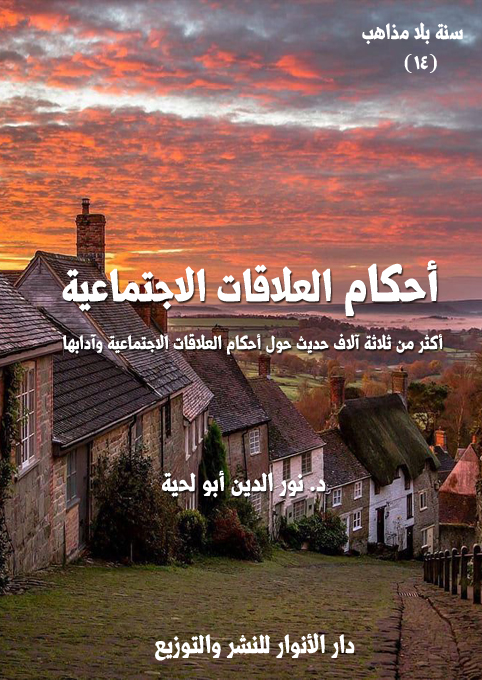

بيانات الكتاب
الكتاب: أحكام العلاقات الاجتماعية
الوصف: أكثر من ثلاثة آلاف حديث حول أحكام العلاقات الاجتماعية وآدابها
السلسلة: سنة بلا مذاهب
المؤلف: د. نور الدين أبو لحية
الناشر: دار الأنوار للنشر والتوزيع
الطبعة: الأولى، 1442 هـ
عدد الصفحات: 575
الكتاب موافق للمطبوع
ISBN: 978-620-3-85893-8
لمطالعة الكتاب من تطبيق مؤلفاتي المجاني وهو أحسن وأيسر: هنا

يجمع هذا الكتاب أكثر من ثلاثة آلاف حديث متوافق مع القرآن الكريم، مما يتعلق بالعلاقات الاجتماعية، باعتبارها من الجوانب الأساسية التي تقوم الحياة عليها.
وقد رأينا أن ما ورد في القرآن الكريم والسنة الموافقة له من الحديث عن هذا الجانب يمكن تقسيمه إلى ثلاثة أقسام:
أولها: حديثه عن آداب وأحكام العلاقات العامة بين المسلمين فيما بينهم، أو بينهم وبين غيرهم من البشر، وهي أحكام ترتبط في أكثرها بالنواحي الأخلاقية، والتي لا يمكن أن تخصص بجهة دون جهة، ومنها تحريم الأذى بأنواعه المختلفة، والدعوة إلى الاستغناء والعفاف والسماحة، والدعوة إلى التآلف والملاطفة، والدعوة إلى الإطعام والضيافة وإقامة الولائم والاجتماع في المجالس والدعوة إلى عيادة المرضى، والدعوة إلى الإصلاح والإغاثة، والدعوة إلى أداء الحقوق.
ثانيها: حديثه عن أحكام العلاقات الخاصة وآدابها، وتناولت فيه الأحاديث الواردة حول حقوق الوالدين، والأولاد، والأقارب، والإخوان والأصدقاء، والجيران، والمستضعفين، وعامة المسلمين.. وختمته بالحديث عن حقوق الموتى.
ثالثها ـ أحكام علاقة الزوجية وآدابها: وذلك باعتبار الأسرة هي اللبنة الأساسية التي يتكون منها المجتمع، وقد ذكرنا ما ورد حول تنظيم هذه العلاقة من أحاديث تتناول أحكام الزواج، وأحكام حل عصمة الزوجية.
أحكام العلاقات الاجتماعية (11)
يجمع هذا الكتاب أكثر من ثلاثة آلاف من الأحاديث التي نراها متوافقة مع القرآن الكريم، إما بتأكيد معانيه والدعوة إليها بالأساليب المختلفة، أو بتفصيلها وبيان مجملها، أو كيفية تنفيذها، وذلك في الحياة المرتبطة بالجانب الاجتماعي، وهو من الجوانب الأساسية التي تقوم الحياة عليها.
وقد رأينا أن ما ورد في القرآن الكريم والسنة الموافقة له من الحديث عن هذا الجانب يمكن تقسيمه إلى ثلاثة أقسام:
أولها: حديثه عن آداب وأحكام العلاقات العامة بين المسلمين فيما بينهم، أو بينهم وبين غيرهم من البشر، وهي أحكام ترتبط في أكثرها بالنواحي الأخلاقية، والتي لا يمكن أن تخصص بجهة دون جهة.
وقد رأينا أن القرآن الكريم دعا في هذا الجانب إلى مراعاة النواحي التالية:
1. تحريم الأذى بأنواعه المختلفة: ذلك أنه السبب في كل ما يحصل في المجتمع من تصدع وشقاق.. ولهذا ورد تحريم العنف الحسي والمعنوي؛ حيث حرم القتل والضرب والغيبة والنميمة والسخرية والاستهزاء وغيرها.
2. الدعوة إلى الاستغناء والعفاف والسماحة: حتى لا يكون الفرد كلا على المجتمع، وحتى يستطيع المجتمع أن يتجاوز ما يحصل له من مشاكل قد تؤثر في العلاقة بين أفراده، ولهذا ورد الأمر بالعفو والحلم والسماحة واللين، وفي نفس الوقت أمر بالاستغناء والعفاف وعدم تحميل الفرد حاجاته على المجتمع إلا في حدود الضرورة القصوى.
أحكام العلاقات الاجتماعية (12)
3. الدعوة إلى التآلف والملاطفة: ولهذا ورد الأمر بالتحية والسلام والاستئذان وتشميت العاطس.. وغيرها من الآداب الكثيرة التي تساهم في إحلال المودة بين أفراد المجتمع.
4. الدعوة إلى الإطعام والضيافة وإقامة الولائم والاجتماع في المجالس: وكل ذلك مما يساهم لا في تحقيق التكافل الاجتماعي فقط، وإنما في إضفاء المزيد من الود والتراحم الاجتماعي.
5. الدعوة إلى عيادة المرضى: والذين ورد تخصيصهم بمزيد من العناية لحاجتهم لمن يقف بجنبهم يؤنسهم أو يعينهم.
6. الدعوة إلى الإصلاح والإغاثة: وهي تشمل كل أنواع النصح والحسبة التي تؤدي إلى صلاح المجتمع، ومثلها كل أنواع التكافل التي تؤدي إلى كفايته الذاتية وعدم حصول فوارق بين الطبقات.
7. الدعوة إلى أداء الحقوق: وهي من الجوانب الأساسية التي ورد التشديد في التهاون بها، ويدخل فيها الأمانات والودائع والوفاء بالوعد والعهد، وغيرها.
ثانيا. حديثه عن أحكام العلاقات الخاصة وآدابها: وتناولت فيه الأحاديث الواردة حول كيفية التعامل مع أصناف الناس بحسب منازلهم؛ فقد يصلح لصنف من الناس ما لا يصلح مع غيره، بل قد يكون نفس التصرف حسنة مع قوم سيئة مع غيرهم.
وقد نبه إلى هذا الاختلاف في التعامل مع الناس قوله تعالى: ﴿لا تَجْعَلُوا دُعَاءَ الرَّسُولِ بَيْنَكُمْ كَدُعَاءِ بَعْضِكُمْ بَعْضاً﴾ [النور:63]
وقد ذكرنا في هذا الفصل ما ورد من الأحاديث حول حقوق الوالدين، والأولاد، والأقارب، والإخوان والأصدقاء، والجيران، والمستضعفين، وعامة المسلمين.. وختمناه
أحكام العلاقات الاجتماعية (13)
بالحديث عن حقوق الموتى.
ثالثا ـ أحكام علاقة الزوجية وآدابها: وذلك باعتبار الأسرة هي اللبنة الأساسية التي يتكون منها المجتمع، وقد ذكرنا ما ورد حول تنظيم هذه العلاقة من أحاديث تتناول:
1. أحكام الزواج: ابتداء من الاختيار والخطبة والعقد وشروطه.. وانتهاء بالعشرة الزوجية وحقوقها.
2. أحكام حل عصمة الزوجية: بأنواعها المختلفة، وقد اهتممنا فيه خصوصا بما ورد في القرآن الكريم من الحفاظ على الأسرة، وعدم الإفتاء بوقوع الطلاق إلا وفق الضوابط القرآنية، وأوردنا الروايات الكثيرة التي تؤكد ذلك.
أحكام العلاقات الاجتماعية (14)
جمعنا في هذا الفصل ما نراه متوافقا مع القرآن الكريم من الأحاديث الواردة حول أحكام العلاقات العامة وآدابها، والتي يمكن تصنيفها إلى المجالات التالية:
أولها ـ كف الأذى عن أفراد المجتمع بمختلف أنواعه حسيا كان أو معنويا.
ثانيا ـ البعد عن كل النواحي السلبية التي تجعل الفرد كلا على المجتمع.
ثالثا: القيام بكل ما يطلبه المجتمع من حاجات مادية ومعنوية بحسب الطاقة.
رابعا: إضفاء جو من المودة والتآلف بين أفراد المجتمع.
وبما أن بعض هذه المجالات ـ لأهميته ـ ورد فيه من النصوص المقدسة ما لم يرد في غيره؛ فقد رأينا تقسيم الأحاديث الواردة في هذا الباب إلى سبعة أنواع تشمل ما يلي:
1. ما ورد حول تحريم الأذى بأنواعه المختلفة.
2. ما ورد حول الاستغناء والعفاف والسماحة.
3. ما ورد حول التآلف والملاطفة.
4. ما ورد حول الإطعام والضيافة والمجالس.
5. ما ورد حول عيادة المريض.
6. ما ورد حول الإصلاح والإغاثة.
7. ما ورد حول أداء الحقوق.
أولا ـ ما ورد حول تحريم الأذى بأنواعه المختلفة
وهو الركن الأول من أركان العلاقات الاجتماعية التي لا يمكن أن تطيب أو تصلح من دونها، ولهذا ورد فيه الكثير من الآيات القرآنية التي تحذر من أبسط ما يمكن أن يؤدي
أحكام العلاقات الاجتماعية (15)
إلى ذلك، مع بيان العقوبات التي تتناسب مع ذلك الأذى.
ومنها قوله تعالى في الآية الجامعة لكل أنواع الأذى: ﴿وَالَّذِينَ يُؤْذُونَ الْمُؤْمِنِينَ وَالْمُؤْمِنَاتِ بِغَيْرِ مَا اكْتَسَبُوا فَقَدِ احْتَمَلُوا بُهْتَانًا وَإِثْمًا مُبِينًا﴾ [الأحزاب: 58]
ومنها الآيات التي تنص على بعض مفردات الأذى، كقوله تعالى: ﴿يَا أَيُّهَا الَّذِينَ آمَنُوا لَا يَسْخَرْ قَوْمٌ مِنْ قَوْمٍ عَسَى أَنْ يَكُونُوا خَيْرًا مِنْهُمْ وَلَا نِسَاءٌ مِنْ نِسَاءٍ عَسَى أَنْ يَكُنَّ خَيْرًا مِنْهُنَّ وَلَا تَلْمِزُوا أَنْفُسَكُمْ وَلَا تَنَابَزُوا بِالْأَلْقَابِ بِئْسَ الِاسْمُ الْفُسُوقُ بَعْدَ الْإِيمَانِ وَمَنْ لَمْ يَتُبْ فَأُولَئِكَ هُمُ الظَّالِمُونَ يَا أَيُّهَا الَّذِينَ آمَنُوا اجْتَنِبُوا كَثِيرًا مِنَ الظَّنِّ إِنَّ بَعْضَ الظَّنِّ إِثْمٌ وَلَا تَجَسَّسُوا وَلَا يَغْتَبْ بَعْضُكُمْ بَعْضًا﴾ [الحجرات: 11 - 12]
وقال تعالى: ﴿إِنَّ اللَّهَ يَأْمُرُ بِالْعَدْلِ وَالْإِحْسَانِ وَإِيتَاءِ ذِي الْقُرْبَى وَيَنْهَى عَنِ الْفَحْشَاءِ وَالْمُنْكَرِ وَالْبَغْيِ يَعِظُكُمْ لَعَلَّكُمْ تَذَكَّرُونَ﴾ [النحل: 90]
وقال تعالى: ﴿وَمَنْ يَقْتُلْ مُؤْمِنًا مُتَعَمِّدًا فَجَزَاؤُهُ جَهَنَّمُ خَالِدًا فِيهَا وَغَضِبَ اللَّهُ عَلَيْهِ وَلَعَنَهُ وَأَعَدَّ لَهُ عَذَابًا عَظِيمًا يَا أَيُّهَا الَّذِينَ آمَنُوا إِذَا ضَرَبْتُمْ فِي سَبِيلِ اللَّهِ فَتَبَيَّنُوا وَلَا تَقُولُوا لِمَنْ أَلْقَى إِلَيْكُمُ السَّلَامَ لَسْتَ مُؤْمِنًا تَبْتَغُونَ عَرَضَ الْحَيَاةِ الدُّنْيَا فَعِنْدَ اللَّهِ مَغَانِمُ كَثِيرَةٌ كَذَلِكَ كُنْتُمْ مِنْ قَبْلُ فَمَنَّ اللَّهُ عَلَيْكُمْ فَتَبَيَّنُوا إِنَّ اللَّهَ كَانَ بِمَا تَعْمَلُونَ خَبِيرًا﴾ [النساء: 93 - 94]
وغيرها من الآيات الكريمة التي ورد في السنة المطهرة تفاصيل أحكامها أو تأكيدها، مع العلم أنها ليست خاصة بالمسلمين فقط، بل بجميع أفراد المجتمع بغض النظر عن أديانهم أو أعراقهم.
1 ـ ما ورد في الأحاديث النبوية
من الأحاديث الواردة في هذا الباب في المصادر السنية والشيعية:
أحكام العلاقات الاجتماعية (16)
[الحديث: 1] صعد رسول الله صلى الله عليه وآله وسلم المنبر، فنادى بصوت رفيع، فقال: (يا معشر من أسلم بلسانه، ولم يفض الإيمان إلى قلبه، لا تؤذوا المسلمين، ولا تعيروهم، ولا تتبعوا عوراتهم، فإنه من يتبع عورة أخيه المسلم يتبع الله عورته، ومن يتبع الله عورته يفضحه ولو في جوف رحله) (1)
[الحديث: 2] قال رسول الله صلى الله عليه وآله وسلم: (إياكم والظن، فإن الظن أكذب الحديث، ولا تجسسوا، ولا تحسسوا، ولا تنافسوا، ولا تحاسدوا، ولا تباغضوا، ولا تدابروا وكونوا عباد الله إخوانا، كما أمركم، المسلم أخو المسلم، ولا يظلمه، ولا يخذله، ولا يحقره، التقوى هاهنا، التقوى هاهنا، التقوى هاهنا، ويشير إلى صدره، بحسب امرئ من الشر أن يحقر أخاه المسلم، كل المسلم على المسلم حرامٌ، دمه وعرضه وماله، إن الله لا ينظر إلى أجسادكم، ولا إلى صوركم وأعمالكم، ولكن ينظر إلى قلوبكم) (2)
[الحديث: 3] قال رسول الله صلى الله عليه وآله وسلم: (لا تقاطعوا، ولا تدابروا، ولا تباغضوا، ولا تحاسدوا، وكونوا عباد الله إخوانا، ولا يحل لمسلم أن يهجر أخاه فوق ثلاث) (3)
[الحديث: 4] قال رسول الله صلى الله عليه وآله وسلم: (لا يحل لمؤمن أن يهجر أخاه فوق ثلاث ليال، يلتقيان فيعرض هذا، ويعرض هذا، وخيرهما الذي بدأ بالسلام) (4)
[الحديث: 5] قال رسول الله صلى الله عليه وآله وسلم: (لا يحل لمؤمن أن يهجر مؤمنا فوق ثلاث، فإن مرت به ثلاث، فليقه وليسلم عليه، فإن رد عليه فقد اشتركا في الأجر، وإن لم يرد عليه فقد باء بالإثم) (5)
[الحديث: 6] قال رسول الله صلى الله عليه وآله وسلم: (من هجر أخاه سنة، فهو كسفك دمه) (6)
__________
(1) الترمذي (2032)
(2) البخاري (5143)، ومسلم (2563)
(3) البخاري (6065)، ومسلم (2559)
(4) البخاري (6077)، ومسلم (2560)
(5) أبو داود (4912)
(6) أبو داود (4915)
أحكام العلاقات الاجتماعية (17)
[الحديث: 7] قال رسول الله صلى الله عليه وآله وسلم: (تعرض الأعمال كل خميس واثنين، فيغفر الله في ذلك اليوم لكل امرئ لا يشرك بالله شيئا، إلا امرأ كانت بينه وبين أخيه شحناء، فيقول اتركوا هذين حتى يصطلحا) (1)
[الحديث: 8] قال رسول الله صلى الله عليه وآله وسلم: (إنك إن اتبعت عورات الناس أفسدتهم، أوكدت أن تفسدهم) (2)
[الحديث: 9] قال رسول الله صلى الله عليه وآله وسلم: (ليس المؤمن بطعان، ولا لعان، ولا فاحش، ولا بذئ) (3)
[الحديث: 10] قال رسول الله صلى الله عليه وآله وسلم: (إن اللعانين لا يكونون شهداء، ولا شفعاء يوم القيامة) (4)
[الحديث: 11] قال رسول الله صلى الله عليه وآله وسلم: (لا تلاعنوا بلعنة الله، ولا بغضب الله، ولا بالنار) (5)
[الحديث: 12] قيل لرسول الله صلى الله عليه وآله وسلم: ادع الله على المشركين والعنهم فقال: إني إنما بعثت رحمة ولم أبعث لعانا (6).
[الحديث: 13] قال رسول الله صلى الله عليه وآله وسلم: (سباب المؤمن فسوق، وقتاله كفرٌ) (7)
[الحديث: 14] قال رسول الله صلى الله عليه وآله وسلم: (لا يرمي رجل رجلا بالفسق أو الكفر إلا ارتدت عليه إن لم يكن صاحبه كذلك) (8)
[الحديث: 15] قال رسول الله صلى الله عليه وآله وسلم: (إذا لعن العبد شيئا صعدت اللعنة إلى السماء،
__________
(1) مسلم (2565) 36.
(2) أبو داود (4888)
(3) الترمذي (1977)
(4) مسلم (2598)
(5) الترمذي (1976)، وأبو داود (4906)
(6) مسلم (2599)
(7) البخاري (6044)، ومسلم (64)
(8) البخاري (6045)، ومسلم (61)
أحكام العلاقات الاجتماعية (18)
فتغلق أبواب السماء دونها، ثم تهبط إلى الأرض، فتغلق أبوابها دونها، فتأخذ يمينا وشمالا فإذا لم تجد مساغا رجعت إلى الذي لعن، فإن كان لذلك أهلا وإلا رجعت إلى قائلها) (1)
[الحديث: 16] قال رسول الله صلى الله عليه وآله وسلم: (المستبان ما قالا، فعلى البادي منهما، حتى يعتدي المظلوم) (2)
[الحديث: 17] سب رجل رجلا عند رسول الله صلى الله عليه وآله وسلم، فجعل المسبوب يقول: عليك السلام، فقال رسول الله صلى الله عليه وآله وسلم: (أما إن ملكا بينكما يذب عنك كلما شتمك هذا، قال له: بل أنت وأنت أحق به، وإذا قلت له: عليك السلام، قال: لا، بل أنت وأنت أحق به) (3)
[الحديث: 18] قال رسول الله صلى الله عليه وآله وسلم: (لا تسبوا الأموات فإنهم قد أفضوا إلى ما قدموا) (4)
[الحديث: 19] قال رسول الله صلى الله عليه وآله وسلم: (لا تسبوا الأموات فتؤذوا الأحياء) (5)
[الحديث: 20] قال رسول الله صلى الله عليه وآله وسلم: (اذكروا محاسن موتاكم، وكفوا عن مساويهم) (6)
[الحديث: 21] قال رسول الله صلى الله عليه وآله وسلم: (لعن الله من ذبح لغير الله، لعن الله من لعن والديه، لعن الله من آوى محدثا، لعن الله من غير منار الأرض) (7)
[الحديث: 22] قال رسول الله صلى الله عليه وآله وسلم: (ستة لعنتهم، وكل نبي مجابٌ، المحرف لكتاب الله، والمكذب بقدر الله، والمستحل لحرم الله، والمتسلط بالجبروت، ليعز من أذل الله، ويذل من أعز الله، والمستحل ما حرم الله من عترتي. والتارك لسنتي) (8)
__________
(1) أبو داود (4905)
(2) مسلم (2587)
(3) أحمد 5/ 445.
(4) البخاري (1393)
(5) الترمذي (1982)
(6) الترمذي (1019)، وأبو داود (4900)
(7) مسلم (1978)
(8) الترمذي (2154)
أحكام العلاقات الاجتماعية (19)
[الحديث: 23] عن ابن مسعود قال: آكل الربا وموكله وكاتبه، إذا علموا ذلك، والواشمة والمستوشمة للحسن، ومانع الصدقة، والمرتد أعرابيا بعد الهجرة، ملعونون على لسان محمد صلى الله عليه وآله وسلم يوم القيامة (1).
[الحديث: 24] قال رسول الله صلى الله عليه وآله وسلم: (إياكم والحسد، فإن الحسد يأكل الحسنات كما تأكل النار الحطب) (2)
[الحديث: 25] قال رسول الله صلى الله عليه وآله وسلم: (دب إليكم داء الأمم قبلكم، الحسد، والبغضاء وهي الحالقة، أما إني لا أقول تحلق الشعر، ولكن تحلق الدين، والذي نفسي بيده لا تدخلون الجنة حتى تؤمنوا، ولا تؤمنوا حتى تحابوا، ألا أدلكم على ما تحابون به؟ أفشوا السلام بينكم) (3)
[الحديث: 26] قال رسول الله صلى الله عليه وآله وسلم: (من رأى عورة فسترها، كان كمن أحيا موؤدة) (4)
[الحديث: 27] قال رسول الله صلى الله عليه وآله وسلم: (لا يستر عبدٌ عبدا في الدنيا، إلا ستره الله يوم القيامة) (5)، وفي رواية: (إنه لا يستر الله على عبد في الدنيا، إلا ستره الله يوم القيامة) (6)
[الحديث: 28] قال رسول الله صلى الله عليه وآله وسلم: (لا تظهر الشماتة بأخيك، فيعافيه الله ويبتليك) (7)
[الحديث: 29] عن عائشة قالت: كان رسول الله صلى الله عليه وآله وسلم إذا بلغه عن الرجل لم يقل: ما بال فلان؟ ولكن يقول: (ما بال أقوام يقولون: كذا وكذا) (8)
__________
(1) النسائي 8/ 147.
(2) أبو داود (4903)
(3) الترمذي (2510)
(4) أبو داود (4891)
(5) مسلم (2590)
(6) مسلم (2590)
(7) الترمذي (2506)
(8) أبو داود (4788)
أحكام العلاقات الاجتماعية (20)
[الحديث: 30] قال رسول الله صلى الله عليه وآله وسلم: (إذا مر أحدكم في مجلس أو سوق، وبيده نبل، فليأخذ بنصالها، ثم ليأخذ بنصالها) (1)
[الحديث: 31] عن جابر: أن رسول الله صلى الله عليه وآله وسلم نهى أن يتعاطى السيف مسلولا (2).
[الحديث: 32] قال رسول الله صلى الله عليه وآله وسلم: (تعافوا تسقط الضغائن بينكم) (3)
[الحديث: 33] قال رسول الله صلى الله عليه وآله وسلم: (إذا تنخم أحدكم فليغيب نخامته، لا تصيب جلد مؤمن أو ثوبه) (4)
[الحديث: 34] قال رسول الله صلى الله عليه وآله وسلم: (تجدون من شر الناس عند الله تعالى يوم القيامة ذا الوجهين، الذي يأتي هؤلاء بوجه وهؤلاء بوجه) (5)
[الحديث: 35] قال رسول الله صلى الله عليه وآله وسلم: (من كان له وجهان في الدنيا، كان له يوم القيامة لسانان من نار) (6)
[الحديث: 36] جاء رجلٌ إلى رسول الله صلى الله عليه وآله وسلم فقال: أنت سيدنا فقال: (السيد الله)، قال: وأفضلنا فضلا، وأعظمنا طولا، فقال: (قولوا بقولكم، أو بعض قولكم، ولا يستجرينكم الشيطان) (7)
[الحديث: 37] أثنى رجل على رجل عند رسول الله صلى الله عليه وآله وسلم فقال: (ويلك، قطعت عنق صاحبك، قطعت عنق صاحبك)، ثلاثا، ثم قال: (من كان منكم مادحا أخاه لا محالة؛ فليقل: أحسب فلانا، والله حسيبه، ولا يزكي على الله أحدا أحسب كذا وكذا إن كان يعلم ذلك منه) (8)
__________
(1) البخاري (452)، ومسلم (2615)
(2) أبو داود (2588)، الترمذي (2163)
(3) البزار (كشف الأستار) (2058)
(4) البزار (كشف الأستار) (2078)
(5) البخاري (6058)، ومسلم (2526)
(6) أبو داود (4873)، والدارمي (2764)
(7) أبو داود (4806)
(8) البخاري (2662)، ومسلم (3000)
أحكام العلاقات الاجتماعية (21)
[الحديث: 38] قال رسول الله صلى الله عليه وآله وسلم: (ليس الشديد بالصرعة، إنما الشديد الذي يملك نفسه عند الغضب) (1)
[الحديث: 39] قال رسول الله صلى الله عليه وآله وسلم: (من كظم غيظا وهو يستطيع أن ينفذه، دعاه الله يوم القيامة على رءوس الخلائق، حتى يخيره من أي الحور شاء) (2)
[الحديث: 40] قال رسول الله صلى الله عليه وآله وسلم: (ألا إنه ينصب لكل غادر لواءٌ يوم القيامة بقدر غدرته، ولا غدرة أعظم من غدرة إمامة عامة) (3)
[الحديث: 41] قال رسول الله صلى الله عليه وآله وسلم: (ألا إن بني آدم خلقوا على طبقات شتى، فمنهم من يولد مؤمنا ويحيا مؤمنا ويموت مؤمنا، ومنهم من يولد كافرا ويحيا كافرا ويموت كافرا، ومنهم من يولد ويحيا مؤمنا ويموت كافرا، ومنهم من يولد كافرا ويحيا كافرا ويموت مؤمنا، ألا وإن منهم البطيء الغضب، سريع الفيء، ومنهم السريع الغضب سريع، الفيء فتلك بتلك، ألا وإن منهم سريع الغضب بطيء الفيء، ألا وخيرهم بطيء الغضب سريع الفيء، وشرهم سريع الغضب بطيء الفيء، ألا وإن منهم حسن القضاء حسن الطلب، ومنهم سيئ القضاء وحسن اطلب، ومنهم حسن القضاء سيئ الطلب، فتلك بتلك، ألا وإن منهم السيئ القضاء السيئ الطلب، ومنهم سيئ القضاء وحسن الطلب، ومنهم حسن القضاء سيئ الطلب، فتلك بتلك، ألا وإن منهم السيئ القضاء السيئ الطلب، ألا وخيرهم الحسن القضاء الحسن الطلب، وشرهم سيئ القضاء سيئ الطلب، ألا وإن الغضب جمرةٌ في قلب ابن آدم، أما رأيتم إلى حمرة عينيه، وانتفاخ أوداجه، فمن أحس بشيء من ذلك فليلصق بالأرض) (4)
__________
(1) البخاري (6114)، ومسلم (2609)
(2) الترمذي (2021)، وأبو داود (4777)
(3) الترمذي (2191)
(4) الترمذي (2191)
أحكام العلاقات الاجتماعية (22)
[الحديث: 42] قال رسول الله صلى الله عليه وآله وسلم: (ما تعدون الرقوب فيكم؟)، قيل: الذي لا يولد له، قال: (ليس ذلك بالرقوب، ولكنه الرجل الذي لم يقدم من ولده شيئا)، قال: (فما تعدون الصرعة فيكم؟)، قيل: الذي لا يصرعه الرجال، قال: (ليس بذاك، ولكنه الذي يملك نفسه عند الغضب)، قال: (فما تعدون المفلس فيكم؟)، قيل: من لا مال له، قال: (ليس بذاك، ولكنه الذي يأتي يوم القيامة بحسنات، ويأتي قد ظلم هذا وشتم هذا، وأخذ مال هذا وليس هناك دينارٌ، ولا درهم، فيعطون من حسناته ولا تفي، فيؤخذ من سيئاتهم فتطرح عليه) (1)
[الحديث: 43] قال رسول الله صلى الله عليه وآله وسلم: (علموا، ويسروا، ولا تعسروا، وإذا غضب أحدكم فليسكت، وإذا غضب أحدكم فليسكت، وإذا غضب أحدكم فليسكت) (2)
[الحديث: 44] قال رسول الله صلى الله عليه وآله وسلم: (باب النار لا يدخله أحدٌ إلا من يشفى غيظه بسخط الله) (3)
[الحديث: 45] قال رسول الله صلى الله عليه وآله وسلم: (أتدرون ما الغيبة؟)، قالوا: الله ورسوله أعلم، قال: (ذكر أحدكم أخاه بما يكره)، فقال رجلٌ: أرأيت إن كان في أخي ما أقول؟ قال: (إن كان فيه ما تقول فقد اغتبته، وإن لم يكن فيه ما تقول فقد بهته) (4)
[الحديث: 46] عن عائشة قالت: قلت: يا رسول الله حسبك من صفية قصرها، قال: لقد قلت كلمة لو مزج بها البحر لمزجته، وحكيت له إنسانا، فقال: ما أحب أني حكيت إنسانا وأن لي كذا وكذا (5).
[الحديث: 47] قال رسول الله صلى الله عليه وآله وسلم: (من أكل برجل مسلم أكلة فإن الله يطعمه مثلها من جهنم، ومن كسى ثوبا برجل مسلم فإن الله يكسوه مثله من جهنم ومن قام برجل مقام
__________
(1) مسلم (2581)
(2) أحمد 1/ 283.
(3) قال الهيثمي 10/ 395: رواه البزار.
(4) مسلم (2589)
(5) أبو داود (4875)، والترمذي (2502)
أحكام العلاقات الاجتماعية (23)
سمعة ورياء فإن الله يقوم به مقام سمعة ورياء يوم القيامة) (1)
[الحديث: 48] قال رسول الله صلى الله عليه وآله وسلم: (إن من أربى الربا الاستطالة في عرض المسلم بغير حق) (2)
[الحديث: 49] قال رسول الله صلى الله عليه وآله وسلم: (من حمى مؤمنا من منافق، بعث الله ملكا يحمى لحمه يوم القيامة من نار جهنم، ومن رمى مسلما بشيء يريد شينه به، جلس يوم القيامة على جسر من جسور جهنم حتى يخرج مما قال) (3)
[الحديث: 50] قال رسول الله صلى الله عليه وآله وسلم: (لا يدخل الجنة قتات) (4)
[الحديث: 51] قال رسول الله صلى الله عليه وآله وسلم: (لا يبلغني أحدٌ عن أحد من أصحابي شيئا، فإني أحب أن أخرج إليهم وأنا سليم الصدر) (5)
[الحديث: 52] عن جابر قال: كنا مع رسول الله صلى الله عليه وآله وسلم فارتفعت ريحةٌ منتنة، فقال: (أتدرون ما هذه الريح؟ هذه ريح الذين يغتابون المؤمنين) (6)
[الحديث: 53] عن ابن مسعود قال: كنا عند رسول الله صلى الله عليه وآله وسلم فقام رجلٌ فوقع فيه رجل من بعده، فقال له صلى الله عليه وآله وسلم: (تخلل)، فقال ومما أتخلل يا رسول الله، أأكلت لحما؟ قال: (إنك أكلت لحم أخيك) (7)
[الحديث: 54] قال رسول الله صلى الله عليه وآله وسلم: (أربع من كن فيه كان منافقا خالصا، ومن كانت فيه خصلةٌ منهن كانت فيه خصلة من النفاق حتى يدعها، إذا ائتمن خان، وإذا حدث كذب، وإذا عاهد غدر، وإذا خاصم فجر) (8)، وفي رواية: (وإذا وعد أخلف)
__________
(1) أبو داود (4881)
(2) أبو داود (4876)
(3) أبو داود (4883)
(4) البخاري (6056)، ومسلم (105)
(5) أبو داود (4860)، والترمذي (3897)
(6) أحمد 3/ 351.
(7) الطبراني 10/ 102 (10092)
(8) البخاري (34)، ومسلم (58)
أحكام العلاقات الاجتماعية (24)
[الحديث: 55] قال رسول الله صلى الله عليه وآله وسلم: (مثل المنافق كالشاة العائر بين الغنمين، تعير إلى هذه مرة، وإلى هذه مرة) (1)
[الحديث: 56] قيل لحذيفة: إنا لندخل إلى سلطاننا وأمرائنا، فنقول لهم، بخلاف ما نتكلم إذا خرجنا من عندهم، فقال: كنا نعد هذا نفاقا على عهد رسول الله صلى الله عليه وآله وسلم، فأما اليوم فإنما هو الكفر بعد الإيمان (2).
[الحديث: 57] قال حذيفة: إن المنافقين اليوم شرٌ منهم على عهد رسول الله صلى الله عليه وآله وسلم، قيل: وكيف ذلك؟ قال: كانوا يومئذ يسرون، واليوم يجهرون (3).
[الحديث: 58] قال رسول الله صلى الله عليه وآله وسلم: (إن للمنافقين علامات يعرفون بها، تحيتهم لعنة، وطعامهم نهبة، وغنيمتهم غلول، لا يقربون المساجد إلا هجرا ولا يأتون الصلاة إلا دبرا مستكبرين، لا يألفون ولا يؤلفون، خشب بالليل صخب بالنهار) (4)
[الحديث: 59] عن ابن أبي ليلى قال: حدثنا أصحاب محمد صلى الله عليه وآله وسلم أنهم كانوا يسيرون معه، فقام رجل منهم، فانطلق بعضهم إلى حبل معه، فأخذه، ففزع، فقال رسول الله صلى الله عليه وآله وسلم: (لا يحل لمسلم أن يروع مسلما) (5)
[الحديث: 60] قال رسول الله صلى الله عليه وآله وسلم: (من ترك المراء وهو مبطل، بني له بيت في ربض الجنة، ومن تركه وهو محق، بني له في وسطها، ومن حسن خلقه بني له في أعلاها) (6)
[الحديث: 61] قال رسول الله صلى الله عليه وآله وسلم: (إن أبغض الرجال إلى الله الألد الخصم) (7)
[الحديث: 62] قال رسول الله صلى الله عليه وآله وسلم: (لا يبلغ العبد صريح الإيمان حتى يدع المزاح
__________
(1) مسلم (2784)
(2) البخاري (7178)
(3) البخاري (7113)
(4) أحمد 2/ 293، والبزار في (كشف الأستار) (85)
(5) أبو داود (5004)
(6) أبو داود (4800)
(7) البخاري (2457)، ومسلم (2668)
أحكام العلاقات الاجتماعية (25)
والكذب، ويدع المراء وإن كان محقا) (1)
[الحديث: 63] قال رسول الله صلى الله عليه وآله وسلم: (ما اختلفت أمة بعد نبيها إلا ظهر أهل باطلها على أهل حقها) (2)
[الحديث: 64] قال رسول الله صلى الله عليه وآله وسلم: ألا أنبئكم بشرّ الناس؟ قالوا: بلى يا رسول الله، قال: (من أبغض الناس وأبغضه الناس) (3)
[الحديث: 65] قال رسول الله صلى الله عليه وآله وسلم: (ألا أخبركم بخير خلائق الدنيا والآخرة: العفو عمّن ظلمكم، والإحسان إلى من أساء إليكم، وإعطاء من حرمكم) (4)
[الحديث: 66] قال رسول الله صلى الله عليه وآله وسلم: (ألا إنّ في التّباغض الحالقة، لا أعني حالقة الشعر ولكن حالقة الدين) (5)
[الحديث: 67] جاء رجلٌ إلى رسول الله صلى الله عليه وآله وسلم فقال: أوصني، فقال: (لا تسبّوا الناس فتكتسبوا العداوة بينهم) (6)
[الحديث: 68] قال رسول الله صلى الله عليه وآله وسلم: (اقطع لسانك عن إخوانك، وعن حملة القرآن، ولتكن ذنوبك عليك ولا تحملها على إخوانك، ولا تزكّ نفسك بتذميم إخوانك، ولا ترائي بعملك، ولا تدخل كذا من الدنيا في الآخرة، ولا تفحش في مجلسك لكي يحذروك بسوء خلقك، ولا تناج مع رجل وعندك آخر ولا تتعظّم على الناس فينقطع عنك خيرات الدنيا، ولا تمزق الناس فيمرّقك كلاب النار قال الله تعالى: ﴿وَالنَّاشِطَاتِ نَشْطًا﴾ [النازعات: 2] أتدري ما الناشطات؟ كلاب أهل النار، تنشط العظم واللحم)، قيل: من يطيق هذه
__________
(1) ذكره الهيثمي 1/ 92 وقال: رواه أبو يعلى.
(2) الطبراني في الأوسط (7754)
(3) معاني الأخبار ص 196.
(4) كتاب الزهد ص 15.
(5) اصول الكافي: ج 2 ص 346.
(6) اصول الكافي: ج 2 ص 360.
أحكام العلاقات الاجتماعية (26)
الخصال؟ قال: (أما إنّه يسير على من يسّر الله عليه) (1)
[الحديث: 69] قال رسول الله صلى الله عليه وآله وسلم: (من أشار إلى أخيه المسلم بسلاحه لعنته الملائكة حتّى ينحّيه عنه) (2)
[الحديث: 70] قال رسول الله صلى الله عليه وآله وسلم: (ألا ومن لطم خدّ مسلم أو وجهه بدّد الله عظامه يوم القيامة وحشر مغلولا حتّى يدخل جهنّم إلّا أن يتوب) (3)
[الحديث: 71] قال رسول الله صلى الله عليه وآله وسلم: (أعتا الخلق على الله من قتل، غير قاتله أو ضرب غير ضاربه، أو تولّى غير مواليه، أو ادّعى إلى غير أبيه) (4)
[الحديث: 72] قال رسول الله صلى الله عليه وآله وسلم: (إنّ أعتا الناس على الله عزّ وجلّ: القاتل غير قاتله، والضارب غير ضاربه، ومن ادّعى لغير أبيه فهو كافر بما أنزل الله على محمّد، ومن أحدث حدثا أو آوى محدثا لم يقبل الله عزّ وجلّ منه يوم القيامة صرفا ولا عدلا) (5)
[الحديث: 73] قال رسول الله صلى الله عليه وآله وسلم: (لعن الله المحلّل والمحلّل له، ومن يوالي غير مواليه، ومن ادّعى نسبا لا يعرف. والمتشبّهين من الرجال بالنساء، والمتشبّهات من النساء بالرجال. ومن أحدث حدثا في الإسلام أو آوى محدثا، ومن قتل غير قاتله أو ضرب غير ضاربه، ومن لعن أبويه)، فقال رجل: يا رسول الله أ يوجد رجل يلعن أبويه؟ فقال: (نعم، يلعن آباء الرجال وامّهاتهم فيلعنون أبويه) (6)
[الحديث: 74] قال رسول الله صلى الله عليه وآله وسلم: (من شهر سيفه فدمه هدر) (7)
[الحديث: 75] قال رسول الله صلى الله عليه وآله وسلم: (من أشار على أخيه المسلم لعنته الملائكة حتّى
__________
(1) فلاح السائل ص 124.
(2) الأشعثيّات ص 83.
(3) أمالي الصّدوق ص 422.
(4) دعائم الإسلام ج 2 ص 402.
(5) الكافي: ج 7 ص 274.
(6) روضة الكافي: ج 1 ص 100.
(7) الأشعثيّات ص 83.
أحكام العلاقات الاجتماعية (27)
يشمه عنه) (1)
[الحديث: 76] قال رسول الله صلى الله عليه وآله وسلم: (خمسة لا تطفأ نيرانهم، ولا تموت أبدانهم رجل أشرك باللّه، ورجل عقّ والديه، ورجل سعى بأخيه إلى سلطان فقتله، ورجل قتل نفسا بغير نفس، ورجل أذنب وحمل ذنبه على الله عزّ وجلّ) (2)
[الحديث: 77] قال رسول الله صلى الله عليه وآله وسلم: (لو بغى جبل على جبل لجعل الله عزّ وجلّ الباغي منهما دكّا) (3)
[الحديث: 78] قال رسول الله صلى الله عليه وآله وسلم: (ما رفع الناس أبصارهم إلى شيء إلّا وضعه الله تعالى، ولو بغى جبل على جبل لجعل الله تعالى الباغي منهما دكّا) (4)
[الحديث: 79] قال الإمام عليّ: خطبنا رسول الله صلى الله عليه وآله وسلم فقال: (أيّها الناس، الموتة الموتة، الوحيّة الوحيّة لا ردّة، سعادة أو شقاوة، جاء الموت بما فيه: بالروح والراحة، لأهل دار الحيوان، الّذين كان لها سعيهم، وفيها رغبتهم، جاء الموت بما فيه: بالويل والحسرة والكرّة الخاسرة لأهل دار الغرور الّذين كان لها سعيهم وفيها رغبتهم.. بئس العبد عبد عتا وبغى ونسي الجبّار الأعلى) (5)
[الحديث: 80] عن الإمام الصادق قال: (كان رسول الله صلى الله عليه وآله وسلم يتعوّذ في كلّ يوم من ستّ: من الشكّ، والشرك، والحميّة، والغضب، والبغي، والحسد) (6)
[الحديث: 81] قال رسول الله صلى الله عليه وآله وسلم: (اجتنب خمسا: الحسد، والطيرة، والبغي، وسوء الظنّ، والنميمة) (7)
__________
(1) مصادقة الإخوان ص 78.
(2) كنز الكراجكي ج 2 ص 47.
(3) عقاب الأعمال ص 324.
(4) الأشعثيات: ص 147.
(5) نوادر الراوندي ص 22.
(6) الخصال ج 1 ص 329.
(7) عوالي اللئالي ج 1 ص 289.
أحكام العلاقات الاجتماعية (28)
[الحديث: 82] قال رسول الله صلى الله عليه وآله وسلم: (إنّ أسرع الخير ثوابا البرّ، وإنّ أسرع الشرّ عقابا البغي، وكفى بالمرء عيبا أن ينظر من الناس إلى ما يعمى عنه من نفسه، أو يعيّر الناس بما لا يستطيع تركه، أو يؤذي جليسه بما لا يعنيه) (1)
[الحديث: 83] قال رسول الله صلى الله عليه وآله وسلم: (إنّ أعجل الشرّ عقوبة البغيّ) (2)
[الحديث: 84] قال رسول الله صلى الله عليه وآله وسلم: (أعجل الخير ثوابا صلة الرحم، وأسرع الشرّ عقابا البغي) (3)
[الحديث: 85] قال رسول الله صلى الله عليه وآله وسلم: (ما من ذنب أجدر أن يعجّل الله لصاحبه العقوبة في الدنيا مع ما ادخّر له في الآخرة من البغي وقطيعة الرحم) (4)
[الحديث: 86] قال رسول الله صلى الله عليه وآله وسلم: (ثلاثة من الذنوب تعجّل عقوبتها، ولا تؤخّر إلى الآخرة: عقوق الوالدين، والبغي على الناس، وكفر الإحسان) (5)
[الحديث: 87] قال رسول الله صلى الله عليه وآله وسلم: (أسرع شيء عقوبة: رجل أحسنت إليه فكافأك بالإحسان إليه إساءة، ورجل لا تبغي عليه وهو يبغي عليك، ورجل عاهدته على أمر فوفيت له وغدر بك) (6)
[الحديث: 88] قال رسول الله صلى الله عليه وآله وسلم: (من قال في مؤمن ما رأت عيناه وسمعت أذناه ممّن يشينه ويهدم مروءته، فهو من الّذين قال الله تعالى فيهم: ﴿إِنَّ الَّذِينَ يُحِبُّونَ أَنْ تَشِيعَ الْفَاحِشَةُ فِي الَّذِينَ آمَنُوا لَهُمْ عَذَابٌ أَلِيمٌ فِي الدُّنْيَا وَالْآخِرَةِ﴾ [النور: 19] الأليم الويل الطويل) (7)
__________
(1) عقاب الأعمال ص 324.
(2) اصول الكافي: ج 2 ص 327.
(3) جامع الأخبار ص 107.
(4) روضة الواعظين ج 2 ص 388.
(5) أمالي الطوسي ج 1 ص 13.
(6) الخصال ج 1 ص 230.
(7) جامع الأخبار ص 147.
أحكام العلاقات الاجتماعية (29)
[الحديث: 89] قال رسول الله صلى الله عليه وآله وسلم: (خلق الله الجنّة من لبنتين لبنة من ذهب ولبنة من فضّة وجعل حيطانها الياقوت وسقفها الزبرجد وحصاءها اللؤلؤ وترابها الزعفران والمسك الأذفر، ثمّ قال لها: تكلّمي، فقالت: لا إله إلّا الله الحي القيّوم قد سعد من يدخلني، فقال الله جلّ جلاله: (وعزّتي وجلالي لا يدخلها مدمن خمر ولا نمّام ولا ديّوث ولا شرطي ولا مخنث ولا نبّاش ولا عشّار ولا قاطع رحم ولا قدري) (1)
[الحديث: 90] قال رسول الله صلى الله عليه وآله وسلم: (لا تقوم الساعة حتّى يذهب الحياء من الصبيان والنساء وحتّى تؤكل المعاهد كما تؤكل الخضرة) (2)
[الحديث: 91] قال رسول الله صلى الله عليه وآله وسلم: (صاحب النميمة لا يستريح من عذاب الله عزّ وجلّ في الآخرة) (3)
[الحديث: 92] قال رسول الله صلى الله عليه وآله وسلم: (لا يدخل الجنّة قتات، ولا نمّام) (4)
[الحديث: 93] قال رسول الله صلى الله عليه وآله وسلم: (رأيت على باب الجنّة مكتوبا: أنت محرّمة على كلّ بخيل ومراء وعاقّ ونمّام) (5)
[الحديث: 94] قال رسول الله صلى الله عليه وآله وسلم: (ستّ خصال ما من مسلم يموت في واحدة منهنّ إلّا كان ضامنا على الله أن يدخله الجنّة: رجل نيّته أن لا يغتاب مسلما فإن مات على ذلك كان ضامنا على الله) (6)
[الحديث: 95] قال رسول الله صلى الله عليه وآله وسلم: (إنّ عذاب القبر من النميمة والغيبة والكذب) (7)
__________
(1) من لا يحضره الفقيه ج 4 ص 254.
(2) نوادر الراوندي ص 17.
(3) أمالي الشيخ الطوسي ج 2 ص 151.
(4) عوالي اللّئالي ج 1 ص 266.
(5) جامع الأخبار ص 84.
(6) دعوات الراوندي ص 280.
(7) جامع الأخبار ص 147.
أحكام العلاقات الاجتماعية (30)
[الحديث: 96] قال رسول الله صلى الله عليه وآله وسلم: (ومن مشى في نميمة بين اثنين سلّط الله عليه في قبره نارا تحرقه إلى يوم القيامة، وإذا خرج من قبره سلّط الله عليه تنّينا أسود ينهش لحمه حتّى يدخل النار) (1)
[الحديث: 97] قال رسول الله صلى الله عليه وآله وسلم يوصي بعض أصحابه: (احذر الغيبة والنّميمة، فإنّ الغيبة تفطر والنّميمة توجب عذاب القبر) (2)
[الحديث: 98] قال رسول الله صلى الله عليه وآله وسلم: (أشرار الناس من يبغض المؤمنين ويبغضه قلوبهم، وسحقا وبعدا للمشّائين بالنميمة المفرّقين بين الأحبّة الباغين للناس العيب، أولئك لا ينظر الله إليهم ولا يزكّيهم يوم القيامة)، ثمّ تلا: ﴿هُوَ الَّذِي أَيَّدَكَ بِنَصْرِهِ وَبِالْمُؤْمِنِينَ وَأَلَّفَ بَيْنَ قُلُوبِهِمْ لَوْ أَنْفَقْتَ مَا فِي الْأَرْضِ جَمِيعًا مَا أَلَّفْتَ بَيْنَ قُلُوبِهِمْ وَلَكِنَّ اللَّهَ أَلَّفَ بَيْنَهُمْ إِنَّهُ عَزِيزٌ حَكِيمٌ﴾ [الأنفال: 62 - 63] (3)
[الحديث: 99] قال رسول الله صلى الله عليه وآله وسلم: (رأيت ليلة الاسرى قوما يقطع اللّحم من جنوبهم ثمّ يلقمونه ويقال: كلوا ما كنتم تأكلون من لحم أخيكم، فقلت: يا جبريل من هؤلاء؟ فقال: هؤلاء الهمّازون من أمّتك اللّمازون) (4)
[الحديث: 100] قال رسول الله صلى الله عليه وآله وسلم: (أربعة يزيد عذابهم على عذاب أهل النار.. ورجل اغتاب الناس ومشى بالنميمة فهو يأكل في النار لحمه) (5)
[الحديث: 101] قال رسول الله صلى الله عليه وآله وسلم: (من أشار على مسلم بكلمة ليشينه بها بغير حقّ شانه الله تعالى في النار يوم القيامة) (6)
[الحديث: 102] قال رسول الله صلى الله عليه وآله وسلم: (أيّما رجل أشاع على رجل كلمة وهو منها
__________
(1) عقاب الأعمال ص 335.
(2) تحف العقول ص 12.
(3) أمالي الشيخ الطوسي ج 2 ص 77.
(4) عوالي اللئالي ج 1 ص 264.
(5) مستدرك الوسائل ج 2 ص 111 لبّ اللباب.
(6) كشف الريبة ص 42.
أحكام العلاقات الاجتماعية (31)
بريء ليشينه بها في الدّنيا كان حقّا على الله عزّ وجلّ أن يدينه بها يوم القيامة في النار) (1)
[الحديث: 103] قال رسول الله صلى الله عليه وآله وسلم: (أربعة يؤذون أهل النار على ما بهم من الأذى، يسقون من الحميم والجحيم، ينادون بالويل والثبور، يقول أهل النار بعضهم لبعض: ما بال هؤلاء الأربعة قد آذونا على ما بنا من الأذى؟ فرجل معلّق في تابوت من جمر، ورجل يجرّ أمعاءه، ورجل يسيل فوه قيحا ودما، ورجل يأكل لحمه، فقيل لصاحب التابوت: ما بال الأبعد قد آذانا على ما بنا من الأذى؟ فيقول: إنّ الأبعد قد مات وفي عنقه أموال الناس لم يجد لها في نفسه أداء ولا وفاء، ثمّ يقال للّذي يجرّ أمعاءه: ما بال الأبعد قد آذانا على ما بنا من الأذى؟ فيقول: إنّ الأبعد كان لا يبالي أين أصاب البول من جسده، ثمّ يقال للذي يسيل فوه قيحا ودما: ما بال الأبعد قد آذانا على ما بنا من الأذى؟ فيقول: إنّ الأبعد كان يحاكى، فينظر إلى كلّ كلمة خبيثة فيسندها ويحاكى بها، ثمّ يقال للّذي يأكل لحمه: ما بال الأبعد قد آذانا على ما بنا من الأذى؟ فيقول: إنّ الأبعد كان يأكل لحوم الناس بالغيبة ويمشي بالنميمة) (2)
[الحديث: 104] عن البراء بن عازب قال: كان معاذ بن جبل جالسا قريبا من رسول الله صلى الله عليه وآله وسلم في منزل أبي أيّوب الأنصاريّ فقال معاذ: يا رسول الله أ رأيت قول الله تعالى: ﴿يَوْمَ يُنْفَخُ فِي الصُّورِ فَتَأْتُونَ أَفْوَاجًا وَفُتِحَتِ السَّمَاءُ فَكَانَتْ أَبْوَابًا وَسُيِّرَتِ الْجِبَالُ فَكَانَتْ سَرَابًا إِنَّ جَهَنَّمَ كَانَتْ مِرْصَادًا لِلطَّاغِينَ مَآبًا لَابِثِينَ فِيهَا أَحْقَابًا لَا يَذُوقُونَ فِيهَا بَرْدًا وَلَا شَرَابًا إِلَّا حَمِيمًا وَغَسَّاقًا جَزَاءً وِفَاقًا إِنَّهُمْ كَانُوا لَا يَرْجُونَ حِسَابًا وَكَذَّبُوا بِآيَاتِنَا كِذَّابًا وَكُلَّ شَيْءٍ أَحْصَيْنَاهُ كِتَابًا فَذُوقُوا فَلَنْ نَزِيدَكُمْ إِلَّا عَذَابًا﴾ [النبأ: 18 - 30]؟ فقال: (يا معاذ سألت عن عظيم من الأمر ثمّ أرسل عينيه ثمّ قال: تحشر عشرة أصناف من أمتي أشتاتا قد ميّزهم
__________
(1) كشف الريبة ص 42.
(2) أمالي الصدوق ص 581.
أحكام العلاقات الاجتماعية (32)
الله تعالى من المسلمين وبدّل صورهم، فبعضهم على صورة القردة، وبعضهم على صورة الخنازير، وبعضهم منكّسون أرجلهم من فوق ووجوههم من تحت ثم يسحبون عليها، وبعضهم عمي يتردّدون، وبعضهم بكم لا يعقلون، وبعضهم يمضغون ألسنتهم يسيل القيح من أفواههم لعابا يتقذّرهم أهل الجمع، وبعضهم مقطّعة أيديهم وأرجلهم، وبعضهم مصلّبون على جذوع من نار، وبعضهم أشدّ نتنا من الجيف، وبعضهم يلبسون جبابا سابغة من قطران لازقة بجلودهم؛ فأمّا الّذين على صورة القردة فالقتّات من الناس، وأمّا الّذين على صورة الخنازير فأهل السحت، وأمّا المنكّسون على رؤوسهم فآكلة الربا، والعمي: الجائرون في الحكم، والصمّ البكم: المعجبون بأعمالهم، والّذين يمضغون بألسنتهم فالعلماء والقضاة الّذين خالفت أعمالهم أقوالهم، والمقطّعة أيديهم وأرجلهم الّذين يؤذون الجيران، والمصلّبون على جذوع من نار فالسعاة بالناس إلى السلطان، والّذين هم أشدّ نتنا من الجيف فالّذين يتمتّعون بالشهوات واللّذّات ويمنعون حقّ الله في أموالهم، والّذين يلبسون الجباب فأهل التجبّر والخيلاء) (1)
[الحديث: 105] قال رسول الله صلى الله عليه وآله وسلم يوصي بعض أصحابه: (إيّاك والهجران لأخيك المؤمن، فإنّ العمل لا يتقبّل مع الهجران) (2)
[الحديث: 106] قال رسول الله صلى الله عليه وآله وسلم يوصي بعض أصحابه: (أنهاك عن الهجران فإن كنت لا بدّ فاعلا فلا تهجره ثلاثة أيّام كملا، فمن مات فيها مهاجرا لأخيه كانت النار أولى به) (3)
[الحديث: 107] قال رسول الله صلى الله عليه وآله وسلم: (خمسة ليس لهم صلاة.. ومصارم لا يتكلّم
__________
(1) بحار الأنوار ج 7 ص 89.
(2) أمالي الشيخ الطوسي ج 2 ص 151.
(3) أمالي الشيخ الطوسي ج 2 ص 151.
أحكام العلاقات الاجتماعية (33)
أخاه فوق ثلاثة أيّام) (1)
[الحديث: 108] قال رسول الله صلى الله عليه وآله وسلم: (تعرض أعمال أهل الدنيا على الله من الجمعة إلى الجمعة في يوم الاثنين والخميس، يغفر لكلّ عبد مؤمن إلّا عبد كان بينه وبين أخيه شحناء، فيقال: اتركوا عمل هذين حتّى يصطلحا) (2)
[الحديث: 109] قال رسول الله صلى الله عليه وآله وسلم: (لا هجرة فوق ثلاث) (3)
[الحديث: 110] قال رسول الله صلى الله عليه وآله وسلم: (لا يحلّ للمؤمن أن يهجر أخاه فوق ثلاث) (4)
[الحديث: 111] قال رسول الله صلى الله عليه وآله وسلم: (لا يحلّ لمسلم أن يهجر أخاه فوق ثلاثة أيّام، والسابق يسبق إلى الجنّة) (5)
[الحديث: 112] قال رسول الله صلى الله عليه وآله وسلم: (أيّما مسلمين تهاجرا فمكثا ثلاثا لا يصطلحان إلّا كانا خارجين من الإسلام ولم يكن بينهما ولاية، فأيّهما سبق إلى كلام أخيه كان السابق إلى الجنّة يوم الحساب) (6)
[الحديث: 113] قال رسول الله صلى الله عليه وآله وسلم: (من لعن شيئا ليس له بأهل رجعت اللّعنة عليه) (7)
[الحديث: 114] قال رسول الله صلى الله عليه وآله وسلم: (إيّاكم والفحش؛ فإنّ الله عزّ وجلّ لا يحبّ الفاحش المتفحّش، وإيّاكم والظلم، فإنّ الظلم عند الله هو الظلمات يوم القيامة، وإيّاكم والشحّ فإنّه دعا الّذين من قبلكم حتّى سفكوا دماءهم، ودعاهم حتّى قطعوا أرحامهم، ودعاهم حتّى انتهكوا واستحلّوا محارمهم) (8)
__________
(1) عوالي اللئالي ج 1 ص 267.
(2) أمالي الشيخ الطوسي ج 2 ص 151.
(3) المشكاة ص 209.
(4) من لا يحضره الفقيه ج 4 ص 272.
(5) أمالي الشيخ الطوسي ج 2 ص 5.
(6) اصول الكافي: ج 2 ص 345.
(7) عوالي اللئالي ج 1 ص 173.
(8) الخصال ص 176.
أحكام العلاقات الاجتماعية (34)
[الحديث: 115] خطب رسول الله صلى الله عليه وآله وسلم الناس فقال: (ألا أخبركم بشراركم؟.. الّذي يمنع رفده ويضرب عبده ويتزوّد وحده.. ألا أخبركم بمن هو شرّ من ذلك؟.. الّذي لا يرجى خيره ولا يؤمن شرّه فظنّوا أنّ الله لم يخلق خلقا هو شرّ من هذا.. ألا أخبركم بمن هو شرّ من ذلك؟.. المتفحّش اللّعّان الّذي إذا ذكر عنده المؤمنون لعنهم وإذا ذكروه لعنوه) (1)
[الحديث: 116] قال رسول الله صلى الله عليه وآله وسلم: ألا أخبركم بأبعدكم مني شبها؟.. الفاحش المتفحّش البذيء البخيل المختال الحقود الحسود القاسي القلب البعيد من كلّ خير يرجى، غير المأمون من كلّ شرّ يتقى) (2)
[الحديث: 117] قال رسول الله صلى الله عليه وآله وسلم: (الفحش والتفحّش ليسا من الإسلام في شيء، وإنّ أحسن الناس إسلاما أحسنهم أخلاقا) (3)
[الحديث: 118] قال رسول الله صلى الله عليه وآله وسلم: (إن من شرار الناس، من تركه الناس، اتقاء فحشه) (4)
[الحديث: 119] قال رسول الله صلى الله عليه وآله وسلم: (من عرضت له فاحشة أو شهوة فاجتنبها من مخافة الله عزّ وجلّ حرم الله عليه النار وآمنه من الفزع الأكبر وأنجز له ما وعده في كتابه في قوله: ﴿وَلِمَنْ خَافَ مَقَامَ رَبِّهِ جَنَّتَانِ﴾ [الرحمن: 46]) (5)
[الحديث: 120] قال رسول الله صلى الله عليه وآله وسلم: (إنّ الله حرّم الجنّة على كلّ فحّاش بذي وقليل الحياء لا يبالي ما قال وما قيل له فإنك إن فتشته لم تجده إلّا لغية أو شرك شيطان)، فقال رجل: يا رسول الله أو في الناس شرك شيطان؟ فقال: (أما تقرأ قول الله: ﴿وَشَارِكْهُمْ فِي
__________
(1) اصول الكافي: ج 2 ص 291.
(2) اصول الكافي: ج 2 ص 291.
(3) تنبيه الخواطر ونزهة النواظر ص 110.
(4) عوالي اللّئالي ج 1 ص 101.
(5) مكارم الأخلاق ص 429.
أحكام العلاقات الاجتماعية (35)
الْأَمْوَالِ وَالْأَوْلَادِ﴾ [الإسراء: 64] فقيل: وفي الناس من لا يبالي ما قال وما قيل له؟ فقال: نعم من تعرض الناس فقال فيهم وهو يعلم أنهم لا يتركونه فذلك الّذي لا يبالي ما قال وما قيل له) (1)
[الحديث: 121] قال رسول الله صلى الله عليه وآله وسلم: (خمس إذا أدركتموهنّ فتعوّذوا باللّه عزّ وجلّ منهنّ: لم تظهر الفاحشة في قوم قطّ حتّى يعلنوها إلّا ظهر فيهم الطاعون والأوجاع التي لم تكن في أسلافهم الّذين مضوا، ولم ينقصوا المكيال والميزان إلّا اخذوا بالسنين وشدّة المؤونة وجور السلطان، ولم يمنعوا الزّكاة إلّا منعوا القطر من السماء، ولو لا البهائم لم يمطروا، ولم ينقضوا عهد الله عزّ وجلّ وعهد رسوله إلّا سلّط الله عليهم عدوّهم فأخذوا بعض ما في أيديهم، ولم يحكموا بغير ما أنزل الله إلّا جعل بأسهم بينهم) (2)
[الحديث: 122] قال رسول الله صلى الله عليه وآله وسلم: (ما كان الحياء في شيء قط إلّا زانه، ولا كان الفحش في شيء قط إلّا شانه) (3)
[الحديث: 123] عن الإمام الصادق، أنّ رسول الله صلى الله عليه وآله وسلم بينا هو ذات يوم عند عائشة إذا استأذن عليه رجل فقال رسول الله صلى الله عليه وآله وسلم: بئس أخو العشيرة، فقامت عائشة فدخلت البيت وأذن رسول الله صلى الله عليه وآله وسلم للرجل، فلما دخل أقبل عليه بوجهه وبشره إليه يحدّثه حتّى إذا فرغ وخرج من عنده قالت عائشة: يا رسول الله بينا أنت تذكر هذا الرجل بما ذكرته به إذ أقبلت عليه بوجهك وبشرك؟ فقال رسول الله صلى الله عليه وآله وسلم: (إنّ من شرّ عباد الله من تكره مجالسته لفحشه) (4)
[الحديث: 124] قال رسول الله صلى الله عليه وآله وسلم: (آفة الحسب الافتخار والعجب) (5)
__________
(1) كتاب الزهد ص 7.
(2) عقاب الأعمال ص 301.
(3) روضة الواعظين ج 2 ص 460.
(4) اصول الكافي: ج 2 ص 326.
(5) اصول الكافي: ج 2 ص 328.
أحكام العلاقات الاجتماعية (36)
[الحديث: 125] قال رسول الله صلى الله عليه وآله وسلم: (إنّ الله تبارك وتعالى قد أذهب بالإسلام نخوة الجاهليّة وتفاخرها بآبائها، ألا إنّ الناس من آدم وآدم من تراب وأكرمهم عند الله أتقاهم) (1)
[الحديث: 126] قال رسول الله صلى الله عليه وآله وسلم: (إنّ الله تبارك وتعالى رفع عنكم عبّيّة الجاهليّة وفخرها بالآباء فالناس بنو آدم وآدم خلق من تراب) (2)
[الحديث: 127] قال الإمام الصادق: أتى رسول الله صلى الله عليه وآله وسلم رجل فقال: يا رسول الله أنا فلان بن فلان حتّى عدّ تسعة، فقال له رسول الله صلى الله عليه وآله وسلم: (أما إنّك عاشرهم في النار) (3)
[الحديث: 128] قال رسول الله صلى الله عليه وآله وسلم: (إنّ الناس من عهد آدم إلى يومنا هذا مثل أسنان المشط لا فضل للعربي على العجمي، ولا للأحمر على الأسود إلّا بالتقوى) (4)
[الحديث: 129] قال رسول الله صلى الله عليه وآله وسلم: (أفضل الأعمال عند الله عزّ وجلّ إيمان لا شكّ فيه، وغزو لا غلول فيه، وحجّ مبرور، وأوّل من يدخل الجنّة شهيد، وعبد مملوك أحسن عبادة ربّه ونصح لسيّده، ورجل عفيف متعفّف ذو عيال، وأوّل من يدخل النار، أمير متسلط لم يعدل، وذو ثروة من المال لم يعط المال حقّه، وفقير فخور) (5)
[الحديث: 130] قال رسول الله صلى الله عليه وآله وسلم: (أدنى الكفر أن يسمع الرجل من أخيه الكلمة فيحفظها عليه يريد أن يفضحه بها أولئك لا خلاق لهم) (6)
[الحديث: 131] قال رسول الله صلى الله عليه وآله وسلم: (من نظر إلى عورة أخيه المسلم أو عورة غير أهله متعمدا أدخله الله تعالى مع المنافقين الذين كانوا يبحثون عن عورات الناس، ولم يخرج
__________
(1) المواعظ للصدوق ص 26.
(2) الأشعثيّات ص 147.
(3) اصول الكافي: ج 2 ص 329.
(4) الاختصاص ص 341.
(5) عيون الأخبار ج 2 ص 28.
(6) كشف الريبة ص 94.
أحكام العلاقات الاجتماعية (37)
من الدنيا حتى يفضحه الله إلّا أن يتوب) (1)
[الحديث: 132] قال رسول الله صلى الله عليه وآله وسلم: (إنّ الله تبارك وتعالى كره لي ست خصال وكرهتهن للأوصياء من ولدي وأتباعهم من بعدي: العبث في الصلاة، والرفث في الصوم، والمن بعد الصدقة، وإتيان المساجد جنبا، والتطلّع في الدور، والضحك بين القبور) (2)
[الحديث: 133] قال رسول الله صلى الله عليه وآله وسلم: (ملعون من اطّلع على جاره) (3)
[الحديث: 134] قال رسول الله صلى الله عليه وآله وسلم: (من أدخل بصره في حريم قوم قبل رجليه فلا أتمّ الله له وهو آثم) (4)
[الحديث: 135] قال رسول الله صلى الله عليه وآله وسلم: (ثلاث يطفين نور العبد من قطع ودّ أبيه أو خضب شيبته بسواد أو وضع بصره في الحجرات من غير أن يؤذن له) (5)
[الحديث: 136] قال رسول الله صلى الله عليه وآله وسلم: (من طعن في مؤمن بشطر كلمة حرّم الله عليه ريح الجنّة، وإنّ ريحها ليوجد في مسيرة خمسمائة عام) (6)
[الحديث: 137] قال رسول الله صلى الله عليه وآله وسلم: (لا تظهر الشماتة بأخيك فيرحمه الله ويبتليك) (7)
[الحديث: 138] قال الإمام الصادق: بينا رسول الله صلى الله عليه وآله وسلم في حجراته مع بعض أزواجه ومعه مغازل له يقلبها إذا بصر بعينين تطلعان فقال: (لو أعلم أنّك تثبت لي لقمت حتّى أبخسك) (8)
[الحديث: 139] قال رسول الله صلى الله عليه وآله وسلم يوصي بعض أصحابه: (من خاف الناس لسانه
__________
(1) من لا يحضره الفقيه ج 4 ص 6.
(2) من لا يحضره الفقيه ج 1 ص 120.
(3) الأشعثيات ص 164.
(4) الأشعثيات ص 165.
(5) الأشعثيات ص 191.
(6) لبّ اللباب كما في المستدرك ج 2 ص 138.
(7) أمالي الصدوق ص 227.
(8) الكافي: ج 7 ص 292.
أحكام العلاقات الاجتماعية (38)
فهو من أهل النار) (1)
[الحديث: 140] قال رسول الله صلى الله عليه وآله وسلم: (المشاحن لا يقبل منه صرف ولا عدل)، قيل: يا رسول الله وما المشاحن؟ قال: (المصادم لأمتي الطاعن عليها) (2)
[الحديث: 141] قال رسول الله صلى الله عليه وآله وسلم: (أيّها الناس أقيموا صفوفكم وامسحوا بمناكبكم لئلّا يكون فيكم خلل، ولا تخالفوا فيخالف الله بين قلوبكم ألا وإنيّ أراكم من خلفي) (3)
[الحديث: 142] قال رسول الله صلى الله عليه وآله وسلم: ألا أنبئكم بشراركم؟ قالوا: بلى يا رسول الله، قال: (المشّاؤون بالنميمة، المفرّقون بين الأحبّة، الباغون للبراء المعايب) (4)
[الحديث: 143] قال رسول الله صلى الله عليه وآله وسلم: (من بهت مؤمنا أو مؤمنة، أو قال فيه ما ليس فيه، أقامه الله يوم القيامة على تلّ من نار حتّى يخرج ممّا قاله فيه) (5)
[الحديث: 144] قال رسول الله صلى الله عليه وآله وسلم: (إنّ من شرار رجالكم البهّات، الجريء، والفحّاش، الآكل وحده، والمانع رفده، والضّارب عبده، والملجئ عياله إلى غيره) (6)
[الحديث: 145] قال رسول الله صلى الله عليه وآله وسلم: (ليس لك أن تتّهم من قد ائتمنته، ولا تأتمن الخائن وقد جرّبته) (7)
[الحديث: 146] قال رسول الله صلى الله عليه وآله وسلم: (لا يزال المسروق في تهمة من هو بريء حتّى يكون أعظم جرما من السارق) (8)
[الحديث: 147] قال رسول الله صلى الله عليه وآله وسلم: (من تولى غير مواليه فقد كفر بما أنزل الله عزّ
__________
(1) جامع الأخبار ص 93.
(2) نوادر الراوندي ص 18.
(3) المحاسن ص 80.
(4) اصول الكافي: ج 2 ص 369.
(5) عيون الأخبار ج 2 ص 33.
(6) اصول الكافي: ج 2 ص 292.
(7) قرب الإسناد ص 41.
(8) تنبيه الخواطر ونزهة النواظر ج 2 ص 294.
أحكام العلاقات الاجتماعية (39)
وجلّ) (1)
[الحديث: 148] قال رسول الله صلى الله عليه وآله وسلم: (من مضى مع ظالم يعينه على ظلمه فقد خرج من ربقة الإسلام، ومن حالت شفاعته دون حدّ من حدود الله فقد حادّ الله ورسوله) (2)
[الحديث: 149] قال رسول الله صلى الله عليه وآله وسلم: (من مشى مع ظالم ليعينه فقد خرج من الإسلام، ومن أعان ظالما ليبطل حقّا فقد برئ من ذمّة الله وذمّة رسوله صلى الله عليه وآله وسلم) (3)
[الحديث: 150] قال رسول الله صلى الله عليه وآله وسلم: (من تولّى خصومة ظالم أو أعانه عليها نزل به ملك الموت بالبشرى بلعنه ونار جهنّم وبئس المصير، ومن خفّ لسلطان جائر في حاجة كان قرينه في النار، ومن دلّ سلطانا على الجور قرن مع هامان وكان هو والسلطان من أشدّ أهل النار عذابا) (4)
[الحديث: 151] قال رسول الله صلى الله عليه وآله وسلم: (ومن أعان ظالما ليبطل حقّا لمسلم فقد برئ من ذمّة الإسلام وذمّة الله وذمّة رسوله، ومن دعا لظالم بالبقاء فقد أحبّ أن يعصي الله، ومن ظلم بحضرته مؤمن أو اغتيب وكان قادرا على نصره ولم ينصره فقد باء بغضب من الله ومن رسوله، ومن نصره فقد استوجب الجنّة من الله تعالى، وإنّ الله تعالى أوحى إلى داود عليه السّلام: قل لفلان الجبّار: إنّي لم أبعثك لتجمع الدنيا على الدنيا، ولكن لترد عني دعوة المظلوم وتنصره، فإنّي آليت على نفسي أن أنصره وأنتصر له ممّن ظلم بحضرته ولم ينصره) (5)
[الحديث: 152] قال رسول الله صلى الله عليه وآله وسلم: (إنّ عيسى بن مريم عليهما السّلام قام في بني إسرائيل، فقال: يا بني إسرائيل، لا تحدّثوا بالحكمة الجهّال فتظلموها، ولا تمنعوها أهلها فتظلموهم، ولا تعينوا الظالم على ظلمه فيبطل فضلكم) (6)
__________
(1) من لا يحضره الفقيه ج 4 ص 254.
(2) إرشاد القلوب ص 76.
(3) تنبيه الخواطر ونزهة النواظر ج 2 ص 233.
(4) عقاب الأعمال ص 330.
(5) إرشاد القلوب ص 76.
(6) روضة الواعظين ج 2 ص 466.
أحكام العلاقات الاجتماعية (40)
[الحديث: 153] قال رسول الله صلى الله عليه وآله وسلم: (من ترك معصية الله مخافة من الله أرضاه الله يوم القيامة، ومن مشى مع ظالم ليعينه وهو يعلم أنّه ظالم فقد خرج من الإيمان) (1)
[الحديث: 154] قال رسول الله صلى الله عليه وآله وسلم: (ألا ومن علق سوطا بين يدي سلطان جعل الله ذلك السوط يوم القيامة ثعبانا من النار طوله سبعون ذراعا، يسلّطه الله عليه في نار جهنّم وبئس المصير) (2)
[الحديث: 155] قال رسول الله صلى الله عليه وآله وسلم: (من نكث بيعة، أو رفع لواء ضلالة، أو كتم علما، أو اعتقل مالا ظلما، أو أعان ظالما على ظلمه وهو يعلم أنّه ظالم، فقد برئ من الإسلام) (3)
[الحديث: 156] قال رسول الله صلى الله عليه وآله وسلم: (إذا كان يوم القيامة نادى مناد: أين الظلمة وأعوانهم، ومن لاق لهم دواة، أو ربط لهم كيسا، أو مدّ لهم مدّة قلم؟ فاحشروهم معهم) (4)
[الحديث: 157] قال رسول الله صلى الله عليه وآله وسلم: (إذا كان يوم القيامة نادى مناد من قبل الله عزّ وجلّ: أين الظلمة؟ أين أعوان أعوان الظلمة؟ أين من برى لهم قلما؟ أين من لاق لهم دواة؟ أين من جلس معهم ساعة؟ فيؤتى بهم جميعا، فيؤمر بهم أن يضرب عليهم بسور من نار، فهم فيه حتّى يفرغ الناس من الحساب، ثمّ يرمى بهم إلى النار) (5)
[الحديث: 158] قال رسول الله صلى الله عليه وآله وسلم: (إذا كان يوم القيامة نادى مناد: أين الظلمة، وأعوان الظلمة، وأشباه الظلمة، حتّى من برى لهم قلما، أو لاق لهم دواتا؟ قال: فيجمعون في تابوت من حديد، ثمّ يرمى بهم في جهنّم) (6)
[الحديث: 159] قال رسول الله صلى الله عليه وآله وسلم: (قال الله عزّ وجلّ: من استذلّ عبدي المؤمن
__________
(1) كنز الكراجكي ج 1 ص 351.
(2) من لا يحضره الفقيه ج 4 ص 10.
(3) نوادر الراوندي ص 17.
(4) عقاب الأعمال ص 309.
(5) عوالي اللئالي ج 4 ص 69.
(6) إرشاد القلوب ص 186.
أحكام العلاقات الاجتماعية (41)
فقد بارزني بالمحاربة، وما تردّدت في شيء أنا فاعله كتردّدي في عبدي المؤمن، إنّي أحب لقاءه فيكره الموت فأصرفه عنه، وإنّه ليدعوني في الأمر فأستجيب له بما هو خير له) (1)
[الحديث: 160] قال رسول الله صلى الله عليه وآله وسلم: (قال الله عزّ وجلّ: قد نابذني من أذلّ عبدي المؤمن) (2)
[الحديث: 161] قال رسول الله صلى الله عليه وآله وسلم: (من أذلّ مؤمنا أو حقّره لفقره وقلّة ذات يده، شهّره الله على جسر جهنم يوم القيامة) (3)
[الحديث: 162] قال رسول الله صلى الله عليه وآله وسلم: (من أهان فقيرا مسلما من أجل فقره واستخفّ به فقد استخفّ باللّه، ولم يزل في غضب الله عزّ وجلّ وسخطه حتّى يرضيه، ومن أكرم فقيرا مسلما لقي الله يوم القيامة وهو يضحك إليه.. ومن بغى على فقير أو تطاول عليه أو استحقره حقّره حشره الله يوم القيامة مثل الذّرة في صورة رجل حتّى يدخل النار) (4)
[الحديث: 163] قال رسول الله صلى الله عليه وآله وسلم: (لعن الله من أكرم الغنيّ لغناه، ولعن الله من أهان الفقير لفقره، ولا يفعل هذا إلّا منافق، ومن أكرم الغني لغناه وأهان الفقير لفقره سمى في السماوات عدوّ الله وعدوّ الأنبياء، لا يستجاب له دعوة، ولا يقضى له حاجة) (5)
[الحديث: 164] قال الإمام الصادق: (جاء رجل موسر إلى رسول الله صلى الله عليه وآله وسلم نقيّ الثوب، فجلس إلى رسول الله صلى الله عليه وآله وسلم فجاء رجل معسر درن الثوب فجلس إلى جنب الموسر، فقبض الموسر ثيابه من تحت فخذيه، فقال له رسول الله صلى الله عليه وآله وسلم: أخفت أن يمسّك من فقره شيء؟ قال: لا، قال: فخفت أن يصيبه من غناك شيء؟ قال: لا، قال: فخفت أن يوسّخ ثيابك؟ قال: لا، قال: فما حملك على ما صنعت؟ فقال: يا رسول الله، إنّ لي قرينا يزيّن لي كلّ
__________
(1) اصول الكافي: ج 2 ص 354.
(2) اصول الكافي: ج 2 ص 351.
(3) عيون الأخبار ج 2 ص 70.
(4) عقاب الأعمال ص 333.
(5) إرشاد القلوب ص 194.
أحكام العلاقات الاجتماعية (42)
قبيح ويقبّح لي كلّ حسن، وقد جعلت له نصف مالي، فقال رسول الله صلى الله عليه وآله وسلم للمعسر: أتقبل؟ قال: لا، فقال له الرجل: ولم؟ قال: أخاف أن يدخلني ما دخلك) (1)
[الحديث: 165] قال رسول الله صلى الله عليه وآله وسلم: (ألا ومن استخفّ بفقير مسلم فقد استخفّ بحقّ الله، واللّه يستخفّ به يوم القيامة إلّا أن يتوب) (2)
[الحديث: 166] قال رسول الله صلى الله عليه وآله وسلم: (ربّ أشعث أغبر ذي طمرين مدقع بالأبواب لو أقسم على الله لأبرّه) (3)
[الحديث: 167] عن الإمام الباقر قال: لما كان يوم فتح مكّة قام رسول الله صلى الله عليه وآله وسلم في الناس خطيبا فحمد الله واثنى عليه ثمّ قال: (أيّها الناس ليبلغ الشاهد الغائب إنّ الله تبارك وتعالى قد أذهب عنكم نخوة الجاهليّة والتفاخر بآبائها وعشائرها أيّها الناس إنّكم من آدم وآدم من طين ألا وأنّ خيركم عند الله وأكرمكم عليه أتقاكم واطوعكم له ألا وإنّ العربيّة ليست باب والد ولكنّها لسان ناطق فمن طعن بينكم وعلم أنّه يبلغه رضوان الله حسبه ألا وإن كلّ دم مظلمة كانت في الجاهلية فهي تظلّ تحت قدمي إلى يوم القيامة) (4)
[الحديث: 168] قال رسول الله صلى الله عليه وآله وسلم: (لا يكمل إيمان مؤمن حتى يحتوي على مائة وثلاث خصال.. منها لا لعّان ولا نمّام ولا كذّاب ولا مغتاب ولا سبّاب) (5)
[الحديث: 169] قال رسول الله صلى الله عليه وآله وسلم: (سباب المؤمن كالمشرف على الهلكة) (6)
[الحديث: 170] قال رسول الله صلى الله عليه وآله وسلم: (المتسابّان ما قالا فعلى البادي ما لم يعتد المظلوم) (7)
__________
(1) اصول الكافي: ج 2 ص 262.
(2) أمالي الصدوق ص 344.
(3) أمالي الصدوق ص 316.
(4) كتاب الزهد ص 56.
(5) التمحيص ص 74.
(6) اصول الكافي: ج 2 ص 359.
(7) تفسير أبي الفتوح ج 1 ص 245.
أحكام العلاقات الاجتماعية (43)
[الحديث: 171] قال رسول الله صلى الله عليه وآله وسلم: (سباب المؤمن فسوق، وقتاله كفر، وأكل لحمه معصية، وحرمة ماله كحرمة دمه) (1)
[الحديث: 172] قال رسول الله صلى الله عليه وآله وسلم: (المؤمن حرام كلّه، عرضه وماله ودمه) (2)
[الحديث: 173] قال رسول الله صلى الله عليه وآله وسلم يوصي بعض أصحابه: (أوصيك ألّا تشرك باللّه شيئا ولا تعص والديك، ولا تسبّ الناس) (3)
[الحديث: 174] قال رسول الله صلى الله عليه وآله وسلم: (إنّ الله يبغض من عباده اللعان السبّاب الطعّان الفاحش المستخفّ السائل الملحف، ويحبّ من عباده الحييّ الكريم السخيّ) (4)
[الحديث: 175] قال رسول الله صلى الله عليه وآله وسلم: (سباب المؤمن كالمشرف على الهلكة) (5)
[الحديث: 176] عن الإمام الباقر: أنّ رجلا من بني تميم أتى رسول الله صلى الله عليه وآله وسلم فقال: أوصني، فكان فيما أوصاه أن قال: (لا تسبّوا الناس فتكتسبوا العداوة بينهم) (6)
[الحديث: 177] قيل: يا رسول الله الرجل من قومي يسبّني وهو دوني فهل عليّ بأس أن أنتصر منه؟ فقال: (المتسابّان شيطانان يتعاويان ويتهاتران) (7)
[الحديث: 178] قال رسول الله صلى الله عليه وآله وسلم: (المتسابّان ما قالا فعلى البادي حتّى يعتدي المظلوم) (8)
[الحديث: 179] قال رسول الله صلى الله عليه وآله وسلم: (إنّ الله عزّ وجلّ كتم ثلاثة في ثلاثة: رضاه في طاعته، وكتم سخطه في معصيته، وكتم وليّه في خلقه، ولا يستخف أحدكم شيئا من
__________
(1) اصول الكافي: ج 2 ص 359.
(2) المؤمن ص 72.
(3) مستدرك الوسائل ج 2 ص 109.
(4) مستدرك الوسائل ج 2 ص 109.
(5) اصول الكافي: ج 2 ص 359.
(6) اصول الكافي: ج 2 ص 360.
(7) تنبيه الخواطر ونزهة النواظر ج 1 ص 111.
(8) تنبيه الخواطر ونزهة النواظر ج 1 ص 111.
أحكام العلاقات الاجتماعية (44)
الطاعات، فإنّه لا يدري في أيّها رضا الله تعالى، ولا يستقلن أحدكم شيئا من المعاصي، فإنّه لا يدري في أيّها سخط الله، ولا يزرينّ أحدكم بأحد من خلقه، فإنّه لا يدري أيّهم وليّ الله) (1)
[الحديث: 180] قال رسول الله صلى الله عليه وآله وسلم: (ما كان جبريل عليه السّلام يأتيني إلّا قال: يا محمّد اتّق شحناء الرجال وعداوتهم) (2)
[الحديث: 181] قال رسول الله صلى الله عليه وآله وسلم: (ما أتاني جبريل عليه السّلام قطّ إلّا وعظني فآخر قوله لي: إيّاك ومشارة الناس فإنّها تكشف العورة وتذهب بالعزّ) (3)
[الحديث: 182] قال رسول الله صلى الله عليه وآله وسلم: (ما عهد إليّ جبريل عليه السّلام في شيء ما عهد إليّ في معاداة الرجال) (4)
[الحديث: 183] قال رسول الله صلى الله عليه وآله وسلم: (لم يزل جبريل عليه السّلام ينهاني عن ملاحات الرجال كما ينهاني عن شرب الخمر وعبادة الأوثان) (5)
[الحديث: 184] قال رسول الله صلى الله عليه وآله وسلم: (من كثر همّه سقم بدنه، ومن ساء خلقه عذّب نفسه، ومن لاحى الرجال سقطت مروءته وذهبت كرامته) (6)
[الحديث: 185] أتي رسول الله صلى الله عليه وآله وسلم فقيل له: يا رسول الله قتيل في جهينة فقام رسول الله صلى الله عليه وآله وسلم يمشي حتّى انتهى إلى مسجدهم، وتسامع الناس فأتوه فقال: من قتل ذا؟ قالوا: يا رسول الله ما ندري، فقال: قتيل بين المسلمين لا يدرى من قتله، والّذي بعثني بالحقّ لو أنّ أهل السماء والأرض شركوا في دم امرئ مسلم ورضوا به لأكبّهم الله على مناخرهم في النار) (7)
__________
(1) كنز الفوائد للكراجكي ج 1 ص 55.
(2) اصول الكافي: ج 2 ص 301.
(3) اصول الكافي: ج 2 ص 301.
(4) اصول الكافي: ج 2 ص 301.
(5) أمالي الطوسي ج 2 ص 125.
(6) أمالي الطوسي ج 2 ص 125.
(7) الكافي: ج 7 ص 272.
أحكام العلاقات الاجتماعية (45)
[الحديث: 186] قال رسول الله صلى الله عليه وآله وسلم: (لو أنّ رجلا قتل بالمشرق وآخر رضي بالمغرب كان كمن قتله واشترك في دمه) (1)
من الأحاديث الواردة عن أئمة الهدى في هذا الباب:
[الحديث: 187] قال الإمام علي: (لا تباغضوا فإنّها الحالقة) (2)
[الحديث: 188] قال الإمام علي: (أحبب حبيبك هونا مّا، عسى أن يكون بغيضك يوما مّا، وأبغض بغيضك هونا مّا، عسى أن يكون حبيبك يوما مّا) (3)
[الحديث: 189] قال الإمام علي: (من أعان على مؤمن فقد برأ من الإسلام) (4)
[الحديث: 190] قال الإمام علي: (إنّ الرجل ليؤتى يوم القيامة معه قدر محجمة من دم، فيقول: واللّه ما قتلت ولا شركت في دم، فيقال: بلى، ذكرت فلانا فترقّى ذلك حتّى قتل، فأصابك هذا من دمه) (5)
[الحديث: 191] قال الإمام علي: (ألأم البغي عند القدرة) (6)
[الحديث: 192] قال الإمام علي: (ما أعظم عقاب الباغي!) (7)
[الحديث: 193] قال الإمام علي: (البغي يسلب النعمة) (8)
[الحديث: 194] قال الإمام علي: (اتّقوا البغي، فإنّه يجلب النقم، ويسلب النعم، ويوجب الغير) (9)
__________
(1) روضة الواعظين ج 2 ص 461.
(2) نهج البلاغة خطبة 85 ص 205.
(3) نهج البلاغة حكمة 260 ص 1216.
(4) غرر الحكم الفصل 77 رقم 1518.
(5) دعائم الإسلام ج 2 ص 403.
(6) غرر الحكم ص 181.
(7) غرر الحكم ص 740.
(8) غرر الحكم ص 17.
(9) غرر الحكم ص 134.
أحكام العلاقات الاجتماعية (46)
[الحديث: 195] سئل الإمام علي: أي ذنب أعجل عقوبة لصاحبه؟ فقال: (من ظلم من لا ناصر له إلّا الله، وجاور النعمة بالتقصير، واستطال بالبغي على الفقير) (1)
[الحديث: 196] قال الإمام علي: (إيّاك والبغي فإنّه يعجّل الصرعة، ويحلّ بالعامل به العبر) (2)
[الحديث: 197] قال الإمام علي: (إيّاك والبغي، فإنّ الباغي يعجّل الله له النعمة، ويحلّ به المثلات)
[الحديث: 198] قال الإمام علي: (من بغي عجّلت هلكته) (3)
[الحديث: 199] قال الإمام علي: (أسرع المعاصي عقوبة أن تبغي على من لا يبغي عليك) (4)
[الحديث: 200] قال الإمام علي: (ثلاث خصال لا يموت صاحبهنّ حتّى يرى وبالهنّ: البغي، وقطيعة الرحم، واليمين الكاذبة) (5)
[الحديث: 201] قال الإمام علي: (من سلّ سيف البغي قتل به) (6)
[الحديث: 202] قال الإمام علي: (الله الله في عاجل البغي، وآجل وخامة الظلم، وسوء عاقبة الكبر) (7)
[الحديث: 203] قال الإمام علي: (البغي يصرع الرجال) (8)
[الحديث: 204] قال الإمام علي: (البغي يوجب الدمار) (9)
[الحديث: 205] قال الإمام علي: (البغي يسلب النعمة) (10)
__________
(1) الاختصاص ص 234.
(2) غرر الحكم ص 149.
(3) غرر الحكم ص 620.
(4) غرر الحكم ص 193.
(5) أمالي المفيد ص 98.
(6) نهج البلاغة ص 1249.
(7) نهج البلاغة ص 797.
(8) غرر الحكم ص 56.
(9) غرر الحكم ص 28.
(10) غرر الحكم ص 17.
أحكام العلاقات الاجتماعية (47)
[الحديث: 206] قال الإمام علي: (إيّاكم وصرعات البغي، وفضحات الغدر، وإثارة كامن الشرّ المذمّم) (1)
[الحديث: 207] قال الإمام علي: (إذا استشاط السلطان تسلّط الشيطان) (2)
[الحديث: 208] قال الإمام عليّ: (تحرم الجنّة على ثلاثة: النمّام، والقتّال وعلى مدمن الخمر) (3)
[الحديث: 209] قال الإمام عليّ: (عذاب القبر يكون من النميمة، والبول، وعزب الرجل عن أهله) (4)
[الحديث: 210] قال الإمام علي: (شراركم المشّاؤون بالنّميمة، المفرّقون بين الأحبّة، المبتغون للبراء المعايب) (5)
[الحديث: 211] قال الإمام علي: (النميمة شيمة المارق) (6)
[الحديث: 212] قال الإمام علي: (النميمة ذنب لا ينسى) (7)
[الحديث: 213] قال الإمام علي: (الساعي كاذب لمن سعى إليه ظالم لمن سعى عليه) (8)
[الحديث: 214] قال الإمام علي: (أكذب السعاية والنميمة باطلة كانت أو صحيحة) (9)
[الحديث: 215] قال الإمام علي: (أسوأ الصّدق النميمة) (10)
__________
(1) غرر الحكم ص 159.
(2) غرر الحكم ص 311.
(3) عقاب الأعمال ص 262.
(4) علل الشرائع ص 309.
(5) اصول الكافي: ج 2 ص 369.
(6) غرر الحكم ص 222.
(7) غرر الحكم ص 222.
(8) غرر الحكم ص 222.
(9) غرر الحكم ص 222.
(10) غرر الحكم ص 222.
أحكام العلاقات الاجتماعية (48)
[الحديث: 216] قال الإمام علي: (بئس الشيمة النّميمة) (1)
[الحديث: 217] قال الإمام علي: (إيّاك والنميمة فإنّها تزرع الضّغينة وتبعّد عن الله والناس) (2)
[الحديث: 218] قال الإمام علي: (من صدّق الواشي أفسد الصديق) (3)
[الحديث: 219] قال الإمام علي: (من سعى بالنميمة حاربه القريب ومقته البعيد) (4)
[الحديث: 220] قال الإمام علي: (لا تعجلنّ إلى تصديق واش وان تشبّه بالناصحين، فإنّ الساعي ظالم لمن سعى به غاشّ لمن سعى إليه) (5)
[الحديث: 221] قال الإمام علي: (لا تجتمع أمانة ونميمة) (6)
[الحديث: 222] قال الإمام علي: (لا يكبرنّ عليك ظلم من ظلمك، فإنّما يسعى في مضرّته ونفعك، وليس جزاء من سرّك أن تسوءه، ومن سلّ سيف البغي قتل به، ومن حفر بئرا لأخيه وقع فيها، ومن هتك حجاب أخيه انهتكت عورات بيته بئس الزاد إلى المعاد العدوان على العباد) (7)
[الحديث: 223] قال الإمام علي: (اذكر عند الظلم عدل الله فيك، وعند القدرة قدرة الله عليك) (8)
[الحديث: 224] قال الإمام عليّ: (إيّاكم وسقط الكلام وفضل بني ادم كتب، فعليكم بالدعاء ما يعرف، وإيّاكم والدعاء باللّعن والخزي، فإنّ الله عزّ وجلّ قد نصحكم
__________
(1) غرر الحكم ص 222.
(2) غرر الحكم ص 222.
(3) غرر الحكم ص 222.
(4) غرر الحكم ص 222.
(5) غرر الحكم ص 222.
(6) غرر الحكم ص 222.
(7) كنز الكراجكي ج 1 ص 136.
(8) كنز الكراجكي ج 1 ص 136.
أحكام العلاقات الاجتماعية (49)
في كتابه فقال عزّ وجلّ: ﴿ادْعُوا رَبَّكُمْ تَضَرُّعًا وَخُفْيَةً إِنَّهُ لَا يُحِبُّ الْمُعْتَدِينَ﴾ [الأعراف: 55] فمن تعدى بدعائه بلعن أو خزي فهو من المعتدين) (1)
[الحديث: 225] قال الإمام عليّ يوصي أصحابه: (لا تتكلّموا بالفحش فإنّ الفحش لا يليق بنا ولا بشيعتنا وإنّ الفاحش لا يكون صديقا) (2)
الحديث: 226] قال الإمام علي: (الفحش والتفحش ليسا من الإسلام) (3)
[الحديث: 227] قال الإمام علي: (سنّة اللّئام قبح الكلام) (4)
[الحديث: 228] قال الإمام علي: (سامع هجر القول شريك القائل) (5)
[الحديث: 229] قال الإمام علي: (سفهك على من فوقك جهل مرد) (6)
[الحديث: 230] قال الإمام علي: (سفهك على من دونك جهل مرز) (7)
[الحديث: 231] قال الإمام علي: (فعل الشرّ مسبة) (8)
[الحديث: 232] قال الإمام علي: (من قلّ عقله ساء خطابه) (9)
[الحديث: 233] قال الإمام علي: (ما أفحش كريم قطّ) (10)
[الحديث: 234] قال الإمام علي: (لا تسيء اللّفظ، وإن ضاق عليك الجواب) (11)
[الحديث: 235] قال الإمام علي: (لا أوقح من بذيّ) (12)
[الحديث: 236] قال الإمام علي: (المروءة من كلّ خناء عرية بريّة) (13)
[الحديث: 237] قال الإمام علي: (سوء المنطق يزري بالبهاء والمروءة) (14)
__________
(1) الأشعثيّات ص 226.
(2) دعائم الإسلام ج 2 ص 352.
(3) غرر الحكم ص 223.
(4) غرر الحكم ص 223.
(5) غرر الحكم ص 223.
(6) غرر الحكم ص 223.
(7) غرر الحكم ص 223.
(8) غرر الحكم ص 223.
(9) غرر الحكم ص 223.
(10) غرر الحكم ص 223.
(11) غرر الحكم ص 223.
(12) غرر الحكم ص 223.
(13) غرر الحكم ص 223.
(14) غرر الحكم ص 223.
أحكام العلاقات الاجتماعية (50)
[الحديث: 238] قال الإمام علي: (سوء المنطق يزري بالقدر ويفسد الأخوة) (1)
[الحديث: 239] قال الإمام علي: (سفهك على من في درجتك نقار كنقار الديكين، وهراش كهراش الكلبين ولن يفترقا إلّا مجروحين أو مفضوحين، وليس ذلك فعل الحكماء ولا سنّة العقلاء، ولعلّه أن يحلم عنك فيكون أوزن منك وأكرم، وأنت أنقص منه وألأم) (2)
[الحديث: 240] قال الإمام علي: (من أفحش شفى حساده) (3)
[الحديث: 241] قال الإمام علي: (من ساء لفظه ساء حظّه) (4)
[الحديث: 242] قال الإمام علي: (من صنع شيئا للمفاخرة حشره الله يوم القيامة أسود) (5)
[الحديث: 243] قال الإمام علي: (ما لابن آدم والفخر أوّله نطفة وآخره جيفة لا يرزق نفسه ولا يدفع حتفه) (6)
[الحديث: 244] قال الإمام علي: (الله الله في كبر الحميّة وفخر الجاهليّة فإنّه ملاقح الشنئان ومنافخ الشيطان اللّاتي خدع بها الأمم الماضية والقرون الخالية) (7)
[الحديث: 245] قال الإمام عليّ: (ثلاثة من شرار الخلق: شيخ جهول، وغني ظالم، وفقير فخور) (8)
[الحديث: 246] قال الإمام علي: (أعظم الخطايا اقتطاع مال امرئ مسلم بغير حقّ) (9)
__________
(1) غرر الحكم ص 223.
(2) غرر الحكم ص 223.
(3) غرر الحكم ص 223.
(4) غرر الحكم ص 223.
(5) عقاب الأعمال ص 304.
(6) نهج البلاغة حكمة 445 ص 1294.
(7) نهج البلاغة ص 785.
(8) الأشعثيّات ص 239.
(9) عقاب الأعمال ص 322.
أحكام العلاقات الاجتماعية (51)
[الحديث: 247] قال الإمام علي: (الحجر الغصب في الدّار رهن لخرابها) (1)
[الحديث: 248] قال الإمام عليّ: (للحاسد ثلاث علامات: يتملّق إذا شهد، ويغتاب إذا غاب، ويشمت بالمصيبة) (2)
[الحديث: 249] قال الإمام علي: (من شمت بزلّة غيره شمت غيره بزلّته) (3)
[الحديث: 250] قال الإمام علي: (التقريع أشدّ من مضض الضرب) (4)
[الحديث: 251] قال الإمام علي: (التقريع أحد العقوبتين) (5)
[الحديث: 252] قال الإمام علي: (الإفراط في الملامة يشبّ نار اللجاجة) (6)
[الحديث: 253] قال الإمام علي: (إيّاك أن تكون على الناس طاعنا، ولنفسك مداهنا، فتعظم عليك الحوبة وتحرم المثوبة) (7)
[الحديث: 254] قال الإمام علي: (وإيّاك أن تكرّر العتب، فإنّ ذلك يغري بالذنب ويهوّن العتب) (8)
[الحديث: 255] قال الإمام علي: (إذا عاتبت فاستبق) (9)
[الحديث: 256] قال الإمام علي: (إذا ذممت فاقتصر) (10)
[الحديث: 257] قال الإمام علي: (طعن اللسان أمضّ من طعن السنان) (11)
[الحديث: 258] قال الإمام عليّ: (من روى عن أخيه المؤمن رواية يريد بها هدم مروءته وثلبه، أوبقه الله بخطيئة حتّى يأتي بمخرج ممّا قال، ولن يأتي بالمخرج منه أبدا، ومن
__________
(1) غرر الحكم ص 381.
(2) الجعفريات ص 232.
(3) غرر الحكم ص 224.
(4) غرر الحكم ص 223.
(5) غرر الحكم ص 223.
(6) غرر الحكم ص 223.
(7) غرر الحكم ص 223.
(8) غرر الحكم ص 223.
(9) غرر الحكم ص 223.
(10) غرر الحكم ص 223.
(11) غرر الحكم ص 223.
أحكام العلاقات الاجتماعية (52)
أدخل على أخيه المؤمن سرورا فقد أدخل على أهل البيت سرورا، ومن أدخل على أهل البيت سرورا فقد أدخل على رسول الله صلى الله عليه وآله وسلم سرورا، ومن أدخل على رسول الله صلى الله عليه وآله وسلم سرورا فقد سرّ الله، ومن سرّ الله فحقيق على الله أن يدخله الجنّة) (1)
[الحديث: 259] قال الإمام علي: (من قال لمسلم قولا يريد به انتقاص مروءته حبسه الله عزّ وجلّ في طينة خبال حتّى يأتي ممّا قال بمخرج) (2)
[الحديث: 260] قال الإمام علي: (المؤمن أخو المؤمن، لا يظلمه ولا يخذله ولا يغشّه ولا يغتابه ولا يخونه ولا يكذبه) (3)
[الحديث: 261] قال الإمام علي: (للظالم غدا بكفّه عضّة، وللرجل وشيك وللأخلّاء ندامة إلّا المتّقين) (4)
[الحديث: 262] جاء رجل إلى الإمام علي وقال: جئتك من سبعمائة فرسخ لأسألك عن سبع كلمات، فقال سل: (عمّا شئت)، فقال الرجل: أي شيء أعظم من السماء، وأيّ شيء أوسع من الأرض، وأيّ شيء أضعف من اليتيم، وأيّ شيء أحرّ من النار، وأيّ شيء أبرد من الزمهرير، وأيّ شيء أغنى من البحر، وأيّ شيء أقسى من الحجر؟ قال الإمام علي: (البهتان على البريء أعظم من السماء، والحقّ أوسع من الأرض، نمائم الوشاة أضعف من اليتيم، والحرص أحرّ من النار، وحاجتك إلى البخيل أبرد من الزمهرير، والبدن القانع أغنى من البحر، وقلب الكافر أقسى من الحجر) (5)
[الحديث: 263] قال الإمام علي: (ضع أمر أخيك على أحسنه حتّى يأتيك ما يغلبك منه، ولا تظنّنّ بكلمة خرجت من أخيك سوءا وأنت تجد لها في الخير محملا) (6)
__________
(1) الأربعون حديثا ص 55.
(2) الخصال ج 1 ص 632.
(3) مشكاة الأنوار ص 186.
(4) تفسير القمّي ج 2 ص 287.
(5) جامع الأخبار: 383 ح 1071.
(6) اصول الكافي: ج 2 ص 362.
أحكام العلاقات الاجتماعية (53)
[الحديث: 264] قال الإمام علي يوصي بعض أصحابه: (إن سرّك أن تكون معي يوم القيامة فلا تكن للظالمين معينا) (1)
[الحديث: 265] قال الإمام علي: (للظالم من الرجال ثلاث علامات: يظلم من فوقه بالمعصية، ومن دونه بالغلبة، ويظاهر القوم الظلمة) (2)
[الحديث: 266] عن نوف البكالي قال: أتيت الإمام علي وهو في رحبة مسجد الكوفة، فقلت: السّلام عليك يا أمير المؤمنين ورحمة الله وبركاته، فقال: (وعليك السّلام يا نوف ورحمة الله وبركاته)، فقلت له: يا أمير المؤمنين عظني، فقال: (يا نوف أحسن يحسن اليك)، فقلت: زدني يا أمير المؤمنين، فقال: (يا نوف ارحم ترحم)، فقلت: زدني يا أمير المؤمنين، قال: (يا نوف قل خيرا تذكر بخير)، فقلت: زدني يا أمير المؤمنين، قال: (اجتنب الغيبة.. يا نوف إن سرّك أن تكون معي يوم القيامة فلا تكن للظالمين معينا) (3)
[الحديث: 267] قال الإمام علي يوصي بعض أصحابه: (لا تحقّروا ضعفاء إخوانكم، فإنّه من احتقر مؤمنا لم يجمع الله عزّ وجلّ بينهما في الجنّة إلّا أن يتوب) (4)
[الحديث: 268] قال الإمام عليّ: (لا يكون العبد عالما حتّى لا يحسد من فوقه، ولا يحقّر من هو دونه) (5)
[الحديث: 269] قال الإمام علي: (من عظّم دين الله عظّم حقّ إخوانه) (6)
[الحديث: 270] قال الإمام علي: (أيّما ذي باب أغلق بابه دون ذوي الحاجات والخلّة والمسكنة أغلق الله بابه عن حاجته وخلّته ومسكنته) (7)
__________
(1) تنبيه الخواطر ونزهة النواظر ج 2 ص 164.
(2) غرر الحكم ص 584 فصل 71.
(3) أمالي الصدوق ص 174.
(4) الخصال ج 2 ص 614.
(5) الأشعثيّات ص 233.
(6) مشكاة الأنوار ص 322.
(7) عوالي اللئالي ج 1 ص 375.
أحكام العلاقات الاجتماعية (54)
[الحديث: 271] عن الإمام الصادق قال: قضى الإمام علي في اللطمة يسوّد أثرها في الوجه أنّ أرشها ستّة دنانير، وإن لم يسوّد واخضرت فإنّ أرشها ثلاثة دنانير، وإن أحمرت ولم تخضر فإنّ أرشها دينار ونصف، وأمّا ما كان من جراحات الجسد فإنّ فيها القصاص أو يقبل المجروح دية الجراحة فيعطاها (1).
[الحديث: 272] قال الإمام الصادق: دعا رجل بعض بني هاشم إلى البراز، فأبى أن يبارزه، فقال له الإمام عليّ: ما منعك أن تبارزه؟ فقال: كان فارس العرب وخشيت أن يغلبني، فقال له: (إنّه بغى عليك ولو بارزته لغلبته، ولو بغى جبل على جبل لهلك الباغي) (2)
[الحديث: 273] قال الإمام الصادق: افتخر رجلان عند الإمام علي فقال: (أتفتخران بأجساد بالية، وأرواح في النار، إن يكن لك عقل فإنّ لك خلقا، وإن يكن لك تقوى فإنّ لك كرما، وإلّا فالحمار خير منك، ولست بخير من أحد) (3)
[الحديث: 274] قال الإمام علي: (قال الحواريّون لعيسى عليه السّلام: يا معلم الخير، أعلمنا أي الأشياء أشدّ؟ فقال: أشدّ الأشياء غضب الله، قالوا: فيما نتّقي غضب الله؟ قال: بأن لا تغضبوا، قالوا: وما بدو الغضب؟ قال: الكبر، والتجبّر، ومحقرة الناس) (4)
[الحديث: 275] قال الإمام علي: (المؤمن هو الكيّس الفطن، بشره في وجهه، وحزنه في قلبه، أوسع شيء صدرا وأذلّ شيء نفسا، زاجر عن كلّ فان، حاضّ على كلّ حسن، لا حقود ولا حسود، ولا وثّاب، ولا سبّاب، ولا عيّاب، ولا مغتاب، يكره الرفعة ويشنأ السمعة، طويل الغمّ، بعيد الهمّ، كثير الصمت وقور، ذكور، صبور، شكور، مغموم
__________
(1) التهذيب: ج 10 ص 277.
(2) عقاب الأعمال ص 324.
(3) علل الشرائع ص 393.
(4) روضة الواعظين ج 2 ص 379.
أحكام العلاقات الاجتماعية (55)
بفكره، مسرور بفقره، سهل الخليقة، ليّن العريكة، رصين الوفاء، قليل الأذى، لا متأفّك ولا متهتّك) (1)
[الحديث: 276] قال الإمام عليّ: (إنما هو الرضا والسخط، وإنّما عقر الناقة رجل واحد، فلمّا رضوا أصابهم العذاب، فإذا ظهر إمام عدل فمن رضي بحكمه وأعانه على عدله فهو وليّه، وإذا ظهر إمام جور فمن رضي بحكمه وأعانه على جوره فهو وليّه) (2)
[الحديث: 277] قال الإمام عليّ: (من الكبائر: قتل المؤمن عمدا، والفرار من الزحف، وأكل الربا بعد البيّنة، وأكل مال اليتيم ظلما، والتعرب بعد الهجرة، ورمي المحصنات الغافلات المؤمنات) (3)
[الحديث: 278] قال الإمام السجاد: (الذنوب التي تنزل النقم عصيان العارف بالبغي، والتطاول على الناس، والاستهزاء بهم، والسخرية منهم) (4)
[الحديث: 279] قال الإمام السجاد: (الذنوب التي تغيّر النعم: البغي على الناس، والزوال عن العادة في الخير، واصطناع المعروف، وكفران النعم، وترك الشكر، قال الله تعالى: ﴿إِنَّ اللَّهَ لَا يُغَيِّرُ مَا بِقَوْمٍ حَتَّى يُغَيِّرُوا مَا بِأَنْفُسِهِمْ﴾ [الرعد: 11]) (5)
[الحديث: 280] قيل للإمام السجاد: إن فلانا يقول فيك ويقول، فقال له: (واللّه ما حفظت حقّ أخيك إذا خنته وقد استأمنك، ولا حفظت حرمتنا إذا سمعتنا ما لم يكن لنا حاجة بسماعه، أما علمت أنّ نَقَلة النميمة هم كلاب النار.. قل لأخيك: إنّ الموت يعمّنا، والقبر يضمّنا، والقيامة موعدنا، واللّه يحكم بيننا) (6)
__________
(1) اصول الكافي: ج 2 ص 226.
(2) تنبيه الخواطر ونزهة النواظر ج 1 ص 17.
(3) دعائم الإسلام ج 2 ص 402.
(4) معاني الأخبار ص 270.
(5) معاني الأخبار ص 270.
(6) إرشاد القلوب ص 118.
أحكام العلاقات الاجتماعية (56)
[الحديث: 281] قال الإمام السجاد في دعاء مكارم الأخلاق: (وأجر للناس على يديّ الخير ولا تمحقه بالمنّ وهب لي معالي الأخلاق واعصمني من الفخر) (1)
[الحديث: 282] قال الإمام السجاد: (عجبا للمتكبّر الفخور، الّذي كان بالأمس نطفة ثمّ هو غدا جيفة) (2)
[الحديث: 283] قال الإمام السجّاد: (حقّ المشير عليك: أن لا تتهمه فيما لا يوافقك من رأيه وإن وافقك حمدت الله عزّ وجلّ) (3)
[الحديث: 284] قال الإمام السجاد: (الذنوب التي تردّ الدعاء: سوء النيّة، وخبث السريرة، والنفاق مع الإخوان، وترك التصديق بالإجابة، وتأخير الصلوات المفروضات حتّى تذهب أوقاتها، وترك التقرّب إلى الله عزّ وجلّ بالبرّ والصدقة، واستعمال البذاء والفحش في القول) (4)
[الحديث: 285] قال الإمام السجاد: (إيّاكم وصحبة العاصين، ومعونة الظالمين) (5)
[الحديث: 286] قال الإمام السجاد: (الذنوب التي يظلم الهواء: السحر والكهانة، والإيمان بالنجوم، والتكذيب بالقدر، وعقوق الوالدين. والذنوب التي تكشف الغطاء: الاستدانة بغير نيّة الأداء، والإسراف في النفقة على الباطل، والبخل على الأهل والولد وذوي الأرحام، وسوء الخلق، وقلّة الصبر، واستعمال الضجر والكسل، والاستهانة بأهل الدّين) (6)
__________
(1) الصحيفة السجاديّة ص 228.
(2) اصول الكافي: ج 2 ص 328.
(3) مكارم الأخلاق ص 423.
(4) معاني الأخبار ص 270.
(5) روضة الكافي: ص 16.
(6) معاني الأخبار ص 270.
أحكام العلاقات الاجتماعية (57)
[الحديث: 287] قال الإمام الباقر: (أربعة القليل منها كثير: النار القليل منها كثير، والنوم القليل منه كثير، والمرض القليل منه كثير، والعداوة القليل منها كثير) (1)
[الحديث: 288] قال الإمام الباقر: (من شهر السلاح في مصر من الأمصار فعقر اقتصّ منه ونفي من تلك البلدة، ومن شهر السلاح في غير الأمصار وضرب وعقر وأخذ المال ولم يقتل فهو محارب، جزاؤه جزاء المحارب وأمره إلى الإمام إن شاء قتله وصلبه وإن شاء قطع يده ورجله، وإن حارب وقتل وأخذ المال فعلى الإمام أن يقطع يده اليمين بالسرقة ثمّ يدفعه إلى أولياء المقتول فيتبعونه بالمال ثمّ يقتلونه)، فقال له أبو عبيدة: أصلحك الله أ رأيت إن عفا عنه أولياء المقتول؟ فقال الإمام الباقر: (إن عفوا عنه فعلى الإمام أن يقتله لأنه قد حارب وقتل وسرق)، فقال أبو عبيدة: فإن أراد أولياء المقتول أن يأخذوا منه الدية ويدعونه ألهم ذلك؟ قال: (لا عليه القتل) (2)
[الحديث: 289] قال الإمام الباقر: (إنّ العبد يحشر يوم القيامة وما يدمى دما، فيدفع إليه شبه المحجمة أو فوق ذلك، فيقال له: هذا سهمك من دم فلان، فيقول: يا ربّ، إنّك لتعلم أنّك قبضتني وما سفكت دما، قال: بلى سمعت من فلان بن فلان كذا وكذا فرويتها عنه، فنقلت عنه حتّى صار إلى فلان الجبّار فقتله عليها، فهذا سهمك من دمه) (3)
[الحديث: 290] قال الإمام الباقر: (محرّمة الجنة على القتّاتين، المشّائين بالنّميمة) (4)
[الحديث: 291] قال الإمام الباقر: (إنّ اللّعنة إذا خرجت من في صاحبها تردّدت فيما بينهما، فإن وجدت مساغا وإلّا رجعت على صاحبها) (5)
[الحديث: 292] قال الإمام الباقر: (إنّ الله يبغض الفاحش المتفحّش) (6)
__________
(1) الخصال ج 1 ص 238.
(2) تفسير العيّاشي ج 1 ص 314.
(3) المحاسن ص 104.
(4) اصول الكافي: ج 2 ص 369.
(5) اصول الكافي: ج 2 ص 360.
(6) اصول الكافي: ج 2 ص 324.
أحكام العلاقات الاجتماعية (58)
[الحديث: 293] قال الإمام الباقر في قوله تعالى: ﴿وَقُولُوا لِلنَّاسِ حُسْنًا﴾ [البقرة: 83]: (قولوا للناس أحسن ما تحبّون أن يقال لكم، فإنّ الله يبغض اللعّان السبّاب الطعّان على المؤمنين المتفحّش، السائل الملحف، ويحبّ الحييّ الحليم الضعيف المتعفّف) (1)
[الحديث: 294] قال الإمام الباقر: (إنّ موسى عليه السلام ناجاه الله تبارك وتعالى وكان فيما قال في مناجاته: يا موسى ضع الكبر ودع الفخر واذكر أنّك ساكن القبر فليمنعك ذلك من الشهوات) (2)
[الحديث: 295] قال الإمام الباقر: (عجبا للمختال الفخور، وإنّما خلق من نطفة ثمّ يعود جيفة، وهو فيما بين ذلك لا يدري ما يصنع به) (3)
[الحديث: 296] قال الإمام الباقر: (ثلاثة من عمل الجاهليّة: الفخر بالأنساب، والطعن بالأحساب، والاستسقاء بالأنواء) (4)
[الحديث: 297] قال الإمام الباقر: (أصل المرء دينه وحسبه خلقه وكرمه تقواه، وإن الناس من آدم شرع سواء) (5)
[الحديث: 298] قال بعضهم للإمام الباقر: أنا فلان.. وأنا في الحسب الضخم من قومي، فقال: (ما تمنّ علينا بحسبك؟ إنّ الله رفع بالإيمان من كان الناس يسمّونه وضيعا إذا كان مؤمنا ووضع بالكفر من كان الناس يسمّونه شريفا إذا كان كافرا، فليس لأحد فضل على أحد إلّا بالتّقوى) (6)
[الحديث: 299] قيل للإمام الباقر: إنّ إلى جانب داري عرصة بين حيطان لست أعرفها لأحد، فأدخلها في داري؟ قال: (أمّا انّه من أخذ شبرا من الأرض بغير حقّ أتى به
__________
(1) تفسير العيّاشي ج 1 ص 48.
(2) روضة الكافي: ج 1 ص 65.
(3) اصول الكافي: ج 2 ص 329.
(4) معاني الأخبار ص 326.
(5) كتاب الزهد ص 57.
(6) اصول الكافي: ج 2 ص 328.
أحكام العلاقات الاجتماعية (59)
يوم القيامة في عنقه من سبع أرضين) (1)
[الحديث: 300] قال الإمام الباقر: (عورة المؤمن على المؤمن حرام) (2)
[الحديث: 301] قال الإمام الباقر: (من اطّلع على مؤمن في منزله فعيناه مباحتان للمؤمن في تلك الحال، ومن دمر على مؤمن في منزله بغير إذنه فدمه مباح للمؤمن في تلك الحال) (3)
[الحديث: 302] قال الإمام الباقر: (ومن فتك بمؤمن يريد ماله ونفسه فدمه مباح للمؤمن في تلك الحال) (4)
[الحديث: 303] قال الإمام الباقر: (ما شهد رجل على رجل بكفر قطّ إلّا باء به أحدهما، إن كان شهد به على كافر صدق، وإن كان مؤمنا رجع الكفر عليه، فإيّاكم والطّعن على المؤمنين) (5)
[الحديث: 304] قال الإمام الباقر: (ما من إنسان يطعن في عين مؤمن إلّا مات بشرّ ميتة وكان قمنا أن لا يرجع إلى خير) (6)
[الحديث: 305] قال الإمام الباقر: (عليكم بتقوى الله، ولا يضمرنّ أحدكم لأخيه امرا لا يحبّه لنفسه، فإنّه ليس من عبد يضمر لأخيه أمرا لا يحبّه لنفسه إلّا جعل الله ذلك سببا للنفاق في قلبه) (7)
[الحديث: 306] قال الإمام الباقر: (من أعان على مسلم بشطر كلمة، كتب بين عينيه يوم القيامة: آيس من رحمة الله) (8)
__________
(1) التهذيب: ج 7 ص 130.
(2) من لا يحضره الفقيه ج 4 ص 76.
(3) من لا يحضره الفقيه ج 4 ص 76.
(4) من لا يحضره الفقيه ج 4 ص 76.
(5) اصول الكافي: ج 2 ص 360.
(6) اصول الكافي: ج 2 ص 361.
(7) مشكاة الأنوار ص 181.
(8) المحاسن ص 103.
أحكام العلاقات الاجتماعية (60)
[الحديث: 307] سئل الإمام الباقر عن العمل عند الظلمة، فقال: (لا ولا مدّة قلم إن أحدهم لا يصيب من دنياهم شيئا إلّا أصابوا من دينه مثله) (1)
[الحديث: 308] قال الإمام الباقر لابنه: (يا بنيّ، إنّ الله خبّأ ثلاثة أشياء في ثلاثة أشياء: خبّأ رضاه في طاعته فلا تحقّرنّ من الطاعة شيئا فلعلّ رضاه فيه، وخبّأ سخطه في معصيته فلا تحقّرنّ من المعصية شيئا فلعلّ سخطه فيه، وخبّأ أوليائه في خلقه فلا تحقّرنّ أحدا فلعلّه ذلك الوليّ) (2)
[الحديث: 309] قيل للإمام الباقر: جعلت فداك، ما تقول في مسلم أتى مسلما زائرا أو طالب حاجة وهو في منزله، فاستأذن عليه فلم يأذن له ولم يخرج إليه؟ فقال: (أيّما مسلم أتى مسلما زائرا أو طالب حاجة وهو في منزله فاستأذن له ولم يخرج إليه، لم يزل في لعنة الله حتّى يلتقيا) (3)
[الحديث: 310] قال الإمام الباقر: (من كفّ عن أعراض الناس أقاله الله نفسه يوم القيامة، ومن كفّ غضبه عن الناس كفّ الله عنه غضبه يوم القيامة) (4)
[الحديث: 311] قال الإمام الصادق: (ما بالكم يعادي بعضكم بعضا، إذا بلغ أحدكم عن أخيه شيء لا يعجبه فليقله وليسأله، فإن قال لم أفعله صدّقه، وإن قال قد فعلت استتابه) (5)
[الحديث: 312] قال الإمام الصادق: (إيّاك وعداوة الرجال، فإنّها تورث المعرّة، وتبدي العورة) (6)
__________
(1) الكافي: ج 5 ص 106.
(2) الفصول المهمّة ص 216.
(3) اصول الكافي: ج 2 ص 365.
(4) كتاب الزهد ص 6.
(5) كتاب مصادقة الإخوان ص 82.
(6) الاختصاص ص 230.
أحكام العلاقات الاجتماعية (61)
[الحديث: 313] قال الإمام الصادق: (من سبّ مؤمنا أو مؤمنة بما ليس فيهما بعثه الله في طينة الخبال حتى يأتي بالمخرج ممّا قال) (1)
[الحديث: 314] قال الإمام الصادق: (إنّ الله يبغض السبّاب الطعّان المتفحّش) (2)
[الحديث: 315] قال الإمام الصادق يوصي أصحابه: (إيّاكم وسبّ أعداء الله حيث يسمعونكم فيسبّوا الله عدوا بغير علم، وقد ينبغي لكم أن تعلموا حدّ سبّهم للّه كيف هو؟ إنّه من سبّ أولياء الله فقد انتهك سبّ الله، ومن أظلم عند الله ممّن استسبّ للّه ولأولياء الله، فمهلا مهلا فاتّبعوا أمر الله ولا حول ولا قوّة إلّا باللّه) (3)
[الحديث: 316] سئل الإمام الصادق عن قول رسول الله صلى الله عليه وآله وسلم: (إنّ الشرك أخفى من دبيب النمل على صفاة سوداء في ليلة ظلماء)، فقال: (كان المؤمنون يسبّون ما يعبد المشركون من دون الله، وكان المشركون يسبّون ما يعبد المؤمنون، فنهى الله المؤمنين عن سبّ آلهتهم لكيلا يسبّ الكفّار إله المؤمنين فيكونوا المؤمنون قد أشركوا باللّه من حيث لا يعلمون فقال: ﴿وَلَا تَسُبُّوا الَّذِينَ يَدْعُونَ مِنْ دُونِ اللَّهِ فَيَسُبُّوا اللَّهَ عَدْوًا بِغَيْرِ عِلْمٍ﴾ [الأنعام: 108]) (4)
[الحديث: 317] قال الإمام الصادق: (ما أيسر ما رضى الناس به منكم، كفّوا ألسنتكم عنهم) (5)
[الحديث: 318] قال الإمام الصادق: (من أعان على مؤمن بشطر كلمة، لقي الله عزّ وجلّ يوم القيامة مكتوب بين عينيه: آيس من رحمتي) (6)
[الحديث: 319] قال الإمام الصادق: (يجي ء يوم القيامة رجل إلى رجل حتّى يلطخه بدم والناس في الحساب، فيقول: يا عبد الله، مالي ولك؟ فيقول: أعنت عليّ يوم كذا
__________
(1) دعائم الإسلام ج 2 ص 458.
(2) غرر الخصائص ص 42.
(3) روضة الكافي: ج 1 ص 9.
(4) تفسير القمي ج 1 ص 213.
(5) روضة الكافي: ج 2 ص 182.
(6) اصول الكافي: ج 2 ص 368.
أحكام العلاقات الاجتماعية (62)
وكذا بكلمة كذا فقتلت) (1)
[الحديث: 320] قال الإمام الصادق: (من روّع مؤمنا بسلطان ليصيبه منه مكروها فأصابه ولم يصبه فهو في النار، ومن روّع مؤمنا بسلطان ليصيبه منه مكروها فأصابه فهو مع فرعون وآل فرعون في النار، ومن أعان على مؤمن بخطر كلمة لقي الله عزّ وجلّ يوم القيامة مكتوب بين عينيه: هذا آيس من رحمة الله عزّ وجلّ) (2)
[الحديث: 321] قال الإمام الصادق: (ملعون ملعون عالم يؤمّ سلطانا جائرا معينا له على جوره) (3)
[الحديث: 322] قال الإمام الصادق: (يقول إبليس لجنوده: ألقوا بينهم الحسد والبغي، فإنّهما يعدلان عند الله الشرك) (4)
[الحديث: 323] قال الإمام الصادق: (ستّة لا تكون في المؤمن: العسر، والنكد، واللجاجة، والكذب، والحسد، والبغي) (5)
[الحديث: 324] قال الإمام الصادق يوصي بعض أصحابه: (انظر أن لا تكلّمنّ بكلمة بغي أبدا وإن أعجبتك نفسك وعشيرتك) (6)
[الحديث: 325] قال الإمام الصادق: (الذنوب التي تغيّر النعم: البغي، والذنوب التي تورث الندم: القتل، والّتي تنزل النقم: الظلم، والّتي تهتك الستر: شرب الخمر، والّتي تحبس الرزق: الزنا، والّتي تعجّل الفناء: قطيعة الرحم، والّتي تردّ الدعاء وتظلم الهواء: عقوق الوالدين) (7)
__________
(1) عقاب الأعمال ص 326.
(2) إرشاد القلوب ص 143.
(3) كنز الكراجكي ج 1 ص 150.
(4) اصول الكافي: ج 4 ص 19.
(5) الخصال ج 1 ص 325.
(6) اصول الكافي: ج 2 ص 327.
(7) اصول الكافي: ج 2 ص 447.
أحكام العلاقات الاجتماعية (63)
[الحديث: 326] قال الإمام الصادق يوصي أصحابه: (إيّاكم أن يبغي بعضكم على بعض، فإنّها ليست من خصال الصالحين، فإنّه من بغى صيّر الله بغيه على نفسه، وصارت نصرة الله لمن بغي عليه، ومن نصره الله غلب وأصاب الظفر من الله) (1)
[الحديث: 327] قال الإمام الصادق: (إنّ أبغضكم إليّ المترأسّون المشّاؤون بالنمائم، الحسدة لإخوانهم ليسوا منّي ولا أنا منهم، إنّما أوليائي الّذين سلّموا لأمرنا واتّبعوا آثارنا واقتدوا بنا في كلّ أمورنا.. واللّه لو قدّم أحدكم مل ء الأرض ذهبا على الله ثمّ حسد مؤمنا لكان ذلك الذهب ممّا يكوى به في النار) (2)
[الحديث: 328] قال الإمام الصادق: (أربعة لا يدخلون الجنّة: الكاهن، والمنافق، ومدمن الخمر، والقتّات وهو النمام) (3)
[الحديث: 329] قال الإمام الصادق: (إنّ من أكبر السحر النميمة يفرق بها بين المتحابّين، ويجلب العداوة على المتصافين، ويسفك بها الدماء، ويهدم بها الدور، ويكشف بها الستور، والنمّام أشدّ من وطئ الأرض بقدم) (4)
[الحديث: 330] قال الإمام الصادق: (لا يدخل الجنّة سفّاك للدماء ولا مدمن الخمر، ولا مشاء بنميم) (5)
[الحديث: 331] قال الإمام الصادق: (بينا موسى بن عمران عليه السّلام يناجي ربّه عزّ وجلّ إذا رأى رجلا تحت ظلّ العرش، فقال: يا ربّ من هذا الذي قد أظلّه عرشك؟ فقال: هذا كان بارّا بوالديه ولم يمش بالنميمة) (6)
[الحديث: 332] قال الإمام الصادق: (إيّاك والسعاة وأهل النمايم فلا يلتزقنّ منهم
__________
(1) روضة الكافي: ج 1 ص 8.
(2) تحف العقول ص 309.
(3) أمالي الصدوق ص 404.
(4) الاحتجاج ص 340.
(5) عقاب الأعمال ص 262.
(6) أمالي الصدوق ص 180.
أحكام العلاقات الاجتماعية (64)
بك أحد، ولا يراك الله يوما وليلة وأنت تقبل منهم صرفا ولا عدلا، فيسخط الله عليك ويهتك سترك) (1)
[الحديث: 333] قال الإمام الصادق: (إنّ اللّعنة إذا خرجت من في صاحبها تردّدت، فإن وجدت مساغا وإلّا رجعت على صاحبها) (2)
[الحديث: 334] قال الإمام الصادق في وصيّته لأصحابه: (إيّاكم ان تذلقوا ألسنتكم بقول الزور والبهتان والإثم والعدوان، فإنّكم إن كففتم ألسنتكم عمّا يكرهه الله ممّا نهاكم عنه كان ذلك خيرا لكم من أن تذلقوا ألسنتكم به، فإنّ ذلق اللسان فيما يكره الله وما نهى عنه رداءة العبد عند الله، ومقت من الله وصمم وعمى يورثه الله إيّاه يوم القيامة) (3)
[الحديث: 335] قال الإمام الصادق: (إذا قال المؤمن لأخيه: أفّ، خرج من ولايته، وإذا قال: أنت لي عدوّ، كفر أحدهما، لأنّه لا يقبل الله عزّ وجلّ عملا من أحد يعجّل في تثريب على مؤمن بفضيحته، ولا يقبل من مؤمن عملا، وهو يضمر في قلبه على المؤمن سوء، ولو كشف الغطاء عن الناس لنظروا إلى ما وصل بين الله عز وجلّ وبين المؤمن، وخضعت للمؤمنين رقابهم، وتسهّلت لهم أمورهم، ولانت لهم طاعتهم، ولو نظروا إلى مردود الأعمال من السماء، لقالوا: ما يقبل الله من أحد عملا) (4)
[الحديث: 336] قال الإمام الصادق: (لو قال الرجل لأخيه: أفّ لك انقطع ما بينهما)، قال: (فإذا قال له: أنت عدوي فقد كفر أحدهما، فإن اتّهمه انماث الإيمان في قلبه، كما ينماث الملح في الماء) (5)
[الحديث: 337] قال الإمام الصادق: (المؤمن لا يغشّ المؤمن ولا يظلمه ولا يخونه
__________
(1) بحار الأنوار ج 75 ص 272.
(2) تنبيه الخواطر ونزهة النواظر ج 2 ص 209.
(3) روضة الكافي: ج 1 ص 3.
(4) المؤمن ص 72.
(5) المؤمن ص 67.
أحكام العلاقات الاجتماعية (65)
ولا يخذله ولا يكذبه ولا يغتابه ولا يقول له أفّ، فإنّه إذا قال له: أفّ، لم تكن بينهما ولاية فإذا اتّهمه انماث الإيمان في قلبه كما ينماث الملح في الماء، ومن أطعم مؤمنين أشبعهما كان أفضل من رقبة) (1)
[الحديث: 338] قال الإمام الصادق: (إن أبغض خلق الله عبد اتّقى الناس لسانه) (2)
[الحديث: 339] قال الإمام الصادق: (إنّ من علامات شرك الشيطان الّذي لا يشكّ فيه أن يكون فحّاشا، لا يبالي ما قال ولا ما قيل فيه) (3)
[الحديث: 340] قال الإمام الصادق: (ثلاثة لا ينظر الله إليهم يوم القيامة ولا يزكّيهم ولهم عذاب اليم: الديّوث من الرجال، والفاحش المتفحّش، والّذي يسأل الناس وفي يده ظهر غنى) (4)
[الحديث: 341] عن عمرو بن نعمان الجعفي قال: كان للإمام الصادق صديق لا يكاد يفارقه إذا ذهب مكانا فبينما هو يمشي معه في الحذّائين ومعه غلام له سنديّ يمشي خلفهما إذا التفت الرجل يريد غلامه ثلاث مرّات فلم يره فلمّا نظر في الرابعة قال: يا ابن الفاعلة أين كنت؟ قال: فرفع الإمام الصادق يده فصكّ بها جبهة نفسه، ثمّ قال: (سبحان الله تقذف أمّه؟ قد كنت أرى أنّ لك ورعا فإذا ليس لك ورع)، فقال: جعلت فداك إنّ أمّه سنديّة مشركة، فقال: (أما علمت أنّ لكلّ أمة نكاحا، تنحّ عنّي)، قال: فما رأيته يمشي معه حتّى فرّق الموت بينهما (5).
[الحديث: 342] قال الإمام الصادق: (كان في بني إسرائيل رجل فدعا الله أن يرزقه
__________
(1) المشكاة ص 104.
(2) اصول الكافي: ج 2 ص 322.
(3) اصول الكافي: ج 2 ص 323.
(4) تفسير العيّاشي ج 1 ص 178.
(5) اصول الكافي: ج 2 ص 324.
أحكام العلاقات الاجتماعية (66)
غلاما ثلاث سنين فلمّا رأى أنّ الله لا يجيبه قال: يا ربّ أبعيد أنا منك فلا تسمعني أم قريب أنت منّي فلا تجيبني، فأتاه آت في منامه فقال: إنّك تدعو الله عزّ وجلّ منذ ثلاث سنين بلسان بذيّ وقلب عات غير تقيّ ونيّة غير صادقة، فاقلع عن بذائك وليتّق الله قلبك ولتحسن نيّتك، ففعل الرّجل ذلك ثمّ دعا الله فولد له غلام) (1)
[الحديث: 343] قال الإمام الصادق يوصي بعض أصحابه: (اتّقوا الله وأحسنوا صحبة من تصاحبونه وجوار من تجاورونه وأدّوا الأمانات إلى أهلها ولا تسمّوا الناس خنازير إن كنتم شيعتنا تقولون ما نقول واعملوا بما نأمركم تكونوا لنا شيعة ولا تقولوا فينا ما لا نقول في أنفسنا ولا تكونوا لنا شيعة أنّ أبي حدّثني أنّ الرجل من شيعتنا كان يكون في الحيّ فيكون ودائعهم عنده ووصاياهم إليه فكذلك أنتم) (2)
[الحديث: 344] عن سماعة قال: دخلت على الإمام الصادق فقال لي مبتدئا: (يا سماعة ما هذا الّذي كان بينك وبين جمّالك؟! إيّاك أن تكون فحّاشا أو صخّابا أو لعّانا)، فقلت: واللّه لقد كان ذلك، إنّه ظلمني، فقال: (إن كان ظلمك لقد أربيت عليه إنّ هذا ليس من فعالي ولا آمر به شيعتي، استغفر ربّك ولا تعد)، قلت: أستغفر الله؛ ولا أعود (3).
[الحديث: 345] قال الإمام الصادق: (آفة الدّين الحسد والعجب والفخر) (4)
[الحديث: 346] قال الإمام الصادق لبعض أصحابه: (أترى هذا الخلق كلّهم من الناس.. ألق منهم المفتخر يفتخر بآبائه وهو خلو من صالح أعمالهم فهو بمنزلة الخلنج يقشّر لحاء عن لحاء حتّى يوصل إلى جوهريّته وهو كما قال الله عزّ وجلّ: ﴿إِنْ هُمْ إِلَّا كَالْأَنْعَامِ بَلْ هُمْ أَضَلُّ سَبِيلًا﴾ [الفرقان: 44]) (5)
__________
(1) اصول الكافي: ج 2 ص 324.
(2) دعائم الإسلام ج 1 ص 61.
(3) اصول الكافي: ج 2 ص 326.
(4) اصول الكافي: ج 2 ص 307.
(5) الخصال ص 49.
أحكام العلاقات الاجتماعية (67)
[الحديث: 347] قال الإمام الصادق: (أيّما رجل قتله الحدّ في القصاص فلا دية له.. وأيّما رجل عدا على رجل ليضربه فدفعه عن نفسه فجرحه أو قتله فلا شيء عليه.. وأيّما رجل اطّلع على قوم في دارهم لينظر إلى عوراتهم فرموه ففقؤوا عينيه أو جرحوه فلا دية له.. ومن بدأ فاعتدى فاعتدي عليه فلا قود له) (1)
[الحديث: 348] قال الإمام الصادق: (ما من إنسان يطعن في عين مؤمن إلّا مات بشرّ ميتة، وكان يتمنّى ألّا يرجع إلى خير) (2)
[الحديث: 349] قال الإمام الصادق: (لا تبدي الشماتة لأخيك فيرحمه الله ويصيّرها بك) (3)
[الحديث: 350] قال الإمام الصادق: (من شمت بمصيبة نزلت بأخيه لم يخرج من الدنيا حتّى يفتتن) (4)
[الحديث: 351] سئل الإمام الصادق عن معنى: (عورة المؤمن على المؤمن حرام)، فقال: (ما هو أن ينكشف فترى منه شيئا، إنّما هو أن تروي عليه أو تعيبه) (5)
[الحديث: 352] قال الإمام الصادق: (من روى على مؤمن رواية يريد بها شينه وهدم مروءته ليسقط من أعين الناس أخرجه الله من ولايته إلى ولاية الشيطان، فلا يقبله الشيطان) (6)
[الحديث: 353] قال الإمام الصادق: (من روى على أخيه رواية يريد بها شينه وهدم مروءته، أوقفه الله في طينة خبال حتّى يبتعد ممّا قال) (7)
__________
(1) الكافي: ج 7 ص 290.
(2) المحاسن ص 100.
(3) اصول الكافي: ج 2 ص 359.
(4) اصول الكافي: ج 2 ص 359.
(5) اصول الكافي: ج 2 ص 358.
(6) اصول الكافي: ج 2 ص 358.
(7) الاختصاص ص 229.
أحكام العلاقات الاجتماعية (68)
[الحديث: 354] قال الإمام الصادق: (من روى على مؤمن رواية يريد بها عيبه، وهدم مروءته، أقامه الله عزّ وجلّ مقام الذلّ يوم القيامة حتّى يخرج ممّا قال) (1)
[الحديث: 355] قال الإمام الصادق: (إذا قال الرجل لأخيه المؤمن: أفّ خرج من ولايته، وإذا قال: أنت عدوي كفر أحدهما، ولا يقبل الله من مؤمن عملا وهو مضمر على أخيه المؤمن سوءا) (2)
[الحديث: 356] قال الإمام الصادق: (ما من مؤمن يخذل أخاه وهو يقدر على نصرته إلّا خذله الله في الدنيا والآخرة) (3)
[الحديث: 357] قال الإمام الصادق: (المؤمن أخو المؤمن وعينه ودليله لا يخونه ولا يخذله) (4)
[الحديث: 358] قال الإمام الصادق: (المؤمن بركة على المؤمن) (5)
[الحديث: 359] قال الإمام الصادق: (اتّقوا الله وصونوا دينكم بالورع وقوّوه بالتقيّة والاستغناء باللّه عزّ وجلّ إنّه من خضع لصاحب سلطان ولمن يخالفه على دينه طلبا لما في يديه من دنياه أخمله الله عزّ وجلّ ومقّته عليه ووكله إليه، فإن هو غلب على شيء من دنياه فصار إليه منه شيء نزع الله جلّ وعزّ اسمه البركة منه، ولم يأجره على شيء ينفقه في حجّ ولا عتق رقبة ولا برّ) (6)
[الحديث: 360] قال الإمام الصادق: (أربع في التوراة وإلى جنبهنّ أربع: من أصبح على الدنيا حزينا فقد أصبح على ربّه ساخطا، ومن أصبح يشكو مصيبة نزلت به فإنّما يشكو ربّه، ومن أتى غنيّا فتضعضع له ليصيب من دنياه ذهب ثلثا دينه، ومن دخل النار ممّن قرأ
__________
(1) المؤمن ص 71.
(2) اصول الكافي: ج 2 ص 361.
(3) عقاب الأعمال ص 284.
(4) الاختصاص ص 27.
(5) الاختصاص ص 27.
(6) الكافي: ج 5 ص 105.
أحكام العلاقات الاجتماعية (69)
القرآن فإنّما هو ممّن كان يتّخذ آيات الله هزوا. والأربع التي إلى جنبهنّ: كما تدين تدان، ومن ملك استأثر، ومن لم يستشر ندم، والفقر هو الموت الأكبر) (1)
[الحديث: 361] قال الإمام الصادق: (ألا كلّ خلّة كانت في الدنيا في غير الله، فإنّها تصير عداوة يوم القيامة) (2)
[الحديث: 362] قال الإمام الصادق: (لا تخالطوا ولا تعاملوا إلّا من نشأ في الخير) (3)
[الحديث: 363] قال الإمام الصادق: (إيّاكم ومخالطة السفلة وإنّ السفلة لا يؤول إلى خير) (4)
[الحديث: 364] قال الإمام الصادق: (الغيبة أن تقول في أخيك ما هو فيه ممّا قد ستره الله عليه، فأمّا إذا قلت ما ليس فيه فذلك قول الله: ﴿وَمَنْ يَكْسِبْ خَطِيئَةً أَوْ إِثْمًا ثُمَّ يَرْمِ بِهِ بَرِيئًا فَقَدِ احْتَمَلَ بُهْتَانًا وَإِثْمًا مُبِينًا﴾ [النساء: 112]) (5)
[الحديث: 365] قال الإمام الصادق: (إنّ من الغيبة أن تقول في أخيك ما ستره الله عليه، وإنّ من البهتان أن تقول في أخيك ما ليس فيه) (6)
[الحديث: 366] قال الإمام الصادق يوصي بعض أصحابه: (إن أردت أن يصفو لك ودّ أخيك فلا تمازحنّه ولا تمارينّه ولا تباهينّه ولا تشارّنه ولا تطّلع صديقك من سرك إلّا على ما لو اطّلع عليه عدوّك لم يضرّك فإنّ الصديق قد يكون عدوّك يوما) (7)
[الحديث: 367] قال الإمام الصادق: (ما من مؤمنين إلّا وبينهما حجاب، فإن قال
__________
(1) أمالي الشيخ الطوسي ج 1 ص 233.
(2) تفسير القمّي ج 2 ص 287.
(3) الكافي: ج 5 ص 159.
(4) التهذيب: ج 7 ص 10.
(5) تفسير العيّاشي ج 1 ص 275.
(6) أمالي الصدوق ص 276.
(7) تحف العقول ص 312.
أحكام العلاقات الاجتماعية (70)
له: لست لي بوليّ فقد كفر، فإن اتّهمه فقد انماث الإيمان في قلبه، كما ينماث الملح في الماء) (1)
[الحديث: 368] قال الإمام الصادق: (من اتّهم أخاه في دينه فلا حرمة بينهما، ومن عامل أخاه بمثل ما عامل به الناس فهو بريء ممّا ينتحل) (2)
[الحديث: 369] قال الإمام الصادق: (ليس لك أن تأتمن من غشّك، ولا تتّهم من ائتمنت) (3)
[الحديث: 370] قال الإمام الصادق: (أبى الله أنّ يظنّ بالمؤمن إلّا خيرا وكسر عظم المؤمن ميّتا ككسره حيّا) (4)
[الحديث: 371] عن حمّاد بن عثمان، قال دخل رجل على الإمام الصادق فشكا إليه رجلا من أصحابه، فلم يلبث أن جاء المشكوّ، فقال له الإمام الصادق: (ما لفلان يشكوك؟)، فقال له: يشكوني إنّي استقضيت منه حقّي، قال: فجلس الإمام الصادق مغضبا، ثمّ قال: (كأنّك إذا استقضيت حقّك لم تسئ، أرأيت ما حكى الله عزّ وجلّ في كتابه: ﴿وَيَخْشَوْنَ رَبَّهُمْ وَيَخَافُونَ سُوءَ الْحِسَابِ﴾ [الرعد: 21]، أترى أنّهم خافوا الله أن يجور عليهم، لا واللّه ما خافوا إلّا الاستقضاء فسمّاه الله عزّ وجلّ سوء الحساب، فمن استقضى به فقد أساء) (5)
[الحديث: 372] قال بعضهم للإمام الصادق: إنّ لي على بعض الحسنيّين مالا، وقد أعياني أخذه، وقد جرى بيني وبينه كلام، ولا آمن أن يجري بيني وبينه في ذلك ما أغتمّ له، فقال له الإمام الصادق: (ليس هذا طريق التقاضي، ولكن إذا أتيته أطل الجلوس والزم السكوت)، قال الرجل: فما فعلت ذلك إلّا يسيرا حتّى أخذت مالي (6).
__________
(1) المؤمن ص 67.
(2) اصول الكافي: ج 2 ص 361.
(3) قرب الإسناد ص 35.
(4) المؤمن ص 67.
(5) الكافي: ج 5 ص 100.
(6) الكافي: ج 5 ص 101.
أحكام العلاقات الاجتماعية (71)
[الحديث: 373] قال الإمام الصادق: (لا ينبغي للمؤمن أن يستوحش إلى أخيه المؤمن فمن دونه فإنّ المؤمن عزيز في دينه) (1)
[الحديث: 374] قال الإمام الصادق: (إذا قال الرجل لأخيه المؤمن: أفّ، خرج من ولايته، وإذا قال: أنت عدوي، كفر أحدهما، ولا يقبل الله من مؤمن عملا وهو مضمر على أخيه المؤمن سوءا) (2)
[الحديث: 375] قال الإمام الصادق: (إذا قال المؤمن لأخيه أفّ، خرج من ولايته، وإذا قال: أنت لي عدوّ، كفر أحدهما؛ لأنّه لا يقبل الله عزّ وجلّ عملا من أحد يعجّل في تثريب على مؤمن بفضيحته، ولا يقبل من مؤمن عملا وهو يضمر في قلبه على المؤمن سوء، ولو كشف الغطاء عن الناس لنظروا إلى ما وصل بين الله عزّ وجلّ وبين المؤمن، وخضعت للمؤمنين رقابهم، وتسهّلت لهم أمورهم، ولانت لهم طاعتهم، ولو نظروا إلى مردود الأعمال من السماء، لقالوا: ما يقبل الله من أحد عملا) (3)
[الحديث: 376] قال الإمام الصادق: (من أعان ظالما على مظلوم، لم يزل الله عليه ساخطا حتّى ينزع عن معونته) (4)
[الحديث: 377] قال الإمام الصادق: (العامل بالظلم والمعين له والراضي به شركاء ثلاثتهم) (5)
[الحديث: 378] قال الإمام الصادق في وصيّته لأصحابه: (وإيّاكم أن تعينوا على مسلم مظلوم فيدعو عليكم فيستجاب له فيكم، فإنّ أبانا رسول الله صلى الله عليه وآله وسلم كان يقول: إن دعوة المسلم المظلوم مستجابة وليعن بعضكم بعضا فإنّ أبانا رسول الله صلى الله عليه وآله وسلم كان يقول: إن معونة
__________
(1) مشكاة الأنوار ص 186.
(2) اصول الكافي: ج 2 ص 361.
(3) المؤمن ص 72.
(4) عقاب الأعمال ص 323.
(5) اصول الكافي: ج 2 ص 333.
أحكام العلاقات الاجتماعية (72)
المسلم خير وأعظم أجرا من صيام شهر واعتكافه في المسجد الحرام) (1)
[الحديث: 379] قال الإمام الصادق: (قال عيسى بن مريم لبني إسرائيل لا تعينوا الظالم على ظلمه فيبطل فضلكم) (2)
[الحديث: 380] عن عليّ بن أبي حمزة قال: كان لي صديق من كتّاب بني أميّة، فقال لي: استأذن لي عن الإمام الصادق، فاستأذنت له عليه، فأذن له، فلمّا أن دخل سلّم وجلس ثمّ قال: جعلت فداك، إنّي كنت في ديوان هؤلاء القوم، فأصبت من دنياهم مالا كثيرا وأغمضت في مطالبه، فقال الإمام الصادق: (لو لا أنّ بني أميّة وجدوا من يكتب لهم، ويجبي لهم الفي ء ويقاتل عنهم، ويشهد جماعتهم، لما سلبونا حقّنا، ولو تركهم الناس وما في أيديهم ما وجدوا شيئا إلّا ما وقع في أيديهم)، فقال الفتى: جعلت فداك، فهل لي مخرج منه؟ قال: (إن قلت لك تفعل؟)، قال: أفعل، قال له: (فاخرج من جميع ما اكتسبت في ديوانهم، فمن عرفت منهم رددت عليه ماله، ومن لم تعرف تصدّقت به، وأنا أضمن لك على الله عزّ وجلّ الجنّة)، فأطرق الفتى رأسه طويلا ثمّ قال: قد فعلت جعلت فداك.
قال ابن أبي حمزة: فرجع الفتى معنا إلى الكوفة، فما ترك شيئا على وجه الأرض إلّا خرج منه حتّى ثيابه التي كانت على بدنه، فقسّمت له قسمة واشترينا له ثيابا، وبعثنا إليه بنفقة، فما أتى عليه إلّا أشهر قلائل حتّى مرض، فكنّا نعوده، فدخلت عليه يوما وهو في السوق، ففتح عينيه ثمّ قال لي: يا عليّ، وفى لي واللّه صاحبك، ثمّ مات، فتولّينا أمره، فخرجت حتّى دخلت على الإمام الصادق، فلمّا نظر إليّ قال: (يا عليّ وفينا واللّه لصاحبك)، فقلت: صدقت جعلت فداك، هكذا واللّه قال لي عند موته (3).
__________
(1) روضة الكافي: ص 8.
(2) معاني الأخبار ص 196.
(3) الكافي: ج 5 ص 106.
أحكام العلاقات الاجتماعية (73)
[الحديث: 381] عن جهم بن حميد قال: قال لي الإمام الصادق: (أما تغشى سلطان هؤلاء؟)، قلت: لا، قال: (فلِمَ؟)، قلت: فرارا بديني، قال: (قد عزمت على ذلك؟)، قلت: نعم، فقال: (الآن سلم لك دينك) (1)
[الحديث: 382] عن حميد قال: قلت للإمام الصادق: إنّي ولّيت عملا، فهل لي من ذلك مخرج؟ فقال: (ما أكثر من طلب المخرج من ذلك فعسر عليه!)، قلت: فما ترى؟ قال: (أرى أن تتّقي الله عزّ وجلّ ولا تعود) (2)
[الحديث: 383] عن يونس بن عمّار قال: وصفت للإمام الصادق من يقول بهذا الأمر ممّن يعمل عمل السلطان، فقال: (إذا ولّوكم يدخلون عليكم المرفق، وينفعونكم في حوائجكم؟)، قلت: منهم من يفعل، ومنهم من لا يفعل، قال: (فمن لم يفعل ذلك منهم فابرأوا منه، برئ الله منه) (3)
[الحديث: 384] قال الإمام الصادق يوصي بعض أصحابه: (لا تعنهم على بناء مسجد) (4)
[الحديث: 385] عن ابن أبي يعفور قال: كنت عند الإمام الصادق، إذ دخل عليه رجل من أصحابنا، فقال له: أصلحك الله إنّه ربما أصاب الرجل منّا الضيق أو الشدّة فيدعى إلى البناء يبنيه، أو النهر يكريه، أو المسنّاة يصلحها، فما تقول في ذلك؟ فقال الإمام الصادق: (ما أحب أني عقدت لهم عقدة أو وكيت لهم وكاء وإن لي ما بين لابتيها، لا ولا مدّة بقلم إن أعوان الظلمة يوم القيامة في سرادق من نار حتّى يحكم الله بين العباد) (5)
[الحديث: 386] عن محمّد بن عذافر، عن أبيه قال: قال لي الإمام الصادق: (يا
__________
(1) الكافي: ج 5 ص 108.
(2) الكافي: ج 5 ص 109.
(3) الكافي: ج 5 ص 109.
(4) التهذيب: ج 6 ص 338.
(5) الكافي: ج 5 ص 106.
أحكام العلاقات الاجتماعية (74)
عذافر نبّئت أنّك تعامل أبا أيّوب والربيع، فما حالك إذا نودي بك في أعوان الظلمة؟)، قال: فوجم أبي، فقال له الإمام الصادق لمّا رأى ما أصابه: (أي عذافر إنّما خوّفتك بما خوّفني الله عزّ وجلّ به)، قال محمّد: فقدم أبي فلم يزل مغموما مكروبا حتّى مات (1).
[الحديث: 387] قال الإمام الصادق: (ما من جبّار إلّا ومعه مؤمن يدفع الله عزّ وجلّ به عن المؤمنين، وهو أقلّهم حظّا في الآخرة) (2)
[الحديث: 388] قال الإمام الصادق: (إذا ضاق أحدكم فليعلم أخاه ولا يعن على نفسه) (3)
[الحديث: 389] قال الإمام الصادق: (من حقر مؤمنا، مسكينا وغير مسكين، لم يزل الله عزّ وجلّ حاقرا له ماقتا، حتّى يرجع عن محقرته إيّاه) (4)
[الحديث: 390] قال الإمام الصادق: (لا تستخفّ بأخيك المؤمن، فيرحمه الله عزّ وجلّ عند استخفافك، ويغيّر ما بك) (5)
[الحديث: 391] عن أبي هارون، أن الإمام الصادق قال لنفر عنده: (ما لكم تستخفّون بنا؟)، فقام إليه رجل من خراسان فقال: معاذ الله أن نستخفّ بك أو بشيء من أمرك، فقال: (بلى، إنّك أحد من استخفّ بي)، فقال: معاذ الله أن استخفّ بك، فقال له: (ويحك ألم تسمع فلانا ونحن بقرب الجحفة وهو يقول لك: احملني قدر ميل فقد واللّه عييت، واللّه ما رفعت به رأسا لقد استخففت به، ومن استخفّ بمؤمن فبنا استخفّ، وضيّع حرمة الله عزّ وجلّ) (6)
[الحديث: 392] قال الإمام الصادق يوصي بعض أصحابه: (من أصبح مهموما
__________
(1) الكافي: ج 5 ص 105.
(2) التهذيب: ج 6 ص 336.
(3) مشكاة الأنوار ص 186.
(4) اصول الكافي: ج 2 ص 351.
(5) كتاب المؤمن ص 68.
(6) وسائل الشيعة ج 8 ص 592.
أحكام العلاقات الاجتماعية (75)
لسوى فكاك رقبته فقد هوّن عليه الجليل ورغب من ربّه في الوتح الحقير، ومن غشّ أخاه وحقّره وناواه جعل الله النار مأواه، ومن حسد مؤمنا انماث الإيمان في قلبه كما ينماث الملح في الماء) (1)
[الحديث: 393] قال الإمام الصادق: (قال الله تبارك وتعالى: ليأذنني بحرب من أذلّ عبدي المؤمن وليأمن غضبي من أكرم عبدي المؤمن) (2)
[الحديث: 394] قال الإمام الصادق: (من قضى حاجة المؤمن من غير استخفاف منه أسكن الفردوس) (3)
[الحديث: 395] قال الإمام الصادق: (من حقر مؤمنا مسكينا لم يزل الله له حاقرا ماقتا حتّى يرجع عن محقرته إيّاه) (4)
[الحديث: 396] قال الإمام الصادق: (لا تحقّروا مؤمنا فقيرا، فإنّه من حقّر مؤمنا فقيرا واستخفّ به حقّره الله تعالى، ولم يزل ماقتا له حتّى يرجع عن محقرته أو يتوب) (5)
[الحديث: 397] قال الإمام الصادق: (ومن استذلّ مؤمنا وحقّره لقلّه ذات يده ولفقره شهّره الله يوم القيامة على رؤوس الخلائق) (6)
[الحديث: 398] قيل للإمام الصادق: المؤمن رحمة؟ قال: (نعم، وأيّما مؤمن أتاه أخوه في حاجة فإنّما ذلك رحمة ساقها الله إليه، وسبّبها له، فإن قضاها كان قد قبل الرحمة بقبولها، وإن ردّه وهو يقدر على قضائها فإنّما ردّ عن نفسه الرحمة التي ساقها الله إليه وسبّبها له، وادّخرت الرحمة للمردود عن حاجته، ومن مشى في حاجة أخيه ولم يناصحه بكلّ جهده فقد خان الله ورسوله والمؤمنين، وأيّما رجل من شيعتنا أتاه رجل من إخوانه واستعان به في
__________
(1) تحف العقول ص 302.
(2) مشكاة الأنوار ص 322.
(3) مشكاة الأنوار ص 322.
(4) التمحيص ص 50.
(5) عقاب الأعمال ص 299.
(6) عقاب الأعمال ص 299.
أحكام العلاقات الاجتماعية (76)
حاجته فلم يعنه وهو يقدر، ابتلاه الله تعالى بقضاء حوائج أعدائنا ليعذّبه بها، ومن حقّر مؤمنا فقيرا أو استخفّ به واحتقره لقلّة ذات يده وفقره، شهّره الله يوم القيامة على رؤوس الخلائق، وحقّره، ولا يزال ماقتا له، ومن اغتيب عنده أخوه المؤمن فنصره وأعانه نصره الله في الدنيا والآخرة، ومن لم ينصره ولم يدفع عنه وهو يقدر خذله الله وحقّره في الدنيا والآخرة) (1)
[الحديث: 399] قال الإمام الصادق: (من حقّر مؤمنا لقلّة ماله حقّره الله، فلم يزل عند الله محقورا حتّى يتوب ممّا صنع) (2)
[الحديث: 400] قال الإمام الصادق: (قال الله: إنّي لم أغن الغنيّ لكرامة به عليّ، ولم أفقر الفقير لهوان به عليّ، وهو ممّا ابتليت به الأغنياء بالفقراء، ولولا الفقراء لم يستوجب الأغنياء الجنّة) (3)
[الحديث: 401] قال الإمام الصادق: (أيّما مؤمن كان بينه وبين مؤمن حجاب، ضرب الله عزّ وجلّ بينه وبين الجنّة سبعين ألف سور، ما بين السور إلى السور مسيرة ألف عام) (4)
[الحديث: 402] عن إسحاق بن عمّار قال: دخلت على الإمام الصادق، فنظر إليّ بوجه قاطب فقلت: ما الّذي غيّرك لي؟ قال: (الّذي غيّرك لإخوانك، بلغني يا إسحاق أنّك أقعدت ببابك بوّابا، يردّ عنك فقراء الشيعة)، فقلت: جعلت فداك إنّي خفت الشهرة؟ فقال: (أفلا خفت البليّة، أو ما علمت أنّ المؤمنين إذا التقيا فتصافحا أنزل الله عزّ وجلّ الرحمة عليهما، فكانت تسعة وتسعون لأشدّهما حبّا لصاحبه، فإذا توافقا غمرتهما الرحمة،
__________
(1) عدّة الداعي ص 190.
(2) مشكاة الأنوار ص 59.
(3) التمحيص ص 47.
(4) اصول الكافي: ج 2 ص 364.
أحكام العلاقات الاجتماعية (77)
فإذا قعدا يتحدّثان قال الحفظة بعضها لبعض: اعتزلوا بنا فلعلّ لهما سرّا وقد ستر الله عليهما)، فقلت: أليس الله عزّ وجلّ يقول: ﴿مَا يَلْفِظُ مِنْ قَوْلٍ إِلَّا لَدَيْهِ رَقِيبٌ عَتِيدٌ﴾ [ق: 18]؟ فقال: (يا إسحاق، إن كانت الحفظة لا تسمع فإنّ عالم السرّ يسمع ويرى) (1)
[الحديث: 403] عن إسحاق بن عمّار قال: قلت للإمام الصادق: إنّي رجل مشهور، وإنّ اناسا من أصحابنا يأتوني ويغشوني وقد اشتهرت بهم، أفأمنعهم أن يأتوني وأخاف؟ فقال: (يا إسحاق، لا تمنعهم خلطتك، فإنّ ذلك لن يسعك)، فجهدت به أن يجعل لي رخصة في خلطتهم فأبى عليّ (2).
[الحديث: 404] قال الإمام الصادق: (من صار إلى أخيه المؤمن في حاجته أو مسلما فحجبه، لم يزل في لعنة الله إلى أن حضرته الوفاة) (3)
[الحديث: 405] قال الإمام الصادق: (إيّاكم وما يعتذر منه، فإنّ المؤمن لا يسيء ولا يعتذر، والمنافق يسيء كلّ يوم ويعتذر منه) (4)
[الحديث: 406] سئل الإمام الصادق عمّن أخذ أرضا بغير حقّها وبنى فيها قال: (يرفع بناؤه وتسلم التربة إلى صاحبها، ليس لعرق ظالم حقّ.. قال رسول الله صلى الله عليه وآله وسلم: من أخذ أرضا بغير حقّها كلّف أن يحمل ترابها إلى المحشر) (5)
[الحديث: 407] قال الإمام الصادق: (لا يطمعنّ المستهزئ بالناس في صدق المودّة) (6)
[الحديث: 408] قال الإمام الصادق: (من زرع العداوة حصد ما بذر) (7)
__________
(1) اصول الكافي: ج 2 ص 181.
(2) اصول الكافي: ج 2 ص 181.
(3) الاختصاص ص 31.
(4) كتاب الزهد ص 5.
(5) التهذيب: ج 6 ص 311.
(6) ثواب الأعمال ص 434.
(7) اصول الكافي: ج 2 ص 301.
أحكام العلاقات الاجتماعية (78)
[الحديث: 409] قال الإمام الصادق: (قال جبريل عليه السّلام لرسول الله صلى الله عليه وآله وسلم: إيّاك وملاحاة الرجال) (1)
[الحديث: 410] قال الإمام الصادق: (إيّاكم والمشارّة فإنّها تورث المعرّة وتظهر المعورة) (2)
[الحديث: 411] قال الإمام الصادق: (إيّاكم والخصومة، فإنّها تشغل القلب وتورث النفاق وتكسب الضغائن) (3)
[الحديث: 412] قال الإمام الصادق في قول الله: ﴿قُلْ قَدْ جَاءَكُمْ رُسُلٌ مِنْ قَبْلِي بِالْبَيِّنَاتِ وَبِالَّذِي قُلْتُمْ فَلِمَ قَتَلْتُمُوهُمْ إِنْ كُنْتُمْ صَادِقِينَ﴾ [آل عمران: 183]: (قد علم أنّ هؤلاء لم يقتلوا، ولكن فقد كان هواهم مع الذين قتلوا، فسمّاهم الله قاتلين لمتابعة هواهم ورضاهم لذلك الفعل) (4)
[الحديث: 413] قال الإمام الصادق: (لعن الله القدريّة، لعن الله الحروريّة، لعن الله المرجئة، لعن الله المرجئة)، قيل له: جعلت فداك كيف لعنت هؤلاء، مرّة ولعنت هؤلاء مرّتين؟ فقال: (إنّ هؤلاء زعموا أنّ الّذين قتلونا مؤمنين، فثيابهم ملطّخة بدمائنا إلى يوم القيامة، أما تسمع لقول الله ﴿الَّذِينَ قَالُوا إِنَّ اللَّهَ عَهِدَ إِلَيْنَا أَلَّا نُؤْمِنَ لِرَسُولٍ حَتَّى يَأْتِيَنَا بِقُرْبَانٍ تَأْكُلُهُ النَّارُ قُلْ قَدْ جَاءَكُمْ رُسُلٌ مِنْ قَبْلِي بِالْبَيِّنَاتِ وَبِالَّذِي قُلْتُمْ فَلِمَ قَتَلْتُمُوهُمْ إِنْ كُنْتُمْ صَادِقِينَ﴾ [آل عمران: 183].. فكان بين الذين خوطبوا بهذا القول وبين القاتلين خمس مائة عام، فسمّاهم الله قاتلين برضاهم بما صنع أولئك) (5)
[الحديث: 414] قال الإمام الصادق: (العامل بالظلم والمعين له والراضي به شركاء
__________
(1) اصول الكافي: ج 2 ص 301.
(2) اصول الكافي: ج 2 ص 301.
(3) اصول الكافي: ج 2 ص 301.
(4) تفسير العيّاشي ج 1 ص 208.
(5) تفسير العيّاشي ج 1 ص 208.
أحكام العلاقات الاجتماعية (79)
ثلاثتهم) (1)
[الحديث: 415] قال الإمام الصادق: (من عذر ظالما بظلمه سلّط الله عليه من يظلمه، فإن دعا لم يستجب له، ولم يأجره الله على ظلامته) (2)
[الحديث: 416] قال الإمام الصادق: (لمّا نزلت هذه الآية ﴿قُلْ قَدْ جَاءَكُمْ رُسُلٌ مِنْ قَبْلِي بِالْبَيِّنَاتِ وَبِالَّذِي قُلْتُمْ فَلِمَ قَتَلْتُمُوهُمْ إِنْ كُنْتُمْ صَادِقِينَ﴾ [آل عمران: 183] وقد علم أن قالوا: واللّه ما قتلنا ولا شهدنا، قال: وإنما قيل لهم ابرؤوا من قتلتهم فأبوا) (3)
[الحديث: 417] عن محمّد بن الارقط، قال: قال لي الإمام الصادق: (تنزل الكوفة؟)، قلت: نعم قال: (فترون قتلة الإمام الحسين بين أظهركم؟)، قلت: جعلت فداك ما رأيت منهم أحدا قال: (فإذا أنت لا ترى القاتل إلّا من قتل أو من ولي القتل، ألم تسمع إلى قول الله ﴿قُلْ قَدْ جَاءَكُمْ رُسُلٌ مِنْ قَبْلِي بِالْبَيِّنَاتِ وَبِالَّذِي قُلْتُمْ فَلِمَ قَتَلْتُمُوهُمْ إِنْ كُنْتُمْ صَادِقِينَ﴾ [آل عمران: 183] فأيّ رسول قبل الذي كان محمّد صلى الله عليه وآله وسلم بين أظهرهم، ولم يكن بينه وبين عيسى رسول، إنما رضوا قتل أولئك فسمّوا قاتلين) (4)
[الحديث: 418] قال الإمام الصادق: (قال الله في كتابه يحكي قول اليهود ﴿الَّذِينَ قَالُوا إِنَّ اللَّهَ عَهِدَ إِلَيْنَا أَلَّا نُؤْمِنَ لِرَسُولٍ حَتَّى يَأْتِيَنَا بِقُرْبَانٍ تَأْكُلُهُ النَّارُ قُلْ قَدْ جَاءَكُمْ رُسُلٌ مِنْ قَبْلِي بِالْبَيِّنَاتِ وَبِالَّذِي قُلْتُمْ فَلِمَ قَتَلْتُمُوهُمْ إِنْ كُنْتُمْ صَادِقِينَ﴾ [آل عمران: 183]، وقال: ﴿وَإِذَا قِيلَ لَهُمْ آمِنُوا بِمَا أَنْزَلَ اللَّهُ قَالُوا نُؤْمِنُ بِمَا أُنْزِلَ عَلَيْنَا وَيَكْفُرُونَ بِمَا وَرَاءَهُ وَهُوَ الْحَقُّ مُصَدِّقًا لِمَا مَعَهُمْ قُلْ فَلِمَ تَقْتُلُونَ أَنْبِيَاءَ اللَّهِ مِنْ قَبْلُ إِنْ كُنْتُمْ مُؤْمِنِينَ﴾ [البقرة: 91] وإنما نزل هذا في قوم اليهود، وكانوا على عهد محمّد صلى الله عليه وآله وسلم لم يقتلوا الأنبياء بأيديهم، ولا كانوا في زمانهم،
__________
(1) اصول الكافي: ج 2 ص 333.
(2) اصول الكافي: ج 2 ص 334.
(3) تفسير العيّاشي ج 1 ص 208.
(4) تفسير العيّاشي ج 1 ص 208.
أحكام العلاقات الاجتماعية (80)
وإنما قتل أوائلهم الذين كانوا من قبلهم، فنزلوا بهم أولئك القتلة، فجعلهم الله منهم، وأضاف إليهم فعل أوائلهم بما تبعوهم وتولّوهم) (1)
[الحديث: 419] قال الإمام الصادق: (ملعون ملعون من رمى مؤمنا بكفر من رمى مؤمنا بكفر، فهو كقتله) (2)
[الحديث: 420] قال الإمام الكاظم: (حرمت الجنّة على ثلاثة: النمّام، ومدمن الخمر، والديّوث وهو الفاجر) (3)
[الحديث: 421] قال الإمام الكاظم: (بئس العبد عبد يكون ذا وجهين وذا لسانين، يطري أخاه إذا شاهده ويأكله إذا غاب عنه، إن أعطي حسده وإن ابتلي خذله) (4)
[الحديث: 422] قال الإمام الكاظم: (أفضل ما يتقرّب به العبد إلى الله بعد المعرفة به الصلاة وبرّ الوالدين وترك الحسد والعجب والفخر) (5)
[الحديث: 423] قيل للإمام الكاظم: الرجل من إخواني يبلغني عنه الشيء الّذي أكرهه فأسأله عن ذلك فينكر ذلك، وقد أخبرني عنه قوم ثقات، فقال: (كذّب سمعك وبصرك عن أخيك، فإن شهد عندك خمسون قسامة، وقال لك قولا فصدّقه وكذّبهم، لا تذيعنّ عليه شيئا تشينه به وتهدم به مروءته، فتكون من الّذين قال الله في كتابه: ﴿إِنَّ الَّذِينَ يُحِبُّونَ أَنْ تَشِيعَ الْفَاحِشَةُ فِي الَّذِينَ آمَنُوا لَهُمْ عَذَابٌ أَلِيمٌ فِي الدُّنْيَا وَالْآخِرَةِ﴾ [النور: 19]) (6)
[الحديث: 424] قال الإمام الكاظم: (ملعون ملعون من اتهم أخاه، ملعون ملعون من غش أخاه، ملعون ملعون من لم ينصح أخاه، ملعون ملعون من استأثر على أخيه، ملعون
__________
(1) تفسير العيّاشي ج 1 ص 51.
(2) كنز الكراجكي ج 1 ص 150.
(3) عقاب الأعمال ص 262.
(4) تحف العقول ص 395.
(5) تحف العقول ص 391.
(6) روضة الكافي: ج 1 ص 216.
أحكام العلاقات الاجتماعية (81)
ملعون من احتجب عن أخيه، ملعون ملعون من اغتاب أخاه) (1)
[الحديث: 425] عن زياد بن سلمة قال: دخلت على الإمام الكاظم، فقال لي: (يا زياد، إنّك لتعمل عمل السلطان؟)، قلت: أجل، قال لي: (ولم؟)، قلت: أنا رجل لي مروءة، وعليّ عيال، وليس وراء ظهري شيء، فقال لي: (يا زياد لأن أسقط من حالق فأتقطع قطعة قطعة أحبّ إليّ من أن أتولّى لأحد منهم عملا أو أطأ بساط رجل منهم، إلّا لماذا؟)، قلت: لا أدري، قال: (إلّا لتفريج كربة عن مؤمن أوفكّ أسره أو قضاء دينه، يا زياد إنّ أهون ما يصنع الله عزّ وجلّ بمن تولّى لهم عملا أن يضرب عليه سرادق من نار إلى أن يفرغ الله عزّ وجلّ من حساب الخلائق، يا زياد فإن ولّيت شيئا من أعمالهم فأحسن إلى إخوانك، فواحدة بواحدة واللّه من وراء ذلك، يا زياد إذا ذكرت مقدرتك على الناس فاذكر مقدرة الله عليك غدا، ونفاذ ما أتيت إليهم عنهم، وبقاء ما أبقيت إليهم عليك) (2)
[الحديث: 426] عن صفوان بن مهران الجمّال، قال: دخلت على الإمام الكاظم، فقال لي: (يا صفوان كلّ شيء منك حسن جميل ما خلا شيئا واحدا)، قلت: جعلت فداك أي شيء؟ قال: (إكراؤك جمالك من هذا الرجل)، يعني هارون، قلت: واللّه ما أكريته أشرا ولا بطرا ولا لصيد ولا للهو، ولكنّي أكريه لهذا الطريق، يعني طريق مكة، ولا أتولّاه بنفسي ولكن أنصب معه غلماني، فقال لي: (يا صفوان، أيقع كراؤك عليهم؟)، قلت: نعم جعلت فداك، فقال لي: (أتحبّ بقاءهم حتّى يخرج كراؤك؟)، قلت: نعم، قال: (فمن أحبّ بقاءهم فهو منهم، ومن كان منهم كان ورد النار)، قال صفوان: فذهبت وبعت جمالي عن آخرها، فبلغ ذلك إلى هارون، فدعاني فقال لي: يا صفوان بلغني أنّك بعت جمالك، قلت: نعم، فقال: لم؟ قلت: أنا شيخ كبير، والغلمان لا يفون بالأعمال، فقال: هيهات هيهات، إنّي لأعلم
__________
(1) عدّة الداعي ص 187.
(2) الكافي: ج 5 ص 109.
أحكام العلاقات الاجتماعية (82)
من أشار عليك بهذا، أشار عليك بهذا موسى بن جعفر، قلت: مالي ولموسى بن جعفر؛ فقال: دع هذا عنك، فو الله لو لا حسن صحبتك لقتلتك (1).
[الحديث: 427] قال الإمام الكاظم في رجلين يتسابّان: (البادي منهما أظلم، ووزره ووزر صاحبه عليه، ما لم يعتذر إلى المظلوم) (2)
[الحديث: 428] قال الإمام الكاظم: (ما تسابّ اثنان إلّا انحط الأعلى إلى مرتبة الأسفل) (3)
[الحديث: 429] قال الإمام الرضا: (لا يعدم المرء دائرة السوء مع نكث الصفقة، ولا يعدم تعجيل العقوبة مع ادّراع البغي) (4)
[الحديث: 430] قال الإمام الرضا: (كفاك ممّن يريد نصيحتك بالنميمة ما يجد من سوء الحساب في العاقبة) (5)
[الحديث: 431] قال الإمام الرضا: (اجتنبوا الغيبة غيبة المؤمن، واحذروا النميمة، فإنهما يفطران الصائم، ولا غيبة للفاجر وشارب الخمر واللّاعب بالشطرنج والقمار.. والغيبة تفطر الصائم) (6)
[الحديث: 432] عن أحمد بن محمّد، قال: كنت عند الإمام الرضا قال: فأمسيت عنده، فقلت: انصرف؟. فقال: (لي لا تنصرف فقد أمسيت)، فاقمت عنده، فلمّا صرت في البيت دخلني شيء فجعل يخطر ببالي: من مثلي في بيت ولي الله وعلى مهاده؛ فناداني: (يا أحمد إن الإمام علي عاد صعصعة بن صوحان، فقال: يا صعصعة لا تجعل عيادتي إيّاك فخرا على
__________
(1) رجال الكشي ص 440.
(2) اصول الكافي: ج 2 ص 360.
(3) اعلام الدين ص 305.
(4) نزهة الناظر ص 63.
(5) نزهة الناظر ص 128.
(6) فقه الإمام الرضا ص 206.
أحكام العلاقات الاجتماعية (83)
قومك، وتواضع للّه يرفعك الله) (1)
[الحديث: 433] قال الإمام الرضا: (من اطّلع في دار قوم رجم، فإن تنحى فلا شيء عليه، فإن وقف فعليه أن يرجم، فإن أعماه أو أصمّه فلا دية له) (2)
[الحديث: 434] قال الإمام الرضا: (من أحبّ عاصيا فهو عاص، ومن أحبّ مطيعا فهو مطيع، ومن أعان ظالما فهو ظالم، ومن خذل عادلا فهو ظالم، إنّه ليس بين الله وبين أحد قرابة، ولا ينال أحد ولاية الله إلّا بالطاعة ولقد قال رسول الله صلى الله عليه وآله وسلم لبني عبد المطّلب: إيتوني بأعمالكم لا بأحسابكم وأنسابكم قال الله تبارك وتعالى: ﴿لَعَلِّي أَعْمَلُ صَالِحًا فِيمَا تَرَكْتُ كَلَّا إِنَّهَا كَلِمَةٌ هُوَ قَائِلُهَا وَمِنْ وَرَائِهِمْ بَرْزَخٌ إِلَى يَوْمِ يُبْعَثُونَ فَإِذَا نُفِخَ فِي الصُّورِ فَلَا أَنْسَابَ بَيْنَهُمْ يَوْمَئِذٍ وَلَا يَتَسَاءَلُونَ فَمَنْ ثَقُلَتْ مَوَازِينُهُ فَأُولَئِكَ هُمُ الْمُفْلِحُونَ وَمَنْ خَفَّتْ مَوَازِينُهُ فَأُولَئِكَ الَّذِينَ خَسِرُوا أَنْفُسَهُمْ فِي جَهَنَّمَ خَالِدُونَ﴾ [المؤمنون: 100 - 103]) (3)
[الحديث: 435] ذكر للإمام الرضا أبو العتاهية، فقال: (هات اسمه، ودع عنك هذا، إن الله سبحانه وتعالى يقول: ﴿وَلَا تَنَابَزُوا بِالْأَلْقَابِ﴾ [الحجرات: 11]، ولعل الرجل يكره هذا) (4)
[الحديث: 436] قال الإمام الرضا: (لا يقبل الله عمل عبد وهو يضمر في قلبه على مؤمن سوءا) (5)
[الحديث: 437] قال الإمام الرضا يوصي بعض أصحابه: (أبلغ عنّي أوليائي السلام، وقل لهم: لا يجعلوا للشيطان على أنفسهم سبيلا، ومرهم بالصدق في الحديث.. وعرّفهم أنّ الله قد غفر لمحسنهم، وتجاوز عن مسيئهم إلّا من أشرك بي أو آذى وليّا من
__________
(1) رجال الكشّي ص 587.
(2) فقه الإمام الرضا ص 310.
(3) عيون الأخبار ج 1 ص 235.
(4) عيون الأخبار ج 2 ص 177.
(5) فقه الإمام الرضا ص 369.
أحكام العلاقات الاجتماعية (84)
أوليائي أو أضمر له سوءا، فإنّ الله لا يغفر له حتّى يرجع عنه، فإن رجع وإلّا نزع روح الإيمان عن قلبه، وخرج عن ولايتي، ولم يكن له نصيب في ولايتنا، وأعوذ باللّه من ذلك) (1)
[الحديث: 438] قال الإمام الرضا لمن استأذنه في عمل السلطان: (إن كنت تعلم أنّك إذا ولّيت عملت في عملك بما أمر به رسول الله صلى الله عليه وآله وسلم، ثمّ تصيّر أعوانك وكتّابك من أهل ملّتك، وإذا صار إليك شيء واسيت به فقراء المؤمنين حتّى تكون واحدا منهم كان ذا بذا، وإلّا فلا) (2)
ثانيا ـ ما ورد حول الاستغناء والعفاف والسماحة
وهو الركن الثاني الذي تقوم عليه العلاقات الاجتماعية، ويهدف إلى أمرين:
الأول: الحيلولة دون تحول الفرد إلى كَلّ ثقيل على المجتمع، لأن المجتمع القائم على الطفيليات سينهار لا محالة، ولذلك ورد في القرآن الكريم والسنة المطهرة النهي عن السؤال والشحاذة بكل أنواعها.
الثاني: الحيلولة دون حصول الصدام بين أفراد المجتمع بسبب الأخطاء التي يقع فيها بعضهم، وذلك بالدعوة إلى التسامح والعفو والحلم ونحوها.
وقد أشار إلى هذه المعاني آيات كثيرة في القرآن الكريم، منها قوله تعالى: ﴿لَتُبْلَوُنَّ فِي أَمْوَالِكُمْ وَأَنْفُسِكُمْ وَلَتَسْمَعُنَّ مِنَ الَّذِينَ أُوتُوا الْكِتَابَ مِنْ قَبْلِكُمْ وَمِنَ الَّذِينَ أَشْرَكُوا أَذىً كَثِيراً وَإِنْ تَصْبِرُوا وَتَتَّقُوا فَإِنَّ ذَلِكَ مِنْ عَزْمِ الْأُمُورِ﴾ [آل عمران:186]، وقال: ﴿وَلَنَبْلُوَنَّكُمْ بِشَيْءٍ مِنَ الْخَوْفِ وَالْجُوعِ وَنَقْصٍ مِنَ الْأَمْوَالِ وَالْأَنْفُسِ وَالثَّمَرَاتِ وَبَشِّرِ الصَّابِرِينَ﴾ [البقرة:155]، وقال: ﴿وَلَنَبْلُوَنَّكُمْ حَتَّى نَعْلَمَ الْمُجَاهِدِينَ مِنْكُمْ وَالصَّابِرِينَ وَنَبْلُوَ أَخْبَارَكُمْ﴾ [محمد:31]
__________
(1) الاختصاص ص 247.
(2) التهذيب: ج 6 ص 335.
أحكام العلاقات الاجتماعية (85)
فالله تعالى ـ في هذه الآيات الكريمة ـ يحضر الأنفس المؤمنة لاستقبال البلاء بما يخبر به من سنته في خلقه وسنته في المؤمنين، حتى تتأدب الأنفس بأدب الصبر العظيم الذي يجعل لها الطاقة على تحمل البلاء.
وهذا التحمل يستند ـ كما ورد في القرآن الكريم ـ إلى ركنين أساسيين لا غنى عنهما، ولا غنى لأحدهما عن الآخر، أولهما الصبر على الأذى، والثاني القدرة على تحمل المشاق؛ فقد يكون الشخص صابرا إن حل به الأذى، ولكن ليست له القدرة على المبادرة لتحمل المشاق، فيصير صبره سلبيا، يتحمل ما يفاجئه، لا يبادر ليتحمل ما يمكن أن يحتاج إليه.
ويشير إلى المعنى الأول قوله تعالى في وصية لقمان بعد ذكره للأمر بالمعروف والنهي عن المنكر: ﴿أْمُرْ بِالْمَعْرُوفِ وَانْهَ عَنِ الْمُنْكَرِ وَاصْبِرْ عَلَى مَا أَصَابَكَ إِنَّ ذَلِكَ مِنْ عَزْمِ الْأُمُورِ﴾ [لقمان:17]
لأن مواجهة الناس بالأمر بالمعروف والنهي عن المنكر تستدعي مواجهة الناس في العادة لهذا الآمر بأصناف الأذى، لأن هذا الناصح المحتسب لا يواجه عقول الناس بقدر ما يواجه مواطن الشر فيهم، وهي مواطن تأخذها الحمية ويستفزها الشيطان، فلا تسكت عن هذا الآمر المحتسب.
ولهذا أخبر تعالى عن سنته في المرسلين أنهم يتعرضون لكل أنواع البلاء، قال تعالى: ﴿وَإِنْ كَادُوا لَيَسْتَفِزُّونَكَ مِنَ الْأَرْضِ لِيُخْرِجُوكَ مِنْهَا وَإِذاً لا يَلْبَثُونَ خِلافَكَ إِلَّا قَلِيلاً﴾ [الاسراء:76]، ثم قال بعدها مبينا أن هذا سنته في من أرسل من خلقه: ﴿سُنَّةَ مَنْ قَدْ أَرْسَلْنَا قَبْلَكَ مِنْ رُسُلِنَا وَلا تَجِدُ لِسُنَّتِنَا تَحْوِيلاً﴾ [الاسراء:77]
ويشير إلى المعنى الثاني قوله تعالى بعد تسميته للكثير من الأنبياء والرسل عليهم السلام: ﴿أُولَئِكَ الَّذِينَ هَدَى اللَّهُ فَبِهُدَاهُمُ اقْتَدِهْ قُلْ لا أَسْأَلُكُمْ عَلَيْهِ أَجْراً إِنْ هُوَ إِلَّا ذِكْرَى
أحكام العلاقات الاجتماعية (86)
لِلْعَالَمِينَ﴾ [الأنعام:90]، وقال: ﴿يَا قَوْمِ لا أَسْأَلُكُمْ عَلَيْهِ أَجْراً إِنْ أَجْرِيَ إِلَّا عَلَى الَّذِي فَطَرَنِي أَفَلا تَعْقِلُونَ﴾ [هود:51]، وقال: ﴿اتَّبِعُوا مَنْ لا يَسْأَلُكُمْ أَجْراً وَهُمْ مُهْتَدُونَ﴾ [يّس:21]، وقال: ﴿وَمَا أَسْأَلُكُمْ عَلَيْهِ مِنْ أَجْرٍ إِنْ أَجْرِيَ إِلَّا عَلَى رَبِّ الْعَالَمِينَ﴾ [الشعراء:109]، وفي [الشعراء:127]
ويخبرنا الله تعالى عن العلة في هذا الاستغناء، فيقول: ﴿أَمْ تَسْأَلُهُمْ أَجْراً فَهُمْ مِنْ مَغْرَمٍ مُثْقَلُونَ﴾ [الطور:40]، وذلك لأن من يطلب من غيره الأجر يثقل عليه، بخلاف من يكون خفيفا مستغنيا، فإنه يكون موضع محبة للناس.
ولهذا ذم الله تعالى السؤال ومدح العفاف في القرآن الكريم، فقال تعالى: ﴿لِلْفُقَرَاءِ الَّذِينَ أُحْصِرُوا فِي سَبِيلِ اللَّهِ لا يَسْتَطِيعُونَ ضَرْباً فِي الْأَرْضِ يَحْسَبُهُمُ الْجَاهِلُ أَغْنِيَاءَ مِنَ التَّعَفُّفِ تَعْرِفُهُمْ بِسِيمَاهُمْ لا يَسْأَلونَ النَّاسَ إِلْحَافاً وَمَا تُنْفِقُوا مِنْ خَيْرٍ فَإِنَّ اللَّهَ بِهِ عَلِيمٌ﴾ [البقرة:273]
1 ـ ما ورد في الأحاديث النبوية
من الأحاديث الواردة في هذا الباب في المصادر السنية والشيعية:
[الحديث: 439] قال رسول الله صلى الله عليه وآله وسلم: (لا تزال المسألة بأحدكم حتى يلقى الله تعالى وليس في وجهه مزعة لحم) (1)
[الحديث: 440] قال رسول الله صلى الله عليه وآله وسلم: (المسائل كدوحٌ يكدح بها الرجل وجهه، فمن شاء أبقى على وجهه ومن شاء تركه، إلا أن يسأل الرجل ذا سلطان أو في أمر لا يجد منه بدا) (2)
__________
(1) البخاري (1475)، ومسلم (1040)
(2) أبو داود (1639)، والترمذي (681)
أحكام العلاقات الاجتماعية (87)
[الحديث: 441] قال رسول الله صلى الله عليه وآله وسلم: (لأن يحتطب أحدكم حزمة على ظهره خيرٌ له من أن يسأل أحدا فيعطيه أو يمنعه) (1)
[الحديث: 442] قال رسول الله صلى الله عليه وآله وسلم: (من يكفل لي أن لا يسأل الناس شيئا وأتكفل له بالجنة) (2)
[الحديث: 443] قال رسول الله صلى الله عليه وآله وسلم: (إن هذا المال خضرٌ حلوٌ فمن أخذه بسخاوة نفس بورك له فيه، ومن أخذه بإشراف نفس لم يبارك له فيه، وكان كالذي يأكل ولا يشبع، واليد العليا خيرٌ من اليد السفلى) (3)
[الحديث: 444] جاء رجلٌ إلى رسول الله صلى الله عليه وآله وسلم فقال: أسأل يا رسول الله؟ قال: (لا وإن كنت سائلا لا بد فاسأل الصالحين) (4)
[الحديث: 445] قال رسول الله صلى الله عليه وآله وسلم: (من سأل الناس وله ما يغنيه جاء يوم القيامة ومسألته في وجهه خموشٌ أو خدوشٌ أو كدوحٌ) قيل: يا رسول الله وما يغنيه؟ قال: (خمسون درهما أو قيمتها من الذهب) (5)
[الحديث: 446] سئل رسول الله صلى الله عليه وآله وسلم عن الغنى الذي لا تنبغي معه المسألة، فقال: (قدر ما يغديه أو يعشيه) (6)
[الحديث: 447] قال رسول الله صلى الله عليه وآله وسلم: (من سأل الناس تكثرا فإنما يسأل جمرا، فليستقل أو ليستكثر) لمسلم (7)
[الحديث: 448] قال رسول الله صلى الله عليه وآله وسلم: (لا يفتح أحدكم على نفسه باب مسألة إلا فتح
__________
(1) البخاري (2074)، ومسلم (1042)
(2) أبو داود (1643)، والنسائي 5/ 96.
(3) البخاري (1472)، ومسلم (1035)
(4) أبو داود (1646)، والنسائي 5/ 95.
(5) أبو داود (1626)، والترمذي (650)
(6) أبو داود (1629)
(7) مسلم (1041)
أحكام العلاقات الاجتماعية (88)
الله عليه باب فقر) (1)
[الحديث: 449] قال رسول الله صلى الله عليه وآله وسلم: (من سأل وله أربعون درهما فهو ملحفٌ) (2)
[الحديث: 450] روي أن رجلا من الأنصار أتى النبي صلى الله عليه وآله وسلم يسأله، فقال: (أما في بيتك شيءٌ؟) قال: بلى حلسٌ نلبس بعضه ونبسط بعضه، وقعبٌ نشرب فيه الماء. قال: (ائتني بهما) فأتاه بهما فأخذهما بيده، وقال: (من يشتري هذين؟) قال رجلٌ: أنا آخذهما بدرهم، قال صلى الله عليه وآله وسلم: (من يزيد على درهمين؟) مرتين أو ثلاثا، قال رجلٌ: أنا آخذهما بدرهمين، فأعطاهما إياه فأخذ الدرهمين وأعطاهما الأنصاري، وقال: (اشتر بأحدهما طعاما فانبذه إلى أهلك واشتر بالآخر قدوما فأتني به) فأتاه به فشد فيه صلى الله عليه وآله وسلم عودا بيده، ثم قال: (اذهب فاحتطب وبع ولا أرينك خمسة عشر يوما) ففعل وجاء، وقد أصاب عشرة دراهم، فاشترى ببعضها ثوبا وببعضها طعاما، فقال له صلى الله عليه وآله وسلم: (هكذا خيرٌ لك من أن تجيء المسألة نكتة في وجهك يوم القيامة إن المسألة لا تصلح إلا لثلاث: لذي فقر مدقع، أو لذي غرم مفظع، أو لذي دم موجع) (3)
[الحديث: 451] قال رسول الله صلى الله عليه وآله وسلم: (من سأل الناس ليثري به ماله كان خموشا في وجهه يوم القيامة، ورضفا يأكله في جهنم، فمن شاء فليقل، ومن شاء فليكثر) (4)
[الحديث: 452] قال رسول الله صلى الله عليه وآله وسلم: (لأعطي الرجل العطية فينطلق بها تحت إبطه، وما هي إلا نار) فقيل له: ولم تعطي يا رسول الله ما هو نارٌ؟ فقال: (أبى الله لي البخل وأبوا إلا مسألتي) (5)
[الحديث: 453] قال رسول الله صلى الله عليه وآله وسلم: (من نزلت به فاقةٌ فأنزلها بالناس لم تسد فاقته،
__________
(1) أبو يعلى (6691)
(2) النسائي 5/ 98.
(3) أبو داود (1641)، والترمذي (1218) والنسائي 7/ 259.
(4) الترمذي (653)
(5) رواه أحمد 3/ 4 وأبو يعلى 2/ 490 (1327)
أحكام العلاقات الاجتماعية (89)
ومن نزلت به فاقةٌ فأنزلها بالله فيوشك الله له برزق عاجل أو آجل) (1)، وفي رواية: (أوشك الله له بالغنى إما بموت عاجل أو غنى عاجل) (2)
[الحديث: 454] قال رسول الله صلى الله عليه وآله وسلم: (ملعونٌ من سأل بوجه الله، وملعونٌ من سئل بوجه الله، ثم منع سائله مالم يسأل هجرا) (3)
[الحديث: 455] قال رسول الله صلى الله عليه وآله وسلم: (قد أفلح من أسلم ورزق كفافا وقنعه الله بما آتاه) (4)
[الحديث: 456] قال رسول الله صلى الله عليه وآله وسلم: (من أصبح منكم آمنا في سربه، معافى في بدنه، عنده قوت يومه فكأنما حيزت له الدنيا بحذافيرها) (5)
[الحديث: 457] قال رسول الله صلى الله عليه وآله وسلم: (ليس لابن آدم حق في سوى هذه الخصال. بيتٌ يسكنه، وثوبٌ يواري عورته، وجلف الخبز والماء) (6)
[الحديث: 458] قال رسول الله صلى الله عليه وآله وسلم: (إن أغبط أوليائي عندي مؤمنٌ خفيف الحاذ ذو حظ من الصلاة، أحسن عبادة ربه، وأطاعه في السر، وكان غامضا في الناس لا يشار إليه بالأصابع، وكان رزقه كفافا فصبر على ذلك)، ثم نقر بيده، فقال: (عجلت منيته، قل تراثه، قلت بواكيه) (7)
[الحديث: 459] قال رسول الله صلى الله عليه وآله وسلم: (عرض علي ربي ليجعل لي بطحاء مكة ذهبا فقلت لا يا رب، ولكن أشبع يوما وأجوع يوما، فإذا جعت تضرعت إليك وذكرتك، وإذا شبعت حمدتك وشكرتك) (8)
__________
(1) الترمذي (2326)، وأبو داود (1645)
(2) أبو داود (1645)
(3) رواه الطبراني 22/ 377.
(4) مسلم (1054)
(5) الترمذي (2346) وابن ماجة (4141)
(6) الترمذي (2341)
(7) الترمذي (2347)
(8) الترمذي (2347)
أحكام العلاقات الاجتماعية (90)
[الحديث: 460] قال رسول الله صلى الله عليه وآله وسلم: (ليس الغنى عن كثرة العرض، ولكن الغنى غنى النفس) (1)
[الحديث: 461] قال رسول الله صلى الله عليه وآله وسلم: (ليس المسكين الذي ترده اللقمة واللقمتان والتمرة والتمرتان، ولكن المسكين الذي لا يجد غنى يغنيه، ولا يفطن به فيتصدق عليه، ولا يقوم فيسأل الناس) (2)، وفي رواية: (إنما المسكين الذي يتعفف، اقرؤوا إن شئتم ﴿لِلْفُقَرَاءِ الَّذِينَ أُحْصِرُوا فِي سَبِيلِ اللَّهِ لَا يَسْتَطِيعُونَ ضَرْبًا فِي الْأَرْضِ يَحْسَبُهُمُ الْجَاهِلُ أَغْنِيَاءَ مِنَ التَّعَفُّفِ تَعْرِفُهُمْ بِسِيمَاهُمْ لَا يَسْأَلُونَ النَّاسَ إِلْحَافًا﴾ [البقرة: 273]) (3)
[الحديث: 462] قال رسول الله صلى الله عليه وآله وسلم: (إذا نظر أحدكم إلى من فضل عليه في المال والخلق، فلينظر إلى من هو أسفل منه) (4)
[الحديث: 463] قال رسول الله صلى الله عليه وآله وسلم: (إذا جاءك من هذا المال شيء وأنت غير مشرف ولا سائل، فخذه فتموله، فإن شئت كله، وإن شئت تصدق به، ومالا فلا تتبعه نفسك) (5)
[الحديث: 464] قال رسول الله صلى الله عليه وآله وسلم: (يا أيها الناس خذوا العطاء ما كان عطاء، فإذا تجاحفت قريشٌ على الملك وكان عن دين أحدكم فدعوه) (6)
[الحديث: 465] سئل رسول الله صلى الله عليه وآله وسلم عن أموال السلطان، قال: (ما آتاك الله منها من غير مسألة ولا إشراف فخذه وتموله) (7)
[الحديث: 466] قال رسول الله صلى الله عليه وآله وسلم: (ما الذى يعطى من سعة بأعظم أجرا من الذى
__________
(1) البخاري (6446)، ومسلم (1051).
(2) البخاري (1479)، ومسلم (1039).
(3) البخاري (4539)، ومسلم (1039) 102.
(4) البخاري (6490)، ومسلم (2963)
(5) البخاري (7164)، ومسلم (1045) 111.
(6) أبو داود (2958)
(7) (مسند أحمد) 6/ 452.
أحكام العلاقات الاجتماعية (91)
يقبل اذا كان محتاجا) (1)
[الحديث: 467] قال رسول الله صلى الله عليه وآله وسلم: (اليد العليا خيرٌ من اليد السفلى، وابدأ بمن تعول، وخير الصدقة عن ظهر غنى، ومن يستعفف يعفه الله، ومن يستغن يغنه الله) (2)
[الحديث: 468] قال رسول الله صلى الله عليه وآله وسلم: (اليد العليا خيرٌ من اليد السفلى، والعليا هي المنفقة، والسفلى هي السائلة) (3)
[الحديث: 469] قال رسول الله صلى الله عليه وآله وسلم: (يد المعطي العليا، وابدأ بمن تعول أمك وأباك وأختك وأخاك ثم أدناك فأدناك) (4)
[الحديث: 470] عن جابر قال: كنا عند رسول الله صلى الله عليه وآله وسلم إذ جاءه رجلٌ بمثل البيضة من ذهب، فقال: يا رسول الله أصبت هذا من معدن، فخذها فهي صدقةٌ ما أملك غيرها؛ فأعرض عنه، ثم قال مثل ذلك من قبل يمينه فأعرض عنه، ثم من يساره فأعرض عنه، ثم من خلفه فأخذها صلى الله عليه وآله وسلم وحذفه بها، فلو أصابته لأوجعته أو لعقرته، وقال: (يأتي أحدكم بجميع ما يملك فيقول هذه صدقةٌ، ثم يقعد يستكف الناس، خير الصدقة ما كان عن ظهر غنى) (5)
[الحديث: 471] قال رسول الله صلى الله عليه وآله وسلم: (ملعون من ألقى كلّه على الناس) (6)
[الحديث: 472] قال رسول الله صلى الله عليه وآله وسلم: (ألا أخبركم بخير رجالكم؟)، قيل: بلى يا رسول الله، قال: (إنّ من خير رجالكم التقي النقي، السمح الكفّين، النقي الطرفين، البرّ
__________
(1) (الأوسط) 8/ 150 (8235)
(2) البخاري (5355).
(3) البخاري (1429)، ومسلم (1033)
(4) النسائي 5/ 61، والدارمي (1659)
(5) أبو داود (1673)
(6) الكافي: ج 5 ص 72.
أحكام العلاقات الاجتماعية (92)
بوالديه، ولا يلجئ عياله إلى غيره) (1)
[الحديث: 473] قال رسول الله صلى الله عليه وآله وسلم: (ألا أخبركم بشرار رجالكم؟)، قلنا: بلى يا رسول الله، فقال: (إنّ من شرار رجالكم البهّات، الجري ء، الفحّاش، الآكل وحده، والمانع رفده، والضّارب عبده، والملجئ عياله إلى غيره) (2)
[الحديث: 474] قال رسول الله صلى الله عليه وآله وسلم: (ملعون ملعون من ألقى كلّه على الناس، ملعون ملعون من ضيّع من يعول) (3)
[الحديث: 475] قال رسول الله صلى الله عليه وآله وسلم: (المسألة كسب الرجل بوجهه فأبقى الرجل على وجهه أو ترك) (4)
[الحديث: 476] قال رسول الله صلى الله عليه وآله وسلم: (إنّ الله يبغض الفاحش البذي السائل الملحف) (5)
[الحديث: 477] قال رسول الله صلى الله عليه وآله وسلم: (لأن أدخل يدي في فم التنين إلى المرفق أحبّ إليّ من أن أسأل من لم يكن ثمّ كان) (6)
[الحديث: 478] قال رسول الله صلى الله عليه وآله وسلم يوصي بعض أصحابه: (إيّاك والسؤال فإنّه ذلّ حاضر، وفقر تتعجله، وفيه حساب طويل يوم القيامة) (7)
[الحديث: 479] قال رسول الله صلى الله عليه وآله وسلم يوصي بعض أصحابه: (لا تسأل بكفّك وإن أتاك شيء فاقبله) (8)
[الحديث: 480] قال سلمان الفارسي: (أوصاني خليلي رسول الله صلى الله عليه وآله وسلم بسبع لا
__________
(1) اصول الكافي: ج 2 ص 57.
(2) اصول الكافي: ج 2 ص 292.
(3) الكافي: ج 4 ص 12.
(4) الأشعثيّات ص 56.
(5) الخصال ص 266.
(6) من لا يحضره الفقيه ج 4 ص 270.
(7) من لا يحضره الفقيه ج 4 ص 270.
(8) من لا يحضره الفقيه ج 4 ص 270.
أحكام العلاقات الاجتماعية (93)
أدعهنّ على كلّ حال: أن أنظر إلى من هو دوني ولا أنظر من هو فوقي، وأن أحب الفقراء وأدنو منهم، وأن أقول الحقّ وإن كان مرّا، وأن أصل رحمي وإن كانت مدبرة، وأن لا أسأل الناس شيئا، وأوصاني أن أكثر من قول: لا حول ولا قوة إلّا باللّه فإنّها كنز من كنوز الجنّة) (1)
[الحديث: 481] أتى رجل رسول الله صلى الله عليه وآله وسلم ليسأله، فسمعه وهو يقول: (من سألنا أعطيناه، ومن استغنى أغناه الله)، فانصرف ولم يسأله، ثمّ عاد إليه فسمع مثل مقالته فلم يسأله، حتى فعل ذلك ثلاثا، فلمّا كان في اليوم الثالث مضى واستعار فأسا وصعد الجبل فاحتطب، وحمله إلى السوق فباعه بنصف صاع من شعير، فأكله هو وعياله، ثمّ دام على ذلك حتى جمع ما اشترى به فأسا، ثمّ اشترى بكرين وغلاما وأيسر، فأتى رسول الله صلى الله عليه وآله وسلم فأخبره فقال: (أليس قد قلنا: من سألنا أعطيناه، ومن استغنى أغناه الله) (2)
[الحديث: 482] عن أبي سعيد الخدري قال: أقبل علينا عام مجدب فقمت وأتيت رسول الله صلى الله عليه وآله وسلم لأسأله وأطلب منه شيئا، فلمّا رآني فأوّل ما كلّمني أن قال: (من استعفّ أعفّه الله، ومن استغنى أغناه الله ومن سألنا لم ندّخر عنه شيئا نجده)، فقلت: ما قال لي الرسول صلى الله عليه وآله وسلم أعمل به ولا أسأله، وأتعفّف حتّى يغنيني الله عن السؤال، فما سألته شيئا فكفاني الله بعده، وأتانا من المال ما استغرقت فيه أنا وقومي حتّى لم يكن فينا من يحتاج إلى السؤال (3).
[الحديث: 483] قال الإمام علي: (اتّبعوا قول رسول الله صلى الله عليه وآله وسلم فإنّه قال: من فتح على نفسه باب مسألة فتح الله عليه باب فقر) (4)
[الحديث: 484] قال رسول الله صلى الله عليه وآله وسلم: (ثلاث والّذي نفسي بيده: إن كنت لحالفا عليهنّ ما نقصت صدقة من مال فتصدقوا، ولا عفا رجل عن مظلمه يبتغى بها وجه الله إلّا
__________
(1) السرائر ص 494 نقلا من كتاب (العيون والمحاسن).
(2) فقه الإمام الرضا ص 365.
(3) المستدرك ج 1 ص 541 عن تفسير أبي الفتوح.
(4) الكافي: ج 4 ص 19.
أحكام العلاقات الاجتماعية (94)
زاده الله بها يوم القيامة. ولا فتح رجل باب مسألة إلّا فتح الله عليه باب فقر) (1)
[الحديث: 485] قال رسول الله صلى الله عليه وآله وسلم: (من استغنى أغناه الله، ومن استعفّ أعفّه الله، ومن سأل أعطاه الله، ومن فتح على نفسه باب المسألة فتح الله عليه سبعين بابا من الفقر لا يسد أدناه شيء) (2)
[الحديث: 486] جاء رجل إلى رسول الله صلى الله عليه وآله وسلم فقال: ما طعمت طعاما منذ يومين فقال: (عليك بالسوق)، فلما كان من الغد أتاه فقال: يا رسول الله أتيت السوق أمس فلم أصب شيئا فبتّ بغير عشاء، قال: (فعليك بالسوق)، فأتى بعد ذلك أيضاً فقال: (عليك بالسوق)، فانطلق إليها فإذا عير قد جاءت وعليها متاع، فباعوه بفضل دينار، فأخذه الرجل وجاء إلى رسول الله صلى الله عليه وآله وسلم وقال: ما أصبت شيئا قال: (هل أصبت من عير آل فلان شيئا؟)، قال: لا، قال: (بلى ضرب لك فيها بسهم وخرجت منها بدينار)، قال: نعم، قال: (فما حملك على أن تكذب؟)، قال: أشهد أنّك صادق ودعاني إلى ذلك إرادة أن أعلم أتعلم ما يعلم الناس، وأن أزداد خيرا إلى خير؟.. فقال له رسول الله صلى الله عليه وآله وسلم: (صدقت من استغنى أغناه الله، ومن فتح على نفسه باب مسألة فتح الله عليه سبعين بابا من الفقر لا يسدّ أدناها شيء، فما رئي سائلا بعد ذلك اليوم) (3)
[الحديث: 487] قال رسول الله صلى الله عليه وآله وسلم: (إنّ الصدقة لا تحلّ لغنيّ ولا لذي مرّة سويّ) (4)
__________
(1) تنبيه الخواطر ونزهة النواظر ج 1 ص 125.
(2) عدّة الداعي ص 100.
(3) الخرائج للراوندي ج 1 ص 89.
(4) الخرائج للراوندي ج 1 ص 89.
أحكام العلاقات الاجتماعية (95)
[الحديث: 488] قال رسول الله صلى الله عليه وآله وسلم: (إن الله تبارك وتعالى أحبّ شيئا لنفسه وأبغضه لخلقه: أبغض عزّ وجلّ لخلقه المسألة وأحبّ لنفسه أن يسأل وليس شيء أحب إليه من أن يسأل، فلا يستحي أحدكم أن يسأل الله عزّ وجلّ من فضله ولو شسع نعل) (1)
[الحديث: 489] قال رسول الله صلى الله عليه وآله وسلم: (شهادة الّذي يسأل في كفّه تردّ) (2)
[الحديث: 490] قال رسول الله صلى الله عليه وآله وسلم يوما لأصحابه: (ألا تبايعوني؟)، فقالوا: قد بايعناك يا رسول الله قال: (تبايعوني على أن لا تسألوا الناس)، فكان بعد ذلك تقع المخصرة من يد أحدهم فينزل لها ولا يقول لأحد: ناولنيها (3).
[الحديث: 491] قال رسول الله صلى الله عليه وآله وسلم: (لو أنّ رجلا أخذ حبلا فيأتي بحزمة حطب على ظهره فيبيعها فيكفّ بها وجهه خير له من أن يسأل) (4)
[الحديث: 492] قال الإمام الصادق، قال: (جاء بعض الأنصار إلى رسول الله صلى الله عليه وآله وسلم فسلّموا عليه فردّ عليهم السّلام، فقالوا: يا رسول الله إنّ لنا إليك حاجة فقال رسول الله صلى الله عليه وآله وسلم: هاتوا حاجتكم قالوا: إنّها حاجة عظيمة، فقال: هاتوها ما هي؟ قالوا: تضمّن لنا على ربّك الجنّة، فنكس رسول الله صلى الله عليه وآله وسلم رأسه ثمّ نكت في الأرض ثمّ رفع رأسه فقال: أفعل ذلك بكم على أن لا تسألوا أحدا شيئا)، قال: فكان الرجل منهم يكون في السفر فيسقط سوطه فيكره أن يقول لإنسان: ناولنيه فرارا من المسألة وينزل فيأخذه، ويكون على المائدة، ويكون بعض الجلساء أقرب إلى الماء منه فلا يقول: ناولني حتّى يقوم فيشرب) (5)
[الحديث: 493] قال رسول الله صلى الله عليه وآله وسلم: (الأيدي ثلاثة: يد الله العليا، ويد المعطي التي تليها، ويد المعطى أسفل الأيدي، فاستعفوا عن السؤال ما استطعتم إنّ الأرزاق دونها
__________
(1) من لا يحضره الفقيه ج 2 ص 40.
(2) عدّة الداعي ص 100.
(3) عدّة الداعي ص 100.
(4) عدّة الداعي ص 100.
(5) الكافي: ج 4 ص 21.
أحكام العلاقات الاجتماعية (96)
حجب، فمن شاء قني حياءه وأخذ رزقه، ومن شاء هتك الحجاب وأخذ رزقه، والّذي نفسي بيده لأن يأخذ أحدكم حبلا ثمّ يدخل عرض هذا الوادي فيحتطب حتّى لا يلتقي طرفاه ثمّ يدخل السوق فيبيعه بمدّ من تمر فيأخذ ثلثه ويتصدّق بثلثيه خير له من أن يسأل الناس؛ أعطوه أو حرموه) (1)
[الحديث: 494] قال رسول الله صلى الله عليه وآله وسلم: (استغنوا عن الناس ولو بشوص السواك) (2)
[الحديث: 495] قال رسول الله صلى الله عليه وآله وسلم: (الأيدي ثلاث: يد الله العليا ويد المعطي التي تليها ويد المعطى أسفل الأيدي، فاستعفوا عن السؤال ما استطعتم) (3)
[الحديث: 496] قال رسول الله صلى الله عليه وآله وسلم: (إنّ الله تبارك وتعالى أحبّ شيئا لنفسه وأبغضه لخلقه: أبغض لخلقه المسألة وأحبّ لنفسه أن يسأل، وليس شيء أحبّ إلى الله عزّ وجلّ من أن يسأل، فلا يستحيي أحدكم أن يسأل الله من فضله ولو شسع نعل) (4)
[الحديث: 497] قال رسول الله صلى الله عليه وآله وسلم: (شهادة الّذي يسأل في كفّه تردّ) (5)
[الحديث: 498] قال مالك بن عوف الأشجعي: كنّا عند رسول الله صلى الله عليه وآله وسلم تسعة أو ثمانية أو سبعة فقال: (ألا تبايعون رسول الله)، قلنا: أو ليس قد بايعناك يا رسول الله؟ ثمّ قال: (ألا تبايعون رسول الله صلى الله عليه وآله وسلم)، فبسطنا أيدينا فبايعناه فقال قائل: ما بايعناك فعلام نبايعك؟ قال: (أن تعبدوا الله ولا تشركوا به شيئا، والصلوات الخمس، وتسمعوا وتطيعوا، ولا تسألوا الناس شيئا) (6)
__________
(1) الكافي: ج 4 ص 20.
(2) من لا يحضره الفقيه ج 2 ص 41.
(3) الكافي: ج 4 ص 21.
(4) الكافي: ج 4 ص 20.
(5) عدّة الداعي ص 99.
(6) تنبيه الخواطر ونزهة النواظر ج 1 ص 164.
أحكام العلاقات الاجتماعية (97)
[الحديث: 499] قال رسول الله صلى الله عليه وآله وسلم: (لا تزال المسألة تأخذكم حتّى يلقى الله تبارك وتعالى الواحد منكم وليس في وجهه مضغة لحم) (1)
[الحديث: 500] قال رسول الله صلى الله عليه وآله وسلم: (إنّ الله يحبّ الحييّ المتعفّف، ويبغض البذيّ السائل الملحف) (2)
[الحديث: 501] قال رسول الله صلى الله عليه وآله وسلم: (إنّ الله يبغض الشيخ الزاني، والغنيّ الظلوم، والفقير المختال، والسائل الملحف، ويحبط أجر المعطي المنّان، ويمقت البذيخ الجريّ الكذّاب) (3)
[الحديث: 502] قال رسول الله صلى الله عليه وآله وسلم: (من فتح على نفسه باب مسألة من غير فاقة نزلت به فتح الله عليه بابا من فاقة من حيث لا يحتسب) (4)
[الحديث: 503] قال رسول الله صلى الله عليه وآله وسلم: (من سأل الناس أموالهم تكثرا فإنّما هي جمرة فليستقل منه أو ليستكثر) (5)
[الحديث: 504] قال رسول الله صلى الله عليه وآله وسلم: (من سأل عن ظهر غنى فصداع في الرأس وداء في البطن) (6)
[الحديث: 505] قال رسول الله صلى الله عليه وآله وسلم: (من سأل شيئا لا يحتاج إليه تكون في يوم القيامة على وجهه خراش وجروح)، فقيل: يا رسول الله بكم يستغنى الرجل عن السؤال قال رسول الله صلى الله عليه وآله وسلم: (بخمسين درهما أو بقيمتها من الذهب) (7)
[الحديث: 506] قال رسول الله صلى الله عليه وآله وسلم: (لا تسألوا أمتي في مجالسها فتبخلوها) (8)
__________
(1) عوالي اللئالي ج 1 ص 148.
(2) أمالي الطوسي ج 1 ص 37.
(3) تحف العقول ص 42.
(4) تنبيه الخواطر ونزهة النواظر ج 1 ص 45.
(5) جامع الأخبار ص 137.
(6) جامع الأخبار ص 137.
(7) المستدرك ج 1 ص 541 عن تفسير أبي الفتوح الرازي.
(8) الكافي: ج 4 ص 47.
أحكام العلاقات الاجتماعية (98)
[الحديث: 507] قال رسول الله صلى الله عليه وآله وسلم: (إنّ المسألة لا تحلّ إلّا لفقر مدقع أو عزم مقطع) (1)
[الحديث: 508] عن قبيصة بن مخارق الهلالي قال: تحمّلت حمالة فأتيت رسول الله صلى الله عليه وآله وسلم أسأله فيها فقال: (أقم عندنا حتى نعاونك عليها، واعلم أنّه لا تحلّ لأحد المسألة إلّا لإحدى ثلاثة: رجل تحمّل حمالة فحلّت له المسألة ورجل أصابته جائحة اجتاحت ماله فحلّت له الصدقة حتّى يصيب كفافا من عيش، ورجل أصابته فاقة حتى يقول ثلاثة من ذوي الحجى من قومه لقد أصابت فلانا فاقة فحلّت له المسألة حتّى يصيب قواما من العيش. وما سواهن من المسألة يا قبيصة فسحت) (2)
[الحديث: 509] قال رسول الله صلى الله عليه وآله وسلم: (اطلبوا البذل من رحماء أمتي، فعليهم نزل الرحمة من الله، ولا تطلبوه من القاسية قلوبهم، فعليهم تنزل اللعنة من الله) (3)
[الحديث: 510] قال رسول الله صلى الله عليه وآله وسلم: (من لم يقبل العذر من متنصل صادقا كان أو كاذبا لم ينل شفاعتي) (4)
[الحديث: 511] قال رسول الله صلى الله عليه وآله وسلم: (من أحبّ أن يكون أكرم الناس فليتّق الله، ومن أحبّ أن يكون أتقي الناس فليتوكّل على الله ومن أحبّ أن يكون أغنى الناس فليكن بما عند الله عزّ وجلّ أوثق منه بما في يده)، ثمّ قال رسول الله صلى الله عليه وآله وسلم: ألا أنبئكم بشرّ الناس؟ قالوا: بلى يا رسول الله، قال: من أبغض الناس وأبغضه الناس، ثمّ قال: ألا أنبئكم بشرّ من هذا؟ قالوا: بلى يا رسول الله، قال: الّذي لا يقيل عثرة ولا يقبل معذرة ولا يغفر ذنبا، ثمّ قال: ألا أنبئكم بشرّ من هذا؟ قالوا: بلى يا رسول الله، قال: من لا يؤمن شرّه ولا يرجى
__________
(1) جامع الأخبار ص 137.
(2) مستدرك الوسائل ج 1 ص 542 الشيخ ابو الفتوح في تفسيره.
(3) المستدرك ج 1 ص 542 عن كتاب الأخلاق لأبي القاسم الكوفي.
(4) من لا يحضره الفقيه 4/ 254.
أحكام العلاقات الاجتماعية (99)
خيره، إنّ عيسى بن مريم عليه السّلام قام في بني إسرائيل فقال: يا بني إسرائيل لا تحدّثوا بالحكمة الجهّال فتظلموها، ولا تمنعوها أهلها فتظلموهم، ولا تعينوا الظالم على ظلمه فيبطل فضلكم، الأمور ثلاثة: أمر تبيّن لك رشده فاتّبعه وأمر تبيّن لك غيّه فاجتنبه، وأمر اختلف فيه فردّه إلى الله عزّ وجلّ) (1)
[الحديث: 512] قال رسول الله صلى الله عليه وآله وسلم: (ألا أخبركم بشراركم؟ قالوا: بلى يا رسول الله، قال: الّذين لا يقيلون العثرة ولا يقبلون المعذرة ولا يغفرون الزلّة) (2)
[الحديث: 513] قال رسول الله صلى الله عليه وآله وسلم: (ما من عمل أحبّ إلى الله تعالى وإلى رسوله من الإيمان بالله والرفق بعباده، وما من عمل أبغض إلى الله تعالى من الإشراك بالله تعالى والعنف على عباده) (3)
[الحديث: 514] قال رسول الله صلى الله عليه وآله وسلم: (لا يأمر بالمعروف ولا ينهى عن المنكر إلّا من كان فيه ثلاث: رفقا بما يأمر به، رفيقا بما ينهى عنه، عدلا فيما يأمر به، عدلا فيما ينهى عنه، عالما بما يأمر به، عالما بما ينهى عنه) (4)
[الحديث: 515] عن الإمام الباقر قال: أتى رجل رسول الله صلى الله عليه وآله وسلم فقال: علّمني يا رسول الله شيئا، فقال: (عليك باليأس ممّا في أيدي الناس فإنّه الغنى الحاضر)، قال: زدني يا رسول الله، قال: (إيّاك والطمع فإنّه الفقر الحاضر) (5)
[الحديث: 516] قال رسول الله صلى الله عليه وآله وسلم يوصي بعض أصحابه: (أوصيك بخمس: باليأس ممّا في أيدي الناس فإنّه الغنى الحاضر، وإيّاك والطمع فإنه الفقر الحاضر، وصلّ صلاة مودّع، وإيّاك وما تعتذر منه، وأحبّ لأخيك ما تحبّ لنفسك) (6)
__________
(1) أمالي الصدوق: 305.
(2) مستدرك الوسائل 2/ 95، كتاب الغايات.
(3) نوادر الراوندي كما في البحار 72/ 54.
(4) الأشعثيّات/88.
(5) الفقيه ج 4 ص 294.
(6) أمالي الطوسي ج 2 ص 122.
أحكام العلاقات الاجتماعية (100)
[الحديث: 517] قال رسول الله صلى الله عليه وآله وسلم: (أفقر الناس الطامع) (1)
[الحديث: 518] قال رسول الله صلى الله عليه وآله وسلم: (كم من أكلة منعت أكلات) (2)
[الحديث: 519] قال رسول الله صلى الله عليه وآله وسلم: (إياكم وفضول الطعام فإنه يسم القلب بالقسوة، ويبطي بالجوارح عن الطاعة، ويصم الهمم عن سماع الموعظة، وإياكم وفضول النظر فإنه يبذر الهوى ويولد الغفلة، وإياكم واستشعار الطمع فإنه يشوب القلب بشدة الحرص، ويختم القلب بطابع حبّ الدنيا، وهو مفتاح كلّ معصية، ورأس كلّ خطيئة، وسبب إحباط كلّ حسنة) (3)
[الحديث: 520] قال رسول الله صلى الله عليه وآله وسلم: (إيّاك وما يعتذر منه) (4)
[الحديث: 521] قال رسول الله صلى الله عليه وآله وسلم: من أراد أن يكون أغنى الناس فليكن بما في يد الله أوثق منه بما في يد غيره (5).
من الأحاديث الواردة عن أئمة الهدى في هذا الباب:
[الحديث: 522] قال الإمام علي: (من أكثر مسألة الناس ذلّ) (6)
[الحديث: 523] قال الإمام علي: (من صان نفسه عن المسائل جلّ) (7)
[الحديث: 524] قال الإمام علي: (من سأل غير الله استحقّ الحرمان) (8)
__________
(1) المواعظ للصدوق ص 85.
(2) نهج البلاغة ص 1168.
(3) عدّة الداعي ص 313.
(4) دعوات الراوندي كما في المستدرك ج 2 ص 365.
(5) الكافي: 2/ 112/ 8.
(6) غرر الحكم ص 193.
(7) غرر الحكم ص 193.
(8) غرر الحكم ص 193.
أحكام العلاقات الاجتماعية (101)
[الحديث: 525] قال الإمام علي: (لا تسألوا إلّا الله سبحانه، فإنه إن أعطاكم أكرمكم، وإن منعكم خار لكم) (1)
[الحديث: 526] قال الإمام علي: (التقرّب إلى الله تعالى بمسألته وإلى الناس بتركها) (2)
[الحديث: 527] قال الإمام علي: (الوصلة باللّه في الانقطاع عن الناس) (3)
[الحديث: 528] قال الإمام علي: (اصحب من لا تراه إلّا وكأنّه لا غناء به عنك، وإن أسأت إليه أحسن إليك وكأنّه المسيء) (4)
[الحديث: 529] قال الإمام علي: (الذلّ في مسألة الناس) (5)
[الحديث: 530] قال الإمام علي: (من طلب ما في أيدي الناس حقّروه) (6)
[الحديث: 531] قال الإمام علي: (الجوع خير من ذلّ الخضوع) (7)
[الحديث: 532] قال الإمام علي: (السؤال يضعف لسان المتكلّم، ويكسر قلب الشجاع البطل، ويوقف الحرّ العزيز موقف العبد الذليل، ويذهب بهاء الوجه، ويمحق الرزق) (8)
[الحديث: 533] قال الإمام علي: (بذل ماء الوجه في الطلب أعظم من قدر الحاجة وإن عظمت، وأنجح فيها الطلب) (9)
[الحديث: 534] قال الإمام علي: (المسألة طوق المذلّة، تسلب العزيز عزّه والحسيب حسبه) (10)
__________
(1) غرر الحكم ص 193.
(2) غرر الحكم ص 199.
(3) غرر الحكم ص 199.
(4) غرر الحكم ص 199.
(5) غرر الحكم ص 361.
(6) غرر الحكم ص 199.
(7) غرر الحكم ص 199.
(8) غرر الحكم ص 199.
(9) غرر الحكم ص 199.
(10) غرر الحكم ص 199.
أحكام العلاقات الاجتماعية (102)
[الحديث: 535] قال الإمام علي: (أشدّ من الموت طلب الحاجة من غير أهلها) (1)
[الحديث: 536] قال الإمام علي: (إنّ قدر السؤال أكثر من قيمة النوال، فلا تستكثروا ما أعطيتموه فإنّه لن يوازي قدر السؤال) (2)
[الحديث: 537] قال الإمام علي: (حسن اليأس أجمل من ذلّ الطلب) (3)
[الحديث: 538] قال الإمام علي: (وجهك ماء جامد يقطّره السؤال، فانظر عند من تقطّره) (4)
[الحديث: 539] قال الإمام علي: (لا ذلّ كالطلب) (5)
[الحديث: 540] قال الإمام علي: (الفقر يخرس الفطن عن حجته، والمقل غريب في بلده. ومن فتح على نفسه بابا من المسألة فتح الله عليه بابا من الفقر) (6)
[الحديث: 541] قال الإمام علي: (المسألة مفتاح الفقر) (7)
[الحديث: 542] قال الإمام علي: (من هداه الله للإسلام وعلّمه القرآن ثمّ سأل الناس كتب بين عينيه فقير إلى يوم القيامة) (8)
[الحديث: 543] قال الإمام علي: (إنّ فوت الحاجة أهون من طلبها إلى غير أهلها) (9)
[الحديث: 544] قال الإمام علي: (خير الغنى ترك السؤال، وشرّ الفقر لزوم الخضوع) (10)
__________
(1) غرر الحكم ص 199.
(2) غرر الحكم ص 199.
(3) غرر الحكم ص 199.
(4) غرر الحكم ص 199.
(5) غرر الحكم ص 199.
(6) كنز الكراجكي ج 2 ص 193.
(7) غرر الحكم ص 361.
(8) تنبيه الخواطر ونزهة النواظر ج 1 ص 9.
(9) نهج البلاغة ص 1115.
(10) إرشاد القلوب ص 160.
أحكام العلاقات الاجتماعية (103)
[الحديث: 545] قال الإمام علي: (إنّ للّه عبادا ميامين مياسير، يعيشون ويعيش الناس في أكنافهم وهم في عباده مثل القطر. وللّه عباد ملاعين مناكيد، لا يعيشون ولا يعيش الناس في أكنافهم وهم في عباده مثل الجراد لا يقعون على شيء إلّا أتوا عليه) (1)
[الحديث: 546] قال الإمام علي: (كفى بالإلحاح محرمة) (2)
[الحديث: 547] قال الإمام علي: (كثرة الإلحاح توجب المنع) (3)
[الحديث: 548] قال الإمام علي: (كثرة إلحاح الرجل توجب حرمانه) (4)
[الحديث: 549] قال الإمام علي: (من سأل ما لا يستحقّ قوبل بالحرمان) (5)
[الحديث: 550] قال الإمام علي: (من تكرّر سؤاله للناس ضجروه) (6)
[الحديث: 551] قال الإمام علي: (من ألحّ في سؤاله دعا إلى حرمانه) (7)
[الحديث: 552] قال الإمام علي: (ينبغي للعاقل أن يكتسب بماله المحمدة ويصون نفسه عن المسألة) (8)
[الحديث: 553] قال الإمام عليّ في صفات المؤمنين: (ويقبل العذر) (9)
[الحديث: 554] قال الإمام علي: (من عاقب معتذرا عظمت إساءته) (10)
[الحديث: 555] قال الإمام علي: (من عاقب بالذّنب فلا فضل له) (11)
[الحديث: 556] قال الإمام علي: (من علامة اللّؤم تعجيل العقوبة) (12)
[الحديث: 557] قال الإمام علي: (ما أقبح العقوبة مع الاعتذار) (13)
__________
(1) تحف العقول ص 103.
(2) غرر الحكم ص 193.
(3) غرر الحكم ص 193.
(4) غرر الحكم ص 193.
(5) غرر الحكم ص 193.
(6) غرر الحكم ص 193.
(7) غرر الحكم ص 193.
(8) غرر الحكم ص 361.
(9) أصول الكافي: 2/ 227.
(10) غرر الحكم: /465.
(11) غرر الحكم: /465.
(12) غرر الحكم: /465.
(13) غرر الحكم: /465.
أحكام العلاقات الاجتماعية (104)
[الحديث: 558] قال الإمام علي: (معاجلة الانتقام من شيم اللّئام) (1)
[الحديث: 559] قال الإمام علي: (اقبل أعذار الناس تستمتع بإخائهم والقهم بالبشر تمت أضغانهم) (2)
[الحديث: 560] قال الإمام علي: (قبول عذر المجرم من مواجب الكرم ومحاسن الشّيم) (3)
[الحديث: 561] قال الإمام علي: (كن بطيء الغضب، سريع الفيء، محبّا لقبول العذر) (4)
[الحديث: 562] قال الإمام علي: (أعظم الوزر منع قبول العذر) (5)
[الحديث: 563] قال الإمام علي: (شرّ النّاس من لا يقبل العذر، ولا يقيل الذّنب) (6)
[الحديث: 564] قال الإمام علي قبل موته مخاطبا ابنه الإمام الحسن: (ارفق يا ولدي بأسيرك وارحمه، وأحسن إليه وأشفق عليه، ألا ترى إلى عينيه قد طارتا في أم رأسه، وقلبه يرجف خوفا ورعبا وفزعا)، فقال له الإمام الحسن: يا أباه قد قتلك هذا اللّعين الفاجر وأفجعنا فيك وأنت تأمرنا بالرّفق به؟! فقال له: (نعم يا بنيّ نحن أهل بيت لا نزداد على الذنب إلينا إلّا كرما وعفوا، والرحمة والشفقة من شيمتنا لا من شيمته، بحقّي عليك فأطعمه يا بنيّ ممّا تأكله، واسقه ممّا تشرب، ولا تقيّد له قدما، ولا تغلّ له يدا، فإن أنا متّ فاقتصّ منه بأن تقتله وتضربه ضربة واحدة، ولا تمثّل بالرجل فإنّي سمعت جدّك رسول الله صلى الله عليه وآله وسلم يقول: إيّاكم والمثلة ولو بالكلب العقور، وإن أنا عشت فأنا أولى بالعفو عنه، وأنا أعلم
__________
(1) غرر الحكم: /465.
(2) غرر الحكم: /447.
(3) غرر الحكم: /447.
(4) غرر الحكم: /447.
(5) غرر الحكم: /447.
(6) غرر الحكم: /447.
أحكام العلاقات الاجتماعية (105)
بما أفعل به، فإن عفوت فنحن أهل بيت لا نزداد على المذنب إلينا إلّا عفوا وكرما) (1)
[الحديث: 565] قال الإمام علي: (ضع أمر أخيك على أحسنه، حتّى يأتيك منه ما يغلبك، ولا تظنّنّ بكلمة خرجت من أخيك سوءا وأنت تجد لها في الخير محملا) (2)
[الحديث: 566] قال الإمام علي: (الظنّ الصواب من شيم أولي الألباب) (3)
[الحديث: 567] قال الإمام علي: (أفضل الورع حسن الظنّ) (4)
[الحديث: 568] قال الإمام علي: (إنّ الله سبحانه يحبّ أن تكون نيّة الإنسان للناس جميلة، كما يحبّ أن تكون نيّته في طاعته قويّة غير مدخولة) (5)
[الحديث: 569] قال الإمام علي: (بحسن النيّات تنجح المطالب) (6)
[الحديث: 570] قال الإمام علي: (حسن الظنّ راحة القلب وسلامة الدين) (7)
[الحديث: 571] قال الإمام علي: (حسن الظنّ يخفّف الهمّ، وينجي من تقلّد الإثم) (8)
[الحديث: 572] قال الإمام علي: (حسن الظنّ من أحسن الشيم وأفضل القسم) (9)
[الحديث: 573] قال الإمام علي: (حسن الظنّ من أفضل السجايا وأجزل العطايا) (10)
[الحديث: 574] قال الإمام علي: (حسن الظنّ ينجي من تقلّد الإثم) (11)
[الحديث: 575] قال الإمام علي: (كم من مؤمن فاز به الصّبر وحسن الظنّ) (12)
__________
(1) بحار الأنوار 42/ 287.
(2) أمالي الصدوق: 304.
(3) غرر الحكم: 253.
(4) غرر الحكم: 253.
(5) غرر الحكم: 253.
(6) غرر الحكم: 253.
(7) غرر الحكم: 253.
(8) غرر الحكم: 253.
(9) غرر الحكم: 253.
(10) غرر الحكم: 253.
(11) غرر الحكم: 253.
(12) غرر الحكم: 253.
أحكام العلاقات الاجتماعية (106)
[الحديث: 576] قال الإمام علي: (من حسن ظنّه أهمل) (1)
[الحديث: 577] قال الإمام علي: (من ظنّ بك خيرا فصدّق ظنّه) (2)
[الحديث: 578] قال الإمام علي: (من حسن ظنّه فاز بالجنّة) (3)
[الحديث: 579] قال الإمام علي: (من حسن ظنّه بالناس حاز منهم المحبّة) (4)
[الحديث: 580] قال الإمام علي: (من لم يحسن ظنّه استوحش من كلّ أحد) (5)
[الحديث: 581] قال الإمام علي: (الجمال الظاهر حسن الصورة، والجمال الباطن حسن السريرة) (6)
[الحديث: 582] قال الإمام علي: (الضمائر الصحاح أصدق شهادة من الألسن الفصاح) (7)
[الحديث: 583] قال الإمام علي: (أفضل الذخائر حسن الضمائر) (8)
[الحديث: 584] قال الإمام علي: (زينة البواطن أجمل من زينة الظواهر) (9)
[الحديث: 585] قال الإمام علي: (زين الإيمان طهارة السرائر، وحسن العمل في الظاهر) (10)
[الحديث: 586] قال الإمام علي: (طوبى لمن صلحت سريرته، وحسنت علانيته، وعزل عن الناس شرّه) (11)
[الحديث: 587] قال الإمام علي: (من حسنت سريرته حسنت علانيته) (12)
__________
(1) غرر الحكم: 253.
(2) غرر الحكم: 253.
(3) غرر الحكم: 253.
(4) غرر الحكم: 253.
(5) غرر الحكم: 254.
(6) غرر الحكم: 254.
(7) غرر الحكم: 254.
(8) غرر الحكم: 254.
(9) غرر الحكم: 254.
(10) غرر الحكم: 254.
(11) غرر الحكم: 254.
(12) غرر الحكم: 254.
أحكام العلاقات الاجتماعية (107)
[الحديث: 588] قال الإمام علي: (من حسنت سريرته لم يخف أحدا) (1)
[الحديث: 589] قال الإمام علي: (إنّ الطمع مورد غير مصدر وضامن غير وفيّ) (2)
[الحديث: 590] قال الإمام علي يوصي بعض أهله: (إيّاك أن توجف بك مطايا الطمع، وإن استطعت أن لا يكون بينك وبين الله ذو نعمة فافعل فانّك مدرك سهمك وآخذ قسمك) (3)
[الحديث: 591] قال الإمام علي: (أرزى بنفسه من استشعر الطمع) (4)
[الحديث: 592] قال الإمام علي: (العبيد ثلاثة: عبد رق، وعبد شهوة، وعبد طمع) (5)
[الحديث: 593] قال الإمام علي: (من أراد أن يعيش حرّا أيّام حياته فلا يسكن الطمع قلبه) (6)
[الحديث: 594] قال الإمام علي: (المقادير لا تدفع بالمغالبة، والأرزاق المكتوبة لا تنال بالشره، ولا تدفع بالإمساك عنها) (7)
[الحديث: 595] قال الإمام علي: (النفاق على أربع دعائم على الهوى والهوينا والحفيظة والطمع.. وشعب الطمع أربع: الفرح والمرح واللجاجة والتكاثر، فالفرح مكروه عند الله عزّ وجلّ، والمرح خيلاء، واللجاجة بلاء لمن اضطرّته إلى حبائل الآثام، والتكاثر لهو وشغل واستبدال الّذي هو أدنى بالّذي هو خير، فذلك النفاق ودعائمه وشعبه) (8)
__________
(1) غرر الحكم: 254.
(2) نهج البلاغة ص 1221.
(3) نهج البلاغة ص 929.
(4) نهج البلاغة حكمة 2 ص 1088.
(5) تنبيه الخواطر ونزهة النواظر ج 1 ص 49.
(6) تنبيه الخواطر ونزهة النواظر ج 1 ص 49.
(7) أعلام الدين ص 314.
(8) الخصال ج 1 ص 231.
أحكام العلاقات الاجتماعية (108)
[الحديث: 596] قال الإمام علي يوصي بعض أهله: (إذا أحببت أن تجمع خير الدنيا والآخرة فاقطع طمعك مما في أيدي الناس) (1)
[الحديث: 597] قال الإمام علي: (الطمع رق مؤبّد) (2)
[الحديث: 598] قال الإمام علي: (أكثر مصارع العقول تحت بروق المطامع) (3)
[الحديث: 599] قال الإمام علي: (الطمع مضرّ) (4)
[الحديث: 600] قال الإمام علي: (الطمع أوّل الشرّ) (5)
[الحديث: 601] قال الإمام علي: (الخلاص من أسر الطمع باكتساب اليأس) (6)
[الحديث: 602] قال الإمام علي: (الطمع مورد غير مصدر وضامن غير موف) (7)
[الحديث: 603] قال الإمام علي: (أهلك شيء الطمع) (8)
[الحديث: 604] قال الإمام علي: (بلاء الرجل في طاعة الطمع والأمل) (9)
[الحديث: 605] قال الإمام علي: (خير الأمور ما عرى عن الطمع) (10)
[الحديث: 606] قال الإمام علي: (ذر الطمع والشره، وعليك بلزوم العفّة والورع) (11)
[الحديث: 607] قال الإمام علي: (ربّ طمع كاذب لأمل غائب) (12)
[الحديث: 608] قال الإمام علي: (عند غرور الأطماع والآمال تنخدع عقول الجهّال وتختبر الباب الرجال) (13)
__________
(1) من لا يحضره الفقيه ج 4 ص 280.
(2) نهج البلاغة حكمة 171 ص 1170.
(3) نهج البلاغة ص 1184.
(4) غرر الحكم ص 297.
(5) غرر الحكم ص 297.
(6) غرر الحكم ص 297.
(7) غرر الحكم ص 297.
(8) غرر الحكم ص 297.
(9) غرر الحكم ص 297.
(10) غرر الحكم ص 297.
(11) غرر الحكم ص 297.
(12) غرر الحكم ص 297.
(13) غرر الحكم ص 297.
أحكام العلاقات الاجتماعية (109)
[الحديث: 609] قال الإمام علي: (غرور الشيطان يسوّل ويطمع) (1)
[الحديث: 610] قال الإمام علي: (غشّ نفسه من شرّبها الطمع) (2)
[الحديث: 611] قال الإمام علي: (قد يكون اليأس إدراكا إذا كان الطمع هلاكا) (3)
[الحديث: 612] قال الإمام علي: (من اتّخذ الطمع شعارا جرّعته الخيبة مرارا) (4)
[الحديث: 613] قال الإمام علي: (من حدّث نفسه بكاذب الطمع كذبته العطيّة) (5)
[الحديث: 614] قال الإمام علي: (ملاك الشرّ الطمع) (6)
[الحديث: 615] قال الإمام علي: (نعم عون الأمل الطمع) (7)
[الحديث: 616] قال الإمام علي: (نكد الدين الطمع، وصلاحه الورع) (8)
[الحديث: 617] قال الإمام علي: (نعوذ باللّه من المطامع الدنيّة، والهمم الغير المرضيّة) (9)
[الحديث: 618] قال الإمام علي: (لا تطمع فيما لا تستحقّ) (10)
[الحديث: 619] قال الإمام علي: (بئس قرين الدين الطمع) (11)
[الحديث: 620] قال الإمام علي: (لا تخاطر بشيء رجاء أكثر منه) (12)
[الحديث: 621] قال الإمام علي: (سبب فساد الورع الطمع) (13)
__________
(1) غرر الحكم ص 297.
(2) غرر الحكم ص 297.
(3) غرر الحكم ص 297.
(4) غرر الحكم ص 297.
(5) غرر الحكم ص 297.
(6) غرر الحكم ص 297.
(7) غرر الحكم ص 297.
(8) غرر الحكم ص 297.
(9) غرر الحكم ص 297.
(10) غرر الحكم ص 297.
(11) غرر الحكم ص 297.
(12) غرر الحكم ص 297.
(13) غرر الحكم ص 297.
أحكام العلاقات الاجتماعية (110)
[الحديث: 622] قال الإمام علي: (قليل الطمع يفسد كثير الورع) (1)
[الحديث: 623] قال الإمام علي: (كيف يملك الورع من يملكه الطمع) (2)
[الحديث: 624] قال الإمام علي: (كثرة الطمع عنوان قلّة الورع) (3)
[الحديث: 625] قال الإمام علي: (من لزم الطمع عدم الورع) (4)
[الحديث: 626] قال الإمام علي: (من لم يصلحه الورع أفسده الطمع) (5)
[الحديث: 627] قال الإمام علي: (لا يجتمع الورع والطمع) (6)
[الحديث: 628] قال الإمام علي: (الطمع مذلّة حاضرة) (7)
[الحديث: 629] قال الإمام علي: (الطامع أبدا في وثاق الذلّ) (8)
[الحديث: 630] قال الإمام علي: (المذلّة والمهانة والشقاء في الطمع والحرص) (9)
[الحديث: 631] قال الإمام علي: (إن أطعت الطمع أرداك) (10)
[الحديث: 632] قال الإمام علي: (ثمرة الطمع ذلّ الدنيا والآخرة) (11)
[الحديث: 633] قال الإمام علي: (ذلّ الرجال في المطامع، وفناء الآجال في غرور الآمال) (12)
[الحديث: 634] قال الإمام علي: (كثرة الحرص تشقي صاحبه وتذلّ جانبه) (13)
[الحديث: 635] قال الإمام علي: (من ملكه الطمع ذلّ) (14)
[الحديث: 636] قال الإمام علي: (من لم ينزّه نفسه عن دناءة المطامع فقد أذلّ نفسه
__________
(1) غرر الحكم ص 297.
(2) غرر الحكم ص 297.
(3) غرر الحكم ص 297.
(4) غرر الحكم ص 297.
(5) غرر الحكم ص 297.
(6) غرر الحكم ص 297.
(7) غرر الحكم ص 297.
(8) غرر الحكم ص 297.
(9) غرر الحكم ص 297.
(10) غرر الحكم ص 297.
(11) غرر الحكم ص 297.
(12) غرر الحكم ص 297.
(13) غرر الحكم ص 297.
(14) غرر الحكم ص 297.
أحكام العلاقات الاجتماعية (111)
وهو في الآخرة أذلّ وأخزى) (1)
[الحديث: 637] قال الإمام علي: (ورع يعزّ خير من طمع يذلّ) (2)
[الحديث: 638] قال الإمام علي: (ورع ينجي خير من طمع يردي) (3)
[الحديث: 639] قال الإمام علي: (لا تملّك نفسك بغرور الطمع، ولا تجب دواعي الشره فإنّهما يكسبانك الشقاء والذلّ) (4)
[الحديث: 640] قال الإمام علي: (الطمع رقّ مخلد) (5)
[الحديث: 641] قال الإمام علي: (يسير الطمع يفسد كثير الورع) (6)
[الحديث: 642] قال الإمام علي: (لا يفسد الدّين كالطمع) (7)
[الحديث: 643] قال الإمام علي: (لا يسلم الدين مع الطمع) (8)
[الحديث: 644] قال الإمام علي: (بئس قرين الدين الطمع) (9)
[الحديث: 645] قال الإمام علي: (ركوب الأطماع يقطع رقاب الرجال) (10)
[الحديث: 646] قال الإمام علي: (عبد المطامع مسترق لا يجد أبدا العتق) (11)
[الحديث: 647] قال الإمام علي: (كلّ طامع أسير) (12)
[الحديث: 648] قال الإمام علي: (لا يسترقك الطمع وكن عزوفا) (13)
[الحديث: 649] قال الإمام علي: (لا يسترقك الطمع وقد جعلك الله حرّا) (14)
__________
(1) غرر الحكم ص 297.
(2) غرر الحكم ص 297.
(3) غرر الحكم ص 297.
(4) غرر الحكم ص 297.
(5) غرر الحكم ص 297.
(6) غرر الحكم ص 297.
(7) غرر الحكم ص 297.
(8) غرر الحكم ص 297.
(9) غرر الحكم ص 297.
(10) غرر الحكم ص 297.
(11) غرر الحكم ص 297.
(12) غرر الحكم ص 297.
(13) غرر الحكم ص 297.
(14) غرر الحكم ص 297.
أحكام العلاقات الاجتماعية (112)
[الحديث: 650] قال الإمام علي: (لا تكونوا عبيد الأهواء والمطامع) (1)
[الحديث: 651] قال الإمام علي: (الطمع محنة) (2)
[الحديث: 652] قال الإمام علي: (الطمع فقر ظاهر) (3)
[الحديث: 653] قال الإمام علي: (أكثر مصارع العقول تحت بروق المطامع) (4)
[الحديث: 654] قال الإمام علي: (ثمرة الطمع الشقاء) (5)
[الحديث: 655] قال الإمام علي: (سبب فساد اليقين الطّمع) (6)
[الحديث: 656] قال الإمام علي: (من كثر طمعه عظم مصرعه) (7)
[الحديث: 657] قال الإمام علي: (من طلب الزيادة وقع في النقصان) (8)
[الحديث: 658] قال الإمام علي: (لا تطمع في كلّ ما تسمع فكفى بذلك غرّة) (9)
[الحديث: 659] قال الإمام علي: (لا تطمعنّ نفسك فيما فوق الكفاف فيغلبك بالزيادة) (10)
[الحديث: 660] قال الإمام علي: (لا تطمع في كلّ ما تسمع، فكفى بذلك) (11)
[الحديث: 661] قال الإمام علي: (مرارة اليأس خير من الطلب إلى الناس) (12)
[الحديث: 662] قيل للإمام علي: أعط هذه الأموال لمن يخاف عليه من الناس وفراره إلى معاوية! فقال: (أتأمروني أن أطلب النصر بالجور؟ لا واللّه لا أفعل ما طلعت شمس وما لاح في السماء نجم، واللّه لو كان ما لهم لي لواسيت بينهم، وكيف وإنّما هي
__________
(1) غرر الحكم ص 297.
(2) غرر الحكم ص 297.
(3) غرر الحكم ص 297.
(4) غرر الحكم ص 297.
(5) غرر الحكم ص 297.
(6) غرر الحكم ص 297.
(7) غرر الحكم ص 297.
(8) غرر الحكم ص 297.
(9) غرر الحكم ص 297.
(10) غرر الحكم ص 297.
(11) غرر الحكم ص 297.
(12) نهج البلاغة وصيّة 31 ص 930.
أحكام العلاقات الاجتماعية (113)
أموالهم) (1)
[الحديث: 663] قال الإمام علي يوصي بعض أصحابه: (احذر كلّ عمل يعمل به في السرّ ويستحى منه في العلانية، واحذر كلّ عمل إذا سئل عنه صاحبه أنكره أو اعتذر منه، ولا تجعل عرضك غرضا لنبال القول) (2)
[الحديث: 664] قال الإمام علي: (الاستغناء عن العذر أعزّ من الصّدق به) (3)
[الحديث: 665] قال الإمام علي: ابن آدم إن كنت تريد من الدنيا ما يكفيك فإن أيسر ما فيها يكفيك وإن كنت تريد ما لا يكفيك فإن كل ما فيها لا يكفيك (4).
[الحديث: 666] قال الإمام علي: من رضي من الدنيا بما يجزيه كان أيسر ما فيها يكفيه ومن لم يرض من الدنيا بما يجزيه لم يكن فيها شيء يكفيه (5).
[الحديث: 667] قال الإمام الحسن: (لا تعاجل الذنب بالعقوبة، واجعل بينهما للاعتذار طريقا) (6)
[الحديث: 668] قال الإمام الحسن: (الفقر: الحرص والشره) (7)
[الحديث: 669] قال الإمام الحسن يوصي بعض أصحابه: (اتقوا الله وإياكم والطمع فإن الطمع يصير طبعا) (8)
[الحديث: 670] قال الإمام الحسين: (لو شتمني رجل في هذه الأذن، وأومأ إلى
__________
(1) بحار الأنوار ج 40 ص 321.
(2) نهج البلاغة ص 1067.
(3) نهج البلاغة ص 1242.
(4) الكافي: 2/ 112/ 6.
(5) الكافي: 2/ 113/ 11.
(6) نزهة الناظر: 72.
(7) معاني الأخبار ص 244.
(8) روضة الواعظين ج 2 ص 420.
أحكام العلاقات الاجتماعية (114)
اليمنى واعتذر لي في الأخرى لقبلت ذلك منه، وذلك أنّ أبي حدّثني أنّه سمع جدّي رسول الله صلى الله عليه وآله وسلم يقول: (لا يرد الحوض من لم يقبل العذر من محقّ أو مبطل) (1)
[الحديث: 671] نظر الإمام السجاد يوم عرفة إلى رجال يسألون الناس فقال: (هؤلاء شرار من خلق الله الناس مقبلون على الله، وهم مقبلون على الناس) (2)
[الحديث: 672] قال الإمام السجاد: (ضمنت على ربي أنّه لا يسأل أحد من غير حاجة إلّا اضطرّته المسألة يوما إلى أن يسأل من حاجة) (3)
[الحديث: 673] قال الإمام السجّاد: (وحقّ المسؤول: أنه إن أعطى فاقبل منه الشكر والمعرفة بفضله، وإن منع فاقبل عذره) (4)
[الحديث: 674] قال الإمام السجاد في دعائه في الاعتذار من تبعات العباد: (الّلهمّ انّي اعتذر اليك من مظلوم ظلم بحضرتي فلم أنصره، ومن معروف أسدي إليّ فلم أشكره، ومن مسي ء اعتذر إلي فلم أعذره، ومن ذي فاقة سألني فلم أوثره ومن حقّ ذي حقّ لزمني لمؤمن فلم أوفّره، ومن عيب مؤمن ظهر لي فلم أستره، ومن كلّ إثم عرض لي فلم أهجره) (5)
[الحديث: 675] قال الإمام السجّاد: (حقّ الخصم المدّعي عليك، فإن كان ما يدّعي عليك حقّا كنت شاهده على نفسك ولا تظلمه وأوفيته حقّه، وإن كان ما يدّعي عليك باطلا رفقت به ولا تأت في أمره غير الرفق ولا تسخط ربّك في أمره ولا قوّة إلّا بالله.. وحقّ خصمك الّذي تدّعي عليه، فإن كنت محقّا في دعواك أجملت معاملته ولا تجحد حقّه، وإن
__________
(1) نظم درر السمطين، /209.
(2) عدّة الداعي ص 99.
(3) الكافي: ج 4 ص 19.
(4) مكارم الأخلاق: 423.
(5) الصحيفة السجادية: 412.
أحكام العلاقات الاجتماعية (115)
كنت مبطلا في دعواك اتّقيت الله عزّ وجلّ وتبت إليه وتركت الدعوى) (1)
[الحديث: 676] قال الإمام السجاد: (كان آخر ما أوصى به الخضر موسى بن عمران عليهما السّلام أن قال له: لا تعيّرنّ أحدا بذنب، وإنّ أحبّ الأمور إلى الله عزّ وجلّ ثلاثة: القصد في الجدة، والعفو في المقدرة، والرفق بعباد الله، وما رفق أحد بأحد في الدنيا إلّا رفق الله عزّ وجلّ به يوم القيامة، ورأس الحكمة مخافة الله تبارك وتعالى) (2)
[الحديث: 677] قال الإمام السجاد: (رأيت الخير كلّه قد اجتمع في قطع الطمع عمّا في أيدي الناس) (3)
[الحديث: 678] قال الإمام السجاد في دعائه لمكارم الأخلاق: (اللّهمّ صن وجهي باليسار، ولا تبتذل جاهي بالإقتار، فأسترزق أهل رزقك، وأستعطي شرار خلقك، فأفتتن بحمد من أعطاني، وابتلى بذمّ من منعني، وأنت من دونهم وليّ الإعطاء والمنع) (4)
[الحديث: 679] قال الإمام الباقر: (طلب الحوائج إلى الناس استسلاب للعزّة ومذهبة للحياء، واليأس ممّا في أيدي الناس عزّ المؤمنين وهو الغني الحاضر والطمع هو الفقر الحاضر) (5)
[الحديث: 680] قال الإمام الباقر: (ثلاث أقسم إنّهنّ حقّ: ما أعطى رجل شيئا من ماله فنقص من ماله، ولا صبر عن مظلمة إلّا زاده الله بها عزّا، ولا فتح على نفسه باب مسألة إلّا فتح الله عليه باب فقر) (6)
__________
(1) مكارم الأخلاق: 423.
(2) الخصال 1/ 111.
(3) اصول الكافي: ج 2 ص 320.
(4) الصحيفة السجّاديّة ص 248.
(5) عدّة الداعي ص 100.
(6) الاصول الستّة عشر ـ كتاب عاصم بن حميد الحناط ـ ص 33.
أحكام العلاقات الاجتماعية (116)
[الحديث: 681] قال الإمام الباقر: (أقسم باللّه وهو حقّ: ما فتح رجل على نفسه باب مسألة إلّا فتح الله له باب فقر) (1)
[الحديث: 682] قال الإمام الباقر: (لو يعلم السائل ما في المسألة ما سأل أحد أحدا، ولو يعلم المعطي ما في العطيّة ما ردّ أحد أحدا) (2)
[الحديث: 683] قال الإمام الباقر: (إنّما شيعة عليّ من لا يعدو صوته سمعه ولا شحناءه بدنه، لا يمدح لنا قاليا، ولا يواصل لنا مبغضا، ولا يجالس لنا عائبا.. شيعة عليّ من لا يهر هرير الكلب، ولا يطمع طمع الغراب، ولا يسأل الناس وإن مات جوعا، أولئك الخفيفة عيشتهم، المنتقلة ديارهم، إن شهدوا لم يعرفوا، وإن غابوا لم يفتقدوا. وإن مرضوا لم يعادوا، وإن ماتوا لم يشهدوا، في قبورهم يتزاورون)، قيل: وأين نطلب هؤلاء، قال: (في أطراف الأرض بين الأسواق، وهو قول الله تعالى عزّ وجلّ: ﴿أَذِلَّةٍ عَلَى الْمُؤْمِنِينَ أَعِزَّةٍ عَلَى الْكَافِرِينَ﴾ [المائدة: 54]) (3)
[الحديث: 684] قال الإمام الباقر: (شيعتنا من لا يسأل الناس شيئا ولو مات جوعا) (4)
[الحديث: 685] قال الإمام الباقر: (إنّ الله يبغض الملحف) (5)
[الحديث: 686] قال الإمام الباقر: (إنّ الله كره إلحاح الناس بعضهم على بعض في المسألة، وأحبّ ذلك لنفسه، إنّ الله جلّ ذكره يحبّ أن يسأل ويطلب ما عنده) (6)
[الحديث: 687] قال الإمام الباقر: (إنّ رسول الله صلى الله عليه وآله وسلم نهى عن القيل والقال، وفساد المال، وكثرة السؤال)، فقيل له: يا ابن رسول الله أبن هذا من كتاب الله عزّ وجلّ؟ قال:
__________
(1) عدّة الداعي ص 99.
(2) الكافي: ج 4 ص 20.
(3) صفات الشيعة ص 13.
(4) عدّة الداعي ص 99.
(5) تفسير العيّاشي ج 1 ص 151.
(6) تحف العقول ص 293.
أحكام العلاقات الاجتماعية (117)
(قوله: ﴿لَا خَيْرَ فِي كَثِيرٍ مِنْ نَجْوَاهُمْ إِلَّا مَنْ أَمَرَ بِصَدَقَةٍ أَوْ مَعْرُوفٍ أَوْ إِصْلَاحٍ بَيْنَ النَّاسِ وَمَنْ يَفْعَلْ ذَلِكَ ابْتِغَاءَ مَرْضَاتِ اللَّهِ فَسَوْفَ نُؤْتِيهِ أَجْرًا عَظِيمًا﴾ [النساء: 114] ﴿وَلَا تُؤْتُوا السُّفَهَاءَ أَمْوَالَكُمُ الَّتِي جَعَلَ اللَّهُ لَكُمْ قِيَامًا وَارْزُقُوهُمْ فِيهَا وَاكْسُوهُمْ وَقُولُوا لَهُمْ قَوْلًا مَعْرُوفًا﴾ [النساء: 5] ﴿يَا أَيُّهَا الَّذِينَ آمَنُوا لَا تَسْأَلُوا عَنْ أَشْيَاءَ إِنْ تُبْدَ لَكُمْ تَسُؤْكُمْ وَإِنْ تَسْأَلُوا عَنْهَا حِينَ يُنَزَّلُ الْقُرْآنُ تُبْدَ لَكُمْ عَفَا اللَّهُ عَنْهَا وَاللَّهُ غَفُورٌ حَلِيمٌ﴾ [المائدة: 101]) (1)
[الحديث: 688] قال الإمام الباقر: (إنّه من سأل وهو يظهر غنى لقي الله محموشا وجهه) (2)
[الحديث: 689] قال الإمام الباقر: (إذا كان الرجل على يمينك على رأي ثمّ تحول إلى يسارك فلا تقل إلّا خيرا، ولا تبرأ منه حتى تسمع منه ما سمعت وهو على يمينك، فإنّ العبد ربما وفق للخير) (3)
[الحديث: 690] قال الباقر: (من حسن ظنّه روّح قلبه)، قيل له: فما هذه المضادة؟ قال: (يريدون بسوء الظنّ أن لا تستتم إلى كلّ أحد فتودعه سرّك وأمانتك، ويريدون بحسن الظنّ أن لا تسيء ظنّك بأحد أظهر لك نصحا، وقال لك جميلا، وصحّ عندك باطنه، وهو مثل قولهم: احمل أمر أخيك على أحسنه حتى يبدو لك ما يغلبك عليه) (4)
[الحديث: 691] قال الإمام الباقر يوصي بعض أصحابه: (اطلب بقاء العزّ بإماتة الطمع، وادفع ذلّ الطمع بعزّ الياس واستجلب عزّ اليأس ببعد الهمّة) (5)
[الحديث: 692] قال الإمام الباقر: (بئس العبد عبد له طمع يقوده، وبئس العبد عبد له رغبة تذلّه) (6)
__________
(1) الاحتجاج ص 322.
(2) أمالي الطوسي ج 2 ص 277.
(3) علل الشرائع 604.
(4) نزهة الناظر (ص 54)
(5) تحف العقول ص 287.
(6) اصول الكافي: ج 2 ص 320.
أحكام العلاقات الاجتماعية (118)
[الحديث: 693] قال الإمام الباقر: (إنّما مثل الحاجة إلى من أصاب ماله حديثا كمثل الدّرهم في فم الأفعي أنت إليه محوج، وأنت منها على خطر) (1)
[الحديث: 694] قال الإمام الباقر: (لا توجب على نفسك الحقوق، واصبر على النوائب، ولا تدخل في شيء مضرّته عليك أعظم من منفعته لأخيك) (2)
[الحديث: 695] قال الإمام الباقر: إياك أن يطمح بصرك إلى من هو فوقك فكفى بما قال الله عز وجل: ﴿وَلَا تُعْجِبْكَ أَمْوَالُهُمْ وَأَوْلَادُهُمْ إِنَّمَا يُرِيدُ اللَّهُ أَنْ يُعَذِّبَهُمْ بِهَا فِي الدُّنْيَا وَتَزْهَقَ أَنْفُسُهُمْ وَهُمْ كَافِرُونَ﴾ [التوبة: 85]، وقال: ﴿وَلَا تَمُدَّنَّ عَيْنَيْكَ إِلَى مَا مَتَّعْنَا بِهِ أَزْوَاجًا مِنْهُمْ زَهْرَةَ الْحَيَاةِ الدُّنْيَا لِنَفْتِنَهُمْ فِيهِ وَرِزْقُ رَبِّكَ خَيْرٌ وَأَبْقَى﴾ [طه: 131]، فإن دخلك شيء فاذكر عيش رسول الله صلى الله عليه وآله وسلم فإنما كان قوته الشعير وحلوه التمر ووقوده السعف إذا وجده (3).
[الحديث: 696] قال الإمام الصادق: (استعينوا ببعض هذه على هذه ولا تكونوا كلولا على الناس) (4)
[الحديث: 697] قال الإمام الصادق: (رحم الله عبدا عفّ وتعفّف وكفّ عن المسألة، فإنّه يتعجّل الدنيّة في الدنيا ولا يغني الناس عنه شيئا) (5)
[الحديث: 698] عن مفضّل بن قيس قال: دخلت على الإمام الصادق فذكرت له بعض حالي، فقال: (يا جارية هات ذلك الكيس، هذه أربعمائة دينار وصلني بها أبو جعفر
__________
(1) التهذيب: ج 6 ص 329.
(2) الكافي: ج 4 ص 33.
(3) الكافي: 2/ 111/ 1.
(4) الكافي: ج 5 ص 72.
(5) الكافي: ج 4 ص 21.
أحكام العلاقات الاجتماعية (119)
فخذها وتفرّج بها)، فقلت: لا واللّه جعلت فداك ما هذا دهري ولكن أحببت أن تدعو الله عزّ وجلّ لي، قال: (إنّي سأفعل ولكن إيّاك أن تخبر الناس بكلّ حالك فتهون عليهم) (1)
[الحديث: 699] قال الإمام الصادق: (رحم الله عبدا عفّ وتعفّف وكفّ عن المسألة، فإنّه يتعجّل الذلّ في الدنيا، ولا يغني الناس عنه شيئا) (2)
[الحديث: 700] قال الإمام الصادق: (إيّاكم وسؤال الناس، فإنّه ذل في الدنيا، وفقر تستعجلونه، وحساب طويل يوم القيامة) (3)
[الحديث: 701] قال الإمام الصادق: (شيعتنا من لا يسأل الناس ولو مات جوعا) (4)
[الحديث: 702] قال الإمام الصادق: (إنّ الله يبغض الملحف) (5)
[الحديث: 703] قال الإمام الصادق: (لا تسألوا إخوانكم الحوائج، فيمنعوكم فتغضبون فتكفرون) (6)
[الحديث: 704] قال الإمام الصادق: (إيّاكم وسؤال الناس فإنّه ذلّ في الدنيا وفقر تعجّلونه وحساب طويل يوم القيامة) (7)
[الحديث: 705] قال الإمام الصادق: (ما من عبد يسأل من غير حاجة فيموت حتّى يحوجه الله إليها ويثبّت الله له بها النار) (8)
[الحديث: 706] قال الإمام الصادق: (من سأل الناس وعنده قوت ثلاثة أيّام لقي الله تعالى يوم يلقاه وليس في وجهه لحم) (9)
__________
(1) الكافي: ج 4 ص 21.
(2) ثواب الأعمال ص 218.
(3) الكافي: ج 4 ص 20.
(4) عدّة الداعي ص 100.
(5) تفسير العيّاشي ج 1 ص 151.
(6) مصادقة الإخوان ص 54.
(7) الكافي: ج 4 ص 20.
(8) الكافي: ج 4 ص 19.
(9) عقاب الأعمال ص 325.
أحكام العلاقات الاجتماعية (120)
[الحديث: 707] قال الإمام الصادق: (من سأل الناس شيئا وعنده ما يقوته يومه فهو من المسرفين) (1)
[الحديث: 708] قال الإمام الصادق: (من يسأل من غير فقر فكأنّما يأكل الجمر) (2)
[الحديث: 709] قال الإمام الصادق: (لا تصلح المسألة إلّا في ثلاث: في دم منقطع، أو غرم مثقل، أو حاجة مدقعة) (3)
[الحديث: 710] قال الإمام الصادق: (إنّ الله تبارك وتعالى جعل الرحمة في قلوب رحماء خلقه، فاطلبوا الحوائج منهم، ولا تطلبوها من القاسية قلوبهم، فإنّ الله تبارك وتعالى أحلّ غضبه بهم) (4)
[الحديث: 711] قال الإمام الصادق: (إذا بلغك عن أخيك شيء، وشهد أربعون أنّهم سمعوه منه، فقال: لم أقل، فاقبل منه) (5)
[الحديث: 712] قال الإمام الصادق يوصي بعض أصحابه: (إذا سألت مؤمنا حاجة فهيّى ء له المعاذير قبل أن يعتذر، فإن اعتذر فاقبل عذره، وان ظننت أنّ الأمور على خلاف ما قال) (6)
[الحديث: 713] قال الإمام الصادق: (إذا بلغك عن أخيك شيء فقال: لم أقل، فاقبل منه، فإنّ ذلك توبة له) (7)
[الحديث: 714] قال الإمام الصادق: (ما لكم يعادي بعضكم بعضا؟ ـ إذا بلغ
__________
(1) تفسير العيّاشي ج 2 ص 14.
(2) عدّة الداعي ص 99.
(3) الخصال ج 1 ص 135.
(4) الاختصاص ص 240.
(5) مصادقة الإخوان: 82.
(6) كتاب الإخوان: 62.
(7) مصادقة الإخوان: 82.
أحكام العلاقات الاجتماعية (121)
أحدكم عن أخيه شيء لا يعجبه فليقله وليسأله فإن قال لم أفعله صدّقه، وإن قال: قد فعلت استتابه) (1)
[الحديث: 715] قال الإمام الصادق: (التمسوا لإخوانكم العذر في زلّاتهم وهفوات تقصيراتهم، فإن لم تجدوا العذر لهم في ذلك فاعتقدوا أنّ ذلك منكم لقصوركم عن معرفة وجوه العذر) (2)
[الحديث: 716] قال الإمام الصادق: (ليس منّا من لم يحسن صحبة من صحبه، ومرافقة من رافقه، وممالحة من مالحه، ومخالقة من خالقه) (3)
[الحديث: 717] قال الإمام الصادق: (ما أقبح بالمؤمن أن تكون له رغبة تذلّه) (4)
[الحديث: 718] قيل للإمام الصادق: ما الّذي يثبت الإيمان في العبد؟ قال: (الورع)، قيل: والّذي يخرجه منه؟ قال: (الطّمع) (5)
[الحديث: 719] قال الإمام الصادق: (إن أردت أن تقرّ عينك وتنال خير الدنيا والآخرة فاقطع الطمع ممّا في أيدي الناس وعدّ نفسك في الموتى، ولا تحدثنّ نفسك أنّك فوق أحد من الناس، واخزن لسانك كما تخزن مالك) (6)
[الحديث: 720] قال الإمام الصادق: (قال لقمان لابنه: إن أردت أن تجمع عزّ الدنيا فاقطع طمعك عمّا في أيدي النّاس، فإنّما بلغ الأنبياء والصديقون ما بلغوا بقطع طمعهم) (7)
[الحديث: 721] قال الإمام الصادق: (إنّ الله تبارك وتعالى جعل الرّحمة في قلوب رحماء خلقه، فاطلبوا الحوائج منهم ولا تطلبوها من القاسية قلوبهم، فإنّ الله تبارك وتعالى
__________
(1) مصادقة الإخوان: 82.
(2) مستدرك الوسائل 2/ 95، أبو القاسم الكوفي في كتاب الأخلاق.
(3) الكافي: 4/ 286.
(4) صفات الشيعة ص 32.
(5) اصول الكافي: ج 2 ص 320.
(6) الخصال ج 1 ص 121.
(7) قصص الأنبياء ص 195.
أحكام العلاقات الاجتماعية (122)
أحلّ غضبه بهم) (1)
[الحديث: 722] قال الإمام الصادق: (يا داود تدخل يدك في فم التنين إلى المرفق خير لك من طلب الحوائج إلى من لم يكن فكان) (2)
[الحديث: 723] عن أبي بصير قال: دخل رجلان على الإمام الصادق في مداراة بينهما ومعاملة، فلما أن سمع كلامهما قال: (أما إنّه ما ظفر أحد بخير من ظفر بالظلم، أما إنّ المظلوم يأخذ من دين الظالم أكثر ممّا يأخذ الظالم من مال المظلوم) ثمّ قال: (من يفعل الشرّ بالناس فلا ينكر الشرّ إذا فعل به، أما إنّه إنّما يحصد ابن آدم ما يزرع، وليس يحصد أحد من المرّ حلوا ولا من الحلو مرّا)، فاصطلح الرجلان قبل أن يقوما (3).
[الحديث: 724] قال الإمام الصادق: (لا ينبغي للمؤمن أن يذلّ نفسه)، قيل: بما يذلّ نفسه؟ قال: (يدخل فيما يعتذر منه) (4)
[الحديث: 725] قال الإمام الصادق: (لا تدخل لأخيك في أمر مضرّته عليك أعظم من منفعته له) (5)
[الحديث: 726] قال الإمام الصادق: (من طلب قليل الرزق كان ذلك داعيه إلى اجتلاب كثير من الرزق، ومن ترك قليلا من الرزق كان ذلك داعيه إلى ذهاب كثير من الرزق) (6)
[الحديث: 727] قال الإمام الصادق: (لا تستقلّوا قليل الرزق فتحرموا كثيره) (7)
[الحديث: 728] قال الإمام الصادق في قول الله عزّ وجلّ: ﴿وَمَا آتَيْتُمْ مِنْ رِبًا لِيَرْبُوَ
__________
(1) الاختصاص ص 240.
(2) التهذيب: ج 6 ص 329.
(3) اصول الكافي: ج 2 ص 334.
(4) الكافي: ج 5 ص 64.
(5) الكافي: ج 4 ص 32.
(6) الكافي: ج 5 ص 311.
(7) فقه الإمام الرضا ص 338.
أحكام العلاقات الاجتماعية (123)
فِي أَمْوَالِ النَّاسِ فَلَا يَرْبُو عِنْدَ اللَّهِ وَمَا آتَيْتُمْ مِنْ زَكَاةٍ تُرِيدُونَ وَجْهَ اللَّهِ فَأُولَئِكَ هُمُ الْمُضْعِفُونَ﴾ [الروم: 39]: (هو هديّتك إلى الرجل تطلب منه الثواب أفضل منها، فذلك ربا يؤكل) (1)
[الحديث: 729] عن الحسين الجمّال قال: شهدت إسحاق بن عمّار يوما وقد شدّ كيسه وهو يريد أن يقوم، فجاءه إنسان يطلب دراهم بدينار، فحلّ الكيس فأعطاه دراهم بدينار، فقلت له: سبحان الله ما كان فضل هذا الدينار؟ فقال إسحاق: ما فعلت هذا رغبة في فضل الدينار، ولكن سمعت الإمام الصادق يقول: (من استقلّ قليل الرزق حرم الكثير) (2)
[الحديث: 730] قال الإمام الصادق يوصي بعض أصحابه: (ألا أحدّثك بمكارم الأخلاق: الصفح عن الناس، ومؤاساة الرجل أخاه في ماله، وذكر الله كثيرا) (3)
[الحديث: 731] قال الإمام الصادق: (ثلاث لا يزيد الله من فعلهن إلّا خيرا: الصفح عمن ظلمه، وإعطاء من حرمه، وصلة من قطعه) (4)
[الحديث: 732] قال الإمام الصادق: (خالطوا الناس، وأتوهم وأعينوهم ولا تجانبوهم، وقولوا لهم كما قال الله تعالى: ﴿وَقُولُوا لِلنَّاسِ حُسْنًا﴾ [البقرة: 83]) (5)
[الحديث: 733] عن الإمام الصادق قال: من رضي من الله باليسير من المعاش رضي الله منه باليسير من العمل (6).
[الحديث: 734] عن الإمام الصادق قال: مكتوب في التوراة: ابن آدم كن كيف شئت، كما تدين تدان، من رضي من الله بالقليل من الرزق قبل الله منه القليل من العمل،
__________
(1) من لا يحضره الفقيه ج 3 ص 174.
(2) الكافي: ج 5 ص 311.
(3) معاني الأخبار: 191.
(4) كتاب جعفر بن محمّد بن شريح الحضرمي: 71.
(5) كتاب جعفر بن محمّد بن شريح الحضرمي: 78.
(6) الكافي: 2/ 111/ 2.
أحكام العلاقات الاجتماعية (124)
ومن رضي باليسير من الحلال خفت مؤنته وزكت مكسبته وخرج من حد الفجور (1).
[الحديث: 735] قال الإمام الكاظم: (أخذ أبي بيدي ثمّ قال: يا بنيّ إنّ أبي الإمام الباقر أخذ بيدي كما أخذت بيدك وقال: إنّ أبي الإمام السجاد أخذ بيدي وقال: يا بنيّ افعل الخير إلى كلّ من طلبه منك فإن كان من أهله فقد أصبت موضعه، وإن لم يكن من أهله كنت أنت من أهله؛ وإن شتمك رجل عن يمينك ثمّ تحوّل إلى يسارك فاعتذر إليك فاقبل عذره) (2)
[الحديث: 736] قال الإمام الكاظم يوصي بعض أهله: (يا بنيّ إنّي موصيكم بوصيّة فمن حفظها لم يضع معها، إن أتاكم آت فأسمعكم في الأذن اليمنى مكروها ثمّ تحوّل إلى الأذن اليسرى فاعتذر وقال: لم أقل شيئا، فاقبلوا عذره) (3)
[الحديث: 737] قال الإمام الكاظم يوصي بعض أصحابه: (إيّاك والطمع وعليك باليأس ممّا في أيدي الناس وأمت الطمع من المخلوقين فإنّ الطمع مفتاح للذلّ واختلاس العقل واختلاف المروءات وتدنيس العرض والذهاب بالعلم وعليك بالاعتصام بربّك والتوكّل عليه) (4)
[الحديث: 738] قال الإمام الكاظم يوصي بعض أصحابه: (ارفق بهم فإنّ كفر أحدهم في غضبه، ولا خير فيمن كان كفره في غضبه) (5)
[الحديث: 739] قال الإمام الكاظم: (إنّ العاقل اللبيب من ترك ما لا طاقة له به) (6)
__________
(1) الكافي: 2/ 111/ 4.
(2) روضة الكافي: 1/ 222.
(3) كشف الغمّة كما في (البحار) 68/ 425.
(4) تحف العقول ص 399.
(5) أصول الكافي: 2/ 119.
(6) تحف العقول ص 399.
أحكام العلاقات الاجتماعية (125)
[الحديث: 740] قال الإمام الكاظم: (إنّ العاقل لا يحدّث من يخاف تكذيبه، ولا يسأل من يخاف منعه، ولا يعد ما لا يقدر عليه، ولا يرجو ما يعنّف برجائه، ولا يقدم على ما يخاف فوته بالعجز عنه) (1)
[الحديث: 741] قال الإمام الرضا: (إنّما اتّخذ الله إبراهيم خليلا لأنّه لم يردّ أحدا، ولم يسأل أحدا قط غير الله تعالى) (2)
[الحديث: 742] قال الإمام الرضا: (المسألة مفتاح البؤس) (3)
[الحديث: 743] عن الإمام الرضا قال: من لم يقنعه من الرزق إلا الكثير لم يكفه من العمل إلا الكثير ومن كفاه من الرزق القليل فإنه يكفيه من العمل القليل (4).
[الحديث: 744] قال الإمام العسكري: (ارفع المسألة ما وجدت التحمل يمكنك فإنّ لكل يوم رزقا جديدا واعلم أن الإلحاح في المطالب يسلب البهاء، ويورث التعب والعناء، فاصبر حتى يفتح الله لك بابا يسهل الدخول فيه؛ فما أقرب الصنع من الملهوف والأمن من الهارب المخوف، فربما كانت الغير نوعا من أدب الله، والحظوظ مراتب، فلا تعجل على ثمرة لم تدرك فإنما تنالها في أوانها.. واعلم أنّ المدبّر لك أعلم بالوقت الّذي يصلح حالك فيه، فثق بخيرته في جميع أمورك يصلح حالك، ولا تعجل بحوائجك قبل وقتها فيضيق قلبك وصدرك ويغشيك القنوط، واعلم أنّ للحياء مقدارا فإن زاد عليه فهو سرف، وإنّ للحزم مقدارا فإن زاد عليه فهو تهوّر، واحذر كل زكيّ ساكن الطرف، ولو عقل أهل
__________
(1) اصول الكافي: ج 1 ص 13.
(2) علل الشرائع ص 34.
(3) الدرّة الباهرة كما في البحار ج 93 ص 157.
(4) الكافي: 2/ 112/ 5.
أحكام العلاقات الاجتماعية (126)
الدنيا خربت) (1)
[الحديث: 745] عن داود بن الأسود، قال: دعاني الإمام العسكري فدفع إليّ خشبة كأنّها رجل باب مدوّرة طويلة مل ء الكف فقال: (صر بهذه الخشبة إلى العمري)، فمضيت، فلمّا صرت إلى بعض الطريق، عرض لي سقّاء معه بغل فزاحمني البغل على الطريق، فناداني السقّاء صح على البغل فرفعت الخشبة التي كانت معي فضربت البغل فانشقت، فنظرت إلى كسرها فإذا فيها كتب فبادرت سريعا فرددت الخشبة إلى كمّي فجعل السقّاء يناديني ويشتمني ويشتم صاحبي، فلمّا دنوت من الدار راجعا استقبلني عيسى الخادم عند الباب فقال: يقول لك مولاي أعزّه الله: (لم ضربت البغل وكسرت رجل الباب؟)، فقلت له: يا سيّدي لم أعلم ما في رجل الباب، فقال: (ولم احتجت أن تعمل عملا تحتاج أن تعتذر منه، إيّاك بعدها أن تعود إلى مثلها، وإذا سمعت لنا شاتما فامض لسبيلك التي أمرت بها، وإيّاك أن تجاوب من يشتمنا أو تعرفه من أنت، فإنّنا ببلد سوء ومصر سوء، وامض في طريقك فإنّ أخبارك وأحوالك ترد إلينا فاعلم ذلك) (2)
ثالثا ـ ما ورد حول التآلف والملاطفة
وهو الركن الثالث من أركان العلاقات الاجتماعية، ويشمل كل الآداب والأخلاق المؤلفة بين قلوب أفراد المجتمع، والموثقة لعرى المودة بينهم، كما قال تعالى معبرا عن ذلك: ﴿وَأَلَّفَ بَيْنَ قُلُوبِهِمْ لَوْ أَنْفَقْتَ مَا فِي الْأَرْضِ جَمِيعًا مَا أَلَّفْتَ بَيْنَ قُلُوبِهِمْ وَلَكِنَّ اللَّهَ أَلَّفَ بَيْنَهُمْ إِنَّهُ عَزِيزٌ حَكِيمٌ﴾ [الأنفال: 63]
وقال في وصف المجتمع الذي أسسه رسول الله صلى الله عليه وآله وسلم: ﴿مُحَمَّدٌ رَسُولُ اللَّهِ وَالَّذِينَ مَعَهُ أَشِدَّاءُ عَلَى الْكُفَّارِ رُحَمَاءُ بَيْنَهُمْ﴾ [الفتح: 29]، وقال: ﴿وَالَّذِينَ تَبَوَّؤُوا الدَّارَ وَالْإِيمَانَ مِنْ
__________
(1) عدّة الداعي ص 136.
(2) مناقب ابن شهرآشوب ج 4 ص 427.
أحكام العلاقات الاجتماعية (127)
قَبْلِهِمْ يُحِبُّونَ مَنْ هَاجَرَ إِلَيْهِمْ وَلَا يَجِدُونَ فِي صُدُورِهِمْ حَاجَةً مِمَّا أُوتُوا وَيُؤْثِرُونَ عَلَى أَنْفُسِهِمْ وَلَوْ كَانَ بِهِمْ خَصَاصَةٌ وَمَنْ يُوقَ شُحَّ نَفْسِهِ فَأُولَئِكَ هُمُ الْمُفْلِحُونَ﴾ [الحشر: 9]
ولتحقيق هذا الركن ورد في القرآن الكريم ذكر أصول الآداب الاجتماعية، والتي ورد تفصيلها في السنة المطهرة، ومنها ما ورد في آداب الاستئذان، كما في قوله تعالى: ﴿وَإِذَا بَلَغَ الْأَطْفَالُ مِنْكُمُ الْحُلُمَ فَلْيَسْتَأْذِنُوا كَمَا اسْتَأْذَنَ الَّذِينَ مِنْ قَبْلِهِمْ كَذَلِكَ يُبَيِّنُ اللَّهُ لَكُمْ آيَاتِهِ وَاللَّهُ عَلِيمٌ حَكِيمٌ﴾ [النور:59]
ومنها ما ورد في آداب التحية، كما في قوله تعالى: ﴿وَإِذَا حُيِّيتُمْ بِتَحِيَّةٍ فَحَيُّوا بِأَحْسَنَ مِنْهَا أَوْ رُدُّوهَا إِنَّ اللَّهَ كَانَ عَلَى كُلِّ شَيْءٍ حَسِيباً﴾ [النساء:86]
ومنها ما ورد في آداب الكلام، كما في قوله تعالى: ﴿وَاقْصِدْ فِي مَشْيِكَ وَاغْضُضْ مِنْ صَوْتِكَ إِنَّ أَنْكَرَ الْأَصْوَاتِ لَصَوْتُ الْحَمِيرِ﴾ [لقمان:19]، وقال: ﴿يَا أَيُّهَا الَّذِينَ آمَنُوا لا تَرْفَعُوا أَصْوَاتَكُمْ فَوْقَ صَوْتِ النَّبِيِّ وَلا تَجْهَرُوا لَهُ بِالْقَوْلِ كَجَهْرِ بَعْضِكُمْ لِبَعْضٍ أَنْ تَحْبَطَ أَعْمَالُكُمْ وَأَنْتُمْ لا تَشْعُرُونَ﴾ [الحجرات:2]
ومنها ما ورد في آداب المشي، كما وقد ورد في موعظة لقمان عليه السلام: ﴿وَلا تُصَعِّرْ خَدَّكَ لِلنَّاسِ وَلا تَمْشِ فِي الْأَرْضِ مَرَحاً إِنَّ اللَّهَ لا يُحِبُّ كُلَّ مُخْتَالٍ فَخُورٍ﴾ [لقمان:18]، وقال: ﴿وَلا تَمْشِ فِي الْأَرْضِ مَرَحاً إِنَّكَ لَنْ تَخْرِقَ الْأَرْضَ وَلَنْ تَبْلُغَ الْجِبَالَ طُولاً﴾ [الاسراء:37]
ومنها ما ورد في آداب التعامل مع مختلف أصناف الناس بما يناسبهم، كما في قوله تعالى: ﴿لا تَجْعَلُوا دُعَاءَ الرَّسُولِ بَيْنَكُمْ كَدُعَاءِ بَعْضِكُمْ بَعْضاً﴾ [النور:63]
وغيرها من الآيات الكريمة التي سنستعرض هنا ما يؤكدها ويفصلها من الأحاديث:
أحكام العلاقات الاجتماعية (128)
1 ـ ما ورد في الأحاديث النبوية
من الأحاديث الواردة في هذا الباب في المصادر السنية والشيعية:
[الحديث: 746] عن أبي سعيد قال: قال رسول الله صلى الله عليه وآله وسلم: (ألا أخبركم بأحبكم إلى الله)، قلنا: بلى، قال: (إن أحبكم إلى الله أحبكم إلى الناس، ألا أخبركم بأبغضكم إلى الله؟)، قلنا: بلى. قال: (إن أبغضكم إلى الله أبغضكم إلى الناس) (1)
[الحديث: 747] عن أبي هريرة أن جرير بن عبد الله دخل البيت وهو مملوءٌ، فلم يجد مجلسا، فرمى إليه رسول الله صلى الله عليه وآله وسلم بإزاره أو برداءه وقال: (اجلس على هذا)، فأخذه وقبله وضمه إليه، وقال: أكرمك الله يا رسول الله كما أكرمتني، فقال رسول الله صلى الله عليه وآله وسلم: (إذا أتاكم كريم قوم فأكرموه) (2)
[الحديث: 748] قال رسول الله صلى الله عليه وآله وسلم: إذا أكرم الرجل أخاه فإنما يكرم ربه (3).
[الحديث: 749] قال رسول الله صلى الله عليه وآله وسلم: (من أمسك بركاب أخيه المسلم لا يرجوه ولا يخافه غفر الله له) (4)
[الحديث: 750] عن معاذ قال: كان آخر ما أوصاني به رسول الله صلى الله عليه وآله وسلم حين وضعت رجلي في الغرز أن قال: يا معاذ أحسن خلقك للناس (5).
[الحديث: 751] قال رسول الله صلى الله عليه وآله وسلم: بعثت لأتمم حسن الأخلاق (6).
[الحديث: 752] قال رسول الله صلى الله عليه وآله وسلم: (إن المؤمن ليدرك بحسن خلقه درجة الصائم
__________
(1) الطبراني في الأوسط 6/ 136 (6019)
(2) الطبراني في الأوسط 5/ 261 والبزار (كشف الأستار) (1959)
(3) البزار (كشف الأستار) (1905)
(4) قال الهيثمي 8/ 19: رواه الطبراني في الأوسط.
(5) مالك 2/ 688.
(6) مالك 2/ 290.
أحكام العلاقات الاجتماعية (129)
القائم) (1)
[الحديث: 753] قال رسول الله صلى الله عليه وآله وسلم: (إن من أكمل المؤمنين إيمانا أحسنهم خلقا وألطفهم بأهله) (2)
[الحديث: 754] قال رسول الله صلى الله عليه وآله وسلم: (ما من شيء أثقل في ميزان المؤمن يوم القيامة من خلق حسن، وإن الله تعالى يبغض الفاحش البذيء) (3)
[الحديث: 755] قال رسول الله صلى الله عليه وآله وسلم: (إن من أحبكم إلى، وأقربكم منى مجلسا يوم القيامة، أحاسنكم أخلاقا، وإن أبغضكم إلى، وأبعدكم منى مجلسا يوم القيامة الثرثارون، والمتشدقون، والمتفيهقون)، قالوا: يا رسول الله قد علمنا الثرثارون والمتشدقون، فما المتفيهقون؟ قال: (المتكبرون) (4)
[الحديث: 756] قال رسول الله صلى الله عليه وآله وسلم: (البر حسن الخلق، والإثم ما حاك في صدرك وكرهت أن يطلع عليه الناس) (5)
[الحديث: 757] قال رسول الله صلى الله عليه وآله وسلم: (إذا انتهى أحدكم إلى مجلس فليسلم، فإن بدا له أن يجلس فليجلس، ثم إذا قام فليسلم، فليست الأولى بأحق من الثانية) (6)، وفي رواية: (ومن سلم على قوم حين يقوم عنهم، كان شريكهم فيما خاضوا فيه من الخير بعده)
[الحديث: 758] قال رسول الله صلى الله عليه وآله وسلم: (إذا لقي أحدكم أخاه فليسلم عليه، فإن حالت بينهما شجرةٌ أو جدارٌ أو جرٌ، ثم لقيه فليسلم عليه أيضاً) (7)
[الحديث: 759] قال رسول الله صلى الله عليه وآله وسلم يوصي بعض أصحابه: (إذا دخلت على أهلك
__________
(1) أبو داود (4798)
(2) الترمذي (2612)
(3) الترمذي (2002) وأبو داود (4799)
(4) الترمذي (2018)
(5) مسلم (2553)، والترمذي (2389)
(6) أبو داود (5208)، والترمذي (2706)
(7) أبو داود (5200)
أحكام العلاقات الاجتماعية (130)
فسلم، يكن سلامك بركة عليك، وعلى أهل بيتك) (1)
[الحديث: 760] قال رسول الله صلى الله عليه وآله وسلم: (السلام قبل الكلام) (2)
[الحديث: 761] عن أنس أنه مر على صبيان فسلم عليهم، وقال: كان رسول الله صلى الله عليه وآله وسلم يفعله (3).
[الحديث: 762] عن أسماء بنت يزيد قالت: مر علينا رسول الله صلى الله عليه وآله وسلم في نسوة فسلم علينا (4).
[الحديث: 763] قال رسول الله صلى الله عليه وآله وسلم: (من سلم على عشرين رجلا من المسلمين في يوم جماعة أو فرادى، ثم مات من يومه ذلك، وجبت له الجنة، وفي ليلة مثل ذلك) (5)
[الحديث: 764] قال رسول الله صلى الله عليه وآله وسلم: (تقرأ السلام على من عرفت ومن لم تعرف) (6)
[الحديث: 765] قال رسول الله صلى الله عليه وآله وسلم: (أولى الناس بالله من بدأهم بالسلام) (7)
[الحديث: 766] قال رسول الله صلى الله عليه وآله وسلم: (يسلم الراكب على الماشي، والماشي على القاعد، والقليل على الكثير، والصغير على الكبير) (8)
[الحديث: 767] عن عمران بن حصين قال: كنا عند رسول الله صلى الله عليه وآله وسلم فجاء رجل فقال: السلام عليكم، فرد صلى الله عليه وآله وسلم، وقال: (عشر)، ثم جاء آخر فقال: السلام عليكم ورحمة الله، فرد صلى الله عليه وآله وسلم وقال: (عشرون)، ثم جاء آخر فقال: السلام عليكم ورحمة الله وبركاته، فرد عليه صلى الله عليه وآله وسلم وقال: (ثلاثون) (9)، وزاد في رواية: ثم أتى آخرٌ فقال السلام عليكم ورحمة الله وبركاته ومغفرته، فرد عليه صلى الله عليه وآله وسلم، وقال: (أربعون)، ثم قال لنا: (هكذا تكون الفضائل) (10)
__________
(1) الترمذي (2698)
(2) الترمذي (2699)
(3) البخاري (6247)، ومسلم (2168)
(4) أبو داود (5204)، والترمذي (2697)
(5) قال الهيثمي 8/ 30: رواه الطبراني.
(6) أبو داود (5210)
(7) أبو داود (5197) والترمذي (2694)
(8) البخاري (6232)، ومسلم (2160)
(9) أبو داود (5195) والترمذي (2689)
(10) أبو داود (5196)
أحكام العلاقات الاجتماعية (131)
[الحديث: 768] عن غالب بن خطاف قال: إنا لجلوسٌ بباب الحسن البصري، إذ جاء رجلٌ فقال: حدثني أبى عن جدي قال: بعثني أبى إلى رسول الله صلى الله عليه وآله وسلم فقال: ائته فاقرئه السلام، فأتيته، فقلت: إن أبى يقرئك السلام، فقال: (عليك وعلى أبيك السلام) (1)
[الحديث: 769] عن جابر بن سليم قال: أتيت المدينة فرأيت رجلا يصدر الناس عن رأيه، لا يقول شيئا إلا صدروا عنه، قلت: من هذا؟ قالوا: هذا رسول الله فقلت: عليك السلام يا رسول الله مرتين، فقال: (لا تقل عليك السلام، فإن ذلك تحية الميت، قل: السلام عليك)، قلت: أنت رسول الله؟ فقال: (أنا رسول الله الذي إن أصابك ضرٌ فدعوته كشفه عنك، وإن أصابك عام سنة فدعوته أنبتها لك، وإن كنت بأرض قفر أو فلاة فضلت راحلتك فدعوته ردها عليك)، قلت: اعهد إلي، قال: (لا تسبن أحدا)، فما سببت بعد ذلك حرا ولا عبدا ولا شاة ولا بعيرا، قال: (ولا تحقرن شيئا من المعروف، وأن تكلم أخاك وأنت منبسط إليه بوجهك، فإن ذلك من المعروف، وارفع إزارك إلى نصف الساق، فإن أبيت فإلى الكعبين، وإياك وإسبال الإزار، إنها من المخيلة، وإن الله لا يحب المخيلة، وإن امرؤ شتمك أو عيرك بما يعلم فيك، فلا تعيره بما تعلم فيه، يكن وبال ذلك عليه) (2)
[الحديث: 770] عن أنس: أن رسول الله صلى الله عليه وآله وسلم كان إذا سلم سلم ثلاثا، وإذا تكلم بكلمة أعادها ثلاثا حتى تفهم عنه (3).
[الحديث: 771] عن عمران بن حصين قال: كنا نقول في الجاهلية: أنعم الله بك عينا، وأنعم صباحا، فلما كان الإسلام نهينا عن ذلك (4).
[الحديث: 772] عن أبي أسيد الساعدي قال: قال رسول الله صلى الله عليه وآله وسلم للعباس بن عبد
__________
(1) أبو داود (5231)
(2) أبو داود (4084)، والترمذي (2721)
(3) البخاري (95)، والترمذي (2723)
(4) أبو داود (5227)
أحكام العلاقات الاجتماعية (132)
المطلب ودخل عليهم، فقال: (السلام عليكم)، قالوا: وعليك السلام ورحمة الله وبركاته، قال: (كيف أصبحتم؟)، قالوا: بخير نحمد الله، فكيف أصبحت بأبينا وأمنا يا رسول الله؟ قال: (أصبحت بخير، أحمد الله) (1)
[الحديث: 773] عن أنس قال: سمعت رجلا يقول لرسول الله صلى الله عليه وآله وسلم: الرجل منا يلقى أخاه وصديقه أينحني له؟ قال: (لا)، قال: أفيلتزمه ويقبله؟ قال: (لا إلا أن يأتي من سفر)، قال: أيأخذ بيده ويصافحه؟ قال: (نعم) (2)
[الحديث: 774] قال رسول الله صلى الله عليه وآله وسلم: (لا تشبهوا باليهود ولا بالنصارى، فإن تسليم اليهود الإشارة بالأصابع، وتسليم النصارى الإشارة بالأكف) (3)
[الحديث: 775] قال رسول الله صلى الله عليه وآله وسلم: (إذا سلم عليكم اليهود، فإنما يقول أحدهم: السام عليك، فقل: وعليك) (4)
[الحديث: 776] عن عائشة قالت: دخل رهطٌ من اليهود على رسول الله صلى الله عليه وآله وسلم فقالوا: السام عليك، ففهمتها، فقلت: عليكم السام واللعنة، فقال رسول الله صلى الله عليه وآله وسلم: (مهلا يا عائشة، إن الله يحب الرفق في الأمر كله)، فقلت: يا رسول الله! ألم تسمع ما قالوا؟ قال: (قد قلت وعليكم) (5)، وفي رواية: (عليكم)، وفي رواية: (بلى، قد سمعت فرددت عليهم، وإنا نجاب عليهم ولا يجابون علينا)
[الحديث: 777] عن أسامة: أن رسول الله صلى الله عليه وآله وسلم ركب على حمار عليه إكاف، تحته قطيفة فدكية، وأردف أسامة، يعود سعد بن عبادة في بني الحارث بن الخزرج قبل وقعة بدر، فسار حتى مر بمجلس فيه عبد الله بن أبى ابن سلول، وذلك قبل أن يسلم، وإذا في المجلس
__________
(1) ابن ماجة (3711)
(2) الترمذي (2728) وابن ماجة (3702))
(3) الترمذي (2695)
(4) البخاري (6257)، ومسلم (2164)
(5) البخاري (6024)، ومسلم (2165)
أحكام العلاقات الاجتماعية (133)
أخلاطٌ من المسلمين والمشركين عبدة الأوثان واليهود، وفي المسلمين عبد الله بن رواحة، فلما غشيت المجلس عجاجة الدابة، خمر عبد الله بن أبي أنفه بردائه، ثم قال: لا تغبروا علينا، فسلم رسول الله صلى الله عليه وآله وسلم عليهم، ثم وقف، فنزل فدعاهم إلى الله وقرأ عليهم القرآن، فقال له ابن أبي: أيها المرء إنه لا أحسن مما تقول إن كان حقا فلا تؤذينا به في مجالسنا، وارجع إلى رحلك، فمن جاءك فاقصص عليه، فقال عبد الله بن رواحة: بلى يا رسول الله فاغشنا به في مجالسنا، فإنا نحب ذلك، فاستب المسلمون والمشركون واليهود حتى كادوا يتثاورون، فلم يزل صلى الله عليه وآله وسلم يخفضهم حتى سكتوا، ثم ركب فسار حتى دخل على سعد بن عبادة، فقال له: أي سعد، ألم تسمع إلى ما قال أبو حباب؟ ـ يريد ابن أبي ـ قال: كذا وكذا، فقال سعد: يا رسول الله، اعف عنه واصفح، فوالله الذي أنزل عليك الكتاب، لقد جاء الله بالحق الذي أنزل عليك، ولقد اجتمع أهل هذه البحيرة على أن يتوجوه، فيعصبوه بالعصابة، فلما أبى الله ذلك بالحق الذي أعطاك الله، شرق بذلك، فذلك الذي فعل به ما رأيت، فعفى عنه صلى الله عليه وآله وسلم، وكان رسول الله صلى الله عليه وآله وسلم وأصحابه يعفون عن المشركين وأهل الكتاب كما أمرهم الله، ويصبرون على الأذى، قال تعالى: ﴿لَتُبْلَوُنَّ فِي أَمْوَالِكُمْ وَأَنْفُسِكُمْ وَلَتَسْمَعُنَّ مِنَ الَّذِينَ أُوتُوا الْكِتَابَ مِنْ قَبْلِكُمْ وَمِنَ الَّذِينَ أَشْرَكُوا أَذًى كَثِيرًا وَإِنْ تَصْبِرُوا وَتَتَّقُوا فَإِنَّ ذَلِكَ مِنْ عَزْمِ الْأُمُورِ﴾ [آل عمران: 186] وقال تعالى: ﴿وَدَّ كَثِيرٌ مِنْ أَهْلِ الْكِتَابِ لَوْ يَرُدُّونَكُمْ مِنْ بَعْدِ إِيمَانِكُمْ كُفَّارًا حَسَدًا مِنْ عِنْدِ أَنْفُسِهِمْ مِنْ بَعْدِ مَا تَبَيَّنَ لَهُمُ الْحَقُّ فَاعْفُوا وَاصْفَحُوا حَتَّى يَأْتِيَ الله بِأَمْرِهِ إِنَّ الله عَلَى كُلِّ شَيْءٍ قَدِيرٌ﴾ [البقرة: 109] وكان صلى الله عليه وآله وسلم يتأول في العفو ما أمره الله به، حتى أذن له فيهم، فلما غزا بدرا، فقتل الله فيها من قتل من صناديد كفار قريش، وقفل رسول الله صلى الله عليه وآله وسلم وأصحابه منصورين غانمين، معهم أسارى من صناديد الكفار وسادة قريش، قال ابن أبى ومن معه من المشركين عبدة الأوثان: هذا أمر قد توجه، فبايعوا رسول الله صلى الله عليه وآله وسلم على الإسلام
أحكام العلاقات الاجتماعية (134)
فأسلموا (1).
[الحديث: 778] عن المهاجر بن قنفذ: أنه أتى رسول الله صلى الله عليه وآله وسلم وهو يقضي حاجته؛ فسلم عليه، فلم يرد عليه حتى توضأ، ثم اعتذر إليه، وقال: (إني كرهت أن أذكر الله إلا على طهر) (2)
[الحديث: 779] قال رسول الله صلى الله عليه وآله وسلم: (السلام اسمٌ من أسماء الله تعالى وضعه في الأرض، فأفشوه بينكم، فإن الرجل المسلم إذا مر بقوم فسلم عليهم، فردوا عليه، كان له عليهم فضل درجة بتذكيره إياهم السلام، فإن لم يردوا عليه، رد عليه من هو خير منهم وأطيب) (3)
[الحديث: 780] قال رسول الله صلى الله عليه وآله وسلم: (أعجز الناس من عجز في الدعاء، وأبخل الناس من بخل بالسلام) (4)
[الحديث: 781] قال رسول الله صلى الله عليه وآله وسلم: (إذا مررت على مجلس فسلم على أهله، فإن يكونوا في خير كنت شريكهم، وإن يكونوا في غير ذلك كان لك أجرٌ) (5)
[الحديث: 782] عن أنس قال: لما جاء أهل اليمن قال رسول الله صلى الله عليه وآله وسلم: (جاءكم أهل اليمن، وهم أول من جاء بالمصافحة) (6)
[الحديث: 783] قال رسول الله صلى الله عليه وآله وسلم: (من تمام التحية الأخذ باليد) (7)
[الحديث: 784] قال رسول الله صلى الله عليه وآله وسلم: (ما من مسلمين يلتقيان فيتصافحان إلا غفر لهما قبل أن يتفرقا) (8)
__________
(1) البخاري (4566)، ومسلم (1798)
(2) أبو داود (17) والنسائي 1/ 37، وابن ماجة (350)
(3) البزار (كشف الأستار) (1999)
(4) الطبراني في الأوسط 5/ 371 (5591)
(5) الطبراني 19/ 28.
(6) أبو داود (5213)
(7) الترمذي (2730)
(8) أبو داود (5212)، والترمذي (2727)
أحكام العلاقات الاجتماعية (135)
[الحديث: 785] قال رسول الله صلى الله عليه وآله وسلم: (تصافحوا يذهب الغل، وتهادوا تحابوا، وتذهب الشحناء) (1)
[الحديث: 786] عن جندب قال: كان رسول الله صلى الله عليه وآله وسلم إذا لقي أصحابه، لم يصافحهم حتى يسلم عليهم (2).
[الحديث: 787] قال رسول الله صلى الله عليه وآله وسلم: (إن المؤمن إذا لقي المؤمن فسلم عليه، وأخذ بيده فصافحه، تناثرت خطاياهما كما يتناثر ورق الشجر) (3)
[الحديث: 788] قال رسول الله صلى الله عليه وآله وسلم: (إن المسلمين إذا التقيا فتصافحا وتساءلا، أنزل الله بينهما مائة رحمة، تسعة وتسعين لآنسهما وأطلقهما وأبرهما وأحسنهما مسألة لأخيه) (4)
[الحديث: 789] عن كعب بن مالك: أنه لما نزل عذره أتى رسول الله صلى الله عليه وآله وسلم فأخذ بيده فقبلها (5).
[الحديث: 790] عن سلمة بن الأكوع قال: بايعت رسول الله صلى الله عليه وآله وسلم بيدي هذه فقبلناها فلم ينكر ذلك (6).
[الحديث: 791] عن أنس قال: لم يكن شخص أحب إليهم من رسول الله صلى الله عليه وآله وسلم، وكانوا إذا رأوه لم يقوموا، لما يعلمون من كراهيته لذلك (7).
[الحديث: 792] عن أبي أمامة قال: خرج علينا رسول الله صلى الله عليه وآله وسلم يتوكأ على عصا فقمنا إليه، فقال: (لا تقوموا كما تقوم الأعاجم يعظم بعضهم بعضا) (8)
__________
(1) مالك 2/ 693.
(2) الطبراني (1721)
(3) الطبراني في الأوسط 1/ 84 (245)
(4) الطبراني في الأوسط 7/ 341 (7672)
(5) الطبراني 19/ 95.
(6) الطبراني في الأوسط 1/ 205 (657)
(7) الترمذي (2754)
(8) أبو داود (5230)، وابن ماجة (3836)
أحكام العلاقات الاجتماعية (136)
[الحديث: 793] قال رسول الله صلى الله عليه وآله وسلم: (من أحب أن يتمثل له الناس قياما فليتبوأ مقعده من النار) (1)
[الحديث: 794] جاء رجلٌ فاستأذن على رسول الله صلى الله عليه وآله وسلم، فقال: ألج؟ فقال رسول الله صلى الله عليه وآله وسلم لخادمه: (اخرج إلى هذا فعلمه الاستئذان، فقل له: قل السلام عليكم أأدخل؟)، فسمع الرجل ذلك فقال: السلام عليكم أأدخل؟ فأذن له صلى الله عليه وآله وسلم فدخل (2).
[الحديث: 795] عن قيس بن سعد قال: زارنا رسول الله صلى الله عليه وآله وسلم في منزلنا، فقال: (السلام عليكم ورحمة الله)، فرد أبي ردا خفيا، فقلت: ألا تأذن لرسول الله صلى الله عليه وآله وسلم؟ فقال: ذره حتى يكثر علينا من السلام، فقال رسول الله صلى الله عليه وآله وسلم: (السلام عليكم ورحمة الله)، فرد سعد ردا خفيا ثم قال رسول الله صلى الله عليه وآله وسلم: السلام عليكم ورحمة الله، ثم رجع، فأتبعه سعد فقال: يا رسول الله إني كنت أسمع تسليمك، وأرد عليك ردا خفيا لتكثر علينا من السلام، فانصرف معه رسول الله صلى الله عليه وآله وسلم، وأمر له سعد بغسل فاغتسل، ثم ناوله ملحفة مصبوغة بزعفران أو ورس، فاشتمل بها، ثم رفع يديه وهو يقول: اللهم اجعل صلواتك ورحمتك على آل سعد، ثم أصاب صلى الله عليه وآله وسلم من الطعام، فلما أراد الانصراف قرب له سعد حمارا قد وطأ عليه بقطيفة، فقال سعد: يا قيس اصحب رسول الله صلى الله عليه وآله وسلم فصحبته فقال لي: (اركب معي)، فأبيت، فقال: إما أن تركب، وإما أن تنصرف، فانصرفت (3).
[الحديث: 796] عن أبي سعيد قال: كنت في مجلس من الأنصار، إذ جاء أبو موسى كأنه مذعورٌ، فقال: استأذنت على عمر ثلاثا فلم يؤذن لي، فرجعت، فقال لي ما منعك؟ قلت: استأذنت ثلاثا فلم يؤذن لي، فرجعت، وقال رسول الله صلى الله عليه وآله وسلم: (إذا استأذن أحدكم ثلاثا
__________
(1) أبو داود (5229) والترمذي (2755)
(2) أبو داود (5177)
(3) أبو داود (5185)، وابن ماجة (466)
أحكام العلاقات الاجتماعية (137)
فلم يؤذن له فليرجع)، فقال: والله لتقيمن عليه بينة أمنكم أحد سمعه منه؟ قال أبى بن كعب: والله لا يقوم معك إلا أصغر القوم، وكنت أصغر القوم، فقمت معه، فأخبرت عمر أن رسول الله صلى الله عليه وآله وسلم قال ذلك (1).
[الحديث: 797] عن عوف بن مالك قال: أتيت رسول الله صلى الله عليه وآله وسلم في غزوة تبوك، وهو في قبة من أدم، فسلمت عليه، فرد على، وقال: (أدخل)، قلت: أكلى يا رسول الله؟ قال: (كلك)، فدخلت، قال: ذلك من صغر القبة (2).
[الحديث: 798] عن عبد الله بن بسر قال: كان رسول الله صلى الله عليه وآله وسلم إذا أتى باب قوم، لم يستقبل الباب من تلقاء وجهه، ولكن من ركنه الأيمن أو الأيسر، ويقول: (السلام عليكم، السلام عليكم)، وذلك أن الدور لم يكن عليها يومئذ ستورٌ (3).
[الحديث: 799] جاء رجلٌ فوقف على باب رسول الله صلى الله عليه وآله وسلم يستأذن، فقام مستقبل الباب، فقال له رسول الله صلى الله عليه وآله وسلم: (هكذا عنك، أو هكذا، فإنما الاستئذان من النظر) (4)
[الحديث: 800] قال رسول الله صلى الله عليه وآله وسلم: (إذا دخل البصر فلا إذن) (5)
[الحديث: 801] سأل رجل رسول الله صلى الله عليه وآله وسلم فقال: استأذن على أمي؟ فقال: نعم قال: إني معها في البيت، فقال: استأذن عليها قال: إني خادمها، فقال: استأذن عليها أتحب أن تراها عريانة؟ قال: لا، فقال: استأذن عليها (6).
[الحديث: 802] عن علي قال: كان لي من رسول الله صلى الله عليه وآله وسلم ساعة آتيه فيها، فإذا أتيته استأذنته، فإن وجدته يصلى تنحنح فدخلت، وإن وجدته فارغا أذن لي (7).
__________
(1) البخاري (6245)، ومسلم (2153)
(2) أبو داود (5000)
(3) أبو داود (5186)
(4) أبو داود (5174)
(5) أبو داود (5173)
(6) مالك 2/ 743.
(7) النسائي 3/ 12، وابن ماجة (3708)
أحكام العلاقات الاجتماعية (138)
وفي رواية: كان لي من رسول الله صلى الله عليه وآله وسلم مدخلٌ بالليل، ومدخلٌ بالنهار، فكنت إذا دخلت بالليل تنحنح لي (1).
[الحديث: 803] قيل: يا رسول الله هذا السلام، فما الاستيناس؟ قال: يتكلم الرجل بتسبيحة وتكبيرة وتحميدة، ويتنحنح، ويؤذن أهل البيت (2).
[الحديث: 804] قال رسول الله صلى الله عليه وآله وسلم: (إذنك على أن يرفع الحجاب، وأن تسمع سوادي حتى أنهاك) (3)
[الحديث: 805] عن جابر قال: أتيت رسول الله صلى الله عليه وآله وسلم في أمر دين كان على أبي فدققت الباب، فقال: من ذا؟ فقلت: أنا، فخرج وهو يقول: (أنا أنا) كأنه يكرهه (4).
[الحديث: 806] قال رسول الله صلى الله عليه وآله وسلم: (من اطلع في بيت قوم بغير إذنهم فقد حل لهم أن يفقئوا عينه) (5)
[الحديث: 807] قال رسول الله صلى الله عليه وآله وسلم: (من كشف سترا فأدخل بصره في البيت قبل أن يؤذن له فرأى عورة أهله فقد أتى حدا لا يحل له أن يأتيه، ولو أنه حين أدخل بصره استقبله رجلٌ ففقأ عينه ما غيرت عليه، وإن مر رجلٌ على باب لا ستر له غير مغلق فنظر فلا خطيئة عليه، إنما الخطيئة على أهل البيت) (6)
[الحديث: 808] عن أنس قال: عطس رجلان عند رسول الله صلى الله عليه وآله وسلم، فشمت أحدهما، ولم يشمت الآخر، فقيل له؛ فقال: (هذا حمد الله، وهذا لم يحمد الله) (7)
[الحديث: 809] قال رسول الله صلى الله عليه وآله وسلم: (إذا عطس فشمته، ثم إن عطس فشمته، ثم
__________
(1) النسائي 3/ 12.
(2) ابن ماجه (3707)
(3) مسلم (2169)
(4) البخاري (6250) ومسلم (2155)
(5) مسلم (2158)
(6) الترمذي (2707)
(7) البخاري (6221)، ومسلم (2991)
أحكام العلاقات الاجتماعية (139)
إن عطس فقل إنك مزكوم، لا أدري أبعد الثالثة أو الرابعة) (1)
[الحديث: 810] قال رسول الله صلى الله عليه وآله وسلم: (شمت العاطس ثلاثا، فإن زاد فإن شئت فشمته، وإن شئت فلا) (2)
[الحديث: 811] عن سلمة بن الأكوع: أنه سمع رسول الله صلى الله عليه وآله وسلم وعطس عنده رجل، فقال له: (يرحمك الله) ثم عطس أخرى، فقال له صلى الله عليه وآله وسلم: (الرجل مزكوم) (3)
[الحديث: 812] قال رسول الله صلى الله عليه وآله وسلم: (إن الله يحب العطاس، ويكره التثاؤب، فإذا عطس أحدكم فحمد الله فحق على كل مسلم سمعه أن يقول له يرحمك الله وأما التثاؤب فإنما هو من الشيطان، وإذا تثاءب أحدكم وهو في الصلاة فليكظم ما استطاع، ولا يقل: ها، فإن ذلكم من الشيطان يضحك منه) (4)
[الحديث: 813] عن أبي موسى قال: كانت اليهود يتعاطسون عند رسول الله صلى الله عليه وآله وسلم، يرجون أن يقول لهم يرحمكم الله، فيقول يهديكم الله ويصلح بالكم (5).
[الحديث: 814] قال رسول الله صلى الله عليه وآله وسلم: (من صنع إليه معروف فقال لفاعله: جزاك الله خيرا فقد أبلغ في الثناء) (6)
[الحديث: 815] قال رسول الله صلى الله عليه وآله وسلم: (من أعطي عطاء فليجز به إن وجد، وإن لم يجد فليثن به، فإن من أثنى به فقد شكره، ومن كتمه فقد كفره، ومن تحلى بما لم يعط كلابس ثوبي زور) (7)
[الحديث: 816] قال رسول الله صلى الله عليه وآله وسلم: (من لا يشكر الناس لا يشكر الله) (8)
__________
(1) مالك 2/ 735.
(2) الترمذي (2744) وأبو داود (5036)
(3) مسلم (2993)
(4) البخاري (6223)، ومسلم (2994)
(5) أبو داود (5038)، والترمذي (2739)
(6) الترمذي (2035)
(7) الترمذي (2034)
(8) أبو داود (4811)، والترمذي (1954)
أحكام العلاقات الاجتماعية (140)
[الحديث: 817] عن أنس قال: لما قدم رسول الله صلى الله عليه وآله وسلم المدينة أتاه المهاجرون فقالوا: يا رسول الله، ما رأينا قوما أبذل من كثير، ولا أحسن مواساة من قليل، من قوم نزلنا بين أظهرهم، لقد كفونا المؤونة، وأشركونا في المهنإ، حتى لقد خفنا أن يذهبوا بالأجر كله، قال: (لا، ما دعوتم الله لهم، وأثنيتم عليهم) (1)
[الحديث: 818] قال رسول الله صلى الله عليه وآله وسلم: (إنّ أحبّكم إلى الله أحاسنكم أخلاقا، الموطؤون أكنافا الذين يألفون ويؤلفون، وأبغضكم إلى الله المشّاؤون بالنميمة المفرّقون بين الإخوان الملتمسون لأهل البراء العثرات) (2)
[الحديث: 819] قال رسول الله صلى الله عليه وآله وسلم: (من أكرم أخاه المؤمن بكلمة يلطفه بها أو قضى له حاجة أو فرّج عنه كربة لم تزل الرحمة ظلّا عليه ممدودا ما كان في ذلك من النظر في حاجته.. ألا أنبئكم لم سمي المؤمن مؤمنا؟ لإيمانه الناس على أنفسهم وأموالهم. ألا أنبئكم من المسلم؟ من سلم الناس يده ولسانه، ألا أنبئكم بالمهاجر؟ من هجر السيّئات وما حرّم الله عليه، ومن دفع مؤمنا دفعة ليذلّه بها، أو لطمه لطمة أو أتى إليه أمرا يكرهه لعنته الملائكة حتّى يرضيه من حقّه ويتوب ويستغفر فإيّاكم والعجلة، إلى أحد فلعلّه مؤمن وأنتم لا تعلمون وعليكم بالأناة واللين، والتسرّع من سلاح الشياطين. وما من شيء أحبّ إلى الله من الأناة واللين) (3)
[الحديث: 820] قال رسول الله صلى الله عليه وآله وسلم: (حسن البشر يذهب بالسخيمة) (4)
[الحديث: 821] قال رسول الله صلى الله عليه وآله وسلم: (إنّكم لن تسعوا الناس بأموالكم، فالقوهم
__________
(1) أبو داود (4812)، والترمذي (2487)
(2) عوالي اللئالي ج 1 ص 100.
(3) علل الشرائع ص 523.
(4) أصول الكافي: 2/ 103.
أحكام العلاقات الاجتماعية (141)
بطلاقة الوجه وحسن البشر) (1)
[الحديث: 822] قال رسول الله صلى الله عليه وآله وسلم: (إنّكم لن تسعوا الناس بأموالكم، فسعوهم بأخلاقكم) (2)
[الحديث: 823] قال رسول الله صلى الله عليه وآله وسلم: (لا يكمل المؤمن إيمانه حتّى يحتوي على مائة وثلاث خصال: فعل وعمل ونيّة وباطن وظاهر)، فقال الإمام علي: (يا رسول الله، ما يكون المائة وثلاث خصال؟)، فقال: (يا عليّ، من صفات المؤمن أن يكون جوّال الفكر، جوهريّ الذكر.. هشّاشا بشّاشا، لا حسّاس ولا جسّاس) (3)
[الحديث: 824] قال الإمام علي: (كان رسول الله صلى الله عليه وآله وسلم دائم البشر، سهل الخلق، ليّن الجانب) (4)
[الحديث: 825] قال الإمام علي: (كان رسول الله صلى الله عليه وآله وسلم: خفيف المؤونة كريم الطبيعة، جميل المعاشرة، طلق الوجه، بشّاشا من غير ضحك، محزونا من غير عبوس، متواضعا من غير مذلّة، جوادا من غير سرف، رقيق القلب، رحيما بكلّ مسلم، ولم يتجشّأ من شبع قط، ولم يمدّ يده إلى طمع، وكفاه مدحا) (5)
[الحديث: 826] عن الإمام الباقر قال: أتى رسول الله صلى الله عليه وآله وسلم رجل، فقال: يا رسول الله أوصني، فكان فيما أوصاه أن قال: (الق أخاك بوجه منبسط) (6)
[الحديث: 827] قال رسول الله صلى الله عليه وآله وسلم: (ثلاث يصفين ودّ المرء لأخيه المسلم: يلقاه بالبشر إذا لقيه، ويوسّع له في المجلس إذا جلس إليه، ويدعوه بأحبّ الأسماء إليه) (7)
__________
(1) أصول الكافي: 2/ 103.
(2) عيون الأخبار 2/ 53.
(3) التمحيص/74.
(4) مكارم الأخلاق: 14.
(5) إرشاد القلوب/115.
(6) أصول الكافي: 2/ 103.
(7) أصول الكافي: 2/ 643.
أحكام العلاقات الاجتماعية (142)
[الحديث: 828] قالت فاطمة بنت رسول الله صلى الله عليه وآله وسلم: (البشر في وجه المؤمن يوجب لصاحبه الجنّة، والبشر في وجه المعاند المعادي يقي صاحبه عذاب النار) (1)
[الحديث: 829] قال رسول الله صلى الله عليه وآله وسلم: (حسن البشر بالناس نصف العقل، والتقدير نصف المعيشة، والمرأة الصالحة أحد الكاسبين) (2)
[الحديث: 830] قال رسول الله صلى الله عليه وآله وسلم: (إنّ الله يحبّ الوجه الطلق، ويبغض الوجه الباسر) (3)
[الحديث: 831] عن سليم بن جابر قال: أتيت رسول الله صلى الله عليه وآله وسلم فقلت: علّمني خيرا ينفعني الله به، قال: (لا تحقّرنّ من المعروف شيئا ولو أن تصبّ دلوك في إناء المستسقي، وأن تلقى أخاك ببشر حسن، وإذا أدبر فلا تغتابه) (4)
[الحديث: 832] قال رسول الله صلى الله عليه وآله وسلم: (إنّ للمؤمن أربع علامات: وجها منبسطا، ولسانا لطيفا، وقلبا رحيما، ويدا معطية) (5)
[الحديث: 833] قال رسول الله صلى الله عليه وآله وسلم يوصي بعض أصحابه: (لا تدع من المعروف شيئا إلّا فعلت، فإن لم تقدر على شيء فكلّم الناس وأنت إليهم طليق الوجه) (6)
[الحديث: 834] قال رسول الله صلى الله عليه وآله وسلم: (إنّكم لن تسعوا الناس بأموالكم، فالقوهم بطلاقة الوجه وحسن البشر) (7)
[الحديث: 835] قال رسول الله صلى الله عليه وآله وسلم: (من أخلاق النبيّين والصدّيقين البشاشة إذا تراؤوا، والمصافحة إذا تلاقوا، والزائر في الله حقّ على المزور إكرامه) (8)
__________
(1) التفسير المنسوب إلى الإمام العسكري: 354.
(2) أمالي الطوسي 2/ 226.
(3) نزهة الناظر: 4.
(4) تنبيه الخواطر ونزهة النواظر 1/ 115.
(5) أعلام الدين: 122.
(6) تنبيه الخواطر ونزهة النواظر 1/ 6.
(7) مشكاة الأنوار: 179 و180 عن المحاسن.
(8) تنبيه الخواطر ونزهة النواظر 1/ 29.
أحكام العلاقات الاجتماعية (143)
[الحديث: 836] عن الإمام الباقر: أنّ رسول الله صلى الله عليه وآله وسلم أمرهم بسبع: عيادة المرضى، واتّباع الجنائز، وإبرار القسم، وتشميت العاطس، ونصر المظلوم، وإفشاء السّلام، وإجابة الداعي (1).
[الحديث: 837] قال رسول الله صلى الله عليه وآله وسلم: (من أخذ من أخيه شيئا من الأذى كتب الله له مائة حسنة مضاعفة إذا هو أراها إيّاه) (2)
[الحديث: 838] قال رسول الله صلى الله عليه وآله وسلم: (الهدية على ثلاثة وجوه: هديّة مكافأة، وهديّة مصانعة، وهديّة للّه عزّ وجلّ) (3)
[الحديث: 839] عن الإمام الباقر قال: (كان رسول الله صلى الله عليه وآله وسلم يأكل الهديّة، ولا يأكل الصدقة، ويقول: تهادوا، فإنّ الهديّة تسلّ السخائم وتجلي ضغائن العداوة والأحقاد) (4)
[الحديث: 840] قال رسول الله صلى الله عليه وآله وسلم: تهادوا تحابوا، فإنّها تذهب بالضغائن) (5)
[الحديث: 841] قال رسول الله صلى الله عليه وآله وسلم: (تهادوا بالنبق تحيي المودّة والموالاة) (6)
[الحديث: 842] قال رسول الله صلى الله عليه وآله وسلم: (من تكرمة الرجل لأخيه المسلم أن يقبل تحفته، ويتحفه بما عنده، ولا يتكلّف له شيئا) (7)
[الحديث: 843] قال رسول الله صلى الله عليه وآله وسلم: (إنّ أحدكم ليدع تسميت أخيه إن عطس، فيطالبه يوم القيامة فيقضى له عليه) (8)
[الحديث: 844] قال رسول الله صلى الله عليه وآله وسلم: (العطسة عند الحديث شاهد) (9)
[الحديث: 845] قال رسول الله صلى الله عليه وآله وسلم: (إذا عطس الرجل فسمّتوه ولو كان من وراء
__________
(1) قرب الإسناد: 34.
(2) الأشعثيّات/224 ـ 225.
(3) الكافي: 5/ 141.
(4) الكافي: 5/ 143.
(5) الكافي: 5/ 144.
(6) الكافي: 5/ 144.
(7) الكافي: 5/ 143.
(8) مكارم الأخلاق ص 407.
(9) بحار الأنوار: 73/ 53، والإمامة والتبصرة.
أحكام العلاقات الاجتماعية (144)
جزيرة) وفي رواية أخرى: (ولو من وراء البحر) (1)
[الحديث: 846] قال رسول الله صلى الله عليه وآله وسلم: (للمسلم على المسلم ستّ بالمعروف: يسلّم عليه إذا لقيه، ويجيبه إذا دعاه، ويسمّته إذا عطس، ويعوده إذا مرض، ويحضر جنازته إذا مات، ويحبّ له ما يحبّ لنفسه) (2)
[الحديث: 847] عن الإمام الباقر: أنّ رسول الله صلى الله عليه وآله وسلم أمر بسبع ونهى عن سبع: (أمر بعيادة المرضى، واتّباع الجنائز، وإبرار القسم، وتسميت العاطس، ونصرة المظلوم، وإفشاء السّلام، وإجابة الداعي.. ونهى عن التختّم بالذهب، والشرب في آنية الذهب والفضّة، ومن المأثر الحمر، وعن لباس الاستبرق والحرير والقزّ والارجوان) (3)
[الحديث: 848] قال الإمام الصادق: لما شيّع الإمام علي أبا ذر، وشيّعه الحسن والحسين وعقيل بن أبي طالب وعبد الله بن جعفر وعمار بن ياسر، قال لهم أمير المؤمنين: (ودّعوا أخاكم.. فإنه لا بدّ للشاخص من أن يمضي، وللمشيّع أن يرجع، فتكلم كل رجل منهم على حياله، فقال الحسين: (رحمك الله يا أبا ذر!.. إنّ القوم إنما امتهنوك بالبلاء، لأنك منعتهم دينك، فمنعوك دنياهم، فما أحوجك غدا إلى ما منعتهم، وأغناك عما منعوك، فقال أبو ذر: (رحمكم الله من أهل بيت، فما لي في الدنيا من شجن غيركم، إني إذا ذكرتكم ذكرت رسول الله صلى الله عليه وآله وسلم) (4)
[الحديث: 849] قال الإمام الصادق: كان رسول الله صلى الله عليه وآله وسلم إذا ودّع المؤمن قال: (رحمكم الله وزوّدكم التقوى، ووجّهكم إلى كل خير، وقضى لكم كل حاجة، وسلّم لكم دينكم ودنياكم، وردّكم سالمين إلى سالمين) (5)
__________
(1) أصول الكافي: 2/ 653.
(2) أمالي الطوسي 2/ 248.
(3) قرب الإسناد: 34.
(4) بحار الأنوار: 73/ 280، والمحاسن ص 353.
(5) بحار الأنوار: 73/ 281، والمحاسن ص 354.
أحكام العلاقات الاجتماعية (145)
[الحديث: 850] لقي رسول الله صلى الله عليه وآله وسلم حذيفة فمدّ رسول الله صلى الله عليه وآله وسلم يده فكفَّ حذيفة يده، فقال رسول الله صلى الله عليه وآله وسلم: (يا حذيفة.. بسطت يدي إليك فكففت يدك عنّي؟)، فقال حذيفة: يا رسول الله بيدك الرغبة، ولكنّي كنت جُنباً فلم أحبَّ أن تمسَّ يدي يدك وأنا جُنُب، فقال رسول الله صلى الله عليه وآله وسلم: (أما تعلم أنّ المسلِمَين إذا التقيا فتصافحا تحاتت ذنوبهما كما يتحاتّ ورق الشجر) (1)
[الحديث: 851] جاء أعرابيّ إلى رسول الله صلى الله عليه وآله وسلم فقال: علّمني عملا أدخل به الجنّة فقال: أطعم الطعام وأفش السّلام، قال: فقال: لا أطيق ذلك، قال: فهل لك إبل؟ قال: نعم، قال: (فانظر بعيرا واسق عليه أهل بيت لا يشربون الماء إلّا غبّا، فلعلّه لا ينفق بعيرك ولا ينخرق سقاؤك حتّى تجب لك الجنّة) (2)
[الحديث: 852] عن الإمام الصادق قال: جمع رسول الله صلى الله عليه وآله وسلم بني عبد المطلّب فقال: (يا بني عبد المطّلب أفشوا السّلام، وصلوا الأرحام، وتهجّدوا والناس نيام، وأطعموا الطعام، وأطيبوا الكلام تدخلوا الجنّة بسلام) (3)
[الحديث: 853] قال رسول الله صلى الله عليه وآله وسلم: (ثلاث كفّارات: إفشاء السّلام، وإطعام الطعام، والتهجّد بالليل والناس نيام) (4)
[الحديث: 854] قال رسول الله صلى الله عليه وآله وسلم: (إنّ خياركم أولو النّهى)، قيل: يا رسول الله ومن أولو النّهى؟ قال: (هم أولو الأخلاق الحسنة والأحلام الرزينة، ووصلة الأرحام والبررة بالأمّهات والآباء، والمتعاهدين للفقراء والجيران واليتامى، ويطعمون الطعام، ويفشون السّلام في العالم، ويصلّون والناس نيام غافلون) (5)
__________
(1) الكافي: 2/ 183.
(2) الكافي: 4/ 57.
(3) المحاسن: 387.
(4) من لا يحضره الفقيه 4/ 260.
(5) أصول الكافي: 2/ 240.
أحكام العلاقات الاجتماعية (146)
[الحديث: 855] قال رسول الله صلى الله عليه وآله وسلم: (خيركم من أطعم الطعام، وأفشى السّلام، وصلّى والناس نيام) (1)
[الحديث: 856] قال رسول الله صلى الله عليه وآله وسلم: (السّلام اسم من أسماء الله تعالى فأفشوه بينكم، فإنّ الرجل المسلم إذا مرّ بالقوم فسلّم عليهم فإن لم يردّوا عليه ردّ عليه من هو خير منهم وأطيب) (2)
[الحديث: 857] قال رسول الله صلى الله عليه وآله وسلم: (ألا أخبركم بخير أخلاق أهل الدنيا والآخرة؟.. إفشاء السّلام في العالم) (3)
[الحديث: 858] قال رسول الله صلى الله عليه وآله وسلم: (والّذي نفسي بيده لا تدخلوا الجنّة حتّى تؤمنوا ولا تؤمنوا حتّى تحابّوا ولا تحابّوا، أولا أدلّكم على شيء إن فعلتموه تحاببتم، أفشوا السّلام بينكم) (4)
[الحديث: 859] قال رسول الله صلى الله عليه وآله وسلم: (إذا الناس أظهروا العلم وضيّعوا العمل ولا تحابّوا بالألسن وتباغضوا بالقلوب وتقاطعوا في الأرحام، لعنهم الله عند ذلك وأصمّهم وأعمى أبصارهم) (5)
[الحديث: 860] قال رسول الله صلى الله عليه وآله وسلم: (إنّ في الجنّة غرفا يرى ظهورها من بطونها وبطونها من ظهورها)، قيل: لمن هي؟ قال: (لمن أطاب الكلام وأفشى السّلام وأطعم الطعام وصلّى بالليل والناس نيام) وقال: (إنّ السّلام اسم من أسماء الله فأفشوه بينكم) (6)
[الحديث: 861] قال رسول الله صلى الله عليه وآله وسلم: (ما فشا السّلام في قوم إلّا أمنوا من العذاب،
__________
(1) المحاسن: 387.
(2) روضة الواعظين 2/ 459.
(3) كتاب الغايات، كما في البحار 73/ 12.
(4) مشكاة الأنوار: 84.
(5) مشكاة الأنوار: 84.
(6) مستدرك الوسائل 2/ 69، لبّ اللباب.
أحكام العلاقات الاجتماعية (147)
فإن فعلتموه دخلتم الجنّة) (1)
[الحديث: 862] قال رسول الله صلى الله عليه وآله وسلم: (أفشوا السّلام تسلموا) (2)
[الحديث: 863] كان رسول الله صلى الله عليه وآله وسلم يرقع ثوبه، ويخصف نعله، ويحلب شاته، ويأكل مع العبيد، ويجلس على الأرض، ويركب الحمار ويردف، ولا يمنعه الحياء أن يحمل حاجته من السوق إلى أهله، ويصافح الغني والفقير ولا ينزع يده من يد أحد حتى ينزعها، ويسلّم على من استقبله من كبير وصغير وغني وفقير، ولا يحقر ما دعي إليه ولو إلى خشف التمرة (3).
[الحديث: 864] كان رسول الله صلى الله عليه وآله وسلم إذا سلّم عليه أحد من المسلمين فقال: سلام عليك يقول: (وعليك السّلام ورحمة الله وبركاته) وإذا قال: السّلام عليك ورحمة الله قال رسول الله صلى الله عليه وآله وسلم: (وعليك السّلام ورحمة الله وبركاته) وهكذا كان يزيد في جواب من يسلّم عليه (4).
[الحديث: 865] عن الفضل بن عبّاس قال: قال رسول الله صلى الله عليه وآله وسلم: (يا فضل هل تدري ما تفسير السّلام عليكم، إذا قال الرجل للرجل: السّلام عليكم ورحمة الله، معناه عليّ عهد الله وميثاقه أن لا أغتابك، ولا اعيب عليك مقالتك، ولا أريد زلّتك، فإذا ردّ عليه وعليكم السّلام ورحمة الله وبركاته يقول لك عليّ مثل الّذي عليك ورحمة الله، والله شهيد على ما يقولون) (5)
[الحديث: 866] كان أصحاب رسول الله صلى الله عليه وآله وسلم إذا أتوه يقولون له: أنعم صباحا وأنعم مساء، وهي تحيّة أهل الجاهليّة، فأنزل الله ﴿وَإِذَا جَاءُوكَ حَيَّوْكَ بِمَا لَمْ يُحَيِّكَ بِهِ اللَّهُ﴾
__________
(1) مستدرك الوسائل 2/ 69، تحفة الإخوان.
(2) مستدرك الوسائل 2/ 69، الشيخ أبو الفتوح في تفسيره.
(3) إرشاد القلوب/115.
(4) مستدرك الوسائل 2/ 69، الشيخ أبو الفتوح في تفسيره.
(5) مشكاة الأنوار: 199.
أحكام العلاقات الاجتماعية (148)
[المجادلة: 8]، فقال لهم رسول الله صلى الله عليه وآله وسلم: (قد أبدلنا الله بخير من ذلك تحيّة أهل الجنّة السّلام عليكم) (1)
[الحديث: 867] قال رسول الله صلى الله عليه وآله وسلم: (إنّ للمسلم على أخيه ستا من المعروف يسلّم عليه إذا لقيه ويعوده إذا مرض..) (2)
[الحديث: 868] قال رسول الله صلى الله عليه وآله وسلم: أولى الناس بالله وبرسوله من بدأ بالسلام) (3)
[الحديث: 869] قال رسول الله صلى الله عليه وآله وسلم: (بين المسلم والمجيب مائة حسنة، تسعة وتسعون منها لمن يسلّم وواحدة لمن يجيب) (4)
[الحديث: 870] قال رسول الله صلى الله عليه وآله وسلم: (إنّ من التواضع أن يرضى الرجل بالمجلس دون شرف المجلس، وأن يسلّم على من لقي..) (5)
[الحديث: 871] قال رسول الله صلى الله عليه وآله وسلم: (من رأس التواضع أن تبدأ بالسلام على من لقيت، وتردّ على من سلّم عليك، وأن ترضى بالدون من المجلس، ولا تحبّ المدحة والتزكية) (6)
[الحديث: 872] قال رسول الله صلى الله عليه وآله وسلم: (إذا سلّم المؤمن على أخيه المؤمن فيبكي إبليس لعنه الله ويقول: يا ويلتاه لم يفترقا حتّى غفر الله لهما) (7)
[الحديث: 873] قال رسول الله صلى الله عليه وآله وسلم: (السّلام تحيّة لملّتنا وأمان لذمّتنا) (8)
[الحديث: 874] قال رسول الله صلى الله عليه وآله وسلم: (ومن لقي عشرة من المسلمين فسلّم عليهم كتب الله له عتق رقبة) (9)
__________
(1) تفسير القمّي 2/ 355.
(2) أمالي الطوسي 2/ 248.
(3) أصول الكافي: 2/ 644.
(4) مستدرك الوسائل 2/ 68، أبو الفتوح في تفسيره.
(5) الأشعثيّات/149.
(6) مشكاة الأنوار: 200، من كتاب (أبي البركات)
(7) مستدرك الوسائل 2/ 68.
(8) مستدرك الوسائل 2/ 68.
(9) أمالي الطوسي 1/ 185.
أحكام العلاقات الاجتماعية (149)
[الحديث: 875] قال رسول الله صلى الله عليه وآله وسلم: (ليسلّم الراكب على الماشي، وإذا سلّم من القوم واحد أجزأ عنهم) (1)
[الحديث: 876] قال رسول الله صلى الله عليه وآله وسلم: (الراكب أحقّ بالسلام) (2)
[الحديث: 877] قال رسول الله صلى الله عليه وآله وسلم: (خمس لا أدعهنّ حتّى الممات: الأكل على الحضيض مع العبيد، وركوبي الحمار مؤكفا، وحلبي العنز بيدي، ولبس الصوف، والتسليم على الصبيان، ليكون ذلك سنّة من بعدي) (3)
[الحديث: 878] كان رسول الله صلى الله عليه وآله وسلم يسلّم على الصغير والكبير (4).
[الحديث: 879] قال رسول الله صلى الله عليه وآله وسلم: (إنّ أبخل الناس من بخل بالسلام، وأجود الناس من جاد بنفسه وماله في سبيل الله تعالى) (5)
[الحديث: 880] قال رسول الله صلى الله عليه وآله وسلم: (ألا أدلّكم على أكسل الناس وأسرق الناس وأبخل الناس وأجفى الناس وأعجز الناس)، قالوا: بلى يا رسول الله قال: (أمّا أبخل الناس فرجل يمرّ بمسلم فلا يسلّم عليه، وأمّا أكسل الناس عبد صحيح فارغ لا يذكر الله بشفه ولا بلسان، وأمّا أسرق الناس فالّذي يسرق من صلاته تلفّ كما يلفّ الثوب الخلق فيضرب بها وجهه، وأمّا أجفى الناس فرجل ذكرت بين يديه فلم يصلّ عليّ، وأمّا أعجز الناس من عجز عن الدعاء) (6)
[الحديث: 881] قال رسول الله صلى الله عليه وآله وسلم: (إنّ أعجز الناس من عجز عن الدعاء، وإنّ أبخل الناس من بخل بالسلام) (7)
__________
(1) أمالي الطوسي 1/ 369.
(2) بحار الأنوار 73/ 12 عن كتاب الإمامة والتبصرة.
(3) علل الشرائع/130.
(4) مستدرك الوسائل 2/ 69، لبّ اللباب.
(5) الأشعثيّات/76.
(6) تنبيه الخواطر ونزهة النواظر 2/ 237.
(7) أمالي المفيد: 317.
أحكام العلاقات الاجتماعية (150)
[الحديث: 882] قال رسول الله صلى الله عليه وآله وسلم: (من بدأ بالكلام قبل السّلام فلا تجيبوه) (1)
[الحديث: 883] قال رسول الله صلى الله عليه وآله وسلم: (لا تدع إلى طعامك أحدا حتّى يسلّم) (2)
[الحديث: 884] قال رسول الله صلى الله عليه وآله وسلم: (لا تدعوا أحدا إلى الطعام حتّى يسلّم والحمد لله ربّ العالمين) (3)
[الحديث: 885] قال الإمام عليّ: (أمرنا رسول الله صلى الله عليه وآله وسلم إذا مرّ بنا رجل ولم يسلّم والطعام بين أيدينا أن لا ندعوه إليه) (4)
[الحديث: 886] كان رسول الله صلى الله عليه وآله وسلم إذا أتى باب قوم لم ينصرف حتّى يؤذن بالسلام ثلاث مرّات (5).
[الحديث: 887] قال رسول الله صلى الله عليه وآله وسلم: (السّلام تطوّع والردّ فريضة) (6)
[الحديث: 888] قال رسول الله صلى الله عليه وآله وسلم: (إذا سلّم الرجل من الجماعة أجزأ عنهم، وإذا سلّم على القوم وهم جماعة أجزأهم أن يردّ واحد منهم) (7)
[الحديث: 889] عن الإمام عليّ قال: قال لنا رسول الله صلى الله عليه وآله وسلم: (لا تبغضوا ولا تنقصوا)، فقيل: يا رسول الله وكيف ذاك، قال: (إذا مرّ أحدكم على المجلس يسلّم فليسمعهم وإذا ردّ أهل المجلس فليسمعوا، فإذا عطس عاطس في النادي فليسمع جلساءه الحمد لله وليسمعوه التسميت) (8)
[الحديث: 890] قال رسول الله صلى الله عليه وآله وسلم: (سلّموا على اليهود والنصارى، ولا تسلّموا على شارب الخمر وإن سلّم عليكم فلا تردّوا جوابه) (9)
__________
(1) الخصال 1/ 19.
(2) الخصال 1/ 19.
(3) الأشعثيّات/229.
(4) الأشعثيّات/154.
(5) مشكاة الأنوار: 194.
(6) أصول الكافي: 2/ 644.
(7) مشكاة الأنوار: 197.
(8) الأشعثيّات/167.
(9) جامع الأخبار: 153.
أحكام العلاقات الاجتماعية (151)
[الحديث: 891] قال رسول الله صلى الله عليه وآله وسلم: (إذا التقيتم فتلاقوا بالتّسليم والتصافح وإذا تفرّقتم فتفرّقوا بالاستغفار) (1)
[الحديث: 892] قال رسول الله صلى الله عليه وآله وسلم: (تصافحوا فإنّ المصافحة تزيد في المودة، والهدية تذهب بالغل) (2)
[الحديث: 893] قال رسول الله صلى الله عليه وآله وسلم: (إذا لقي أحدكم أخاه فليسلّم عليه وليصافحه، فإنّ الله عزّ وجلّ أكرم بذلك الملائكة فاصنعوا صنع الملائكة) (3)
[الحديث: 894] سئل رسول الله صلى الله عليه وآله وسلم عن التصافح في التعزية، فقال: (هو سكن المؤمن، ومن عزّى مصابا فله مثل أجره) (4)
[الحديث: 895] عن الإمام الصادق قال: (كان المسلمون إذا غزوا مع رسول الله صلى الله عليه وآله وسلم ومرّوا بمكان كثير الشّجر ثمّ خرجوا إلى الفضاء نظر بعضهم إلى بعض فتصافحوا) (5)
[الحديث: 896] قال رسول الله صلى الله عليه وآله وسلم: (إذا لقي الرجل المسلم أخاه فسلّم عليه وصافحه لم ينزع أحدهما يده عن صاحبه حتّى يغفر لهما) (6)
[الحديث: 897] عن الإمام الصادق قال: (ما صافح رسول الله صلى الله عليه وآله وسلم رجلا قطّ فنزع يده حتّى يكون هو الّذي ينزع يده منه) (7)
[الحديث: 898] قال الإمام عليّ: (ما صافح رسول الله صلى الله عليه وآله وسلم أحدا قطّ فنزع يده من يده حتّى يكون هو الّذي ينزع يده، وما فاوضه أحد قطّ في حاجة أو حديث فانصرف حتّى يكون الرجل ينصرف، وما نازعه الحديث حتّى يكون هو الّذي يسكت، وما رأى مقدما
__________
(1) أصول الكافي: 2/ 181.
(2) الاشعثيات/153.
(3) أصول الكافي: 2/ 181.
(4) مسكّن الفؤاد: 106.
(5) أصول الكافي: 2/ 181.
(6) لبّ اللباب للراوندي كما في (المستدرك) 2/ 68.
(7) أصول الكافي: 2/ 182.
أحكام العلاقات الاجتماعية (152)
رجليه بين يدي جليس له قطّ..) (1)
[الحديث: 899] عن أنس بن مالك قال: (صحبت رسول الله صلى الله عليه وآله وسلم عشر سنين وشممت العطر كلّه فلم أشتم نكهة أطيب من نكهته، وكان إذا لقيه واحد من أصحابه قام معه فلم ينصرف حتّى يكون الرجل ينصرف عنه، وإذا لقيه أحد من أصحابه فتناول يده ناولها إياه فلم ينزع عنه حتّى يكون الرجل هو الّذي ينزع عنه، وما أخرج ركبتيه بين جليس له قطّ، وما قعد إلى رسول الله صلى الله عليه وآله وسلم رجل قطّ فقام حتّى يقوم) (2)
[الحديث: 900] عن الإمام الصادق قال: (ما أكل رسول الله صلى الله عليه وآله وسلم متّكئا منذ بعثه الله عزّ وجلّ إلى أن قبضه تواضعا لله عزّ وجلّ وما رأى ركبتيه أمام جليسه في مجلس قطّ ولا صافح رسول الله صلى الله عليه وآله وسلم رجلا قطّ فنزع يده من يده حتّى يكون الرجل هو الّذي ينزع يده ولا كافأ رسول الله صلى الله عليه وآله وسلم بسيّئة قطّ قال الله تعالى له: ﴿ادْفَعْ بِالَّتِي هِيَ أَحْسَنُ السَّيِّئَةَ﴾ [المؤمنون: 96] ففعل وما منع سائلا قطّ، إن كان عنده أعطى وإلّا قال: يأتي الله به، ولا أعطى على الله عزّ وجلّ شيئا قطّ، إلّا أجازه الله إن كان ليعطي الجنّة فيجيز الله عزّ وجلّ له ذلك قال: وكان أخوه من بعده والّذي ذهب بنفسه ما أكل من الدنيا حراما قطّ حتّى خرج منها والله إن كان ليعرض له الأمران كلاهما لله عزّ وجلّ طاعة فيأخذ بأشدّهما على بدنه) (3)
[الحديث: 901] قال رسول الله صلى الله عليه وآله وسلم: (من أحزن مؤمنا ثمّ أعطى الدنيا لم يكن ذلك كفّارته، ولم يؤجر عليه) (4)
[الحديث: 902] قال رسول الله صلى الله عليه وآله وسلم: (من آذى مؤمنا آذاه الله، ومن أحزنه أحزنه الله، ومن نظر إليه بنظرة تخيفه بغير حقّ أو بجفاء يخيفه الله يوم القيامة) (5)
__________
(1) مستدرك الوسائل 2/ 81.
(2) مكارم الأخلاق: 17.
(3) روضة الكافي: 1/ 241.
(4) جامع الأخبار ص 148.
(5) لبّ اللباب كما في (المستدرك) ج 2 ص 103.
أحكام العلاقات الاجتماعية (153)
من الأحاديث الواردة عن أئمة الهدى في هذا الباب:
[الحديث: 903] عن الإمام الصادق قال: قام رجل يقال له: همّام كان عابدا، ناسكا، مجتهدا إلى الإمام علي وهو يخطب، فقال: يا إمام، صف لنا صفة المؤمن كأنّنا ننظر إليه، فقال: (يا همّام، المؤمن هو الكيّس الفطن، بشره في وجهه، وحزنه في قلبه.. هشّاش، بشّاش، لا بعبّاس ولا بجسّاس) (1)
[الحديث: 904] مما ورد في وصف الإمام عليّ: (بشره دائم، وثغره باسم، غيث لمن رغب، وغياث لمن وهب، مآل الآمل، وثمال الأرامل، يتعطّف على رعيّته، ويتصرّف على مشيّته، ويكلأه بحجّته، ويكفيه بمهجته) (2)
[الحديث: 905] قال الإمام علي: (البشاشة حبالة المودّة) (3)
[الحديث: 906] قال الإمام علي: (ليجتمع في قلبك الافتقار إلى الناس والاستغناء عنهم، يكون افتقارك إليهم في لين كلامك وحسن بشرك، ويكون استغناؤك عنهم في نزاهة عرضك وبقاء عزّك) (4)
[الحديث: 907] قال الإمام علي: (إنّ أحسن ما يألف به الناس قلوب أودّائهم، ونفوا به الضغن عن قلوب أعدائهم: حسن البشر عند لقائهم، والتفقّد في غيبتهم، والبشاشة بهم عند حضورهم) (5)
[الحديث: 908] قال الإمام علي: (إنّا لنبشر في وجوه قوم، وإنّ قلوبنا لتقليهم،
__________
(1) أصول الكافي: 2/ 226.
(2) مناقب ابن شهر آشوب 2/ 115.
(3) نهج البلاغة حكمة 5/ 1090.
(4) تحف العقول: 204.
(5) تحف العقول: 218.
أحكام العلاقات الاجتماعية (154)
أولئك أعداء الله نتّقيهم على إخواننا، لا على أنفسنا) (1)
[الحديث: 909] قال الإمام علي: (البشر أوّل البرّ) (2)
[الحديث: 910] قال الإمام علي: (حسن البشر أوّل العطاء، وأسهل السخاء، حسن البشر إحدى البشارتين) (3)
[الحديث: 911] قال الإمام علي: (البشر شيمة الحرّ) (4)
[الحديث: 912] قال الإمام علي: (حسن البشر من دعائم النجاح) (5)
[الحديث: 913] قال الإمام علي: (طلاقة الوجه بالبشر والعطيّة، وفعل البرّ وبذل التحيّة، داع إلى محبّة البريّة) (6)
[الحديث: 914] قال الإمام علي: (الكريم أبلج، واللئيم ملهوج) (7)
[الحديث: 915] قال الإمام علي: (البشر مبرّة، والعبوس معرّة) (8)
[الحديث: 916] قال الإمام علي: (الطلاقة شيمة الحرّ) (9)
[الحديث: 917] قال الإمام علي: (البشر أوّل النائل) (10)
[الحديث: 918] قال الإمام علي: (البشر يطفئ نار المعاندة) (11)
[الحديث: 919] قال الإمام علي: (البشر أوّل النوال) (12)
[الحديث: 920] قال الإمام علي: (البشر يونس الرفاق) (13)
[الحديث: 921] قال الإمام علي: (البشاشة حبالة المودّة) (14)
__________
(1) التفسير المنسوب إلى الإمام العسكري: 354.
(2) غرر الحكم: 14.
(3) غرر الحكم: 378.
(4) غرر الحكم: 24.
(5) غرر الحكم: 380.
(6) غرر الحكم: 473.
(7) غرر الحكم: 434.
(8) غرر الحكم: 434.
(9) غرر الحكم: 434.
(10) غرر الحكم: 434.
(11) غرر الحكم: 434.
(12) غرر الحكم: 434.
(13) غرر الحكم: 434.
(14) غرر الحكم: 434.
أحكام العلاقات الاجتماعية (155)
[الحديث: 922] قال الإمام علي: (البشر إسداء الصنيعة بغير مؤونة) (1)
[الحديث: 923] قال الإمام علي: (البشر أحد العطاءين) (2)
[الحديث: 924] قال الإمام علي: (البشاشة أحد القرابتين) (3)
[الحديث: 925] قال الإمام علي: (البشر منظر مونق، وخلق مشرق) (4)
[الحديث: 926] قال الإمام علي: (سبب المحبّة البشر) (5)
[الحديث: 927] قال الإمام علي: (حسن البشر أحد البشارتين) (6)
[الحديث: 928] قال الإمام علي: (كثرة البشر آية البذل) (7)
[الحديث: 929] قال الإمام علي: (من بخل عليك ببشره لم يسمح ببرّه) (8)
[الحديث: 930] قال الإمام علي: (وجه مستبشر خير من قطوب مؤثر) (9)
[الحديث: 931] قال الإمام علي: (لأن أهدي لأخي المسلم هديّة تنفعه أحبّ إليّ من أن أتصدّق بمثلها) (10)
[الحديث: 932] قال الإمام عليّ: (ثلاثة من حقائق الإيمان الإنفاق من الإقتار والإنصاف من نفسك وبذل السّلام لجميع العالم) (11)
[الحديث: 933] قال الإمام علي في خطبة الديباج: (وافشوا السّلام في العالم، وردّوا التحيّة على أهلها بأحسن منها) (12)
[الحديث: 934] قال الإمام علي: (إنّ العبادة لين الكلام وإفشاء السّلام) (13)
__________
(1) غرر الحكم: 434.
(2) غرر الحكم: 434.
(3) غرر الحكم: 434.
(4) غرر الحكم: 434.
(5) غرر الحكم: 434.
(6) غرر الحكم: 434.
(7) غرر الحكم: 434.
(8) غرر الحكم: 434.
(9) غرر الحكم: 434.
(10) الكافي: 5/ 144.
(11) الأشعثيّات/231.
(12) تحف العقول: 152.
(13) غرر الحكم، الفصل 9 رقم 45.
أحكام العلاقات الاجتماعية (156)
[الحديث: 935] قال الإمام علي: (إذا لقيتم إخوانكم فتصافحوا، وأظهروا لهم البشاشة والبشر، تتفرقوا وما عليكم من الأوزار قد ذهب) (1)
[الحديث: 936] قال الإمام علي: (صافح عدوَّك وإن كره، فإنّه ممّا أمر الله عزّ وجلَّ به عباده، يقول: ﴿وَلَا تَسْتَوِي الْحَسَنَةُ وَلَا السَّيِّئَةُ ادْفَعْ بِالَّتِي هِيَ أَحْسَنُ فَإِذَا الَّذِي بَيْنَكَ وَبَيْنَهُ عَدَاوَةٌ كَأَنَّهُ وَلِيٌّ حَمِيمٌ وَمَا يُلَقَّاهَا إِلَّا الَّذِينَ صَبَرُوا وَمَا يُلَقَّاهَا إِلَّا ذُو حَظٍّ عَظِيمٍ﴾ [فصلت: 34 - 35]) (2)
[الحديث: 937] قال الإمام علي: (يسمّت العاطس ثلاثاً فما فوقها فهو ريح، وإن زاد العاطس على ثلاث قيل له: (شفاك الله، لأنّ ذلك من علّة) (3)
[الحديث: 938] قال الإمام عليّ: (من أحسن الحسنات عيادة المريض، ومساعدة الدعاء عند العطاس إجابة) (4)
[الحديث: 939] قال الإمام عليّ: (إذا عطس أحدكم فسمّتوه قولوا: يرحمك الله، وهو يقول لكم: يغفر الله لكم ويرحمكم، قال الله تبارك وتعالى: ﴿وَإِذَا حُيِّيتُمْ بِتَحِيَّةٍ فَحَيُّوا بِأَحْسَنَ مِنْهَا أَوْ رُدُّوهَا﴾ [النساء: 86]) (5)
[الحديث: 940] قال الإمام عليّ: (إذا زاد العاطس على ثلاثة قيل له: شفاك الله، لأنّ ذلك من علّة) (6)
[الحديث: 941] قال الإمام علي: (يكره للرجل أن يقول: حيّاك الله ثمّ يسكت حتّى يتبعها بالسلام) (7)
__________
(1) بحار الأنوار: 73/ 20، والخصال 2/ 168.
(2) بحار الأنوار: 73/ 20، والخصال 2/ 168.
(3) بحار الأنوار: 73/ 54، والخصال 1/ 62.
(4) الأشعثيّات/240.
(5) الخصال 2/ 633.
(6) الخصال 1/ 126.
(7) أصول الكافي: 2/ 646.
أحكام العلاقات الاجتماعية (157)
[الحديث: 942] قال الإمام علي: (السّلام سبعون حسنة، تسع وستّون للمبتدئ وواحدة للرادّ) (1)
[الحديث: 943] سئل الإمام عليّ: يا أمير المؤمنين نسلّم على مذنب هذه الأمة، فقال: (يراه الله عزّ وجلّ للتوحيد أهلا، ولا نراه للسلام عليه أهلا) (2)
[الحديث: 944] قال الإمام علي: (أبخل الناس من بخل بالسلام) (3)
[الحديث: 945] قال الإمام علي: (إذا بلغ أحدكم حجرته فليسلّم يرجع قرينه الشيطان، وإذا دخل أحدكم بيته فليسلّم تنزله البركة وتؤنسه الملائكة) (4)
[الحديث: 946] قال الإمام عليّ: (إذا لقيتم إخوانكم فتصافحوا وأظهروا لهم البشاشة، والبشر تتفرّقوا وما عليكم من الأوزار قد ذهب، صافح عدوّك وإن كره فإنّه ممّا أمر الله عزّ وجلّ عباده يقول: ادْفَعْ بِالَّتِي هِيَ أَحْسَنُ السَّيِّئَةَ..) (5)
[الحديث: 947] قال الإمام الباقر: (البشر الحسن وطلاقة الوجه مكسبة للمحبّة وقربة من الله، وعبوس الوجه وسوء البشر مكسبة للمقت وبعد من الله) (6)
[الحديث: 948] قال الإمام الباقر: (من أطاب الكلام مع موافقيه ليؤنسهم، وبسط وجهه لمخالفيه ليأمنهم على نفسه وإخوانه، فقد حوى من الخير والدرجات العالية عند الله ما لا يقادر قدره غيره) (7)
[الحديث: 949] قيل للإمام الباقر: كيف أصبحت؟.. قال: (أصبحنا غرقى في
__________
(1) مشكاة الأنوار: 197.
(2) الجعفريات/235.
(3) غرر الحكم: 295.
(4) مشكاة الأنوار: 194.
(5) الخصال 2/ 633.
(6) تحف العقول: 296.
(7) التفسير المنسوب إلى الإمام العسكري: 355.
أحكام العلاقات الاجتماعية (158)
النعمة موقورين بالذنوب، يتحبّب إلينا إلهنا بالنعم، ونتمقّت إليه بالمعاصي، ونحن نفتقر إليه، وهو غنيٌّ عنّا) (1)
[الحديث: 950] عن أبي عبيدة قال: كنت زميل الإمام الباقر، وكنت أبدأ بالركوب ثم يركب هو، فإذا استوينا سلّم وساءل مساءلة رجل لا عهد له بصاحبه وصافح، وكان إذا نزل نزل قبلي، فإذا استويت أنا وهو على الأرض، سلم وساءل مساءلة من لا عهد له بصاحبه، فقلت: يا ابن رسول الله، إنك لتفعل شيئاً ما يفعله من قبلنا، وإن فعل مرة فكثير، فقال: (أما علمت ما في المصافحة؟.. إنّ المؤمنَين يلتقيان فيصافح أحدهما صاحبه، فما تزال الذنوب تتحات عنهما كما تتحات الورق عن الشجر) (2)
[الحديث: 951] قال الإمام الباقر: (ينبغي للمؤمنين إذا توارى أحدهما عن صاحبه بشجرة ثمّ التقيا، أن يتصافحا) (3)
[الحديث: 952] كان الإمام الباقر إذا عطس فقيل له: يرحمك الله، قال: (يغفر الله لكم ويرحمكم)، وإذا عطس عنده إنسان قال: (يرحمك الله عزّ وجلّ) (4)
[الحديث: 953] قال الإمام الباقر: (إذا عطس الرجل فليقل: الحمد لله ربّ العالمين لا شريك له، وإذا سمّت الرجل فليقل: يرحمك الله، وإذا رد فليقل: يغفر الله لك ولنا.. فإنّ رسول الله صلى الله عليه وآله وسلم سئل عن آية أو شيء فيه ذكر الله فقال: (كلّ ما ذكر الله فيه فهو حسن) (5)
[الحديث: 954] قال الإمام الباقر: (إذا عطس الرجل ثلاثا فسمّته، ثمّ اتركه) (6)
[الحديث: 955] قال الإمام الباقر: (نعم الشيء العطاس: فيه راحة للبدن، ويذكر الله عنه، ويصلّى على رسول الله صلى الله عليه وآله وسلم، فقلت: إن محدِّثي العراق يحدثون أنّه لا يُصلّى على
__________
(1) بحار الأنوار: 73/ 18، وأمالي الطوسي 2/ 253.
(2) بحار الأنوار: 73/ 23، والكافي: 2/ 179.
(3) الكافي: 2/ 181.
(4) أصول الكافي: 2/ 655.
(5) أصول الكافي: 2/ 655.
(6) أصول الكافي: 2/ 657.
أحكام العلاقات الاجتماعية (159)
رسول الله صلى الله عليه وآله وسلم عند العطاس، وعند الذبيحة، فقال: اللهمَّ إن كانوا كذبوا فلا تنلهم شفاعة محمّد صلى الله عليه وآله وسلم) (1)
[الحديث: 956] قال الإمام الباقر: (إذا عطس الرجل ثلاثاً، فسمّته ثمّ اتركه بعد ذلك) (2)
[الحديث: 957] قال الإمام الباقر: (يا أيّها الناس كفر النعمة لؤم، وصحبة الجاهل شؤم، إنّ من الكرم لين الكلام، ومن العبادة إظهار اللسان وإفشاء السّلام) (3)
[الحديث: 958] قال الإمام الباقر: (إنّ الله عزّ وجلّ يحبّ إفشاء السّلام) (4)
[الحديث: 959] قال الإمام الباقر: (ثلاث درجات، وثلاث كفّارات، وثلاث موبقات، وثلاث منجيات؛ فأمّا الدرجات: فإفشاء السّلام، وإطعام الطعام، والصلاة والناس نيام؛ وأمّا الكفّارات: فإسباغ الوضوء بالسبرات، والمشي بالليل والنهار إلى الصلوات، والمحافظة على الجماعات؛ وأمّا الموبقات: فشحّ مطاع، وهوى متّبع، وإعجاب المرء بنفسه؛ وأمّا المنجيات: فخوف الله في السرّ والعلانية، والقصد في الغنى والفقر، وكلمة العدل في الرضى والسخط) (5)
[الحديث: 960] قال الإمام الباقر: (كان سلمان رحمه الله يقول: أفشوا سلام الله، فإنّ سلام الله لا ينال الظالمين) (6)
[الحديث: 961] قال الإمام الباقر في قول الله عزّ وجلّ: ﴿فَإِذَا دَخَلْتُمْ بُيُوتًا فَسَلِّمُوا عَلَى أَنْفُسِكُمْ تَحِيَّةً مِنْ عِنْدِ اللَّهِ مُبَارَكَةً طَيِّبَةً كَذَلِكَ يُبَيِّنُ اللَّهُ لَكُمُ الْآيَاتِ لَعَلَّكُمْ تَعْقِلُونَ﴾ [النور: 61]: (هو تسليم الرجل على أهل البيت حين يدخل، ثمّ يردّون عليه، فهو سلامكم على
__________
(1) بحار الأنوار: 73/ 51، ومكارم الأخلاق ص 407.
(2) بحار الأنوار: 73/ 52، ومكارم الأخلاق ص 407.
(3) روضة الكافي: 1/ 33.
(4) أصول الكافي: 2/ 645.
(5) المحاسن: 4.
(6) أصول الكافي: 2/ 644.
أحكام العلاقات الاجتماعية (160)
أنفسكم) (1)
[الحديث: 962] قال الإمام الباقر في قول الله عزّ وجلّ: ﴿يَا أَيُّهَا الَّذِينَ آمَنُوا لَا تَدْخُلُوا بُيُوتًا غَيْرَ بُيُوتِكُمْ حَتَّى تَسْتَأْنِسُوا وَتُسَلِّمُوا عَلَى أَهْلِهَا ذَلِكُمْ خَيْرٌ لَكُمْ لَعَلَّكُمْ تَذَكَّرُونَ﴾ [النور: 27]: (الاستئناس وقع النعل والتسليم) (2)
[الحديث: 963] قال الإمام الباقر: (إذا دخل الرجل منكم بيته فإن كان فيه أحد يسلّم عليهم وإن لم يكن فيه أحد فليقل: السّلام علينا من عند ربّنا، يقول الله: ﴿تَحِيَّةً مِنْ عِنْدِ اللَّهِ مُبَارَكَةً طَيِّبَةً﴾ [النور: 61]) (3)
[الحديث: 964] قال الإمام الباقر: (وقروا الحاج والمعتمرين، فإن ذلك واجب عليكم.. ومن أماط أذى عن طريق مكة كتب الله عزّ وجلّ له حسنة) (4)
[الحديث: 965] قال الإمام الباقر: (ما التقى مؤمنان قطّ فتصافحا إلّا كان أفضلهما إيمانا أشدّهما حبّا لصاحبه، وما التقى مؤمنان قطّ فتصافحا، وذكرا الله فيفترقا حتّى يغفر الله لهما، إن شاء الله) (5)
[الحديث: 966] قال الإمام الباقر: (إنّ المؤمنين إذا التقيا فتصافحا أقبل الله عزّ وجلّ عليهما، وتساقطت عنهما الذنوب كما يتساقط الورق من الشجر) (6)
[الحديث: 967] قال الإمام الباقر: (إنّ المؤمن إذا صافح المؤمن تفرّقا عن غير ذنب) (7)
[الحديث: 968] قال الإمام الباقر: (إذا صافح الرجل صاحبه فالّذي يلزم التصافح
__________
(1) معاني الأخبار: 162.
(2) معاني الأخبار: 163.
(3) تفسير القمّي 2/ 109.
(4) من لا يحضره الفقيه 2/ 147.
(5) المؤمن: 31.
(6) أصول الكافي: 2/ 179.
(7) الخصال 1/ 22.
أحكام العلاقات الاجتماعية (161)
أعظم أجرا من الّذي يدع، ألا وإنّ الذنوب لتتحاتّ فيما بينهم حتّى لا يبقى ذنب) (1)
[الحديث: 969] سئل الإمام الباقر: جعلت فداك، ما تقول في مسلم أتى مسلما وهو في منزله فاستأذن عليه فلم يأذن له ولم يخرج إليه، فقال: (أيّما مسلم أتى مسلما زائرا له أو في طلب حاجة وهو في منزله فلم يأذن له ولم يخرج إليه لم يزل في لعنة الله حتّى يلتقيا) (2)
[الحديث: 970] قال الإمام الصادق: (مجاملة الناس ثلث العقل) (3)
[الحديث: 971] قال الإمام الصادق: (جاملوا الناس ولا تحملوهم على رقابكم تجمعوا مع ذلك طاعة ربّكم) (4)
[الحديث: 972] قال الإمام الصادق: (ثلاث من أتى الله بواحدة منهنّ أوجب الله له الجنّة: الإنفاق من إقتار، والبشر لجميع العالم، والإنصاف من نفسه) (5)
[الحديث: 973] قيل للإمام الصادق: ما حدّ حسن الخلق؟ قال: (تليّن جناحك، وتطيّب كلامك، وتلقى أخاك ببشر حسن) (6)
[الحديث: 974] قال الإمام الصادق: (صنائع المعروف وحسن البشر يكسبان المحبّة ويدخلان الجنّة، والبخل وعبوس الوجه يبعّدان من الله ويدخلان النار) (7)
[الحديث: 975] قال الإمام الصادق: (ثلاث من أتى بواحدة منهنّ دخل الجنّة: المنفق من إقتار، والبشر بجميع الناس، والمنصف بنفسه) (8)
[الحديث: 976] قال الإمام الصادق: (وقُولُوا لِلنَّاسِ كلّهم حُسْناً مؤمنهم
__________
(1) أصول الكافي: 2/ 181.
(2) تنبيه الخواطر ونزهة النواظر 2/ 163.
(3) اصول الكافي: ج 2 ص 643.
(4) روضة الكافي: ص 7.
(5) أصول الكافي: 2/ 103.
(6) أصول الكافي: 2/ 103.
(7) أصول الكافي: 2/ 103.
(8) دعائم الإسلام 2/ 329.
أحكام العلاقات الاجتماعية (162)
ومخالفهم، أمّا المؤمنون فيبسط لهم وجهه وبشره، وأمّا المخالفون فيكلّمهم بالمداراة لاجتذابهم إلى الإيمان، فإن ييأس من ذلك يكفّ شرورهم عن نفسه، وعن إخوانه المؤمنين) (1)
[الحديث: 977] قال الإمام الصادق: (ثلاث من أتى الله بواحدة منهنّ أوجب الله له الجنّة: الإنفاق من الإقتار، والبشر بجميع العالم، والإنصاف من نفسه) (2)
[الحديث: 978] قال الإمام الصادق: (من أخذ من وجه أخيه المؤمن قذاة كتب الله عزّ وجلّ له عشر حسنات، ومن تبسّم في وجه أخيه كانت له حسنة) (3)
[الحديث: 979] قال الإمام الصادق: (نزعك القذاة عن وجه أخيك عشر حسنات، وتبسّمك في وجهه حسنة، وأوّل من يدخل الجنّة أهل المعروف) (4)
[الحديث: 980] قال الإمام الصادق: (إذا سافر أحدكم فقدم من سفره فليأت أهله بما تيسّر ولو بحجر، فإنّ إبراهيم صلوات الله عليه وآله كان إذا ضاق أتى قومه، وإنّه ضاق ضيقة فأتى قومه فوافق منهم أزمة، فرجع كما ذهب، فلمّا قرب من منزله نزل عن حماره فملأ خرجه رملا إرادة أن يسكن به من زوجته سارة، فلمّا دخل منزله حطّ الخرج عن الحمار وافتتح الصلاة، فجاءت سارة فانفتحت الخرج فوجدته مملوءا دقيقا، فاعتجنت منه واختبزت، ثمّ قالت لإبراهيم: انفتل من صلاتك فكل، فقال لها: أنى لك هذا؟ قالت: من الدقيق الّذي في الخرج، فرفع رأسه إلى السماء فقال: أشهد أنّك الخليل) (5)
[الحديث: 981] قال الإمام الصادق: (عد من لا يعودك، واهد إلى من لا يهدي إليك) (6)
__________
(1) التفسير المنسوب إلى الإمام العسكري: 353.
(2) مشكاة الأنوار: 179 و180 عن المحاسن.
(3) أصول الكافي: 3/ 293.
(4) دعوات الراوندي: 108.
(5) تفسير العيّاشي 1/ 277.
(6) من لا يحضره الفقيه 3/ 191.
أحكام العلاقات الاجتماعية (163)
[الحديث: 982] قال الإمام الصادق: (الهدية ثلاث: هديّة مكافأة، وهديّة مصانعة، وهديّة للّه عزّ وجلّ) (1)
[الحديث: 983] قال الإمام الصادق: (إذا أهدى الرجل هديّة طعام وعنده قوم، فهم شركاؤه فيها، الفاكهة وغيرها) (2)
[الحديث: 984] عطس الإمام الصادق أمام أصحابه، فما تكلّم أحد منهم، فقال: (ألا تسمّتون ألا تسمّتون؟ من حقّ المؤمن على المؤمن: إذا مرض أن يعوده، وإذا مات أن يشهد جنازته، وإذا عطس أن يسمّته ـ أو قال: يشمّته ـ وإذا دعاه أن يجيبه) (3)
[الحديث: 985] قال الإمام الصادق: (من حقّ المسلم إن عطس أن يسمّته) (4)
[الحديث: 986] قال الإمام الصادق: (للمسلم على أخيه من الحقّ: أن يسلّم عليه إذا لقيه، ويعوده إذا مرض، وينصح له إذا غاب، ويسمّته إذا عطس يقول: الحمد لله ربّ العالمين لا شريك له، ويقول له: يرحمك الله، فيجيبه فيقول له: يهديكم الله ويصلح بالكم، ويجيبه إذا دعاه، ويتبعه إذا مات) (5)
[الحديث: 987] سئل الإمام الصادق عن قول الله عزّ وجلّ: ﴿وَاغْضُضْ مِنْ صَوْتِكَ﴾ [لقمان: 19] فقال: (هي العطسة القبيحة، والرجل يرفع صوته في الحرب رفعا قبيحا إلّا أن يكون داعيا لله) (6)
[الحديث: 988] عطس نصرانيّ عند الإمام الصادق فقال له القوم: هداك الله، فقال الإمام الصادق: (قولوا: يرحمك الله)، فقالوا له: إنّه نصرانيّ؟! فقال: (لا يهديه الله حتّى
__________
(1) من لا يحضره الفقيه 3/ 191.
(2) الكافي: 5/ 144.
(3) أصول الكافي: 2/ 654.
(4) المؤمن: 43.
(5) أصول الكافي: 2/ 653.
(6) مشكاة الأنوار: 207.
أحكام العلاقات الاجتماعية (164)
يرحمه) (1)
[الحديث: 989] قال الإمام الصادق عندما دخل عليه جماعة لتوديعه: (اللهم اغفر لنا ما أذنبنا وها نحن مذنبون، وثبّتنا وإياهم بالقول الثابت في الآخرة والدنيا، وعافنا وإياهم من شر ما قضيت في عبادك وبلادك في سنتنا هذه المستقبلة، وعجّل نصر آل محمد ووليهم، واخز عدوهم عاجلا) (2)
[الحديث: 990] عن إسحاق بن عمار، قال: كنت بالكوفة فيأتيني إخوان كثيرة، وكرهت الشهرة، فتخوفت أن أشتهر بديني، فأمرت غلامي كلما جاءني رجل منهم يطلبني قال: ليس هو هاهنا؛ فحججت تلك السنة فلقيت الإمام الصادق فرأيت منه ثقلاً وتغيّرا فيما بيني وبينه، قلت: جعلت فداك.. ما الذي غيّرني عندك؟ قال: (الذي غيّرك للمؤمنين)، قلت: جعلت فداك إنما تخوفت الشهرة، وقد علم الله شدة حبي لهم، فقال: (يا إسحاق.. لا تملّ زيارة إخوانك، فإن المؤمن إذا لقي أخاه المؤمن فقال له: مرحبا، كتب له مرحباً إلى يوم القيامة، فإذا صافحه أنزل الله فيما بين إبهامهما مائة رحمة: تسعة وتسعين لأشدهم لصاحبه حبّاً، ثمَّ أقبل الله عليهما، فكان على أشدّهما حباً لصاحبه أشدّ إقبالاً، فإذا تعانقا غمرتهما الرحمة، فإذا لبثا لا يريدان إلا وجهه لا يريدان غرضاً من غرض الدّنيا، قيل لهما: غُفِر لكما فاستأنفا، فإذا أقبلا على المساءلة قالت الملائكة بعضهم لبعض: تنحّوا عنهما، فإنّ لهما سرّاً، وقد ستره الله عليهما؛ فقلت له: جعلت فداك، لا يُكتب علينا لفظنا؟.. فقد قال الله عزَّ وجلّ: ﴿مَا يَلْفِظُ مِنْ قَوْلٍ إِلَّا لَدَيْهِ رَقِيبٌ عَتِيدٌ﴾ [ق: 18]؛ فتنفّس ابن رسول الله صلى الله عليه وآله وسلم الصعداء، ثمّ بكى حتى خضبت دموعه لحيته، وقال: (يا إسحاق.. إنّ الله تبارك وتعالى إنّما نادى الملائكة أن يغيبوا عن المؤمنين إذا التقيا إجلالا لهما، فإذا كانت الملائكة لا تكتب لفظهما
__________
(1) أصول الكافي: 2/ 656.
(2) بحار الأنوار: 73/ 281، والمحاسن ص 355.
أحكام العلاقات الاجتماعية (165)
ولا تعرف كلامهما، فقد يعرفه الحافظ عليهما، عالم السرّ وأخفى؛ فخف الله كأنّك تراه، فان كنت لا تراه فإنّه يراك، فان كنت ترى أنّه لا يراك فقد كفرت، وإن كنت تعلم أنّه يراك ثمّ استترت عن المخلوقين بالمعاصي وبرزت له بها، فقد جعلته في حدّ أهون الناظرين إليك) (1)
[الحديث: 991] قال الإمام الصادق: (أيّما مؤمن خرج إلى أخيه يزوره عارفاً بحقّه، كتب الله له بكلِّ خطوة حسنة، ومحيت عنه سيئة، ورفعت له درجة؛ فإذا طرق الباب فتحت له أبواب السماء، فإذا التقيا وتصافحا وتعانقا أقبل الله عليهما، ثمّ باهى بهما الملائكة فيقول: (انظروا إلى عبدَيَّ تزاورا وتحابّا فيَّ، حقٌّ عليَّ ألاّ أعذبهما بالنّار بعد ذا الموقف.. وإن كان المزور يعرف من حق الزائر ما عرفه الزائر من حقّ المزور كان له مثل أجره) (2)
[الحديث: 992] قال الإمام الصادق: (إن لكم لنوراً تُعرفون به في الدنيا حتى أن أحدكم إذا لقي أخاه، قبّله في موضع النور من جبهته) (3)
[الحديث: 993] قيل للإمام الصادق: جعلت فداك.. إني رجل من أهل الجبل، وربما لقيت رجلا من إخواني فالتزمته، فيعيب عليّ بعض الناس ويقولون: (هذه من فعل الأعاجم وأهل الشرك، فقال: (ولم ذاك؟!.. فقد التزم رسول الله صلى الله عليه وآله وسلم جعفراً وقبّل بين عينيه) (4)
[الحديث: 994] قال الإمام الصادق: (من يضمن أربعة بأربعة أبيات في الجنّة؟: أنفق ولا تخف فقرا، وأنصف الناس من نفسك، وافش السّلام في العالم، واترك المراء وإن كنت محقّا) (5)
[الحديث: 995] قال الإمام الصادق: (من التواضع أن تسلّم على من لقيت) (6)
__________
(1) بحار الأنوار: 73/ 21، وثواب الأعمال ص 132.
(2) الكافي: 2/ 183.
(3) بحار الأنوار: 73/ 37، والكافي: 2/ 185.
(4) بحار الأنوار: 73/ 43، والأربعين.
(5) الكافي: 4/ 44.
(6) أصول الكافي: 2/ 646.
أحكام العلاقات الاجتماعية (166)
[الحديث: 996] قال الإمام الصادق: (إذا سلّم أحدكم فليجهر بسلامه لا يقول: سلّمت فلم يردّوا عليّ، ولعلّه يكون قد سلّم ولم يسمعهم، فإذا ردّ أحدكم فليجهر بردّه ولا يقول المسلم: سلّمت فلم يردّوا عليّ ثمّ قال: كان الإمام عليّ يقول: لا تغضبوا ولا تغضبوا، افشوا السّلام وأطيبوا الكلام وصلّوا بالليل والناس نيام تدخلوا الجنّة بسلام، ثمّ تلا عليهم قول الله عزّ وجلّ: ﴿السَّلَامُ الْمُؤْمِنُ الْمُهَيْمِنُ﴾ [الحشر: 23]) (1)
[الحديث: 997] قال الإمام الصادق: (من التواضع أن ترضى بالمجلس دون المجلس، وأن تسلّم على من تلقى، وأن تترك المراء وإن كنت محقّا، وأن لا تحبّ أن تحمد على التقوى) (2)
[الحديث: 998] قال الإمام الصادق: (التواضع الرضا بالمجلس دون شرفه، وأن تسلّم على من لقيت، وأن تترك المراء وإن كنت محقّا) (3)
[الحديث: 999] قال الإمام الصادق: (من قال: السّلام عليكم فهي عشر حسنات، ومن قال: السلام عليكم ورحمة الله فهي عشرون حسنة، ومن قال: السلام عليكم ورحمة الله وبركاته فهي ثلاثون حسنة) (4)
[الحديث: 1000] قال الإمام الصادق: (ثلاثة تردّ عليهم ردّ الجماعة وإن كان واحدا: عند العطاس يقال: يرحمكم الله وإن لم يكن معه غيره، والرجل يسلّم على الرجل فيقول: السّلام عليكم، والرجل يدعو للرجل فيقول: عافاكم الله وإن كان واحدا فإنّ معه غيره) (5)
[الحديث: 1001] سئل الإمام الصادق عن كيفية السلام على أهل القبور، فقال:
__________
(1) أصول الكافي: 2/ 645.
(2) أصول الكافي: 2/ 122.
(3) تحف العقول: 296.
(4) أصول الكافي: 2/ 645.
(5) أصول الكافي: 2/ 645.
أحكام العلاقات الاجتماعية (167)
(تقول: السّلام على أهل الديار من المؤمنين والمؤمنات والمسلمين والمسلمات، أنتم لنا فرط وأنّا بكم إن شاء الله لاحقون) (1)
[الحديث: 1002] عن إسحاق بن عمّار قال: دخلت على الإمام الصادق وكنت تركت التسليم على أصحابنا في مسجد الكوفة، وذلك لتقيّة علينا فيها شديدة فقال لي الإمام الصادق: (يا إسحاق متى أحدثت هذا الجفاء لإخوانك، تمرّ بهم فلا تسلّم عليهم؟)، فقلت له: ذلك لتقيّة كنت فيها، فقال: (ليس عليك في التقيّة ترك السّلام، وإنّما عليك في الإذاعة، إنّ المؤمن ليمرّ بالمؤمنين فيسلّم عليهم فتردّ الملائكة: سلام عليك ورحمة الله وبركاته أبدا) (2)
[الحديث: 1003] قال الإمام الصادق: (البادئ بالسلام أولى بالله وبرسوله) (3)
[الحديث: 1004] قال الإمام الصادق: (من التواضع أن تسلّم على من لقيت) (4)
[الحديث: 1005] قال الإمام الصادق: (أنّ ملكا مرّ برجل على باب فقال له: ما يقيمك على باب هذه الدار؟ فقال: أخ لي فيها أردت أن اسلّم عليه، فقال له الملك: بينك وبينه قرابة أو نزعتك إليه حاجة؟ فقال: لا ما بيني وبينه قرابة ولا نزعتني إليه حاجة إلّا أخوة الإسلام وحرمته، فأنا أسلّم عليه وأتعهّده لله ربّ العالمين، فقال له الملك: إنّي رسول الله إليك وهو يقرؤك السّلام ويقول لك: إيّاي زرت، ولي تعاهدت، وقد أوجبت لك الجنّة وأعفيتك من غضبي وآجرتك من النار) (5)
[الحديث: 1006] قال الإمام الصادق: (يسلّم الصغير على الكبير، والمارّ على القاعد، والقليل على الكثير) (6)
[الحديث: 1007] قال الإمام الصادق: (القليل يبدؤون الكثير بالسلام، والراكب
__________
(1) مشكاة الأنوار: 200.
(2) كشف الغمة) كما في (الوسائل) 8/ 451.
(3) أصول الكافي: 2/ 645.
(4) أصول الكافي: 2/ 464.
(5) ثواب الأعمال: 204.
(6) أصول الكافي: 2/ 646.
أحكام العلاقات الاجتماعية (168)
يبدأ الماشي) (1)
[الحديث: 1008] قال الإمام الصادق: (يسلّم الراكب على الماشي والقائم على القاعد) (2)
[الحديث: 1009] قال الإمام الصادق: (إذا كان قوم في مجلس ثمّ سبق قوم فدخلوا، فعلى الداخل أخيرا إذا دخل أن يسلّم عليهم) (3)
[الحديث: 1010] قال الإمام الصادق: (يسلّم الراكب على الماشي والماشي على القاعد، وإذا لقيت جماعة جماعة سلّم الأقلّ على الأكثر، وإذا لقي واحد جماعة سلّم الواحد على الجماعة) (4)
[الحديث: 1011] قال الإمام الصادق: (إنّ الله عزّ وجلّ قال: إنّ البخيل من يبخل بالسلام) (5)
[الحديث: 1012] قال الإمام الصادق: (البخيل من بخل بالسلام) (6)
[الحديث: 1013] قال الإمام الصادق: (إذا دخلت منزلك فقل بسم الله وبالله وسلّم على أهلك، فإن لم يكن فيه أحد فقل بسم الله وسلّم على رسول الله وعلى أهل بيته والسّلام علينا وعلى عباد الله الصالحين، فإذا قلت ذلك فرّ الشيطان من منزلك) (7)
[الحديث: 1014] قال الإمام الصادق: (يسلّم الرجل إذا دخل على أهله، وإذا دخل يضرب بنعليه ويتنحنح ويصنع ذلك حتّى يؤذنهم أنه قد جاء حتّى لا يرى شيئا يكرهه) (8)
__________
(1) أصول الكافي: 2/ 646.
(2) أصول الكافي: 2/ 646.
(3) أصول الكافي: 2/ 646.
(4) أصول الكافي: 2/ 647.
(5) أصول الكافي: 2/ 64.
(6) معاني الأخبار: 246.
(7) جامع الأخبار: 89.
(8) جامع الأخبار: 89.
أحكام العلاقات الاجتماعية (169)
[الحديث: 1015] قال الإمام الصادق: (فليستأذن الّذين ملكت أيمانكم، والّذين لم يبلغوا الحلم منكم ثلاث مرّات كما أمركم الله، ومن بلغ الحلم فلا يلج على أمّه ولا على أخته ولا على خالته ولا على سوى ذلك إلّا بإذن، ولا يأذنوا حتّى يسلّم، والسّلام طاعة من الله) (1)
[الحديث: 1016] قال الإمام الصادق في قول الله عزّ وجلّ: ﴿يَا أَيُّهَا الَّذِينَ آمَنُوا لِيَسْتَأْذِنْكُمُ الَّذِينَ مَلَكَتْ أَيْمَانُكُمْ وَالَّذِينَ لَمْ يَبْلُغُوا الْحُلُمَ مِنْكُمْ ثَلَاثَ مَرَّاتٍ مِنْ قَبْلِ صَلَاةِ الْفَجْرِ وَحِينَ تَضَعُونَ ثِيَابَكُمْ مِنَ الظَّهِيرَةِ وَمِنْ بَعْدِ صَلَاةِ الْعِشَاءِ ثَلَاثُ عَوْرَاتٍ لَكُمْ لَيْسَ عَلَيْكُمْ وَلَا عَلَيْهِمْ جُنَاحٌ بَعْدَهُنَّ طَوَّافُونَ عَلَيْكُمْ بَعْضُكُمْ عَلَى بَعْضٍ كَذَلِكَ يُبَيِّنُ اللَّهُ لَكُمُ الْآيَاتِ وَاللَّهُ عَلِيمٌ حَكِيمٌ﴾ [النور: 58]: (هؤلاء المملوكون من الرجال والنساء والصبيان الّذين لم يبلغوا الحلم يستأذنون عليكم عند هذه الثلاث العورات من بعد صلاة العشاء وهي العتمة، وحين تضعون ثيابكم من الظهيرة، ومن قبل صلاة الفجر ويدخل مملوككم بعد هذه الثلاث العورات بغير إذن إن شاءوا) (2)
[الحديث: 1017] قال الإمام الصادق: (ليستأذن الرجل على بنته وأخته إذا كانتا متزوّجتين) (3)
[الحديث: 1018] قال الإمام الصادق: (إذا استأذن أحدكم، فليبدأ بالسلام فإنه اسم من أسماء الله عزّ وجلّ فليستأذن من وراء الباب قبل أن ينظر إلى قعر البيت، فإنما أمرتم بالاستئذان من أجل العين، والاستئذان ثلاث مرّات، فإن قيل أدخل فليدخل، وإن قيل ارجع فليرجع، أولاهن يسمع أهل البيت، والثانية يأخذ أهل البيت حذرهم، والثالثة يختار
__________
(1) مشكاة الأنوار: 195.
(2) مشكاة الأنوار: 195.
(3) مشكاة الأنوار: 196.
أحكام العلاقات الاجتماعية (170)
أهل البيت إن شاءوا أذنوا وإن شاءوا لم يأذنوا، ثمّ ليرجع) (1)
[الحديث: 1019] قال الإمام الصادق: (ثلاثة لا يسلّمون: الماشي مع الجنازة، والماشي إلى الجمعة، وفي بيت الحمّام) (2)
[الحديث: 1020] قال الإمام الصادق: (من لقي حاجّا فصافحه كان كمن استلم الحجر) (3)
[الحديث: 1021] قال الإمام الصادق: (تصافحوا فإنّها تذهب بالسخيمة) (4)
[الحديث: 1022] قال الإمام الصادق: (إن لكم نورا تعرفون به حتّى أن أحدكم إذا صافح أخاه يرى بشاشة عند تسليمه عليه) (5)
[الحديث: 1023] قال الإمام الصادق: (إن من تمام التحية للمقيم المصافحة، وتمام التسليم على المسافر المعانقة) (6)
[الحديث: 1024] قال الإمام الصادق: (أنتم في تصافحكم في مثل أجور المجاهدين) (7)
[الحديث: 1025] قال الإمام الصادق: (مصافحة إخوان الدين أصلها عن محبّة الله لهم) (8)
[الحديث: 1026] قال الإمام الصادق: (مصافحة المؤمن بألف حسنة) (9)
[الحديث: 1027] قال الإمام الصادق: (من أدخل السرور على مؤمن فقد أدخله على رسول الله صلى الله عليه وآله وسلم، ومن أدخل على رسول الله صلى الله عليه وآله وسلم فقد وصل ذلك إلى الله عزّ وجلّ،
__________
(1) مشكاة الأنوار: 194.
(2) أصول الكافي: 2/ 645.
(3) ثواب الأعمال: 74.
(4) أصول الكافي: 2/ 183.
(5) مشكاة الأنوار: 202.
(6) أصول الكافي: 2/ 647.
(7) ثواب الأعمال: 218.
(8) مصباح الشريعة: 54.
(9) مشكاة الأنوار: 203.
أحكام العلاقات الاجتماعية (171)
وكذلك من أدخل عليه كربا) (1)
[الحديث: 1028] قال الإمام الرضا: (أجمل معاشرتك مع الصغير والكبير) (2)
[الحديث: 1029] قال الإمام الرضا: (من لقي فقيرا مسلما فسلّم عليه خلاف سلامه على الأغنياء لقي الله عزّ وجلّ يوم القيامة وهو عليه غضبان) (3)
[الحديث: 1030] قال الإمام الرضا: (لا تسلّم على شارب الخمر إن مررت به، وإن سلّم عليك فلا تردّ عليه السّلام) (4)
[الحديث: 1031] سئل الإمام الحسن عن الكرم، والنجدة، والمروة، فقال: (أمّا الكرم فالتبرع بالمعروف، والإعطاء قبل السؤال، والإطعام في المحل، وأمّا النجدة فالذبّ عن الجار، والصبر في المواطن، والإقدام في الكريهة، وأمّا المروءة فحفظ الرجل دينه، وإحرازه نفسه من الدنس، وقيامه بضيعته وأداء الحقوق، وإفشاء السّلام) (5)
[الحديث: 1032] قال الإمام الحسين لرجل قال له: كيف أنت عافاك الله: (السّلام قبل الكلام عافاك الله)، ثمّ قال: (لا تأذنوا لأحد حتّى يسلّم) (6)
[الحديث: 1033] قال الإمام السجاد: (من أخلاق المؤمن الإنفاق على قدر الإقتار، والتوسّع على قدر التوسّع، وإنصاف الناس، وابتدائه إيّاهم بالسلام عليهم) (7)
[الحديث: 1034] قال الإمام الصادق: كان الإمام السجاد يقول: (يا معشر من لم
__________
(1) المؤمن ص 68.
(2) صحيفة الإمام الرضا ص 400.
(3) عيون الأخبار 2/ 52 والأمالي: 442.
(4) فقه الإمام الرضا/281.
(5) نزهة الناظر: 79.
(6) تحف العقول: 246.
(7) أصول الكافي: 3/ 338.
أحكام العلاقات الاجتماعية (172)
يحجّ استبشروا بالحاجّ وصافحوهم وعظّموهم، فإنّ ذلك يجب عليكم، تشاركوهم في الأجر) (1)
رابعا ـ ما ورد حول الإطعام والضيافة والمجالس
وهي ممارسات تدخل ضمن التآلف والتكافل الاجتماعي، ذلك أنها تهدف إلى إعانة المحتاجين من جهة، وإلى إضفاء المزيد من اللطف والتآلف على العلاقات الاجتماعية من جهة أخرى، ولهذا لا يقتصر الإطعام على الفقراء فقط، بل يشمل غيرهم أيضا.
ويشير إليه من القرآن الكريم قصة إبراهيم عليه السلام وذبحه العجل لضيوفه مع كونه لم يعرفهم، كما قال تعالى: ﴿وَلَقَدْ جَاءَتْ رُسُلُنَا إِبْرَاهِيمَ بِالْبُشْرَى قَالُوا سَلَامًا قَالَ سَلَامٌ فَمَا لَبِثَ أَنْ جَاءَ بِعِجْلٍ حَنِيذٍ﴾ [هود: 69]
ومثله قوله تعالى في وصف الأنصار واستقبالهم للمهاجرين: ﴿وَالَّذِينَ تَبَوَّءُوا الدَّارَ وَالْإِيمَانَ مِنْ قَبْلِهِمْ يُحِبُّونَ مَنْ هَاجَرَ إِلَيْهِمْ وَلَا يَجِدُونَ فِي صُدُورِهِمْ حَاجَةً مِمَّا أُوتُوا وَيُؤْثِرُونَ عَلَى أَنْفُسِهِمْ وَلَوْ كَانَ بِهِمْ خَصَاصَةٌ وَمَنْ يُوقَ شُحَّ نَفْسِهِ فَأُولَئِكَ هُمُ الْمُفْلِحُونَ﴾ [الحشر: 9]
ومثلهما قوله تعالى في ذكر آداب الزيارة والضيافة: ﴿لَيْسَ عَلَى الْأَعْمَى حَرَجٌ وَلا عَلَى الْأَعْرَجِ حَرَجٌ وَلا عَلَى الْمَرِيضِ حَرَجٌ وَلا عَلَى أَنْفُسِكُمْ أَنْ تَأْكُلُوا مِنْ بُيُوتِكُمْ أَوْ بُيُوتِ آبَائِكُمْ أَوْ بُيُوتِ أُمَّهَاتِكُمْ أَوْ بُيُوتِ إِخْوَانِكُمْ أَوْ بُيُوتِ أَخَوَاتِكُمْ أَوْ بُيُوتِ أَعْمَامِكُمْ أَوْ بُيُوتِ عَمَّاتِكُمْ أَوْ بُيُوتِ أَخْوَالِكُمْ أَوْ بُيُوتِ خَالاتِكُمْ أَوْ مَا مَلَكْتُمْ مَفَاتِحَهُ أَوْ صَدِيقِكُمْ لَيْسَ عَلَيْكُمْ جُنَاحٌ أَنْ تَأْكُلُوا جَمِيعاً أَوْ أَشْتَاتاً فَإِذَا دَخَلْتُمْ بُيُوتاً فَسَلِّمُوا عَلَى أَنْفُسِكُمْ تَحِيَّةً مِنْ عِنْدِ اللَّهِ مُبَارَكَةً طَيِّبَةً كَذَلِكَ يُبَيِّنُ اللَّهُ لَكُمُ الْآياتِ لَعَلَّكُمْ تَعْقِلُونَ﴾ [النور:61]
ومنها قوله في آداب المجالس: ﴿يَا أَيُّهَا الَّذِينَ آمَنُوا إِذَا قِيلَ لَكُمْ تَفَسَّحُوا فِي الْمَجَالِسِ
__________
(1) الكافي: 4/ 264.
أحكام العلاقات الاجتماعية (173)
فَافْسَحُوا يَفْسَحِ اللَّهُ لَكُمْ وَإِذَا قِيلَ انْشُزُوا فَانْشُزُوا يَرْفَعِ اللَّهُ الَّذِينَ آمَنُوا مِنْكُمْ وَالَّذِينَ أُوتُوا الْعِلْمَ دَرَجَاتٍ وَاللَّهُ بِمَا تَعْمَلُونَ خَبِيرٌ﴾ [المجادلة:11]
وغيرها من الآيات الكريمة التي سنستعرض هنا ما يؤكدها ويفصلها من الأحاديث:
1 ـ ما ورد في الأحاديث النبوية
من الأحاديث الواردة في هذا الباب في المصادر السنية والشيعية:
[الحديث: 1035] قال رسول الله صلى الله عليه وآله وسلم: (ليلة الضيف حقٌ على كل مسلم، فمن أصبح بفنائه فهو عليه دينٌ، إن شاء اقتضى، وإن شاء ترك) (1)
[الحديث: 1036] قال رسول الله صلى الله عليه وآله وسلم: (أيما رجلٌ أضاف قوما فأصبح الضيف محروما، فإن نصره حقٌ على كل مسلم حتى يأخذ بقرى ليلته من زرعه وماله) (2)
[الحديث: 1037] قال رسول الله صلى الله عليه وآله وسلم: (من كان يؤمن بالله واليوم الآخر فليكرم ضيفه جائزته)، قالوا: وما جائزته يا رسول الله؟ قال: (يومه وليلته، والضيافة ثلاثة أيام، فما كان وراء ذلك فهو صدقةٌ عليه، ومن كان يؤمن بالله واليوم الآخر فليقل خيرا أو ليصمت) (3)
[الحديث: 1038] قال رسول الله صلى الله عليه وآله وسلم: (ولا يحل لرجل مسلم أن يقيم عند أخيه حتى يؤثمه)، قالوا: يا رسول الله، وكيف يؤثمه؟ قال: (يقيم عنده ولا شيء له يقريه به) (4)
[الحديث: 1039] عن شقيق بن سلمة قال: دخلت أنا وصاحبٌ لي على سلمان
__________
(1) أبو داود (3750)، والدارمي (2037)
(2) أبو داود (3751)
(3) البخاري (6019)، ومسلم (14)
(4) مسلم: (14)
أحكام العلاقات الاجتماعية (174)
الفارسي، فقال سلمان: لولا أن رسول الله صلى الله عليه وآله وسلم نهى عن التكلف لتكلفت لكم، ثم جاء بخبز وملح، فقال صاحبي: لو كان في ملحنا صعترٌ، فبعث سلمان بمطهرته فرهنها، ثم جاء بصعتر، فلما أكلنا قال صاحبي: الحمد لله الذي قنعنا بما رزقنا، فقال سلمان: لو قنعك بما رزقك لم تكن مطهرتي مرهونةٌ (1).
[الحديث: 1040] قال رسول الله صلى الله عليه وآله وسلم: (إذا دخل أحدكم على أخيه المسلم فأطعمه من طعامه فليأكل من طعامه ولا يسأل عنه، وإن سقاه شرابا فليشرب من شرابه ولا يسأل عنه) (2)
[الحديث: 1041] عن عبد الله بن قيس أن رسول الله صلى الله عليه وآله وسلم كان يكثر زيارة الأنصار خاصة وعامة، فكان إذا زار خاصة أتى الرجل في منزله، وإذا زار عامة أتى المسجد (3).
[الحديث: 1042] قال رسول الله صلى الله عليه وآله وسلم: (ما من عبد مسلم أتى أخاه يزوره في الله إلا ناداه مناد من السماء أن طبت وطابت لك الجنة، وإلا قال الله: عبدي زارني وعلي قراه، فلم يرض له بثواب دون الجنة) (4)
[الحديث: 1043] قال رسول الله صلى الله عليه وآله وسلم: (طعام الوليمة أول يوم حقٌ، والثاني سنةٌ، وطعام يوم الثالث سمعةٌ، ومن سمع سمّع الله به) (5)
[الحديث: 1044] قال رسول الله صلى الله عليه وآله وسلم: (أجيبوا هذه الدعوة إذا دعيتم)، وفي رواية: (إذا دعيتم إلى كراع فأجيبوا)، وفي أخرى: (من دعي فلم يجب فقد عصى الله ورسوله، ومن دخل على غير دعوة دخل سارقا، وخرج مغيرا) (6)
[الحديث: 1045] قال رسول الله صلى الله عليه وآله وسلم: (إذا دعي أحدكم فليجب وإن كان صائما
__________
(1) الطبراني 6/ 235 (6085)
(2) أحمد 2/ 399، وأبو يعلى 11/ 239 (6358)
(3) أحمد 4/ 398.
(4) البزار (كشف الأستار) (1918)، وأبو يعلى 7/ 166 (4140)
(5) الترمذي (1097)
(6) أبو داود (3741)
أحكام العلاقات الاجتماعية (175)
فليصل، وإن كان مفطرا فليطعم) (1)، وفي رواية: (إذا دعي أحدكم إلى طعام وهو صائمٌ؛ فليقل إني صائمٌ) (2)
[الحديث: 1046] قال رسول الله صلى الله عليه وآله وسلم: (إذا اجتمع داعيان فأجب أقربهما بابا فإن أقربهما بابا أقربهما جوارا وإن سبق أحدهما فأجب الذي سبق) (3)
[الحديث: 1047] عن أبي مسعود الأنصاري قال: كان رجلٌ من الأنصار يقال له: أبو شعيب، وكان له غلامٌ لحامٌ، فرأى رسول الله صلى الله عليه وآله وسلم فعرف في وجهه الجوع، فقال لغلامه: ويحك، اصنع لنا طعاما لخمسة نفر، فإني أريد أن أدعو رسول الله صلى الله عليه وآله وسلم خامس خمسة، فصنع ثم أتى رسول الله صلى الله عليه وآله وسلم فدعاه خامس خمسة فاتبعهم رجلٌ، فلما بلغ الباب قال رسول الله صلى الله عليه وآله وسلم: (إن هذا اتبعنا فإن شئت أن تأذن له وإن شئت رجع)، قال: بل آذن له يا رسول الله (4).
[الحديث: 1048] قال رسول الله صلى الله عليه وآله وسلم: (المجالس بالأمانة إلا ثلاثة: سفك دم حرام، وفرج حرام، واقتطاع مال بغير حق) (5)
[الحديث: 1049] قال رسول الله صلى الله عليه وآله وسلم: (إذا حدث رجلٌ رجلا بحديث ثم التفت فهو أمانة) (6)
[الحديث: 1050] عن أنس قال: أتى على رسول الله صلى الله عليه وآله وسلم وأنا ألعب مع الغلمان، فسلم علينا، وبعثني إلى حاجة، فأبطأت على أمي، فلما جئت قالت: ما قالت أحبسك؟ قلت: بعثني رسول الله صلى الله عليه وآله وسلم في حاجة قال: ما حاجته؟ قلت: إنها سرٌ، قالت: لا تحدثن بسر رسول الله صلى الله عليه وآله وسلم أحدا، قال: أنس: والله لو حدثت به أحدا لحدثتك يا ثابت (7).
__________
(1) مسلم (1431)
(2) مسلم (1150)
(3) أبو داود (3756)
(4) البخاري (2081)، ومسلم (2036)
(5) أبو داود (4869)
(6) أبو داود (4868)، والترمذي (1959)
(7) البخاري (6289)، ومسلم (2482)
أحكام العلاقات الاجتماعية (176)
[الحديث: 1051] عن قيلة بنت مخرمة: أنها رأت رسول الله صلى الله عليه وآله وسلم، وهو قاعد القرفصاء؛ فلما رأيته المتخشع في الجلسة، أرعدت من الفرق (1).
[الحديث: 1052] عن أبي سعيد: أن رسول الله صلى الله عليه وآله وسلم كان إذا جلس احتبى بيديه (2).
[الحديث: 1053] عن أبي الدرداء قال: كان رسول الله صلى الله عليه وآله وسلم إذا جلس وجلسنا حوله فقام، فأراد الرجوع نزع نعليه أو بعض ما يكون عليه، فيعرف ذلك أصحابه فيثبتون (3).
[الحديث: 1054] قال رسول الله صلى الله عليه وآله وسلم: (إياكم والجلوس في الطرقات)، فقالوا: يا رسول الله، ما لنا من مجالسنا بد، نتحدث فيها، فقال: (فإذا أبيتم إلا المجلس فأعطوا الطريق حقه)، فقالوا: وما حق الطريق يا رسول الله؟ قال: (غض البصر وكف الأذى، ورد السلام، والأمر بالمعروف، والنهي عن المنكر، وتغيثوا الملهوف، وتهدوا الضال) (4)
[الحديث: 1055] عن أبي طلحة قال: كنا قعودا بالأفنية نتحدث، فجاء رسول الله صلى الله عليه وآله وسلم فقام علينا فقال: (ما لكم ولمجالس الصعدات؟ اجتنبوا مجالس الصعدات)، فقلنا: إنما قعدنا لغير ما بأس، قعدنا نتذاكر ونتحدث، قال: (أما لا، فأدوا حقها، غض البصر، ورد السلام، وحسن الكلام) (5)
[الحديث: 1056] قال رسول الله صلى الله عليه وآله وسلم: (لا يتناجى اثنان دون واحد) (6)
[الحديث: 1057] قال رسول الله صلى الله عليه وآله وسلم: (لا يقيمن أحدكم رجلا من مجلسه ثم يجلس فيه ولكن توسعوا وتفسحوا، يفسح الله لكم) (7)
[الحديث: 1058] قال رسول الله صلى الله عليه وآله وسلم: (إذا قام أحدكم من مجلس ثم رجع إليه فهو
__________
(1) أبو داود (4847)
(2) أبو داود (4846) والترمذي في (الشمائل) 57 (130)
(3) أبو داود (4854)
(4) البخاري (2465)، ومسلم (2121) أبو داود (4817)
(5) مسلم (2161)
(6) البخاري (6288)، ومسلم (2183)، وأبو داود (4852)
(7) البخاري (6270)، ومسلم (2177)
أحكام العلاقات الاجتماعية (177)
أحق به) (1)
[الحديث: 1059] عن جابر قال: كنا إذا أتينا رسول الله صلى الله عليه وآله وسلم جلس أحدنا بحيث ينتهي (2).
[الحديث: 1060] قال رسول الله صلى الله عليه وآله وسلم: (خير المجالس أوسعها) (3)
[الحديث: 1061] قال رسول الله صلى الله عليه وآله وسلم: (لا تجلس بين رجلين إلا بإذنهما) (4)
[الحديث: 1062] عن أبي مجلز: أن رسول الله صلى الله عليه وآله وسلم لعن من جلس وسط الحلقة (5).
[الحديث: 1063] عن جابر قال: دخل رسول الله صلى الله عليه وآله وسلم المسجد وهم حلقٌ فقال: (ما لي أراكم عزين) (6)
[الحديث: 1064] قال رسول الله صلى الله عليه وآله وسلم: (إذا كان أحدكم في الشمس فقلص عنه الظل وصار بعضه في الشمس وبعضه في الظل فليقم) (7)
[الحديث: 1065] قال رسول الله صلى الله عليه وآله وسلم: (إن لكل شيء سيدا، وإن سيد المجالس قبالة القبلة) (8)
[الحديث: 1066] قال رسول الله صلى الله عليه وآله وسلم: (لا يجلس الرجل بين الرجل وابنه في المجلس) (9)
[الحديث: 1067] عن أبي ذر قال: مر بي رسول الله صلى الله عليه وآله وسلم وأنا مضطجعٌ على بطني، فركضني برجله، وقال: (يا جنيدب إنما هذه ضجعة أهل النار) (10)
[الحديث: 1068] قال رسول الله صلى الله عليه وآله وسلم: (ويل للذي يحدث بالحديث يضحك به
__________
(1) مسلم (2179)
(2) أبو داود (4825)، والترمذي (2725)
(3) أبو داود (4820)، وأحمد 3/ 18.
(4) أبو داود (4844)، والترمذي (2752)
(5) أبو داود (4826) والترمذي (2753)
(6) مسلم (430)، وأبو داود (4823)
(7) أبو داود (4821)
(8) الطبراني في الأوسط 3/ 25 (2354)
(9) الطبراني في الأوسط 4/ 358 - 359 (4429)
(10) ابن ماجه (3724)
أحكام العلاقات الاجتماعية (178)
القوم فيكذب، ويل له ويل له) (1)
[الحديث: 1069] قال رسول الله صلى الله عليه وآله وسلم: (كبرت خيانة أن تحدث أخاك حديثا هو لك به مصدق، وأنت له به كاذب) (2)
[الحديث: 1070] قال رسول الله صلى الله عليه وآله وسلم: (كفى بالمرء كذبا أن يحدث بكل ما سمع) (3)
[الحديث: 1071] عن عائشة أن امرأة قالت: يا رسول الله، أقول: إن زوجي أعطاني ما لم يعطني، فقال: (المتشبع بما لم يعط كلابس ثوبي زور) (4)
[الحديث: 1072] قال رسول الله صلى الله عليه وآله وسلم: خيركم من أطعم الطعام، وأفشى السلام، وصلى والناس نيام (5).
[الحديث: 1073] قال رسول الله صلى الله عليه وآله وسلم: الخير اسرع إلى بيت الذي يطعم فيه الطعام من الشفرة في سنام البعير (6).
[الحديث: 1074] جاء رجلٌ إلى رسول الله صلى الله عليه وآله وسلم فقال: أي الأعمال أفضل؟ فقال: إطعام الطعام، وأطياب الكلام (7).
[الحديث: 1075] قال رسول الله صلى الله عليه وآله وسلم: قال الله تبارك وتعالى: ما آمن بي من بات شبعانا واخوه المسلم طاو (8).
[الحديث: 1076] قال رسول الله صلى الله عليه وآله وسلم: ما آمن بي من أمسى شبعانا وأمسى جاره
__________
(1) أبو داود (4990)، الترمذي (2315)
(2) أبو داود (4971)
(3) مسلم (5)
(4) مسلم (2129)
(5) المحاسن: 387/ 2.
(6) المحاسن: 390/ 24.
(7) المحاسن: 387/ 5.
(8) عقاب الاعمال: 298/ 2.
أحكام العلاقات الاجتماعية (179)
جائعا (1).
[الحديث: 1077] قال رسول الله صلى الله عليه وآله وسلم: من أفضل الأعمال عند الله إبراد الكباد الحارة، وإشباع الكباد الجائعة، والذي نفس محمد بيده لا يؤمن بي عبد يبيت شبعان واخوه أو جاره المسلم جائع (2).
[الحديث: 1078] قال رسول الله صلى الله عليه وآله وسلم: طعام الواحد يكفي الاثنين، وطعام الاثنين يكفي الثلاثة، وطعام الثلاثة يكفي الأربعة (3).
[الحديث: 1079] قال رسول الله صلى الله عليه وآله وسلم: الطعام إذا جمع ثلاث خصال فقد تم: إذا كان من حلال، وكثرت الأيدي عليه، وسمى في أوله، وحمد الله في آخره (4).
[الحديث: 1080] قال رسول الله صلى الله عليه وآله وسلم: ما من رجل يجمع عياله، ويضع مائدته، فيسمون في أول طعامهم، ويحمدون في آخره، فترفع المائدة حتى يغفر لهم (5).
[الحديث: 1081] قال رسول الله صلى الله عليه وآله وسلم: أوصي الشاهد من أمتي والغائب أن يجيب دعوة المسلم ولو على خمسة أميال، فإن ذلك من الدين (6).
[الحديث: 1082] عن الإمام الباقر، قال: كان رسول الله صلى الله عليه وآله وسلم يجيب الدعوة (7).
[الحديث: 1083] قال رسول الله صلى الله عليه وآله وسلم: لو دعيت إلى ذراع شاة لأجبت (8).
[الحديث: 1084] قال رسول الله صلى الله عليه وآله وسلم: إن من أعجز العجز رجلا دعاه أخوه إلى طعامه، فتركه من غير علة (9).
[الحديث: 1085] قال الإمام عليّ: (دعا رجل من اليهود رسول الله صلى الله عليه وآله وسلم إلى طعام،
__________
(1) المحاسن: 98/ ذيل 62.
(2) امالي الطوسي 2/ 211.
(3) الكافي: 6/ 273/ 1، المحاسن: 398/ 75.
(4) الكافي: 6/ 273/ 2.
(5) الكافي: 6/ 296/ 25.
(6) الكافي: 6/ 274/ 4.
(7) المحاسن: 410/ 139.
(8) المحاسن: 411/ 144.
(9) المحاسن: 411/ 146.
أحكام العلاقات الاجتماعية (180)
ودعا معه نفرا من أصحابه، فقال رسول الله صلى الله عليه وآله وسلم: اجيبوا، فأجابوا، وأجاب رسول الله صلى الله عليه وآله وسلم فأكل) (1)
[الحديث: 1086] قال رسول الله صلى الله عليه وآله وسلم: (من الجفاء: أن يصحب الرجل الرجل فلا يسأله عن اسمه وكنيته، وأن يدعى الرجل إلى طعام فلا يجيب أو يجيب فلا يأكل) (2)
[الحديث: 1087] عن عبد الله بن محمد الجعفري: أن رسول الله صلى الله عليه وآله وسلم كان في بعض مغازيه فمر به ركب وهو يصلي، فوقفوا على أصحاب رسول الله صلى الله عليه وآله وسلم، فساءلوهم عن رسول الله، ودعوا، وأثنوا، وقالوا: لولا أنا عجال لانتظرنا رسول الله صلى الله عليه وآله وسلم، فاقرؤوه السلام، ومضوا، فانفتل رسول الله صلى الله عليه وآله وسلم مغضبا، ثم قال لهم: يقف عليكم الركب، ويسألونكم عني، ويبلغوني السلام، ولا تعرضون عليهم الغداء (3).
[الحديث: 1088] قال الإمام الصادق: نهى رسول الله صلى الله عليه وآله وسلم عن وليمة يخص بها الاغنياء، ويترك الفقراء (4).
[الحديث: 1089] قال رسول الله صلى الله عليه وآله وسلم: من أطعم طعاما رياء وسمعة أطعمه الله مثله من صديد جهنم، وجعل ذلك الطعام نارا في بطنه، حتى يقضى بين الناس (5).
[الحديث: 1090] قال رسول الله صلى الله عليه وآله وسلم: إذا دخل الرجل بلدة فهو ضيف على من بها من إخوانه وأهل دينه، حتى يرحل عنهم (6).
[الحديث: 1091] قال رسول الله صلى الله عليه وآله وسلم: الضيف يلطف ليلتين، فإذا كان الليلة الثالثة فهو من أهل البيت يأكل ما أدرك (7).
__________
(1) الأشعثيات ص 159.
(2) قرب الإسناد ص 74.
(3) الكافي: 6/ 275/ 1، المحاسن: 416/ 178.
(4) الكافي: 6/ 282/ 4.
(5) عقاب الاعمال: 338/ 1.
(6) الكافي: 4/ 151/ 3.
(7) الكافي: 6/ 283/ 1.
أحكام العلاقات الاجتماعية (181)
[الحديث: 1092] قال رسول الله صلى الله عليه وآله وسلم: (الضيافة أول يوم، والثاني، والثالث، وما كان بعد ذلك فهو صدقة تصدق بها عليه) (1)
[الحديث: 1093] قال رسول الله صلى الله عليه وآله وسلم: الوليمة يوم أو يومين مكرمة، وما زاد رياء وسمعة (2).
[الحديث: 1094] قال رسول الله صلى الله عليه وآله وسلم أول يوم حق، والثاني معروف، وما زاد رياء وسمعة (3).
[الحديث: 1095] قال رسول الله صلى الله عليه وآله وسلم: ان الضيف إذا جاء، فنزل بالقوم جاء برزقه معه من السماء، فإذا أكل غفر الله لهم بنزوله عليهم (4).
[الحديث: 1096] قال رسول الله صلى الله عليه وآله وسلم: ما من ضيف حل بقوم إلا ورزقه في حجره (5).
[الحديث: 1097] قال رسول الله صلى الله عليه وآله وسلم: لا تزال أمتي بخير ما تحابوا، وأقاموا الصلاة، وآتوا الزكاة، وأقروا الضيف، فإن لم يفعلوا ابتلوا بالسنين والجدب (6).
[الحديث: 1098] قال رسول الله صلى الله عليه وآله وسلم: من كان يؤمن بالله واليوم الآخر فليكرم ضيفه (7).
[الحديث: 1099] عن الإمام الصادق، قال: كان رسول الله صلى الله عليه وآله وسلم إذا أكل مع القوم أول من يضع مع القوم يده، وآخر من يرفعها؛ لأن يأكل القوم (8).
[الحديث: 1100] قال رسول الله صلى الله عليه وآله وسلم: (لا وليمة إلا في خمس: في عرس أو خرس
__________
(1) الكافي: 6/ 283/ 2.
(2) التهذيب: 7/ 408/ 1631، الكافي: 5/ 368/ 3.
(3) المحاسن: 417/ 183.
(4) الكافي: 6/ 284/ 1.
(5) الكافي: 6/ 284/ 3.
(6) امالي الطوسي 2/ 260.
(7) الكافي: 6/ 285/ 1.
(8) الكافي: 6/ 285/ 1.
أحكام العلاقات الاجتماعية (182)
أو عذار أو وكار أو ركاز.. فأمّا العرس التزويج، والخرس النفاس بالولد، والعذار الختان، والوكار الرجل يشتري الدار، والركاز الذي يقدم من مكة) (1)
[الحديث: 1101] قال رسول الله صلى الله عليه وآله وسلم: (من بنى مسكنا فذبح كبشا سمينا وأطعم لحمه المساكين ثم قال: اللهم ادحر عني مردة الجن والإنس والشياطين، وبارك لي في بنائي، أُعطي ما سأل) (2)
[الحديث: 1102] قال رسول الله صلى الله عليه وآله وسلم: (ثمانية إن أُهينوا فلا يلوموا إلا أنفسهم: الذاهب إلى مائدة لم يُدع إليها، والمتأمّر على ربّ البيت، وطالب الخير من أعدائه، وطالب الفضل من اللئام، والداخل بين اثنين في سرّ لم يُدخلاه فيه، والمستخفّ بالسلطان، والجالس في مجلس ليس له بأهل، والمقبل بالحديث على من لا يسمع منه) (3)
[الحديث: 1103] قال رسول الله صلى الله عليه وآله وسلم: (لو أنّ مؤمناً دعاني إلى ذراع شاة لأجبته، وكان ذلك من الدِّين، أبى الله لي زيّ المشركين والمنافقين وطعامهم) (4)
[الحديث: 1104] قال رسول الله صلى الله عليه وآله وسلم: (من أعجز العُجّز رجل دعاه أخوه إلى طعام فتركه من غير علّة) (5)
[الحديث: 1105] قال رسول الله صلى الله عليه وآله وسلم: (من لم يجب الدعوة فقد عصى الله ورسوله، ويُكره إجابة من يشهد وليمته الأغنياء دون الفقراء) (6)
[الحديث: 1106] قال رسول الله صلى الله عليه وآله وسلم: (إنّ من حقّ الدّاخل على أهل البيت أن يمشوا معه هنيئة إذا دخل وإذا خرج) (7)
__________
(1) معاني الأخبار ص 272، الخصال 1/ 151.
(2) بحار الأنوار: 73/ 158، وثواب الأعمال ص 169.
(3) بحار الأنوار: 72/ 444، والخصال 2/ 40.
(4) بحار الأنوار: 72/ 448، والمحاسن ص 411.
(5) بحار الأنوار: 72/ 448، والمحاسن ص 411.
(6) بحار الأنوار: 72/ 448، ودعوات الراوندي.
(7) أصول الكافي: 2/ 659.
أحكام العلاقات الاجتماعية (183)
[الحديث: 1107] قال رسول الله صلى الله عليه وآله وسلم: (إذا دخل أحدكم على أخيه المسلم في بيته فهو أمير عليه حتّى يخرج) (1)
[الحديث: 1108] قال رسول الله صلى الله عليه وآله وسلم: (من حقّ الضيف أن تمشي معه فتخرجه من حريمك إلى الباب) (2)
[الحديث: 1109] قال رسول الله صلى الله عليه وآله وسلم: (حسن المحضر من طيب المولد) (3)
[الحديث: 1110] عن الإمام علي: أنّ رجلا أتى رسول الله صلى الله عليه وآله وسلم فقال: يا رسول الله بأبي أنت وأمّي إنّي أحسن الوضوء وأقيم الصلاة وأؤتي الزكاة في وقتها وأقري الضيف طيبة بها نفسي محتسب بذلك أرجو ما عند الله، فقال: (بخّ بخّ بخّ ما لجهنّم عليك سبيل، إنّ الله قد برأك من الشحّ إن كنت كذلك) ثمّ قال: (نهى عن التكلّف للضيف ما لا يقدر عليه، إلّا بمشقّة، وما من ضيف حلّ بقوم إلّا ورزقه معه) (4)
[الحديث: 1111] قال رسول الله صلى الله عليه وآله وسلم: (إنّ من مكارم الأخلاق إقراء الضّيف) (5)
[الحديث: 1112] قال رسول الله صلى الله عليه وآله وسلم: (الضيف دليل الجنّة) (6)
[الحديث: 1113] قال رسول الله صلى الله عليه وآله وسلم: (إنّ الضّيف إذا جاء فنزل على القوم جاء برزقه معه من السّماء، فإذا أكل غفر الله لهم بنزوله عليهم) (7)
[الحديث: 1114] قال رسول الله صلى الله عليه وآله وسلم: (الضّيف على باب القوم برزقه، فإذا ارتحل ارتحل بجميع ذنوبهم) (8)
[الحديث: 1115] قال رسول الله صلى الله عليه وآله وسلم: (إذا أراد الله بقوم خيرا أهدى إليهم هديّة)،
__________
(1) أصول الكافي: 2/ 659.
(2) عيون الأخبار 2/ 70.
(3) روضة الواعظين 2/ 372.
(4) قرب الإسناد: 36.
(5) الأشعثيات/154.
(6) جامع الأخبار: 136.
(7) الكافي: 6/ 284.
(8) الأشعثيات/154.
أحكام العلاقات الاجتماعية (184)
قالوا: وما تلك الهديّة؟ قال: (الضيف ينزل برزقه، ويرتحل بذنوب أهل البيت) (1)
[الحديث: 1116] قال رسول الله صلى الله عليه وآله وسلم: (من أكرم الضيف فقد أكرم سبعين نبيّا، ومن أنفق على الضيف درهما، فكأنما أنفق ألف ألف دينار في سبيل الله تعالى) (2)
[الحديث: 1117] قال رسول الله صلى الله عليه وآله وسلم: (أضف بطعامك من تحبّ في الله) (3)
[الحديث: 1118] قال رسول الله صلى الله عليه وآله وسلم: (ليلة الضيف حقّ واجب على كلّ مسلم، ومن أصبح إن شاء أخذه وإن شاء تركه، وكلّ بيت لا يدخل فيه الضيف لا يدخله الملائكة) (4)
[الحديث: 1119] قال رسول الله صلى الله عليه وآله وسلم: (إذا دعي أحدكم إلى طعام فلا يستتبعنّ ولده، فإنّه إن فعل ذلك كان حراما ودخل) (5)
[الحديث: 1120] كان رسول الله صلى الله عليه وآله وسلم إذا طعم عند أهل بيت قال: (طعم عندكم الصائمون، وأكل معكم الأبرار، وصلّت عليكم الملائكة الأخيار) (6)
[الحديث: 1121] قال الإمام علي: (نهى رسول الله صلى الله عليه وآله وسلم عن الجلوس على مائدة يشرب عليها الخمر) (7)
[الحديث: 1122] قال رسول الله صلى الله عليه وآله وسلم: (من كان يؤمن باللّه واليوم الآخر فلا يأكل على مائدة يشرب عليها الخمر) (8)
[الحديث: 1123] قال رسول الله صلى الله عليه وآله وسلم: (لا يقيمنّ أحدكم الرجل من مجلسه ثمّ يجلس فيه) (9)
__________
(1) جامع الأخبار: 136.
(2) إرشاد القلوب/138.
(3) المحاسن: 391.
(4) جامع الأخبار: 136.
(5) المحاسن ص 411
(6) بحار الأنوار: 72/ 454، والمحاسن ص 439.
(7) أمالي الصدوق ص 344.
(8) الكافي: ج 6 ص 268.
(9) عوالي اللئالي ج 1 ص 143.
أحكام العلاقات الاجتماعية (185)
[الحديث: 1124] قال رسول الله صلى الله عليه وآله وسلم: (أولى الناس بالتهمة من جالس أهل التهمة) (1)
[الحديث: 1125] قال رسول الله صلى الله عليه وآله وسلم: (الوحدة خير من قرين السوء) (2)
[الحديث: 1126] قال رسول الله صلى الله عليه وآله وسلم: (العافية عشرة أجزاء تسعة منها الصمت إلّا بذكر الله، وواحدة في ترك مجالسته السفهاء) (3)
[الحديث: 1127] قال رسول الله صلى الله عليه وآله وسلم: (من لم ينتفع بدينه ولا دنياه، فلا خير في مجالسته، ومن لم يوجب لك فلا توجب له ولا كرامة) (4)
[الحديث: 1128] قال رسول الله صلى الله عليه وآله وسلم: (من لم تنتفع بدينه ودنياه فلا خير لك في مجالسته، ومن لم يوجب لك فلا توجب له ولا كرامة) (5)
[الحديث: 1129] قال رسول الله صلى الله عليه وآله وسلم: (البركة أسرع إلى من يطعم الطعام من السكين في السنام) (6)
[الحديث: 1130] قال رسول الله صلى الله عليه وآله وسلم: (طوبى لمن طوى وجاع وصبر، أولئك الذي يشبعون يوم القيامة) (7)
[الحديث: 1131] قال رسول الله صلى الله عليه وآله وسلم: (إذا دخل الرجل بلدة فهو ضيف على من بها من أهل دينه حتى يرحل عنهم، ولا ينبغي للضيف أن يصوم إلا بإذنهم، لئلا يعملوا له الشيء فيفسد عليهم، ولا ينبغي لهم أن يصوموا إلا بإذن ضيفهم، لئلا يحتشمهم فيشتهي الطعام فيتركه لمكانهم) (8)
__________
(1) معاني الأخبار ص 196.
(2) مستدرك الوسائل ج 2 ص 387 عن (الدرة الباهرة).
(3) مستدرك الوسائل ج 2 ص 64 ح 4، الشهيد في الدرّة الباهرة.
(4) المواعظ، للصدوق ص 47.
(5) مكارم الأخلاق ص 434.
(6) بحار الأنوار: 72/ 461، ودعوات الراوندي.
(7) بحار الأنوار: 72/ 462، والإمامة والتبصرة.
(8) بحار الأنوار: 72/ 462، والعلل 2/ 71.
أحكام العلاقات الاجتماعية (186)
[الحديث: 1132] قال رسول الله صلى الله عليه وآله وسلم: (إنّ كفّارة المجلس: سبحانك اللهمّ وبحمدك لا إله إلا أنت، ربِّ تب عليّ واغفر لي) (1)
[الحديث: 1133] قال رسول الله صلى الله عليه وآله وسلم: (إن لكل شيء شرفا، وإن أشرف المجالس ما استقبل به القبلة) (2)
[الحديث: 1134] قال رسول الله صلى الله عليه وآله وسلم يوصي بعض أصحابه: (المجالس بالأمانة، وإفشائك سرّ أخيك خيانة فاجتنب ذلك) (3)
[الحديث: 1135] قال رسول الله صلى الله عليه وآله وسلم: (أيّما امرأة كتمت سرّ زوجها فلم تطلع عليه أحدا فهي في درجات الحور العين، فإن كان في غير طاعة الله فلا يحلّ لها أن تكتم) (4)
[الحديث: 1136] قال رسول الله صلى الله عليه وآله وسلم: (إذا انتهى أحدكم إلى مجلس فليسلّم فإن بدا له أن يجلس فليجلس) (5)
[الحديث: 1137] قال رسول الله صلى الله عليه وآله وسلم: (إذا قام الرجل من مجلس فليودّع إخوانه بالسلام، فإن أفاضوا في خير كان شريكهم، وإن أفاضوا في باطل كان عليهم دونه) (6)
[الحديث: 1138] قال رسول الله صلى الله عليه وآله وسلم: (إذا قام أحدكم من مجلسه منصرفا فليسلّم ليس الأولى بأولى من الأخرى) (7)
[الحديث: 1139] قال رسول الله صلى الله عليه وآله وسلم: (إذا قام أحدكم من مجلسه فليودّعهم بالسلام) (8)
[الحديث: 1140] قال رسول الله صلى الله عليه وآله وسلم: (ما أسرع ما نسيتم، إذا جئتم فسلّموا، وإذا
__________
(1) بحار الأنوار: 72/ 467، ومن خط الشهيد.
(2) بحار الأنوار: 72/ 469، والغايات.
(3) أمالي الطوسي ج 2 ص 138.
(4) إرشاد القلوب ص 174.
(5) مستدرك الوسائل 2/ 68، لبّ اللباب.
(6) قرب الإسناد: 22.
(7) مكارم الأخلاق: 26.
(8) الأشعثيّات/229.
أحكام العلاقات الاجتماعية (187)
قمتم فسلّموا) (1)
من الأحاديث الواردة عن أئمة الهدى في هذا الباب:
[الحديث: 1141] قال الإمام علي يوصي بعض أصحابه: يا كميل أحسن خلقك، وابسط جليسك، ولا تنهرن خادمك.. يا كميل إذا أنت أكلت فطول أكلك يستوف من معك، وترزق منه غيرك.. يا كميل إذا استويت على طعامك فاحمد الله على ما رزقك، وارفع بذلك صوتك ليحمده سواك، فيعظم بذلك اجرك.. يا كميل لا توقر معدتك طعاما، ودع فيها للماء موضعا، وللريح مجالا (2).
[الحديث: 1142] قال الإمام علي لرجل دعاه: إن تضمن لي ثلاث خصال: لا تدخل علينا شيئا من خارج، ولا تدخر عنا شيئا في البيت ولا تجحف بالعيال، قال: ذلك لك، فأجابه علي إلى ذلك (3).
[الحديث: 1143] عن الحارث، عن الإمام علي، انه قال له: يا أمير المؤمنين أدخل منزلي فقال: علي شرط ان لا تدخر عني شيئا مما في بيتك، ولا تتكلف شيئا مما وراء بابك (4).
[الحديث: 1144] قال الإمام علي في كتاب له إلى عثمان بن حنيف الأنصاري وهو عامله على البصرة، وقد بلغه أنه دعي إلى وليمة قوم من أهلها فمضى إليها: (أما بعد يا ابن حنيف!.. فقد بلغني أن رجلاً من فتية أهل البصرة دعاك إلى مأدبة فأسرعت إليها تستطاب لك الألوان، وتنقل إليك الجفان، وما ظننت أنك تجيب إلى طعام قوم عائلهم مجفوٌّ وغنيهم
__________
(1) مستدرك الوسائل 2/ 71 نقلا عن لبّ اللباب.
(2) بشارة المصطفى/ 25.
(3) عيون اخبار الإمام الرضا 1/ 258، والخصال: 188/ 260.
(4) المحاسن: 415/ 170.
أحكام العلاقات الاجتماعية (188)
مدعوٌّ، فانظر إلى ما تقضمه من هذا المقضم، فما اشتبه عليك علمه فالفظه، وما أيقنت بطيب وجوهه فنل منه) (1)
[الحديث: 1145] عن الإمام الصادق عن آبائه: أنّ الإمام علي صاحب رجلا ذمّيا، فقال له الذمّي: أين تريد يا عبد الله؟ قال: أريد الكوفة، فلمّا عدل الطريق بالذمّي عدل معه الإمام علي.. فقال له الذمّي: لم عدلت معي؟ فقال له الإمام علي: هذا من تمام حسن الصحبة أن يشيّع الرجل صاحبه هنيئة إذا فارقه، وكذلك أمرنا نبيّنا صلى الله عليه وآله وسلم، فقال له الذمي: هكذا قال؟ قال: نعم، قال الذمي: لا جرم إنما تبعه من تبعه لأفعاله الكريمة فأنا اشهد أني على دينك ورجع الذمي مع أمير المؤمنين فلما عرفه أسلم (2).
[الحديث: 1146] قال الإمام علي: (ما كنت تصنع بسعة هذه الدار في الدنيا وأنت إليها في الآخرة كنت أحوج، وبلى إن شئت بلغت بها الآخرة تقري فيها الضّيف، وتصل فيها الرّحم، وتطلع منها الحقوق مطالعها، فإذا أنت قد بلغت بها الآخرة) (3)
[الحديث: 1147] قال الإمام علي: (من أضاف مؤمنا، أو خف له عن شيء من حوائجه، كان حقّا على الله أن يخدمه وصيفا في الجنّة) (4)
[الحديث: 1148] قال الإمام علي: (الله الله في الضيف لا ينصرفنّ إلّا شاكرا لكم) (5)
[الحديث: 1149] قال الإمام علي: (الضيافة رأس المروءة) (6)
[الحديث: 1150] قال الإمام علي: (من أفضل المكارم تحمّل المغارم وإقراء
__________
(1) بحار الأنوار: 72/ 448، والنهج 1/ 72.
(2) أصول الكافي: 2/ 670.
(3) نهج البلاغة كلام 200/ 663.
(4) عوالي اللئالي 1/ 375.
(5) دعائم الإسلام 2/ 352.
(6) غرر الحكم:375.
أحكام العلاقات الاجتماعية (189)
الضيوف) (1)
[الحديث: 1151] قال الإمام علي: (ما من مؤمن يسمع بهمس الضيف وفرح بذلك إلّا غفرت له خطاياه وإن كانت مطبقة ما بين السماء والأرض) (2)
[الحديث: 1152] قال الإمام علي: (ما من مؤمن يحبّ الضيف إلّا ويقوم من قبره ووجهه كالقمر ليلة البدر، فينظر أهل الجمع فيقولون: ما هذا إلّا نبيّ مرسل فيقول ملك: هذا مؤمن يحبّ الضيف ويكرم الضيف ولا سبيل له إلى أن يدخل الجنة) (3)
[الحديث: 1153] قال الإمام علي يوصي بعض أهله: (أوصيك بإكرام الضيف ورحمة المجهود وأصحاب البلاء) (4)
[الحديث: 1154] قال الإمام عليّ: (إذا دخل عليك أخوك المؤمن فأطعمه من أطيب ما في بيتك) (5)
[الحديث: 1155] قال الإمام علي يوصي أصحابه: (لا تجلسوا على مائدة يشرب عليها الخمر فإن العبد لا يدري متى يؤخذ) (6)
[الحديث: 1156] قال الإمام عليّ يوصي بعض أهله: (إيّاك والجلوس في الطرقات) (7)
[الحديث: 1157] قال الإمام علي: (من كان يؤمن باللّه واليوم الآخر فلا يقوم مكان ريبة) (8)
[الحديث: 1158] قال الإمام علي: (مجالسة الاشرار تورث سوء الظن بالأخيار،
__________
(1) غرر الحكم:375.
(2) جامع الأخبار: 136.
(3) جامع الأخبار: 136.
(4) أمالي الطوسي 1/ 6.
(5) دعائم الإسلام 2/ 107.
(6) الخصال ج 2 ص 619.
(7) أمالي الطوسي ج 1 ص 7.
(8) اصول الكافي: ج 2 ص 377.
أحكام العلاقات الاجتماعية (190)
ومجالسة الأخيار تلحق الأشرار بالأخيار، ومجالسة الفجّار للأبرار تلحق الفجّار بالأبرار، فمن اشتبه عليكم أمره ولم تعرفوا دينه فانظروا إلى خلطائه فإن كانوا أهل دين الله فهو على دين الله، وإن كانوا على غير دين الله فلا حظ له في دين الله) (1)
[الحديث: 1159] قال الإمام علي يوصي بعض أهله: (ومن خير حظّ المرء قرين صالح، جالس أهل الخير تكن منهم، باين أهل الشرّ ومن يصدّك عن ذكر الله عزّ وجلّ وذكر الموت بالأباطيل المزخرفة، والأراجيف الملفّقة تبن منهم) (2)
[الحديث: 1160] قال الإمام علي: (مجالسة أهل الهوى منساة للإيمان، ومحضرة للشيطان) (3)
[الحديث: 1161] قال الإمام علي: (من سفه على الناس شتم ومن خالط الأنذال حقّر.. وليس من جالس الجاهل بذي معقول من جالس الجاهل فليستعدّ لقيل وقال) (4)
[الحديث: 1162] قال الإمام علي: (مجالسة أبناء الدنيا منساة للإيمان قائدة إلى طاعة الشيطان) (5)
[الحديث: 1163] قال الإمام علي: (قوت الأجساد الطعام، وقوت الأرواح الإطعام) (6)
[الحديث: 1164] قال الإمام علي: (جاهد نفسك، واحذر جليسك، واجتنب عدّوك، وعليك بمجالس الذكر) (7)
[الحديث: 1165] قال الإمام علي: (إياك ومقاعد الأسواق، فإنها محاضر الشيطان،
__________
(1) صفات الشيعة ص 6.
(2) من لا يحضره الفقيه ج 4 ص 275.
(3) نهج البلاغة خطبة 85 ص 208.
(4) روضة الكافي: ص 18.
(5) غرر الحكم ص 434.
(6) بحار الأنوار: 72/ 456، ودعوات الراوندي.
(7) بحار الأنوار: 72/ 465، وأمالي الطوسي 1/ 6.
أحكام العلاقات الاجتماعية (191)
ومعاريض الفتن) (1)
[الحديث: 1166] قال الإمام علي: (إذا جلس أحدكم على الطعام فليجلس جلسة العبد، ولا يضعنّ أحدكم إحدى رجليه على الأخرى ويربّع، فإنها جلسة يبغضها الله ويمقت صاحبها) (2)
[الحديث: 1167] قال الإمام علي: (لا تكونوا مسابيح ولا مذاييع) (3)
[الحديث: 1168] قال الإمام السجاد: (وأمّا حقّ جليسك فإن تلين له جانبك، وتنصفه في مجازاة اللفظ، ولا تقوم من مجلسك إلّا بإذنه، ومن تجلس إليه يجوز له القيام عنك بغير إذنك، وتنسى زلاته وتحفظ خيراته ولا تسمعه إلّا خيرا) (4)
[الحديث: 1169] قال الإمام السجاد: (من أطعم مؤمنا من جوع أطعمه الله من ثمار الجنة، ومن سقى مؤمنا من ظمأ سقاه الله من الرحيق المختوم) (5)
[الحديث: 1170] قال الإمام السجاد: (من بات شبعانا وبحضرته مؤمن جائع طاو، قال الله عز وجل: ملائكتى أشهدكم على هذا العبد، أني قد امرته فعصاني واطاع غيري، ووكلته إلى عمله، وعزتي وجلالي لا غفرت له أبدا) (6)
[الحديث: 1171] قيل للإمام السجاد: أنت أبر الناس بأمك، ولا نراك تأكل معها، قال: أخاف أن تسبق يدي إلى ما سبقت عينها إليه، فأكون قد عققتها (7).
[الحديث: 1172] قال الإمام السجاد: (ليس لك أن تقعد مع من شئت، لأنّ الله
__________
(1) بحار الأنوار: 72/ 467، والنهج 2/ 133.
(2) بحار الأنوار: 72/ 469، والخصال 2/ 160.
(3) غرر الحكم ص 827.
(4) من لا يحضره الفقيه 2/ 376.
(5) الكافي: 2/ 161/ 5.
(6) عقاب الاعمال: 298/ 1، والمحاسن: 97/ 62.
(7) مكارم الاخلاق: 221.
أحكام العلاقات الاجتماعية (192)
تبارك وتعالى يقول: ﴿وَإِذَا رَأَيْتَ الَّذِينَ يَخُوضُونَ فِي آيَاتِنَا فَأَعْرِضْ عَنْهُمْ حَتَّى يَخُوضُوا فِي حَدِيثٍ غَيْرِهِ وَإِمَّا يُنْسِيَنَّكَ الشَّيْطَانُ فَلَا تَقْعُدْ بَعْدَ الذِّكْرَى مَعَ الْقَوْمِ الظَّالِمِينَ﴾ [الأنعام: 68]) (1)
[الحديث: 1173] قال الإمام السجاد: (الذنوب التي تهتك العصم شرب الخمر، واللعب بالقمار، وتعاطى ما يضحك الناس من اللغو والمزاح، وذكر عيوب الناس، ومجالسة أهل الريب) (2)
[الحديث: 1174] قال الإمام السجاد: (إيّاكم وصحبة العاصين، ومعونة الظالمين ومجاورة الفاسقين، احذروا فتنتهم وتباعدوا من ساحتهم) (3)
[الحديث: 1175] قال الإمام السجاد في دعاء أبي حمزة: (أو لعلّك رأيتني آلف مجالس البطّالين فبيني وبينهم خليتني) (4)
[الحديث: 1176] قال رجل للإمام السجاد: إنّ فلانا ينسبك إلى أنك ضال مبتدع؛ فقال له: (ما رعيت حقّ مجالسة الرجل حيث نقلت إلينا حديثه، ولا أديت حقي حيث أبلغتني عن أخي ما لست أعلمه، إنّ الموت يعمنا، والبعث محشرنا، والقيامة موعدنا، والله يحكم بيننا، إيّاك والغيبة! فإنّها إدام كلاب النار، واعلم أنّ من أكثر عيوب الناس شهد عليه الإكثار أنه إنّما يطلبها بقدر ما فيه) (5)
[الحديث: 1177] قال الإمام الباقر: ان أحب الأعمال إلى الله إدخال السرور على المؤمن، شبعة مسلم، أو قضاء دينه (6).
__________
(1) علل الشرائع ص 605.
(2) معاني الأخبار ص 270.
(3) روضة الكافي: ص 16.
(4) مكارم الأخلاق ص 434.
(5) الاحتجاج 2/ 315.
(6) المحاسن: 388/ 11.
أحكام العلاقات الاجتماعية (193)
[الحديث: 1178] قال الإمام الباقر: ثلاث خصال هن من أحب الأعمال إلى الله: مسلم أطعم مسلما من جوع، وفك عنه كربه، وقضى عنه دينه (1).
[الحديث: 1179] قال الإمام الباقر: إطعام مسلم يعدل عتق نسمة (2).
[الحديث: 1180] قال الإمام الباقر: من أطعم جائعا أطعمه الله من ثمار الجنة (3).
[الحديث: 1181] قال الإمام الباقر: من التضعيف ترك المكافأة، ومن الجفاء استخدام الضيف، فإذا نزل بكم الضيف فأعينوه، وإذا ارتحل فلا تعينوه، فإنه من النذالة، وزودوه، وطيبوا زاده فإنه من السخاء (4).
[الحديث: 1182] قال الإمام الباقر: (من أراد أن يكتال بالمكيال الأوفى، فليقل إذا أراد القيام من مجلسه: (سبحان ربك رب العزة عما يصفون، وسلام على المرسلين، والحمد لله رب العالمين) (5)
[الحديث: 1183] قال الإمام الباقر: (لا تجالسوا المفتونين فينزل عليهم العذاب فيصيبكم معهم) (6)
[الحديث: 1184] قال الإمام الباقر: (إنّ أولياء الله وأولياء رسوله من شيعتنا من إذا قال صدق.. شيعتنا من لا يمدح لنا معيّبا، ولا يواصل لنا مبغضا ولا يجالس لنا قاليا) (7)
[الحديث: 1185] قال الإمام الباقر: (لما نزلت ﴿وَإِذَا رَأَيْتَ الَّذِينَ يَخُوضُونَ فِي آيَاتِنَا فَأَعْرِضْ عَنْهُمْ حَتَّى يَخُوضُوا فِي حَدِيثٍ غَيْرِهِ وَإِمَّا يُنْسِيَنَّكَ الشَّيْطَانُ فَلَا تَقْعُدْ بَعْدَ الذِّكْرَى مَعَ الْقَوْمِ الظَّالِمِينَ﴾ [الأنعام: 68] قال المسلمون: كيف نصنع إن كان كلّما استهزأ
__________
(1) المحاسن: 388/ 12.
(2) المحاسن: 391/ 33.
(3) المحاسن: 393/ 40.
(4) الكافي: 6/ 283/ 3.
(5) بحار الأنوار: 72/ 468، وعدة الداعي.
(6) إثبات الوصية ص 50.
(7) دعائم الإسلام ج 1 ص 64.
أحكام العلاقات الاجتماعية (194)
المشركون بالقرآن قمنا وتركناهم فلا ندخل إذا المسجد الحرام ولا نطوف بالبيت الحرام، فأنزل الله سبحانه: ﴿وَمَا عَلَى الَّذِينَ يَتَّقُونَ مِنْ حِسَابِهِمْ مِنْ شَيْءٍ وَلَكِنْ ذِكْرَى لَعَلَّهُمْ يَتَّقُونَ﴾ [الأنعام: 69] أمرهم بتذكيرهم وتبصيرهم ما استطاعوا) (1)
[الحديث: 1186] قال الإمام الباقر: (الجلساء ثلاثة: جليس تستفيد منه فألزمه، وجليس تفيده فأكرمه، وجليس لا تفيده ولا تستفيد منه فاهرب عنه) (2)
[الحديث: 1187] قال الإمام الباقر يوصي بعض أصحابه: (لا تجالس الأغنياء؛ فإن العبد يجالسهم وهو يرى إن للّه عليه نعمة فما يقوم حتّى يرى أن ليس للّه عليه نعمة) (3)
[الحديث: 1188] قال الإمام الباقر: (إذا دخل أحدكم على أخيه في رحله، فليقعد حيث يأمر صاحب الرّحل، فإن صاحب الرّحل أعرف بعورة بيته من الداخل عليه) (4)
[الحديث: 1189] قال الإمام الباقر: (إنّ الرجل ليأتي يوم القيامة ومعه محجة من دم، فيقول: واللّه ما قتلت ولا شركت في دم، فيقال: بل ذكرت عبدي فلانا فترقّى ذلك حتّى قتل فأصابك من دمه) (5)
[الحديث: 1190] قال الإمام الصادق: من الإيمان حسن الخلق، واطعام الطعام (6).
[الحديث: 1191] قال الإمام الصادق: ما من مؤمن يطعم مؤمنا، موسرا كان أو معسرا، إلا كان له بذلك عتق رقبة من ولد إسماعيل (7).
__________
(1) مجمع البيان: ج 4 ص 316.
(2) عوالي اللئالي ج 4 ص 79.
(3) أمالي الصدوق ص 210.
(4) بحار الأنوار: 72/ 451، وقرب الإسناد ص 33.
(5) الكافي: ج 7 ص 273.
(6) المحاسن: 389/ 15.
(7) المحاسن: 393/ 47.
أحكام العلاقات الاجتماعية (195)
[الحديث: 1192] قال الإمام الصادق: من أطعم مؤمنا حتى يشبعه لم يدر أحد من خلق الله ماله من الأجر في الآخرة، لا ملك مقرب، ولا نبي مرسل، الا الله رب العالمين (1).
[الحديث: 1193] قال الإمام الصادق: من موجبات المغفرة إطعام المسلم السغبان، ثم تلا قول الله عز وجل: ﴿أَوْ إِطْعَامٌ فِي يَوْمٍ ذِي مَسْغَبَةٍ يَتِيمًا ذَا مَقْرَبَةٍ أَوْ مِسْكِينًا ذَا مَتْرَبَةٍ﴾ [البلد: 14 - 16]) (2)
[الحديث: 1194] قال الإمام الصادق: من أطعم ثلاثة من المسلمين غفر الله له (3).
[الحديث: 1195] قال الإمام الصادق: اعمل طعاما، وتنوق فيه، وادع عليه أصحابك (4).
[الحديث: 1196] قال الإمام الصادق: ما من رجل يدخل بيته مؤمنين، فيطعمهما شبعهما، الا كان أفضل من عتق نسمة (5).
[الحديث: 1197] قال الإمام الصادق لبعض أصحابه: ما منعك أن تعتق كل يوم نسمة؟ قال: لا يحتمل مالي ذلك، قال: تطعم كل يوم مسلما، قال: موسرا أو معسرا؟ قال: ان الموسر قد يشتهي الطعام (6).
[الحديث: 1198] قال الإمام الصادق: من أطعم ثلاث نفر من المؤمنين أطعمه الله من ثلاث جنان ملكوت السماء: الفردوس، وجنة عدن، وطوبى وهي شجرة من جنة عدن (7).
[الحديث: 1199] قال الإمام الصادق: من أطعم اخاه في الله كان له من الأجر مثل
__________
(1) الكافي: 2/ 161/ 6.
(2) الكافي: 2/ 161/ 6.
(3) المحاسن: 395/ 58.
(4) الكافي: 6/ 280/ 6.
(5) الكافي: 2/ 160/ 4، المحاسن: 394/ 54.
(6) الكافي: 2/ 162/ 12، المحاسن: 394/ 49.
(7) ثواب الاعمال: 165/ 1.
أحكام العلاقات الاجتماعية (196)
من أطعم فئاما من الناس، قيل: ما الفئام؟ قال: مائة ألف من الناس (1).
[الحديث: 1200] قال الإمام الصادق: من أحب الأعمال إلى الله إشباع جوعة المؤمن، أو تنفيس كربته، أو قضاء دينه (2).
[الحديث: 1201] قال الإمام الصادق: لأن آخذ خمسة دراهم، ثم أخرج إلى سوقكم هذه، فأشتري طعاما ثم أجمع عليه نفرا من المسلمين، أحب إلي من أن أعتق نسمة (3).
[الحديث: 1202] قال الإمام الصادق: ما عذب الله عز وجل قوما وهم يأكلون، إن الله عز وجل أكرم من أن يرزقهم شيئا، ثم يعذبهم عليه حتى يفرغوا منه (4).
[الحديث: 1203] قال الإمام الصادق: إذا دخل عليك اخوك فاعرض عليه الطعام، فإن لم يأكل فاعرض عليه الماء، فان لم يشرب، فاعرض عليه الوضوء (5).
[الحديث: 1204] قال الإمام الصادق: إذا اتاك أخوك فأته بما عندك، وإذا دعوته فتكلف له (6).
[الحديث: 1205] عن محمد بن قيس، عن الإمام الصادق، قال: ذكر أصحابنا يوما، فقلت: والله ما أتغدى، ولا اتعشى الا ومعي منهم اثنان، أو ثلاثة، أو أقل، أو أكثر، فقال: فضلهم عليك أكثر من فضلك عليهم، فقلت جعلت فداك، كيف وانا أطعمهم طعامي وأنفق عليهم من مالي، ويخدمهم خادمي؟! فقال: إذا دخلوا عليك دخلوا من الله بالرزق الكثير، وإذا خرجوا خرجوا بالمغفرة لك (7).
__________
(1) ثواب الاعمال: 164/ 1.
(2) المحاسن: 388/ 13.
(3) المحاسن: 396/ 63.
(4) الكافي: 6/ 274/ 1.
(5) الكافي: 6/ 275/ 2.
(6) الكافي: 6/ 276/ 6.
(7) الكافي: 6/ 284/ 4.
أحكام العلاقات الاجتماعية (197)
[الحديث: 1206] عن مالك بن أنس قال: كنت أدخل إلى الإمام الصادق فيقدّم لي مخدة، ويعرف لي قدرا ويقول: (يا مالك إنّي أحبّك)، فكنت أسر بذلك وأحمد الله تعالى عليه.. وكان لا يخلو من أحد ثلاث خصال إما صائما وإما قائما وإما ذاكرا، وكان من عظماء العباد وأكابر الزهّاد الّذين يخشون الله عزّ وجلّ، وكان كثير الحديث طيب المجالسة كثير الفوائد، فإذا قال: قال رسول الله صلى الله عليه وآله وسلم: اخضر مرّة واصفّر أخرى حتّى ينكره من يعرفه، ولقد حججت معه سنة فلما استوت به راحلته عند الإحرام كان كلّما هم بالتلبية انقطع الصوت في حلقه وكاد أن يخر من راحلته فقلت: قل يا ابن رسول الله ولا بدلك من أن تقول: فقال: (يا بن أبي عامر كيف أجسر أن أقول لبيك اللهمّ لبّيك وأخشى أن يقول تعالى لي: لا لبّيك ولا سعديك) (1)
[الحديث: 1207] قال الإمام الصادق: (الوجوه الأربعة التي يلزمه فيها النفقة من وجوه اصطناع المعروف: فقضاء الدين، والعارية، والقرض، وإقراء الضيف واجبات في السنّة) (2)
[الحديث: 1208] قال الإمام الصادق: (إنّ الله تبارك وتعالى أوجب عليكم حبّنا وموالاتنا وفرض عليكم طاعتنا، ألا فمن كان منّا فليقتد بنا، وإنّ من شأننا الورع، والاجتهاد، وأداء الأمانة إلى البرّ والفاجر، وصلة الرّحم، وإقراء الضيف، والعفو عن المسيء، ومن لم يقتد بنا فليس منّا) وقال: (لا تسفهوا فإنّ أئمّتكم ليسوا بسفهاء) (3)
[الحديث: 1209] قال الإمام الصادق لبعض أصحابه: (تدخل إخوتك إلى منزلك فيأكلون طعامك ويشربون شرابك ويطؤون فراشك)، قال: نعم، قال: (أما إنّهم ما
__________
(1) علل الشرائع/234.
(2) تحف العقول: 337.
(3) الاختصاص/241.
أحكام العلاقات الاجتماعية (198)
يخرجون من بيتك إلّا ولهم الفضل عليك)، قال: يا سيّدي يدخلون بيتي ويأكلون طعامي ويفترشون فرشي ويخرجون من منزلي ولهم الفضل عليّ؟ قال: (نعم إنهم يأكلون أرزاقهم ويخرجون بذنوبك وذنوب عيالك) (1)
[الحديث: 1210] قال الإمام الصادق: (هلك بالمرء المسلم أن يخرج إليه أخوه ما عنده فيستقلّه، وهلك بالمرء المسلم أن يستقلّ ما عنده للضيف) (2)
[الحديث: 1211] قال الإمام الصادق: (من كان يؤمن باللّه واليوم الآخر فلا يقعدنّ في مجلس يعاب فيه إمام أو ينتقص فيه مؤمن) (3)
[الحديث: 1212] قال الإمام الصادق: (من قعد عند سبّاب لأولياء الله فقد عصى الله تعالى) (4)
[الحديث: 1213] عن محمّد بن مسلم قال: مرّ بي الإمام الصادق وأنا جالس عند قاض بالمدينة فدخلت عليه من الغد فقال لي: (ما مجلس رأيتك فيه أمس؟)، قال: قلت له: جعلت فداك! إنّ هذا القاضي لي مكرم فربّما جلست إليه فقال لي: (وما يؤمنك أن تنزل اللّعنة فتعمّ من في المجلس) (5)
[الحديث: 1214] قال الإمام الصادق: (إذا دخلت منزل أخيك فاقبل الكرامة كلّها إلّا الجلوس في الصدر) (6)
[الحديث: 1215] قال الإمام الصادق: (لا ينبغي للمؤمن أن يجلس مجلسا يعصى الله فيه ولا يقدر على تغييره) (7)
__________
(1) المشكاة: 102.
(2) المحاسن: 415.
(3) اصول الكافي: ج 2 ص 377.
(4) اصول الكافي: ج 2 ص 379.
(5) الكافي: ج 7 ص 410.
(6) مستدرك الوسائل ج 2 ص 76، في مجموع الغرائب.
(7) اصول الكافي: ج 2 ص 374.
أحكام العلاقات الاجتماعية (199)
[الحديث: 1216] قال الإمام الصادق: (إيّاكم وعشّار الملوك، وأبناء الدنيا، فإنّ ذلك يصغر نعمة الله في أعينكم ويعقبكم كفرا وإيّاكم ومجالسة الملوك وأبناء الدنيا، ففي ذلك ذهاب دينكم ويعقبكم نفاقا وذلك داء دويّ لا شفاء له، ويورث قساوة القلب، ويسلبكم الخشوع، وعليكم بالأشكال من الناس، والأوساط من الناس، فعندهم تجدون معادن الجوهر، وإيّاكم أن تمدّوا أطرافكم إلى ما في أيدي أبناء الدنيا فمن مدّ طرفه إلى ذلك طال حزنه ولم يشف غيظه واستصغر نعمة الله عنده، فيقلّ شكره للّه، وانظر إلى من هو دونك فتكون لأنعم الله شاكرا، ولمزيده مستوجبا ولجوده ساكنا) (1)
[الحديث: 1217] قال الإمام الصادق: (إن من الحشمة عند الأخ إذا أكل على خوان عند أخيه أن يرفع يده قبل يديه، وقال: لا تقل لأخيك إذا دخل عليك: أكلت اليوم شيئاً، ولكن قرّب إليه ما عندك، فإن الجواد كل الجواد من بذل ما عنده) (2)
[الحديث: 1218] قال الإمام الصادق: (لا ينبغي للمؤمن أن يجلس إلا حيث ينتهي به الجلوس، فإنّ تخطّي أعناق الرجال سخافة) (3)
[الحديث: 1219] قال الإمام الصادق: (من اطّلع من مؤمن على ذنب أو سيّئة، فأفشى ذلك عليه ولم يكتمها، ولم يستغفر الله له، كان عند الله كعاملها، وعليه وزر ذلك الّذي أفشاه عليه، وكان مغفورا لعاملها، وكان عقابه ما أفشى عليه في الدنيا مستور عليه في الآخرة، ثمّ لا يجد الله أكرم من أن يثنّي عليه عقابا في الآخرة) (4)
[الحديث: 1220] قال الإمام الصادق: (لمّا نزلت المائدة على عيسى عليه السّلام قال للحواريّين: لا تأكلوا منها حتّى آذن لكم، فأكل منها رجل منهم، فقال بعض
__________
(1) كتاب زيد النرسي ص 57.
(2) بحار الأنوار: 72/ 455، والسرائر ص 477.
(3) بحار الأنوار: 72/ 464، وأمالي الطوسي 1/ 310.
(4) الاختصاص ص 32.
أحكام العلاقات الاجتماعية (200)
الحواريّين: يا روح الله، أكل منها فلان، فقال له عيسى عليه السّلام: أكلت منها؟ فقال له: لا، فقال الحواريّون: بلى واللّه يا روح الله، لقد أكل منها، فقال عيسى عليه السّلام، صدّق أخاك، وكذّب بصرك) (1)
[الحديث: 1221] قال الإمام الصادق: (المجالس بالأمانة، وليس لأحد أن يحدّث بحديث يكتمه صاحبه إلّا بإذنه، إلّا أن يكون ثقة أو ذكرا له بخير) (2)
[الحديث: 1222] قال الإمام الكاظم في قوله تعالى: ﴿فَلَا اقْتَحَمَ الْعَقَبَةَ وَمَا أَدْرَاكَ مَا الْعَقَبَةُ فَكُّ رَقَبَةٍ أَوْ إِطْعَامٌ فِي يَوْمٍ ذِي مَسْغَبَةٍ يَتِيمًا ذَا مَقْرَبَةٍ أَوْ مِسْكِينًا ذَا مَتْرَبَةٍ﴾ [البلد: 11 - 16]: علم الله ان ليس كل أحد يقدر على عتق رقبة، فجعل لهم سبيلا إلى الجنة بإطعام الطعام (3).
[الحديث: 1223] قال الإمام الكاظم: الخيّر يأكل من طعام الناس ليأكلوا من طعامه (4).
[الحديث: 1224] نزل بالإمام الكاظم ضيف، وكان جالسا عنده يحدثه في بعض الليل، فتغير السراج، فمد الرجل يده إليه ليصلحه، فزبره الإمام الكاظم، ثم بادره بنفسه، فأصلحه، ثم قال: انا قوم لا نستخدم أضيافنا (5).
[الحديث: 1225] قال الإمام الكاظم: (إنّما تنزل المعونة على القوم على قدر مؤنتهم، وإنّ الضّيف لينزل على القوم فينزل برزقه في حجره) (6)
[الحديث: 1226] قال الإمام الكاظم: (قال عيسى بن مريم عليه السّلام: إن
__________
(1) تفسير العياشي ج 1 ص 350.
(2) اصول الكافي: ج 2 ص 660.
(3) المحاسن: 389/ 20.
(4) المحاسن: 449/ 353.
(5) الكافي: 6/ 283/ 2.
(6) الكافي: 6/ 284.
أحكام العلاقات الاجتماعية (201)
صاحب الشرّ يعدي، وقرين السوء يردي؛ فانظر من تقارن) (1)
[الحديث: 1227] قال الإمام الكاظم: (ثلاثة يستظلّون بظلّ عرش الله يوم لا ظلّ إلّا ظلّه: رجل زوّج أخاه المسلم، أو أخدمه، أو كتم له سرّا) (2)
[الحديث: 1228] قال الإمام الرضا: (السخيّ يأكل من طعام الناس ليأكلوا من طعامه، والبخيل لا يأكل من طعام الناس لئلّا يأكلوا من طعامه) (3)
[الحديث: 1229] عن عبد الله بن الصلت، عن رجل من أهل بلخ، قال: كنت مع الإمام الرضا في سفره إلى خراسان، فدعا يوما بمائدة له، فجمع عليها مواليه من السودان وغيرهم، فقلت: لو عزلت لهؤلاء مائدة، فقال: مه، ان الله تبارك وتعالى واحد، والأم واحدة، والأب واحد، والجزاء بالأعمال (4).
[الحديث: 1230] عن ياسر الخادم، قال: كان الإمام الرضا إذا خلا جمع حشمه كلهم عنده، الصغير والكبير فيحدثهم، ويأنس بهم ويونسهم، وكان إذا جلس على المائدة لا يدع صغيرا ولا كبيرا حتى السائس والحجام إلا أقعده معه على مائدته (5).
[الحديث: 1231] عن مسعدة، قال: مر الحسين بن علي بمساكين قد بسطوا كساء لهم، فألقوا عليه كسرا، فقالوا: هلم يا ابن رسول الله، فثنى (رجله، ونزل)، ثم تلا: ﴿إِنَّهُ لَا يُحِبُّ الْمُسْتَكْبِرِينَ﴾ [النحل: 23] ثم قال: قد أجبتكم فأجيبوني، قالوا: نعم يا ابن رسول الله، وقاموا معه حتى أتوا منزله، فقال للرباب: اخرجي ما كنت تدخرين (6).
__________
(1) اصول الكافي: ج 2 ص 640.
(2) الخصال ج 1 ص 141.
(3) عيون الأخبار ج 2 ص 12.
(4) الكافي: 8: 230/ 296.
(5) عيون اخبار الإمام الرضا 2/ 159/ 24.
(6) تفسير العياشي 2/ 257/ 15.
أحكام العلاقات الاجتماعية (202)
[الحديث: 1232] قال الإمام الجواد: (إيّاك ومصاحبة الشرير فإنّه كالسيف المسلول يحسن منظره ويقبح أثره) (1)
[الحديث: 1233] قال الإمام العسكري: (اللحاق بمن ترجو خير من المقام من لا تأمن شرّه) (2)
خامسا ـ ما ورد حول عيادة المريض
وهي ممارسات تدخل ضمن التآلف والتكافل الاجتماعي، ذلك أنها تهدف إلى الاهتمام بالمرضى وتسليتهم وتعزيتهم من جهة، وإلى النظر في حاجاتهم والتكفل بها من جهة أخرى.
1 ـ ما ورد في الأحاديث النبوية
من الأحاديث الواردة في هذا الباب في المصادر السنية والشيعية:
[الحديث: 1234] قال رسول الله صلى الله عليه وآله وسلم: ما من رجل يعود مريضا ممسيا إلا خرج معه سبعون ألف ملك يستغفرون له حتى يصبح وكان له خريفٌ في الجنة، ومن أتاه مصبحا خرج معه سبعون ألف ملك يستغفرون له حتى يمسي وكان له خريف في الجنة (3).
[الحديث: 1235] قال رسول الله صلى الله عليه وآله وسلم: (من عاد مريضا لم يزل في خرفة الجنة)، قيل: يا رسول الله وما خرفة الجنة؟ قال: (جناها) (4)
[الحديث: 1236] قال رسول الله صلى الله عليه وآله وسلم: (من توضأ فأحسن الوضوء وعاد أخاه المسلم محتسبا بوعد من النار مسيرة سبعين خريفا) (5)
__________
(1) مستدرك الوسائل ج 2 ص 387 عن (الدرة الباهرة).
(2) مستدرك الوسائل ج 2 ص 387 عن (الدرة الباهرة).
(3) الترمذي (969) أبو داود (3098)، الحاكم 1/ 341.
(4) مسلم (2568)، والترمذي (967)
(5) أبو داود (3097)
أحكام العلاقات الاجتماعية (203)
[الحديث: 1237] قال رسول الله صلى الله عليه وآله وسلم: (من عاد مريضا أو زار أخا له في الله ناداه مناد أن طبت وطاب ممشاك وتبوأت من الجنة منزلا) (1)
[الحديث: 1238] قال رسول الله صلى الله عليه وآله وسلم: (ثلاثٌ لا يعاد صاحبهن: الرمد، وصاحب الضرس، وصاحب الدملة) (2)
[الحديث: 1239] عن زيد بن أرقم قال: عادني رسول الله صلى الله عليه وآله وسلم من وجع كان بعيني (3).
[الحديث: 1240] قال رسول الله صلى الله عليه وآله وسلم: (من عاد مريضا لم يحضر أجله فقال عنده: سبع مرات: أسأل الله العظيم رب العرش العظيم أن يشفيك، إلا عافاه الله من ذلك المرض) (4)
[الحديث: 1241] قال رسول الله صلى الله عليه وآله وسلم: (إذا جاء الرجل يعود مريضا فليقل اللهم اشف عبدك ينكأ عدوا أو يمشي لك إلى جنازة) (5)
[الحديث: 1242] قال رسول الله صلى الله عليه وآله وسلم: (تمام عيادة المريض أن يضع أحدكم يده على جبهته فيسأله كيف هو وتمام تحياتكم بينكم المصافحة) (6)
[الحديث: 1243] قال رسول الله صلى الله عليه وآله وسلم: (إذا دخلتم على المريض فنفسوا له في أجله، فإن ذلك ويطيب نفسه) (7)
[الحديث: 1244] عن أنس أن غلاما من اليهود كان يخدم رسول الله صلى الله عليه وآله وسلم فمرض، فأتاه يعوده فقعد عند رأسه، فقال له: (أسلم)، فنظر إلى أبيه وهو عنده، فقال: أطع أبا
__________
(1) الترمذي (2008)، وابن ماجة (1443)
(2) الطبراني في الأوسط 2/ 55 (152)
(3) أبو داود (3102)
(4) أبو داود (3106)، والترمذي (2083)
(5) أبو داود (3107) الحاكم 1/ 344.
(6) الترمذي (2731)
(7) الترمذي (2087) وابن ماجه (1438)
أحكام العلاقات الاجتماعية (204)
القاسم، فأسلم فخرج رسول الله صلى الله عليه وآله وسلم وهو يقول: (الحمد لله الذي أنقذه من النار) (1)
[الحديث: 1245] عن ابن عباس أن رسول الله صلى الله عليه وآله وسلم دخل على أعرابي يعوده في مرضه، وكان إذا دخل على مريض يعوده قال: (لا بأس طهورٌ إن شاء الله فقال طهورٌ إن شاء الله)، فقال: قلت: طهورٌ كلا بل هي حمى تفور أو تثور، على شيخ كبير تزيره القبور، قال رسول الله صلى الله عليه وآله وسلم: (فنعم إذا) (2)
[الحديث: 1246] قال رسول الله صلى الله عليه وآله وسلم: (من عاد مريضا فلا يزال في الرحمة حتى إذا قعد عنده استنقع، وإذا قام من عنده فلا يزال يخوض فيها حتى يرجع من حيث خرج) (3)
[الحديث: 1247] قال رسول الله صلى الله عليه وآله وسلم: (خمسٌ من فعل واحدة منهن كان ضامنا على الله: من عاد مريضا، أو خرج مع جنازة، أو خرج غازيا، أو دخل على إمامه يريد تعزيره وتوقيره، أو قعد في بيته فسلم الناس منه وسلم من الناس) (4)
[الحديث: 1248] قال رسول الله صلى الله عليه وآله وسلم: (إن الله تعالى يقول: يوم القيامة يا ابن آدم مرضت فلم تعدني، قال: يا رب كيف أعودك وأنت رب العالمين؟ قال أما علمت أن عبدي فلانا مرض فلم تعده؟ أما علمت أنك لو عدته لوجدتني عنده؟ يا ابن آدم استطعمتك فلم تطعمني، قال: يا رب كيف أطعمك وأنت رب العالمين؟ قال: أما علمت أنه استطعمك عبدي فلانٌ فلم تطعمه؟ أما علمت أنك لو أطعمته لوجدت ذلك عندي؟ يا ابن آدم استسقيتك فلم تسقني قال: يا رب كيف أسقيك وأنت رب العالمين؟ قال استسقاك عبدي فلانٌ فلم تسقه أما إنك لو سقيته، لوجدت ذلك عندي) (5)
[الحديث: 1249] عن ابن عباس أن رسول الله صلى الله عليه وآله وسلم عاد رجلا قال: ما تشتهي قال:
__________
(1) البخاري (1356)، وأبو داود (3095)
(2) البخاري (5662)
(3) الطبراني 11/ 112 (11210)، والطبراني في الأوسط 5/ 273.
(4) الطبراني 20/ 37 (55)
(5) مسلم (2569)
أحكام العلاقات الاجتماعية (205)
أشتهي خبز بر، قال رسول الله صلى الله عليه وآله وسلم: (من كان عنده خبز بر فليبعث إلى أخيه)، ثم قال: (إذا اشتهي مريض أحدكم شيئا فليطعمه) (1)
[الحديث: 1250] قال رسول الله صلى الله عليه وآله وسلم: (إذا دخلت على مريض فمره أن يدعو لك، فإن دعاءه كدعاء الملائكة) (2)
[الحديث: 1251] قال رسول الله صلى الله عليه وآله وسلم: من عاد مريضا نادى مناد من السماء باسمه: يا فلان، طبت وطاب ممشاك بثواب من الجنة (3).
[الحديث: 1252] قال رسول الله صلى الله عليه وآله وسلم: يعير الله عز وجل عبدا من عباده يوم القيامة فيقول: عبدي، ما منعك إذا مرضت أن تعودني؟ فيقول: سبحانك سبحانك أنت رب العباد، لا تألم ولا تمرض، فيقول: مرض أخوك المؤمن فلم تعده، وعزتي وجلالي لو عدته لوجدتني عنده ثم لتكفلت بحوائجك فقضيتها لك، وذلك من كرامة عبدي المؤمن وأنا الرحمان الرحيم (4).
[الحديث: 1253] قال رسول الله صلى الله عليه وآله وسلم: إن الله عز وجل يقول: ابن آدم مرضت فلم تعدني، قال: يا رب، كيف أعودك وأنت رب العالمين؟ قال: مرض فلان عبدي ولو عدته لوجدتني عنده، واستسقيتك فلم تسقني، فقال: كيف وأنت رب العالمين؟ قال: استسقاك عبدي فلان ولو سقيته لوجدت ذلك عندي، واستطعمتك فلم تطعمني، قال: كيف وأنت رب العالمين؟ قال: استطعمك عبدي فلم تطعمه، ولو أطعمته لوجدت ذلك عندي (5).
__________
(1) ابن ماجه (1439)
(2) ابن ماجه (1441)
(3) الكافي: 3/ 121/ 10.
(4) أمالي الطوسي 2/ 242.
(5) أمالي الطوسي 2/ 242.
أحكام العلاقات الاجتماعية (206)
[الحديث: 1254] قال الإمام الصادق: عاد رسول الله صلى الله عليه وآله وسلم سلمان في علته فقال: يا سلمان، إن لك في علتك ثلاث خصال: أنت من الله عز وجل بذكر، ودعاؤك فيه مستجاب، ولا تدع العلة عليك ذنبا إلا حطته، متعك الله بالعافية إلى انقضاء أجلك (1).
[الحديث: 1255] قال رسول الله صلى الله عليه وآله وسلم ـ في حديث المناهي ـ: من كفى ضريرا حاجة من حوائج الدنيا، ومشى له فيها حتى يقضي الله له حاجته أعطاه الله براءة من النفاق، وبراءة من النار، وقضى له سبعين حاجة من حوائج الدنيا، ولا يزال يخوض في رحمة الله حتى يرجع، ومن سعى لمريض في حاجة قضاها أو لم يقضها خرج من ذنوبه كيوم ولدته أمه، فقال رجل من الأنصار: بأبي أنت وأمي يا رسول الله، فإن كان المريض من أهل بيته، أو ليس أعظم أجرا إذا سعى في حاجة أهل بيته؟ قال: نعم (2).
[الحديث: 1256] قال رسول الله صلى الله عليه وآله وسلم: (قال الله عزّ وجلّ: من مرض ثلاثا فلم يشك إلى أحد من عوّاده أبدلته لحما خيرا من لحمه ودما خيرا من دمه، فإن عافيته عافيته ولا ذنب له، وإن قبضته قبضته إلى رحمتي) (3)
[الحديث: 1257] قال رسول الله صلى الله عليه وآله وسلم: (من مرض يوما وليلة فلم يشك إلى عوّاده بعثه الله يوم القيمة مع خليله إبراهيم خليل الرحمن حتّى يجوز الصراط كالبرق اللامع) (4)
من الأحاديث الواردة عن أئمة الهدى في هذا الباب:
__________
(1) أمالي الصدوق: 377/ 9، والخصال: 170/ 224.
(2) من لا يحضره الفقيه 4/ 9 ـ 10/ حديث المناهي.
(3) الكافي: ج 3 ص 115.
(4) أمالي الصدوق ص 422.
أحكام العلاقات الاجتماعية (207)
[الحديث: 1258] قال الإمام علي: ضمنت لستةٍ الجنة، منهم رجل خرج يعود مريضا فمات فله الجنة (1).
[الحديث: 1259] قال الإمام علي: إن من أعظم العواد أجرا عند الله لمن إذا عاد أخاه خفف الجلوس، إلا أن يكون المريض يحب ذلك ويريده ويسأله ذلك (2).
[الحديث: 1260] قال الإمام علي: من تمام العيادة أن يضع العائد إحدى يديه على الأخرى، أو على جبهته (3).
[الحديث: 1261] قال الإمام عليّ: (من كتم وجعا أصابه ثلاثة أيّام من الناس وشكا إلى الله عزّ وجلّ كان حقّا على الله أن يعافيه منه) (4)
[الحديث: 1262] قال الإمام علي في مدح أخ له في الله: (وكان لا يشكو وجعا إلّا عند برئه، وكان يقول ما يفعل ولا يقول ما لا يفعل) (5)
[الحديث: 1263] قال الإمام الباقر: أيما مؤمن عاد مؤمنا خاض الرحمة خوضا، فإذا جلس غمرته الرحمة، فإذا انصرف وكل الله به سبعين الف ملك يستغفرون له ويسترحمون عليه ويقولون: طبت وطابت لك الجنة إلى تلك الساعة من غد، وكان له يا أبا حمزة، خريف في الجنة، قلت: ما الخريف جعلت فداك؟ قال: زاوية في الجنة يسير الراكب فيها أربعين عاما (6).
__________
(1) من لا يحضره الفقيه 1/ 84/ 387.
(2) الكافي: 3/ 118/ 6.
(3) الكافي: 3/ 118/ 6.
(4) الخصال ج 2 ص 630.
(5) نهج البلاغة، كلمات قصار 281.
(6) الكافي: 3/ 120/ 3.
أحكام العلاقات الاجتماعية (208)
[الحديث: 1264] قال الإمام الباقر: كان فيما ناجى به موسى ربه أن قال: يا رب، ما بلغ من عيادة المريض من الأجر؟ فقال الله عز وجل: أوكل به ملكا يعوده في قبره إلى محشره (1).
[الحديث: 1265] قال الإمام الباقر: من عاد امرؤاً مسلما في مرضه صلى عليه يومئذ سبعون ألف ملك إن كان صباحا حتى يمسوا، وإن كان مساء حتى يصبحوا، مع أنّ له خريفا في الجنة (2).
[الحديث: 1266] قال الإمام الباقر: من عاد مريضا في الله لم يسأل المريض للعائد شيئا إلا استجاب الله له (3).
[الحديث: 1267] قال الإمام الصادق: إذا دخل أحدكم على أخيه عائداً له فليسأله يدعو له فإن دعاءه مثل دعاء الملائكة (4).
[الحديث: 1268] قال الإمام الصادق: ثلاثة دعوتهم مستجابة: الحاج، والغازي، والمريض، فلا تغيظوه ولا تضجروه (5).
[الحديث: 1269] قال الإمام الصادق: عودوا مرضاكم وسلوهم الدعاء فإنه يعدل دعاء الملائكة (6).
[الحديث: 1270] قال الإمام الصادق: ينبغي للمريض منكم أن يؤذن إخوانه بمرضه فيعودونه فيؤجر فيهم ويؤجرون فيه، فقيل له: نعم فهم يؤجرون فيه بممشاهم إليه، فكيف يؤجر فيهم؟ قال: باكتسابه لهم الحسنات فيؤجر فيهم فيكتب له بذلك عشر
__________
(1) الكافي: 3/ 121/ 9.
(2) الكافي: 3: 119/ 1.
(3) أمالي الصدوق: 377/ 9، والخصال: 170/ 224.
(4) الكافي: 3/ 117/ 3 2 ـ الكافي: 2/ 369/ 1.
(5) ثواب الأعمال: 230/ 3.
(6) المنتهى 1: 425.
أحكام العلاقات الاجتماعية (209)
حسنات، ويرفع له عشر درجات، ويمحا بها عنه عشر سيئات (1).
[الحديث: 1271] قال الإمام الصادق: لا عيادة في وجع العين، ولا تكون عيادة في أقل من ثلاثة أيام، فإذا وجبت فيوم ويوم لا، فإذا طالت العلة ترك المريض وعياله (2).
[الحديث: 1272] قال الإمام الصادق: العيادة قدر فواق ناقة أو حلب ناقة (3).
[الحديث: 1273] قال الإمام الصادق: تمام العيادة للمريض أن تضع يدك على ذراعه وتعجل القيام من عنده، فإن عيادة الحمقى أشد على المريض من وجعه (4).
[الحديث: 1274] عن مولى للإمام الصادق، قال: مرض بعض مواليه فخرجنا إليه نعوده، فاستقبلنا الإمام الصادق في بعض الطريق فقال لنا: أين تريدون؟ فقلنا: نريد فلانا نعوده، فقال لنا: قفوا، فوقفنا، فقال: مع أحدكم تفاحة، أو سفرجلة، أو اترجة، أو لعقة من طيب، أو قطعة من عود بخور؟ فقلنا: ما معنا شيء من هذا، فقال: (أما تعلمون أن المريض يستريح إلى كل ما أدخل به عليه؟!) (5)
[الحديث: 1275] سئل الإمام الصادق عن حدّ الشكاية للمريض، فقال: (إنّ الرجل يقول: حممت اليوم وسهرت البارحة وقد صدق وليس هذا شكاية، وإنّما الشكوى أن يقول: قد ابتليت بما لم يبتل به أحد، ويقول: لقد أصابني ما لم يصب أحدا، وليس الشكوى أن يقول سهرت البارحة وحممت اليوم ونحو هذا) (6)
[الحديث: 1276] قال الإمام الصادق: (ليست الشكاية أن يقول الرجل: مرضت البارحة أو وعكت البارحة، ولكنّ الشكاية أن يقول: بليت بما لم يبتل به أحد) (7)
__________
(1) الكافي: 3/ 117/ 1.
(2) الكافي: 3: 117/ 1.
(3) الكافي: 3/ 117/ 2.
(4) الكافي: 3/ 118/ 4.
(5) الكافي: 3/ 118/ 3.
(6) الكافي: ج 3 ص 116.
(7) معاني الأخبار ص 253.
أحكام العلاقات الاجتماعية (210)
سادسا ـ ما ورد حول الإصلاح والإغاثة
وهو الركن الرابع من الأركان التي تقوم عليها العلاقات الاجتماعية، ذلك أن الفرد المسلم قد يكون ملتزما بكل ما تتطلبه حياته في المجتمع من سلوك وآداب، ولكنه يظل فردا حياديا، وجوده كعدمه إن لم تتشكل شخصيته بما يجعلها فاعلة لا منفعلة، ومؤثرة لا متأثرة.
ولهذا يقسم الله تعالى المؤمنين ـ بحسب قعودهم ونشاطهم إلى قسمين ـ كما قال تعالى: ﴿لا يَسْتَوِي الْقَاعِدُونَ مِنَ الْمُؤْمِنِينَ غَيْرُ أُولِي الضَّرَرِ وَالْمُجَاهِدُونَ فِي سَبِيلِ اللَّهِ بِأَمْوَالِهِمْ وَأَنْفُسِهِمْ فَضَّلَ اللَّهُ الْمُجَاهِدِينَ بِأَمْوَالِهِمْ وَأَنْفُسِهِمْ عَلَى الْقَاعِدِينَ دَرَجَةً وَكُلّاً وَعَدَ اللَّهُ الْحُسْنَى وَفَضَّلَ اللَّهُ الْمُجَاهِدِينَ عَلَى الْقَاعِدِينَ أَجْراً عَظِيماً﴾ [النساء:95]
ويخبر عن موقف الكسالى في كل عصر من حنينهم إلى القعود حرصا على أنفسهم وعلى ما يتوهمونه من ممتلكاتهم، قال تعالى عن المنافقين ممن ادعوا صحبة رسول الله صلى الله عليه وآله وسلم: ﴿وَإِذَا أُنْزِلَتْ سُورَةٌ أَنْ آمِنُوا بِاللَّهِ وَجَاهِدُوا مَعَ رَسُولِهِ اسْتَأْذَنَكَ أُولُوا الطَّوْلِ مِنْهُمْ وَقَالُوا ذَرْنَا نَكُنْ مَعَ الْقَاعِدِينَ﴾ [التوبة:86]، وفي موقف آخر يرد عليهم بقوله: ﴿وَلَوْ أَرَادُوا الْخُرُوجَ لَأَعَدُّوا لَهُ عُدَّةً وَلَكِنْ كَرِهَ اللَّهُ انْبِعَاثَهُمْ فَثَبَّطَهُمْ وَقِيلَ اقْعُدُوا مَعَ الْقَاعِدِينَ﴾ [التوبة:46]، وقال عن المنافقين من أصحاب موسى عليه السلام: ﴿قَالُوا يَا مُوسَى إِنَّا لَنْ نَدْخُلَهَا أَبَداً مَا دَامُوا فِيهَا فَاذْهَبْ أَنْتَ وَرَبُّكَ فَقَاتِلا إِنَّا هَاهُنَا قَاعِدُونَ﴾ [المائدة:24]
ولهذا يأمر المؤمنين بالنفير مهما كانت أحوالهم، قال تعالى: ﴿انْفِرُوا خِفَافاً وَثِقَالاً وَجَاهِدُوا بِأَمْوَالِكُمْ وَأَنْفُسِكُمْ فِي سَبِيلِ اللَّهِ ذَلِكُمْ خَيْرٌ لَكُمْ إِنْ كُنْتُمْ تَعْلَمُونَ﴾ [التوبة:41]، وقال: ﴿يَا أَيُّهَا الَّذِينَ آمَنُوا خُذُوا حِذْرَكُمْ فَانْفِرُوا ثُبَاتٍ أَوِ انْفِرُوا جَمِيعاً﴾ [النساء:71]
ويعاتبهم على تحديث أنفسهم بعدم النفير: ﴿يَا أَيُّهَا الَّذِينَ آمَنُوا مَا لَكُمْ إِذَا قِيلَ لَكُمُ انْفِرُوا فِي سَبِيلِ اللَّهِ اثَّاقَلْتُمْ إِلَى الْأَرْضِ أَرَضِيتُمْ بِالْحَيَاةِ الدُّنْيَا مِنَ الْآخِرَةِ فَمَا مَتَاعُ الْحَيَاةِ الدُّنْيَا
أحكام العلاقات الاجتماعية (211)
فِي الْآخِرَةِ إِلَّا قَلِيلٌ﴾ [التوبة:38]، بل يتشدد عليهم، فيتوعدهم بالعذاب الأليم إن لم ينفروا، قال تعالى: ﴿إِلاّ تَنْفِرُوا يُعَذِّبْكُمْ عَذَاباً أَلِيماً وَيَسْتَبْدِلْ قَوْماً غَيْرَكُمْ وَلا تَضُرُّوهُ شَيْئاً وَاللَّهُ عَلَى كُلِّ شَيْءٍ قَدِيرٌ﴾ [التوبة:39]
وقد ورد في القرآن الكريم ذكر نوعين من النفير في خدمة المجتمع:
أولهما: النفير المرتبط بالإصلاح والتعليم والتربية، كما قال تعالى: ﴿وَمَا كَانَ الْمُؤْمِنُونَ لِيَنْفِرُوا كَافَّةً فَلَوْلا نَفَرَ مِنْ كُلِّ فِرْقَةٍ مِنْهُمْ طَائِفَةٌ لِيَتَفَقَّهُوا فِي الدِّينِ وَلِيُنْذِرُوا قَوْمَهُمْ إِذَا رَجَعُوا إِلَيْهِمْ لَعَلَّهُمْ يَحْذَرُونَ﴾ [التوبة:122]
وهو نفير يقتضي السعي والاجتهاد والتضحية، كما قال تعالى عن صاحب موسى عليه السلام: ﴿وَجَاءَ رَجُلٌ مِنْ أَقْصَى الْمَدِينَةِ يَسْعَى قَالَ يَا مُوسَى إِنَّ الْمَلَأَ يَأْتَمِرُونَ بِكَ لِيَقْتُلُوكَ فَاخْرُجْ إِنِّي لَكَ مِنَ النَّاصِحِينَ﴾ [القصص:20]، وقال عن صاحب الرسل: ﴿وَجَاءَ مِنْ أَقْصَى الْمَدِينَةِ رَجُلٌ يَسْعَى قَالَ يَا قَوْمِ اتَّبِعُوا الْمُرْسَلِينَ﴾ [يّس:20]
ولهذا وردت الدعوة إلى الأمر بالمعروف والنهي عن المنكر باعتباره واجبا اجتماعيا، قال تعالى: ﴿وَلْتَكُنْ مِنْكُمْ أُمَّةٌ يَدْعُونَ إِلَى الْخَيْرِ وَيَأْمُرُونَ بِالْمَعْرُوفِ وَيَنْهَوْنَ عَنِ الْمُنْكَرِ وَأُولَئِكَ هُمُ الْمُفْلِحُونَ﴾ [آل عمران: 104]
ثانيهما: النفير في القيام بحاجات المجتمع، والتكفل بها، كما قال تعالى: ﴿وَتَعَاوَنُوا عَلَى الْبِرِّ وَالتَّقْوَى وَلَا تَعَاوَنُوا عَلَى الْإِثْمِ وَالْعُدْوَانِ وَاتَّقُوا اللَّهَ إِنَّ اللَّهَ شَدِيدُ الْعِقَابِ﴾ [المائدة: 2]
وقال عن موسى عليه السلام: ﴿وَلَمَّا وَرَدَ مَاءَ مَدْيَنَ وَجَدَ عَلَيْهِ أُمَّةً مِنَ النَّاسِ يَسْقُونَ وَوَجَدَ مِنْ دُونِهِمُ امْرَأَتَيْنِ تَذُودَانِ قَالَ مَا خَطْبُكُمَا قَالَتَا لا نَسْقِي حَتَّى يُصْدِرَ الرِّعَاءُ وَأَبُونَا شَيْخٌ كَبِيرٌ فَسَقَى لَهُمَا ثُمَّ تَوَلَّى إِلَى الظِّلِّ فَقَالَ رَبِّ إِنِّي لِمَا أَنْزَلْتَ إِلَيَّ مِنْ خَيْرٍ فَقِيرٌ﴾ [القصص:23 ـ 24]
أحكام العلاقات الاجتماعية (212)
وقال عن المهاجرين والأنصار: ﴿وَالَّذِينَ تَبَوَّؤُوا الدَّارَ وَالْإِيمَانَ مِنْ قَبْلِهِمْ يُحِبُّونَ مَنْ هَاجَرَ إِلَيْهِمْ وَلَا يَجِدُونَ فِي صُدُورِهِمْ حَاجَةً مِمَّا أُوتُوا وَيُؤْثِرُونَ عَلَى أَنْفُسِهِمْ وَلَوْ كَانَ بِهِمْ خَصَاصَةٌ وَمَنْ يُوقَ شُحَّ نَفْسِهِ فَأُولَئِكَ هُمُ الْمُفْلِحُونَ﴾ [الحشر: 9]
وقال في الحض على الإنفاق: ﴿مَثَلُ الَّذِينَ يُنْفِقُونَ أَمْوَالَهُمْ فِي سَبِيلِ اللَّهِ كَمَثَلِ حَبَّةٍ أَنْبَتَتْ سَبْعَ سَنَابِلَ فِي كُلِّ سُنْبُلَةٍ مِائَةُ حَبَّةٍ وَاللَّهُ يُضَاعِفُ لِمَنْ يَشَاءُ وَاللَّهُ وَاسِعٌ عَلِيمٌ﴾ [البقرة: 261]
وقال في الحض على الإطعام: ﴿وَيُطْعِمُونَ الطَّعَامَ عَلَى حُبِّهِ مِسْكِينًا وَيَتِيمًا وَأَسِيرًا إِنَّمَا نُطْعِمُكُمْ لِوَجْهِ اللَّهِ لَا نُرِيدُ مِنْكُمْ جَزَاءً وَلَا شُكُورًا﴾ [الإنسان: 8، 9]
وغيرها من الآيات الكريمة التي سنستعرض هنا ما يؤكدها ويفصلها من الأحاديث:
1 ـ ما ورد في الأحاديث النبوية
من الأحاديث الواردة في هذا الباب في المصادر السنية والشيعية:
[الحديث: 1277] قال رسول الله صلى الله عليه وآله وسلم: (ألا أخبركم بأفضل من درجة الصيام والصلاة والصدقة؟)، قالوا: بلى، قال: (صلاح ذات البين، فإن فساد ذات البين هي الحالقة، لا أقول تحلق الشعر ولكن تحلق الدين) (1)
[الحديث: 1278] قال رسول الله صلى الله عليه وآله وسلم: (انصر أخاك ظالما أو مظلوما)، فقال رجلٌ: يا رسول الله: أنصره إذا كان مظلوما، أفرأيت إن كان ظالما كيف أنصره؟ قال: (تحجزه أو تمنعه عن الظلم، فإن ذلك نصره) (2)
__________
(1) الترمذي (2509)، وأبو داود (4919)
(2) البخاري (6952)، والترمذي (2255)
أحكام العلاقات الاجتماعية (213)
[الحديث: 1279] قال رسول الله صلى الله عليه وآله وسلم: (ما من مسلم يخذل امرأ مسلما في موضع تنتهك فيه حرمته وينتقص فيه من عرضه إلا خذله الله في موضع يحب فيه نصرته، وما من امرئ ينصر مسلما في موضع ينتقص فيه من عرضه، وينتهك فيه من حرمته إلا نصره الله في موضع يحب نصرته) (1)
[الحديث: 1280] قال رسول الله صلى الله عليه وآله وسلم: (من ذب عن عرض أخيه، رد الله النار عن وجهه يوم القيامة) (2)
[الحديث: 1281] قال رسول الله صلى الله عليه وآله وسلم: (خيركم المدافع عن عشيرته ما لم يأثم) (3)
[الحديث: 1282] عن واثلة بن الأسقع قال: قلت: يا رسول الله، ما العصبية؟ قال: (تعين قومك على الظلم) (4)
[الحديث: 1283] قال رسول الله صلى الله عليه وآله وسلم: (لا حلف في الإسلام وأيما حلف كان في الجاهلية لم يزده الإسلام إلا شدة) (5)
[الحديث: 1284] قال رسول الله صلى الله عليه وآله وسلم: (اشفعوا تؤجروا) (6)
[الحديث: 1285] قال رسول الله صلى الله عليه وآله وسلم: (المسلم أخو المسلم لا يظلمه ولا يسلمه، ومن كان في حاجة أخيه كان الله في حاجته، ومن فرج عن مسلم كربة، فرج الله عنه بها كربة من كرب يوم القيامة، ومن ستر مسلما ستره الله يوم القيامة، ومن مشى مع مظلوم حتى يثبت له حقه، ثبت الله قدميه على الصراط يوم تزل الأقدام) (7)
[الحديث: 1286] قال رسول الله صلى الله عليه وآله وسلم: (من نفس عن مؤمن كربة من كرب الدنيا،
__________
(1) أبو داود (4884)
(2) الترمذي (1931)
(3) أبو داود (5120)
(4) أبو داود (5119)
(5) مسلم (2530)
(6) أبو داود (5132)
(7) البخاري (2442)، ومسلم (2580)
أحكام العلاقات الاجتماعية (214)
نفس الله عنه كربة من كرب يوم القيامة، ومن يسر على معسر يسر الله عليه في الدنيا والآخرة، ومن ستر مسلما، ستره الله في الدنيا والآخرة، والله في عون العبد ما كان العبد في عون أخيه) (1)
[الحديث: 1287] قال رسول الله صلى الله عليه وآله وسلم: (الدين النصيحة)، قالوا: لمن يا رسول الله؟ قال: (لله، ولكتابه، ولأئمة المسلمين، والمسلم أخو المسلم، لا يخذله، ولا يكذبه، ولا يظلمه، وإن أحدكم مرآة أخيه، فإن رأى به أذى فليمطه عنه) (2)
[الحديث: 1288] قال رسول الله صلى الله عليه وآله وسلم: (المؤمن للمؤمن كالبنيان يشد بعضه بعضا، وشبك بين أصابعه) (3)
[الحديث: 1289] قال رسول الله صلى الله عليه وآله وسلم: (للمؤمن على المؤمن ست خصال، يعوده إذا مرض، ويشهده إذا مات، ويجيبه إذا دعاه، ويسلم عليه إذا لقيه، ويشمته إذا عطس، وينصح له إذا غاب أو شهد) (4)
[الحديث: 1290] قال رسول الله صلى الله عليه وآله وسلم: (لا يحقرن أحدكم شيئا من المعروف، فإن لم يجد فليلق أخاه بوجه طلق، وإذا اشتريت لحما أو طبخت قدرا، فأكثر مرقته، واغرف لجارك منه) (5)
[الحديث: 1291] قال رسول الله صلى الله عليه وآله وسلم: (إن لله خلقا خلقهم لحوائج الناس، يفزع الناس إليهم في حوائجهم، أولئك الآمنون من عذاب الله) (6)
[الحديث: 1292] قال رسول الله صلى الله عليه وآله وسلم: (من مشى في حاجة أخيه كان خيرا له من اعتكاف عشر سنين، ومن اعتكف يوما ابتغاء وجه الله جعل الله بينه وبين النار ثلاثة
__________
(1) مسلم (2699)، وأبو داود (4946)
(2) الترمذي (1926)
(3) البخاري (481)، ومسلم (2585)
(4) البخاري (1240)، ومسلم (2162)
(5) الترمذي (1833)
(6) الطبراني 12/ 358 (13334)
أحكام العلاقات الاجتماعية (215)
خنادق، كل خندق أبعد مما بين الخافقين) (1)
[الحديث: 1293] قال رسول الله صلى الله عليه وآله وسلم: (من دعا إلى هدى، كان له من الأجر مثل أجور من اتبعه ولا ينقص ذلك من أجورهم شيئا، ومن دعا إلى ضلالة، كان عليه من الإثم مثل آثام من اتبعه، لا ينقصه ذلك من أوزارهم شيئا) (2)
[الحديث: 1294] قال رسول الله صلى الله عليه وآله وسلم: (من رأى منكم منكرا فليغيره بيده، فإن لم يستطع فبلسانه، فإن لم يستطع فبقلبه، وذلك أضعف الإيمان) (3)
[الحديث: 1295] قال رسول الله صلى الله عليه وآله وسلم: (إن أول ما دخل النقص على بني إسرائيل أنه كان الرجل يلقى الرجل فيقول: هذا اتق الله، ودع ما تصنع، فإنه لا يحل لك، ثم يلقاه من الغد وهو على حاله، فلا يمنعه ذلك أن يكون أكيله وشريبه وقعيده، فلما فعلوا ذلك ضرب الله قلوب بعضهم على بعض، ثم قال: ﴿لُعِنَ الَّذِينَ كَفَرُوا مِنْ بَنِي إِسْرَائِيلَ عَلَى لِسَانِ داود وَعِيسَى ابْنِ مَرْيَمَ ذَلِكَ بِمَا عَصَوْا وَكَانُوا يَعْتَدُونَ كَانُوا لَا يَتَنَاهَوْنَ عَنْ مُنْكَرٍ فَعَلُوهُ لَبِئْسَ مَا كَانُوا يَفْعَلُونَ تَرَى كَثِيرًا مِنْهُمْ يَتَوَلَّوْنَ الَّذِينَ كَفَرُوا لَبِئْسَ مَا قَدَّمَتْ لَهُمْ أَنْفُسُهُمْ أَنْ سَخِطَ الله عَلَيْهِمْ وَفِي الْعَذَابِ هُمْ خَالِدُونَ وَلَوْ كَانُوا يُؤْمِنُونَ بِاللَّهِ وَالنَّبِيِّ وَمَا أُنْزِلَ إِلَيْهِ مَا اتَّخَذُوهُمْ أَوْلِيَاءَ وَلَكِنَّ كَثِيرًا مِنْهُمْ فَاسِقُونَ﴾ [المائدة: 78 - 81] ثم قال: والله لتأمرن بالمعروف ولتنهون عن المنكر، ولتأخذن على يد الظالم، ولتأطرنه على الحق أطرا، ولتقصرنه على الحق قصرا، أو ليضربن الله بقلوب بعضكم على بعض، ثم ليلعننكم كما لعنهم (4).
[الحديث: 1296] قال رسول الله صلى الله عليه وآله وسلم: (إن الناس إذا رأوا الظالم فلم يأخذوا على يديه، أوشك أن يعمهم الله بعقاب) (5)
__________
(1) الطبراني في الأوسط 7/ 220 (7326)
(2) مسلم (2674)
(3) مسلم (49)
(4) أبو داود (4336)، والترمذي (3047) وابن ماجة (4006)
(5) أبو داود (4338)، الترمذي (2168)، وابن ماجة (4005)
أحكام العلاقات الاجتماعية (216)
[الحديث: 1297] قال رسول الله صلى الله عليه وآله وسلم: (ما من رجل يكون في قوم يعمل فيهم بالمعاصي، يقدرون على أن يغيروا عليه ولا يغيرون، إلا أصابهم الله منه بعقاب قبل أن يموتوا) (1)
[الحديث: 1298] قال رسول الله صلى الله عليه وآله وسلم: (والذي نفسي بيده لتأمرن بالمعروف، ولتنهون عن المنكر، أو ليوشكن الله يبعث عليكم عقابا منه، ثم تدعونه فلا يستجيب لكم) (2)
[الحديث: 1299] قال رسول الله صلى الله عليه وآله وسلم: (إذا عملت الخطيئة في الأرض كان من شهدها فأنكرها، كمن غاب عنها، ومن غاب عنها فرضيها كان كمن شهدها) (3)
[الحديث: 1300] قال رسول الله صلى الله عليه وآله وسلم: (إن من أعظم الجهاد كلمة عدل عند سلطان جائر) (4)
[الحديث: 1301] قال رسول الله صلى الله عليه وآله وسلم: (كيف بكم إذا فسق فتيانكم وطغى نساؤكم؟)، قالوا: يا رسول الله، وإن ذلك لكائنٌ؟ قال: (نعم. وأشد، كيف بكم إذا لم تأمروا بالمعروف، وتنهوا عن المنكر؟)، قالوا: يا رسول الله وإن ذلك لكائن؟ قال: (نعم وأشد، كيف بكم إذا أمرتم بالمنكر، ونهيتم عن المعروف؟)، قالوا: يا رسول الله وإن ذلك لكائن؟ قال: (نعم وأشد، كيف بكم إذا رأيتم المعروف منكرا، والمنكر معروفا) (5)
[الحديث: 1302] قال رسول الله صلى الله عليه وآله وسلم: (من أذل عنده مؤمن فلم ينصره وهو يقدر على أن ينصره، أذله الله على رؤوس الخلائق يوم القيامة) (6)
[الحديث: 1303] قال رسول الله صلى الله عليه وآله وسلم: (أوحى الله إلى ملك من الملائكة أن اقلب
__________
(1) أبو داود (4339)، وابن ماجة (4009)
(2) الترمذي (2169)
(3) أبو داود (4345)
(4) وأبو داود (4344)، والترمذي (2174)، وابن ماجة (4011)
(5) ابن المبارك في الزهد 1/ 84 (1376))
(6) أحمد 3/ 487، والطبراني 6/ 73 (5554)
أحكام العلاقات الاجتماعية (217)
مدينة كذا وكذا على أهلها، قال: إن فيها عبدك: فلانا لم يعصك طرفة عين، قال: اقلبها عليه وعليهم فإن وجهه لم يتمعر في ساعة قط) (1)
[الحديث: 1304] عن أنس قال: قلنا: يا رسول الله! لا نأمر بالمعروف حتى نعمل به، ولا ننهى عن المنكر حتى نجتنبه كله؟ فقال: (بل مروا بالمعروف وإن لم تعملوا به، وانهوا عن المنكر وإن لم تجتنبوه كله) (2)
[الحديث: 1305] قال رسول الله صلى الله عليه وآله وسلم: (لا تزال لا إله إلا الله تدفع عن قائلها، ما بالى قائلوها ما أصابهم في دنياهم، إذا سلم لهم دينهم، فإذا لم يبال قائلوها ما أصابهم في دينهم بسلامة دنياهم، فقالوا: لا إله إلا الله، قيل لهم: كذبتم) (3)
[الحديث: 1306] قال رسول الله صلى الله عليه وآله وسلم: (إن الدين النصيحة)، قلنا لمن يا رسول الله؟ قال: (لله، ولكتابه، ولرسوله، ولأئمة المسلمين وعامتهم) (4)
[الحديث: 1307] عن جرير بن عبد الله قال: أتيت رسول الله صلى الله عليه وآله وسلم فقلت: أبايعك على الإسلام، فشرط على: (والنصح لكل مسلم) (5)
[الحديث: 1308] قال رسول الله صلى الله عليه وآله وسلم: (من أفتى بغير علم كان إثمه على من أفتاه، ومن أشار على أخيه بأمر يعلم أن الرشد في غيره فقد خانه) (6)
[الحديث: 1309] قال رسول الله صلى الله عليه وآله وسلم: (المستشار مؤتمن) (7)
[الحديث: 1310] عن جابر قال: ما سئل رسول الله صلى الله عليه وآله وسلم شيئا قط فقال: لا (8).
[الحديث: 1311] عن أنس قال: ما سئل رسول الله صلى الله عليه وآله وسلم على الإسلام شيئا إلا
__________
(1) الطبراني في الأوسط 7/ 336 (7661)
(2) قال الهيثمي 7/ 280: رواه الطبراني في الصغير والأوسط.
(3) قال الهيثمي 7/ 277: رواه البزار.
(4) مسلم (55)
(5) البخاري (58)، ومسلم (56)
(6) أبو داود (3657)
(7) الترمذي (2823)
(8) البخاري (6034)، ومسلم (2311)
أحكام العلاقات الاجتماعية (218)
أعطاه، ولقد جاء رجلٌ فأعطاه غنما بين جبلين، فرجع إلى قومه فقال: يا قوم! أسلموا، فإن محمدا يعطي عطاء من لا يخشى الفاقة، وإن كان الرجل ليسلم، ما يريد إلا الدنيا فما يلبث إلا يسيرا حتى يكون الإسلام أحب إليه من الدنيا وما عليها (1).
[الحديث: 1312] عن عبد الله الهوزني قال: لقيت بلالا بحلب، فقلت: كيف كان نفقة رسول الله صلى الله عليه وآله وسلم؟ قال: ما كان له شيء، كنت إلى ذلك منه منذ بعثه الله تعالى إلى أن توفاه، وكان إذا أتاه الإنسان مسلما فيراه عاريا يأمرني فأنطلق، فأستقرض فأشتري له البردة وأكسوه وأطعمه، حتى اعترضني يوما رجل من المشركين فقال: إن عندي سعة فلا تستقرض من أحد إلا مني، ـ ففعلت، فلما أن كان ذات يوم توضأت، ثم قمت لأؤذن للصلاة، فإذا المشرك قد أقبل في عصابة من التجار، فلما أن رآني قال يا حبشي: قلت: يا لباه، فتجهمني، وقال لي قولا غليظا، وقال: تدري كم بينك وبين الشهر؟ قلت: قريب قال: إنما بينك وبينه أربع، فآخذك بالذي عليك، فأردك ترعى الغنم، كما كنت قبل ذلك، فأجد في نفسي ما أجد في نفس الناس، حتى إذا صليت العتمة رجع صلى الله عليه وآله وسلم إلى أهله فاستأذنت عليه، فأذن لي، فقلت: يا رسول الله بأبي أنت وأمي، إن المشرك الذي كنت أتدين منه، قال لي كذا وكذا، وليس عندك ما تقضي ديني، ولا عندي، وهو فاضحي فائذن لي أن آبق إلى بعض هؤلاء الأحياء الذين أسلموا، حتى يرزق الله رسوله ما يقضي عني، فخرجت حتى أتيت منزلي، فجعلت سيفي وجرابي ونعلي ومجني عند رأسي، حتى إذا انشق عمود الصبح الأول أردت أن انطلق، فإذا إنسان يدعو يا بلال، أجب رسول الله صلى الله عليه وآله وسلم، فانطلقت حتى أتيته، فإذا أربع ركائب مناخات عند الباب عليهن أحمالهن، فاستأذنت، فقال لي: (أبشر فقد جاء الله بقضائك) ثم قال: (ألم تر الركائب المناخات الأربع؟)، قلت: بلى، قال: (فإن لك رقابهن
__________
(1) مسلم (2312)
أحكام العلاقات الاجتماعية (219)
وما عليهن، وإن عليهن كسوة وطعاما أهداهن إلى عظيم فدك، فاقبضهن، واقض دينك)، ففعلت، ثم انطلقت إلى المسجد فإذا فيه رسول الله صلى الله عليه وآله وسلم قاعد، سلمت عليه، فقال: (ما فعل ما قبلك؟)، قلت: قضى الله كل شيء كان على رسول الله صلى الله عليه وآله وسلم قال: أفضل شيء؟ قلت: نعم، قال: أنظر أن تريحني منه، فإني لست بداخل على أحد من أهلي حتى تريحني منه، فلما صلى العتمة دعاني فقال: (ما فعل الذي قبلك؟)، قلت: هو معي لم يأتنا أحدٌ، فبات صلى الله عليه وآله وسلم في المسجد، وأقام فيه حتى صلى العتمة يعني من الغد، ثم دعاني فقال: (ما فعل الذي قبلك؟)، فقلت: قد أراحك الله منه، فكبر وحمد الله، وإنما كان يفعل ذلك شفقا من أن يدركه الموت وعنده ذلك، ثم اتبعته حتى جاء أزواجه، فسلم على امرأة حتى أتى التي عندها مبيته، فهذا الذي سألتني عنه (1).
[الحديث: 1313] عن عقبة بن الحارث: أنه صلى وراء رسول الله صلى الله عليه وآله وسلم العصر فسلم، ثم قام مسرعا يتخطى رقاب الناس إلى بعض حجر نسائه، ففزع الناس من سرعته فخرج عليهم، فرأى أنهم قد أعجبوا من سرعته، فقال: (ذكرت شيئا من تبر عندنا، فكرهت أن يبيت عندنا فأمرت بقسمته) (2)
[الحديث: 1314] قال رسول الله صلى الله عليه وآله وسلم: (بينما رجلٌ يمشي بطريق، وجد غصن شوك على الطريق فأخره فشكر الله له فغفر له) (3)، وفي رواية: (لقد رأيت رجلا يتقلب في الجنة في شجرة قطعها من طريق المسلمين، كانت تؤذى الناس) (4)
[الحديث: 1315] قال رسول الله صلى الله عليه وآله وسلم: (عرضت على أعمال أمتي، حسنها وسيئها فوجدت في محاسن أعمالها الأذى يماط عن الطريق، ووجدت في مساوئ أعمالها النخامة
__________
(1) أبو داود (3055)
(2) البخاري (1221)
(3) البخاري (652)، ومسلم (1914)
(4) مسلم (1914)
أحكام العلاقات الاجتماعية (220)
تكون في المسجد لا تدفن) (1)
[الحديث: 1316] قال رسول الله صلى الله عليه وآله وسلم: (من أصبح لا يهتمّ بأمور المسلمين فليس بمسلم) (2)
[الحديث: 1317] قال رسول الله صلى الله عليه وآله وسلم: (من أصبح لا يهتمّ بأمر المسلمين فليس من المسلمين، ومن شهد رجلا ينادي: يا للمسلمين، فلم يجب، فليس من المسلمين) (3)
[الحديث: 1318] قال رسول الله صلى الله عليه وآله وسلم: (من أصبح من أمتي وهمّته غير الله فليس من الله، ومن لم يهتمّ بأمور المؤمنين فليس منهم، ومن أقرّ بالذّلّ طائعا فليس منّا أهل البيت) (4)
[الحديث: 1319] قال رسول الله صلى الله عليه وآله وسلم: (ما عمل امرؤا عملاً بعد إقامة الفرائض خيراً من إصلاح بين الناس، يقول خيراً ويُنمي خيراً) (5)
[الحديث: 1320] قال رسول الله صلى الله عليه وآله وسلم: (إصلاح ذات البين أفضل من عامّة الصلاة والصوم) (6)
[الحديث: 1321] قال رسول الله صلى الله عليه وآله وسلم: (أفضل الصدقة صدقة اللسان)، قيل: يا رسول الله صلى الله عليه وآله وسلم: وما صدقة اللسان؟.. قال: (الشفاعة تفكّ بها الأسير، وتحقن بها الدم، وتجرُّ بها المعروف إلى أخيك، وتدفع بها الكريهة) (7)
[الحديث: 1322] قال رسول الله صلى الله عليه وآله وسلم: (إذا ظهر العلم، واحترز العمل، وائتلفت
__________
(1) مسلم (553)
(2) اصول الكافي: ج 2 ص 163.
(3) الأشعثيّات ص 88.
(4) تحف العقول ص 58.
(5) بحار الأنوار: 73/ 43، وأمالي الطوسي 2/ 135.
(6) بحار الأنوار: 73/ 43، وأمالي الطوسي 2/ 135.
(7) بحار الأنوار: 73/ 44، وعدة الداعي.
أحكام العلاقات الاجتماعية (221)
الألسن، واختلفت القلوب، وتقاطعت الأرحام هنالك لعنهم الله، فأصمّهم وأعمى أبصارهم) (1)
[الحديث: 1323] قال رسول الله صلى الله عليه وآله وسلم للإمام علي: (سر خمسة أميال أجب الملهوف..) (2)
[الحديث: 1324] قال رسول الله صلى الله عليه وآله وسلم: (أبلغوني حاجة من لا يستطيع إبلاغي حاجته، فإنّه من أبلغ سلطانا حاجة من لا يستطيع إبلاغها ثبّت الله قدميه على الصراط يوم القيامة) (3)
[الحديث: 1325] قال رسول الله صلى الله عليه وآله وسلم: (ما عظمت نعمة الله على عبد إلّا عظمت مؤونة الناس عليه، فمن لم يحتمل تلك المؤونة فقد عرض تلك النعمة للزوال) (4)
[الحديث: 1326] قال رسول الله صلى الله عليه وآله وسلم: (ما من أحد ولي شيئا من أمور المسلمين فأراد الله به خيرا إلّا جعل الله له وزيرا صالحا، إن نسي ذكّره، وإن ذكر أعانه، وإن همّ بشرّ كفّه وزجره) (5)
[الحديث: 1327] قال رسول الله صلى الله عليه وآله وسلم: (من ولي شيئا من أمور أمتي فحسنت سريرته لهم رزقه الله تعالى الهيبة في قلوبهم، ومن بسط كفّه لهم بالمعروف رزق المحبّة منهم، ومن كفّ عن أموالهم وفّر الله عزّ وجلّ ماله، ومن أخذ للمظلوم من الظالم كان معي في الجنّة مصاحبا، ومن كثر عفوه مدّ في عمره، ومن عمّ عدله نصر على عدوّه، ومن خرج من ذلّ المعصية إلى عزّ الطاعة آنسه الله عزّ وجلّ بغير أنيس، وأعانه بغير مال) (6)
__________
(1) عقاب الأعمال ص 289.
(2) من لا يحضره الفقيه ج 4 ص 254.
(3) أمالي الطوسي 1/ 206.
(4) أمالي الطوسيّ 1/ 313.
(5) أعلام الدين: 295.
(6) كنز الكراجكيّ 1/ 135.
أحكام العلاقات الاجتماعية (222)
[الحديث: 1328] قال رسول الله صلى الله عليه وآله وسلم: (ما تصدّق الناس بصدقة مثل علم ينشر) (1)
[الحديث: 1329] قال رسول الله صلى الله عليه وآله وسلم: (ما أهدى المرء المسلم على أخيه هديّة أفضل من كلمة حكمة يزيده الله بها هدى ويردّه عن ردى) (2)
[الحديث: 1330] قال رسول الله صلى الله عليه وآله وسلم: (أفضل الصدقة أن يعلم المرء علما ثمّ يعلّمه أخاه) (3)
[الحديث: 1331] قال رسول الله صلى الله عليه وآله وسلم: (إنّا معاشر الأنبياء أمرنا أن نكلّم الناس على قدر عقولهم) (4)
[الحديث: 1332] قال رسول الله صلى الله عليه وآله وسلم: (إنّ على كلّ مسلم في كلّ يوم صدقة)، قيل: من يطيق ذلك؟ قال رسول الله صلى الله عليه وآله وسلم: (إماطتك الأذى عن الطريق صدقة، وإرشادك الرجل إلى الطريق صدقة، وعيادتك المريض صدقة، وأمرك بالمعروف صدقة، ونهيك عن المنكر صدقة، وردّك السّلام صدقة) (5)
[الحديث: 1333] قال رسول الله صلى الله عليه وآله وسلم في آخر خطبة خطبها: (ومن شكا إليه أخوه المسلم فلم يقرضه حرّم الله عليه الجنّة يوم يجزي المحسنين، ومن منع طالبا حاجته وهو يقدر على قضائها فعليه مثل خطيئة عشّار)، فقام إليه مالك بن عوف فقال: ما يبلغ خطيئة عشّار يا رسول الله؟ فقال: (على العشّار كلّ يوم وليلة لعنة الله والملائكة والناس أجمعين، ومن يلعن الله فلن تجد له نصيرا) (6)
[الحديث: 1334] قال رسول الله صلى الله عليه وآله وسلم: (من منع ماله من الأخيار اختيارا صرف الله
__________
(1) منية المريد: 25 و26.
(2) منية المريد: 25 و26.
(3) منية المريد: 25 و26.
(4) أصول الكافي: 1/ 23.
(5) دعوات الراوندي: 98.
(6) عقاب الاعمال ص 341.
أحكام العلاقات الاجتماعية (223)
ماله إلى الأشرار اضطرارا) (1)
[الحديث: 1335] قال رسول الله صلى الله عليه وآله وسلم: (لا تمانعوا قرض الخمير فإنّ منعه يورث الفقر) (2)
[الحديث: 1336] قال رسول الله صلى الله عليه وآله وسلم: (من منع الماعون جاره منعه الله خيره يوم القيامة ووكّله إلى نفسه، ومن وكّله إلى نفسه فما أسوء حاله.. ومن احتاج إليه أخوه المسلم في قرض وهو يقدر عليه فلم يفعل حرّم الله عليه ريح الجنّة، ومن أكرم أخاه المسلم فإنّما يكرم الله عزّ وجلّ) (3)
[الحديث: 1337] قال رسول الله صلى الله عليه وآله وسلم: (أوّل من يدخل النار أمير مسلّط لم يعدل، وذو ثروة من المال لا يعطي حقّه، ومقتر فاجر) (4)
[الحديث: 1338] قال رسول الله صلى الله عليه وآله وسلم: (ما منع مال من حقّه إلّا ذهب في الباطل أضعافه) (5)
[الحديث: 1339] قال رسول الله صلى الله عليه وآله وسلم: (إنّ للّه عزّ وجلّ بقاعا يدعين المنتقمات يصبّ عليهنّ من منع ماله من حقّه فينفقه فيهنّ) (6)
[الحديث: 1340] قال رسول الله صلى الله عليه وآله وسلم: (ألا أنبّئكم بشراركم: من أكل وحده وضرب عبده، ومنع رفده) (7)
[الحديث: 1341] قال رسول الله صلى الله عليه وآله وسلم: (ثلاثة لا ينظر الله إليهم يوم القيامة ولا يزكّيهم ولهم عذاب أليم، رجل بايع إماما فإن أعطاه شيئا من الدنيا وفي له، وإن لم يعطه لم
__________
(1) جامع الأخبار ص 178.
(2) الأشعثيّات ص 160.
(3) من لا يحضره الفقيه ج 4 ص 9.
(4) دعائم الإسلام ج 1 ص 247.
(5) تنبيه الخواطر ونزهة النواظر ج 2 ص 226.
(6) دعائم الإسلام ج 1 ص 247.
(7) مكارم الأخلاق ص 31.
أحكام العلاقات الاجتماعية (224)
يف له، ورجل له ماء على ظهر الطريق يمنعه سابلة الطريق، ورجل حلف بعد العصر لقد أعطى بسلعته كذا وكذا، فأخذها الآخر بقوله مصدقا له، وهو كاذب) (1)
[الحديث: 1342] قال رسول الله صلى الله عليه وآله وسلم: (خمس لا يحلّ منعهنّ: الماء، والملح، والكلأ، والنار، والعلم، وفضل العلم خير من فضل العبادة وكمال الدين الورع) (2)
[الحديث: 1343] قال رسول الله صلى الله عليه وآله وسلم: (لا تخب راجيك فيمقتك الله ويعاديك) (3)
[الحديث: 1344] قال رسول الله صلى الله عليه وآله وسلم: (من انتمي إلى غير مواليه فعليه لعنة الله، ومن منع أجيرا أجره فعليه لعنة الله، ومن أحدث حدثا أو آوى محدثا فعليه لعنة الله)، فقيل: يا رسول الله وما ذلك الحدث؟ قال: القتل) (4)
[الحديث: 1345] قال رسول الله صلى الله عليه وآله وسلم: (من ظلم أجيرا أجره أحبط الله عمله، وحرّم عليه ريح الجنّة وإنّ ريحها لتوجد من مسيرة خمسمائة عام) (5)
[الحديث: 1346] قال رسول الله صلى الله عليه وآله وسلم: (إنّ الله عزّ وجلّ غافر كلّ ذنب إلّا من أحدث دينا، أو أغصب أجيرا أجره، أو رجل باع حرّا) (6)
من الأحاديث الواردة عن أئمة الهدى في هذا الباب:
[الحديث: 1347] قال الإمام علي: (إنّ للّه تعالى في كلّ نعمة حقّا، فمن أدّاه زاده منها، ومن قصّر فيه خاطر بزوال نعمته) (7)
__________
(1) دعائم الإسلام ج 2 ص 17.
(2) الأشعثيّات ص 172.
(3) جامع الأخبار ص 178.
(4) من لا يحضره الفقيه ج 4 ص 254.
(5) أمالي الصدوق ص 422.
(6) عيون الأخبار ج 2 ص 33.
(7) نهج البلاغة: 236/ 1194.
أحكام العلاقات الاجتماعية (225)
[الحديث: 1348] قال الإمام علي: (احذروا نفار النعم، فما كلّ شارد بمردود) (1)
[الحديث: 1349] قال الإمام علي: (يا جابر، من كثرت نعم الله عليه كثرت حوائج الناس إليه، فمن قام للّه فيها بما يجب عرّضها للدوام والبقاء، ومن لم يقم فيها بما يجب عرّضها للزوال والفناء) (2)
[الحديث: 1350] قال الإمام علي: (إنّ للّه عبادا يختصّهم بالنعم لمنافع العباد فيقرّها في أيديهم ما بذلوها، فإذا منعوها نزعها منهم ثمّ حوّلها إلى غيرهم) (3)
[الحديث: 1351] قال الإمام علي: (أفضل الفضائل: صلة الهاجر، وإيناس النافر، والأخذ بيد العاثر) (4)
[الحديث: 1352] قال الإمام علي: (خير إخوانك من دلّك على هدى، وأكسبك تقى، وصدّك عن اتّباع هوى) (5)
[الحديث: 1353] قال الإمام علي: (العتاب حياة المودّة) (6)
[الحديث: 1354] قال الإمام علي: (إنّما سمى الصّديق صديقا لأنه يصدقك في نفسك ومعايبك، فمن فعل ذلك فاستنم إليه فإنه الصّديق) (7)
[الحديث: 1355] قال الإمام علي: (صديقك من نهاك، وعدوّك من أغراك) (8)
[الحديث: 1356] قال الإمام علي: (عليك بمواخاة من حذّرك ونهاك، فإنه ينجدك ويرشدك) (9)
[الحديث: 1357] قال الإمام علي: (ليكن آثر الناس عندك من أهدى إليك عيبك،
__________
(1) نهج البلاغة: 238/ 1195.
(2) نهج البلاغة: 364/ 1261.
(3) نهج البلاغة: 417/ 1285.
(4) غرر الحكم، 532.
(5) غرر الحكم: 415.
(6) غرر الحكم: 415.
(7) غرر الحكم: 415.
(8) غرر الحكم: 415.
(9) غرر الحكم: 415.
أحكام العلاقات الاجتماعية (226)
وأعانك على نفسك) (1)
[الحديث: 1358] قال الإمام علي: (من أحبّك نهاك) (2)
[الحديث: 1359] قال الإمام علي: (من بصّرك عيبك فقد نصحك) (3)
[الحديث: 1360] قال الإمام علي: (من أبان لك عيبك فهو ودودك) (4)
[الحديث: 1361] قال الإمام علي: (من كاشفك في عيبك حفظك في غيبك) (5)
[الحديث: 1362] قال الإمام علي: (من بصّرك عيبك وحفظك في غيبك فهو الصديق فاحفظه) (6)
[الحديث: 1363] قال الإمام علي: (من أخافك لكي يؤمنك خير لك ممّن يؤمنك لكي يخيفك) (7)
[الحديث: 1364] قال الإمام علي: (الصّديق من كان ناهيا عن الظلم والعدوان، معينا على البرّ والإحسان) (8)
[الحديث: 1365] قال الإمام علي: (احبب في الله من يجاهدك على صلاح دين ويكسبك حسن يقين) (9)
[الحديث: 1366] قال الإمام علي: (شرّ إخوانك من داهنك في نفسك، وساترك عيبك) (10)
[الحديث: 1367] قال الإمام علي: (من ساترك عيبك فهو عدوّك) (11)
__________
(1) غرر الحكم: 415.
(2) غرر الحكم: 415.
(3) غرر الحكم: 415.
(4) غرر الحكم: 415.
(5) غرر الحكم: 415.
(6) غرر الحكم: 415.
(7) غرر الحكم: 415.
(8) غرر الحكم: 415.
(9) غرر الحكم: 415.
(10) غرر الحكم: 418.
(11) غرر الحكم: 418.
أحكام العلاقات الاجتماعية (227)
[الحديث: 1368] قال الإمام علي: (من داهنك في عيبك عابك في غيبك) (1)
[الحديث: 1369] قال الإمام علي: (من ساترك عيبك وعابك في غيبك فهو العدوّ فاحذره) (2)
[الحديث: 1370] قال الإمام علي: (من لم ينصحك في صداقته فلا تعذره) (3)
[الحديث: 1371] قال الإمام علي: (قد نصح من وعظ) (4)
[الحديث: 1372] قال الإمام علي: (من وعظك فلا توحشه) (5)
[الحديث: 1373] قال الإمام علي: (من وعظك أحسن اليك) (6)
[الحديث: 1374] قال الإمام علي: (من ذكرك فقد أنذرك) (7)
[الحديث: 1375] قال الإمام علي: (من تفكّه بالحكم لم يعدم اللّذّة) (8)
[الحديث: 1376] قال الإمام علي: (ربّ واعظ غير مرتدع) (9)
[الحديث: 1377] قال الإمام علي: (لم يعقل مواعظ الزمان من سكن إلى حسن الظّنّ بالأيام) (10)
[الحديث: 1378] قال الإمام علي: (من لم يكن أملك شيء به عقله لم ينتفع بموعظة) (11)
[الحديث: 1379] قال الإمام علي: (لا تكوننّ ممّن لا تنفعه الموعظة إلّا إذا بالغت في إيلامه، فانّ العاقل يتّعظ بالأدب، والبهائم لا ترتدع الا بالضّرب) (12)
__________
(1) غرر الحكم: 418.
(2) غرر الحكم: 418.
(3) غرر الحكم: 418.
(4) غرر الحكم: 424.
(5) غرر الحكم: 424.
(6) غرر الحكم: 424.
(7) غرر الحكم: 424.
(8) غرر الحكم: 424.
(9) غرر الحكم: 424.
(10) غرر الحكم: 424.
(11) غرر الحكم: 424.
(12) غرر الحكم: 424.
أحكام العلاقات الاجتماعية (228)
[الحديث: 1380] قال الإمام علي: (الصديق الصدوق من نصحك في عيبك، وحفظك في غيبك، وآثرك على نفسه) (1)
[الحديث: 1381] قال الإمام علي: (من أمرك بإصلاح نفسك فهو أحقّ من تطيعه) (2)
[الحديث: 1382] قال الإمام علي: (من دعاك إلى الدار الباقية وأعانك على العمل لها فهو الصّديق الشّفيق) (3)
[الحديث: 1383] قال الإمام علي: (العاقل من اتّعظ بغيره) (4)
[الحديث: 1384] قال الإمام علي: (استمعوا من ربّانيّكم وأحضروه قلوبكم واسمعوا ان هتف بكم) (5)
[الحديث: 1385] قال الإمام علي: (اقبلوا النصيحة ممّن أهداها إليكم واعقلوها على انفسكم) (6)
[الحديث: 1386] قال الإمام علي: (طوبى لمن اطاع ناصحا يهديه، وتجنّب غاويا يرديه) (7)
[الحديث: 1387] قال الإمام علي: (عليك بطاعة من يأمرك بالدّين فإنه يهديك وينجيك) (8)
[الحديث: 1388] قال الإمام علي: (قد نصحتم فانتصحوا وبصرتم فأبصروا، وارشدتم فاسترشدوا) (9)
__________
(1) غرر الحكم: 424.
(2) غرر الحكم: 424.
(3) غرر الحكم: 424.
(4) غرر الحكم: 225.
(5) غرر الحكم: 225.
(6) غرر الحكم: 225.
(7) غرر الحكم: 225.
(8) غرر الحكم: 225.
(9) غرر الحكم: 225.
أحكام العلاقات الاجتماعية (229)
[الحديث: 1389] قال الإمام علي: (أكثر الشرّ في الاستخفاف بمؤلم عظة المشفق الناصح والاغترار بحلاوة ثناء المادح الكاشح) (1)
[الحديث: 1390] قال الإمام علي: (كيف ينتفع بالنّصحية من يلتذّ بالفضيحة؟) (2)
[الحديث: 1391] قال الإمام علي: (لم يوفّق من استحسن القبيح، وأعرض عن قول النّصيح) (3)
[الحديث: 1392] قال الإمام علي: (من عصى نصيحة نصر ضدّه) (4)
[الحديث: 1393] قال الإمام علي: (من أعرض عن نصيحة الناصح أحرق بمكيدة الكاشح) (5)
[الحديث: 1394] قال الإمام علي: (من علامات الإدبار سوء الظّنّ بالنّصيح) (6)
[الحديث: 1395] قال الإمام علي: (لا تردّنّ على النّصيح، ولا تستغشّنّ المشير) (7)
[الحديث: 1396] قال الإمام علي: (من نصحك أشفق عليك) (8)
[الحديث: 1397] قال الإمام علي: (من تاجرك بالنّصح فقد أجزل لك الرّبح) (9)
[الحديث: 1398] قال الإمام علي: (من تاجرك في النّصح كان شريكك في الرّبح) (10)
[الحديث: 1399] قال الإمام علي: (ما أخلص الموّدة من لم ينصح) (11)
__________
(1) غرر الحكم: 226.
(2) غرر الحكم: 226.
(3) غرر الحكم: 226.
(4) غرر الحكم: 226.
(5) غرر الحكم: 226.
(6) غرر الحكم: 226.
(7) غرر الحكم: 226.
(8) غرر الحكم: 226.
(9) غرر الحكم: 226.
(10) غرر الحكم: 226.
(11) غرر الحكم: 226.
أحكام العلاقات الاجتماعية (230)
[الحديث: 1400] قال الإمام علي: (ما آلاك جهدا في النّصيحة من دلّك على عيبك، وحفظ غيبك) (1)
[الحديث: 1401] قال الإمام علي: (مناصحك مشفق عليك، محسن اليك، ناظر في عواقبك، مستدرك فوارطك، ففي طاعته رشادك وفي مخالفته فسادك) (2)
[الحديث: 1402] قال الإمام علي: (لا عداوة مع نصح) (3)
[الحديث: 1403] قال الإمام علي: (لا واعظ أبلغ من النّصح) (4)
[الحديث: 1404] قال الإمام علي: (من حذرك كمن بشّرك) (5)
[الحديث: 1405] قال الإمام علي: (من قبل النّصيحة أمن من الفضيحة) (6)
[الحديث: 1406] قال الإمام علي: (من أقبل على النّصيح أعرض عن القبيح) (7)
[الحديث: 1407] قال الإمام علي: (من أكبر التوفيق الأخذ بالنّصيحة) (8)
[الحديث: 1408] قال الإمام علي: (لا يغشّ العقل من انتصحه) (9)
[الحديث: 1409] قال الإمام علي: (يا أيّها الناس اقبلوا النّصيحة ممّن نصحكم، وتلقّوها بالطاعة ممّن حملها اليكم، واعلموا أنّ الله سبحانه لم يمدح من القلوب الا أوعاها للحكمة، ومن الناس إلّا أسرعهم إلى الحقّ إجابة، واعلموا أنّ الجهاد الأكبر جهاد النّفس، فاشتغلوا بجهاد أنفسكم تسعدوا، وارفضوا القال والقيل تسلموا، وأكثروا ذكر الله تغنموا، وكونوا عباد الله إخوانا تسعدوا لديه بالنّعيم المقيم) (10)
[الحديث: 1410] عن سليم بن قيس حين أوصى أمير المؤمنين إلى ابنه الحسن
__________
(1) غرر الحكم: 226.
(2) غرر الحكم: 226.
(3) غرر الحكم: 226.
(4) غرر الحكم: 226.
(5) غرر الحكم: 226.
(6) غرر الحكم: 226.
(7) غرر الحكم: 226.
(8) غرر الحكم: 226.
(9) غرر الحكم: 226.
(10) غرر الحكم: 226.
أحكام العلاقات الاجتماعية (231)
وأشهد على وصيّته الحسين.. فذكر الوصيّة، وفيها: (إيّاكم والتقاطع والتدابر والتفرّق) (1)
[الحديث: 1411] قال الإمام علي: (ثلاث موبقات: نكث البيعة، وترك السنّة، وفراق الجماعة) (2)
[الحديث: 1412] قال الإمام علي: (والزموا السواد الأعظم، فإنّ يد الله على الجماعة، وإيّاكم والفرقة، فإنّ الشاذّ من الناس للشيطان، كما أنّ الشاذّ من الغنم للذئب) (3)
[الحديث: 1413] قال الإمام عليّ: (من كثر ماله ولم يعط حقّه، فإنّما ماله حيّات ينهشنه يوم القيامة) (4)
[الحديث: 1414] قال الإمام علي: (عجبت لرجل يأتيه أخوه المسلم في حاجة فيمتنع عن قضائها ولا يرى نفسه للخير أهلا، فهب انّه لا ثواب يرجى ولا عقاب يتّقى أفتزهدون في مكارم الأخلاق) (5)
[الحديث: 1415] قال الإمام علي: (من عظّم دين الله عظّم حقّ إخوانه، ومن استخفّ بدينه استخفّ بإخوانه) (6)
[الحديث: 1416] قال الإمام علي: (من سأله أخوه المؤمن حاجة من ضرّ فمنعه من سعة وهو يقدر عليها من عنده أو من عند غيره حشره الله يوم القيامة مغلولة يده إلى عنقه حتّى يفرغ الله من حساب الخلق) (7)
[الحديث: 1417] قال الإمام السجاد: (أوحى الله تعالى إلى موسى عليه السّلام
__________
(1) من لا يحضره الفقيه ج 4 ص 139.
(2) الأشعثيّات ص 231.
(3) نهج البلاغة كلام 327 ص 392.
(4) دعائم الإسلام ج 1 ص 247.
(5) غرر الحكم ص 496.
(6) مشكاة الأنوار ص 322.
(7) مشكاة الأنوار ص 322.
أحكام العلاقات الاجتماعية (232)
حبّبني إلى خلقي، وحبّب خلقي إليّ. قال: يا ربّ كيف أفعل؟ قال: ذكّرهم آلائي ونعمائي ليحبّوني، فلئن تردّ آبقا عن بابي، أو ضالّا عن فنائي، أفضل لك من عبادة مائة سنة بصيام نهارها وقيام ليلها) (1)
[الحديث: 1418] قال الإمام السجاد لرجل: (أيّهما أحبّ إليك صديق كلّما رآك أعطاك بدرة دنانير، أو صديق كلّما رآك نصرك لمصيدة من مصائد الشيطان، وعرّفك ما تبطل به كيدهم، وتخرق شبكتهم، وتقطع حبائلهم؟)، قال: بل صديق كلّما رآني علّمني كيف أخزي الشيطان عن نفسي فأدفع عنّي بلاءه، قال: (فأيّهما أحبّ إليك استنقاذك أسيرا مسكينا من أيدي الكافرين أو استنقاذك أسيرا مسكينا من أيدي الناصبين؟)، قال: يا ابن رسول الله أن يوفّقني للصواب في الجواب، قال: (اللّهمّ وفّقه)، قال: بل استنفاذي المسكين الأسير من يدي الناصب، فإنّه توفير الجنّة عليه، وإنقاذه من النار، وذلك توفير الروح عليه في الدنيا، ودفع الظلم عنه فيها، واللّه يعوّض هذا المظلوم بأضعاف ما لحقه من الظلم، وينتقم من الظالم بما هو عادل بحكمه، قال: (وفّقت، للّه أبوك! أخذته من جوف صدري، لم تخرم ممّا قاله رسول الله صلى الله عليه وآله وسلم حرفا واحدا) (2)
[الحديث: 1419] قال الإمام الباقر: (إنّ المؤمن لتردّ عليه الحاجة لأخيه فلا تكون عنده، فيهتمّ بها قلبه، فيدخله الله تبارك وتعالى بهمّه الجنّة) (3)
[الحديث: 1420] قال الإمام الباقر في قول الله عزّ وجلّ: ﴿وَمَنْ أَحْيَاهَا فَكَأَنَّمَا أَحْيَا النَّاسَ جَمِيعًا﴾ [المائدة: 32]، قال: (من حرق أو غرق)، قيل له: فمن أخرجها من ضلال إلى
__________
(1) التفسير المنسوب إلى الإمام العسكري: 342.
(2) التفسير المنسوب إلى الإمام العسكري: 340.
(3) أصول الكافي: 2/ 196.
أحكام العلاقات الاجتماعية (233)
هدى؟ قال: (ذاك تأويلها الأعظم) (1)
[الحديث: 1421] قال الإمام الباقر في قول الله تعالى: ﴿مَنْ قَتَلَ نَفْسًا بِغَيْرِ نَفْسٍ أَوْ فَسَادٍ فِي الْأَرْضِ فَكَأَنَّمَا قَتَلَ النَّاسَ جَمِيعًا﴾ [المائدة: 32]: (في النار مقعد ولو قتل الناس جميعا لم يزد على ذلك العذاب)، قال: ﴿وَمَنْ أَحْيَاهَا فَكَأَنَّمَا أَحْيَا النَّاسَ جَمِيعًا﴾ [المائدة: 32] لم يقتلها، أو أنجى من غرق أو حرق، أو أعظم من ذلك كلّه يخرجها من ضلالة إلى هدى) (2)
[الحديث: 1422] سئل الإمام الباقر: إنقاذ الأسير المؤمن من يد من يريد أن يضلّه بفضل لسانه وبيانه أفضل، أم إنقاذ الأسير من أيدي أهل الروم؟ فقال: (أخبرني أنت عمّن رأى رجلا من خيار المؤمنين يغرق وعصفورة تغرق لا يقدر على تخليصهما بأيّهما اشتغل فاته الآخر؟ أيّهما أفضل أن يخلّصه؟)، قال: الرجل من خيار المؤمنين، قال: (فبعد ما سألت في الفضل أكثر من بعد ما بين هذين، إنّ ذاك يوفّر عليه دينه وجنان ربّه، وينقذه من النيران، وهذا المظلوم إلى الجنان يصير) (3)
[الحديث: 1423] قال الإمام الباقر يوصي بعض أصحابه: (اتّبع من يبكيك وهو لك ناصح، ولا تتّبع من يضحكك وهو لك غاش، وستردون على الله جميعا فتعلمون) (4)
[الحديث: 1424] قال الإمام الباقر: (إنّ الله عزّ وجلّ يبعث يوم القيامة ناسا من قبورهم، مشدودة أيديهم إلى أعناقهم، لا يستطيعون أن يتناولوا بها قيد أنملة، معهم ملائكة يعيّرونهم تعييرا شديدا ويقولون: هؤلاء الّذين منعوا خيرا قليلا من خير كثير، هؤلاء الّذين أعطاهم الله عزّ وجلّ فمنعوا حقّ الله عزّ وجلّ في أموالهم) (5)
__________
(1) أصول الكافي: 2/ 210.
(2) تفسير العيّاشي 1/ 313.
(3) التفسير المنسوب إلى الإمام العسكري: 349.
(4) أصول الكافي: 2/ 638.
(5) عقاب الأعمال ص 279.
أحكام العلاقات الاجتماعية (234)
[الحديث: 1425] قال الإمام الصادق: (من عظمت نعمة الله عليه اشتدّت مؤونة الناس عليه، فاستديموا النعمة باحتمال المؤونة، ولا تعرّضوها للزوال، فقلّ من زالت عنه النّعمة فكادت أن تعود إليه) (1)
[الحديث: 1426] قال الإمام الصادق: (ما من عبد تظاهرت عليه من الله نعمة إلّا اشتدّت مؤونة الناس عليه، فمن لم يقم للناس بحوائجهم فقد عرّض النعمة للزوال) (2)
[الحديث: 1427] قال الإمام الصادق يوصي بعض أصحابه: (ما ظاهر الله على عبد النعم حتّى ظاهر عليه مؤونة الناس، فمن صبر لهم وقام بشأنهم زاده الله في نعمه عليه عندهم، ومن لم يصبر لهم ولم يقم بشأنهم أزال الله عزّ وجلّ عنه تلك النعمة) (3)
[الحديث: 1428] قال الإمام الصادق: (إنّ الله تبارك وتعالى ينزل المعونة على قدر المؤونة) (4)
[الحديث: 1429] قال الإمام الصادق: (ما قدست أمة لم تأخذ لضعيفها من قويها بحقه غير متضع) (5)
[الحديث: 1430] قال الإمام الصادق في قول الله عزّ وجلّ: ﴿مَنْ قَتَلَ نَفْسًا بِغَيْرِ نَفْسٍ أَوْ فَسَادٍ فِي الْأَرْضِ فَكَأَنَّمَا قَتَلَ النَّاسَ جَمِيعًا وَمَنْ أَحْيَاهَا فَكَأَنَّمَا أَحْيَا النَّاسَ جَمِيعًا﴾ [المائدة: 32]: (من أخرجها من ضلال إلى هدى فكأنّما أحياها، ومن أخرجها من هدى إلى ضلال فقد قتلها) (6)
[الحديث: 1431] قال الإمام الصادق: (إنّ الرجل ليتكلّم بالكلمة فيكتب الله بها
__________
(1) الكافي: 4/ 37.
(2) الكافي: 4/ 37.
(3) الكافي: 4/ 37.
(4) من لا يحضره الفقيه 4/ 298.
(5) الكافي: 5/ 55.
(6) أصول الكافي: 2/ 210.
أحكام العلاقات الاجتماعية (235)
إيمانا في قلب آخر فيغفر الله لهما جميعا) (1)
[الحديث: 1432] قال الإمام الصادق: (كونوا من السابقين بالخيرات، وكونوا ورقا لا شوك فيه، فإنّ من كان قبلكم كانوا ورقا لا شوك فيه وقد خفت أن تكونوا شوكا لا ورق فيه، وكونوا دعاة إلى ربّكم، وادخلوا الناس في الإسلام ولا تخرجوهم منه، وكذلك من كان قبلكم يدخلون الناس في الإسلام ولا يخرجونهم منه) (2)
[الحديث: 1433] عن حمران بن أعين، قال: قلت للإمام الصادق: أسألك أصلحك الله قال: (نعم)، قال: كنت على حال وأنا اليوم على حال أخرى؛ كنت أدخل الأرض فأدعو الرجل والاثنين والمرأة فينقذ الله من يشاء، وأنا اليوم لا أدعو أحدا؟ فقال: (وما عليك أن تخلّي بين الناس وبين ربّهم؟ فمن أراد الله أن يخرجه من ظلمة إلى نور أخرجه)، ثمّ قال: (ولا عليك إن آنست من أحد خيرا أن تنبذ إليه الشي ء نبذا)، قلت: أخبرني عن قول الله: ﴿وَمَنْ أَحْيَاهَا فَكَأَنَّمَا أَحْيَا النَّاسَ جَمِيعًا﴾ [المائدة: 32]:قال: (من حرق أو غرق أو غدر)، ثمّ سكت، فقال: (تأويلها الأعظم أن دعاها فاستجابت له) (3)
[الحديث: 1434] قال الإمام الصادق: (يقول الله: من استنقذ حيرانا من حيرته سمّيته حميدا، وأسكنته جنّتي) (4)
[الحديث: 1435] قال الإمام الصادق في قول الله عزّ وجلّ: ﴿قُلْ لِلَّذِينَ آمَنُوا يَغْفِرُوا لِلَّذِينَ لَا يَرْجُونَ أَيَّامَ اللَّهِ﴾ [الجاثية: 14]: (قل للّذين مننّا عليهم بمعرفتنا أن يغفروا للّذين لا يعلمون فإذا عرفوهم فقد غفروا لهم) (5)
[الحديث: 1436] قال الإمام الصادق: (أحبّ إخواني إليّ من أهدى إليّ عيوبي) (6)
__________
(1) المحاسن: 231.
(2) كتاب جعفر بن محمّد بن شريح: 69.
(3) المحاسن: 232، أصول الكافي، 3/ 300.
(4) تحف العقول: 382.
(5) تفسير عليّ بن إبراهيم 2/ 294.
(6) أصول الكافي: 2/ 639.
أحكام العلاقات الاجتماعية (236)
[الحديث: 1437] قال الإمام الصادق: (لا يستغني المؤمن عن خصلة وبه الحاجة إلى ثلاث خصال؛ توفيق من الله عزّ وجلّ، وواعظ من نفسه، وقبول ممّن ينصحه) (1)
[الحديث: 1438] عن أبي حنيفة سابق الحاج قال: مرّ بنا المفضّل وأنا وختني نتشاجر في ميراث، فوقف علينا ساعة، ثمّ قال لنا: (تعالوا إلى المنزل)، فأتيناه فأصلح بيننا بأربع مائة درهم، فدفعها إلينا من عنده حتّى إذا استوثق كلُّ واحدٍ منّا من صاحبه، قال: (أمَا إنّها ليست من مالي، ولكن الإمام الصادق أمرني إذا تنازع رجلان من أصحابنا في شيء أن أصلح بينهما وأفتديهما من ماله، فهذا من مال الإمام الصادق) (2)
[الحديث: 1439] قال الإمام الصادق: (من كانت له دار فاحتاج مؤمن إلى سكناها فمنعه إيّاها قال الله عزّ وجلّ: يا ملائكتي أبخل عبدي على عبدي بسكنى الدار الدّنيا؟ وعزّتي وجلالي لا يسكن جناني أبدا) (3)
[الحديث: 1440] قال الإمام الصادق: (ما من رجل يمنع درهما في حقّه إلّا أنفق اثنين في غير حقّه، وما من رجل يمنع حقّا في ماله إلّا طوّقه الله عزّ وجلّ حيّة من نار يوم القيامة) (4)
[الحديث: 1441] قال الإمام الصادق: (ما من عبد ضيّع حقا إلّا أعطى في باطل مثله) (5)
[الحديث: 1442] قال الإمام الصادق: (من أتاه أخوه المسلم يسأله عن فضل ما عنده فمنعه، مثّله الله له في قبره شجاعا ينهش لحمه إلى يوم القيامة) (6)
[الحديث: 1443] قال الإمام الصادق: (أيّما مؤمن منع مؤمنا شيئا ممّا يحتاج إليه
__________
(1) المحاسن: 604.
(2) الكافي: 2/ 209.
(3) اصول الكافي: ج 2 ص 367.
(4) التهذيب: ج 4 ص 112.
(5) الاختصاص ص 242.
(6) دعوات الراوندي ص 273.
أحكام العلاقات الاجتماعية (237)
وهو يقدر عليه من عنده أو من عند غيره أقامه الله يوم القيامة مسودّا وجهه، مزرقة عيناه، مغلولة يداه إلى عنقه فيقال: هذا الخائن الّذي خان الله ورسوله ثمّ يؤمر به إلى النار) (1)
[الحديث: 1444] قال الإمام الصادق: (أيّما مؤمن حبس مؤمنا عن ماله وهو محتاج إليه لم يذقه الله من طعام الجنّة ولا يشرب من الرحيق المختوم) (2)
[الحديث: 1445] قال الإمام الصادق: (أيّما رجل أتاه رجل مسلم في حاجة ويقدر على قضائها فمنعه إيّاها عيّره الله يوم القيامة تعييرا شديدا، وقال له: أتاك أخوك في حاجة قد جعلت قضاءها في يديك فمنعته إيّاها زهدا منك في ثوابها؟ وعزّتي وجلالي لا أنظر إليك في حاجة معذّبا كنت أو مغفورا لك) (3)
[الحديث: 1446] قال الإمام الصادق: (ايّما مؤمن سأل أخاه المؤمن حاجة وهو يقدر على قضائها فردّه بها سلّط الله عليه شجاعا في قبره ينهش أصابعه) (4)
[الحديث: 1447] قال الإمام الصادق: (من أتاه أخوه المسلم يسأله عن فضل ما عنده فمنعه مثّل الله في قبره كأنّما ينهش لحمه إلى يوم القيمة) (5)
[الحديث: 1448] قال الإمام الصادق: (المؤمن المحتاج رسول الله إلى الغنيّ القويّ، فإذا خرج الرسول بغير حاجة غفرت للرسول ذنوبه، وسلّط الله على الغنيّ القويّ شياطين تنهشه، قال: قلت: كيف تنهشه؟ قال: يخلّي بينه وبين أصحاب الدنيا فلا يرضون بما عنده حتّى يتكلّف لهم، يدخل عليه الشاعر فيسمعه فيعطيه ما شاء فلا يؤجر عليه فهذه الشياطين التي تنهشه) (6)
[الحديث: 1449] قال الإمام الصادق لرفاعة بن موسى، وقد دخل عليه: (يا رفاعة
__________
(1) اصول الكافي: ج 2 ص 367.
(2) عقاب الاعمال ص 286.
(3) أمالي الطوسي ج 1 ص 96.
(4) كتاب المؤمن ص 68.
(5) دعوات الراوندي ص 273.
(6) مستدرك الوسائل ج 2 ص 412 عن كتاب قضاء الحقوق.
أحكام العلاقات الاجتماعية (238)
ألا أخبرك بأكثر الناس وزرا؟)، قال: بلى جعلت فداك، قال: من أعان على مؤمن بفضل كلمة، ثمّ قال: ألا أخبرك بأقلّهم أجرا؟ قال: بلى جعلت فداك، قال: من ادّخر على أخيه شيئا ممّا يحتاج إليه في أمر آخرته ودنياه، ثمّ قال: (أزيدك حرفا آخر يا رفاعة؟ ما آمن باللّه من إذا أتاه أخوه المؤمن في حاجة فلم يضحك في وجهه فان كانت حاجته عنده سارع إلى قضائها وإن لم يكن عنده تكلّف من عند غيره حتّى يقضيها له، فإذا كان بخلاف ما وصفته فلا ولاية بيننا وبينه) (1)
[الحديث: 1450] قال الإمام الجواد: (المؤمن يحتاج إلى ثلاث خصال: توفيق من الله عزّ وجلّ، وواعظ من نفسه، وقبول ممّن ينصحه) (2)
[الحديث: 1451] قال الإمام الهادي: (لمّا كلّم الله موسى بن عمران قال موسى: إلهي ما جزاء من دعا نفسا كافرة إلى الإسلام؟ قال: يا موسى آذن له في الشفاعة يوم القيامة) (3)
سابعا ـ ما ورد حول أداء الحقوق
وهو ركن أساسي من أركان العلاقات الاجتماعية، ذلك أنها تتطلب الكثير من المعاملات بين أفراد المجتمع، وهي تشمل جميع مناحي الحياة، والوفاء بها هو الذي يوطد العلاقات ويزيدها رسوخا، وعدم الوفاء بها قد يصيب المجتمع بالانهيار التام.
ولهذا ورد في القرآن الكريم التشديد في الأمانات والعقود والعهود ونحوها، قال تعالى: ﴿يَا أَيُّهَا الَّذِينَ آمَنُوا أَوْفُوا بِالْعُقُودِ﴾ [المائدة: 1]، وقال: ﴿وَأَوْفُوا بِعَهْدِ اللَّهِ إِذَا عَاهَدْتُمْ
__________
(1) مستدرك الوسائل ج 2 ص 412 عن كتاب قضاء الحقوق.
(2) تحف العقول: 457.
(3) أمالي الصدوق: 208.
أحكام العلاقات الاجتماعية (239)
وَلَا تَنْقُضُوا الْأَيْمَانَ بَعْدَ تَوْكِيدِهَا وَقَدْ جَعَلْتُمُ اللَّهَ عَلَيْكُمْ كَفِيلًا إِنَّ اللَّهَ يَعْلَمُ مَا تَفْعَلُونَ﴾ [النحل: 91]، وقال: ﴿إِنَّ اللَّهَ يَأْمُرُكُمْ أَنْ تُؤَدُّوا الْأَمَانَاتِ إِلَى أَهْلِهَا وَإِذَا حَكَمْتُمْ بَيْنَ النَّاسِ أَنْ تَحْكُمُوا بِالْعَدْلِ إِنَّ اللَّهَ نِعِمَّا يَعِظُكُمْ بِهِ إِنَّ اللَّهَ كَانَ سَمِيعًا بَصِيرًا﴾ [النساء: 58]، وقال: ﴿وَالَّذِينَ هُمْ لِأَمَانَاتِهِمْ وَعَهْدِهِمْ رَاعُونَ﴾ [المعارج: 32]
وغيرها من الآيات الكريمة التي سنستعرض هنا ما يؤكدها ويفصلها من الأحاديث:
1 ـ ما ورد في الأحاديث النبوية
من الأحاديث الواردة في هذا الباب في المصادر السنية والشيعية:
[الحديث: 1452] عن عبد الله بن أبي الحمساء قال: بايعت رسول الله صلى الله عليه وآله وسلم ببيع قبل أن يبعث، فبقيت له بقية، ووعدته أن آتيه بها في مكانه، فنسيت، ثم ذكرت بعد ثلاث، فجئت فإذا هو في مكانه، فقال: (يا فتى لقد شققت علي أنا هاهنا منذ ثلاث أنتظرك) (1)
[الحديث: 1453] قال رسول الله صلى الله عليه وآله وسلم: (من وعد رجلا فلم يأت أحدهما إلى وقت الصلاة وذهب الذي جاء ليصلي فلا إثم عليه) (2)
[الحديث: 1454] قال رسول الله صلى الله عليه وآله وسلم: (إن الصدق يهدي إلى البر، وإن البر يهدي إلى الجنة وإن الرجل ليصدق حتى يكتب صديقا، وإن الكذب يهدي إلى الفجور، وإن الفجور يهدي إلى النار، وإن الرجل ليكذب حتى يكتب كذابا) (3)
[الحديث: 1455] عن عبد الله بن عامر قال: دعتني أمي يوما ورسول الله صلى الله عليه وآله وسلم قاعد
__________
(1) أبو داود (4996)
(2) أبو داود (4995)، الترمذي (2633)
(3) البخاري (6134)، ومسلم (2607)
أحكام العلاقات الاجتماعية (240)
في بيتنا فقالت: ها تعالى أعطيك، فقال لها: (ما أردت أن تعطيه؟)، قالت: أردت أن أعطيه تمرا، فقال: (أما إنك لو لم تعطه شيئا كتبت عليك كذبة) (1)
[الحديث: 1456] قال رسول الله صلى الله عليه وآله وسلم: (يكون في آخر الزمان دجالون كذابون، يأتون من الأحاديث بما لم تسمعوا أنتم ولا آباؤكم، فإياكم وإياهم لا يضلونكم ولا يفتنونكم) (2)
[الحديث: 1457] قال رسول الله صلى الله عليه وآله وسلم: (يا أيها الناس ما يحملكم على أن تتابعوا على الكذب كتتابع الفراش في النار، الكذب كله على ابن آدم إلا في ثلاث خصال، رجل كذب على امرأته ليرضيها، ورجل كذب في الحرب، فإن الحرب خدعة، ورجل كذب بين المسلمين ليصلح بينهما) (3)
[الحديث: 1458] جاء رجلٌ إلى رسول الله صلى الله عليه وآله وسلم فقال: أكذب امرأتي؟ قال: (لا خير في الكذب)، فقال: فأعدها وأقول لها؟ قال: (لا جناح عليك) (4)
[الحديث: 1459] قال رسول الله صلى الله عليه وآله وسلم: (يطبع المؤمن على كل خلة غير الخيانة والكذب) (5)
[الحديث: 1460] قال رسول الله صلى الله عليه وآله وسلم: (حافّتا الصراط يوم القيامة الرحم والأمانة، فإذا مرّ الوصول للرحم، المؤدّي للأمانة نفذ إلى الجنّة، وإذا مرّ الخائن للأمانة القطوع للرحم لم ينفعه معهما عمل وتكفّأ به الصراط في النار) (6)
[الحديث: 1461] عن الإمام الباقر، قال: أتى أبا ذر رجل فبشّره بغنم له قد ولدت،
__________
(1) أبو داود (4991)
(2) مسلم (7)
(3) الترمذي (1939)
(4) مالك 2/ 755.
(5) أحمد 5/ 252، أبو يعلى (711)
(6) اصول الكافي: ج 2 ص 152.
أحكام العلاقات الاجتماعية (241)
فقال: يا أبا ذر أبشر، فقد ولدت غنمك وكثرت، فقال: ما يسّرني كثرتها، فما أحب ذلك، فما قلّ منها وكفي أحبّ إليّ ممّا كثر وألهى، إنّي سمعت رسول الله صلى الله عليه وآله وسلم يقول: (على حافّتي الصراط يوم القيامة الرحم والأمانة، فإذا مرّ عليه الموصل للرحم والمؤدّي للأمانة لم يتكفّأ به في النار) (1)
[الحديث: 1462] قيل يا رسول الله صلى الله عليه وآله وسلم ما أفضل حال أعطي للرجل؟ فقال: (الخلق الحسن، إنّ أدناكم منّي وأوجبكم عليّ شفاعة أصدقكم حديثا، وأعظمكم أمانة، وأحسنكم خلقا، وأقربكم من الناس) (2)
[الحديث: 1463] قال رسول الله صلى الله عليه وآله وسلم: (ليس منّا من أخلف بالأمانة) (3)
[الحديث: 1464] قال رسول الله صلى الله عليه وآله وسلم: (الأمانة تجلب الرزق، والخيانة تجلب الفقر) (4)
[الحديث: 1465] قال رسول الله صلى الله عليه وآله وسلم: (لا تنظروا إلى كثرة صلاتهم وصومهم، وكثرة الحجّ والمعروف وطنطنتهم بالليل، ولكن انظروا إلى صدق الحديث وأداء الأمانة) (5)
[الحديث: 1466] قال رسول الله صلى الله عليه وآله وسلم: (لا إيمان لمن لا أمانة له، ولا دين لمن لا عهد له، ولا صلاة لمن لا يتمّ ركوعها وسجودها) (6)
[الحديث: 1467] قال رسول الله صلى الله عليه وآله وسلم: (لا تزال أمتي بخير ما لم تر الأمانة مغنما، والصدقة مغرما) (7)
[الحديث: 1468] قال رسول الله صلى الله عليه وآله وسلم: (ألا أنبئكم بالمؤمن؟ المؤمن من ائتمنه
__________
(1) كتاب الزهد: ص 40 و41.
(2) الأشعثيّات) ص 150.
(3) الكافي: ج 5 ص 133.
(4) الكافي: ج 5 ص 133.
(5) عيون الأخبار ج 2 ص 51.
(6) الأشعثيّات ص 36.
(7) نزهة الناظر ص 15.
أحكام العلاقات الاجتماعية (242)
المؤمنون على أموالهم وأمورهم، والمسلم من سلم المسلمون من لسانه ويده، والمهاجر من هجر السيّئات وترك ما حرّمه الله عليه) (1)
[الحديث: 1469] قال رسول الله صلى الله عليه وآله وسلم: (إنّ من مكارم الأخلاق صدق الحديث، وإعطاء السائل وصدق الناس، وصلة الرحم، وأداء الأمانة، والتذمّم للجار، والتذمّم للصاحب، وإقراء الضيف) (2)
[الحديث: 1470] قال رسول الله صلى الله عليه وآله وسلم: (صنائع المعروف تقي مصارع السوء، وصدقة السرّ تطفئ غضب الربّ، وصلة الرحم تزيد في العمر وتدفع ميتة السوء وتنفي الفقر وتزيد في العمر، ومن كفّ غضبه وبسط رضاه وبذل معروفه ووصل رحمه وأدّى أمانته أدخله الله تعالى في النور الأعظم، ومن لم يتعزّ بعزاء الله تقطّعت نفسه حسرات، ومن لم ير أنّ للّه عنده نعمة إلّا في مطعم ومشرب قلّ عمله وكثر جهله، ومن نظر إلى ما في أيدي الناس طال حزنه ودام أسفه) (3)
[الحديث: 1471] قال رسول الله صلى الله عليه وآله وسلم: (ستّ من عمل بواحدة منهنّ جادلت عنه يوم القيامة حتّى تدخله الجنّة، تقول: أي ربّ قد كان يعمل بي في الدنيا: الصلاة، والزكاة، والحجّ، والصيام، وأداء الأمانة، وصلة الرحم) (4)
[الحديث: 1472] قال رسول الله صلى الله عليه وآله وسلم: (من كفّ غضبه، وبسط رضاه، وبذل معروفه، ووصل رحمه، وأدّى أمانته، أدخله الله عزّ وجلّ يوم القيامة في نوره الأعظم) (5)
[الحديث: 1473] قال رسول الله صلى الله عليه وآله وسلم: (اكفلوا لي ستّة، أكفل لكم بالجنّة: إذا تحدّث أحدكم فلا يكذب، وإذا وعد فلا يخلف، وإذا اؤتمن فلا يخن، غضّوا أبصاركم، وكفّوا
__________
(1) نزهة الناظر ص 15.
(2) الأشعثيّات ص 151.
(3) الدين ص 294.
(4) أمالي الشيخ الطوسي ج 1 ص 9.
(5) نزهه الناظر ص 14.
أحكام العلاقات الاجتماعية (243)
أيديكم، واحفظوا فروجكم) (1)
[الحديث: 1474] قال رسول الله صلى الله عليه وآله وسلم: (ليس منّا من خان بالأمانة) (2)
[الحديث: 1475] قال رسول الله صلى الله عليه وآله وسلم: (أربعة يؤذون أهل النار على ما بهم من الأذى، يسقون من الحميم والجحيم، ينادون بالويل والثبور، يقول أهل النار بعضهم لبعض: ما بال هؤلاء الأربعة قد آذونا على ما بنا من الأذى، فرجل معلّق في تابوت من جمر، ورجل يجرّ أمعاءه، ورجل يسيل فوه قيحا ودما، ورجل يأكل لحمه، فقيل لصاحب التابوت: ما بال الأبعد قد آذانا على ما بنا من الأذى، فيقول: إنّ الأبعد قد مات وفي عنقه أموال الناس لم يجد لها في نفسه أداء ولا وفاء) (3)
[الحديث: 1476] قال رسول الله صلى الله عليه وآله وسلم: (لا تزال نفس المؤمن معلّقة ما كان عليه الدين) (4)
[الحديث: 1477] قال رسول الله صلى الله عليه وآله وسلم: (ليس من غريم ينطلق من عند غريمه راضيا إلّا صلّت عليه دوابّ الأرض ونون البحر، وليس من غريم ينطلق صاحبه غضبان وهو مليّ إلّا كتب الله عزّ وجلّ بكلّ يوم يحسبه وليلة ظلماء) (5)
[الحديث: 1478] قال رسول الله صلى الله عليه وآله وسلم: (من كانت عنده في قبله مظلمة في عرض أو مال فليتحلّلها منه من قبل أن يأتي يوم ليس هناك دينار ولا درهم، يؤخذ من حسناته فإن لم تكن له حسنات اخذ من سيّئات صاحبه فزيدت على سيّئاته) (6)
[الحديث: 1479] قال رسول الله صلى الله عليه وآله وسلم: (من اقتطع مال مؤمن غصبا بغير حلّه لم يزل الله عزّ وجلّ معرضا عنه، ماقتا لأعماله التي يعملها من البرّ والخير، لا يثبتها في حسناته
__________
(1) نزهة الناظر ص 27.
(2) مشكاة الأنوار ص 52.
(3) أمالي الصدوق ص 581.
(4) علل الشرائع ص 528.
(5) من لا يحضره الفقيه ج 3 ص 113.
(6) كشف الريبة عن أحكام الغيبة ص 72.
أحكام العلاقات الاجتماعية (244)
حتّى يتوب، ويردّ المال الّذي أخذه إلى صاحبه) (1)
[الحديث: 1480] قال رسول الله صلى الله عليه وآله وسلم: (ليس منّا من غشّ مسلما أو ضرّه أو ما كره) (2)
[الحديث: 1481] قال الإمام رسول الله صلى الله عليه وآله وسلم لرجل يبيع التمر: (يا فلان أما علمت أنّه ليس من المسلمين من غشّهم) (3)
[الحديث: 1482] قال رسول الله صلى الله عليه وآله وسلم: (ومن غشّ مسلما في بيع أو في شراء فليس منّا ويحشر مع اليهود يوم القيامة لأنّه من غشّ الناس فليس بمسلم، ومن لطم خدّ مسلم لطمة بدّد الله عظامه يوم القيامة، ثمّ سلط الله عليه النار وحشر مغلولا حتّى يدخل النار، ومن بات وفي قلبه غشّ لأخيه المسلم بات في سخط الله، وأصبح كذلك وهو في سخط الله حتّى يتوب ويرجع، وإن مات كذلك مات على غير دين الإسلام)، ثمّ قال رسول الله صلى الله عليه وآله وسلم: (ألا ومن غشّنا فليس منّا، قالها ثلاث مرّات، ومن غشّ أخاه المسلم نزع الله بركة رزقه وأفسد عليه معيشته، ووكله إلى نفسه، ومن سمع فاحشة فأفشاها فهو كمن أتاها، ومن سمع خيرا فأفشاه فهو كمن عمله) (4)
[الحديث: 1483] قال رسول الله صلى الله عليه وآله وسلم: (من كان مسلما فلا يمكر ولا يخدع، فإنّي سمعت جبريل يقول: إنّ المكر والخديعة في النار) (5)
[الحديث: 1484] قال رسول الله صلى الله عليه وآله وسلم: (ليس منّا من غشّ مسلما، وليس منّا من خان مسلما) (6)
[الحديث: 1485] قال رسول الله صلى الله عليه وآله وسلم: (إنّ جبريل الروح الأمين نزل عليّ فقال: يا
__________
(1) عقاب الأعمال ص 322.
(2) من لا يحضره الفقيه ج 3 ص 173.
(3) الكافي: ج 5 ص 160.
(4) عقاب الأعمال ص 334.
(5) أمالي الصدوق ص 271.
(6) أمالي الصدوق ص 271.
أحكام العلاقات الاجتماعية (245)
محمّد عليك بحسن الخلق، فإنّ سوء الخلق يذهب بخير الدنيا والآخرة، ألا وانّ أشبهكم بي أحسنكم خلقا) (1)
[الحديث: 1486] قال رسول الله صلى الله عليه وآله وسلم: (من غشّ مسلما في شراء أو بيع فليس منّا، ويحشر يوم القيامة مع اليهود لأنّهم أغشّ الخلق للمسلمين) (2)
[الحديث: 1487] قال رسول الله صلى الله عليه وآله وسلم: (من بات وفي قلبه غشّ لأخيه المسلم بات في سخط الله وأصبح كذلك حتّى يتوب) (3)
[الحديث: 1488] قال رسول الله صلى الله عليه وآله وسلم: (من غشّ أخاه المسلم نزع الله عنه بركة رزقه، وأفسد عليه معيشته، ووكله إلى نفسه) (4)
[الحديث: 1489] عن الإمام الصادق قال: جاءت زينب العطارة إلى نساء رسول الله صلى الله عليه وآله وسلم فجاء رسول الله فإذا هي عندهنّ، فقال: رسول الله صلى الله عليه وآله وسلم: إذا أتيتنا طابت بيوتنا قالت: بيوتك بريحك أطيب يا رسول الله، فقال رسول الله صلى الله عليه وآله وسلم: (إذا بعت فاحسني ولا تغشّي فإنّه أتقى للّه، وأبقى للمال) (5)
[الحديث: 1490] عن الإمام الباقر قال: مرّ رسول الله صلى الله عليه وآله وسلم في سوق المدينة بطعام فقال لصاحبه: (ما أرى طعامك إلّا طيّبا)، وسأله عن سعره، فأوحى الله عزّ وجلّ إليه أن يدسّ يديه في الطّعام ففعل فأخرج طعاما رديّا فقال لصاحبه: (ما أراك إلّا وقد جمعت خيانة وغشّا للمسلمين) (6)
[الحديث: 1491] قال رسول الله صلى الله عليه وآله وسلم: (من غشّ المسلمين في مشورة فقد برئت
__________
(1) أمالي الصدوق ص 271.
(2) أمالي الصدوق ص 429.
(3) أمالي الصدوق ص 430.
(4) بحار الأنوار ج 73 ص 365.
(5) الكافي: ج 5 ص 151.
(6) الكافي: ج 5 ص 161.
أحكام العلاقات الاجتماعية (246)
منه) (1)
[الحديث: 1492] قال رسول الله صلى الله عليه وآله وسلم: (غبن المسترسل ربا) (2)
[الحديث: 1493] قال رسول الله صلى الله عليه وآله وسلم: (أربع من كنّ فيه فهو منافق، وإن كانت فيه واحدة منهنّ كانت فيه خصلة من النفاق حتّى يدعها: من إذا حدّث كذب، وإذا وعد أخلف، وإذا عاهد غدر، وإذا خاصم فجر) (3)
[الحديث: 1494] قال رسول الله صلى الله عليه وآله وسلم يوصي بعض أصحابه: (لا تجترين على خيانة أبدا) (4)
[الحديث: 1495] قال رسول الله صلى الله عليه وآله وسلم: (من خان أمانة في الدنيا ولم يردها إلى أهلها، ثمّ أدركه الموت مات على غير ملّتي، ويلقى الله وهو عليه غضبان) (5)
[الحديث: 1496] قال رسول الله صلى الله عليه وآله وسلم: (لا تخن من خانك فتكن مثله، ولا تقطع رحمك وإن قطعك) (6)
[الحديث: 1497] قال رسول الله صلى الله عليه وآله وسلم: (ثلاث من كنّ فيه كان منافقا وإن صام وصلّى وزعم أنّه مسلم: من إذا ائتمن خان، وإذا حدّث كذب، وإذا وعد أخلف، إنّ الله عزّ وجلّ قال في كتابه: ﴿إِنَّ اللَّهَ لَا يُحِبُّ الْخَائِنِينَ﴾ [الأنفال: 58] وقال: ﴿أَنَّ لَعْنَتَ اللَّهِ عَلَيْهِ إِنْ كَانَ مِنَ الْكَاذِبِينَ﴾ [النور: 7] وقال: ﴿وَاذْكُرْ فِي الْكِتَابِ إِسْمَاعِيلَ إِنَّهُ كَانَ صَادِقَ الْوَعْدِ وَكَانَ رَسُولًا نَبِيًّا﴾ [مريم: 54]) (7)
[الحديث: 1498] قال رسول الله صلى الله عليه وآله وسلم: (ومن خان أمانة في الدنيا ولم يردّها على
__________
(1) عيون الأخبار ج 2 ص 66.
(2) الإمامة والتبصرة كما في البحار ج 100 ص 104.
(3) الخصال ج 1 ص 254.
(4) من لا يحضره الفقيه ج 4 ص 139.
(5) أمالي الصدوق ص 422.
(6) الأشعثيّات ص 189.
(7) اصول الكافي: ج 2 ص 290.
أحكام العلاقات الاجتماعية (247)
أهلها مات على غير دين الإسلام، ولقى الله وهو عليه غضبان، فيؤمر به إلى النار فيهوي به في شفير جهنّم أبد الآبدين ومن اشترى خيانة وهو يعلم أنّها خيانة فهو كمن خانها في عارها وإثمها. ومن اشترى سرقة وهو يعلم أنّها سرقة فهو كمن سرقها في عارها وإثمها) (1)
[الحديث: 1499] قال رسول الله صلى الله عليه وآله وسلم: (ليس منّا من يحقّر الأمانة ـ يعني يستهلكها إذا استودعها ـ وليس منّا من خان مسلما في أهله وماله) (2)
[الحديث: 1500] قال رسول الله صلى الله عليه وآله وسلم: (عليكم بالتواصل والتباذل، وإيّاكم والتقاطع والتحاسد والتدابر، وكونوا عباد الله إخوانا؛ فإنّ المؤمن أخو المؤمن لا يخونه ولا يخذله ولا يحقّره ولا يقبل عليه قول مخالف له) (3)
[الحديث: 1501] قال رسول الله صلى الله عليه وآله وسلم: (المكر والخديعة والخيانة في النار) (4)
[الحديث: 1502] قال رسول الله صلى الله عليه وآله وسلم: (أربع لا تدخل بيتا واحدة منهنّ إلّا خرب ولم يعمر بالبركة: الخيانة، والسرقة، وشرب الخمر، والزنا) (5)
[الحديث: 1503] قال رسول الله صلى الله عليه وآله وسلم: (لا تزال أمتي بخير ما لم يتخاونوا، وأدّوا الأمانة، وآتووا الزكاة، وإذا لم يفعلوا ذلك ابتلوا بالقحط والسنين) (6)
[الحديث: 1504] قال رسول الله صلى الله عليه وآله وسلم: (ليس منّا من أخلف بالأمانة) (7)
[الحديث: 1505] قال رسول الله صلى الله عليه وآله وسلم: (الأمانة تجلب الرزق والخيانة تجلب الفقر) (8)
[الحديث: 1506] عن الإمام عليّ: أنّ رسول الله صلى الله عليه وآله وسلم كان يدعو بهذا الدعاء: (اللّهمّ
__________
(1) عقاب الأعمال ص 336.
(2) الاختصاص ص 248.
(3) كتاب الأخلاق لأبي القاسم الكوفي كما في المستدرك ج 2 ص 94.
(4) الأشعثيّات ص 171.
(5) أمالي الصدوق ص 398.
(6) عقاب الأعمال ص 300.
(7) الكافي: ج 5 ص 133.
(8) الكافي: ج 5 ص 133.
أحكام العلاقات الاجتماعية (248)
إنّي أعوذ بك من الجزع فإنّه بئس الضّجيع، وأعوذ بك من الخيانة فإنّها بئس البطانة) (1)
[الحديث: 1507] قال رسول الله صلى الله عليه وآله وسلم: (من خان جاره في شبر من الأرض جعله الله طوقا في عنقه من تخوم الأرضين السبع حتّى يلقى الله يوم القيامة مطوقا به إلّا أن يتوب ويرجع) (2)
[الحديث: 1508] قال رسول الله صلى الله عليه وآله وسلم: (مطل الغنيّ ظلم) (3)
[الحديث: 1509] قال رسول الله صلى الله عليه وآله وسلم: (من مطل على ذي حقّ حقّه وهو يقدر على أداء حقّه فعليه كلّ يوم خطيئة عشّار) (4)
[الحديث: 1510] قال رسول الله صلى الله عليه وآله وسلم: (ليّ الواجد بالدّين يحلّ عرضه وعقوبته ما لم يكن دينه فيما يكره الله عزّ وجلّ) (5)
[الحديث: 1511] قال رسول الله صلى الله عليه وآله وسلم: (ألف درهم أقرضها مرّتين أحبّ إلىّ من أن أتصدّق بها مرّة، وكما لا يحلّ لغريمك أن يمطلك وهو موسر فكذلك لا يحلّ لك أن تعسره إذا علمت أنّه معسر) (6)
[الحديث: 1512] قال رسول الله صلى الله عليه وآله وسلم: (الدين ثلاثة: رجل كان له فأنظر، وإذا كان عليه أعطى ولم يمطل فذاك له ولا عليه؛ ورجل إذا كان له استوفى، وإذا كان عليه أوفى فذاك لا له ولا عليه؛ ورجل إذا كان له استوفى، وإذا كان عليه يمطل فذاك عليه ولا له) (7)
__________
(1) الأشعثيّات ص 219.
(2) مكارم الأخلاق ص 284.
(3) من لا يحضره الفقيه ج 3 ص 272.
(4) من لا يحضره الفقيه ج 4 ص 10.
(5) أمالي الطوسي ج 2 ص 134.
(6) التهذيب: ج 6 ص 192.
(7) الكافي: ج 5 ص 97.
أحكام العلاقات الاجتماعية (249)
[الحديث: 1513] قال رسول الله صلى الله عليه وآله وسلم: (من عامل الناس فلم يظلمهم، وحدّثهم فلم يكذبهم، ووعدهم فلم يخلفهم، فهو ممّن كملت مروءته، وظهرت عدالته، ووجبت اخوّته، وحرمت غيبته) (1)
[الحديث: 1514] قال رسول الله صلى الله عليه وآله وسلم: (تقبّلوا لي بستّ أتقبّل لكم بالجنّة: إذا حدّثتم فلا تكذبوا، وإذا وعدتم فلا تخلفوا، وإذا ائتمنتم فلا تخونوا، وغضّوا أبصاركم، واحفظوا فروجكم، وكفّوا أيديكم وألسنتكم) (2)
[الحديث: 1515] قال رسول الله صلى الله عليه وآله وسلم: (أربع من كنّ فيه فهو منافق، وإن كانت فيه واحدة منهنّ كانت فيه خصلة من النفاق حتّى يدعها: من إذا حدّث كذب، وإذا وعد أخلف، وإذا عاهد غدر، وإذا خاصم فجر) (3)
[الحديث: 1516] قال رسول الله صلى الله عليه وآله وسلم: (من اغتاب غازيا وآذاه وخلف في أهله بخلافة سوء، نصب له يوم القيامة علما ويستفرغ حسابه، ويركم في النار) (4)
[الحديث: 1517] عن الإمام الباقر، أن رسول الله صلى الله عليه وآله وسلم قال: (من كتم شهادة أو شهد بها ليهدر بها دم امرئ مسلم أو ليزوي بها مال أمرئ مسلم أتى يوم القيامة ولوجهه ظلمة مدّ البصر وفي وجهه كدوح يعرفه الخلائق باسمه ونسبه، ومن شهد شهادة حقّ ليحيي بها حقّ امرئ مسلم أتى يوم القيامة ولوجهه نور مدّ البصر يعرفه الخلائق باسمه ونسبه) ثمّ قال الإمام الباقر: أ لا ترى الله عزّ وجلّ يقول: ﴿وَأَقِيمُوا الشَّهَادَةَ لِلَّهِ﴾ [الطلاق: 2]) (5)
[الحديث: 1518] قال رسول الله صلى الله عليه وآله وسلم: (لا ينقضي كلام شاهد الزور من بين يدي
__________
(1) الخصال ج 1 ص 208.
(2) الخصال ج 1 ص 321.
(3) الخصال ج 1 ص 254.
(4) الأشعثيّات ص 87.
(5) عقاب الأعمال ص 268.
أحكام العلاقات الاجتماعية (250)
الحاكم حتّى يتبوّأ مقعده من النار، وكذلك من كتم الشهادة) (1)
[الحديث: 1519] قال رسول الله صلى الله عليه وآله وسلم: (من شهد شهادة زور على أحد من الناس علّق بلسانه مع المنافقين في الدرك الأسفل من النار، ومن اشترى خيانة وهو يعلم فهو كالّذي خانها، ومن حبس عن أخيه المسلم شيئا من حقّ حرم الله عليه بركة الرزق إلّا أن يتوب) (2)
[الحديث: 1520] قال رسول الله صلى الله عليه وآله وسلم: (يبعث شاهد الزّور يوم القيامة يدلع لسانه في النار كما يدلع الكلب لسانه في الإناء) (3)
[الحديث: 1521] قال رسول الله صلى الله عليه وآله وسلم: (إنّ ملك الموت إذا نزل لقبض روح الفاجر نزل معه سفود من نار)، قيل: يا رسول الله فهل يصيب ذلك أحدا من أمّتك، قال: (نعم حاكما جائرا وآكل مال اليتيم وشاهد الزور، وأنّ شاهد الزور يدلع لسانه في النار كما يدلع الكلب لسانه في الإناء) (4)
[الحديث: 1522] قال رسول الله صلى الله عليه وآله وسلم: (ألا أنبئكم أكبر الكبائر)، قالوا: بلى يا رسول الله، قال: (أكبر الكبائر ثلاث: الإشراك باللّه تعالى، وعقوق الوالدين) وكان متكئا فجلس، وقال: (ألا وقول الزور وشهادة الزور)، فما زال يكررها حتّى قلنا: ليته سكت (5).
[الحديث: 1523] قال رسول الله صلى الله عليه وآله وسلم: (إنّ أقربكم منّي مجلسا يوم القيامة أحسنكم أخلاقا، وإنّ أبغضكم إليّ وأبعدكم منّي ومن الله مجلسا شاهد زور) (6)
[الحديث: 1524] قال رسول الله صلى الله عليه وآله وسلم: (إنّ مكارم الأخلاق صدق الحديث وإعطاء
__________
(1) الكافي: ج 7 ص 383.
(2) من لا يحضره الفقيه ج 4 ص 9.
(3) الأشعثيّات ص 145.
(4) ارشاد القلوب ص 188.
(5) إرشاد القلوب ص 185.
(6) البحار ج 101 ص 310 نقلا عن كتاب الغايات.
أحكام العلاقات الاجتماعية (251)
السّائل) (1)
[الحديث: 1525] قال رسول الله صلى الله عليه وآله وسلم: (لا يكمل المؤمن إيمانه حتّى يحتوي على مائة وثلاث خصال.. منها ألا يردّ سائلا، ولا يبخل بنائل) (2)
[الحديث: 1526] قال رسول الله صلى الله عليه وآله وسلم: (السائل رسول ربّ العالمين ليبتلى به، فمن أعطاه فقد أعطى الله، ومن ردّه فقد ردّ الله تعالى) (3)
[الحديث: 1527] قال رسول الله صلى الله عليه وآله وسلم: (ردّوا السائل ببذل يسير وبلين ورحمة، فإنّه يأتيكم من ليس بإنس ولا جانّ، ينظر كيف صنيعكم فيما خوّلكم الله) (4)
[الحديث: 1528] قال رسول الله صلى الله عليه وآله وسلم: (ربّما ابتلي أهل البيت بالسائل، ما هو من الجنّ ولا من الإنس ليبلوهم به، وإنّ للّه ملائكة في صورة إنس يسألون بني آدم، فإذا أعطوهم شيئا أعطوه المساكين) (5)
[الحديث: 1529] قال رسول الله صلى الله عليه وآله وسلم: (لا تردّوا السائل ولو بظلف محترق) (6)
[الحديث: 1530] قال رسول الله صلى الله عليه وآله وسلم: (لولا أنّ المساكين يكذّبون ما أفلح من ردّهم) (7)
[الحديث: 1531] قال رسول الله صلى الله عليه وآله وسلم: (إذا تصامّت أمتي عن سائلها، ومشت بتبخترها حلف ربّي عزّ وجلّ بعزّته، فقال: وعزّتي لأعذّبنّ بعضهم ببعض) (8)
[الحديث: 1532] قال رسول الله صلى الله عليه وآله وسلم: (إنّ المسألة كسب الرجل بوجهه، فأبقى رجل على وجهه أو ترك) (9)
__________
(1) الأشعثيّات ص 151.
(2) التمحيص ص 74.
(3) الأشعثيّات ص 57.
(4) قرب الإسناد ص 69.
(5) دعائم الإسلام ج 2 ص 333.
(6) الكافي: ج 4 ص 15.
(7) الأشعثيّات ص 57.
(8) عقاب الأعمال ص 300.
(9) نوادر الراوندي ص 3.
أحكام العلاقات الاجتماعية (252)
[الحديث: 1533] قال رسول الله صلى الله عليه وآله وسلم: (استنزلوا الرزق بالصدقة) (1)
[الحديث: 1534] قال رسول الله صلى الله عليه وآله وسلم: (اللّهمّ أحيني مسكينا، وأمتني مسكينا، واحشرني في زمرة المساكين) (2)
[الحديث: 1535] قال رسول الله صلى الله عليه وآله وسلم: (يقول الله تعالى يوم القيامة لبعض عباده: استطعمتك فلم تطعمني، واستقيتك فلم تسقني، واستكسيتك فلم تكسني، فيقول العبد: الهي أني كان وكيف كان، فيقول تعالى: العبد الفلاني الجائع، استطعمك فما أطعمته، والفلاني العاري استكساك فما كسوته، فلأمنعنّك اليوم فضلي كما منعته) (3)
[الحديث: 1536] عن الإمام الصادق قال: (ما منع رسول الله صلى الله عليه وآله وسلم سائلا قطّ، إن كان عنده أعطى وإلّا قال: يأتي الله به) (4)
[الحديث: 1537] عن جابر بن عبد الله قال: (لم يكن يسأل رسول الله صلى الله عليه وآله وسلم شيئا قطّ فيقول: لا) (5)
[الحديث: 1538] جاء إلى رسول الله صلى الله عليه وآله وسلم سائل يسأله فقال رسول الله صلى الله عليه وآله وسلم: هل عند أحد سلف؟ فقام رجل من الأنصار فقال: عندي يا رسول الله صلى الله عليه وآله وسلم فقال: أعط هذا السائل أربعة أوساق من تمر، قال: فأعطاه، قال: ثمّ جاء الأنصاري بعد إلى رسول الله صلى الله عليه وآله وسلم متقاضيا له؛ فقال: يكون إن شاء الله، ثمّ عاد إليه فقال: يكون إن شاء الله، ثمّ عاد إليه الثالثة فقال: يكون إن شاء الله، فقال: قد أكثرت يا رسول الله صلى الله عليه وآله وسلم من قول يكون إن شاء الله، قال: فضحك رسول الله صلى الله عليه وآله وسلم وقال: هل من رجل عنده سلف؟ قال: فقام رجل فقال: عندي يا رسول الله صلى الله عليه وآله وسلم، فقال رسول الله صلى الله عليه وآله وسلم: وكم عندك؟ قال: ما شئت، قال: فأعط هذا ثمانية
__________
(1) نوادر الراوندي ص 3.
(2) مستدرك الوسائل ج 1 ص 538 عن تفسير أبي الفتوح الرازي.
(3) مستدرك الوسائل ج 1 ص 538 عن تفسير أبي الفتوح الرازي.
(4) الكافي: ج 4 ص 15.
(5) مكارم الأخلاق ص 18.
أحكام العلاقات الاجتماعية (253)
أوسق من تمر؛ فقال الأنصاري: إنّما لي أربعة يا رسول الله، فقال رسول الله صلى الله عليه وآله وسلم: وأربعة أيضاً) (1)
[الحديث: 1539] عن الإمام الصادق قال: (جاء رجل إلى رسول الله صلى الله عليه وآله وسلم فقال: إنّي شيخ كثير العيال ضعيف الرّكن قليل الشيء فهل من معونة على زماني؟ فنظر رسول الله صلى الله عليه وآله وسلم إلى أصحابه ونظر إليه أصحابه وقال: قد أسمعنا القول وأسمعكم فقام إليه رجل فقال: كنت مثلك بالأمس فذهب به إلى منزله فأعطاه مرودا من تبر وكانوا يتبايعون بالتبر ـ وهو الذهب ـ والفضّة فقال الشيخ: هذا كلّه قال: نعم فقال الشيخ: أقبل تبرك فإنّي لست بجنّيّ ولا إنسيّ ولكنّي رسول من الله لأبلوك، فوجدتك شاكرا فجزاك الله خيرا) (2)
[الحديث: 1540] قال رسول الله صلى الله عليه وآله وسلم: (من سألكم باللّه تعالى فأعطوه، ومن استعاذكم باللّه فأعيذوه، ومن دعاكم باللّه فأجيبوه ومن اصطنع إليكم معروفا فكافئوه) (3)
[الحديث: 1541] عن أبي امامة: أنّ رسول الله صلى الله عليه وآله وسلم، قال ـ ذات يوم ـ لأصحابه: (ألا أحدّثكم عن الخضر؟)، قالوا: بلى، يا رسول الله، قال: (بينا هو يمشي في سوق من أسواق بني إسرائيل، أبصره مكاتب فقال: تصدّق عليّ بارك الله فيك، قال الخضر: آمنت باللّه، ما يقضي الله يكون، ما عندي من شيء أعطيكه. قال المسكين: بوجه الله، لمّا تصدّقت عليّ، إنّي رأيت الخير في وجهك، ورجوت الخير عندك، قال الخضر: آمنت باللّه، إنك سألتني بأمر عظيم، ما عندي من شيء أعطيكه، إلّا أن تأخذني فتبيعني قال المسكين: وهل يستقيم هذا؟ قال: الحقّ أقول لك، إنّك سألتني بأمر عظيم، سألتني بوجه ربّي عزّ وجلّ، أما أنّي لا أخيبك مسألتي بوجه ربّي، فبعني.. فقدمه إلى السوق فباعه بأربعمائة درهم، فمكث عند المشتري
__________
(1) قرب الإسناد ص 44.
(2) الكافي: ج 4 ص 48.
(3) الأشعثيّات ص 152.
أحكام العلاقات الاجتماعية (254)
زمانا لا يستعمله في شيء، فقال الخضر عليه السّلام: إنّما ابتعتني التماس خدمتي، فمرني بعمل، قال: إنّي أكره أن أشقّ عليك، إنّك شيخ كبير، قال: لست تشقّ عليّ، قال: فقم فانقل هذه الحجارة، قال: وكان لا ينقلها دون ستّة نفر في يوم، فقام فنقل الحجارة في ساعته، فقال له: أحسنت وأجملت، وأطقت ما لم يطقه أحد، قال: ثمّ عرض للرجل سفر، فقال: إنّي أحسبك أمينا، فاخلفني في أهلي خلافة حسنة، وإنّي أكره أن أشقّ عليك، قال: ليس تشقّ عليّ، قال: فاضرب من اللبن شيئا ـ أو قال لبّن ـ حتّى أرجع إليك، قال: فخرج الرجل لسفره ورجع وقد شيد بناؤه، فقال له الرجل: أسألك بوجه الله، ما حسبك وما أمرك، قال: إنّك سألتني بأمر عظيم، بوجه الله عزّ وجلّ، ووجه الله عزّ وجلّ أوقعني في العبودية، وسأخبرك من أنا، أنا الخضر الّذي سمعت به، سألني مسكين صدقة ولم يكن عندي شيء أعطيه، فسألني بوجه الله عزّ وجلّ، فأمكنته من رقبتي فباعني، فأخبرك: أنّه من سئل بوجه الله عزّ وجلّ، فرّ سائله وهو قادر على ذلك، وقف يوم القيامة، ليس لوجهه جلد ولا لحم ولا دم إلّا عظم يتقعقع، قال الرجل: شققت عليك ولم أعرفك، قال: لا بأس، أبقيت واحسنت، قال: بأبي أنت وأمّي، أحكم في أهلي ومالي بما أراك الله عزّ وجلّ، أم أخيّرك فأخلّي سبيلك، فقال: أحبّ إليّ أن تخلّي سبيلي فأعبد الله فخلّى سبيله، قال الخضر: الحمد للّه الذي أوقعني في العبودية، وأنجاني منها) (1)
[الحديث: 1542] قال رسول الله صلى الله عليه وآله وسلم: (ردّوا السائل ولو بشقّ تمرة، وأعطوا السائل ولو جاء على فرس، ولا تردّوا سائلا ذكرا أو اثنى بليل، فإنّه قد يسأل من ليس من الجنّ ولا من الإنس، ولكن ليزيدكم الله به خيرا) (2)
[الحديث: 1543] قال رسول الله صلى الله عليه وآله وسلم: (لا تقطعوا على السائل مسألته، دعوه
__________
(1) أعلام الدين ص 350.
(2) دعائم الإسلام ج 1 ص 243.
أحكام العلاقات الاجتماعية (255)
فليشكو بثّه وليخبر بحاله) (1)
[الحديث: 1544] قال رسول الله صلى الله عليه وآله وسلم: (لا تقطعوا على السائل مسألته، فلو لا أنّ المساكين يكذبون ما أفلح من ردّهم) (2)
[الحديث: 1545] قال رسول الله صلى الله عليه وآله وسلم: (انظروا إلى السائل فإن رقّت قلوبكم له فهو صادق) (3)
[الحديث: 1546] قال رسول الله صلى الله عليه وآله وسلم: (انظروا السائل، فإن صدّقته قلوبكم فأعطوه فإنّه صادق) (4)
[الحديث: 1547] قال هند بن أبي هالة ـ وكان وصافا لرسول الله صلى الله عليه وآله وسلم ـ: (من سأل رسول الله صلى الله عليه وآله وسلم حاجة لم يرجع إلّا بها أو بميسور من القول) (5)
[الحديث: 1548] قال الإمام عليّ: (إنّ رسول الله صلى الله عليه وآله وسلم ما سئل شيئا قط فقال: لا، وما ردّ سائل حاجة قط إلّا بها أو بميسور من القول) (6)
من الأحاديث الواردة عن أئمة الهدى في هذا الباب:
[الحديث: 1549] قال الإمام علي: (لا تضيعنّ حقّ أخيك اتّكالا على ما بينك وبينه، فإنّه ليس لك بأخ من أضعت حقّه) (7)
[الحديث: 1550] قال الإمام علي: (ذلّلوا أخلاقكم بالمحاسن، وقودوها إلى
__________
(1) الأشعثيّات ص 57.
(2) الكافي: ج 4 ص 15.
(3) الأشعثيّات ص 57.
(4) دعائم الإسلام ج 2 ص 335.
(5) معاني الأخبار ص 80.
(6) مكارم الأخلاق ص 23.
(7) نهج البلاغة وصيّة 31 ص 933.
أحكام العلاقات الاجتماعية (256)
المكارم، وعوّدوها الحلم، واصبروا على الإيثار على أنفسكم فيما تحمدون عنه قليلا من كثير، ولا تداقّوا الناس وزنا بوزن، وعظّموا أقداركم بالتغافل عن الدنيّ من الأمور، وامسكوا رمق الضعيف بالمعونة له بجاهكم، إن عجزتم عمّا رجاه عندكم فلا تكونوا بحّاثين عمّا غاب عنكم فيكثر عائبكم، وتحفّظوا من الكذب فإنّه من أدنى الأخلاق قدرا، وهو نوع من الفحش وضرب من الدناءة، وتكرموا بالتعامي عن الاستقصاء) (1)
[الحديث: 1551] قال الإمام علي: (الأمانة تجرّ الرزق، والخيانة تجرّ الفقر) (2)
[الحديث: 1552] قال الإمام علي: (أدّ الأمانة إذا ائتمنت، ولا تتّهم غيرك إذا ائتمنته فإنّه لا إيمان لمن لا أمانة له) (3)
[الحديث: 1553] قال الإمام علي: (ثلاث من كانت فيه واحدة منها زوّجه الله من الحور العين: رجل ائتمن على أمانة خفيّة شهيّة فأدّاها مخافة من الله عزّ وجلّ، ورجل عفا عن قاتله، ورجل قرأ (قل هو الله أحد) عشر مرّات في دبر كلّ صلاة) (4)
[الحديث: 1554] قال أمير المؤمنين: (أربع من أعطيهنّ أعطي خير الدنيا والآخرة: صدق حديث، وأداء أمانة، وعفّة بطن، وحسن خلق) (5)
[الحديث: 1555] قال الإمام علي: (إنّ لأهل الدين علامات يعرفون بها.. فذكر منها: أداء الأمانة) (6)
[الحديث: 1556] قال الإمام علي: (إنّ أفضل ما يتوسّل به المتوسّلون الإيمان باللّه.. إلى أن قال: وأدّوا الأمانة إلى من ائتمنكم) (7)
__________
(1) مشكاة الأنوار ص 180.
(2) تحف العقول ص 221.
(3) غرر الحكم الفصل 2 رقم 171.
(4) تنبيه الخواطر ونزهة النواظر ج 2 ص 226.
(5) غرر الحكم الفصل 1 رقم 2151.
(6) اصول الكافي: ج 2 ص 239.
(7) المحاسن ص 289 كتاب مصابيح الظلم باب 64.
أحكام العلاقات الاجتماعية (257)
[الحديث: 1557] قال الإمام علي: (من آوى اليتيم ورحم الضعيف وارتفق على والده ورفق على ولده ورفق مملوكه أدخله الله تعالى في رضوانه ويسّر عليه رحمته، ومن كفّ غضبه وبسط رضاه وبذل معروفه ووصل رحمه وأدّى أمانته جعله الله تعالى في نوره الأعظم يوم القيامة) (1)
[الحديث: 1558] قال الإمام علي: (الأمانة إيمان، والبشاشة إحسان) (2)
[الحديث: 1559] قال الإمام علي: (الأمانة صيانة) (3)
[الحديث: 1560] قال الإمام علي: (الأمانة فوز لمن رعاها) (4)
[الحديث: 1561] قال الإمام علي: (الأمانة فضيلة لمن أداها) (5)
[الحديث: 1562] قال الإمام علي: (الأمانة تؤدّي إلى الصدق) (6)
[الحديث: 1563] قال الإمام علي: (الأمانة والوفاء صدق الأفعال والكذب والافتراء خيانة الأقوال) (7)
[الحديث: 1564] قال الإمام علي: (أفضل الأمانة الوفاء بالعهد) (8)
[الحديث: 1565] قال الإمام علي: (أقلّ شيء الصدق والأمانة) (9)
[الحديث: 1566] قال الإمام علي: (إذا قويت الأمانة كثر الصدق) (10)
[الحديث: 1567] قال الإمام علي: (إذا أحبّ الله عبدا حبّب إليه الأمانة) (11)
[الحديث: 1568] قال الإمام علي: (توخّ الصدق والأمانة ولا تكذّب من كذّبك
__________
(1) الأشعثيّات ص 166.
(2) غرر الحكم ص 250.
(3) غرر الحكم ص 250.
(4) غرر الحكم ص 250.
(5) غرر الحكم ص 250.
(6) غرر الحكم ص 250.
(7) غرر الحكم ص 250.
(8) غرر الحكم ص 250.
(9) غرر الحكم ص 250.
(10) غرر الحكم ص 250.
(11) غرر الحكم ص 250.
أحكام العلاقات الاجتماعية (258)
ولا تخن من خانك) (1)
[الحديث: 1569] قال الإمام علي: (رأس الإسلام الأمانة) (2)
[الحديث: 1570] قال الإمام علي: (صحّة الأمانة عنوان حسن المعتقد) (3)
[الحديث: 1571] قال الإمام علي: (عليك بالأمانة فإنّها أفضل ديانة) (4)
[الحديث: 1572] قال الإمام علي: (كلّ شيء لا يحسن نشره أمانة وإن لم يستكتم) (5)
[الحديث: 1573] قال الإمام علي: (ليصدق ورعك ويشتدّ تحرّيك وتخلص نيّتك في الأمانة واليمين) (6)
[الحديث: 1574] قال الإمام علي: (من عمل بالأمانة فقد أكمل الديانة) (7)
[الحديث: 1575] قال الإمام علي: (رأس الإيمان الأمانة) (8)
[الحديث: 1576] قال الإمام علي: (أفضل الإيمان الأمانة) (9)
[الحديث: 1577] قال الإمام علي: (من لا أمانة له لا إيمان له) (10)
[الحديث: 1578] قال الإمام علي: (لا أمانة لمن لا دين له) (11)
[الحديث: 1579] قال الإمام علي: (أدّ الأمانة إلى من ائتمنك، ولا تخن من خانك) (12)
[الحديث: 1580] قال الإمام علي: (إذا ائتمنت فلا تستخن) (13)
__________
(1) غرر الحكم ص 250.
(2) غرر الحكم ص 250.
(3) غرر الحكم ص 250.
(4) غرر الحكم ص 250.
(5) غرر الحكم ص 250.
(6) غرر الحكم ص 250.
(7) غرر الحكم ص 250.
(8) غرر الحكم ص 250.
(9) غرر الحكم ص 250.
(10) غرر الحكم ص 250.
(11) غرر الحكم ص 250.
(12) غرر الحكم ص 250.
(13) غرر الحكم ص 250.
أحكام العلاقات الاجتماعية (259)
[الحديث: 1581] قال الإمام علي: (آفة الأمانة الخيانة) (1)
[الحديث: 1582] قال الإمام علي: (إذا ائتمنت فلا تخن) (2)
[الحديث: 1583] قال الإمام علي: (فساد الأمانة طاعة الخيانة) (3)
[الحديث: 1584] قال الإمام علي: (من استهان بالأمانة وقع في الخيانة) (4)
[الحديث: 1585] قال أمير المؤمنين: (أصل الدين أداء الأمانة، والوفاء بالعهود) (5)
[الحديث: 1586] قال الإمام علي لكميل: (يا كميل افهم واعلم أنّا لا نرخّص في ترك أداء الأمانة لأحد من الخلق فمن روى عنّي في ذلك رخصة فقد أبطل وأثم وجزاؤه النار بما كذب، أقسم لسمعت رسول الله صلى الله عليه وآله وسلم يقول لي قبل وفاته بساعة مرارا ثلاثا: يا أبا الحسن أد الأمانة إلى البرّ والفاجر فيما جلّ وقلّ حتّى الخيط والمخيط) (6)
[الحديث: 1587] قال الإمام علي: (أدّوا الأمانة ولو إلى قاتل ولد الأنبياء) (7)
[الحديث: 1588] قال الإمام علي: (من يبطل على ذي حقّ حقّه وهو يقدر على أداء حقّه فعليه كلّ يوم خطيئة عشار) (8)
[الحديث: 1589] قال الإمام علي يوصي بعض أهله: (لا تعمل بالخديعة فإنّها خلق لئيم، ولا يقول له أنا منك برئ) (9)
[الحديث: 1590] قال الإمام علي يوصي بعض أهله: (ما أقبح القطيعة بعد الصلة، والجفاء بعد الإخاء، والعداوة بعد المودّة، والخيانة لمن ائتمنك، والغدر لمن استنام إليك) (10)
__________
(1) غرر الحكم ص 250.
(2) غرر الحكم ص 250.
(3) غرر الحكم ص 250.
(4) غرر الحكم ص 250.
(5) غرر الحكم الفصل 1 رقم 1777.
(6) تحف العقول ص 175.
(7) الكافي: ج 5 ص 133.
(8) أمالي الصدوق ص 422.
(9) مستدرك الوسائل ج 2 ص 99.
(10) مستدرك الوسائل ج 2 ص 99.
أحكام العلاقات الاجتماعية (260)
[الحديث: 1591] قال الإمام علي: (المؤمن لا يغشّ أخاه ولا يخونه ولا يخذله ولا يتّهمه) (1)
[الحديث: 1592] قال الإمام عليّ: (لو لا أنّي سمعت رسول الله صلى الله عليه وآله وسلم يقول: إنّ المكر والخديعة والخيانة في النار، لكنت أمكر العرب) (2)
[الحديث: 1593] عن عليّ بن أسباط، قال: اجتمع الناس على الإمام علي فقالوا له: اكتب يا أمير المؤمنين إلى من خالفك بولايته ثمّ أعزله، فقال: (المكر والخديعة والغدر في النار) (3)
[الحديث: 1594] قال الإمام علي: (إيّاك والخيانة فإنّها شرّ معصية، وإنّ الخائن ليعذّب بالنار على خيانته) (4)
[الحديث: 1595] قال الإمام عليّ: (أربعة لا تدخل واحدة منهنّ بيتا إلّا خرب ولم يعمر: الخيانة، والسرقة، وشرب الخمر، والزنا) (5)
[الحديث: 1596] قال الإمام علي: (الخيانة غدر) (6)
[الحديث: 1597] قال الإمام علي: (المذيع والخائن سواء) (7)
[الحديث: 1598] قال الإمام علي: (الخيانة صنو الإفك) (8)
[الحديث: 1599] قال الإمام علي: (من علامات الخذلان ائتمان الخوّان) (9)
[الحديث: 1600] قال الإمام علي: (الخائن لا وفاء له) (10)
__________
(1) الخصال ج 2 ص 622.
(2) ثواب الأعمال ص 320.
(3) الاختصاص ص 150.
(4) غرر الحكم، الفصل 5 رقم 37.
(5) الخصال ج 1 ص 230.
(6) غرر الحكم ص 460.
(7) غرر الحكم ص 460.
(8) غرر الحكم ص 460.
(9) غرر الحكم ص 460.
(10) غرر الحكم ص 460.
أحكام العلاقات الاجتماعية (261)
[الحديث: 1601] قال الإمام علي: (الخيانة رأس النفاق) (1)
[الحديث: 1602] قال الإمام علي: (الخيانة دليل على قلّة الورع وعدم الديانة) (2)
[الحديث: 1603] قال الإمام علي: (إيّاك والخيانة فإنّها شرّ معصية، وانّ الخائن لمعذّب بالنار على خيانته) (3)
[الحديث: 1604] قال الإمام علي: (أقبح الأخلاق الخيانة) (4)
[الحديث: 1605] قال الإمام علي: (بئس السّجيّة الغلول) (5)
[الحديث: 1606] قال الإمام علي: (لا تخن من ائتمنك وإن خانك، ولا تشن عدوّك وإن شانك) (6)
[الحديث: 1607] قال الإمام علي: (لا خير في شهادة خائن) (7)
[الحديث: 1608] قال الإمام علي: (جانبوا الخيانة فإنّها مجانبة الإسلام) (8)
[الحديث: 1609] قال الإمام علي: (رأس الكفر الخيانة) (9)
[الحديث: 1610] قال الإمام علي: (شرّ ما ألقي في القلوب الغلول) (10)
[الحديث: 1611] قال الإمام علي: (شرّ الناس من لا يعتقد الأمانة، ولا يجتنب الخيانة) (11)
[الحديث: 1612] قال الإمام علي: (الخائن من شغل نفسه بغير نفسه، وكان يومه شرّا من أمسه) (12)
__________
(1) غرر الحكم ص 460.
(2) غرر الحكم ص 460.
(3) غرر الحكم ص 460.
(4) غرر الحكم ص 460.
(5) غرر الحكم ص 460.
(6) غرر الحكم ص 460.
(7) غرر الحكم ص 460.
(8) غرر الحكم ص 460.
(9) غرر الحكم ص 460.
(10) غرر الحكم ص 460.
(11) غرر الحكم ص 460.
(12) غرر الحكم ص 460.
أحكام العلاقات الاجتماعية (262)
[الحديث: 1613] قال الإمام علي: (أعظم الخيانة خيانة الأئمّة) (1)
[الحديث: 1614] قال الإمام علي: (طلب التعاون على نصرة الباطل جناية وخيانة) (2)
[الحديث: 1615] قال الإمام علي: (من خان سلطانه بطل أمانه) (3)
[الحديث: 1616] قال الإمام علي: (إنّ الله عزّ وجلّ يعذّب ستّة بستّة: العرب بالعصبيّة، والدهاقنة بالكبر، والأمراء بالجور، والفقهاء بالحسد، والتجّار بالخيانة، وأهل الرستاق بالجهل) (4)
[الحديث: 1617] قال الإمام علي في عهده إلى بعض عمّاله: (إنّ لك في هذه الصدقة نصيبا مفروضا، وحقّا معلوما وشركاء أهل مسكنة، وضعفاء ذوي فاقة، وإنّا موفّوك حقّك، فوفّهم حقوقهم، وإلّا فإنّك من أكثر الناس خصوما يوم القيامة، وبؤسا لمن خصمه عند الله الفقراء والمساكين، والسائلون والمدفوعون، والغارم وابن السبيل.. ومن استهان بالأمانة، ورتع في الخيانة، ولم ينزّه نفسه ودينه عنها، فقد أحلّ بنفسه في الدنيا الذلّ والخزي، وهو في الآخرة أذلّ وأخزى، وإنّ أعظم الخيانة خيانة الأمة، وأفظع الغشّ غشّ الأئمّة، والسّلام) (5)
[الحديث: 1618] قال الإمام علي: (زوال النّعم بمنع حقوق الله منها والتقصير في شكرها) (6)
[الحديث: 1619] قال الإمام علي: (ربّما دهيت من نفسك) (7)
__________
(1) غرر الحكم ص 460.
(2) غرر الحكم ص 460.
(3) غرر الحكم ص 460.
(4) الخصال ج 1 ص 325.
(5) نهج البلاغة، العهد 26 ص 884.
(6) غرر الحكم ص 100.
(7) غرر الحكم ص 100.
أحكام العلاقات الاجتماعية (263)
[الحديث: 1620] قال الإمام علي: (كم من منعم عليه بالبلاء) (1)
[الحديث: 1621] قال الإمام علي: (لن يلقى جزاء الشّرّ إلّا عامله) (2)
[الحديث: 1622] قال الإمام علي: (أقبح الظّلم منعك حقوق الله) (3)
[الحديث: 1623] قال الإمام علي يوصي بعض أصحابه: (إيّاك والمنّ على رعيّتك بإحسانك، أو التزّيّد فيما كان من فعلك، أو أن تعدهم فتتبع موعدك بخلفك، فإنّ المنّ يبطل الإحسان، والتزيّد يذهب بنور الحقّ، والخلف يوجب المقت عند الله والناس، قال الله تعالى: ﴿كَبُرَ مَقْتًا عِنْدَ اللَّهِ أَنْ تَقُولُوا مَا لَا تَفْعَلُونَ﴾ [الصف: 3]) (4)
[الحديث: 1624] قال الإمام علي: (المؤمن لا يغشّ أخاه ولا يخونه ولا يخذله ولا يتّهمه ولا يقول له: أنا منك بريء) (5)
[الحديث: 1625] قال الإمام علي: (إنّ أغشّ الناس، أغشّهم لنفسه وأعصاهم لربّه) (6)
[الحديث: 1626] قال الإمام علي: (الغشّ سجيّة المردة) (7)
[الحديث: 1627] قال الإمام علي: (الغشّ يكسب المسبّة) (8)
[الحديث: 1628] قال الإمام علي: (الغشّ شرّ المكر) (9)
[الحديث: 1629] قال الإمام علي: (الغشّ من أخلاق اللّئام) (10)
[الحديث: 1630] قال الإمام علي: (أفظع الغشّ غشّ الأئمّة) (11)
__________
(1) غرر الحكم ص 100.
(2) غرر الحكم ص 100.
(3) غرر الحكم ص 199.
(4) نهج البلاغة عهد 53 ص 1031.
(5) الخصال للصّدوق ص 622.
(6) غرر الحكم ص 229.
(7) غرر الحكم ص 360.
(8) غرر الحكم ص 360.
(9) غرر الحكم ص 360.
(10) غرر الحكم ص 360.
(11) غرر الحكم ص 360.
أحكام العلاقات الاجتماعية (264)
[الحديث: 1631] قال الإمام علي: (شرّ الناس من يغشّ الناس) (1)
[الحديث: 1632] قال الإمام علي: (يا أيّها الناس لو لا كراهيّة الغدر كنت من أدهى الناس، ألا إنّ لكلّ غدرة فجرة ولكلّ فجرة كفرة؛ ألا وإنّ الغدر والفجور والخيانة في النار) (2)
[الحديث: 1633] قال الإمام علي: (لكلّ غادر لواء يعرف به يوم القيامة، واللّه ما استغفل بالمكيدة، ولا أستغمز بالشديدة) (3)
[الحديث: 1634] قال الإمام عليّ: (لو لا الدّين والتقى لكنت أدهى العرب.. لا سواء إمام الهدى وامام الردى، ووليّ رسول الله وعدوّ النبيّ) (4)
[الحديث: 1635] قال الإمام علي: (الغدر شيمة اللّئام) (5)
[الحديث: 1636] قال الإمام علي: (الغدر يضاعف السيّئات) (6)
[الحديث: 1637] قال الإمام علي: (الغدر لأهل الغدر وفاء عند الله سبحانه) (7)
[الحديث: 1638] قال الإمام علي: (الوفاء لأهل الغدر غدر عند الله سبحانه) (8)
[الحديث: 1639] قال الإمام علي: (الغدر أقبح الخيانتين) (9)
[الحديث: 1640] قال الإمام علي: (الغدر بكلّ أحد قبيح، وهو بذو القدرة والسّلطان أقبح) (10)
[الحديث: 1641] قال الإمام علي: (الغدر يعظّم الوزر ويزري بالقدر) (11)
__________
(1) غرر الحكم ص 360.
(2) اصول الكافي: ج 2 ص 338.
(3) في نهج البلاغة كلام 191 ص 648.
(4) ينابيع المودّة ص 15.
(5) غرر الحكم ص 291.
(6) غرر الحكم ص 291.
(7) غرر الحكم ص 291.
(8) غرر الحكم ص 291.
(9) غرر الحكم ص 291.
(10) غرر الحكم ص 291.
(11) غرر الحكم ص 291.
أحكام العلاقات الاجتماعية (265)
[الحديث: 1642] قال الإمام علي: (إيّاك والغدر فإنه أقبح الخيانة، وانّ الغدور لمهان عند الله بغدره) (1)
[الحديث: 1643] قال الإمام علي: (أقبح الغدر إذاعة السّرّ) (2)
[الحديث: 1644] قال الإمام علي: (جانبوا الغدر فإنّه مجانب القرآن) (3)
[الحديث: 1645] قال الإمام علي: (من غدر شانه غدره) (4)
[الحديث: 1646] قال الإمام علي: (ما أخلق من غدر أن لا يوفى له) (5)
[الحديث: 1647] قال الإمام علي: (لا إيمان لغدور) (6)
[الحديث: 1648] قال الإمام علي: (إنّ المسكين رسول الله، فمن منعه فقد منع الله، ومن أعطاه فقد أعطى الله) (7)
[الحديث: 1649] قال الإمام علي يوصي بعض أصحابه: (لا تردّن سائلا ولو بشقّ تمرة أو من شطر عنب) (8)
[الحديث: 1650] قال الإمام علي يوصي بعض أصحابه: (لا تردّ سائلا ولو من شطر حبّة عنب أو شقّ تمرة، فإنّ الصدقة تنمو عند الله) (9)
[الحديث: 1651] قال الإمام علي: (من صنع بمثل ما صنع إليه فإنّما كافاه، ومن أضعفه كان شكورا ومن شكر كان كريما، ومن علم أنّ ما صنع إنّما صنع إلى نفسه لم يستبط الناس في شكرهم ولم يستزدهم في مودّتهم، فلا تلتمس من غيرك شكر ما أتيت إلى نفسك ووقيت به عرضك، واعلم أنّ الطالب إليك الحاجة لم يكرم وجهه عن وجهك، فأكرم
__________
(1) غرر الحكم ص 291.
(2) غرر الحكم ص 291.
(3) غرر الحكم ص 291.
(4) غرر الحكم ص 291.
(5) غرر الحكم ص 291.
(6) غرر الحكم ص 291.
(7) نهج البلاغة ص 1232.
(8) بشارة المصطفى كما في المستدرك ج 1 ص 537.
(9) تحف العقول ص 172.
أحكام العلاقات الاجتماعية (266)
وجهك عن ردّه) (1)
[الحديث: 1652] قال الإمام علي: (ابدأ بالعطيّة من لم يسألك، وابذل معروفك لمن طلبه، وإيّاك أن تردّ السائل) (2)
[الحديث: 1653] قال الإمام علي: (من لم يصن وجهه عن مسألتك فأكرم وجهك عن ردّه) (3)
[الحديث: 1654] قال الإمام علي: (من الواجب على ذي الجاه أن يبذله لطالبه) (4)
[الحديث: 1655] قال الإمام علي: (لا تردّنّ السائل وإن أسرف) (5)
[الحديث: 1656] قال الإمام علي: (لا تردّ السائل، وصن مروّتك عن حرمانه) (6)
[الحديث: 1657] قال الإمام علي: (لا تحرم المضطرّ وإن أسرف) (7)
[الحديث: 1658] قال الإمام علي: (يسير العطاء خير من التعلل بالاعتذار) (8)
[الحديث: 1659] عن الإمام عليّ: أنّه خرج ذات يوم معه خمسة دراهم، فأقسم عليه فقير فدفعها إليه، فلمّا مضى فإذا بأعرابيّ على جمل، فقال له: اشتر هذا الجمل قال: (ليس معي ثمنه)، قال: اشتر نسية، فاشتراه بمائة درهم، ثمّ أتاه إنسان فاشتراه منه بمائة وخمسين درهما نقدا، فدفع إلى البائع مائة، وجاء بخمسين إلى داره؛ فسألته فاطمة عن ذلك فقال: (اتّجرت مع الله فأعطيته واحدا فأعطاني مكانه عشرة) (9)
[الحديث: 1660] قال الإمام عليّ: (إذا وضع الطعام وجاء السائل فلا مردّ له) (10)
__________
(1) الكافي: ج 4 ص 28.
(2) غرر الحكم، الفصل 2 رقم 155.
(3) غرر الحكم ص 377.
(4) غرر الحكم ص 377.
(5) غرر الحكم ص 377.
(6) غرر الحكم ص 377.
(7) غرر الحكم ص 377.
(8) غرر الحكم ص 377.
(9) مستدرك الوسائل ج 1 ص 538، لبّ اللباب.
(10) المحاسن ص 423.
أحكام العلاقات الاجتماعية (267)
[الحديث: 1661] قال الإمام السجاد: (وأمّا حقّ الشريك فإن غاب كفيته وإن حضر رعيته، ولا تحكم دون حكمه، ولا تعمل برأيك دون مناظرته، وتحفظ عليه ماله ولا تخنه فيما عزّ أوهان من أمره، فإنّ يد الله تبارك وتعالى على الشريكين ما لم يتخاونا ولا قوّة إلّا بالله) (1)
[الحديث: 1662] قال الإمام السجاد: (وأمّا حقّ مالك فأن لا تأخذه إلّا من حلّه، ولا تنفقه إلّا في وجهه ولا تؤثّر على نفسك من لا يحمدك فاعمل به بطاعة ربّك، ولا تبخل به فتبوء بالحسرة والندامة مع التبعة ولا قوّة إلّا بالله) (2)
[الحديث: 1663] قال الإمام السجاد: (وأمّا حقّ غريمك الّذي يطالبك فإن كنت موسرا أعطيته، وإن كنت معسرا أرضيته بحسن القول ورددته عن نفسك ردا لطيفا) (3)
[الحديث: 1664] قال الإمام السجاد: (وأما حقّ الخليط أن لا تغرّه ولا تغشّه ولا تخدعه، وتتقي الله تبارك وتعالى في أمره) (4)
[الحديث: 1665] قال الإمام السجاد: (وأمّا حقّ الخصم المدّعي عليك فإن كان ما يدّعي عليك حقّا كنت شاهده على نفسك، ولم تظلمه وأوفيته حقّه، وإن كان ما يدّعي باطلا رفقت به ولم تأت في أمره غير الرفق، ولم تسخط ربّك في أمره ولا قوّة إلّا بالله) (5)
[الحديث: 1666] قال الإمام السجاد: (وأمّا حقّ خصمك الّذي تدّعي عليه إن كنت محقّا في دعواك أجملت مقاولته ولم تجحد حقّه، وإن كنت مبطلا في دعواك اتّقيت الله عزّ وجلّ وتبت إليه وتركت الدعوى) (6)
[الحديث: 1667] قال الإمام السجاد: (وأمّا حقّ المستشير فإن علمت أنّ له رأيا
__________
(1) من لا يحضره الفقيه 2/ 376.
(2) من لا يحضره الفقيه 2/ 376.
(3) من لا يحضره الفقيه 2/ 376.
(4) من لا يحضره الفقيه 2/ 376.
(5) من لا يحضره الفقيه 2/ 376.
(6) من لا يحضره الفقيه 2/ 376.
أحكام العلاقات الاجتماعية (268)
حسنا أشرت عليه، وإن لم تعلم له أرشدته إلى من يعلم) (1)
[الحديث: 1668] قال الإمام السجاد: (حقّ المشير عليك أن لا تتهمه فيما لا يوافقك من رأيه وإن وافقك حمدت الله عزّ وجلّ) (2)
[الحديث: 1669] قال الإمام السجاد: (وأمّا حقّ المستنصح أن تؤدي إليه النصيحة وليكن مذهبك الرحمة له والرفق به) (3)
[الحديث: 1670] قال الإمام السجاد: (حقّ الناصح أن تلين له جناحك وتصغي إليه بسمعك فإن أتى بالصواب حمدت الله عزّ وجلّ، وإن لم يوفق رحمته ولم تتهمه، وعلمت أنّه أخطأ ولم تؤاخذه بذلك إلّا أن يكون مستحقا للتهمة. فلا تعبأ بشيء من أمره على حال ولا قوّة إلّا بالله) (4)
[الحديث: 1671] قال الإمام السجاد: (عليكم بأداء الأمانة، فو الّذي بعث محمّدا بالحقّ نبيّا لو أنّ قاتل أبي الحسين بن عليّ بن أبي طالب عليهما السّلام ائتمنني على السيف الّذي قتله به لأدّيته إليه) (5)
[الحديث: 1672] قال الإمام السجاد: (الذنوب التي تكشف الغطاء: الاستدانة بغير نيّة الأداء، والإسراف في النفقة على الباطل، والبخل على الأهل والولد وذوي الأرحام، وسوء الخلق، وقلّة الصبر، واستعمال الضجر والكسل والاستهانة بأهل الدين) (6)
[الحديث: 1673] قال الإمام السجاد: (الذنوب التي تحبس غيث السماء جور الحكّام في القضاء، وشهادة الزور، وكتمان الشهادة، ومنع الزكاة والقرض والماعون،
__________
(1) من لا يحضره الفقيه 2/ 376.
(2) من لا يحضره الفقيه 2/ 376.
(3) من لا يحضره الفقيه 2/ 376.
(4) من لا يحضره الفقيه 2/ 376.
(5) أمالي الصدوق ص 246.
(6) معاني الأخبار ص 270.
أحكام العلاقات الاجتماعية (269)
وقساوة القلب على أهل الفقر والفاقة، وظلم اليتيم والأرملة، وانتهار السائل وردّه بالليل) (1)
[الحديث: 1674] عن أبي حمزة الثمالي قال: صلّيت مع الإمام السجاد الفجر بالمدينة يوم الجمعة فلما فرغ من صلاته وسبحته نهض إلى منزله وأنا معه، فدعا مولاة له تسمّى سكينة فقال لها: (لا يعبر على بابي سائل إلّا أطعمتموه، فإنّ اليوم يوم الجمعة)، قلت له: ليس كلّ من يسأل مستحقّا؟ فقال: (يا ثابت، أخاف أن يكون بعض من يسألنا مستحقّا فلا نطعمه ونردّه) (2)
[الحديث: 1675] عن سعيد بن المسيّب قال: حضرت الإمام السجاد يوما حين صلّى الغداة فإذا سائل بالباب فقال: (اعطوا السائل ولا تردّوا سائلا) (3)
[الحديث: 1676] كان الإمام السجاد إذا أتاه السائل يقول: (مرحبا بمن يحمل زادي إلى الآخرة) (4)
[الحديث: 1677] قال الإمام الباقر: (يا جابر، أيكتفي من انتحل التشيّع أن يقول بحبّنا أهل البيت؟ فو الله ما شيعتنا إلّا من اتّقى الله وأطاعه وما كانوا يعرفون يا جابر إلّا بالتواضع، والتخشّع، والأمانة، وكثرة ذكر الله، والصوم والصلاة، والبرّ بالوالدين، والتعاهد للجيران من الفقراء وأهل المسكنة، والغارمين، والأيتام وصدق الحديث، وتلاوة القرآن، وكفّ الألسن عن الناس، إلّا من خير، وكانوا أمناء عشائرهم في الأشياء) (5)
[الحديث: 1678] قال الإمام الباقر: (ثلاث لم يجعل الله عزّ وجلّ لأحد فيهنّ
__________
(1) معاني الاخبار ص 270.
(2) علل الشرائع ص 45.
(3) الكافي: ج 4 ص 15.
(4) بحار الأنوار ج 46 ص 98 عن كشف الغمّة.
(5) اصول الكافي: ج 2 ص 74.
أحكام العلاقات الاجتماعية (270)
رخصة: أداء الأمانة إلى البرّ والفاجر، والوفاء بالعهد للبرّ والفاجر، وبرّ الوالدين برّين كانا أو فاجرين) (1)
[الحديث: 1679] قال الإمام الباقر: (كلّ ذنب يكفّره القتل في سبيل الله عزّ وجلّ إلّا الدين، لا كفّارة له إلّا أداؤه أو يقضي صاحبه أو يعفو الّذي له الحقّ) (2)
[الحديث: 1680] قال الإمام الباقر: (يؤتى يوم القيامة بصاحب الدين يشكو الوحشة، فإن كانت له حسنات أخذت منه لصاحب الدين، وإن لم يكن له حسنات ألقي عليه من سيئات صاحب الدين، إنّ على عهد رسول الله صلى الله عليه وآله وسلم مات رجل وعليه ديناران فأخبر رسول الله صلى الله عليه وآله وسلم فأبى أن يصلّي عليه، وإنما فعل ذلك لكيلا يجترؤوا على الدين، وقد مات رسول الله صلى الله عليه وآله وسلم وعليه دين، وقتل الإمام علي وعليه دين، ومات الحسن وعليه دين، وقتل الحسين وعليه دين) (3)
[الحديث: 1681] قيل للإمام الباقر: أصلحك الله ما أيسر ما يدخل به العبد النار؟ قال: (من أكل من مال اليتيم درهما) (4)
[الحديث: 1682] قال الإمام الباقر: (ما من رجل يشهد بشهادة زور على مال رجل مسلم ليقطعه إلّا كتب الله له مكانه صكّا إلى النار) (5)
[الحديث: 1683] قال الإمام الباقر: (كان فيما ناجى الله عزّ وجلّ به موسى عليه السّلام قال: يا موسى أكرم السائل ببذل يسير أو بردّ جميل؛ لأنّه يأتيك من ليس بإنس ولا جانّ، ملائكة من ملائكة الرحمن؛ يبلونك فيما خوّلتك، ويسألونك عمّا نوّلتك، فانظر كيف أنت صانع يا ابن عمران) (6)
__________
(1) اصول الكافي: ج 2 ص 162.
(2) التهذيب: ج 6 ص 184.
(3) علل الشرائع ص 528.
(4) كمال الدين ص 521.
(5) الكافي: ج 7 ص 383.
(6) الكافي: ج 4 ص 15.
أحكام العلاقات الاجتماعية (271)
[الحديث: 1684] قال الإمام الباقر: (إنّا لنعطي غير المستحقّ حذرا من ردّ المستحقّ) (1)
[الحديث: 1685] قال الإمام الباقر: (أعط السائل ولو كان على ظهر فرس) (2)
[الحديث: 1686] قال الإمام الباقر يوما لبعض أهله: (لا تردّوا سائلا)، فقال له رجل كان بحضرته من أصحابه: يا ابن رسول الله، إنه قد يسأل من لا يستحقّ، فقال: (نخشي إن ردّوا من رأوا أنّه لا يستحقّ، أنّ يكون ممّن يستحقّ) (3)
[الحديث: 1687] سئل الإمام الصادق عن قول الله عزّ وجلّ: ﴿إِنَّا عَرَضْنَا الْأَمَانَةَ عَلَى السَّمَاوَاتِ وَالْأَرْضِ وَالْجِبَالِ فَأَبَيْنَ أَنْ يَحْمِلْنَهَا وَأَشْفَقْنَ مِنْهَا وَحَمَلَهَا الْإِنْسَانُ إِنَّهُ كَانَ ظَلُومًا جَهُولًا﴾ [الأحزاب: 72]، ما الّذي عرض عليهنّ؟ وما الّذي حمل الإنسان؟ وما كان هذا؟ فقال: (عرض عليهنّ الأمانة بين الناس، وذلك حين خلق الخلق) (4)
[الحديث: 1688] عن أبي كهمس قال: قلت للإمام الصادق: عبد الله بن أبي يعفور يقرئك السّلام، قال: (عليك وعليه السّلام، إذا أتيت عبد الله فاقرأه السّلام وقل له: إنّ جعفر بن محمّد يقول لك: انظر ما بلغ به عليّ عند رسول الله صلى الله عليه وآله وسلم فالزمه، فإنّ عليّا إنّما بلغ ما بلغ به عند رسول الله صلى الله عليه وآله وسلم بصدق الحديث وأداء الأمانة) (5)
[الحديث: 1689] قال الإمام الصادق: (أحبّ العباد إلى الله عزّ وجلّ رجل صدوق في حديثه، محافظ على صلاته وما افترض الله عليه، مع أداء الأمانة.. ومن اؤتمن على أمانة فأدّاها فقد حلّ ألف عقدة من عنقه من عقد النار، فبادروا بأداء الأمانة، فإنّ من اؤتمن على
__________
(1) عدّة الداعي ص 101.
(2) الكافي: ج 4 ص 15.
(3) دعائم الإسلام ج 2 ص 334.
(4) مشكاة الأنوار ص 52.
(5) اصول الكافي: ج 2 ص 104.
أحكام العلاقات الاجتماعية (272)
أمانة وكلّ به إبليس مائة شيطان من مردة أعوانه ليضلّوه ويوسوسوا إليه حتّى يهلكوه إلّا من عصم الله عزّ وجلّ) (1)
[الحديث: 1690] قال الإمام الصادق: (لا تنظروا إلى طول ركوع الرجل وسجوده، فإنّ ذلك شيء اعتاده؛ فلو تركه استوحش لذلك، ولكن انظروا إلى صدق حديثه وأداء أمانته) (2)
[الحديث: 1691] قال الإمام الصادق: (لا تغترّوا بكثرة صلاتهم ولا بصيامهم، فإنّ الرجل ربّما لهج بالصلاة والصوم حتّى لو تركه استوحش، ولكن اختبروهم عند صدق الحديث وأداء الأمانة) (3)
[الحديث: 1692] قال الإمام الصادق: (عليك بصدق الحديث وأداء الأمانة تشرك الناس في أموالهم) (4)
[الحديث: 1693] قيل للإمام الصادق: امرأة بالمدينة كان الناس يضعون عندها الجواري فتصلحهنّ، ما رأينا مثل ما صبّ عليها من الرزق، فقال: (إنّها صدقت الحديث وأدّت الأمانة، وذلك يجلب الرزق) (5)
[الحديث: 1694] قال الإمام الصادق: (لا دين لمن لا عهد له، ولا إيمان لمن لا أمانة له، ولا صلاة لمن لا زكاة له، ولا زكاة لمن لا ورع له) (6)
[الحديث: 1695] قال الإمام الصادق: (المسلم من سلم الناس من يده ولسانه، والمؤمن من ائتمنه الناس على أموالهم وأنفسهم) (7)
__________
(1) أمالي الصدوق ص 295.
(2) اصول الكافي: ج 2 ص 105.
(3) اصول الكافي: ج 3 ص 162.
(4) الكافي: ج 5 ص 134.
(5) الكافي: ج 5 ص 132.
(6) مشكاة الأنوار ص 46.
(7) معاني الأخبار) ص 239.
أحكام العلاقات الاجتماعية (273)
[الحديث: 1696] قيل للإمام الصادق: إنّ ابني مات وترك مالا كان في يد أخي فأتلفه ثمّ أفاد مالا فأودعنيه، فلي أن آخذ منه بقدر ما أتلف من شيء؟، فقال: لا، قال رسول الله صلى الله عليه وآله وسلم: (أدّ الأمانة إلى من ائتمنك، ولا تخن من خانك) (1)
[الحديث: 1697] عن إبراهيم المخارقيّ، قال: وصفت لأبي عبد الله جعفر بن محمّد ديني، فقلت: أشهد أن لا إله إلّا الله وحده لا شريك له، وأنّ محمّدا صلى الله عليه وآله وسلم رسول الله، وأنّ عليّا إمام عدل بعده، ثمّ الحسن والحسين، ثمّ عليّ بن الحسين، ثمّ محمّد بن عليّ، ثمّ أنت، فقال: (رحمك الله) ثمّ قال: (اتّقوا الله، اتّقوا الله، اتّقوا الله، عليكم بالورع وصدق الحديث وأداء الأمانة وعفّة البطن والفرج تكونوا معنا بالرفيق الأعلى) (2)
[الحديث: 1698] قال الإمام الصادق يوصي بعض أصحابه: (أوصيك بتقوى الله، وصدق الحديث، وأداء الأمانة، وحسن الصحابة لمن صحبك، وإذا كان قبل طلوع الشمس وقبل الغروب فعليك بالدعاء واجتهد ولا تمتنع بشي ء تطلبه من ربّك ولا تقل: هذا ما لا اعطاه، وادع فإنّ الله يفعل ما يشاء) (3)
[الحديث: 1699] قال الإمام الصادق لبعض أصحابه: (اقرأ من ترى أنّه يطيعني ويأخذ بقولي منهم السّلام، وأوصهم بتقوى الله، والورع في دينهم، والاجتهاد للّه، وصدق الحديث، وأداء الأمانة، وطول السجود، وحسن الجوار، فبهذا جاء محمّد صلى الله عليه وآله وسلم) (4)
[الحديث: 1700] قال الإمام الصادق يوصي بعض شيعته: (أخذ قوم كذا وقوم كذا، حتّى وصف خمسة أصناف، وأخذتم بأمر أهل بيت نبيّكم، فعليكم بتقوى الله، وصدق الحديث، وأداء الأمانة، فإنّه لا ينال ما عند الله إلّا بطاعته) (5)
__________
(1) التهذيب: ج 6 ص 348.
(2) أمالي الشيخ الطوسي ج 1 ص 226.
(3) كتاب الزهد ص 19.
(4) مشكاة الأنوار ص 64 و65.
(5) دعائم الإسلام ج 1 ص 64.
أحكام العلاقات الاجتماعية (274)
[الحديث: 1701] قال الإمام الصادق يوصي بعض شيعته: (عليكم بالورع والاجتهاد، وصدق الحديث، وأداء الأمانة، والتمسّك بما أنتم عليه، فإنّما يغتبط أحدكم إذا انتهت نفسه إلى هاهنا) وأومأ بيده إلى حلقه (1).
[الحديث: 1702] قال الإمام الصادق: (قال لقمان لابنه: يا بنيّ صاحب مائة ولا تعاد واحدا؛ يا بنيّ إنّما هو خلاقك وخلقك، فخلاقك دينك، وخلقك بينك وبين الناس، فلا تتبغّض إليهم، وتعلّم محاسن الأخلاق، يا بنيّ كن عبدا للأخيار ولا تكن ولدا للأشرار؛ يا بنيّ أدّ الأمانة تسلم لك دنياك وآخرتك، وكن أمينا تكن غنيّا) (2)
[الحديث: 1703] قال الإمام الصادق: (المكارم عشر، فإن استطعت أن تكون فيك فلتكن، فإنها تكون في الرجل ولا تكون في ولده، وتكون في الولد ولا تكون في أبيه، وتكون في العبد ولا تكون في الحرّ)، قيل: وما هنّ؟ قال: (صدق البأس، وصدق اللسان، وأداء الأمانة، وصلة الرّحم، وإقراء الضيف، وإطعام السائل، والمكافاة على الصنائع، والتذمّم للجار، والتذمّم للصاحب، ورأسهنّ الحياء) (3)
[الحديث: 1704] قال الإمام الصادق: (إنّا لنحبّ من كان عاقلا؛ فهما، فقيها، حليما، مداريا، صبورا، صدوقا، وفيّا، إنّ الله عزّ وجلّ خصّ الأنبياء بمكارم الأخلاق، فمن كانت فيه فليحمد الله على ذلك، ومن لم تكن فيه فليتضرّع إلى الله عزّ وجلّ وليسأله إيّاها)، قيل: جعلت فداك وما هنّ؟ قال: (هنّ: الورع، والقناعة، والصبر، والشكر، والحلم، والحياء، والسخاء، والشجاعة، والغيرة، والبرّ، وصدق الحديث، وأداء الأمانة) (4)
[الحديث: 1705] قال الإمام الصادق: (أنصف الناس من نفسك، وواسهم في
__________
(1) دعائم الإسلام ج 1 ص 66.
(2) معاني الأخبار ص 253.
(3) اصول الكافي: ج 2 ص 55.
(4) اصول الكافي: ج 2 ص 56.
أحكام العلاقات الاجتماعية (275)
مالك، وارض لهم بما ترضى لنفسك، واذكر الله كثيرا، وإيّاك والكسل والضجر، فإنّ أبي بذلك كان يوصيني، وبذلك كان يوصيه أبوه، وكذلك في صلاة الليل، إنّك إذا كسلت لم تؤدّ إلى الله حقّه، وإن ضجرت لم تودّ إلى أحد حقّا، وعليك بالصدق والورع وأداء الأمانة، وإذا وعدت فلا تخلف) (1)
[الحديث: 1706] قال الإمام الصادق: (إنّ الله عزّ وجلّ خصّ رسله بمكارم الأخلاق، فامتحنوا أنفسكم، فإن كانت فيكم فاحمدوا الله واعلموا أنّ ذلك من خير، وإن لا تكن فيكم فاسألوا الله وارغبوا إليه فيها: اليقين، والقناعة، والصبر، والشكر، والحلم، والسخاء، والغيرة، والشجاعة، والمروءة، والصدق، وأداء الأمانة (2).
[الحديث: 1707] قال الإمام الصادق: (عليكم بالورع والاجتهاد وأداء الأمانة وصدق الحديث وحسن الصحبة لمن صحبكم وطول السجود، فإنّ ذلك من سنن الأوّابين) (3)
[الحديث: 1708] قال الإمام الصادق لبعض أصحابه يوصيهم: (اتّقوا الله، وأحسنوا صحبة من تصاحبونه وجوار من تجاورونه، وأدّوا الأمانات إلى أهلها، ولا تسمّوا الناس خنازير، إن كنتم شيعتنا تقولون ما نقول اعملوا بما نأمركم، ولا تقولوا فينا ما لا نقول في أنفسنا، إنّ أبي حدّثني أنّ الرجل من شيعتنا يكون في الحيّ فيكون ودائعهم عنده ووصاياهم إليه فكذلك أنتم) (4)
[الحديث: 1709] قال الإمام الصادق: (عليكم بتقوى الله، والورع، والاجتهاد، وصدق الحديث، وأداء الأمانة، وحسن الخلق، وحسن الجوار، وكونوا دعاة إلى أنفسكم
__________
(1) أمالي الشيخ المفيد ص 181 و182.
(2) اصول الكافي: ج 2 ص 56.
(3) تفسير العيّاشي ج 2 ص 286.
(4) دعائم الإسلام ج 1 ص 61.
أحكام العلاقات الاجتماعية (276)
بغير ألسنتكم بطول الركوع والسجود، فإنّ أحدكم إذا أطال الركوع والسجود هتف إبليس من خلفه وقال: يا ويلتاه أطاعوا وعصيت، وسجدوا وأبيت) (1)
[الحديث: 1710] قال الإمام الصادق: (أربع من كنّ فيه كمل إيمانه وإن كان من قرنه إلى قدمه ذنوبا لم ينقصه ذلك: الصدق، وأداء الأمانة، والحياء، وحسن الخلق) (2)
[الحديث: 1711] قال الإمام الصادق يوصي بعض أصحابه: (عليكم بتقوى الله، وصدق الحديث، وأداء الأمانة، وحسن الصحبة لمن صحبكم، وإفشاء السّلام، وإطعام الطعام، صلّوا في مساجدهم، وعودوا مرضاهم، واتبعوا جنائزهم، فإنّ أبي حدّثني أنّ شيعتنا أهل البيت كانوا خيار من كانوا منهم، إن كان فقيه كان منهم، وإن كان مؤذّن كان منهم، وإن كان إمام كان منهم، وإن كان صاحب أمانة كان منهم، وإن كان صاحب وديعة كان منهم، وكذلك كونوا، حبّبونا إلى الناس ولا تبغضونا إليهم) (3)
[الحديث: 1712] قال الإمام الصادق: (أدّوا الأمانة ولو إلى قاتل الحسين بن عليّ) (4)
[الحديث: 1713] قال الإمام الصادق: (اتّقوا الله، وعليكم بأداء الأمانة إلى من ائتمنكم، فلو أنّ قاتل عليّ ائتمنني على الأمانة لأدّيتها إليه) (5)
[الحديث: 1714] عن عبد الله بن سنان، قال: دخلت على الإمام الصادق وقد صلّى العصر وهو جالس مستقبل القبلة في المسجد، فقلت: يا ابن رسول الله، إنّ بعض السلاطين يأمننا على الأموال، يستودعناها وليس يدفع اليكم خمسكم، أفنؤدّيها إليهم؟ قال: (وربّ هذه القبلة (ثلاث مرّات) لو أنّ ابن ملجم قاتل أبي فإنّي اطلبه يتستّر لأنّه قتل أبي ائتمنني
__________
(1) المحاسن ص 18.
(2) اصول الكافي: ج 2 ص 99.
(3) صفات الشيعة ص 28.
(4) مشكاة الأنوار ص 52.
(5) مشكاة الأنوار ص 52.
أحكام العلاقات الاجتماعية (277)
على الأمانة لأدّيتها إليه) (1)
[الحديث: 1715] قيل للإمام الصادق: كيف ينبغي لنا أن نضع فيما بيننا وبين قومنا، وفيما بيننا وبين خلطائنا من الناس؟ فقال: (تؤدّون الأمانة إليهم، وتقيمون الشهادة لهم وعليهم، وتعودون مرضاهم، وتشهدون جنائزهم) (2)
[الحديث: 1716] قال الإمام الصادق: (ما بعث الله نبيّا قط إلّا بصدق الحديث وأداء الأمانة) (3)
[الحديث: 1717] قال الإمام الصادق: (إنّ الله عزّ وجلّ لم يبعث نبيّا إلّا بصدق الحديث، وأداء الأمانة إلى البرّ والفاجر) (4)
[الحديث: 1718] قال الإمام الصادق: (ثلاثة لا عذر لأحد فيها: أداء الأمانة إلى البرّ والفاجر، والوفاء بالعهد إلى البرّ والفاجر، وبرّ الوالدين برّين كانا أو فاجرين) (5)
[الحديث: 1719] قال الإمام الصادق: (أدّوا الأمانة إلى البرّ والفاجر، فلو أنّ قاتل الإمام علي ائتمنني على أمانة لأدّيتها إليه) (6)
[الحديث: 1720] قال الإمام الصادق: (عليكم بالورع، والاجتهاد، وصدق الحديث، وأداء الأمانة إلى من ائتمنكم عليها، برّا كان أو فاجرا، فلو أنّ قاتل الإمام علي ائتمنني على أمانة لأدّيتها إليه) (7)
[الحديث: 1721] قال الإمام الصادق: (إنّ ضارب عليّ بالسيف وقاتله لو ائتمنني واستنصحني واستشارني ثمّ قبلت ذلك منه لأدّيت إليه الأمانة) (8)
__________
(1) مشكاة الأنوار ص 52.
(2) مشكاة الأنوار ص 189.
(3) مشكاة الأنوار ص 52.
(4) اصول الكافي: ج 2 ص 104.
(5) الكافي: ج 5 ص 132.
(6) الإختصاص: ص 241.
(7) تحف العقول: ص 299.
(8) (تنبيه الخواطر ونزهة النواظر: ج 1 ص 12، و(تحف العقول: ص 374.
أحكام العلاقات الاجتماعية (278)
[الحديث: 1722] قال الإمام الصادق: (أدّوا الأمانة ولو إلى قاتل الحسين بن عليّ) (1)
[الحديث: 1723] قال الإمام الصادق: (عليكم بالورع، والاجتهاد، وصدق الحديث، وأداء الأمانة لمن ائتمنكم، فلو أنّ قاتل الحسين عليه السّلام ائتمنني على السيف الّذي قتله به لأتيته إليه) (2)
[الحديث: 1724] قيل للإمام الصادق: الناصب يحلّ لي اغتياله قال: (أدّ الأمانة إلى من ائتمنك وأراد منك النصيحة ولو إلى قاتل الإمام الحسين) (3)
[الحديث: 1725] قال الإمام الصادق في وصيّة له: (اعلم أنّ ضارب الإمام علي بالسيف وقاتله لو ائتمنني واستنصحني واستشارني ثمّ قبلت ذلك منه لأدّيت إليه الأمانة) (4)
[الحديث: 1726] قال الإمام الصادق يصف الصالحين: (دينهم الورع، والصدق، والصلاح، والاجتهاد، وأداء الأمانة إلى البرّ والفاجر، وطول السجود، وقيام الليل، واجتناب المحارم، وانتظار الفرج بالصبر، وحسن الصحبة، وحسن الجوار) (5)
[الحديث: 1727] قال الإمام الصادق: (اتّقوا الله فإنّكم في هدنة، وأدّوا الأمانة، فإذا تميّز الناس ذهب كلّ قوم بهواهم، وذهبتم بالحقّ ما أطعتمونا.. فاتقوا الله وأدّوا الأمانة إلى الأسود والأبيض، وإن كان حروريّا، وإن كان شاميّا) (6)
[الحديث: 1728] قيل للإمام الصادق: رجل من مواليك يستحلّ مال بني أميّة
__________
(1) أمالي الصدوق ص 245 ـ 246.
(2) إرشاد القلوب ص 101.
(3) روضة الكافي: ص 293 ح 448.
(4) الكافي: ج 5 ص 133.
(5) عيون الأخبار ج 1 ص 54.
(6) روضة الكافي: ص 236 ح 316.
أحكام العلاقات الاجتماعية (279)
ودمائهم وإنّه وقع لهم عنده وديعة، فقال: (أدّوا الأمانات إلى أهلها وإن كانوا مجوسيّا) (1)
[الحديث: 1729] عن محمّد بن عليّ الحلبي قال: استودعني رجل من موالي بني مروان ألف دينار، فغاب فلم أدر ما أصنع بالدنانير، فأتيت الإمام الصادق فذكرت ذلك له، وقلت له: أنت أحقّ بها، فقال: (لا، إنّ أبي كان يقول: إنّما نحن فيهم بمنزلة هدنة نؤدّي أمانتهم، ونردّ ضالّتهم، ونقيم الشهادة لهم وعليهم، فإذا تفرّقت الأهواء لم يسع أحد المقام) (2)
[الحديث: 1730] عن سلمة قال: قلت للإمام الصادق: الرجل منّا يكون عنده الشي ء يتبلغ به وعليه دين، أيطعمه عياله حتّى يأتي الله عزّ وجلّ بيسره فيقضي دينه؟ أو يستقرض على ظهره في خبث الزمان وشدّة المكاسب؟ أو يقبل الصدقة؟ قال: (يقضي بما عنده دينه ولا يأكل أموال الناس إلّا وعنده ما يؤدّي إليهم حقوقهم، إن الله تعالى يقول: ﴿يَا أَيُّهَا الَّذِينَ آمَنُوا لَا تَأْكُلُوا أَمْوَالَكُمْ بَيْنَكُمْ بِالْبَاطِلِ إِلَّا أَنْ تَكُونَ تِجَارَةً عَنْ تَرَاضٍ مِنْكُمْ وَلَا تَقْتُلُوا أَنْفُسَكُمْ إِنَّ اللَّهَ كَانَ بِكُمْ رَحِيمًا﴾ [النساء: 29]، ولا يستقرض على ظهره إلّا وعنده وفاء ولو طاف على أبواب الناس فردّوه باللقمة واللقمتين والتمرة والتمرتين، إلّا أن يكون له وليّ يقضي من بعده، وليس منّا من ميت يموت إلّا جعل الله عزّ وجلّ له وليّا يقوم في عدّته ودينه فيقضي عدته ودينه) (3)
[الحديث: 1731] قال الإمام الصادق: (السرّاق ثلاثة: مانع الزكاة، ومستحلّ مهور النساء، وكذلك من استدان دينا ولم ينو قضاءه) (4)
[الحديث: 1732] قال الإمام الصادق: (احذر من الناس ثلاثة: الخائن، والظلوم،
__________
(1) الكافي: ج 5 ص 132.
(2) التهذيب: ج 6 ص 350.
(3) التهذيب: ج 6 ص 185.
(4) الخصال ج 1 ص 153.
أحكام العلاقات الاجتماعية (280)
والنمّام، لأنّ من خان لك خانك، ومن ظلم لك سيظلمك.. ومن نمّ إليك سينمّ عليك) (1)
[الحديث: 1733] قال الإمام الصادق: (لا يكون الأمين أمينا حتّى يؤتمن على ثلاثة فيؤدّيها: على الأموال، والأسرار، والنساء.. وإن حفظ اثنين وضيّع واحدة فليس بأمين) (2)
[الحديث: 1734] قيل للإمام الصادق: رجل على هذا الأمر إن حدّث كذب، وإن وعد أخلف، وإن ائتمن خان، ما منزلته؟ قال: (هي أدنى المنازل من الكفر وليس بكافر) (3)
[الحديث: 1735] قيل للإمام الصادق: يكون المؤمن بخيلا؟ قال: (نعم)، قيل: فيكون جبانا؟ قال: (نعم)، قيل: فيكون كذّابا؟ قال: (لا، ولا جافيا.. يجبل المؤمن على كلّ طبيعة إلّا الخيانة والكذب) (4)
[الحديث: 1736] قال الإمام الصادق: (المؤمن لا يخلق على الكذب، ولا على الخيانة) (5)
[الحديث: 1737] قال الإمام الصادق: (من حبس حقّ المؤمن أقامه الله عزّ وجلّ يوم القيامة خمسمائة عام على رجليه حتّى يسيل عرقه أو دمه أودية وينادي مناد من عند الله: هذا الظالم الّذي حبس عن الله حقّه، قال: فيوبخ أربعين يوما ثمّ يؤمر به إلى النار) (6)
[الحديث: 1738] قال الإمام الصادق: (أقذر الذّنوب ثلاثة: قتل البهيمة، وحبس مهر المرأة، ومنع الأجير أجره) (7)
[الحديث: 1739] قال الإمام الصادق: (ما فرض الله على هذه الأمّة شيئا أشدّ عليهم من الزكاة، وفيها تهلك عامتهم) (8)
__________
(1) تحف العقول ص 316.
(2) تحف العقول ص 316.
(3) اصول الكافي: ج 2 ص 290.
(4) الاختصاص ص 231.
(5) تحف العقول ص 367.
(6) اصول الكافي: ج 2 ص 367.
(7) مكارم الأخلاق ص 237.
(8) دعائم الإسلام ج 1 ص 246.
أحكام العلاقات الاجتماعية (281)
[الحديث: 1740] قال الإمام الصادق في رسالته إلى أصحابه: (إيّاكم أيّتها العصابة المرحومة المفضّلة على من سواها وحبس حقوق الله قبلكم يوما بعد يوم وساعة بعد ساعة، فإنّه من عجّل حقوق الله قبله كان الله أقدر على التعجيل له إلى مضاعفة الخير في العاجلة والآجلة وإنّه من أخّر حقوق الله قبله كان الله أقدر على تأخير رزقه ومن حبس الله رزقه لم يقدر أن يرزق نفسه، فأدّوا إلى الله حقّ ما رزقكم يطيب لكم بقيّته وينجز لكم ما وعدكم من مضاعفته لكم الأضعاف الكثيرة التي لا يعلم بعددها ولا بكنه فضلها إلّا الله ربّ العالمين) (1)
[الحديث: 1741] قال الإمام الصادق: (إنّ أشدّ ما يكون الناس حالا يوم القيامة إذا قام صاحب الخمس فقال: يا ربّ خمسي، وإنّ شيعتنا من ذلك لفي حلّ) (2)
[الحديث: 1742] قال الإمام الصادق: (ثلاث من كنّ فيه أوجبن له أربعا على النّاس: من إذا حدّثهم لم يكذبهم، وإذا خالطهم لم يظلمهم، وإذا وعدهم لم يخلفهم، وجب أن تظهر في الناس عدالته، وتظهر فيهم مروءته، وأن تحرم عليهم غيبته، وأن تجب عليهم اخوّته) (3)
[الحديث: 1743] قيل للإمام الصادق: رجل على هذا الأمر إن حدّث كذب، وإن وعد أخلف، وإن ائتمن خان، ما منزلته؟ قال: (هي أدنى المنازل من الكفر وليس بكافر) (4)
[الحديث: 1744] قال الإمام الصادق يوصي بعض أصحابه: (أنصف النّاس من نفسك، وواسهم في مالك، وارض لهم بما ترضى لنفسك، واذكر الله كثيرا، وإيّاك والكسل والضّجر، فإنّ أبي بذلك كان يوصيني، وبذلك كان يوصيه أبوه، وكذلك في صلاة الليل،
__________
(1) روضة الكافي: ج 1 ص 12.
(2) تفسير العيّاشي ج 2 ص 62.
(3) الخصال ج 1 ص 208.
(4) اصول الكافي: ج 2 ص 290.
أحكام العلاقات الاجتماعية (282)
إنّك إذا كسلت لم تؤدّ إلى الله حقّه، وإن ضجرت لم تودّ إلى أحد حقّا، وعليك بالصدق والورع وأداء الأمانة، وإذا وعدت فلا تخلف) (1)
[الحديث: 1745] سئل الإمام الصادق عن شاهد الزّور: ما توبته؟ قال: (يؤدّي المال الّذي شهد عليه بقدر ما ذهب من ماله إن كان النصف أو الثلث، إن كان يشهد هو وآخر معه أدّى النصف) (2)
[الحديث: 1746] قال الإمام الصادق: (من غشّ أخاه وحقّره وناواه جعل الله النار مأواه) (3)
[الحديث: 1747] دخل الإمام الصادق على رجل يبيع الدقيق فقال: (إيّاك والغشّ، فإنّ من غشّ غشّ في ماله، فإن لم يكن له مال غشّ في أهله) (4)
[الحديث: 1748] قال الإمام الصادق: (إنّ المؤمن أخو المؤمن، عينه ودليله، لا يخونه ولا يظلمه ولا يغشّه ولا يعده عدة فيخلفه) (5)
[الحديث: 1749] قال الإمام الصادق: (غبن المؤمن حرام) (6)
[الحديث: 1750] قال الإمام الصادق: (غبن المسترسل سحت) (7)
[الحديث: 1751] قال الإمام الصادق: (المغبون من غبن عمره ساعة بعد ساعة) (8)
[الحديث: 1752] قال الإمام الصادق: (ملعون مغبون من غبن عمره يوما بعد يوم ومغبوط محسود من كان يومه الّذي هو فيه خيرا من أمسه الّذي ارتحل عنه) (9)
[الحديث: 1753] سئل الإمام الصادق عن قريتين من أهل الحرب لكلّ واحدة
__________
(1) أمالي المفيد ص 182.
(2) عقاب الأعمال ص 269.
(3) تحف العقول ص 302.
(4) الكافي: ج 5 ص 160.
(5) اصول الكافي: ج 2 ص 167.
(6) الكافي: ج 5 ص 153.
(7) الكافي: ج 5 ص 153.
(8) معاني الأخبار ص 342.
(9) أصل زيد الزرّاد ص 4.
أحكام العلاقات الاجتماعية (283)
منهما ملك على حدة، اقتتلوا ثمّ اصطلحوا، ثمّ إنّ أحد الملكين غدر بصاحبه فجاء إلى المسلمين فصالحهم على أن يغزو معهم تلك المدينة؟ فقال الإمام الصادق: (لا ينبغي للمسلمين أن يغدروا، ولا يأمروا بالغدر، ولا يقاتلوا مع الّذين غدروا، ولكنّهم يقاتلون المعتدين حيث وجدوهم، ولا يجوز عليهم ما عاهد عليه الكفّار) (1)
[الحديث: 1754] قال الإمام الصادق: (شهود الزور يجلدون جلدا ليس له وقت وذلك إلى الإمام، ويطاف بهم حتّى يعرفوا فلا يعودوا)، قيل: إن تابوا وأصلحوا تقبل شهادتهم بعده؟ قال: (إذا تابوا تاب الله عليهم وقبلت شهادتهم بعد) (2)
[الحديث: 1755] قال الإمام الصادق: (إنّ إبراهيم عليه السّلام كان أبا أضياف، فكان إذا لم يكونوا عنده خرج يطلبهم، وأغلق بابه وأخذ المفاتيح يطلب الأضياف، وإنّه رجع إلى داره فإذا هو برجل أو شبه رجل في الدار فقال: يا عبد الله بإذن من دخلت هذه الدار؟ قال: دخلتها بإذن ربّها ـ يردّد ذلك ثلاث مرّات ـ فعرف إبراهيم عليه السّلام أنّه جبريل، فحمد الله، ثمّ قال: أرسلني ربّك إلى عبد من عبيده يتّخذه خليلا قال إبراهيم عليه السّلام: فأعلمني من هو أخدمه حتّى أموت؟ قال: فأنت هو قال: وممّ ذلك؟ قال: لأنّك لم تسأل أحدا شيئا قطّ ولم تسأل شيئا قطّ فقلت: لا) (3)
[الحديث: 1756] قال الإمام الصادق: (أطعموا ثلاثة، إن شئتم أن تزدادوا فازدادوا وإلّا فقد أدّيتم حقّ يومكم) (4)
[الحديث: 1757] قال بعضهم: كنّا جلوسا على باب دار الإمام الصادق بكرة، فدنا سائل إلى باب الدار، فسأل، فردّوه، فلامهم لائمة شديدة وقال: (أوّل سائل قام على باب
__________
(1) اصول الكافي: ج 2 ص 337.
(2) عقاب الأعمال ص 269.
(3) الكافي: ج 4 ص 40.
(4) الكافي: ج 4 ص 17.
أحكام العلاقات الاجتماعية (284)
الدار فسأل، فرددتموه؟ أطعموا ثلاثة، ثمّ أنتم بالخيار عليه إن شئتم أن تزدادوا فازدادوا، وإلّا فقد أديتم حقّ يومكم) (1)
[الحديث: 1758] قال الإمام الصادق: (أعطوا الواحد والاثنين والثلاثة ثمّ أنتم بالخيار) (2)
[الحديث: 1759] عن عجلان قال: كنت عند الإمام الصادق فجاءه، سائل فقام إلى مكتل فيه تمر، فملأ يده ثمّ ناوله، ثمّ جاء آخر فسأله، فقام فأخذ بيده فناوله، ثمّ جاء آخر فسأله، فقال: (رزقنا الله وإيّاك) (3)
[الحديث: 1760] قال الإمام الصادق: (من ردّ أخاه المؤمن عن حاجة وهو يقدر على قضائها، سلّط الله عليه ثعبانا من نار ينهشه في قبره إلى يوم القيامة) (4)
[الحديث: 1761] قال الإمام الصادق: (أيّما رجل من شيعتنا أتى رجلا من إخوانه، فاستعان به في حاجته فلم يعنه وهو يقدر، إلّا ابتلاه الله بأن يقضى حوائج غيره من أعدائنا، يعذّبه الله عليها يوم القيامة) (5)
[الحديث: 1762] قال الإمام الصادق: (لم يدع رجل معونة أخيه المسلم حتّى يسعى فيها، ويواسيه، إلّا ابتلي بمعونة من يأثم ولا يؤجر) (6)
[الحديث: 1763] قال الإمام الكاظم: (أداء الأمانة والصدق يجلبان الرزق، والخيانة والكذب يجلبان الفقر والنفاق) (7)
__________
(1) عدّة الداعي ص 101.
(2) عدّة الداعي ص 101.
(3) تفسير العيّاشي ج 2 ص 289.
(4) إرشاد القلوب ص 142.
(5) اصول الكافي: ج 2 ص 366.
(6) اصول الكافي: ج 2 ص 366.
(7) تحف العقول ص 403.
أحكام العلاقات الاجتماعية (285)
[الحديث: 1764] عن محمّد بن القاسم، قال: سألت الإمام الكاظم عن رجل استودع رجلا مالا له قيمة، والرجل الّذي عليه المال رجل من العرب يقدر على أن لا يعطيه شيئا ولا يقدر له على شيء، والرجل الّذي استودعه خبيث خارجيّ، فلم أدع شيئا، فقال لي: (قل له: ردّه عليه، فإنّه ائتمنه عليه بأمانة الله)، قلت: فرجل اشترى من امرأة من العبّاسيّين بعض قطائعهم فكتب كتابا أنّها قد قبضت المال ولم تقبضه، فيعطيها المال أم يمنعها؟ قال: (قل له: يمنعها أشدّ المنع، فإنّها باعته ما لم تملك) (1)
[الحديث: 1765] قال الإمام الكاظم: (لا يجوز أن يشهدوا عليه ولا ينوي ظلمه) (2)
[الحديث: 1766] قال الإمام الكاظم: (من أتاه أخوه المؤمن في حاجة فإنّما هي رحمة من الله عزّ وجلّ ساقها إليه، فإن قبل ذلك فقد وصله بولايتنا وهو موصول بولاية الله عزّ وجلّ، وإن ردّه عن حاجته وهو يقدر على قضائها سلّط الله عليه شجاعا من نار ينهشه في قبره إلى يوم القيامة مغفور له أو معذّب، فإن عذره الطالب كان أسوء حالا قال: وسمعته يقول: (من قصد إليه رجل من إخوانه مستجيرا به في بعض أحواله فلم يجره بعد أن يقدر عليه فقد قطع ولاية الله تبارك وتعالى) (3)
[الحديث: 1767] رأى الإمام الحسين سائلا يسأل فقال: (أتدرون ما يقول)، قالوا: لا يا ابن رسول الله، قال: (يقول أنا رسولكم إن أعطيتموني شيئا أخذته وحملته إلى هناك، وإلّا أرد إليه وكفّي صفر) (4)
__________
(1) الكافي: ج 5 ص 132.
(2) وسائل الشيعة ج 18 ص 249.
(3) اصول الكافي: ج 2 ص 367.
(4) مستدرك الوسائل ج 1 ص 538 عن تفسير أبي الفتوح الرازي.
أحكام العلاقات الاجتماعية (286)
[الحديث: 1768] قال الإمام الرضا: (من كتم شهادته أو شهد آثما أتى يوم القيامة ولوجهه ظلمة مدّ البصر وفي وجهه كدوح يعرفه الخلائق باسمه ونسبه، ومن شهد شهادة حقّ ليخرج بها حقّا لامرئ مسلم أو ليحقن بها دمه أتى يوم القيامة ولوجهه نور مدّ البصر يعرفه الخلائق باسمه ونسبه) (1)
[الحديث: 1769] قيل للإمام الجواد: إنّي أريد أن ألزم مكّة والمدينة وعليّ دين فما تقول؟ فقال: (ارجع إلى مؤدّي دينك وانظر أن تلقى الله عزّ وجلّ وليس عليك دين، إنّ المؤمن لا يخون) (2)
[الحديث: 1770] قال الإمام الهادي: (لمّا كلّم الله عزّ وجلّ موسى عليه السّلام قال: إلهي فما جزاء من ترك الخيانة حياء منك؟ قال: يا موسى له الأمان يوم القيامة) (3)
__________
(1) فقه الإمام الرضا ص 307.
(2) التهذيب: ج 6 ص 84.
(3) أمالي الصدوق ص 207.
أحكام العلاقات الاجتماعية (287)
جمعنا في هذا الفصل ما نراه متوافقا مع القرآن الكريم من الأحاديث الواردة حول أحكام العلاقات الخاصة وآدابها، ونقصد بها كيفية التعامل مع أصناف الناس بحسب أحوالهم ومنازلهم؛ فقد يصلح لصنف من الناس من المعاملات ما لا يصلح مع غيره، بل قد يكون نفس التصرف حسنة مع قوم سيئة مع غيرهم.
كما روي أن فتى جاء إلى بعض المحدثين من خلفه فجذبه، وسماه باسمه، وقال: حدثني، فالتفت إليه، وقال: (يا بني من جهل أقدار الرجال فهو بنفسه أجهل)، فهذا التصرف الذي فعله هذا الفتى قد يصلح مع أصدقائه، ولكنه لا يصلح بأي حال من الأحوال مع شيخه الذي يريد أن يتلقى عليه العلم.
وقد نبه إلى هذا الاختلاف في التعامل مع الناس قوله تعالى: ﴿لا تَجْعَلُوا دُعَاءَ الرَّسُولِ بَيْنَكُمْ كَدُعَاءِ بَعْضِكُمْ بَعْضاً﴾ [النور:63]، فمما قال سعيد بن جبير ومجاهد في تفسيرها: قولوا يا رسول الله، في رفق ولين، ولا تقولوا يا محمد بتجهم، وقال قتادة: أمرهم أن يشرفوه ويفخموه.
وإلى ذلك الإشارة أيضا بقوله تعالى: ﴿إِنَّ الَّذِينَ يَغُضُّونَ أَصْوَاتَهُمْ عِنْدَ رَسُولِ اللَّهِ أُولَئِكَ الَّذِينَ امْتَحَنَ اللَّهُ قُلُوبَهُمْ لِلتَّقْوَى لَهُمْ مَغْفِرَةٌ وَأَجْرٌ عَظِيمٌ﴾ (الحجرات:3)، فقد أثنى الله تعالى على هؤلاء بهذا السلوك أمام رسول الله صلى الله عليه وآله وسلم.
وفي مقابل هؤلاء ورد ذم قوم أساءوا الأدب مع رسول الله صلى الله عليه وآله وسلم، فقال تعالى: ﴿إِنَّ الَّذِينَ يُنَادُونَكَ مِنْ وَرَاءِ الْحُجُرَاتِ أَكْثَرُهُمْ لا يَعْقِلُونَ﴾ (الحجرات:4)
وقد ذكرنا في هذا الفصل ما ورد من الأحاديث حول حقوق الوالدين، والأولاد،
أحكام العلاقات الاجتماعية (288)
والأقارب، والإخوان والأصدقاء، والجيران، والمستضعفين، وعامة المسلمين.. وختمناه بالحديث عن حقوق الموتى.
وقد وردت الإشارة إلى مجامع هؤلاء في قوله تعالى: ﴿وَاعْبُدُوا اللَّهَ وَلَا تُشْرِكُوا بِهِ شَيْئًا وَبِالْوَالِدَيْنِ إِحْسَانًا وَبِذِي الْقُرْبَى وَالْيَتَامَى وَالْمَسَاكِينِ وَالْجَارِ ذِي الْقُرْبَى وَالْجَارِ الْجُنُبِ وَالصَّاحِبِ بِالْجَنْبِ وَابْنِ السَّبِيلِ وَمَا مَلَكَتْ أَيْمَانُكُمْ إِنَّ اللَّهَ لَا يُحِبُّ مَنْ كَانَ مُخْتَالًا فَخُورًا﴾ [النساء: 36]
أولا ـ ما ورد حول حقوق الوالدين
وهي من أهم الحقوق الخاصة، ولهذا ورد ذكر البر والإحسان إلى الوالدين في القرآن الكريم باعتباره من القيم الثابتة التي دعا إليها كل الأنبياء عليهم السلام، قال تعالى: ﴿وَإِذْ أَخَذْنَا مِيثَاقَ بَنِي إِسْرَائِيلَ لَا تَعْبُدُونَ إِلَّا اللَّهَ وَبِالْوَالِدَيْنِ إِحْسَانًا وَذِي الْقُرْبَى وَالْيَتَامَى وَالْمَسَاكِينِ وَقُولُوا لِلنَّاسِ حُسْنًا وَأَقِيمُوا الصَّلَاةَ وَآتُوا الزَّكَاةَ ثُمَّ تَوَلَّيْتُمْ إِلَّا قَلِيلًا مِنْكُمْ وَأَنْتُمْ مُعْرِضُونَ﴾ [البقرة: 83]
وقال مخبرا عن يحي عليه السلام: ﴿يَا يَحْيَى خُذِ الْكِتَابَ بِقُوَّةٍ وَآتَيْنَاهُ الْحُكْمَ صَبِيًّا وَحَنَانًا مِنْ لَدُنَّا وَزَكَاةً وَكَانَ تَقِيًّا وَبَرًّا بِوَالِدَيْهِ وَلَمْ يَكُنْ جَبَّارًا عَصِيًّا﴾ [مريم: 12 - 14]
وقال مخبرا عن المسيح عليه السلام: ﴿قَالَ إِنِّي عَبْدُ اللَّهِ آتَانِيَ الْكِتَابَ وَجَعَلَنِي نَبِيًّا وَجَعَلَنِي مُبَارَكًا أَيْنَ مَا كُنْتُ وَأَوْصَانِي بِالصَّلَاةِ وَالزَّكَاةِ مَا دُمْتُ حَيًّا وَبَرًّا بِوَالِدَتِي وَلَمْ يَجْعَلْنِي جَبَّارًا شَقِيًّا وَالسَّلَامُ عَلَيَّ يَوْمَ وُلِدْتُ وَيَوْمَ أَمُوتُ وَيَوْمَ أُبْعَثُ حَيًّا﴾ [مريم: 30 - 33]
وقال عند ذكره لوصية لقمان عليه السلام لابنه: ﴿وَوَصَّيْنَا الْإِنْسَانَ بِوَالِدَيْهِ حَمَلَتْهُ أُمُّهُ وَهْنًا عَلَى وَهْنٍ وَفِصَالُهُ فِي عَامَيْنِ أَنِ اشْكُرْ لِي وَلِوَالِدَيْكَ إِلَيَّ الْمَصِيرُ وَإِنْ جَاهَدَاكَ عَلَى أَنْ
أحكام العلاقات الاجتماعية (289)
تُشْرِكَ بِي مَا لَيْسَ لَكَ بِهِ عِلْمٌ فَلَا تُطِعْهُمَا وَصَاحِبْهُمَا فِي الدُّنْيَا مَعْرُوفًا وَاتَّبِعْ سَبِيلَ مَنْ أَنَابَ إِلَيَّ ثُمَّ إِلَيَّ مَرْجِعُكُمْ فَأُنَبِّئُكُمْ بِمَا كُنْتُمْ تَعْمَلُونَ﴾ [لقمان: 14، 15]
ونحب أن نشير هنا إلى أن هذه الوصية حملت الإشارة إلى ناحية مهمة في بر الولد لوالديه، وهي أن البر لا يعني تحول الابن إلى نسخة طبق الأصل لوالديه، بل للولد شخصيته المستقلة، فلذلك عقب الله تعالى الآية السابقة بقوله: ﴿وَإِنْ جَاهَدَاكَ عَلَى أَنْ تُشْرِكَ بِي مَا لَيْسَ لَكَ بِهِ عِلْمٌ فَلا تُطِعْهُمَا وَصَاحِبْهُمَا فِي الدُّنْيَا مَعْرُوفاً وَاتَّبِعْ سَبِيلَ مَنْ أَنَابَ إِلَيَّ ثُمَّ إِلَيَّ مَرْجِعُكُمْ فَأُنَبِّئُكُمْ بِمَا كُنْتُمْ تَعْمَلُونَ﴾ [لقمان:15]
وهذا يعني أن للابن حريته الفكرية والحياتية التي لا تتعارض مع بره لوالديه، لأن الفكر والسلوك لا يمكن أن يورث من الوالدين، بل هو من باب القناعات التي تحصل للإنسان بحسب ما لديه من الطاقات والتوجهات.
ويذكر الله تعالى بعض مظاهر البر بالوالدين، فيقول: ﴿وَقَضَى رَبُّكَ أَلَّا تَعْبُدُوا إِلَّا إِيَّاهُ وَبِالْوَالِدَيْنِ إِحْسَاناً إِمَّا يَبْلُغَنَّ عِنْدَكَ الْكِبَرَ أَحَدُهُمَا أَوْ كِلاهُمَا فَلا تَقُلْ لَهُمَا أُفٍّ وَلا تَنْهَرْهُمَا وَقُلْ لَهُمَا قَوْلاً كَرِيماً وَاخْفِضْ لَهُمَا جَنَاحَ الذُّلِّ مِنَ الرَّحْمَةِ وَقُلْ رَبِّ ارْحَمْهُمَا كَمَا رَبَّيَانِي صَغِيراً﴾ [الاسراء:23 ـ 24]، ففي هاتين الآيتين الكريمتين نجد التفاصيل الكثيرة المرتبطة ببر الوالدين وخاصة حال حاجتهما الشديدة إل هذا البر عند كبرهما.
ويذكر في موضع آخر نماذج عن البارين والعاقين، فيقول: ﴿وَوَصَّيْنَا الْإِنْسَانَ بِوَالِدَيْهِ إِحْسَانًا حَمَلَتْهُ أُمُّهُ كُرْهًا وَوَضَعَتْهُ كُرْهًا وَحَمْلُهُ وَفِصَالُهُ ثَلَاثُونَ شَهْرًا حَتَّى إِذَا بَلَغَ أَشُدَّهُ وَبَلَغَ أَرْبَعِينَ سَنَةً قَالَ رَبِّ أَوْزِعْنِي أَنْ أَشْكُرَ نِعْمَتَكَ الَّتِي أَنْعَمْتَ عَلَيَّ وَعَلَى وَالِدَيَّ وَأَنْ أَعْمَلَ صَالِحًا تَرْضَاهُ وَأَصْلِحْ لِي فِي ذُرِّيَّتِي إِنِّي تُبْتُ إِلَيْكَ وَإِنِّي مِنَ الْمُسْلِمِينَ أُولَئِكَ الَّذِينَ نَتَقَبَّلُ عَنْهُمْ أَحْسَنَ مَا عَمِلُوا وَنَتَجَاوَزُ عَنْ سَيِّئَاتِهِمْ فِي أَصْحَابِ الْجَنَّةِ وَعْدَ الصِّدْقِ الَّذِي
أحكام العلاقات الاجتماعية (290)
كَانُوا يُوعَدُونَ وَالَّذِي قَالَ لِوَالِدَيْهِ أُفٍّ لَكُمَا أَتَعِدَانِنِي أَنْ أُخْرَجَ وَقَدْ خَلَتِ الْقُرُونُ مِنْ قَبْلِي وَهُمَا يَسْتَغِيثَانِ اللَّهَ وَيْلَكَ آمِنْ إِنَّ وَعْدَ اللَّهِ حَقٌّ فَيَقُولُ مَا هَذَا إِلَّا أَسَاطِيرُ الْأَوَّلِينَ أُولَئِكَ الَّذِينَ حَقَّ عَلَيْهِمُ الْقَوْلُ فِي أُمَمٍ قَدْ خَلَتْ مِنْ قَبْلِهِمْ مِنَ الْجِنِّ وَالْإِنْسِ إِنَّهُمْ كَانُوا خَاسِرِينَ﴾ [الأحقاف: 15 - 18]
وغيرها من الآيات الكريمة التي سنستعرض هنا ما يؤكدها ويفصلها من الأحاديث:
1 ـ ما ورد في الأحاديث النبوية
من الأحاديث الواردة في هذا الباب في المصادر السنية والشيعية:
[الحديث: 1771] جاء رجلٌ إلى رسول الله صلى الله عليه وآله وسلم فقال: يا رسول الله، من أحق الناس بحسن صحابتي؟ قال: (أمك)، قال ثم من؟ قال: (ثم أمك)، قال ثم من؟ قال: (ثم أمك)، قال ثم من؟ قال: (ثم أبوك) (1)، وفي رواية: قال: (أمك، ثم أمك، ثم أباك، ثم أدناك فأدناك) (2)
[الحديث: 1772] قيل: يا رسول الله، من أبر؟ قال: (أمك، وأباك، وأختك، وأخاك، ومولاك الذي يلي ذلك، حقا واجبا ورحما موصولة) (3)
[الحديث: 1773] جاء رجلٌ إلى رسول الله صلى الله عليه وآله وسلم فقال: يا رسول الله، إن لي مالا وولدا، وإن أبي يحتاج مالي، فقال: (أنت ومالك لوالدك، إن أولادكم من أطيب كسبكم، فكلوا من كسب أولادكم) (4)
__________
(1) البخاري (5971) ومسلم (2548)
(2) البخاري (5971) ومسلم (2548)
(3) أبو داود (5140).
(4) أبو داود (3530).
أحكام العلاقات الاجتماعية (291)
[الحديث: 1774] قال رسول الله صلى الله عليه وآله وسلم: (رغم أنفه، رغم أنفه، رغم أنفه)، قيل: من يا رسول ا لله؟ قال: (من أدرك والديه عند الكبر أو أحدهما ثم لم يدخل الجنة) (1)
[الحديث: 1775] قال رسول الله صلى الله عليه وآله وسلم: (لن يجزى ولد والده إلا أن يجده مملوكا فيشتريه فيعتقه) (2)
[الحديث: 1776] قال رسول الله صلى الله عليه وآله وسلم: (رضا الرب في رضا الوالد، وسخط الرب في سخط الوالد) (3)
[الحديث: 1777] جاء رجلٌ إلى رسول الله صلى الله عليه وآله وسلم فاستأذنه في الجهاد، فقال: (أحيٌ والداك)؟ قال: نعم، قال: (ففيهما فجاهد) (4)
[الحديث: 1778] جاء رجلٌ إلى رسول الله صلى الله عليه وآله وسلم فقال: جئت أبايعك على الهجرة، وتركت أبوي يبكيان، قال: (فارجع إليهما فأضحكهما كما أبكيتهما) (5)
[الحديث: 1779] جاء رجلٌ إلى رسول الله صلى الله عليه وآله وسلم فقال: يا رسول الله، أردت أن أغزو وقد جئت أستشيرك، فقال: (هل لك من أم؟)، قال: نعم، قال: (فالزمها فإن الجنة عند رجلها) (6)
[الحديث: 1780] قال رسول الله صلى الله عليه وآله وسلم: (الوالد أوسط أبواب الجنة، فإن شئت فأضع ذلك الباب أو احفظه) (7)
[الحديث: 1781] عن أسماء بنت أبي بكر قالت: قدمت على أمي وهي مشركةٌ، فاستفتيت رسول الله صلى الله عليه وآله وسلم قلت: قدمت على أمي وهي راغبةٌ أفأصل أمي؟ قال: (نعم، صلى
__________
(1) مسلم (1510)
(2) مسلم (1510)
(3) الترمذي (1899)
(4) البخاري (3004)، ومسلم (2549)
(5) أبو داود (2528)، والنسائي 7/ 143.
(6) النسائي 6/ 11.
(7) الترمذي (1900) وابن ماجة (2089)
أحكام العلاقات الاجتماعية (292)
أمك) (1)
[الحديث: 1782] جاء رجلٌ إلى رسول الله صلى الله عليه وآله وسلم فقال: يا رسول الله، إني أصبت ذنبا عظيما فهل لي من توبة؟ قال: (هل لك من أم)؟ قال: لا، قال: (فهل لك من خالة؟)، قال: نعم، قال: (فبرها) (2)
[الحديث: 1783] جاء رجلٌ إلى رسول الله صلى الله عليه وآله وسلم فقال: يا رسول الله، هل بقي من بر أبوي شيءٌ أبرهما به بعد موتهما؟ قال: (نعم الصلاة عليهما، والاستغفار لهما، وإنفاذ عهدهما من بعدهما، وصلة الرحم التي لا توصل إلا بهما، وإكرام صديقهما) (3).
[الحديث: 1784] قال رسول الله صلى الله عليه وآله وسلم: (من حج عن أحد أبويه، أجزأ ذلك عنه، وبشر روحه بذلك في السماء، وكتب عند الله بارا ولو كان عاقا) (4)
[الحديث: 1785] قال رسول الله صلى الله عليه وآله وسلم: (من بر والديه طوبى له، زاد الله في عمره) (5)
[الحديث: 1786] أتى رسول الله صلى الله عليه وآله وسلم رجلٌ ومعه شيخٌ، فقال له: (يا فلان من هذا معك؟)، قال: أبي، قال: (فلا تمش أمامه، ولا تجلس قبله، ولا تدعه باسمه، ولا تستسب له) (6)
[الحديث: 1787] قال رسول الله صلى الله عليه وآله وسلم: (بروا آباءكم، تبركم أبناؤكم وعفوا تعف نساؤكم) (7)
[الحديث: 1788] قال رسول الله صلى الله عليه وآله وسلم: (أعينوا أولادكم على البر، من شاء استخرج العقوق لولده) (8)
__________
(1) البخاري (2620)، ومسلم (1003)
(2) الترمذي (1904)
(3) أبو داود (5142)، وابن ماجة (3664)
(4) ابن شاهين في (الترغيب) 1/ 299.
(5) أبو يعلى 3/ 65 (1494)، والطبراني 20/ 198 (447)
(6) الطبراني في الأوسط 4/ 267 (4159)
(7) الطبراني في الأوسط 1/ 299 (1002)
(8) الطبراني في الأوسط 4/ 237 - 238 (4076)
أحكام العلاقات الاجتماعية (293)
[الحديث: 1789] قال رسول الله صلى الله عليه وآله وسلم: (سر سنتين برّ والديك، سر سنة صل رحمك، سر ميلا عد مريضا، سر ميلين شيّع جنازة، سر ثلاثة أميال أجب دعوة، سر أربعة أميال زر أخا في الله، سر خمسة أميال أجب الملهوف، سر ستة أميال انصر المظلوم، وعليك بالاستغفار) (1)
[الحديث: 1790] قال رسول الله صلى الله عليه وآله وسلم: (رأيت رجلا من أمتي وقد أتاه ملك الموت ليقبض روحه فجاءه برّه بوالديه فمنعه منه) (2)
[الحديث: 1791] قال رسول الله صلى الله عليه وآله وسلم: (حقّ الوالد على ولده أن لا يسميه باسمه، ولا يمشي بين يديه، ولا يجلس أمامه، ولا يدخل معه الحمام) (3)
[الحديث: 1792] قال رسول الله صلى الله عليه وآله وسلم: (من أحزن والديه فقد عقّهما) (4)
[الحديث: 1793] سئل رسول الله صلى الله عليه وآله وسلم: أي الأعمال أحبّ إلى الله عزّ وجلّ؟ قال: (الصلاة لوقتها)، قيل: ثمّ أي شيء؟ قال: (برّ الوالدين)، قيل: ثمّ أي شيء؟ قال: (الجهاد في سبيل الله عزّ وجلّ) (5)
[الحديث: 1794] قال رسول الله صلى الله عليه وآله وسلم لبلال لمّا حضر شهر رمضان، وذلك في ثلاث بقين من شعبان: (ناد في الناس)، فجمع الناس ثمّ صعد المنبر، فحمد الله وأثنى عليه، ثمّ قال: (أيّها الناس، إنّ هذا الشهر قد خصّكم الله به وحضركم، وهو سيّد الشهور، ليلة فيه خير من ألف شهر، تغلق فيه أبواب النار، وتفتح فيه أبواب الجنان، فمن أدركه ولم يغفر له فأبعده الله، ومن أدرك والديه ولم يغفر له فأبعده الله، ومن ذكرت عنده فلم يصلّ عليّ فلم
__________
(1) من لا يحضره الفقيه ج 4 ص 254.
(2) أمالي الصدوق ص 191.
(3) من لا يحضره الفقيه 4/ 254.
(4) من لا يحضره الفقيه ج 4 ص 254.
(5) الخصال ج 1 ص 163.
أحكام العلاقات الاجتماعية (294)
يغفر الله له فأبعده الله) (1)
[الحديث: 1795] جاء رجل إلى رسول الله صلى الله عليه وآله وسلم فقال: يا رسول الله، إنّي راغب في الجهاد نشيط، قال: (فجاهد في سبيل الله، فإنّك إن تقتل كنت حيّا عند الله ترزق، وإن متّ فقد وقع أجرك على الله وإن رجعت رجعت من الذنوب كما ولدت)، قال: يا رسول الله، إنّ لي والدين كبيرين يزعمان أنّهما يأنسان بي ويكرهان خروجي، فقال رسول الله صلى الله عليه وآله وسلم: (أقم مع والديك) (2)
[الحديث: 1796] قال رسول الله صلى الله عليه وآله وسلم: (ما من ولد بارّ ينظر إلى والديه نظر رحمة، إلّا كان له بكلّ نظرة حجّة مبرورة)، قالوا: يا رسول الله، وإن نظر كلّ يوم مائة مرّة؟ قال: (نعم، الله أكبر وأطيب) (3)
[الحديث: 1797] قال رسول الله صلى الله عليه وآله وسلم: (رضا الله مع رضا الوالدين، وسخط الله مع سخط الوالدين) (4)
[الحديث: 1798] قال رسول الله صلى الله عليه وآله وسلم: (رضى الله كلّه في رضاء الوالدين، وسخط الله في سخطهما) (5)
[الحديث: 1799] سئل رسول الله صلى الله عليه وآله وسلم: من أعظم حقّا على الرجل؟ قال: (والداه) (6)
[الحديث: 1800] سئل رسول الله صلى الله عليه وآله وسلم ما حقّ الوالد على الولد؟ قال: (لا يسمّيّه باسمه، ولا يمشي بين يديه، ولا يجلس قبله، ولا يستسبّ له) (7)
__________
(1) الكافي: ج 4 ص 67.
(2) روضة الواعظين ج 2 ص 367.
(3) روضة الواعظين ج 2 ص 368.
(4) روضة الواعظين ج 2 ص 368.
(5) جامع الأخبار ص 83.
(6) مشكاة الأنوار ص 158.
(7) مشكاة الأنوار ص 159.
أحكام العلاقات الاجتماعية (295)
[الحديث: 1801] ارتقى رسول الله صلى الله عليه وآله وسلم على المنبر درجة فقال: (آمين)، ثمّ ارتقى الثانية فقال: (آمين)، ثمّ ارتقى الثالثة فقال: (آمين)، ثمّ استوى فجلس، فقال أصحابه: علام أمّنت؟ فقال: (أتاني جبريل فقال: رغم أنف امرئ ذكرت عنده فلم يصلّ عليك فقلت: آمين، فقال: رغم أنف امرئ أدرك أبويه فلم يدخل الجنّة فقلت: آمين، فقال رغم أنف امرئ أدرك رمضان فلم يغفر له فقلت: آمين) (1)
[الحديث: 1802] قال رسول الله صلى الله عليه وآله وسلم: (يقال للعاقّ: اعمل ما شئت فإنّي لا أغفر لك، ويقال للبارّ: اعمل ما شئت فإنّي سأغفر لك) (2)
[الحديث: 1803] قال رسول الله صلى الله عليه وآله وسلم: (أربع من كنّ فيه بني الله له بيتا في الجنّة: من آوى اليتيم، ورحم الضعيف، وأشفق على والديه، ورفق بمملوكه) (3)
[الحديث: 1804] قال رسول الله صلى الله عليه وآله وسلم: (من برّ بوالديه زاد الله في عمره) (4)
[الحديث: 1805] قال رسول الله صلى الله عليه وآله وسلم: (دعاء الوالد لولده كدعاء رسول الله لأمّته) (5)
[الحديث: 1806] قال رسول الله صلى الله عليه وآله وسلم: (ثلاث دعوات مستجابات: دعوة المظلوم، ودعوة المسافر، ودعوة الوالد) (6)
[الحديث: 1807] سئل رسول الله صلى الله عليه وآله وسلم عن برّ الوالدين، فقال: (ابرر أمّك، ابرر أمّك، ابرر أباك ابرر أباك ابرر أباك، وبدأ بالأمّ قبل الأب) (7)
[الحديث: 1808] جاء رجل إلى رسول الله صلى الله عليه وآله وسلم فقال: يا رسول الله من أبرّ؟ قال:
__________
(1) بحار الأنوار ج 93 ص 347 عن (نوادر الراوندي).
(2) روضة الواعظين ج 2 ص 368.
(3) من لا يحضره الفقيه ج 4 ص 259.
(4) مشكاة الأنوار ص 162.
(5) مشكاة الأنوار ص 162.
(6) مشكاة الأنوار ص 162.
(7) اصول الكافي: ج 2 ص 162.
أحكام العلاقات الاجتماعية (296)
أمّك، قال: ثمّ من؟ قال أمّك، قال: ثمّ من؟ قال: أمّك، قال: ثمّ من؟ قال: أباك (1).
[الحديث: 1809] قال الإمام الصادق: جاء رجل إلى رسول الله صلى الله عليه وآله وسلم فقال: يا رسول الله، من أحقّ الناس بحسن صحابتي؟ قال: (أمّك)، قال: ثمّ من؟ قال: (أمّك)، قال: ثمّ من؟ قال: (أبوك) (2)
[الحديث: 1810] قال رسول الله صلى الله عليه وآله وسلم: (رحم الله والدين حملا ولدهما على برّهما) (3)
[الحديث: 1811] قال رسول الله صلى الله عليه وآله وسلم يوصي بعض أصحابه: (لا تشرك باللّه شيئا وإن حرّقت بالنار وعذّبت، إلّا وقلبك مطمئن بالإيمان، ووالديك فأطعهما وبرّهما حيّين كانا أو ميّتين، وإن أمراك أن تخرج من أهلك ومالك فافعل فإنّ ذلك من الإيمان) (4)
[الحديث: 1812] قال رسول الله صلى الله عليه وآله وسلم: (سيّد الأبرار يوم القيامة رجل برّ والديه بعد موتهما) (5)
[الحديث: 1813] روي أن رجلا قال: يا رسول الله، هل بقي من البرّ بعد موت الأبوين شيء؟ قال رسول الله صلى الله عليه وآله وسلم: (نعم، الصلاة عليهما، والاستغفار لهما، والوفاء بعهدهما، وإكرام صديقهما، وصلة رحمهما) (6)
[الحديث: 1814] قال رسول الله صلى الله عليه وآله وسلم: (ملعون من سبّ والديه) (7)
[الحديث: 1815] قال رسول الله صلى الله عليه وآله وسلم: (من أكبر الكبائر أن يسبّ الرجل والديه)، قالوا: يا رسول الله وكيف الرجل يسبّ والديه؟ قال: (يسبّ الرجل فيسبّ أباه فيسبّ الآخر أباه) (8)
__________
(1) اصول الكافي: ج 2 ص 159.
(2) عوالي اللئالي: ج 1 ص 444.
(3) المواعظ للصدوق ص 44.
(4) اصول الكافي: ج 2 ص 158.
(5) بحار الأنوار ج 71 ص 86 عن كتاب (الإمامة والتبصرة).
(6) المستدرك ج 1 ص 89 عن (لبّ اللباب).
(7) تنبيه الخواطر ونزهة النواظر ج 1 ص 111.
(8) تنبيه الخواطر ونزهة النواظر ج 1 ص 111.
أحكام العلاقات الاجتماعية (297)
[الحديث: 1816] قال رسول الله صلى الله عليه وآله وسلم يوصي بعض أصحابه: (أوصيك أن لا تشرك باللّه شيئا وإن قطّعت وأحرقت بالنار، ولا تعص والديك وإن أرادا أن تخرج من دنياك فاخرج منها، ولا تسبّ الناس وإذا لقيت أخاك المسلم فالقه ببشر حسن وصبّ له من فضلك دلوك، أبلغ من لقيت من المسلمين عنّي السّلام، وادع الناس إلى الإسلام، وأيقن أنّ لك بكلّ من أجابك عتق رقبة من ولد يعقوب) (1)
من الأحاديث الواردة عن أئمة الهدى في هذا الباب:
[الحديث: 1817] قال الإمام علي: (برّ الوالدين أكبر فريضة) (2)
[الحديث: 1818] قال الإمام علي: (برّوا آباءكم يبركم أبناؤكم) (3)
[الحديث: 1819] قال الإمام علي: (من برّ والديه برّه ولده) (4)
[الحديث: 1820] قال الإمام علي: (مودّة الآباء نسب بين الأبناء) (5)
[الحديث: 1821] قال الإمام علي: (إنّ للولد على الوالد حقّا، وإنّ للوالد على الولد حقّا، فحقّ الوالد على الولد أن يطيعه في كلّ شيء إلّا في معصية الله سبحانه) (6)
[الحديث: 1822] قال الإمام السجاد: (حقّ أمّك أن تعلم أنها حملتك حيث لا يحمل أحد أحدا، وأعطتك من ثمرة قلبها ما لا يعطي أحد أحدا، ووقتك بجميع جوارحها، ولم تبال أن تجوع وتطعمك وتعطش وتسقيك وتعرى وتكسوك وتضحى وتظلك وتهجر
__________
(1) كتاب الزهد ص 20.
(2) غرر الحكم ص 407.
(3) غرر الحكم ص 407.
(4) غرر الحكم ص 407.
(5) غرر الحكم ص 407.
(6) نهج البلاغة حكمة 391/ 1274.
أحكام العلاقات الاجتماعية (298)
النوم لأجلك، ووقتك الحر والبرد لتكون لها فإنّك لا تطيق شكرها إلّا بعون الله وتوفيقه.. وأمّا حقّ أبيك فإنّ تعلم أنه أصلك وإنّك لولاه لم تكن، فمهما رأيت في نفسك ممّا يعجبك، واعلم أن أباك أصل النعمة عليك فيه فاحمد الله واشكره على قدر ذلك ولا قوّة إلّا بالله) (1)
[الحديث: 1823] قيل للإمام السجاد: أنت أبرّ الناس بأمّك ولا نراك تأكل معها، قال: (أخاف أن تسبق يدي إلى ما سبقت عينها إليه فأكون قد عققتها) (2)
[الحديث: 1824] قال الإمام السجاد في دعائه لوالديه: (اللّهمّ اجعلني أهابهما هيبة السلطان العسوف، وأبرّهما برّ الامّ الرؤوف، واجعل طاعتي لوالديّ وبرّي بهما أقرّ لعيني من رقدة الوسنان، وأثلج لصدري من شربة الظّمآن، حتّى اوثر على هواي هواهما، واقدّم على رضاي رضاهما، واستكثر برّهما بي وإن قلّ، واستقلّ برّي بهما وإن كثر) (3)
[الحديث: 1825] قال الإمام الباقر: (إنّ العبد ليكون بارّا بوالديه في حياتهما ثمّ يموتان فلا يقضي عنهما الدين ولا يستغفر لهما فيكتبه الله عاقّا، وإنّه ليكون في حياتهما غير بارّ لهما فإذا ماتا قضى عنهما الدين واستغفر لهما فيكتبه الله تبارك وتعالى بارّا) (4)
[الحديث: 1826] قال الإمام الباقر: (إنّ الرجل يكون بارّا بوالديه وهما حيّان، فإذا ماتا ولم يستغفر لهما كتب عاقّا لهما، وإنّ الرجل يكون عاقّا لهما في حياتهما، فإذا ماتا وأكثر الاستغفار لهما فكتب بارّا) (5)
[الحديث: 1827] قال الإمام الباقر: (قال موسى بن عمران: يا ربّ أوصني، قال: أوصيك بي، فقال: يا ربّ أوصني، قال: أوصيك بي ثلاثة، قال: يا ربّ أوصني، قال:
__________
(1) روضة الواعظين 2/ 367.
(2) مكارم الأخلاق ص 221.
(3) الصحيفة السجّادية ص 286.
(4) كتاب الزهد ص 33.
(5) مشكاة الأنوار: ص 158.
أحكام العلاقات الاجتماعية (299)
أوصيك بأمّك، قال: يا ربّ أوصني، قال: أوصيك بأمّك، قال: أوصني، قال: أوصيك بأبيك، قال: فكان يقال لأجل ذلك: إنّ للأمّ ثلثي البرّ وللأب الثلث) (1)
[الحديث: 1828] قال الإمام الباقر: (ستّة لا يحجب لهم عن الله دعوة: الإمام المقسط، والوالد البارّ لولده، والولد الصالح لوالده، والمؤمن لأخيه بظهر الغيب، والمظلوم، يقول الله: لأنتقمنّ لك ولو بعد حين، والفقير المنعم عليه إذا كان مؤمنا) (2)
[الحديث: 1829] قال الإمام الباقر: (أربع من كنّ فيه كمل إسلامه، وأعين على إيمانه، ومحّصت ذنوبه، ولقي ربّه وهو عنه راض، ولو كان فيما بين قرنه إلى قدمه ذنوب حطّها الله تعالى عنه، وهي: الوفاء بما يجعل الله على نفسه، وصدق اللسان مع الناس، والحياء ممّا يقبح عند الله وعند الناس، وحسن الخلق مع الأهل والناس.. وأربع من كنّ فيه من المؤمنين أسكنه الله في أعلى عليّين في غرف في محلّ الشرف، كلّ الشرف: من آوى اليتيم ونظر له فكان له أبا، ومن رحم الضعيف وأعانه وكفاه، ومن أنفق على والديه ورفق بهما وبرّهما ولم يحزنهما، ولم يخرّق لمملوكه وأعانه على ما يكلّفه ولم يستسعه فيما لم يطيق به) (3)
[الحديث: 1830] سئل الإمام الصادق: أي الأعمال أفضل؟ قال: (الصّلاة لوقتها، وبرّ الوالدين، والجهاد في سبيل الله عزّ وجلّ) (4)
[الحديث: 1831] قال الإمام الصادق: (بينا موسى بن عمران عليه السّلام يناجي ربّه عزّ وجلّ إذ رأى رجلا تحت ظلّ عرش الله عزّ وجلّ، فقال: يا ربّ من هذا الّذي قد أظلّه عرشك؟ قال: يا موسى هذا كان بارّا بوالديه، ولم يمش بالنميمة) (5)
__________
(1) أمالي الصدوق ص 413.
(2) بحار الأنوار ج 90 ص 360 عن الجواهر للكراجكي.
(3) أمالي الطوسي ج 1 ص 192.
(4) اصول الكافي: ج 2 ص 158.
(5) أمالي الصدوق ص 152.
أحكام العلاقات الاجتماعية (300)
[الحديث: 1832] قال الإمام الصادق: (وطلبت رضى الله فوجدته في برّ الوالدين) (1)
[الحديث: 1833] قال الإمام الصادق: (أفضل الأعمال الصلاة لوقتها، وبرّ الوالدين، والجهاد في سبيل الله) (2)
[الحديث: 1834] سئل الإمام الصادق عن قول الله عزّ وجلّ: ﴿وَبِالْوَالِدَيْنِ إِحْسَانًا﴾ [البقرة: 83]، ما هذا الإحسان؟ فقال: (الإحسان أن تحسن صحبتهما، وأن لا تكلّفهما أن يسألاك شيئا ممّا يحتاجان إليه وإن كانا مستغنيين، أليس يقول الله عزّ وجلّ: ﴿لَنْ تَنَالُوا الْبِرَّ حَتَّى تُنْفِقُوا مِمَّا تُحِبُّونَ﴾ [آل عمران: 92]) (3)
[الحديث: 1835] قال الإمام الصادق قال: (إنّ من حقّ الوالدين على ولدهما أن يقضي ديونهما ويوفي نذورهما ولا يستسبّ لهما، فإذا فعل ذلك كان بارّا وإن كان عاقّا لهما في حياتهما، وإن لم يقض ديونهما ولم يوف نذورهما واستسبّ لهما كان عاقّا وإن كان بارّا في حياتهما) (4)
[الحديث: 1836] قيل للإمام الصادق: إنّ لي أبوين مخالفين؟ فقال: (برّهما كما تبرّ المسلمين ممّن يتولّانا) (5)
[الحديث: 1837] عن عمّار بن حيّان قال: خبّرت الإمام الصادق ببرّ إسماعيل ابني بي، فقال: (لقد كنت أحبّه وقد ازددت له حبّا، إنّ رسول الله صلى الله عليه وآله وسلم أتته أخت له من الرضاعة، فلمّا نظر إليها سرّبها، وبسط ملحفته لها فأجلسها عليها، ثمّ أقبل يحدّثها ويضحك في وجهها، ثمّ قامت وذهبت، وجاء أخوها فلم يصنع به ما صنع بها، فقيل له: يا رسول الله،
__________
(1) المستدرك ج 2 ص 357.
(2) عدّة الداعي ص 85.
(3) اصول الكافي: ج 3 ص 230.
(4) مشكاة الأنوار ص 163.
(5) اصول الكافي: ج 2 ص 162.
أحكام العلاقات الاجتماعية (301)
صنعت بأخته ما لم تصنع به وهو رجل؟! فقال: (لأنّها كانت أبرّ بوالديها منه) (1)
[الحديث: 1838] قال الإمام الصادق: (ما يمنع الرجل منكم أن يبرّ والديه حيّين وميّتين، يصلّي عنهما، ويتصدّق عنهما، ويحجّ عنهما، ويصوم عنهما، فيكون الّذي صنع لهما، وله مثل ذلك، فيزيده الله عزّ وجلّ ببرّه وصلته خيرا كثيرا) (2)
[الحديث: 1839] قال الإمام الصادق: (وإن أحببت أن يزيد الله في عمرك فسرّ أبويك) (3)
[الحديث: 1840] قال الإمام الصادق: (إنّ البرّ يزيد في الرزق) (4)
[الحديث: 1841] سئل الإمام الصادق: ما يلحق الرجل بعد موته؟ فقال: (سنّة سنّها يعمل بها بعد موته، فيكون له مثل أجر من عمل بها من غير أن ينتقص من أجورهم شيء، والصدقة الجارية تجري من بعده، والولد الصالح يدعو لوالديه بعد موتهما ويحجّ ويتصدّق عنهما ويعتق ويصوم ويصلّي عنهما)، فقلت: أشركهما في حجّي؟ قال: (نعم) (5)
[الحديث: 1842] قال الإمام الصادق: (يكون الرجل عاقّا لوالديه في حياتهما فيقوم عنهما بعد موتهما، ويصلّي ويقضي عنهما الدين، فلا يزال كذلك حتّى يكتب بارّا، ويكون بارّا في حياتهما، فإذا مات لا يقضي دينهما ولا يبرّهما بوجه من وجوه البرّ، فلا يزال كذلك حتّى يكتب عاقّا) (6)
[الحديث: 1843] عن زكريّا بن إبراهيم قال: كنت نصرانيا فأسلمت، وحججت، فدخلت على الإمام الصادق فقلت: إنّي كنت على النصرانيّة وإنّي أسلمت، فقال: (وأيّ شيء رأيت في الإسلام؟)، قلت: قول الله عزّ وجلّ: ﴿مَا كُنْتَ تَدْرِي مَا الْكِتَابُ وَلَا الْإِيمَانُ
__________
(1) اصول الكافي: ج 2 ص 161.
(2) اصول الكافي: ج 2 ص 159.
(3) كتاب الزهد ص 33.
(4) كتاب الزهد ص 33.
(5) الكافي: ج 7 ص 57.
(6) دعوات الراوندي ص 126.
أحكام العلاقات الاجتماعية (302)
وَلَكِنْ جَعَلْنَاهُ نُورًا نَهْدِي بِهِ مَنْ نَشَاءُ مِنْ عِبَادِنَا﴾ [الشورى: 52] فقال: (لقد هداك الله) ثمّ قال: (اللّهمّ اهده [ثلاثا].. سل عمّا شئت يا بنيّ)، فقلت: إنّ أبي وأمّي على النصرانيّة وأهل بيتي؛ وأمّي مكفوفة البصر فأكون معهم وآكل في آنيتهم؟ فقال: (يأكلون لحم الخنزير؟)، فقلت: لا، ولا يمسّونه، فقال: (لا بأس، فانظر أمّك فبرّها، فإذا ماتت فلا تكلها إلى غيرك، كن أنت الّذي تقوم بشأنها ولا تخبرنّ أحدا أنّك أتيتني حتّى تأتيني بمنى إن شاء الله)، قال: فأتيته بمنى والناس حوله كأنّه معلّم صبيان، هذا يسأله وهذا يسأله، فلمّا قدمت الكوفة ألطفت لأمّي وكنت اطعمها وأفلّي ثوبها ورأسها وأخدمها، فقالت لي: يا بنيّ، ما كنت تصنع بي هذا وأنت على ديني، فما الّذي أرى منك منذ هاجرت فدخلت في الحنيفيّة؟ فقلت: رجل من ولد نبيّنا أمرني بهذا، فقالت: هذا الرجل هو نبيّ؟ فقلت: لا، ولكنّه ابن نبيّ، فقالت: يا بنيّ إنّ هذا نبيّ، إنّ هذه وصايا الأنبياء، فقلت: يا أمّه، إنّه ليس يكون بعد نبيّنا نبيّ، ولكنّه ابنه، فقالت: يا بنيّ دينك خير دين، اعرضه عليّ، فعرضته عليها، فدخلت في الإسلام وعلّمتها، فصلّت الظهر والعصر والمغرب والعشاء الآخرة، ثمّ عرض لها عارض في الليل، فقالت: يا بنيّ أعد عليّ ما علّمتني، فأعدته عليها، فأقرّت به وماتت، فلمّا أصبحت كان المسلمون الّذين غسّلوها، وكنت أنا الّذي صلّيت عليها، ونزلت في قبرها (1).
[الحديث: 1844] قيل للإمام الصادق: إنّ أبي قد كبر جدا وضعف، فنحن نحمله إذا أراد الحاجة، فقال: (إن استطعت أن تلي ذلك منه فافعل، ولقّمه بيدك فإنّه جنّة لك غدا) (2)
[الحديث: 1845] قال الإمام الصادق: (ثلاث دعوات لا يحجبن عن الله عزّ وجلّ: دعاء الوالد لولده إذا برّه، وعليه إذا عقّه، ودعاء المظلوم على ظالمه، ودعاؤه لمن انتصر له
__________
(1) اصول الكافي: ج 2 ص 160.
(2) اصول الكافي: ج 2 ص 162.
أحكام العلاقات الاجتماعية (303)
منه، ورجل مؤمن دعا لأخيه المؤمن إذا واساه فينا، ودعاؤه عليه إذا لم يواسه مع القدرة عليه واضطرار أخيه إليه) (1)
[الحديث: 1846] قال الإمام الصادق: (برّوا آباءكم يبرّكم أبناؤكم، وعفّوا عن نساء الناس تعفّ نساؤكم) (2)، وفي رواية: (برّوا آباءكم يبرّكم أبناؤكم، كفّوا عن نساء الناس تعفّ نساؤكم)
[الحديث: 1847] قال الإمام الصادق: (برّ الرجل بولده برّه بوالديه) (3)
[الحديث: 1848] سئل الإمام الصادق: من أبرّ؟ قال: (والديك)، قال: قد مضيا، قال: (برّ ولدك) (4)
[الحديث: 1849] قال الإمام الصادق: (ينبغي للرجل أن يحفظ أصحاب أبيه، فإنّ برّه بهم برّه بوالديه) (5)
[الحديث: 1850] قال الإمام الصادق: (من صدق لسانه زكي عمله، ومن حسنت نيّته زاد الله عزّ وجلّ في رزقه، ومن حسن برّه بأهله زاد الله في عمره) (6)
[الحديث: 1851] عن عمر بن يزيد قال: كان الإمام الصادق يصلّي عن ولده في كلّ ليلة ركعتين، وعن والديه في كلّ يوم ركعتين، قلت له: جعلت فداك، كيف صار للولد الليل؟ قال: (لأنّ الفراش للولد)، قال: وكان يقرأ فيهما: ﴿إِنَّا أَنْزَلْنَاهُ فِي لَيْلَةِ الْقَدْرِ﴾ [القدر: 1] و﴿إِنَّا أَعْطَيْنَاكَ الْكَوْثَرَ﴾ [الكوثر: 1] (7).
[الحديث: 1852] قال الإمام الصادق: (كفر باللّه من تبرّأ من نسب وإن دقّ) (8)
__________
(1) عدّة الداعي ص 133.
(2) الخصال ج 1 ص 55.
(3) من لا يحضره الفقيه ج 3 ص 311.
(4) الكافي: ج 6 ص 49.
(5) رجال الكشي ص 403.
(6) روضة الكافي: ج 2 ص 20 ح 269.
(7) التهذيب: ج 1 ص 467.
(8) اصول الكافي: ج 2 ص 350.
أحكام العلاقات الاجتماعية (304)
[الحديث: 1853] سئل الإمام الكاظم عن رجل مسلم وأبواه كافران، هل يصلح له أن يستغفر لهما في الصلاة؟ فقال: (إن كان فارقهما وهو صغير لا يدري أسلما أم لا فلا بأس، وإن عرف كفرهما فلا يستغفر لهما، وإن لم يعرف فليدع لهما) (1)
[الحديث: 1854] قال الإمام الكاظم: (أفضل ما يتقرّب به العبد إلى الله بعد المعرفة به: الصلاة، وبرّ الوالدين، وترك الحسد والعجب والفخر) (2)
[الحديث: 1855] سئل الإمام الرضا: أدعو لوالديّ إذا كانا لا يعرفان الحقّ؟ قال: (ادع لهما وتصدّق عنهما، وإن كانا حيّين لا يعرفان الحقّ فدارهما، فإنّ رسول الله صلى الله عليه وآله وسلم قال: إنّ الله بعثني بالرّحمة لا بالعقوق) (3)
[الحديث: 1856] قال الإمام الرضا: (كلّ أعمال البر يبلغ العبد الذروة منها إلّا ثلاثة حقوق: حقّ رسول الله صلى الله عليه وآله وسلم وحقّ الوالدين؛ فاسأل الله العون على ذلك) (4)
ثانيا ـ ما ورد حول حقوق الأولاد
وهي من الحقوق المهمة التي تلي حقوق الوالدين، بل ورد في النصوص ما يدل على اعتبارهما في مرتبة واحدة، بل ورد فيما ما يدل على أن البر بالأولاد تكملة للبر بالوالدين، أو يعوض ما نقص من البر بهم.
ولهذا نرى في القرآن الكريم منظومة كاملة من الأحكام والآداب تتعلق بحاجات الأولاد المختلفة، باعتبارهم من المستضعفين الذين يحتاجون إلى من يتولاهم ويكفلهم
__________
(1) قرب الإسناد ص 120.
(2) تحف العقول ص 391.
(3) اصول الكافي: ج 2 ص 159.
(4) الفقه المنسوب للإمام الإمام الرضا/334.
أحكام العلاقات الاجتماعية (305)
ويحفظ حقوقهم، وحسبنا من القرآن الكريم دلالة على أهمية حقوقهم قوله تعالى: ﴿يُوصِيكُمُ اللَّهُ فِي أَوْلادِكُمْ﴾ [النساء:11]
ويدل لهذا الحق النصوص الكثيرة، فالله تعالى ينهى عن قتل الأولاد، قال تعالى: ﴿وَلا تَقْتُلُوا أَوْلادَكُمْ مِنْ إِمْلاقٍ نَحْنُ نَرْزُقُكُمْ وَإِيَّاهُمْ﴾ [الأنعام:151]، وقال: ﴿وَلا تَقْتُلُوا أَوْلادَكُمْ خَشْيَةَ إِمْلاقٍ نَحْنُ نَرْزُقُهُمْ وَإِيَّاكُمْ إِنَّ قَتْلَهُمْ كَانَ خِطْئاً كَبِيراً﴾ [الاسراء:31]، ويدخل في هذا النوع كل الممارسات التي تتسبب في حرمانهم من الحياة كالإجهاض ونحوه.
وهكذا يدعو الله تعالى الوالدين إلى العناية الصحية بالأولاد، من فترة كونهم أجنة في بطون أمهاتهم، ويتجلى هذا الاهتمام من خلال الحث على العناية بالحامل، باعتبار صحة الجنين مرتبطة بصحة أمه، ولهذا أخبر الله تعالى أن فترة الحمل فترة شاقة متعبة، قال تعالى: ﴿وَوَصَّيْنَا الْأِنْسَانَ بِوَالِدَيْهِ حَمَلَتْهُ أُمُّهُ وَهْناً عَلَى وَهْن﴾ ٍ [لقمان:14]، وقال ﴿وَوَصَّيْنَا الْإِنْسَانَ بِوَالِدَيْهِ إِحْسَانًا حَمَلَتْهُ أُمُّهُ كُرْهًا وَوَضَعَتْهُ كُرْهًا وَحَمْلُهُ وَفِصَالُهُ ثَلَاثُونَ شَهْرًا﴾ [الأحقاف: 15]
وهذا التنبيه القرآني المتكرر لخطر فترة الحمل لا يشير فقط إلى ضرورة الإحسان إلى الأم بسبب تحملها هذه المشاق، وإنما يشير من جهة أخرى إلى ضرورة رعاية الحامل والوفاء بما تتطلبه هذه الفترة من عناية وراحة وتغذية وعلاج.
وبناء على هذا ورد في النصوص الحث على رعاية المرأة الحامل، والعمل علي راحتها، وتوفير الغذاء لها، قال تعالى: ﴿أَسْكِنُوهُنَّ مِنْ حَيْثُ سَكَنْتُمْ مِنْ وُجْدِكُمْ وَلَا تُضَارُّوهُنَّ لِتُضَيِّقُوا عَلَيْهِنَّ وَإِنْ كُنَّ أُولَاتِ حَمْلٍ فَأَنْفِقُوا عَلَيْهِنَّ حَتَّى يَضَعْنَ حَمْلَهُنَّ فَإِنْ أَرْضَعْنَ لَكُمْ فَآتُوهُنَّ أُجُورَهُنَّ وَأْتَمِرُوا بَيْنَكُمْ بِمَعْرُوفٍ وَإِنْ تَعَاسَرْتُمْ فَسَتُرْضِعُ لَهُ أُخْرَى﴾ [الطلاق: 6]
بل إن الله تعالى يشير إلى الاهتمام بالتغذية الخاصة للحامل والمرضع، قال تعالى عن مريم عليها السلام: ﴿وَهُزِّي إِلَيْكِ بِجِذْعِ النَّخْلَةِ تُسَاقِطْ عَلَيْكِ رُطَباً جَنِيّاً فَكُلِي وَاشْرَبِي
أحكام العلاقات الاجتماعية (306)
وَقَرِّي عَيْناً فَإِمَّا تَرَيِنَّ مِنَ الْبَشَرِ أَحَداً فَقُولِي إِنِّي نَذَرْتُ لِلرَّحْمَنِ صَوْماً فَلَنْ أُكَلِّمَ الْيَوْمَ إِنْسِيّاً﴾ [مريم:26]
ومن المعاني التي وردت الإشارة إليها في القرآن الكريم العدل بين الأولاد، وعدم التفريق بينهم على أساس جنس كل منهما، فلا يفضل أي جنس على الآخر، سواء في المعاملة النفسية أو في الحقوق المادية؛ فالله تعالى هو الذي خلق كلا الجنسين، وهو الواهب ما يشاء منهم لمن يشاء، رحمة منه وفضلا، قال تعالى: ﴿لِلَّهِ مُلْكُ السَّمَاوَاتِ وَالْأَرْضِ يَخْلُقُ مَا يَشَاءُ يَهَبُ لِمَنْ يَشَاءُ إِنَاثًا وَيَهَبُ لِمَنْ يَشَاءُ الذُّكُورَ أَوْ يُزَوِّجُهُمْ ذُكْرَانًا وَإِنَاثًا وَيَجْعَلُ مَنْ يَشَاءُ عَقِيمًا إِنَّهُ عَلِيمٌ قَدِيرٌ﴾ [الشورى: 49 - 50]
ومن المعاني التي وردت الإشارة إليها في القرآن الكريم الاهتمام بتربيتهم وأساليب ذلك، كما قال تعالى في موعظة لقمان عليه السلام لابنه: ﴿وَلَقَدْ آتَيْنَا لُقْمَانَ الْحِكْمَةَ أَنِ اشْكُرْ لِلَّهِ وَمَنْ يَشْكُرْ فَإِنَّمَا يَشْكُرُ لِنَفْسِهِ وَمَنْ كَفَرَ فَإِنَّ اللَّهَ غَنِيٌّ حَمِيدٌ وَإِذْ قَالَ لُقْمَانُ لِابْنِهِ وَهُوَ يَعِظُهُ يَا بُنَيَّ لَا تُشْرِكْ بِاللَّهِ إِنَّ الشِّرْكَ لَظُلْمٌ عَظِيمٌ وَوَصَّيْنَا الْإِنْسَانَ بِوَالِدَيْهِ حَمَلَتْهُ أُمُّهُ وَهْنًا عَلَى وَهْنٍ وَفِصَالُهُ فِي عَامَيْنِ أَنِ اشْكُرْ لِي وَلِوَالِدَيْكَ إِلَيَّ الْمَصِيرُ وَإِنْ جَاهَدَاكَ عَلَى أَنْ تُشْرِكَ بِي مَا لَيْسَ لَكَ بِهِ عِلْمٌ فَلَا تُطِعْهُمَا وَصَاحِبْهُمَا فِي الدُّنْيَا مَعْرُوفًا وَاتَّبِعْ سَبِيلَ مَنْ أَنَابَ إِلَيَّ ثُمَّ إِلَيَّ مَرْجِعُكُمْ فَأُنَبِّئُكُمْ بِمَا كُنْتُمْ تَعْمَلُونَ يَا بُنَيَّ إِنَّهَا إِنْ تَكُ مِثْقَالَ حَبَّةٍ مِنْ خَرْدَلٍ فَتَكُنْ فِي صَخْرَةٍ أَوْ فِي السَّمَاوَاتِ أَوْ فِي الْأَرْضِ يَأْتِ بِهَا اللَّهُ إِنَّ اللَّهَ لَطِيفٌ خَبِيرٌ يَا بُنَيَّ أَقِمِ الصَّلَاةَ وَأْمُرْ بِالْمَعْرُوفِ وَانْهَ عَنِ الْمُنْكَرِ وَاصْبِرْ عَلَى مَا أَصَابَكَ إِنَّ ذَلِكَ مِنْ عَزْمِ الْأُمُورِ وَلَا تُصَعِّرْ خَدَّكَ لِلنَّاسِ وَلَا تَمْشِ فِي الْأَرْضِ مَرَحًا إِنَّ اللَّهَ لَا يُحِبُّ كُلَّ مُخْتَالٍ فَخُورٍ وَاقْصِدْ فِي مَشْيِكَ وَاغْضُضْ مِنْ صَوْتِكَ إِنَّ أَنْكَرَ الْأَصْوَاتِ لَصَوْتُ الْحَمِيرِ﴾ [لقمان: 12 - 19]
أحكام العلاقات الاجتماعية (307)
وغيرها من الآيات الكريمة التي سنستعرض هنا ما يؤكدها ويفصلها من الأحاديث:
1 ـ ما ورد في الأحاديث النبوية
من الأحاديث الواردة في هذا الباب في المصادر السنية والشيعية:
[الحديث: 1857] عن عائشة قالت: دخلت علي امرأةٌ ومعها ابنتان لها تسأل، فلم تجد عندي شيئا غير تمرة، فأعطيتها إياها، فقسمتها بين ابنتيها ولم تأكل منها، ثم خرجت فدخل على رسول الله صلى الله عليه وآله وسلم فأخبرته، فقال: (من ابتلي من هذه البنات بشيء فأحسن إليهن، كن له سترا من النار) (1)
[الحديث: 1858] قال رسول الله صلى الله عليه وآله وسلم يوصي بعض أصحابه: (ألا أدلك على أفضل الصدقة؟ ابنتك مردودةٌ إليك، ليس لها كاسبٌ غيرك) (2)
[الحديث: 1859] قال رسول الله صلى الله عليه وآله وسلم: (من عال جاريتين حتى تبلغا، جاء يوم القيامة أنا وهو) (3)
[الحديث: 1860] قال رسول الله صلى الله عليه وآله وسلم: (من عال ثلاث بنات، أو ثلاث أخوات، أو أختين، أو بنتين، فأدبهن وأحسن إليهن، وزوجهن فله الجنةٌ) (4)
[الحديث: 1861] قال رسول الله صلى الله عليه وآله وسلم: (من كانت له أنثى فلم يئدها، ولم يهنها، ولم يؤثر ولده ـ يعني: الذكور ـ عليها أدخله الله الجنة) (5)
[الحديث: 1862] قال رسول الله صلى الله عليه وآله وسلم: (أنا وامرأةٌ سفعاء الخدين كهاتين يوم القيامة
__________
(1) البخاري (5995)، ومسلم (2629)
(2) ابن ماجة (3667)
(3) مسلم (2631)، والترمذي (1914)
(4) أبو داود (5147)، والترمذي (1912)
(5) أبو داود (5146)
أحكام العلاقات الاجتماعية (308)
ـ وأومأ بيده الوسطى والسبابة ـ امرأةٌ آمت من زوجها ذات منصب وجمال، حبست نفسها على يتاماها، حتى بانوا أو ماتوا) (1)
[الحديث: 1863] عن خولة بنت حكيم قالت: خرج رسول الله صلى الله عليه وآله وسلم ذات يوم وهو محتضنٌ أحد ابني ابنته وهو يقول: (إنكم لتبخلون، وتجبنون، وتجهلون، وإنكم لمن ريحان الله) (2)
[الحديث: 1864] قبل رسول الله صلى الله عليه وآله وسلم الحسن بن علي، وعنده الأقرع بن حابس، فقال الأقرع: إن لي عشرة من الولد ما قبلت منهم أحدا قط، فنظر إليه صلى الله عليه وآله وسلم ثم قال: (من لا يرحم لا يرحم) (3)
[الحديث: 1865] جاء أعرابيٌ إلى رسول الله صلى الله عليه وآله وسلم فقال: إنكم تقبلون الصبيان وما نقبلهم، فقال: (أو أملك لك أن نزع الله الرحمة من قلبك) (4)
[الحديث: 1866] قال رسول الله صلى الله عليه وآله وسلم: (ما نحل والدٌ ولدا من نحل أفضل من أدب حسن) (5)
[الحديث: 1867] قال رسول الله صلى الله عليه وآله وسلم: (إنكم تدعون يوم القيامة بأسمائكم، وأسماء آبائكم، فأحسنوا أسماءكم) (6)
[الحديث: 1868] قال رسول الله صلى الله عليه وآله وسلم: (تسموا بأسماء الأنبياء، وأحب الأسماء إلى الله عبد الله وعبد الرحمن، وأصدقها حارث وهمام، وأقبحها حرب ومرة) (7)
[الحديث: 1869] قال رسول الله صلى الله عليه وآله وسلم: (إن أخنع اسم عند الله رجلٌ تسمى ملك
__________
(1) أبو داود (5149)
(2) الترمذي (1910)
(3) البخاري (5997)، ومسلم (2318)
(4) البخاري (5998)، ومسلم (2317)
(5) الترمذي (1952)، وأحمد 3/ 412، والحاكم 4/ 263.
(6) أبو داود (4948)
(7) أبو داود (4950)، والنسائي 6/ 281.
أحكام العلاقات الاجتماعية (309)
الأملاك لا ملك إلا الله) (1)
[الحديث: 1870] عن جابر قال: أراد رسول الله صلى الله عليه وآله وسلم أن ينهى عن أن يسمى بيعلى وبركة وأفلح ويسار ونافع وبنحو ذلك، ثم رأيته سكت بعد عنها، ولم يقل شيئا، ثم قبض صلى الله عليه وآله وسلم ولم ينه عنها (2).
[الحديث: 1871] قال رسول الله صلى الله عليه وآله وسلم: (أحب الكلام إلى الله أربع، سبحان الله والحمد لله ولا إله إلا الله والله أكبر، لا يضرك بأيهن بدأت، لا تسمين غلامك يسارا، ولا رباحا، ولا نجيحا ولا أفلح، فإنك تقول: أثم هو؟ فيقول: لا، إنما هن أربعٌ فلا تزيدن علي) (3)
[الحديث: 1872] عن أنس قال: كان رسول الله صلى الله عليه وآله وسلم يوما يمشي في البقيع، فسمع قائلا يقول: يا أبا القاسم فرد رأسه إليه، فقال الرجل: يا رسول الله إني لم أعنك، وإنما دعوت فلانا، فقال رسول الله صلى الله عليه وآله وسلم: (تسموا باسمي، ولا تكنوا بكنيتي) (4)
[الحديث: 1873] عن جابر قال: ولد لرجل منا غلامٌ فسماه القاسم، فقلنا: لا نكنيك أبا القاسم، ولا ننعمك عينا، فأتى رسول الله صلى الله عليه وآله وسلم، فذكر ذلك له، فقال له: (سم ابنك عبد الرحمن) (5)
[الحديث: 1874] عن جابر: أن رسول الله صلى الله عليه وآله وسلم نهى أن يجمع أحدٌ بين اسمه وكنيته فيسمى محمدا أبا القاسم (6)
[الحديث: 1875] قال رسول الله صلى الله عليه وآله وسلم: (تسمونهم محمدا ثم تلعنونهم) (7)
__________
(1) البخاري (6205)، ومسلم (2143)
(2) مسلم (2138)، وأبو داود (4960)
(3) مسلم (2137)
(4) البخاري (2121)، ومسلم (2131)
(5) البخاري (6189)، ومسلم (2133)
(6) الترمذي (2841)
(7) أبو يعلى 6/ 116 (3386)
أحكام العلاقات الاجتماعية (310)
[الحديث: 1876] عن عائشة قالت: قالت امرأةٌ: يا رسول الله إني ولدت غلاما فسميته محمدا، وكنيته أبا القاسم، فذكر لي أنك تكره ذلك فقال: ما الذي أحل اسمي، وحرم كنيتي؟ أو ما الذي حرم كنيتي وأحل اسمي (1).
[الحديث: 1877] عن علي قال: قلت: يا رسول الله، أرأيت إن ولد لي بعدك ولد أسميه باسمك، وأكنيه بكنيتك؟ قال: (نعم) (2)
[الحديث: 1878] عن ابن مسعود: أن رسول الله صلى الله عليه وآله وسلم كناه أبا عبد الرحمن ولم يولد له (3).
[الحديث: 1879] عن عائشة أن رسول الله صلى الله عليه وآله وسلمكان يغير الاسم القبيح (4).
[الحديث: 1880] عن ابن عباس قال: كان اسم جويرية بنت الحارث، برة، فحول رسول الله صلى الله عليه وآله وسلم اسمها جويرية، وكان يكره أن يقال: خرج من عند برة (5).
[الحديث: 1881] عن زينب بنت أبي سلمة قالت: كان اسمي برة فسماني رسول الله صلى الله عليه وآله وسلم زينب، ودخلت عليه زينب بنت جحش واسمها برة فسماها زينب (6).
[الحديث: 1882] عن شريح بن هانئ، عن أبيه: قال لما وفد إلى رسول الله صلى الله عليه وآله وسلم إلى المدينة مع قومه سمعهم يكنونه بأبي الحكم، فدعاه صلى الله عليه وآله وسلم فقال: إن الله هو الحكم، وإليه الحكم، فلم تكنى أبا الحكم؟ فقال: إن قومي إذا اختلفوا في شيء أتوني فحكمت بينهم، فرضي كلا الفريقين بحكمي، فقال رسول الله صلى الله عليه وآله وسلم: (ما أحسن هذا، فما لك من الولد؟)، قال: لي شريحٌ ومسلم وعبد الله، قال: (فمن أكبرهم؟)، قلت: شريح. قال: (فأنت أبو شريح) (7)
__________
(1) أبو داود (4968)
(2) أبو داود (4967)، والترمذي (2843)
(3) الطبراني 9/ 65 (8405)
(4) الترمذي (2839)
(5) مسلم (2140)
(6) مسلم (2142)
(7) أبو داود (4955)، والنسائي 8/ 226.
أحكام العلاقات الاجتماعية (311)
[الحديث: 1883] عن أسامة بن أخدري: أن رجلا كان اسمه أصرم، كان في نفر أتوا رسول الله صلى الله عليه وآله وسلم فقال له: (ما اسمك؟)، قال: أصرم، قال: (بل أنت زرعة) (1)
[الحديث: 1884] عن سعيد بن المسيب: أن أباه جاء إلى رسول الله صلى الله عليه وآله وسلم فقال: (ما اسمك؟)، قال: حزن، قال: (أنت سهلٌ)، قال: لا أغير اسما سمانيه أبي (2)، وفي رواية: قال ابن المسيب: مازالت فينا الحزونة بعد (3).
[الحديث: 1885] قال أبو داود: غير رسول الله صلى الله عليه وآله وسلم اسم العاص، وعزيز، وعتلة، وشيطان، والحكم، وغراب، وحباب، وشهاب، فمساه هشاما، سمى حربا سلما، وسمى المضطجع المنبعث، وأرضا تسمى عفرة، سماها خضرة، وشعب الضلالة سماه شعب الهدى، وبني الزينة سماهم بني الرشدة، وسمى بني معاوية بني رشد.. قال أبو داود: تركت أسانيدها للاختصار (4).
[الحديث: 1886] جاء رجلٌ إلى رسول الله صلى الله عليه وآله وسلم فقال: (ما اسمك؟)، قلت: عبد العزى، قال: (بل أنت عبد الرحمن)، وفي رواية: ما اسمك؟ قال: عزيزٌ. قال: (الله العزيز) (5)
[الحديث: 1887] عن ابن عمر أن رسول الله صلى الله عليه وآله وسلم غير اسم عاصية وسماها جميلة (6).
[الحديث: 1888] عن سهل بن سعد: أن رسول الله صلى الله عليه وآله وسلم أتى بالمنذر ابن أبي أسيد حين ولد، فوضعه على فخذه، وأبو أسيد جالسٌ، فلها رسول الله صلى الله عليه وآله وسلم بشيء كان بين يديه فأمر أبو أسيد بابنه فاحتمل من على فخذ رسول الله صلى الله عليه وآله وسلم، فقلبوه، فاستفاق صلى الله عليه وآله وسلم، فقال: أين الصبي؟ فقال أبو أسيد: قلبناه يا رسول الله. قال: ما اسمه؟ قال: فلانٌ قال: (لا، ولكن
__________
(1) أبو داود (4954)
(2) البخاري (6190)
(3) البخاري (6193)، وأبو داود (4956)
(4) أبو داود (4956)
(5) الطبراني 7/ 118 (6559)، والبزار (كشف الأستار) (1993)
(6) مسلم (2139)، والترمذي (2838)، وأبو داود (4952)
أحكام العلاقات الاجتماعية (312)
اسمه المنذر)، فسماه يومئذ المنذر (1).
[الحديث: 1889] سمع رسول الله صلى الله عليه وآله وسلم رجلا يقول: يا حرام فقال: يا حلال (2).
[الحديث: 1890] عن علي قال: لما ولد الحسن سماه حمزة، فلما ولد الحسين سماه بعمه جعفر، قال: فدعاني رسول الله صلى الله عليه وآله وسلم فقال: (إني أمرت أن أغير اسم ابني هذين)، قلت: الله ورسوله أعلم، فسماهما حسنا وحسينا (3).
[الحديث: 1891] عن علي قال: لما ولد الحسن سميته حربا، فجاء رسول الله صلى الله عليه وآله وسلم فقال: (أروني ابني ما سميتموه؟)، قلت: حربا، قال: (بل هو حسن)، فلما ولد الحسين سميته حربا، فجاء صلى الله عليه وآله وسلم فقال: (أروني ابني ما سميتموه؟)، قلت: حربا، قال: (بل هو حسينٌ)، ثم قال: (سميتهم بأسماء ولد هارون بشر، وبشير) (4)
[الحديث: 1892] عن عبد الله بن سلام قال: كان اسمي في الجاهلية غيلان، فسماني رسول الله صلى الله عليه وآله وسلم عبد الله (5).
[الحديث: 1893] عن يزيد بن جارية قال: كنت عند رسول الله صلى الله عليه وآله وسلم وكان إذا لم يحفظ اسم رجل قال: (يا ابن عبد الله) (6)
[الحديث: 1894] قال رسول الله صلى الله عليه وآله وسلم: (لا تقولوا الكرم، ولكن قولوا: العنب والحبلة) (7)
[الحديث: 1895] قال رسول الله صلى الله عليه وآله وسلم: من نعمة الله على الرجل أن يشبهه ولده (8).
__________
(1) البخاري (6191)، ومسلم (2149)
(2) أحمد 3/ 471.
(3) أحمد 1/ 159، أبو يعلى 1/ 384 (498)
(4) أحمد 1/ 98، البزار في (البحر الزخار) 2/ 314 (742)
(5) قال الهيثمي 8/ 54:رواه الطبراني.
(6) الطبراني في الأوسط 3/ 373 (3436)، (الصغير) 1/ 224 (360)
(7) مسلم (2248) 12.
(8) الكافي: 6/ 4/ 1.
أحكام العلاقات الاجتماعية (313)
[الحديث: 1896] قال رسول الله صلى الله عليه وآله وسلم: أكثروا الولد أكاثر بكم الأمم غدا (1).
[الحديث: 1897] قال رسول الله صلى الله عليه وآله وسلم: اعلموا أن أحدكم يلقي سقطه محبنطا على باب الجنة، حتى إذا رآه أخذه بيده حتى يدخله الجنة، وإن ولد أحدكم إذا مات أجر فيه، وإن بقي بعده استغفر له بعد موته (2).
[الحديث: 1898] قال رسول الله صلى الله عليه وآله وسلم: الولد الصالح ريحانة من الله قسمها بين عباده، وإن ريحانتي من الدنيا الحسن والحسين، سمّيتهما باسم سبطين من بني إسرائيل: شبّراً وشبيراً (3).
[الحديث: 1899] قال رسول الله صلى الله عليه وآله وسلم: من سعادة الرجل الولد الصالح (4).
[الحديث: 1900] قال رسول الله صلى الله عليه وآله وسلم: مر عيسى بن مريم عليه السلام بقبر يعذب صاحبه، ثم مر به من قابل فإذا هو لا يعذب، فقال: يا رب، مررت بهذا القبر عام أول وهو يعذب، ومررت به العام فإذا هو ليس يعذب؛ فأوحى الله إليه: إنه أدرك له ولد صالح فأصلح طريقا، وآوى يتيماً، فلهذا غفرت له بما عمل ابنه (5).
[الحديث: 1901] قال رسول الله صلى الله عليه وآله وسلم: ميراث الله عز وجل من عبده المؤمن ولد يعبده من بعده، ثم تلا الإمام الصادق آية زكريا: (رب هب لي من لدنك وليا يرثني ويرث من آل يعقوب واجعله رب رضيا) (6)
[الحديث: 1902] قال رسول الله صلى الله عليه وآله وسلم: من عال ثلاث بنات أو ثلاث أخوات وجبت له الجنة، فقيل: يا رسول الله، واثنتين؟ فقال: واثنتين، فقيل: يا رسول الله، وواحدة؟
__________
(1) الكافي: 6/ 2/ 3.
(2) من لا يحضره الفقيه: 3/ 311/ 1504.
(3) الكافي: 6/ 2/ 1، عيون أخبار الإمام الرضا 2/ 27/ 8.
(4) الكافي: 6/ 3/ 11.
(5) الكافي: 6/ 3/ 12.
(6) الكافي: 6/ 3/ 12.
أحكام العلاقات الاجتماعية (314)
فقال: وواحدة (1).
[الحديث: 1903] قال رسول الله صلى الله عليه وآله وسلم: نعم الولد البنات، ملطفات مجهزات مؤنسات مباركات (2).
[الحديث: 1904] رسول الله صلى الله عليه وآله وسلم قال: من كن له ثلاث بنات فصبر على لأوائهن وضرائهن وسرائهن كن له حجابا يوم القيامة (3).
[الحديث: 1905] قال رسول الله صلى الله عليه وآله وسلم: من عال ثلاث بنات أو مثلهن من الأخوات وصبر على لأوائهن حتى يبن إلى أزواجهن أو يمتن فيصرن إلى القبور كنت أنا وهو في الجنة كهاتين ـ وأشار بالسبابة والوسطى ـ فقيل: يا رسول الله، واثنتين؟ قال: واثنتين، قيل: وواحدة؟ قال: وواحدة (4).
[الحديث: 1906] قال رسول الله صلى الله عليه وآله وسلم: إن الله تبارك وتعالى على الإناث أرق منه على الذكور، وما من رجل يدخل فرحة على امرأة بينه وبينها حرمة إلا فرحه الله يوم القيامة (5).
[الحديث: 1907] سئل رسول الله صلى الله عليه وآله وسلم: ما حقّ الوالد على ولده؟ فقال: (لا يسمّيه باسمه؛ ولا يمشي بين يديه، ولا يجلس قبله، ولا يستسبّ له) (6)
[الحديث: 1908] قال رسول الله صلى الله عليه وآله وسلم: (من دخل السوق فاشترى تحفة فحملها إلى عياله كان كحامل صدقة إلى قوم محاويج، وليبدأ بالإناث قبل الذكور، فإنّ من فرّح ابنة فكأنّما أعتق رقبة من ولد إسماعيل مؤمنة في سبيل الله، ومن أقرّ بعين ابن فكأنّما بكى من خشية الله عزّ وجلّ، ومن بكى من خشية الله عزّ وجلّ أدخله الله في جنّات النعيم) (7)
__________
(1) الكافي: 6/ 6/ 10.
(2) الكافي: 6/ 5/ 5.
(3) الخصال: 174/ 231.
(4) عدة الداعي: 80.
(5) الكافي: 6/ 6/ 7.
(6) اصول الكافي: ج 2 ص 158.
(7) أمالي الصدوق ص 577 مجلس 85.
أحكام العلاقات الاجتماعية (315)
[الحديث: 1909] جاء رجل إلى رسول الله صلى الله عليه وآله وسلم فقال: يا رسول الله صلى الله عليه وآله وسلم ما حقّ ابني هذا؟ قال: (تحسّن اسمه وأدبه، وضعه موضعا حسنا) (1)
[الحديث: 1910] قال رسول الله صلى الله عليه وآله وسلم: (أكرموا أولادكم، وأحسنوا أدبهم يغفر لكم) (2)
[الحديث: 1911] قال رسول الله صلى الله عليه وآله وسلم: (لأن يؤدّب أحدكم ولده خير له من أن يتصدّق بنصف صاع كلّ يوم) (3)
[الحديث: 1912] قال رسول الله صلى الله عليه وآله وسلم: (الولد سيّد سبع سنين، وعبد سبع سنين، ووزير سبع سنين، فإن رضيت أخلاقه لإحدى وعشرين وإلّا فاضرب على جنبه فقد أعذرت إلى الله تعالى) (4)
[الحديث: 1913] قال رسول الله صلى الله عليه وآله وسلم: (من فرق بين والدة وولدها، فرق الله بينه وبين أحبائه في الجنّة) (5)
[الحديث: 1914] قال رسول الله صلى الله عليه وآله وسلم: (من حقّ الولد على والده ثلاثة: يحسن اسمه، ويعلمه الكتابة، ويزوجه إذا بلغ) (6)
[الحديث: 1915] قال رسول الله صلى الله عليه وآله وسلم: (إذا أيقظ الرجل أهله من الليل فتوضّآ وصلّيا كتبا من الذاكرين الله كثيرا والذاكرات) (7)
[الحديث: 1916] قال رسول الله صلى الله عليه وآله وسلم: (ملعون ملعون من ألقى كلّه على الناس، ملعون ملعون من ضيّع من يعول) (8)
__________
(1) الكافي: 6/ 48.
(2) مكارم الأخلاق: 222.
(3) مكارم الأخلاق: 222.
(4) مكارم الأخلاق: 222.
(5) عوالي اللّئالي ج 2 ص 249.
(6) روضة الواعظين 2/ 369.
(7) مجمع البيان: 8/ 358.
(8) الكافي: ج 4 ص 12.
أحكام العلاقات الاجتماعية (316)
[الحديث: 1917] قال رسول الله صلى الله عليه وآله وسلم: سموا أسقاطكم، فإن الناس إذا دعوا يوم القيامة بأسمائهم تعلق الاسقاط بآبائهم فيقولون: لم لم تسمونا؟!، فقالوا: يا رسول الله، هذا من عرفناه أنه ذكر سميناه باسم الذكور، ومن عرفنا أنها أنثى سميناها باسم الإناث، أرأيت من لم يستبن خلقه كيف نسميه؟ قال: بالأسماء المشتركة، مثل زائدة وطلحة وعنبسة وحمزة (1).
[الحديث: 1918] قال رسول الله صلى الله عليه وآله وسلم: استحسنوا أسماءكم فإنكم تدعون بها يوم القيامة: قم يا فلان بن فلان إلى نورك، وقم يا فلان بن فلان لا نور لك (2).
[الحديث: 1919] قال رسول الله صلى الله عليه وآله وسلم: حق الولد على والده أن يحسن اسمه وأدبه، ويضعه موضعا صالحا، وحق الوالد على ولده أن لا يسميه باسمه، ولا يمشي بين يديه، ولا يجلس أمامه، ولا يدخل معه الحمام، يا علي، لعن الله والدين حملا ولدهما على عقوقهما، يا علي، يلزم الوالدين من عقوق ولدهما ما يلزم الولد لهما من عقوقهما، رحم الله والدين حملا ولدهما على برهما، يا علي من أحزن والديه فقد عقهما (3).
[الحديث: 1920] قال الإمام الباقر: إن رسول الله صلى الله عليه وآله وسلم كان يغير الأسماء القبيحة في الرجال والبلدان (4).
[الحديث: 1921] قال رسول الله صلى الله عليه وآله وسلم على منبره: ألا إن خير الأسماء: عبد الله وعبد الرحمن وحارثة وهمام، وشر الأسماء: ضرار ومرة وحرب وظالم (5).
[الحديث: 1922] عن الإمام الصادق إن رسول الله صلى الله عليه وآله وسلم نهى عن أربع كنى: عن أبي عيسى، وعن أبي الحكم، وعن أبي مالك، وعن أبي القاسم، إذا كان الاسم محمدا (6).
__________
(1) قرب الاسناد: 74.
(2) الكافي: 6/ 19/ 10.
(3) من لا يحضره الفقيه: 4/ 269/ ذيل 824.
(4) قرب الاسناد: 45.
(5) الخصال: 250/ 118.
(6) الكافي: 6/ 21/ 15.
أحكام العلاقات الاجتماعية (317)
[الحديث: 1923] عن الإمام الصادق قال: إن رسول الله صلى الله عليه وآله وسلم دعا بصحيفة حين حضره الموت يريد أن ينهى عن أسماء يتسمى بها، فقبض ولم يسمها، منها: الحكم وحكيم وخالد ومالك، وذكر أنها ستة أو سبعة مما لا يجوز أن يتسمى بها (1).
[الحديث: 1924] قال رسول الله صلى الله عليه وآله وسلم: من ولد له مولود فليؤذن في أذنه اليمنى بأذان الصلاة، وليقم في أذنه اليسرى، فإنها عصمة من الشيطان الرجيم (2).
[الحديث: 1925] قال الإمام علي: حنكوا أولادكم بالتمر، فكذا فعل رسول الله صلى الله عليه وآله وسلم بالحسن والحسين (3).
[الحديث: 1926] قال الإمام علي: عقوا عن أولادكم يوم السابع، وتصدقوا بوزن شعورهم فضة على مسلم، وكذلك فعل رسول الله صلى الله عليه وآله وسلم بالحسن والحسين وسائر ولده، وإذا هنأتم الرجل بمولود ذكر فقولوا: بارك الله لك في هبته وبلغه أشده ورزقك بره، اختنوا أولادكم يوم السابع لا يمنعكم حر ولا برد فإنه طهور للجسد، وإن الأرض لتضج إلى الله تعالى من بول الاغلف (4).
[الحديث: 1927] عن الإمام الصادق قال: عق رسول الله صلى الله عليه وآله وسلم عن الحسن بيده وقال: بسم الله عقيقة عن الحسن، اللهم عظمها بعظمه، ولحمها بلحمه، ودمها بدمه، وشعرها بشعره، اللهم اجعلها وقاء لمحمد صلى الله عليه وآله وسلم (5).
[الحديث: 1928] عن الإمام الصادق ـ في حديث ـ قال: مات إبراهيم بن رسول الله صلى الله عليه وآله وسلم وله ثمانية عشر شهرا فأتم الله رضاعه في الجنة (6).
[الحديث: 1929] قال رسول الله صلى الله عليه وآله وسلم: الصبي والصبي، والصبي والصبية، والصبية
__________
(1) الكافي: 6/ 20/ 14، والتهذيب: 7/ 439/ 1751.
(2) الكافي: 6/ 24/ 6، والتهذيب: 7/ 437/ 1742.
(3) الكافي: 6/ 24/ 5، والتهذيب: 7/ 436/ 1741.
(4) الخصال: 619، 635، 636.
(5) الكافي: 6/ 32/ 1.
(6) من لا يحضره الفقيه: 3/ 317/ 1541.
أحكام العلاقات الاجتماعية (318)
والصبية يفرق بينهم في المضاجع لعشر سنين (1).
[الحديث: 1930] عن الإمام الصادق قال: جاء رجل إلى رسول الله صلى الله عليه وآله وسلم فقال: ما قبلت صبيا لي قط، فلما ولى قال رسول الله صلى الله عليه وآله وسلم: هذا رجل عندي أنه من أهل النار (2).
[الحديث: 1931] قال رسول الله صلى الله عليه وآله وسلم: من كان عنده صبي فليتصاب له (3).
[الحديث: 1932] قال رسول الله صلى الله عليه وآله وسلم: من دخل السوق فاشترى تحفة فحملها إلى عياله كان كحامل صدقة إلى قوم محاويج وليبدأ بالإناث قبل الذكور فإن من فرح ابنته فكأنما أعتق رقبة من ولد إسماعيل ومن أقر بعين ابن فكأنما بكى من خشية الله، ومن بكى من خشية الله أدخله الله جنات النعيم (4).
من الأحاديث الواردة عن أئمة الهدى في هذا الباب:
[الحديث: 1933] قال الإمام علي: (أدّب صغار أهل بيتك بلسانك على الصلاة والطهور، فإذا بلغوا عشر سنين فاضرب ولا تجاوز ثلاثا) (5)
[الحديث: 1934] قال الإمام علي: (أدّب اليتيم بما تؤدّب منه ولدك، واضربه بما تضرب منه ولدك) (6)
[الحديث: 1935] قال الإمام علي: (حقّ الولد على الوالد أن يحسّن اسمه، ويحسّن أدبه، ويعلّمه القرآن) (7)
__________
(1) من لا يحضره الفقيه: 3/ 276/ 1310.
(2) الكافي: 6/ 50/ 7.
(3) من لا يحضره الفقيه: 3/ 312/ 1510.
(4) أمالي الصدوق: 462/ 6.
(5) تنبيه الخواطر ونزهة النواظر 2/ 155.
(6) الكافي: 6/ 47.
(7) نهج البلاغة حكمة 391/ 1274.
أحكام العلاقات الاجتماعية (319)
[الحديث: 1936] قال الإمام عليّ: (ما أبالي أضررت بوارثي أو سرقت ذلك المال فتصدقت) (1)
[الحديث: 1937] قال الإمام علي: (لا تجعل أكبر همّك بأهلك وولدك، فإنّهم إن يكونوا أولياء الله سبحانه فإنّ الله لا يضيّع وليّه، وإن يكونوا أعداء الله فما همّك بأعداء الله) (2)
[الحديث: 1938] قال الإمام علي: سموا أولادكم قبل أن يولدوا، فإن لم تدروا أذكر أم أنثى فسموهم بالأسماء التي تكون للذكر والانثى، فإن أسقاطكم إذا لقوكم في القيامة ولم تسموهم يقول السقط لأبيه: ألا سميتني وقد سمى رسول الله صلى الله عليه وآله وسلم محسنا قبل أن يولد (3).
[الحديث: 1939] قال الإمام الباقر: إن الإمام علي رأى صبيا تحت رأسه موسى من حديد فأخذها فرمى بها، وكان يكره أن يلبس الصبي شيئا من الحديد (4).
[الحديث: 1940] قال الإمام علي: من كان له ولد صبا (5).
[الحديث: 1941] قال الإمام السجاد: (وأمّا حقّ ولدك: فإن تعلم أنه منك ومضاف إليك في عاجل الدنيا بخيره وشرّه، وأنّك مسؤول عمّا ولّيته به من حسن الأدب والدلالة على ربّه عزّ وجلّ والمعونة له على طاعته، فاعمل في أمره عمل من يعلم أنه مثاب على الإحسان إليه، معاقب على الإساءة إليه) (6)
[الحديث: 1942] قال الإمام السجاد: من سعادة الرجل أن يكون له ولد يستعين
__________
(1) نوادر الراوندي ص 41.
(2) غرر الحكم ص 405.
(3) الكافي: 6/ 18/ 2.
(4) قرب الاسناد: 66.
(5) الكافي: 6/ 49/ 4.
(6) أمالي الصدوق: 368.
أحكام العلاقات الاجتماعية (320)
بهم (1).
[الحديث: 1943] عن محمد بن سنان، عمن حدثه قال: كان الإمام السجاد إذا بشر بولد لم يسأل أذكر هو أم أنثى حتى يقول: أسوي؟ فإذا كان سويا قال: الحمد لله الذي لم يخلق مني خلقا مشوها (2).
[الحديث: 1944] قال الإمام الباقر: (إذا بلغ الغلام ثلاث سنين يقال له سبع مرّات: قل (لا اله إلّا الله)، ثمّ يترك حتّى يتمّ له ثلاث سنين وسبعة أشهر وعشرون يوما فيقال له: قل (محمّد رسول الله) سبع مرّات، ثمّ يترك حتّى يتمّ له أربع سنين ثمّ يقال له: قل (اللّهمّ صلّ على محمّد وآله)، ثمّ يترك حتّى يتمّ له خمس سنين ثمّ يقال له: أيّهما يمينك وأيّهما شمالك، فإذا عرف ذلك حوّل وجهه إلى القبلة ويقال له: اسجد، ثمّ يترك حتّى يتمّ له سبع سنين فإذا تمّ له ذلك قيل له: اغسل وجهك وكفّيك، فإذا غسلهما قيل له: صلّ، ثمّ يترك حتّى يتمّ له تسع سنين علّم الوضوء وضرب عليه وأمر بالصلاة وضرب عليها، فإذا تعلّم الوضوء والصلاة غفر الله لوالديه) (3)
[الحديث: 1945] قال الإمام الباقر: من سعادة الرجل أن يكون له الولد يعرف فيه شبهه وخلقه وخلقه وشمائله (4).
[الحديث: 1946] عن الإمام الباقر أنه علم حاجب هشام وكان لا يولد له، فقال له: قل كل يوم إذا أصبحت وأمسيت: سبحان الله، سبعين مرة، وتستغفر الله عشر مرّات، وتسبّح تسع مرّات وتختم العاشرة بالاستغفار، يقول الله عز وجل: ﴿فَقُلْتُ اسْتَغْفِرُوا رَبَّكُمْ
__________
(1) الكافي: 6/ 2/ 2.
(2) الكافي: 6/ 21/ 1.
(3) أمالي الطوسي 2/ 48.
(4) الكافي: 6/ 4/ 2.
أحكام العلاقات الاجتماعية (321)
إِنَّهُ كَانَ غَفَّارًا يُرْسِلِ السَّمَاءَ عَلَيْكُمْ مِدْرَارًا وَيُمْدِدْكُمْ بِأَمْوَالٍ وَبَنِينَ وَيَجْعَلْ لَكُمْ جَنَّاتٍ وَيَجْعَلْ لَكُمْ أَنْهَارًا﴾ [نوح: 10 - 12]، فقالها الحاجب فرزق ذرية كثيرة (1).
[الحديث: 1947] قال الإمام الباقر: أصدق الأسماء ما سمى بالعبودية، وأفضلها أسماء الأنبياء (2).
[الحديث: 1948] عن الإمام الباقر أنه قال لابن صغير: ما اسمك؟ قال: محمد، قال: بم تكنى؟ قال: بعلي، فقال الإمام الباقر: لقد احتظرت من الشيطان احتظارا شديدا، إن الشيطان إذا سمع مناديا ينادي: يا محمد أو يا علي ذاب كما يذوب الرصاص، حتى إذا سمع مناديا ينادي باسم عدو من أعدائنا اهتز واختال (3).
[الحديث: 1949] عن معمر بن خيثم قال: قال لي الإمام الباقر: ما تكنى؟ قال: ما اكتنيت بعد، ومالي من ولد ولا امرأة، قال: فما يمنعك من ذلك؟ قال: قلت: حديث بلغنا عن الإمام علي قال: من اكتنى وليس له أهل فهو أبو جعر، فقال الإمام الباقر: شوه، ليس هذا من حديث الإمام علي، إنا لنكني أولادنا في صغرهم مخافة النبز أن يلحق بهم (4).
[الحديث: 1950] قال الإمام الباقر: أبغض الأسماء إلى الله حارث ومالك وخالد (5).
[الحديث: 1951] عن زرارة قال: سمعت الإمام الباقر يقول: إن رجلا كان يغشي علي بن الحسين وكان يكنى: أبا مرة، فكان إذا استأذن عليه يقول: أبو مرة بالباب، فقال له علي بن الحسين: بالله إذا جئت إلي ثانيا، فلا تقولن أبو مرة (6).
[الحديث: 1952] قال الإمام الباقر: إذا ذبحت فقل: بسم الله وبالله والحمد لله والله
__________
(1) الكافي: 6/ 8/ 5.
(2) الكافي: 6/ 18/ 1.
(3) الكافي: 6/ 20/ 12.
(4) الكافي: 6/ 19/ 11.
(5) الكافي: 6/ 21/ 16.
(6) الكافي: 6/ 21/ 17.
أحكام العلاقات الاجتماعية (322)
أكبر إيمانا بالله وثناء على رسول الله صلى الله عليه وآله وسلم والعصمة لأمره والشكر لرزقه والمعرفة بفضله علينا أهل البيت، فإن كان ذكرا فقل: اللهم إنك وهبت لنا ذكرا وأنت أعلم بما وهبت، ومنك ما أعطيت وكلما صنعنا فتقبله منا على سنتك وسنة نبيك صلى الله عليه وآله وسلم واخسأ عنا الشيطان الرجيم، لك سفكت الدماء لا شريك لك والحمد لله رب العالمين (1).
[الحديث: 1953] قال الإمام الصادق: (دع ابنك يلعب سبع سنين، ويؤدّب سبعا، وألزمه نفسك سبع سنين، فإن فلح وإلّا فلا خير فيه) (2)
[الحديث: 1954] قال الإمام الصادق: (امهل صبيّك حتّى يأتي له ستّ سنين، ثمّ ضمّه إليك سبع سنين فأدّبه بأدبك، فإن قبل وصلح وإلّا فخلّ عنه) (3)
[الحديث: 1955] قال الإمام الصادق: (الغلام يلعب سبع سنين، ويتعلّم في الكتّاب سبع سنين، ويتعلّم الحلال والحرام سبع سنين) (4)
[الحديث: 1956] قال الإمام الصادق: (بادروا أحداثكم بالحديث قبل أن تسبقكم إليهم المرجئة) (5)
[الحديث: 1957] قال الإمام الصادق: (ينبغي للرجل إذا صلّى بالليل أن يسمع أهله، لكي يقوم النائم ويتحرّك المتحرّك) (6)
[الحديث: 1958] قال الإمام الصادق: (كفى بالمرء إثما أن يضيّع من يعوله) (7)
[الحديث: 1959] قال الإمام الصادق: إن أولاد المسلمين موسومون عند الله:
__________
(1) الكافي: 6/ 30/ 2.
(2) الكافي: 6/ 46.
(3) الكافي: 6/ 46.
(4) الكافي: 6/ 47.
(5) الكافي: 6/ 47.
(6) علل الشرائع/364.
(7) الكافي: ج 4 ص 12.
أحكام العلاقات الاجتماعية (323)
شافع ومشفع، فإذا بلغوا اثني عشر سنة كتبت لهم الحسنات، فإذا بلغوا الحلم كتبت عليهم السيئات (1).
[الحديث: 1960] قال الإمام الصادق: إن فلانا ـ رجل سماه ـ قال: إني كنت زاهدا في الولد حتى وقفت بعرفة، فإذا إلى جنبي غلام شاب يدعو ويبكي ويقول: يا رب، والدي والدي، فرغبني في الولد حين سمعت ذلك (2).
[الحديث: 1961] قال الإمام الصادق: ميراث الله من عبده المؤن الولد الصالح يستغفر له (3).
[الحديث: 1962] قال الإمام الصادق: إن الله ليرحم الرجل لشدة حبه لولده (4).
[الحديث: 1963] عن الحسين بن سعيد اللخميّ قال: ولد لرجل من أصحابنا جارية فدخل على الإمام الصادق فرآه متسخطا، فقال له: أرأيت لو أن الله أوحى إليك أن أختار لك: أو تختار لنفسك؟ ما كنت تقول؟ قال: كنت أقول: يا رب، تختار لي، قال: فإن الله عز وجل قد اختار لك، ثم قال: إن الغلام الذي قتله العالم الذي كان مع موسى عليه السلام، وهو قول الله عز وجل: ﴿فَأَرَدْنَا أَنْ يُبْدِلَهُمَا رَبُّهُمَا خَيْرًا مِنْهُ زَكَاةً وَأَقْرَبَ رُحْمًا﴾ [الكهف: 81]، أبدلهما الله عز وجل به جارية ولدت سبعين نبيا (5).
[الحديث: 1964] قال الإمام الصادق: البنات حسنات، والبنون نعمة، والحسنات يثاب عليها، والنعمة يسأل عنها (6).
[الحديث: 1965] قال الإمام الصادق لرجل شكا إليه غمه ببناته: الذي ترجوه لتضعيف حسناتك ومحو سيئاتك فارجه لصلاح حال بناتك، أما علمت أن رسول الله صلى الله عليه وآله وسلم
__________
(1) الكافي: 6/ 3/ 8.
(2) الكافي: 6/ 3/ 5.
(3) من لا يحضره الفقيه: 3/ 309/ 1491.
(4) ثواب الاعمال: 238/ 1.
(5) الكافي: 6/ 6/ 11.
(6) ثواب الاعمال: 239/ 1.
أحكام العلاقات الاجتماعية (324)
قال: لما جاوزت سدرة المنتهى وبلغت قضبانها وأغصانها رأيت بعض ثمار قضبانها معلقة يقطر من بعضها اللبن، ومن بعضها العسل، ومن بعضها الدهن، ومن بعضها شبه دقيق السميد، ومن بعضها الثياب، ومن بعضها كالنبق، فيهوي ذلك كله نحو الأرض، فقلت في نفسي: أين مقر هذه الخارجات؟ فناداني ربي: يا محمد هذه أنبتها من هذا المكان لأغذو منها بنات المؤمنين من أمتك وبنيهم، فقل لآباء البنات: لا تضيقن صدوركم على بناتكم فإني كما خلقتهن أرزقهن (1).
[الحديث: 1966] قال رجل للإمام الصادق: إن لي بنات، فقال: لعلك تتمني موتهن، أما إنك إن تمنيت موتهن ومتن لم تؤجر يوم القيامة، ولقيت ربك حين تلقاه وأنت عاص (2).
[الحديث: 1967] قال الإمام الصادق: إذا أصاب الرجل ابنة بعث الله إليها ملكا، فأمر جناحه على رأسها وصدرها وقال: ضعيفة خلقت من ضعف، المنفق عليها معان (3).
[الحديث: 1968] قال الإمام الصادق: إذا أبطأ على أحدكم الولد فليقل: اللهم لا تذرني وحيدا، بل هب لي عاقبة صدق ذكورا وإناثا، آنس بهم من الوحشة، وأسكن إليهم من الوحدة، وأشكرك عند تمام النعمة، يا وهاب يا عظيم يا معظم، ثم اعطني في كل عافية شكرا حتى تبلغني منها رضوانك في صدق الحديث، وأداء الأمانة، ووفاء بالعهد (4).
[الحديث: 1969] قال رجل للإمام الصادق: إني من أهل بيت قد انقرضوا وليس لي ولد، فقال: ادع وأنت ساجد: رب هب لي من لدنك وليا، رب لا تذرني فردا وأنت خير الوارثين، قال الرجل: ففعلت فولد لي علي والحسين (5).
__________
(1) عيون أخبار الإمام الرضا 2/ 3/ 7.
(2) من لا يحضره الفقيه: 3/ 310/ 1499.
(3) من لا يحضره الفقيه: 3/ 311/ 1503.
(4) الكافي: 6/ 7/ 1.
(5) الكافي: 6/ 8/ 4.
أحكام العلاقات الاجتماعية (325)
[الحديث: 1970] قال رجل للإمام الصادق: لا يولد لي؟ فقال: استغفر ربك في السحر مائة مرة، فإن نسيته فاقضه (1).
[الحديث: 1971] قال رجل للإمام الصادق: لم أرزق ولدا، فقال: إذا رجعت إلى بلادك فأردت أن تأتي أهلك فاقرأ إذا أردت ذلك: ﴿وَذَا النُّونِ إِذْ ذَهَبَ مُغَاضِبًا فَظَنَّ أَنْ لَنْ نَقْدِرَ عَلَيْهِ فَنَادَى فِي الظُّلُمَاتِ أَنْ لَا إِلَهَ إِلَّا أَنْتَ سُبْحَانَكَ إِنِّي كُنْتُ مِنَ الظَّالِمِينَ فَاسْتَجَبْنَا لَهُ وَنَجَّيْنَاهُ مِنَ الْغَمِّ وَكَذَلِكَ نُنْجِي الْمُؤْمِنِينَ وَزَكَرِيَّا إِذْ نَادَى رَبَّهُ رَبِّ لَا تَذَرْنِي فَرْدًا وَأَنْتَ خَيْرُ الْوَارِثِينَ﴾ [الأنبياء: 87 - 89]، فإنك سترزق ولدا إن شاء الله (2).
[الحديث: 1972] قال رجل للإمام الصادق: ولد لي غلام، فقال: رزقك الله شكر الواهب، وبارك لك في الموهوب، وبلغ أشده، ورزقك الله بره (3).
[الحديث: 1973] قال الإمام الصادق: هنأ رجل رجلا أصاب ابنا فقال له: يهنئك الفارس، فقال له الحسن: ما علمك أن يكون فارسا أو راجلا؟! قال: فما أقول؟ قال: تقول: شكرت الواهب، وبورك لك في الموهوب، وبلغ أشده، ورزقك بره (4).
[الحديث: 1974] قال الإمام الصادق: لا يولد لنا ولد إلا سميناه محمدا، فإذا مضى سبعة أيام فإن شئنا غيرنا وإلا تركنا (5).
[الحديث: 1975] عن أبي هارون قال: كنت جليسا للإمام الصادق بالمدينة ففقدني أياما، ثم إني جئت إليه فقال: لم أرك منذ أيام يا أبا هارون؟! فقلت: ولد لي غلام، فقال: بارك الله لك، فما سميته؟ قلت: سميته محمدا، فأقبل بخده نحو الأرض وهو يقول: محمّد محمّد محمّد، حتّى كاد يلصق خده بالأرض، ثم قال: بنفسي وبولدي وبأهلي وبأبوي وبأهل
__________
(1) الكافي: 6/ 9/ 6.
(2) الكافي: 6/ 10/ 10.
(3) الكافي: 6/ 17/ 1، والتهذيب: 7/ 437/ 1743.
(4) الكافي: 6/ 17/ 3.
(5) الكافي: 6/ 18/ 4، والتهذيب: 7/ 437/ 1746.
أحكام العلاقات الاجتماعية (326)
الأرض كلهم جميعا الفداء لرسول الله صلى الله عليه وآله وسلم، لا تسبه، ولا تضربه، ولا تسئ إليه، واعلم أنه ليس في الأرض دار فيها اسم محمد إلا وهي تقدس كل يوم (1).
[الحديث: 1976] قال الإمام الصادق: من السنة والبر أن يكنى الرجل باسم ابنه (2).
[الحديث: 1977] قال الإمام الصادق لبعضهم: كيف سميت ابنك ضريسا؟ قال: كيف سماك أبوك جعفرا؟ قال: إن جعفرا نهر في الجنة، وضريس اسم شيطان (3).
[الحديث: 1978] قال الإمام الصادق: لا خير في اللقب، إن الله يقول في كتابه: ﴿وَلَا تَنَابَزُوا بِالْأَلْقَابِ بِئْسَ الِاسْمُ الْفُسُوقُ بَعْدَ الْإِيمَانِ﴾ [الحجرات: 11]) (4)
[الحديث: 1979] قال الإمام الصادق: كل امرئ مرتهن يوم القيامة بعقيقته، والعقيقة أوجب من الاضحية (5).
[الحديث: 1980] عن عمر بن يزيد قال: قلت للإمام الصادق: إني والله ما أدري كان أبي عق عني أم لا، قال: فأمرني الإمام الصادق فعققت عن نفسي وأنا شيخ كبير (6).
[الحديث: 1981] قال الإمام الصادق في العقيقة: يذبح عنه كبش، فإن لم يوجد كبش أجزأه ما يجزي في الاضحية، وإلا فحمل أعظم ما يكون من حملان السنة (7).
[الحديث: 1982] سئل الإمام الصادق عن العقيقة؟ فقال: شاة أو بقرة أو بدنة (8).
[الحديث: 1983] قال الإمام الصادق: العقيقة في الغلام والجارية سواء (9).
[الحديث: 1984] قال الإمام الصادق: عقيقة الغلام والجارية كبش (10).
__________
(1) الكافي: 6/ 39/ 2.
(2) الكافي: 2/ 130/ 16.
(3) رجال الكشي 2/ 412/ 302.
(4) الاحتجاج/ 352.
(5) من لا يحضره الفقيه: 3/ 312/ 1513.
(6) الكافي: 6/ 25/ 3.
(7) من لا يحضره الفقيه: 3/ 312/ 1517.
(8) من لا يحضره الفقيه: 3/ 313/ 1518.
(9) الكافي: 6/ 26/ 2.
(10) الكافي: 6/ 26/ 4.
أحكام العلاقات الاجتماعية (327)
[الحديث: 1985] قال الإمام الصادق: العقيقة لازمة لمن كان غنيا، ومن كان فقيرا إذا أيسر فعل، فإن لم يقدر على ذلك فليس عليه شيء (1).
[الحديث: 1986] سئل الإمام الصادق عن المولود فقال: يسمى في اليوم السابع ويعق عنه ويحلق رأسه ويتصدق بوزن شعره فضة، ويبعث إلى القابلة بالرجل مع الورك ويطعم منه ويتصدق (2).
[الحديث: 1987] سئل الإمام الصادق عن العقيقة والحلق والتسمية، بأيها يبدأ؟ فقال: يصنع ذلك كله في ساعة واحدة يحلق ويذبح ويسمى، ثم ذكر ما صنعت فاطمة بولدها، ثم قال: يوزن الشعر ويتصدق بوزنه فضة (3).
[الحديث: 1988] سئل الإمام الصادق عن الصبي المولود، متى يذبح عنه ويحلق رأسه ويتصدق بوزن شعره ويسمى؟ فقال: كل ذلك في اليوم السابع (4).
[الحديث: 1989] سئل الإمام الصادق عن العقيقة عن المولود، كيف هي؟ فقال: إذا أتى للمولود سبعة أيام سمى بالاسم الذي سماه الله عز وجل به، ثم يحلق رأسه ويتصدق بوزن شعره ذهبا أو فضة ويذبح عنه كبش وإن لم يوجد كبش أجزأ عنه ما يجزي في الاضحية وإلا فحمل أعظم ما يكون من حملان السنة ويعطى القابلة ربعها، وإن لم تكن قابلة فلأمه تعطيها من شاءت، وتطعم منه عشرة من المسلمين، فإن زادوا فهو أفضل، ويأكل منه، والعقيقة لازمة إن كان غنيا أو فقيرا إذا أيسر، وإن لم يعق عنه حتى ضحي عنه فقد أجزأه الأضحية (5).
[الحديث: 1990] قيل للإمام الصادق: إن أصحابنا يطلبون العقيقة إذا كان إبان
__________
(1) من لا يحضره الفقيه: 3/ 312/ 1517.
(2) الكافي: 6/ 29/ 10.
(3) الكافي: 6/ 33/ 4.
(4) الكافي: 6/ 28/ 8.
(5) الكافي: 6/ 28/ 9، والتهذيب: 7/ 443/ 1771.
أحكام العلاقات الاجتماعية (328)
يقدم الأعراب فيجدون الفحول، وإذا كان غير ذلك الإبان لم توجد فتعسر عليهم، فقال: إنما هي شاة لحم ليست بمنزلة الأضحية يجزي منها كلّ شيء (1).
[الحديث: 1991] قال الإمام الصادق: العقيقة ليست بمنزلة الهدي، خيرها أسمنها (2).
[الحديث: 1992] قال الإمام الصادق: تقول على العقيقة إذا عققت: (بسم الله وبالله، اللهم عقيقة عن فلان لحمها بلحمه ودمها بدمه وعظمها بعظمه، اللهم اجعله وقاء لآل محمد صلى الله عليه وآله وسلم) (3).
[الحديث: 1993] قال الإمام الصادق: إذا أردت أن تذبح العقيقة قلت: ﴿يَا قَوْمِ إِنِّي بَرِيءٌ مِمَّا تُشْرِكُونَ إِنِّي وَجَّهْتُ وَجْهِيَ لِلَّذِي فَطَرَ السَّمَاوَاتِ وَالْأَرْضَ حَنِيفًا وَمَا أَنَا مِنَ الْمُشْرِكِينَ﴾ [الأنعام: 78 - 79] ﴿إِنَّ صَلَاتِي وَنُسُكِي وَمَحْيَايَ وَمَمَاتِي لِلَّهِ رَبِّ الْعَالَمِينَ لَا شَرِيكَ لَهُ وَبِذَلِكَ أُمِرْتُ وَأَنَا أَوَّلُ الْمُسْلِمِينَ﴾ [الأنعام: 162 - 163]، اللهم منك ولك بسم الله والله أكبر، اللهم صل على محمد وآل محمد، وتقبل من فلان بن فلان، وتسمي المولود باسمه ثم تذبح (4).
[الحديث: 1994] قال الإمام الصادق: يقال عند العقيقة: اللهم منك ولك ما وهبت وأنت أعطيت اللهم فتقبله منا على سنة نبيك صلى الله عليه وآله وسلم، وتستعيذ بالله من الشيطان الرجيم، وتسمي وتذبح وتقول: لك سفكت الدماء لا شريك لك، والحمد لله رب العالمين، اللهم اخسأ الشيطان الرجيم (5).
[الحديث: 1995] قال الإمام الصادق: كان ناس يلطخون رأس الصبي بدم
__________
(1) الكافي: 6/ 29/ 1.
(2) الكافي: 6/ 30/ 2.
(3) الكافي: 6/ 30/ 1.
(4) الكافي: 6/ 31/ 4.
(5) الكافي: 6/ 31/ 5.
أحكام العلاقات الاجتماعية (329)
العقيقة، وكان أبي يقول: ذلك شرك (1).
[الحديث: 1996] عن عاصم الكوزي، عن الإمام الصادق ـ في حديث العقيقة ـ قال: قلت له: أيؤخذ الدم فيلطخ به رأس الصبي؟ فقال: ذاك شرك، قلت: سبحان الله، شرك؟ فقال: لِمَ لمْ يكن ذاك شركا؟ فإنه كان يعمل في الجاهلية، ونهي عنه في الإسلام (2).
[الحديث: 1997] سئل الإمام الصادق: هل يعاب شيء من خلق الله؟ قال: لا.. قيل فإن الله خلق خلقه غرلا فلم غيرتم خلق الله، وجعلتم فعلكم في قطع الغلفة أصوب مما خلق الله، وعبتم الأغلف والله خلقه، ومدحتم الختان وهو فعلكم، أم تقولون: إن ذلك كان من الله خطأ غير حكمة؟ فقال الإمام الصادق: (ذلك من الله حكمة وصواب، غير أنه سن ذلك وأوجبه على خلقه كما أن المولود إذا خرج من بطن أمه وجدتم سرته متصلة بسرة أمه، كذلك أمر الله الحكيم فأمر العباد بقطعها، وفي تركها فساد بين المولود والأم، وكذلك أظفار الإنسان أمر إذا طالت أن تقلم، وكان قادرا يوم دبر خلقة الإنسان أن يخلقها خلقة لا تطول، وكذلك الشعر في الشارب والرأس يطول ويجز، وليس في ذلك عيب في تقدير الله عز وجل) (3)
[الحديث: 1998] قال الإمام الصادق في الصبي إذا ختن: (يقول: اللهم هذه سنتك وسنة نبيك صلى الله عليه وآله وسلم واتباع منا لك ولدينك بمشيتك وبإرادتك لأمر أردته وقضاء حتمته وأمر أنفذته فأذقته حر الحديد في ختانه وحجامته لأمر أنت أعرف به مني، اللهم فطهره من الذنوب وزد في عمره وادفع الآفات عن بدنه والأوجاع عن جسمه وزده من الغنى وادفع عنه الفقر فإنك تعلم ولا نعلم.. ومن لم يقلها عند ختان ولده فليقلها عليه من قبل أن يحتلم
__________
(1) الكافي: 6/ 33/ 2.
(2) الكافي: 6/ 33/ 3.
(3) الاحتجاج/ 342.
أحكام العلاقات الاجتماعية (330)
فإن قالها كفي حر الحديد من قتل أو غيره (1).
[الحديث: 1999] قال الإمام الصادق: إذا ولد لك غلام أو جارية فعق عنه يوم السابع شاة أو جزورا، وكل منهما وأطعم، وسمه واحلق رأسه يوم السابع وتصدق بوزن شعره ذهبا أو فضة، وأعط القابلة طائفا من ذلك، فأي ذلك فعلت فقد أجزأك (2).
[الحديث: 2000] قال الإمام الصادق: ليس للمرأة أن تأخذ في رضاع ولدها أكثر من حولين كاملين، إن أرادا الفصال قبل ذلك عن تراض منهما فهو حسن، والفصال: الفطام (3).
[الحديث: 2001] قال الإمام الصادق: الفرض في الرضاع أحد وعشرون شهرا، فما نقص عن أحد وعشرين شهرا فقد نقص المرضع، وإن أراد أن يتم الرضاعة فحولين كاملين (4).
[الحديث: 2002] قال الإمام الصادق: الرضاع واحد وعشرون شهرا فما نقص فهو جور على الصبي (5).
[الحديث: 2003] قال الإمام الصادق: الحبلى ينفق عليها حتى تضع حملها وهي أحل بولدها أن ترضعه بما تقبله امرأة أخرى، يقول الله عز وجل: ﴿لَا تُضَارَّ وَالِدَةٌ بِوَلَدِهَا وَلَا مَوْلُودٌ لَهُ بِوَلَدِهِ وَعَلَى الْوَارِثِ مِثْلُ ذَلِكَ﴾ [البقرة: 233].. لا يضار بالصبي ولا يضار بأمه في رضاعه، وليس لها أن تأخذ في رضاعه فوق حولين كاملين فإذا أرادا الفصال عن تراض منهما كان حسنا، والفصال هو الفطام (6).
[الحديث: 2004] قال الإمام الصادق: إنا نأمر الصبيان أن يجمعوا بين الصلاتين:
__________
(1) من لا يحضره الفقيه: 3/ 315/ 1530.
(2) الكافي: 6/ 28/ 7.
(3) التهذيب: 8/ 105/ 355.
(4) التهذيب: 8/ 106/ 358.
(5) الكافي: 6/ 40/ 3.
(6) من لا يحضره الفقيه: 3/ 329/ 1594.
أحكام العلاقات الاجتماعية (331)
الأولى والعصر، وبين المغرب والعشاء الآخرة ما داموا على وضوء قبل أن يشتغلوا (1).
[الحديث: 2005] قال الإمام الكاظم: سعد امرؤ لم يمت حتى يرى خلفا من نفسه (2).
[الحديث: 2006] قيل للإمام الكاظم: إنّي أحببت طلب الولد منذ خمس سنين، وذلك أن أهلي كرهت ذلك وقالت: انه يشتد علي تربيتهم لقلة الشيء، فما ترى؟ فقال: اطلب الولد فإن الله يرزقهم (3).
[الحديث: 2007] شكا رجل للإمام الكاظم سقمه وأنه لا يولد له، فأمره أن يرفع صوته بالآذان في منزله، قال: ففعلت، فأذهب الله عني سقمي وكثر ولدي (4).
[الحديث: 2008] قال الإمام الكاظم: أول ما يبر الرجل ولده أن يسميه باسم حسن، فليحسن أحدكم اسم ولده (5).
[الحديث: 2009] سئل الإمام الكاظم عن العقيقة على الموسر والمعسر، فقال: ليس على من لا يجد شيء (6).
[الحديث: 2010] قال الإمام الكاظم: إذا وعدتم الصبيان ففوا لهم فإنهم يرون أنكم الذين ترزقونهم، إن الله عز وجل ليس يغضب لشيء كغضبه للنساء والصبيان (7).
ثالثا ـ ما ورد حول حقوق الأقارب
__________
(1) الكافي: 6/ 47/ 7.
(2) الكافي: 6/ 4/ 3.
(3) الكافي: 6/ 3/ 7.
(4) الكافي: 6/ 9/ 9.
(5) الكافي: 6/ 18/ 3.
(6) الكافي: 6/ 26/ 1.
(7) الكافي: 6/ 50/ 8.
أحكام العلاقات الاجتماعية (332)
وهي من الحقوق التي ورد ذكرها في القرآن الكريم باعتبارها من القيم التي جاء بها كل الأنبياء عليهم السلام، كما سبق ذكر الآيات التي تنص على ذلك، ومنها قوله تعالى: ﴿وَإِذْ أَخَذْنَا مِيثَاقَ بَنِي إِسْرَائِيلَ لَا تَعْبُدُونَ إِلَّا اللَّهَ وَبِالْوَالِدَيْنِ إِحْسَانًا وَذِي الْقُرْبَى وَالْيَتَامَى وَالْمَسَاكِينِ وَقُولُوا لِلنَّاسِ حُسْنًا وَأَقِيمُوا الصَّلَاةَ وَآتُوا الزَّكَاةَ ثُمَّ تَوَلَّيْتُمْ إِلَّا قَلِيلًا مِنْكُمْ وَأَنْتُمْ مُعْرِضُونَ﴾ [البقرة: 83]
وقال: ﴿لَيْسَ الْبِرَّ أَنْ تُوَلُّوا وُجُوهَكُمْ قِبَلَ الْمَشْرِقِ وَالْمَغْرِبِ وَلَكِنَّ الْبِرَّ مَنْ آمَنَ بِاللَّهِ وَالْيَوْمِ الْآخِرِ وَالْمَلَائِكَةِ وَالْكِتَابِ وَالنَّبِيِّينَ وَآتَى الْمَالَ عَلَى حُبِّهِ ذَوِي الْقُرْبَى وَالْيَتَامَى وَالْمَسَاكِينَ وَابْنَ السَّبِيلِ وَالسَّائِلِينَ وَفِي الرِّقَابِ﴾ [البقرة: 177]
وقال: ﴿وَإِذَا حَضَرَ الْقِسْمَةَ أُولُو الْقُرْبَى وَالْيَتَامَى وَالْمَسَاكِينُ فَارْزُقُوهُمْ مِنْهُ وَقُولُوا لَهُمْ قَوْلًا مَعْرُوفًا﴾ [النساء: 8]
وقال: ﴿وَاعْبُدُوا اللَّهَ وَلَا تُشْرِكُوا بِهِ شَيْئًا وَبِالْوَالِدَيْنِ إِحْسَانًا وَبِذِي الْقُرْبَى وَالْيَتَامَى وَالْمَسَاكِينِ وَالْجَارِ ذِي الْقُرْبَى وَالْجَارِ الْجُنُبِ وَالصَّاحِبِ بِالْجَنْبِ وَابْنِ السَّبِيلِ وَمَا مَلَكَتْ أَيْمَانُكُمْ إِنَّ اللَّهَ لَا يُحِبُّ مَنْ كَانَ مُخْتَالًا فَخُورًا﴾ [النساء: 36]
وقال: ﴿إِنَّ اللَّهَ يَأْمُرُ بِالْعَدْلِ وَالْإِحْسَانِ وَإِيتَاءِ ذِي الْقُرْبَى وَيَنْهَى عَنِ الْفَحْشَاءِ وَالْمُنْكَرِ وَالْبَغْيِ يَعِظُكُمْ لَعَلَّكُمْ تَذَكَّرُونَ﴾ [النحل: 90]
وقال: ﴿وَآتِ ذَا الْقُرْبَى حَقَّهُ وَالْمِسْكِينَ وَابْنَ السَّبِيلِ وَلَا تُبَذِّرْ تَبْذِيرًا﴾ [الإسراء: 26]
وغيرها من الآيات الكريمة التي سنستعرض هنا ما يؤكدها ويفصلها من الأحاديث:
1 ـ ما ورد في الأحاديث النبوية
من الأحاديث الواردة في هذا الباب في المصادر السنية والشيعية:
أحكام العلاقات الاجتماعية (333)
[الحديث: 2011] قال رسول الله صلى الله عليه وآله وسلم: (قال الله تعالى أنا الله، وأنا الرحمن خلقت الرحم، وشققت لها اسما من اسمي، فمن وصلها وصلته، ومن قطعها بتته) (1)
[الحديث: 2012] قال رسول الله صلى الله عليه وآله وسلم: (إن الرحم شجنةٌ من الرحمن، فقال الله من وصلك وصلته، ومن قطعك قطعته) (2)
[الحديث: 2013] قال رسول الله صلى الله عليه وآله وسلم: (الرحم معلقةٌ بالعرش تقول: من وصلني وصله الله، ومن قطعني قطعه الله) (3)
[الحديث: 2014] قال رسول الله صلى الله عليه وآله وسلم: (من سره أن يبسط الله في رزقه، وأن ينسأ له في أثره، فليصل رحمه) (4)
[الحديث: 2015] قال رسول الله صلى الله عليه وآله وسلم: (تعلموا من أنسابكم ما تصلون به أرحامكم فإن صلة الرحم محبةٌ في الأهل، مثراةٌ في المال، منسأةٌ في الأثر) (5)
[الحديث: 2016] قال رسول الله صلى الله عليه وآله وسلم: (لا يدخل الجنة قاطعٌ رحم) (6)
[الحديث: 2017] قال رسول الله صلى الله عليه وآله وسلم: (ما من ذنب أجدر أن يعجل لصاحبه العقوبة في الدنيا مع ما يدخر له في الآخرة من البغي، وقطيعة الرحم) (7)
[الحديث: 2018] قال رسول الله صلى الله عليه وآله وسلم: (ليس الواصل بالمكافئ، ولكن الواصل من إذا قطعت رحمه وصلها) (8)
[الحديث: 2019] جاء رجلٌ إلى رسول الله صلى الله عليه وآله وسلم فقال: يا رسول الله، إن لي قرابة
__________
(1) أبو داود (1695، 1694)، الترمذي (1907)
(2) البخاري (5988)، ومسلم (2554)
(3) البخاري (5989)، ومسلم (2555)
(4) البخاري (5985)
(5) الترمذي (1979)
(6) البخاري (5984)، ومسلم (2556)
(7) أبو داود (4902)، والترمذي (2511) وابن ماجة (4211)
(8) البخاري (5991)، وأبو داود (1697)
أحكام العلاقات الاجتماعية (334)
أصلهم ويقطعوني، وأحسن إليهم ويسيئون إلي، وأحلم عنهم ويجهلون علي، قال: (لئن كنت كما قلت، فكأنما تسفهم المل، ولن يزال معك من الله ظهيرٌ عليهم ما دمت على ذلك) (1)
[الحديث: 2020] قال رسول الله صلى الله عليه وآله وسلم: (الصدقة على المسكين صدقةٌ، وعلى ذي الرحم ثنتان، صدقةٌ وصلة رحم) (2)
[الحديث: 2021] قال رسول الله صلى الله عليه وآله وسلم: (إن أعمال بني آدم تعرض كل خميس ليلة الجمعة فلا يقبل عمل قاطع رحم) (3)
[الحديث: 2022] قال رسول الله صلى الله عليه وآله وسلم: (خيركم خيركم لأهله، وأنا خيركم لأهلي) (4)
[الحديث: 2023] قال رسول الله صلى الله عليه وآله وسلم: (حسن الخلق وصلة الأرحام وبرّ القرابة تزيد في الأعمار، وتعمّر الديار ولو كان القوم فجّارا) (5)
[الحديث: 2024] قال رسول الله صلى الله عليه وآله وسلم: (لا يردّ القدر إلّا الدعاء، ولا يزيد في العمر إلّا البرّ، وإنّ الرجل ليحرم الرزق بالذنب يصيبه) (6)
[الحديث: 2025] قال رسول الله صلى الله عليه وآله وسلم: (إنّ أهل بيت ليكونون بررة فتنموا أموالهم ولو أنّهم فجّار) (7)
[الحديث: 2026] قال رسول الله صلى الله عليه وآله وسلم: (لا يزيد في العمر إلّا البرّ، ولا يردّ القضاء
__________
(1) مسلم (2558)
(2) النسائي 5/ 92، وابن ماجة (1844)، والدا رمي (1680)
(3) أحمد 2/ 483.
(4) أبو داود (4899) والترمذي (3895)
(5) أعلام الدين ص 294.
(6) نزهة الناظر ص 17.
(7) كتاب الزهد ص 34.
أحكام العلاقات الاجتماعية (335)
إلّا الدعاء) (1)
[الحديث: 2027] قال رسول الله صلى الله عليه وآله وسلم: (البرّ وحسن الجوار زيادة في الرزق، وعمارة في الدنيا) (2)
[الحديث: 2028] قال رسول الله صلى الله عليه وآله وسلم: (خيركم خيركم لأهله، وأنا خيركم لأهلي) (3)
[الحديث: 2029] قال رسول الله صلى الله عليه وآله وسلم: (اتّقوا الله اتقوا الله في الضعيفين: اليتيم والمرأة، فإنّ خياركم خياركم لأهله) (4)
[الحديث: 2030] قال رسول الله صلى الله عليه وآله وسلم: (إنّ أكمل المؤمنين إيمانا أحسنهم خلقا، وخياركم خياركم لنسائهم) (5)
[الحديث: 2031] قال رسول الله صلى الله عليه وآله وسلم: (أقربكم منّي مجلسا يوم القيامة أحسنكم خلقا، وخيركم لأهله) (6)
[الحديث: 2032] قال رسول الله صلى الله عليه وآله وسلم: (أحسن الناس إيمانا أحسنهم خلقا، وألطفهم بأهله، وأنا ألطفكم بأهلي) (7)
[الحديث: 2033] قال رسول الله صلى الله عليه وآله وسلم: (إنّ أحبّ الأعمال إلى الله: الصلاة، والبرّ، والجهاد) (8)
[الحديث: 2034] قال رسول الله صلى الله عليه وآله وسلم: (عيال الرجل أسراؤه، وأحبّ العباد إلى الله عزّ وجلّ أحسنهم صنعا إلى أسرائه) (9)
__________
(1) مكارم الأخلاق ص 389.
(2) كتاب جعفر بن محمّد بن شريح الحضرمي ص 77.
(3) من لا يحضره الفقيه ج 3 ص 362.
(4) قرب الاسناد ص 44.
(5) أمالي الشيخ الطوسي ج 2 ص 6.
(6) عيون الأخبار ج 2 ص 38 باب 31.
(7) عيون الأخبار ج 2 ص 38 باب 31.
(8) الخصال ج 1 ص 185.
(9) من لا يحضره الفقيه ج 3 ص 362.
أحكام العلاقات الاجتماعية (336)
[الحديث: 2035] قال رسول الله صلى الله عليه وآله وسلم: (المؤمن يأكل بشهوة أهله، والمنافق يأكل أهله بشهوته) (1)
[الحديث: 2036] قال رسول الله صلى الله عليه وآله وسلم: (برّ الوالدين وصلة الرحم يهوّن الحساب، ثمّ تلا هذه الآية: ﴿وَالَّذِينَ يَصِلُونَ مَا أَمَرَ اللَّهُ بِهِ أَنْ يُوصَلَ وَيَخْشَوْنَ رَبَّهُمْ وَيَخَافُونَ سُوءَ الْحِسَابِ﴾ [الرعد: 21]) (2)
[الحديث: 2037] قال رسول الله صلى الله عليه وآله وسلم: (إنّ في الجنّة درجة لا ينالها إلّا إمام عادل، أو ذو رحم وصول، أو ذو عيال صبور) (3)
[الحديث: 2038] قال رسول الله صلى الله عليه وآله وسلم: (ألا أدلكم على خير أخلاق أهل الدنيا والآخرة من عفا عمن ظلمه، ووصل من قطعه ويعطي من حرمه) (4)
[الحديث: 2039] قال رسول الله صلى الله عليه وآله وسلم: (من كفّ غضبه، وبسط رضاه، وبذل معروفه، ووصل رحمه، وأدّى أمانته، أدخله الله عزّ وجلّ يوم القيامة في نوره الأعظم) (5)
[الحديث: 2040] قال رسول الله صلى الله عليه وآله وسلم: (رأيت رجلا من أمتي يكلم المؤمنين فلا يكلمونه فجاءه صلته للرحم فقال: يا معشر المؤمنين كلموه فإنه كان واصلا لرحمه، فكلمه المؤمنون وصافحوه وكان معهم) (6)
[الحديث: 2041] قال رسول الله صلى الله عليه وآله وسلم: (إنّ من مكارم الأخلاق صدق الحديث وإعطاء السائل وصدق الناس وصلة الرحم وأداء الأمانة والتذمّم للجار والتذمّم للصاحب وإقراء الضيف) (7)
__________
(1) الكافي: ج 4 ص 12.
(2) تفسير العيّاشي 2/ 208.
(3) الخصال 1/ 93.
(4) جامع الأخبار: 106.
(5) نزهة الناظر: 14.
(6) أمالي الصدوق: 230.
(7) الأشعثيات/151.
أحكام العلاقات الاجتماعية (337)
[الحديث: 2042] قال رسول الله صلى الله عليه وآله وسلم يوصي بعض أصحابه: (ثلاث ثوابهنّ في الدنيا والآخرة: الحجّ ينفي الفقر، والصدقة تدفع البليّة، وصلة الرحم تزيد في العمر.. ثلاث من لم يكنّ فيه لم يقم له عمل: ورع يحجزه عن معاصي الله عزّ وجلّ، وعلم يردّ به جهل السفيه، وعقل يداري به الناس.. وثلاثة تحت ظلّ العرش يوم القيامة: رجل أحبّ لأخيه ما أحبّ لنفسه، ورجل بلغه أمر فلم يتقدّم فيه ولم يتأخّر حتّى يعلم أنّ ذلك الأمر لله رضى) (1)
[الحديث: 2043] قال رسول الله صلى الله عليه وآله وسلم: (إنّ الصدقة وصلة الرحم تعمران الديار، وتزيدان في الأعمار) (2)
[الحديث: 2044] جاء رجل إلى رسول الله صلى الله عليه وآله وسلم فقال: علّمني عملا يحبني الله عليه، ويحبني المخلوقون، ويثري الله مالي، ويصح بدني، ويطيل عمري، ويحشرني معك، فقال: (هذه ست خصال، تحتاج إلى ست خصال: إذا أردت أن يحبك الله فخفه واتقه، وإذا أردت أن يحبك المخلوقون فأحسن إليهم وارفض ما في أيديهم، وإذا أردت أن يثري الله مالك فزكّه، وإذا أردت أن يصح بدنك فأكثر من الصدقة، وإذا أردت أن يطيل الله عمرك فصل ذوي أرحامك، وإذا أردت أن يحشرك الله معي فأطل السجود بين يدي الله الواحد القهار) (3)
[الحديث: 2045] قال رسول الله صلى الله عليه وآله وسلم: (من سرّه النسأ في الأجل، والزيادة في الرزق فليصل رحمه) (4)
[الحديث: 2046] قال رسول الله صلى الله عليه وآله وسلم: (من سرّه أن يمدّ الله في عمره، وأن يبسط له
__________
(1) تحف العقول: 7.
(2) مكارم الأخلاق: 388.
(3) أعلام الدين: 268.
(4) أصول الكافي: 2/ 152.
أحكام العلاقات الاجتماعية (338)
في رزقه فليصل رحمه، فإنّ الرحم لها لسان يوم القيامة ذلق تقول: يا ربّ صل من وصلني واقطع من قطعني) (1)
[الحديث: 2047] قال رسول الله صلى الله عليه وآله وسلم: (إنّ صلة الرحم مثراة في المال، ومحبّة في الأهل، ومنسأة في الأجل) (2)
[الحديث: 2048] عن أبي ذرّ قال: (أوصاني رسول الله صلى الله عليه وآله وسلم بسبع: أوصاني أن أنظر إلى من هو دوني، ولا أنظر إلى من هو فوقي، وأوصاني بحبّ المساكين والدنوّ منهم، وأوصاني أن أقول الحقّ وإن كان مرّا، وأوصاني أن أصل رحمي وإن أدبرت، وأوصاني أن لا أخاف في الله لومة لائم، وأوصاني أن أستكثر من قول (لا حول ولا قوّة إلّا بالله العليّ العظيم)، فإنّها من كنوز الجنّة) (3)
[الحديث: 2049] قال رسول الله صلى الله عليه وآله وسلم: (صلوا أرحامكم بالدنيا بالسلام) (4)
[الحديث: 2050] قال رسول الله صلى الله عليه وآله وسلم: (إنّ أعجل الخير ثوابا صلة الرحم) (5)
[الحديث: 2051] قال رسول الله صلى الله عليه وآله وسلم: (أوصي الشاهد من أمتي والغائب منهم ومن في أصلاب الرجال وأرحام النساء إلى يوم القيامة أن يصل الرحم وإن كانت منه على مسيرة سنة، فإنّ ذلك من الدين) (6)
[الحديث: 2052] سئل رسول الله صلى الله عليه وآله وسلم عن أي الصدقة أفضل؟ فقال: (على ذي الرحم الكاشح) (7)
[الحديث: 2053] قال رسول الله صلى الله عليه وآله وسلم: (ثلاثة من مكارم الأخلاق في الدنيا
__________
(1) أصول الكافي: 2/ 156.
(2) كتاب الزهد: 41.
(3) الخصال 2/ 345.
(4) الأشعثيات/181.
(5) أصول الكافي: 2/ 152.
(6) أصول الكافي: 3/ 221.
(7) عدّة الداعي: 102.
أحكام العلاقات الاجتماعية (339)
والآخرة: أن تعفو عمن ظلمك، وتصل من قطعك، وتحلم عمن جهل عليك) (1)
[الحديث: 2054] قال رسول الله صلى الله عليه وآله وسلم: (ألا أدلّكم على خير أخلاق الدنيا والآخرة: تصل من قطعك، وتعطي من حرمك، وتعفو عمّن ظلمك) (2)
[الحديث: 2055] قال رسول الله صلى الله عليه وآله وسلم في خطبته: (ألا أخبركم بخير خلائق الدنيا والآخرة؟: العفو عمّن ظلمك، وتصل من قطعك، والإحسان إلى من أساء إليك، وإعطاء من حرمك) (3)
[الحديث: 2056] قال رسول الله صلى الله عليه وآله وسلم: (عليكم بمكارم الأخلاق فإن الله عزّ وجلّ بعثني بها، وإن من مكارم الأخلاق أن يعفو الرجل عمّن ظلمه، ويعطي من حرمه، ويصل من قطعه، وأن يعود من لا يعوده) (4)
[الحديث: 2057] قال رسول الله صلى الله عليه وآله وسلم: (صل قرابتك وإن قطعوك، وأحب المساكين وأكثر مجالستهم) (5)
[الحديث: 2058] قال رسول الله صلى الله عليه وآله وسلم: (أوصاني ربّي بسبع: أوصاني بالإخلاص في السرّ والعلانية، وان أعفو عمّن ظلمني، وأعطي من حرمني، وأصل من قطعني، وأن يكون صمتي فكرا، ونظري عبرا) (6)
[الحديث: 2059] جاء رجلٌ إلى رسول الله صلى الله عليه وآله وسلم فقال: يا رسول الله أهل بيتي أبوا إلّا توثّبا عليّ وقطيعة لي وشتيمة، فأرفضهم؟ قال: إذا يرفضكم الله جميعا، قال: فكيف أصنع؟ قال: (تصل من قطعك وتعطي من حرمك وتعفو عمّن ظلمك، فإنّك إذا فعلت
__________
(1) من لا يحضره الفقيه 4/ 254.
(2) أصول الكافي: 3/ 167.
(3) أصول الكافي: 3/ 166.
(4) أمالي الطوسي 2/ 92.
(5) مكارم الأخلاق: 473.
(6) كنز الفوائد للكراجكي 2/ 11.
أحكام العلاقات الاجتماعية (340)
ذلك كان لك من الله عليهم ظهير) (1)
[الحديث: 2060] قال رسول الله صلى الله عليه وآله وسلم: (أمرني ربّي بسبع خصال: حبّ المساكين والدنو منهم، وأن أكثر من لا حول ولا قوّة إلّا بالله، وأن أصل برحمي وإن قطعني، وأن أنظر إلى من أسفل منّي ولا أنظر إلى من هو فوقي، وأن لا يأخذني في الله لومة لائم، وأن أقول الحقّ وإن كان مرّا، وأن لا أسأل أحدا شيئا) (2)
[الحديث: 2061] قال رسول الله صلى الله عليه وآله وسلم: (إنّ الرحم معلّقة بالعرش وليس الواصل بالمكافي، ولكن الواصل من الّذي إذا انقطعت رحمه وصلها) (3)
[الحديث: 2062] قال رسول الله صلى الله عليه وآله وسلم: (ما من خطوة أحبّ إلى الله عزّ وجلّ من خطوتين: خطوة يسدّ بها المؤمن صفّا في سبيل الله، وخطوة إلى ذي رحم قاطع، وما من جرعة أحبّ إلى الله عزّ وجلّ من جرعتين: جرعة غيظ ردّها مؤمن بحلم، وجرعة مصيبة ردّها مؤمن بصبر، وما من قطرة أحبّ إلى الله عزّ وجلّ من قطرتين: قطرة دم في سبيل الله، وقطرة دمعة في سواد الليل لا يريد بها عبد إلّا الله عزّ وجلّ) (4)
[الحديث: 2063] قال رسول الله صلى الله عليه وآله وسلم: (خير أهل الدنيا وأهل الآخرة أخلاقا من يعفو عمّن ظلمه ومن يعطي من حرمه ومن يصل من قطعه من ذوي أرحامه وأهل ولايته) (5)
من الأحاديث الواردة عن أئمة الهدى في هذا الباب:
__________
(1) أصول الكافي: 3/ 221.
(2) كتاب جعفر بن محمّد بن شريح الحضرمي: 75.
(3) جامع الاخبار: 106.
(4) الخصال 1/ 50.
(5) مستدرك الوسائل 2/ 87، أبو القاسم الكوفي في كتاب الأخلاق.
أحكام العلاقات الاجتماعية (341)
[الحديث: 2064] قال الإمام علي: (الله الله في النساء وفيما ملكت أيمانكم، فإنّ آخر ما تكلّم به نبيّكم أن قال: أوصيكم بالضعيفين: النساء وما ملكت أيمانكم) (1)
[الحديث: 2065] قال الإمام علي: (عليك بلزوم الحلال، وحسن البرّ بالعيال، وذكر الله في كلّ حال) (2)
[الحديث: 2066] قال الإمام علي: (كلّ امرئ مسؤول عمّا ملكت يمينه وعياله) (3)
[الحديث: 2067] قال الإمام علي: (من أساء إلى أهله لم يتصل به تأميل) (4)
[الحديث: 2068] قال الإمام علي: (من سعادة المرء أن يضع معروفه عند أهله) (5)
[الحديث: 2069] قال الإمام علي: (لا يكن أهلك وذو ودّك أشقي الناس بك) (6)
[الحديث: 2070] قال الإمام علي: (البشاشة حبالة المودّة، والاحتمال قبر العيوب، والمسالمة خباء العيوب، ولا قربى كحسن الخلق) (7)
[الحديث: 2071] قال الإمام علي: (من كنوز الجنّة: البرّ، وإخفاء العمل، والصبر على الرزايا، وكتمان المصائب) (8)
[الحديث: 2072] قال الإمام علي: (يكفي من الدعاء مع البرّ ما يكفي الطعام من الملح) (9)
[الحديث: 2073] قال الإمام علي: (عليكم يا بنيّ بالتواصل والتباذل والتبارّ، وإيّاكم والتقاطع والتدابر والتفرّق، وتعاونوا على البرّ والتقوى ولا تعاونوا على الإثم والعدوان، واتّقوا الله، إنّ الله شديد العقاب) (10)
__________
(1) الكافي: ج 7 ص 52.
(2) غرر الحكم: ص 405.
(3) غرر الحكم: ص 405.
(4) غرر الحكم: ص 405.
(5) غرر الحكم: ص 405.
(6) غرر الحكم: ص 405.
(7) روضة الواعظين ج 2 ص 377.
(8) التمحيص ص 66.
(9) عدّة الداعي ص 153.
(10) من لا يحضره الفقيه ج 4 ص 139.
أحكام العلاقات الاجتماعية (342)
[الحديث: 2074] قال الإمام علي: (البرّ عمل صالح) (1)
[الحديث: 2075] قال الإمام علي: (أفضل البرّ ما أصيب به أهله) (2)
[الحديث: 2076] قال الإمام علي: (صل رحمك كلّ يوم وليلة يزد الله في عمرك، وحسّن خلقك يخفّف الله حسابك) (3)
[الحديث: 2077] قال الإمام عليّ يوصي أهله: (صلاح ذات البين أفضل من عامّة الصلاة والصيام، وأنّ المبيرة الحالقة للدين فساد ذات البين، ولا قوّة إلّا بالله العليّ العظيم.. انظروا ذوي أرحامكم فصلوهم يهوّن الله عليكم الحساب) (4)
[الحديث: 2078] قال الإمام علي: (من يضمن لي خصلة واحدة أضمن له أربعة: من يضمن لي صلة الرحم أضمن له بحبّ أهله، وبكثرة ماله، وبطول عمره، وبدخوله جنّة ربّه) (5)
[الحديث: 2079] قال الإمام علي: (إنّ لأهل الدين علامات يعرفون بها:.. وصلة الأرحام) (6)
[الحديث: 2080] قال الإمام عليّ: (من آوى اليتيم ورحم الضعيف وارتفق على والده ورفق على ولده ورفق بمملوكه أدخله الله تعالى في رضوانه ويسّر عليه رحمته، ومن كفّ غضبه وبسط رضاه وبدل معروفه ووصل رحمه وأدّى أمانته جعله الله تعالى في نوره الأعظم يوم القيامة) (7)
[الحديث: 2081] قال الإمام علي: (ما كنت تصنع بسعة هذه الدار في الدنيا وأنت
__________
(1) غرر الحكم ص 449.
(2) غرر الحكم ص 449.
(3) تنبيه الخواطر ونزهة النواظر 2/ 164.
(4) الكافي: 7/ 51.
(5) جامع الأخبار: 106.
(6) أصول الكافي: 3/ 336.
(7) الأشعثيات/166.
أحكام العلاقات الاجتماعية (343)
إليها في الآخرة كنت أحوج، وبلى إن شئت بلغت بها الآخرة تقري فيها الضيف، وتصل فيها الرحم، وتطلع منها الحقوق مطالعها، فإذا أنت قد بلغت بها الآخرة) (1)
[الحديث: 2082] قال الإمام علي: (من أحبّ السبل إلى الله جرعتان: جرعة غيظ تردّها بحلم، وجرعة حزن تردّها بصبر.. ومن أحبّ السّبل إلى الله قطرتان: قطرة دموع في جوف اللّيل وقطرة دم في سبيل الله.. ومن أحبّ السبل إلى الله خطوتان: خطوة أمرئ مسلم يشدّ بها صفّا في سبيل الله، وخطوة في صلة الرّحم وهي أفضل من خطوة يشدّ بها صفّا في سبيل الله) (2)
[الحديث: 2083] قال الإمام علي: (من التكرّم صلة الرحم، ومن يرجوك أو يثق بصلتك إذا قطعت قرابتك؟ والتحريم وجه القطيعة) (3)
[الحديث: 2084] قال الإمام علي: (لن يرغب المرء عن عشيرته وإن كان ذا مال وولد وعن مودّتهم وكرامتهم ودفاعهم بأيديهم وألسنتهم، هم أشدّ الناس حيطة من ورائه وأعطفهم عليه وألمّهم لشعثه إن أصابته مصيبة أو نزل به بعض مكاره الأمور، ومن يقبض يده عن عشيرته فإنّما يقبض عنهم يدا واحدة وتقبض عنه منهم أيدي كثيرة، ومن يلن حاشيته يعرف صديقه منه المودّة، ومن بسط يده بالمعروف إذا وجده يخلف الله له ما أنفق في دنياه ويضاعف له في آخرته ولسان الصّدق للمرء يجعله الله في الناس خير من المال يأكله ويورّثه، لا يزدادنّ أحدكم كبرا وعظما في نفسه ونأيا عن عشيرته، إن كان موسرا في المال، ولا يزدادنّ أحدكم في أخيه زهدا ولا منه بعدا إذا لم يرمنه مروءة وكان معوزا في المال، ولا يغفل أحدكم عن القرابة بها الخصاصة أن يسدّها بما لا ينفعه إن أمسكه ولا يضرّه إن
__________
(1) نهج البلاغة كلام 200/ 663.
(2) تحف العقول: 219.
(3) تحف العقول: 81.
أحكام العلاقات الاجتماعية (344)
استهلكه) (1)
[الحديث: 2085] قال الإمام علي: (أحسن يحسن إليك وارحم ترحم وقل خيرا تذكر بخير، وصل رحمك يزيد الله في عمرك) (2)
[الحديث: 2086] قال الإمام علي يوصي بعض أصحابه: (البركة في المال من إعطاء الزكاة، ومواساة المؤمنين وصلة الأقربين وهم الأقربون.. زد قرابتك المؤمن على ما تعطى سواه من المؤمنين وكن بهم أرأف وعليهم أعطف، وتصدّق على المساكين) (3)
[الحديث: 2087] قال الإمام علي: (إنّ أفضل ما توسّل به المتوسّلون إلى الله سبحانه وتعالى الإيمان به وبرسوله، والجهاد في سبيله فإنّه ذروة الإسلام، وكلمة الإخلاص فإنّها الفطرة، وإقام الصلاة فإنّها الملّة، وإيتاء الزكاة فإنّها فريضة واجبة، وصوم شهر رمضان فإنّه جنّة من العقاب، وحجّ البيت واعتماره فإنّهما ينفيان الفقر ويرحضان الذنب، وصلة الرحم فإنّها مثراة في المال ومنسأة في الأجل، وصدقة السرّ فإنّها تكفّر الخطيئة، وصدقة العلانية فإنّها تدفع ميتة السوء، وصنائع المعروف فإنّها تقي مصارع الهوان) (4)
[الحديث: 2088] قال الإمام علي يوصي بعض أهله: (عليكم يا بني بالتواصل)
[الحديث: 2089] قال الإمام علي: (صلوا أرحامكم ولو بالتسليم، يقول الله تبارك وتعالى: ﴿وَاتَّقُوا اللَّهَ الَّذِي تَسَاءَلُونَ بِهِ وَالْأَرْحَامَ إِنَّ اللَّهَ كَانَ عَلَيْكُمْ رَقِيبًا﴾ [النساء: 1]) (5)
[الحديث: 2090] عن صعصعة بن صوحان قال: عادني الإمام علي في مرض ثمّ قال: (انظر فلا تجعلن عيادتي إيّاك فخرا على قومك، فإذا رأيتهم في أمر فلا تخرج منه، فإنه ليس بالرجل غنى عن قومه إذا خلع منهم يدا واحدة يخلعون منه أيديا كثيرة، فإذا رأيتهم
__________
(1) أصول الكافي: 3/ 225.
(2) روضة الواعظين 2/ 370.
(3) مستدرك الوسائل 1/ 537.
(4) نهج البلاغة خطبة 109/ 348.
(5) أصول الكافي: 2/ 155.
أحكام العلاقات الاجتماعية (345)
في خير فأعنهم عليه، وإذا رأيتهم في شر فلا تخذلنهم، وليكن تعاونكم على طاعة الله، فإنّكم لن تزالوا بخير ما تعاونتم على طاعة الله تعالى وتناهيتم عن معاصيه) (1)
[الحديث: 2091] قال الإمام علي: (احمل نفسك من أخيك عند صرمه على الصلة، وعند صدوده على اللّطف والمقاربة، وعند جموده على البذل، وعند تباعده على الدنوّ، وعند شدّته على اللّين، وعند جرمه على العذر، حتّى كأنّك له عبد، وكأنّه ذو نعمة عليك، وإيّاك أن تضع ذلك في غير موضعه، أو أن تفعله بغير أهله) (2)
[الحديث: 2092] قال الإمام علي: (وصول الناس من وصل من قطعه) (3)
[الحديث: 2093] قال الإمام علي: (وصلوا أرحام من قطعكم، وعودوا بالفضل على من حرمكم، وإذا عاقدتم فأوفوا) (4)
[الحديث: 2094] قال الإمام علي: (إنّ صلة الأرحام لمن موجبات الإسلام، وإنّ الله سبحانه أمر بإكرامها، وإنّه تعالى يصل من وصلها، ويقطع من قطعها ويكرم من أكرمها) (5)
[الحديث: 2095] قال الإمام علي: (أوفر البرّ صلة الرحم) (6)
[الحديث: 2096] قال الإمام علي: (أفضل الشيم صلة الأرحام) (7)
[الحديث: 2097] قال الإمام علي: (ذو الكرم جميل الشيم مسد للنعم وصول للرحم) (8)
[الحديث: 2098] قال الإمام علي: (زكاة اليسار برّ الجيران وصلة الأرحام) (9)
__________
(1) أمالي الطوسي 1/ 357.
(2) نهج البلاغة وصيّة 31/ 932.
(3) غرر الحكم 781.
(4) تحف العقول: 151.
(5) غرر الحكم: 407.
(6) غرر الحكم: 407.
(7) غرر الحكم: 407.
(8) غرر الحكم: 407.
(9) غرر الحكم: 407.
أحكام العلاقات الاجتماعية (346)
[الحديث: 2099] قال الإمام علي: (زين النعم صلة الرحم) (1)
[الحديث: 2100] قال الإمام علي: (صلة الرحم من أحسن الشّيم) (2)
[الحديث: 2101] قال الإمام علي: (صلة الأرحام من أفضل شيم الكرام) (3)
[الحديث: 2102] قال الإمام علي: (من الكرم صلة الرحم) (4)
[الحديث: 2103] قال الإمام علي: (من أفضل المروءة صلة الرحم) (5)
[الحديث: 2104] قال الإمام علي: (لا يكوننّ أخوك على قطيعتك أقوى منك على صلته) (6)
[الحديث: 2105] قال الإمام علي: (إنّ الرحم إذا تماست تعاطفت) (7)
[الحديث: 2106] قال الإمام علي: (بصلة الرحم تستدرّ النعم) (8)
[الحديث: 2107] قال الإمام علي: (حراسة النّعم في صلة الرحم) (9)
[الحديث: 2108] قال الإمام علي: (زيادة الشّكر وصلة الرحم تزيدان النعم تفسحان في الأجل) (10)
[الحديث: 2109] قال الإمام علي: (صلة الرحم تدرّ النّعم، وتدفع النّقم) (11)
[الحديث: 2110] قال الإمام علي: (صلة الرحم منماة للعدد مثراة للنعم) (12)
[الحديث: 2111] قال الإمام علي: (صلة الرحم تسوء العدوّ تقي مصارع السوء) (13)
__________
(1) غرر الحكم: 407.
(2) غرر الحكم: 407.
(3) غرر الحكم: 407.
(4) غرر الحكم: 407.
(5) غرر الحكم: 407.
(6) غرر الحكم: 407.
(7) غرر الحكم: 407.
(8) غرر الحكم: 407.
(9) غرر الحكم: 407.
(10) غرر الحكم: 407.
(11) غرر الحكم: 407.
(12) غرر الحكم: 407.
(13) غرر الحكم: 407.
أحكام العلاقات الاجتماعية (347)
[الحديث: 2112] قال الإمام علي: (صلة الأرحام تثمر الأموال وتنسئ في الآجال) (1)
[الحديث: 2113] قال الإمام علي: (صلة الرحم توجب المحبّة وتكبت العدوّ) (2)
[الحديث: 2114] قال الإمام علي: (صلة الرحم توسّع الآجال وتنمي الأموال) (3)
[الحديث: 2115] قال الإمام علي: (صلة الرحم تنمي العدد وتوجب السّؤدد) (4)
[الحديث: 2116] قال الإمام علي: (صلة الرحم عمارة النعم ودفاعة النقم) (5)
[الحديث: 2117] قال الإمام علي: (في صلة الرحم حراسة النعم) (6)
[الحديث: 2118] قال الإمام علي: (أقبح المعاصي قطيعة الرحم والعقوق) (7)
[الحديث: 2119] قال الإمام علي: (جانبوا التخاذل والتدابر وقطيعة الأرحام) (8)
[الحديث: 2120] قال الإمام علي: (بقطيعة الرحم تستجلب النقم) (9)
[الحديث: 2121] قال الإمام علي: (حلول النقم في قطيعة الرحم) (10)
[الحديث: 2122] قال الإمام علي: (قطيعة الرحم تزيل النعم) (11)
[الحديث: 2123] قال الإمام علي: (قطيعة الرحم من أقبح الشيم) (12)
[الحديث: 2124] قال الإمام علي: (ليس مع قطيعة الرّحم نماء) (13)
[الحديث: 2125] قال الإمام علي: (ليس لقاطع رحم قريب) (14)
__________
(1) غرر الحكم: 407.
(2) غرر الحكم: 407.
(3) غرر الحكم: 407.
(4) غرر الحكم: 407.
(5) غرر الحكم: 407.
(6) غرر الحكم: 407.
(7) غرر الحكم: 407.
(8) غرر الحكم: 407.
(9) غرر الحكم: 407.
(10) غرر الحكم: 407.
(11) غرر الحكم: 407.
(12) غرر الحكم: 407.
(13) غرر الحكم: 407.
(14) غرر الحكم: 407.
أحكام العلاقات الاجتماعية (348)
[الحديث: 2126] قال الإمام علي: (ليس من الكرم قطيعة الرحم) (1)
[الحديث: 2127] قال الإمام علي: (ما آمن بالله من قطع رحمه) (2)
[الحديث: 2128] قال الإمام علي: (الشرف اصطناع العشيرة) (3)
[الحديث: 2129] قال الإمام علي: (أكرم عشيرتك فإنّهم جناحك الّذي به تطير، وأصلك الذي إليه تصير، ويدك التي بها تصول) (4)
[الحديث: 2130] قال الإمام علي: (أكرم ذوي رحمك ووقّر حليمهم واحلم عن سفيههم وتيسّر لمعسرهم، فإنّهم لك نعم العدّة في الشدّة والرخاء) (5)
[الحديث: 2131] قال الإمام علي: (ألا لا يعدلنّ أحدكم عن القرابة يرى بها الخصاصة أن يسدّها بالّذي لا يزيده إن أمسكه ولا ينقصه إن أنفقه) (6)
[الحديث: 2132] قال الإمام علي: (برّ الرجل ذوي رحمه صدقة) (7)
[الحديث: 2133] قال الإمام علي: (عليكم بصنائع الإحسان وحسن البرّ بذوي الرحم والجيران فإنّهما يزيدان في الأعمار ويعمران الديار) (8)
[الحديث: 2134] قال الإمام علي: (ربّ عشير غير حبيب) (9)
[الحديث: 2135] قال الإمام علي: (ربّ قريب أبعد من بعيد) (10)
[الحديث: 2136] قال الإمام علي: (عداوة الأقارب أمرّ من لسع العقارب) (11)
[الحديث: 2137] قال الإمام علي: (من جفا أهل رحمه، فقد شان كرمه) (12)
__________
(1) غرر الحكم: 407.
(2) غرر الحكم: 407.
(3) غرر الحكم: 407.
(4) غرر الحكم: 407.
(5) غرر الحكم: 407.
(6) غرر الحكم: 407.
(7) غرر الحكم: 407.
(8) غرر الحكم: 407.
(9) غرر الحكم: 407.
(10) غرر الحكم: 407.
(11) غرر الحكم: 407.
(12) غرر الحكم: 407.
أحكام العلاقات الاجتماعية (349)
[الحديث: 2138] قال الإمام علي: (أفضل الفضائل صلة الهاجر، وايناس النافر، والأخذ بيد العاثر) (1)
[الحديث: 2139] قال الإمام السجاد: (أربع من كنّ فيه كمل إيمانه، ومحّصت عنه ذنوبه، ولقي ربّه وهو عنه راض: من وفى للّه بما يجعل على نفسه للناس، وصدق لسانه مع الناس، واستحيى من كلّ قبيح عند الله وعند الناس، ويحسن خلقه مع أهله) (2)
[الحديث: 2140] قال الإمام السجاد: (إذا أردت يطيّب الله ميتتك، ويغفر لك ذنبك يوم تلقاه، فعليك بالبرّ وصدقة السرّ وصلة الرحم، فإنهنّ يزدن في العمر، وينفين الفقر، ويدفعن صاحبهنّ سبعين ميتة سوء) (3)
[الحديث: 2141] قال الإمام السجاد: (الذنوب التي تردّ الدعاء: سوء النيّة، وخبث السريرة، والنفاق مع الإخوان، وترك التصديق بالإجابة، وتأخير الصلوات المفروضات حتّى تذهب أوقاتها، وترك التقرّب إلى الله عزّ وجلّ بالبرّ والصدقة، واستعمال البذاء والفحش في القول) (4)
[الحديث: 2142] قال الإمام السجاد: (من زوّج لله ووصل الرحم توّجه الله بتاج الملك يوم القيامة) (5)
[الحديث: 2143] قال الإمام السجاد: (الذنوب التي تورث الندم قتل النفس التي حرّم الله، قال الله تعالى في قصّة قابيل حين قتل أخاه هابيل فعجز عن دفنه ﴿فَأَصْبَحَ مِنَ النَّادِمِينَ﴾ [المائدة: 31] وترك صلة القرابة حتّى يستغنوا، وترك الصلاة حتّى يخرج وقتها،
__________
(1) غرر الحكم الفصل 8 رقم 532.
(2) المحاسن ص 8.
(3) عدّة الداعي ص 101.
(4) معاني الأخبار ص 270.
(5) مشكاة الأنوار: 166.
أحكام العلاقات الاجتماعية (350)
وترك الوصيّة وردّ المظالم، ومنع الزكاة حتّى يحضر الموت وينغلق اللسان) (1)
[الحديث: 2144] قال الإمام السجاد يوصي بعض أصحابه: (إذا أردت يطيب الله ميتتك ويغفر لك ذنبك يوم تلقاه فعليك بالبر وصدقة السر، وصلة الرحم فإنهنّ يزدن في العمر، وينفين الفقر، ويدفعن صاحبهن سبعين ميتة سوء) (2)
[الحديث: 2145] قال الإمام الباقر لجابر: (يا جابر، أيكتفي من ينتحل التشيّع أن يقول بحبّنا أهل البيت؟ فو الله ما شيعتنا إلّا من اتّقى الله وأطاعه، وما كانوا يعرفون يا جابر إلّا بالتواضع، والتخشّع، والأمانة، وكثرة ذكر الله، والصوم، والصلاة، والبرّ بالوالدين، والتعاهد للجيران من الفقراء وأهل المسكنة والغارمين والأيتام، وصدق الحديث، وتلاوة القرآن، وكفّ الألسن عن الناس إلّا من خير) (3)
[الحديث: 2146] قال الإمام الباقر: (ألا أخبركم بخمس خصال هي من البرّ، والبرّ يدعو إلى الجنّة: إخفاء المصيبة وكتمانها، والصدقة تعطيها بيمينك لا تعلم بها شمالك، وبرّ الوالدين فإنّ برّهما للّه رضى، والإكثار من قول: لا حول ولا قوّة إلّا باللّه العليّ العظيم فإنّه من كنوز الجنّة، والحبّ لمحمّد وآل محمّد صلى الله عليه وآله وسلم أجمعين) (4)
[الحديث: 2147] قال الإمام الباقر: (أربع من كنّ فيه بني الله له بيتا في الجنّة: من آوى اليتيم، ورحم الضعيف، وأشفق على والديه وأنفق عليهما، ورفق بمملوكه) (5)
[الحديث: 2148] قال الإمام الباقر: (البرّ وصدقة السرّ ينفيان الفقر، ويزيدان في العمر، ويدفعان عن سبعين ميتة سوء) (6)
__________
(1) معانى الأخبار: 270.
(2) عدّة الداعي: 101.
(3) اصول الكافي: ج 2 ص 74.
(4) المحاسن ص 9.
(5) المحاسن ص 8.
(6) كتاب الزهد ص 33.
أحكام العلاقات الاجتماعية (351)
[الحديث: 2149] قال الإمام الباقر: (البرّ يزيد في العمر، وصدقة السرّ تطفئ غضب الربّ) (1)
[الحديث: 2150] قال الإمام الباقر: (ثلاثة مع ثوابهنّ في الآخرة: الحجّ ينفي الفقر، والصدقة تدفع البليّة، والبرّ يزيد في العمر) (2)
[الحديث: 2151] قال الإمام الباقر: (إنّ الرحم معلّقة يوم القيامة بالعرش تقول: اللهمّ صل من وصلني واقطع من قطعني) (3)
[الحديث: 2152] قال الإمام الباقر: (ما من قطرة أحبّ إلى الله من قطرة دم في سبيل الله، أو قطرة من دموع عين في سواد الليل من خشية الله، وما من قدم أحبّ إلى الله من خطوة إلى ذي رحم أو خطوة يتمّ بها زحفا في سبيل الله، وما من جرعة أحبّ إلى الله من جرعة غيظ أو جرعة يرد بها العبد مصيبته) (4)
[الحديث: 2153] قال الإمام الباقر: (إنّ موسى ناجاه الله تبارك وتعالى وكان فيما قال في مناجاته: واقرن مع ذلك صلة الأرحام فإنّي أنا الله الرحمن الرحيم أنا خلقتها فضلا من رحمتي ليتعاطف بها العباد ولها عندي سلطان في معاد الآخرة وأنا قاطع من قطعها وواصل من وصلها وكذلك أفعل بمن ضيّع أمري) (5)
[الحديث: 2154] قال الإمام الباقر: (صدقة السرّ تطفئ غضب الربّ، وبرّ الوالدين وصلة الرحم يزيدان في الأجل) (6)
[الحديث: 2155] قال الإمام الباقر: (صلة الأرحام تزكّي الأعمال؛ وتدفع البلوى، وتنمي الأموال، وتنسئ له في عمره، وتوسّع في رزقه؛ وتحبّب في أهل بيته؛ فليتّق الله وليصل
__________
(1) كتاب الزهد ص 38.
(2) دعوات الراوندي ص 127.
(3) أصول الكافي: 3/ 222.
(4) كتاب الزهد: 76.
(5) روضة الكافي: 1/ 64.
(6) كتاب الزهد: 36.
أحكام العلاقات الاجتماعية (352)
رحمه) (1)
[الحديث: 2156] قال الإمام الباقر: (صلة الأرحام تحسن الخلق، وتسمّح الكفّ وتطيّب النّفس، وتزيد في الرزق، وتنسي في الأجل) (2)
[الحديث: 2157] قال الإمام الباقر: (صلة الأرحام تزكّي الأعمال، وتنمي الأموال، وتدفع البلوى، وتيسّر الحساب، وتنسئ في الأجل) (3)
[الحديث: 2158] قال الإمام الباقر: (وإنّ أعجل الطاعة ثوابا لصلة الرحم، إنّ القوم ليكونون فجّارا فيتواصلون فتنمى أموالهم ويثرون، وإنّ اليمين الكاذبة وقطيعة الرحم تدع الديار بلاقع من أهلها) (4)
[الحديث: 2159] قال الإمام الباقر في قوله تعالى: ﴿وَعَلَى الْوَارِثِ مِثْلُ ذَلِكَ﴾ [البقرة: 233])؟ قال: هو في النفقة على الوارث مثل ما على الوالد (5).
[الحديث: 2160] قال الإمام الصادق يقول: (كان أبي يقول: نعوذ باللّه من الذنوب التي تعجّل الفناء، وتقرّب الآجال، وتخلي الديار، وهي: قطيعة الرحم، والعقوق، وترك البرّ) (6)
[الحديث: 2161] قال الإمام الصادق: (من أحبّ أن يخفّف الله عزّ وجلّ عنه سكرات الموت فليكن لقرابته وصولا، وبوالديه بارّا، فإذا كان كذلك هوّن الله عليه سكرات الموت، ولم يصبه في حياته فقر أبدا) (7)
__________
(1) أصول الكافي: 2/ 152.
(2) أصول الكافي: 2/ 151.
(3) أصول الكافي: 2/ 150.
(4) أمالي المفيد: 98.
(5) تفسير العياشي 1/ 121/ 383.
(6) اصول الكافي: ج 2 ص 448.
(7) أمالي الصدوق ص 389.
أحكام العلاقات الاجتماعية (353)
[الحديث: 2162] قال الإمام الصادق: (المعروف شيء سوى الزكاة، فتقرّبوا إلى الله عزّ وجلّ بالبرّ وصلة الرحم) (1)
[الحديث: 2163] قال الإمام الصادق: (إنّ ممّا خصّ الله عزّ وجلّ به المؤمن أن يعرّفه برّ إخوانه وإن قلّ، وليس البرّ بالكثرة، وذلك أنّ الله عزّ وجلّ يقول في كتابه: ﴿وَيُؤْثِرُونَ عَلَى أَنْفُسِهِمْ وَلَوْ كَانَ بِهِمْ خَصَاصَةٌ﴾ [الحشر: 9]، ثمّ قال: ﴿وَمَنْ يُوقَ شُحَّ نَفْسِهِ فَأُولَئِكَ هُمُ الْمُفْلِحُونَ﴾ [الحشر: 9] ومن عرّفه الله عزّ وجلّ بذلك أحبّه الله، ومن أحبّه الله تبارك وتعالى وفّاه أجره يوم القيامة بغير حساب)، ثمّ قال: (يا جميل، ارو هذا الحديث لإخوانك، فإنّه ترغيب في البرّ) (2)
[الحديث: 2164] ذكر رجل عند الإمام الصادق الأغنياء، ووقع فيهم، فقال الإمام الصادق: (اسكت! فإنّ الغني إذا كان وصولا لرحمه بارّا بإخوانه أضعف الله له الأجر ضعفين، لأنّ الله يقول: ﴿وَمَا أَمْوَالُكُمْ وَلَا أَوْلَادُكُمْ بِالَّتِي تُقَرِّبُكُمْ عِنْدَنَا زُلْفَى إِلَّا مَنْ آمَنَ وَعَمِلَ صَالِحًا فَأُولَئِكَ لَهُمْ جَزَاءُ الضِّعْفِ بِمَا عَمِلُوا وَهُمْ فِي الْغُرُفَاتِ آمِنُونَ﴾ [سبأ: 37]) (3)
[الحديث: 2165] قال الإمام الصادق: (إنّ الصبر والبرّ والحلم وحسن الخلق من أخلاق الأنبياء) (4)
[الحديث: 2166] قال الإمام الصادق: (لم ينزل من السماء شيء أقل ولا أعزّ من ثلاثة أشياء: التسليم، والبر، واليقين) (5)
[الحديث: 2167] قال الإمام الصادق: (يأتي يوم القيامة شيء مثل الكبّة، فيدفع في ظهر المؤمن فيدخله الجنّة، فيقال: هذا البرّ) (6)
__________
(1) الكافي: ج 4 ص 27.
(2) اصول الكافي: ج 2 ص 206.
(3) تفسير القمّي ج 2 ص 203.
(4) الخصال ج 1 ص 251.
(5) مشكاة الأنوار ص 27.
(6) اصول الكافي: ج 2 ص 158.
أحكام العلاقات الاجتماعية (354)
[الحديث: 2168] قال الإمام الصادق: (لا تغروا بصلاتهم وصيامهم، فإنّ الرجل ربّما لهج بالصلاة والصيام حتّى لو تركهما استوحش لذلك، ولكن اختبروهم عند صدق الحديث وأداء الأمانة وصلة الأرحام والبرّ بالإخوان) (1)
[الحديث: 2169] قال الإمام الصادق: (اختبروا إخوانكم بخصلتين، فإن كانتا فيهم وإلّا فاعزب ثمّ اعزب ثمّ اعزب: محافظة على الصلوات في مواقيتها، والبرّ بالإخوان في العسر واليسر) (2)
[الحديث: 2170] قال الإمام الصادق: (من صدق لسانه زكا عمله، ومن حسنت نيّته زيد في رزقه، ومن حسن برّه بأهل بيته زيد في عمره) (3)
[الحديث: 2171] قال الإمام الصادق: (المؤمنون في تبارّهم وتراحمهم وتعاطفهم كمثل الجسد؛ إذا اشتكى تداعى له سائره بالسهر والحمّى) (4)
[الحديث: 2172] قال الإمام الصادق: (إنّ المؤمن إذا مات أدخل معه في قبره ستّ مثال فأبهاهنّ صورة وأحسنهنّ وجها وأطيبهنّ ريحا، واهيأهنّ هيئة عند رأسه، فإن أتى منكر ونكير من قبل يديه منعت التي بين يديه، وإن أتى من خلفه منعت التي من خلفه، وإن أتى عن يمينه منعت التي عن يمينه، وإن أتى من يساره منعت التي عن يساره، وإن أتى عند رجليه منعت التي عند رجليه، وإن أتى من عند رأسه منعت التي عند رأسه، فيقول لهنّ: من أنتنّ؟ جزاكنّ الله عنّي خيرا، قال: فتقول التي بين يديه: أنا الصلاة، وتقول التي من خلفه: أنا الزكاة، وتقول التي عن يمينه: أنا الصيام، وتقول التي عن يساره: أنا الحجّ، وتقول التي عند رجليه: أنا برّه بإخوانه المؤمنين، فيقلن لها من أنت؟ فأنت أحسننا صورة
__________
(1) إرشاد القلوب ص 134.
(2) اصول الكافي: ج 2 ص 672.
(3) أمالي الشيخ الطوسي ج 1 ص 250.
(4) المؤمن ص 39.
أحكام العلاقات الاجتماعية (355)
وأطيبنا ريحا وأهيأنا هيئة فتقول: أنا الولاية لمحمّد وآل محمّد) (1)
[الحديث: 2173] قال الإمام الصادق: (إنّ صلة الرحم والبرّ ليهوّنان الحساب، ويعصمان من الذنوب، فصلوا إخوانكم، وبرّوا إخوانكم ولو بحسن السّلام وردّ الجواب) (2)
[الحديث: 2174] قال الإمام الصادق لابن جندب: (يا بن جندب، إنّ للشيطان مصائد يصطاد بها، فتحاموا شباكه ومصائده)، قال: يا ابن رسول الله وما هي؟ قال: (أمّا مصائده فصدّ عن برّ الإخوان، وأمّا شباكه فنوم عن قضاء الصلوات التي فرضها الله، أما إنّه ما يعبد الله بمثل نقل الأقدام إلى برّ الإخوان وزيارتهم، ويل للساهين عن الصلوات، النائمين في الخلوات، المستهزئين باللّه وآياته في الفترات ﴿أُولَئِكَ لَا خَلَاقَ لَهُمْ فِي الْآخِرَةِ وَلَا يُكَلِّمُهُمُ اللَّهُ وَلَا يَنْظُرُ إِلَيْهِمْ يَوْمَ الْقِيَامَةِ وَلَا يُزَكِّيهِمْ وَلَهُمْ عَذَابٌ أَلِيمٌ﴾ [آل عمران: 77]) (3)
[الحديث: 2175] عن بكر بن محمّد قال: (وأكثر ما كان يوصينا به الإمام الصادق البرّ والصلة) (4)
[الحديث: 2176] قال سفيان الثوري: دخلت على الإمام الصادق فقلت له: أوصني بوصيّة أحفظها من بعدك؟ قال: (وتحفظ يا سفيان؟)، قلت: أجل يا ابن رسول الله، قال: (يا سفيان لا مروءة لكذوب، ولا راحة لحسود، ولا إخاء لملوك، ولا خلّة لمختال، ولا سؤدد لسيّئ الخلق) (5)
[الحديث: 2177] قال الإمام الصادق: (من أحبّ أن يخفف الله عزّ وجلّ عنه سكرات الموت فليكن لقرابته وصولا وبوالديه بارا، فإذا كان كذلك هون الله عليه سكرات
__________
(1) مصادقة الإخوان ص 64.
(2) تحف العقول ص 376.
(3) تحف العقول ص 302.
(4) قرب الإسناد ص 21.
(5) تحف العقول ص 376.
أحكام العلاقات الاجتماعية (356)
الموت ولم يصبه في حياته فقر أبدا) (1)
[الحديث: 2178] قال الإمام الصادق: (صل رحمك يزد الله في عمرك، ويخفف عنك الحساب يوم حشرك) (2)
[الحديث: 2179] قال الإمام الصادق: (إنّ صلة الرحم تهون الحساب يوم القيامة)، ثمّ قرأ: ﴿وَالَّذِينَ يَصِلُونَ مَا أَمَرَ اللَّهُ بِهِ أَنْ يُوصَلَ وَيَخْشَوْنَ رَبَّهُمْ وَيَخَافُونَ سُوءَ الْحِسَابِ﴾ [الرعد: 21]) (3)
[الحديث: 2180] قال الإمام الصادق: (إنّ صلة الرحم تزكي الأعمال وتيسر الحساب وتدفع البلوى وتزيد في العمر) (4)
[الحديث: 2181] قال الإمام الصادق: (إنّ صلة الرحم والبرّ ليهوّنان الحساب ويعصمان من الذنوب، فصلوا أخواتكم وبرّوا إخوانكم ولو بحسن السّلام وردّ الجواب) (5)
[الحديث: 2182] قال الإمام الصادق: (صلة الرحم تهوّن الحساب يوم القيامة، وهي منسأة في العمر، وتقي مصارع السوء، وصدقة السر تطفئ غضب الربّ) (6)
[الحديث: 2183] قال الإمام الصادق: (أوّل ناطق من الجوارح يوم القيامة الرحم تقول: يا ربّ من وصلني في الدنيا فصل اليوم ما بينك وبينه، ومن قطعني في الدنيا فاقطع اليوم ما بينك وبينه) (7)
[الحديث: 2184] قال الإمام الصادق: (من رزق من أربعة خصال واحدا دخل
__________
(1) أمالي الصدوق: 389.
(2) أمالي الصدوق: 612.
(3) كتاب الزهد: 37.
(4) كتاب الزهد: 34.
(5) تحف العقول: 376.
(6) تحف العقول: 376.
(7) أصول الكافي: 3/ 223.
أحكام العلاقات الاجتماعية (357)
الجنّة: برّ الوالدين، أو صلة الرحم، أو حسن الجوار، أو حسن الخلق) (1)
[الحديث: 2185] قال الإمام الصادق: (صلة الرحم وحسن الجوار يعمران الديار ويزيدان في الأعمار) (2)
[الحديث: 2186] قال الإمام الصادق: (صلة الأرحام منسأة في الأعمار، وحسن الجوار عمارة للدنيا، وصدقة السرّ مثراة للمال) (3)
[الحديث: 2187] قال الإمام الصادق: (صلة الرحم وبرّ الوالدين يمدّ الله بهما في العمر، ويزيد في المعيشة) (4)
[الحديث: 2188] قيل للإمام الصادق: إنّ آل فلان يبرّ بعضهم بعضا ويتواصلون، فقال: (إذا تنمى أموالهم وينمون فلا يزالون في ذلك حتّى يتقاطعوا، فإذا فعلوا ذلك انقشع عنهم) (5)
[الحديث: 2189] سئل الإمام الصادق عن قول الله جلّ ذكره: ﴿وَاتَّقُوا اللَّهَ الَّذِي تَسَاءَلُونَ بِهِ وَالْأَرْحَامَ إِنَّ اللَّهَ كَانَ عَلَيْكُمْ رَقِيبًا﴾ [النساء: 1]، فقال: (هي أرحام الناس، إنّ الله عز وجلّ أمر بصلتها وعظّمها، ألا ترى أنّه جعلها منه) (6)
[الحديث: 2190] قال الإمام الصادق: (صل رحمك ولو بشربة من ماء، وأفضل ما توصل به الرحم كفّ الأذى عنها، وصلة الرحم منسأة في الأجل، محببة في الأهل) (7)
[الحديث: 2191] سئل الإمام الصادق عن الرجل يصرم ذوي قرابته ممّن لا يعرف الحقّ؟ قال: (لا ينبغي له أن يصرمه) (8)
__________
(1) جامع الأخبار: 106.
(2) أصول الكافي: 3/ 223.
(3) بحار الأنوار 75/ 207 نقلا عن كشف الغمّة.
(4) مشكاة الأنوار: 166.
(5) أصول الكافي: 3/ 226.
(6) أصول الكافي: 2/ 150.
(7) أصول الكافي: 3/ 222.
(8) أصول الكافي: 2/ 344.
أحكام العلاقات الاجتماعية (358)
[الحديث: 2192] قال الإمام الصادق: خمسة لا يعطون من الزكاة شيئا: الاب، والام، والولد، والمملوك، والمرأة، وذلك أنهم عياله لازمون له (1).
[الحديث: 2193] قيل للإمام الصادق: من الذي أجبر عليه وتلزمني نفقته؟ قال: الوالدان والولد والزوجة (2).
[الحديث: 2194] قال الإمام الصادق: أتي الإمام علي بيتيم، فقال: خذوا بنفقته أقرب الناس منه من العشيرة كما يأكل ميراثه (3).
[الحديث: 2195] قال الإمام الصادق: من عال ابنتين أو اختين أو عمتين أو خالتين حجبتاه من النار بإذن الله (4).
[الحديث: 2196] قال الإمام الرضا: (إنّ الله عزّ وجلّ أمر بثلاثة مقرون بها ثلاثة أخرى: أمر بالصلاة والزكاة فمن صلّى ولم يزكّ لم تقبل منه صلاته، وأمر بالشكر له وللوالدين، فمن لم يشكر والديه لم يشكر الله، وأمر باتّقاء الله وصلة الرحم، فمن لم يصل رحمه لم يتّق الله عز وجلّ) (5)
[الحديث: 2197] عن عمير بن بريد قال: كنت عند الإمام الرضا فذكر عمه محمّد بن جعفر فقال: (إنّي جعلت على نفسي أن لا يظلّني وإيّاه سقف بيت)، فقلت في نفسي: هذا يأمرنا بالبرّ والصلة، ويقول هذا لعمّه!؟ فنظر إليّ فقال: (هذا من البرّ والصلة، إنّه متى يأتيني ويدخل عليّ فيقول في صدّقه الناس، وإذا لم يدخل عليّ ولم أدخل عليه لم يقبل قوله إذا قال) (6)
__________
(1) الكافي: 3/ 552/ 5.
(2) الكافي: 4/ 13/ 1.
(3) الكافي: 4/ 13/ 2.
(4) تفسير العسكري: 75/ 38.
(5) الخصال 1/ 156.
(6) عيون أخبار الإمام الرضا 2/ 204.
أحكام العلاقات الاجتماعية (359)
[الحديث: 2198] قال الإمام الجواد: (اثنان عليلان أبدا: صحيح محتم، وعليل مخلّط، وموت الإنسان بالذنوب أكثر من موته بالأجل، وحياته بالبرّ أكثر من حياته بالعمر) (1)
[الحديث: 2199] قال الإمام الجواد يوصي بعض شيعته: (يا معشر شيعتنا، اسمعوا وافهموا وصايانا وعهدنا إلى أوليائنا، اصدقوا في قولكم، وبرّوا في أيمانكم لأوليائكم وأعدائكم، وتواسوا بأموالكم، وتحابوا بقلوبكم، وتصدّقوا على فقرائكم، واجتمعوا على أمركم، ولا تدخلوا غشّا ولا خيانة على أحد، ولا تشكّوا بعد اليقين، ولا ترجعوا بعد الإقدام جبنا، ولا يولّ أحد منكم أهل مودّته قفاه، ولا تكوننّ شهوتكم في مودّة غيركم، ولا مودّتكم فيما سواكم، ولا عملكم لغير ربّكم، ولا إيمانكم وقصدكم لغير نبيّكم، واستعينوا باللّه واصبروا، إنّ الأرض للّه، يورثها من يشاء من عباده، والعاقبة للمتّقين، وإنّ الأرض للّه يورثها عباده الصالحين) (2)
رابعا ـ ما ورد حول حقوق الإخوان والأصدقاء
وهي من العلاقات التي ورد التنويه بها والدعوة لها في القرآن الكريم، قال تعالى: ﴿إِنَّمَا الْمُؤْمِنُونَ إِخْوَةٌ فَأَصْلِحُوا بَيْنَ أَخَوَيْكُمْ وَاتَّقُوا اللَّهَ لَعَلَّكُمْ تُرْحَمُونَ﴾ [الحجرات: 10]، وقال: ﴿فَأَصْبَحْتُمْ بِنِعْمَتِهِ إِخْوَانًا﴾ [آل عمران: 103]، وقال: ﴿وَالَّذِينَ جَاؤُوا مِنْ بَعْدِهِمْ يَقُولُونَ رَبَّنَا اغْفِرْ لَنَا وَلِإِخْوَانِنَا الَّذِينَ سَبَقُونَا بِالْإِيمَانِ وَلَا تَجْعَلْ فِي قُلُوبِنَا غِلًّا لِلَّذِينَ آمَنُوا رَبَّنَا إِنَّكَ رَؤُوفٌ رَحِيمٌ﴾ [الحشر: 10]
وقد ذكر الله تعالى بعض أحكام هذا النوع من العلاقة، فقال: ﴿وَلا عَلَى أَنْفُسِكُمْ
__________
(1) بحار الأنوار ج 75 ص 83 عن (مطالب السؤول).
(2) دعائم الإسلام ج 1 ص 64.
أحكام العلاقات الاجتماعية (360)
أَنْ تَأْكُلُوا مِنْ بُيُوتِكُمْ أَوْ بُيُوتِ آبَائِكُمْ أَوْ بُيُوتِ أُمَّهَاتِكُمْ أَوْ بُيُوتِ إِخْوَانِكُمْ أَوْ بُيُوتِ أَخَوَاتِكُمْ أَوْ بُيُوتِ أَعْمَامِكُمْ أَوْ بُيُوتِ عَمَّاتِكُمْ أَوْ بُيُوتِ أَخْوَالِكُمْ أَوْ بُيُوتِ خَالاتِكُمْ أَوْ مَا مَلَكْتُمْ مَفَاتِحَهُ أَوْ صَدِيقِكُمْ﴾ (النور:61) فقد قرن الله تعالى في هذه الآية الصداقة بالقرابة القريبة، وأباح للصديق أن يأكل من بيت صديقه بدون حرج.
وأخبر أن الصحبة والصداقة قد تقع بين المؤمنين وغيرهم، وأن المؤمنين يستغلونها أحسن استغلال في الدعوة إلى الله والقيم الرفيعة، قال تعالى: ﴿وَاضْرِبْ لَهُمْ مَثَلًا رَجُلَيْنِ جَعَلْنَا لِأَحَدِهِمَا جَنَّتَيْنِ مِنْ أَعْنَابٍ وَحَفَفْنَاهُمَا بِنَخْلٍ وَجَعَلْنَا بَيْنَهُمَا زَرْعًا كِلْتَا الْجَنَّتَيْنِ آتَتْ أُكُلَهَا وَلَمْ تَظْلِمْ مِنْهُ شَيْئًا وَفَجَّرْنَا خِلَالَهُمَا نَهَرًا وَكَانَ لَهُ ثَمَرٌ فَقَالَ لِصَاحِبِهِ وَهُوَ يُحَاوِرُهُ أَنَا أَكْثَرُ مِنْكَ مَالًا وَأَعَزُّ نَفَرًا وَدَخَلَ جَنَّتَهُ وَهُوَ ظَالِمٌ لِنَفْسِهِ قَالَ مَا أَظُنُّ أَنْ تَبِيدَ هَذِهِ أَبَدًا وَمَا أَظُنُّ السَّاعَةَ قَائِمَةً وَلَئِنْ رُدِدْتُ إِلَى رَبِّي لَأَجِدَنَّ خَيْرًا مِنْهَا مُنْقَلَبًا قَالَ لَهُ صَاحِبُهُ وَهُوَ يُحَاوِرُهُ أَكَفَرْتَ بِالَّذِي خَلَقَكَ مِنْ تُرَابٍ ثُمَّ مِنْ نُطْفَةٍ ثُمَّ سَوَّاكَ رَجُلًا لَكِنَّا هُوَ اللَّهُ رَبِّي وَلَا أُشْرِكُ بِرَبِّي أَحَدًا وَلَوْلَا إِذْ دَخَلْتَ جَنَّتَكَ قُلْتَ مَا شَاءَ اللَّهُ لَا قُوَّةَ إِلَّا بِاللَّهِ إِنْ تَرَنِ أَنَا أَقَلَّ مِنْكَ مَالًا وَوَلَدًا فَعَسَى رَبِّي أَنْ يُؤْتِيَنِ خَيْرًا مِنْ جَنَّتِكَ وَيُرْسِلَ عَلَيْهَا حُسْبَانًا مِنَ السَّمَاءِ فَتُصْبِحَ صَعِيدًا زَلَقًا أَوْ يُصْبِحَ مَاؤُهَا غَوْرًا فَلَنْ تَسْتَطِيعَ لَهُ طَلَبًا وَأُحِيطَ بِثَمَرِهِ فَأَصْبَحَ يُقَلِّبُ كَفَّيْهِ عَلَى مَا أَنْفَقَ فِيهَا وَهِيَ خَاوِيَةٌ عَلَى عُرُوشِهَا وَيَقُولُ يَا لَيْتَنِي لَمْ أُشْرِكْ بِرَبِّي أَحَدًا﴾ [الكهف: 32 - 42]
وغيرها من الآيات الكريمة التي سنستعرض هنا ما يؤكدها ويفصلها من الأحاديث:
1 ـ ما ورد في الأحاديث النبوية
من الأحاديث الواردة في هذا الباب في المصادر السنية والشيعية:
أحكام العلاقات الاجتماعية (361)
[الحديث: 2200] قال رسول الله صلى الله عليه وآله وسلم: (مثل المؤمنين في توادهم وتراحمهم وتعاطفهم مثل الجسد إذا اشتكى منه عضو تداعى له سائر الجسد بالسهر والحمى) (1)
[الحديث: 2201] قال رسول الله صلى الله عليه وآله وسلم: (إذا أحب الرجل أخاه فليخبره أنه يحبه) (2)
[الحديث: 2202] عن أنس أن رجلا كان عند رسول الله صلى الله عليه وآله وسلم فمر رجل فقال: يا رسول الله، إني لأحب هذا، فقال له صلى الله عليه وآله وسلم: أعلمته؟ قال: لا، قال: (فأعلمه)، فلحقه فقال: إني أحبك في الله. قال: أحبك الذي أحببتني له (3).
[الحديث: 2203] قال رسول الله صلى الله عليه وآله وسلم: (إذا آخى الرجل الرجل فليسأله عن اسمه واسم أبيه وممن هو؛ فإنه أوصل للمودة) (4)
[الحديث: 2204] قال رسول الله صلى الله عليه وآله وسلم: (أحبب حبيبك هونا ما، عسى أن يكون بغيضك يوما ما، وأبغض بغيضك هونا ما، عسى أن يكون حبيبك يوما ما) (5)
[الحديث: 2205] قال رسول الله صلى الله عليه وآله وسلم: (يقول الله تعالى يوم القيامة أين المتحابون لجلالي؟ اليوم أظلهم في ظلي يوم لا ظل إلا ظلي) (6)
[الحديث: 2206] قال رسول الله صلى الله عليه وآله وسلم: (المتحابون في جلالي لهم منابر من نور، يغبطهم النبيون والشهداء) (7)
[الحديث: 2207] عن أبي إدريس الخولاني قال: دخلت مسجد دمشق، فإذا فتى شابٌ براق الثنايا، والناس حوله، فإذا اختلفوا في شيء أسندوه إليه، وصدروا عن رأيه، فسألت عنه فقالوا: هذا معاذ بن جبل، فلما كان الغد هجرت إليه، فوجدته قد سبقني
__________
(1) البخاري (6011)، ومسلم (2586)
(2) أبو داود (5124)، والترمذي (2515)
(3) أبو داود (5125)
(4) الترمذي (2392)
(5) الترمذي (1997)
(6) مسلم (2566)، ومالك 2/ 725.
(7) الترمذي (2390)
أحكام العلاقات الاجتماعية (362)
بالتهجير، ووجدته يصلى، فانتظرته حتى قضى صلاته، ثم جئته من قبل وجهه، فسلمت عليه، ثم قلت: والله إني لأحبك في الله، فقال: الله؟ قلت: الله، فأخذ بحبوة ردائي، فجبذني إليه، وقال: أبشر فإني سمعت رسول الله صلى الله عليه وآله وسلم يقول: (قال الله تعالى: وجبت محبتي للمتحابين في، والمتجالسين في، والمتزاورين في، والمتباذلين في) (1)
[الحديث: 2208] قال رسول الله صلى الله عليه وآله وسلم: (أفضل الأعمال الحب في الله، والبغض في الله) (2)
[الحديث: 2209] قال رسول الله صلى الله عليه وآله وسلم: (إن من عباد الله ناسا ما هم بأنبياء ولا شهداء، يغبطهم الأنبياء والشهداء يوم القيامة بمكانهم من الله)، قالوا: يا رسول الله! تخبرنا من هم؟ قال: (هم قوم تحابوا بروح الله، على غير أرحام بينهم، ولا أموال يتعاطونها، فوالله إن وجوههم لنورٌ، وإنهم على نور، لا يخافون إذا خاف الناس، ولا يحزنون إذا حزن الناس وقرأ ﴿أَلَا إِنَّ أَوْلِيَاءَ الله لَا خَوْفٌ عَلَيْهِمْ وَلَا هُمْ يَحْزَنُونَ﴾ [يونس: 62]) (3)
[الحديث: 2210] قال رسول الله صلى الله عليه وآله وسلم: (إن رجلا زار أخاه في قرية أخرى، فأرصد الله على مدرجته ملكا، فلما أتى عليه قال: أين تريد؟ قال: أريد أخا لي في هذه القرية، قال: هل لك عليه من نعمة تربها؟ قال: لا، غير أني أحببته في الله، قال: فإني رسول الله إليك، بأن الله قد أحبك كما أحببته فيه) (4)
[الحديث: 2211] قال رسول الله صلى الله عليه وآله وسلم: (إن الله إذا أحب عبدا دعا جبريل فقال: إني أحب فلانا فأحبه، فيحبه جبريل، ثم ينادي في السماء، فيقول: إن الله يحب فلانا فأحبوه، فيحبه أهل السماء، ثم يوضع له القبول في الأرض، وإذا أبغض عبدا دعا جبريل فيقول: إني
__________
(1) مالك 2/ 726.
(2) أبو داود (4599)
(3) أبو داود (3527)
(4) مسلم (2567)
أحكام العلاقات الاجتماعية (363)
أبغض فلانا فأبغضه، فيبغضه جبريل، ثم ينادي في أهل السماء، إن الله يبغض فلانا فأبغضوه، فيبغضونه، ثم يوضع له البغضاء في الأرض) (1)
[الحديث: 2212] سئل رسول الله صلى الله عليه وآله وسلم: متى الساعة؟ قال: (وما أعددت لها؟)، قال: لا شيء إلا أني أحب الله ورسوله فقال: (أنت مع من أحببت) (2)
[الحديث: 2213] عن أبي ذر أنه قال: يا رسول الله الرجل يحب القوم ولا يستطيع أن يعمل بعملهم، قال: أنت يا أبا ذر مع من أحببت، قال: فإني أحب الله ورسوله، قال: (فإنك مع من أحببت)، فأعادها أبو ذر، فأعادها رسول الله صلى الله عليه وآله وسلم (3).
[الحديث: 2214] قال رسول الله صلى الله عليه وآله وسلم: (الأرواح جنود مجندة، فما تعارف منها ائتلف، وما تنافر منها اختلف) (4)
[الحديث: 2215] قال رسول الله صلى الله عليه وآله وسلم: (لا تصاحب إلا مؤمنا ولا يأكل طعامك إلا تقي) (5)
[الحديث: 2216] قال رسول الله صلى الله عليه وآله وسلم: (المرء على دين خليله، فلينظره أحدكم من يخالل) (6)
[الحديث: 2217] قال رسول الله صلى الله عليه وآله وسلم: (ما أحدث الله إخاء بين مؤمنين إلّا أحدث لكلّ منهما درجة) (7)
[الحديث: 2218] قال رسول الله صلى الله عليه وآله وسلم: (ألا إنّ مثل هذا الدين كمثل شجرة ثابتة،
__________
(1) مسلم (2637) 158.
(2) البخاري (3688)
(3) أبو داود (5126)
(4) البخاري معلقا بعد حديث (3336)
(5) أبو داود (4832)، الترمذي (2395)
(6) أبو داود (4833)، والترمذي (2378)
(7) عدّة الداعي ص 189.
أحكام العلاقات الاجتماعية (364)
الإيمان أصلها، والزكاة فرعها، والصلاة ماؤها، والصيام عروقها، وحسن الخلق ورقها، والإخاء في الدين لقاحها، والحياء لحاؤها، والكفّ عن محارم الله ثمرتها، فكما لا تكمل الشجرة إلّا بثمرة طيبة كذلك لا يكمل الإيمان إلّا بالكفّ عن محارم الله) (1)
[الحديث: 2219] قال رسول الله صلى الله عليه وآله وسلم: (لا يدخل الجنّة رجل ليس له فرط)، قيل: يا رسول الله ولكلّنا فرط؟! قال: (نعم، إنّ من فرط الرجل أخاه في الله) (2)
[الحديث: 2220] قال رسول الله صلى الله عليه وآله وسلم: من استفاد أخا في الله زوّجه الله حورا، فقالوا: يا رسول الله وإن آخى أحدنا في اليوم سبعين أخا؟ قال: أي والّذي نفسي بيده لو آخى ألفا لزوّجه الله تعالى ألفا) (3)
[الحديث: 2221] قال رسول الله صلى الله عليه وآله وسلم: (ما استفاد امرؤ مسلم فائدة بعد فائدة الإسلام مثل أخ يستفيده في الله) (4)
[الحديث: 2222] قال رسول الله صلى الله عليه وآله وسلم: (من استفاد أخا في الله كان له ظهيرا على الصراط) (5)
[الحديث: 2223] قال رسول الله صلى الله عليه وآله وسلم: (المؤمن عزّ كريم، والمنافق خبّ لئيم، وخير المؤمنين من كان مألفة للمؤمنين، ولا خير فيمن لا يألف ولا يؤلف) (6)
[الحديث: 2224] قال رسول الله صلى الله عليه وآله وسلم: (ما أحدث عبد أخا في الله إلّا أحدث له درجة في الجنّة) (7)
[الحديث: 2225] قال رسول الله: (ومن جدّد أخا في الإسلام بنى الله له برجا في
__________
(1) جامع الأخبار ص 179.
(2) مصادقة الإخوان ص 32.
(3) الأشعثيّات ص 195.
(4) أمالي الطوسي ج 1 ص 46.
(5) المستدرك ج 2 ص 98.
(6) أمالي الطوسي: ج 2 ص 77.
(7) مشكاة الأنوار ص 188.
أحكام العلاقات الاجتماعية (365)
الجنّة من جوهرة) (1)
[الحديث: 2226] قال رسول الله صلى الله عليه وآله وسلم: (ما أحدث الله إخاء بين مؤمنين إلّا أحدث لكلّ منهما درجة) (2)
[الحديث: 2227] عن البراء بن عازب قال: كنت مع رسول الله صلى الله عليه وآله وسلم ذات يوم، فقال: (أتدرون أي عرى الإيمان أوثق؟)، قلنا: الصلاة، قال: (إنّ الصلاة لحسنة، وما هي بها؟)، قلنا: الزكاة، فقال: (لحسنة، وما هي بها؟)، فذكرنا شرائع الإسلام، فقال رسول الله صلى الله عليه وآله وسلم: (أوثق عرى الإيمان أن تحبّ الرجل في الله وتبغض في الله) (3)
[الحديث: 2228] قال رسول الله صلى الله عليه وآله وسلم: (ألا ومن أحبّ في الله جلّ وعزّ، وأبغض في الله، وأعطى في الله، ومنع في الله، فهو من أصفياء المؤمنين عند الله تبارك وتعالى، ألا وإنّ المؤمنين إذا تحابّا في الله جلّ وعزّ، وتصافيا في الله، كانا كالجسد الواحد، إذا اشتكى أحدهما من جسده موضعا وجد الآخر ألم ذلك الموضع) (4)
[الحديث: 2229] قال رسول الله صلى الله عليه وآله وسلم لأصحابه: أي عرى الإيمان أوثق؟ فقالوا: الله ورسوله أعلم، وقال بعضهم: الصّلاة، وقال بعضهم: الزكاة، وقال بعضهم: الصّيام، وقال بعضهم: الحجّ والعمرة، وقال بعضهم: الجهاد، فقال رسول الله صلى الله عليه وآله وسلم: (لكلّ ما قلتم فضل وليس به، ولكن أوثق عرى الإيمان: الحبّ في الله، والبغض في الله، وتوالي أولياء الله، والتبرّي من أعداء الله) (5)
[الحديث: 2230] قال رسول الله صلى الله عليه وآله وسلم: (أفضل الإيمان الحبّ في الله، والبغض في الله) (6)
__________
(1) الاختصاص ص 227 ـ 228.
(2) عدّة الداعي: 189.
(3) الاختصاص/365.
(4) كنز الكراجكي 1/ 352.
(5) أصول الكافي: 2/ 125.
(6) جامع الأخبار: 128.
أحكام العلاقات الاجتماعية (366)
[الحديث: 2231] قال رسول الله صلى الله عليه وآله وسلم: (الحبّ في الله فريضة، والبغض في الله فريضة) (1)
[الحديث: 2232] قال رسول الله صلى الله عليه وآله وسلم: (ألا أنبئكم بشرّ الناس؟ قالوا: بلى يا رسول الله، قال: من أبغض الناس وأبغضه الناس، ثمّ قال: ألا أنبئكم بشرّ من هذا؟ قالوا بلى يا رسول الله، قال: الّذي لا يقيل عثرة، ولا يقبل معذرة، ولا يغفر ذنبا، ثمّ قال: ألا أنبئكم بشرّ من هذا؟ قالوا: بلى يا رسول الله، قال: من لا يؤمن شرّه، ولا يرجى خيره) (2)
[الحديث: 2233] قال رسول الله صلى الله عليه وآله وسلم لبعض أصحابه: (يا عبد الله أحبب في الله، وأبغض في الله، ووال في الله، وعاد في الله، فإنّه لا تنال ولاية الله إلّا بذلك، ولا يجد الرجل طعم الإيمان وإن كثرت صلاته وصيامه حتّى يكون كذلك وقد صارت مؤاخاة الناس يومكم هذا أكثرها في الدنيا، عليها يتوادّون، وعليها يتباغضون، وذلك لا يغني عنهم من الله شيئا) (3)
[الحديث: 2234] قال رسول الله صلى الله عليه وآله وسلم: (رأس الإيمان الحبّ في الله أو البغض في الله) (4)
[الحديث: 2235] قال رسول الله صلى الله عليه وآله وسلم: (ودّ المؤمن للمؤمن في الله من أعظم شعب الإيمان ألا ومن أحبّ في الله وأبغض في الله وأعطى في الله ومنع في الله فهو من أصفياء الله) (5)
[الحديث: 2236] قال رسول الله صلى الله عليه وآله وسلم: (ثلاث من كنّ فيه وجد طعم الإيمان: من كان الله ورسوله أحبّ إليه ممّا سواهما، ومن كان يحب المرء لا يحبّه إلّا للّه، ومن كان يلقى في
__________
(1) جامع الأخبار: 128.
(2) أمالي الصدوق: 251.
(3) معاني الأخبار: 399، و(العلل: 140.
(4) مستدرك الوسائل 2/ 368، أبو القاسم الكوفي في (كتاب الأخلاق).
(5) أصول الكافي: 2/ 125.
أحكام العلاقات الاجتماعية (367)
النار أحبّ إليه من أن يرجع إلى الكفر بعد إذ أنقذه الله منه) (1)
[الحديث: 2237] قال رسول الله صلى الله عليه وآله وسلم: (أي الأعمال أفضل؟)، قالوا: الصلاة فقال: (إنّ الصلاة تنهى عن الفحشاء والمنكر وما هي بالصلاة)، قالوا: الزكاة قال: (إنّ الزكاة تمحيص وما هي بالزكاة)، قالوا: الحجّ قال: (إنّ الحجّ كفّارة وما هو بالحجّ)، قالوا: الجهاد قال: (إنّ الجهاد جنّة وما هو بالجهاد)، قالوا: الله ورسوله أعلم قال: (الحبّ في الله والبغض في الله) (2)
[الحديث: 2238] قال رسول الله صلى الله عليه وآله وسلم لأصحابه: ألا أخبركم بشيء إن أنتم فعلتموه تباعد الشيطان منكم كما تباعد المشرق من المغرب؟ قالوا: بلى قال: (الصوم يسوّد وجهه، والصدقة تكسر ظهره، والحبّ في الله والموازرة على العمل الصالح يقطع دابره، والاستغفار يقطع وتينه، ولكلّ شيء زكاة، وزكاة الأبدان الصيام) (3)
[الحديث: 2239] قال رسول الله صلى الله عليه وآله وسلم: (أنّ رجلا زار أخا في قرية أخرى، فارصد الله على مدرجته ملكا، فلمّا أتى عليه قال: أين تريد؟ قال: أردت أخا لي في قرية كذا وكذا. قال له هل لك عليه من نعمة تزره بها؟ قال: لا إلّا أنّي أحبّه في الله قال: إنّي رسول الله إليك، إنّ الله تعالى قد أحبّك كما أحببته فيه) (4)
[الحديث: 2240] قال رسول الله صلى الله عليه وآله وسلم: (الحبّ في الله فريضة والبغض في الله فريضة) (5)
[الحديث: 2241] قال رسول الله صلى الله عليه وآله وسلم: (المرء مع من أحبّ، فمن أحبّ عبدا في الله فإنّما أحبّ الله، ولا يحبّ الله تعالى إلّا من أحبّه الله) (6)
__________
(1) روضة الواعظين 2/ 417.
(2) كتاب الغايات، كما في (المستدرك) 2/ 366.
(3) الكافي: 4/ 62.
(4) كشف الريبة عن أحكام الغيبة: 80.
(5) جامع الأخبار: 128.
(6) مصباح الشريعة: 194.
أحكام العلاقات الاجتماعية (368)
[الحديث: 2242] قال رسول الله صلى الله عليه وآله وسلم: (أفضل الناس بعد النبيّين في الدنيا والآخرة المحبّون للّه المتحابّون فيه، وكلّ حبّ معلول يورث فيه عداوة إلّا هذين، وهما من عين واحدة يزيدان أبدا ولا ينقصان أبدا) (1)
[الحديث: 2243] قال رسول الله صلى الله عليه وآله وسلم: (إنّ الله تبارك وتعالى إذا رأى أهل قرية قد أسرفوا في المعاصي وفيها ثلاثة نفر من المؤمنين، ناداهم جلّ جلاله وتقدّست أسماؤه: يا أهل معصيتي لو لا من فيكم من المؤمنين المتحابّين بحلالي، العامرين بصلاتهم أرضي ومساجدي، والمستغفرين بالأسحار خوفا مني لأنزلت بكم عذابي ولا أبالي) (2)
[الحديث: 2244] قال رسول الله صلى الله عليه وآله وسلم: (قال الله عزّ وجلّ: لقد حقّت كرامتي ـ أو قال مودّتي ـ لمن يراقبني ويتحابّ بجلالي إنّ وجوههم يوم القيامة من نور، على منابر من نور، عليهم ثياب خضر)، قيل: من هم يا رسول الله؟ قال: (قوم ليسوا بأنبياء ولا شهداء، ولكنّهم تحابّوا بجلال الله ويدخلون الجنّة بغير حساب، نسأل الله أن يجعلنا منهم برحمته) (3)
[الحديث: 2245] قال رسول الله صلى الله عليه وآله وسلم: (يقول الله في القيامة أين المتحابّون فيّ بجلالي اليوم أظلّهم بظلّي يوم لا ظلّ إلّا ظلّي) (4)
[الحديث: 2246] عن الإمام علي: أنّ رسول الله صلى الله عليه وآله وسلم سأل ربّه سبحانه ليلة المعراج فقال: يا ربّ أي الأعمال أفضل؟ فقال الله تعالى: (ليس شيء أفضل عندي من التوكّل عليّ، والرضا بما قسمت، يا محمّد وجبت محبّتي للمتحابّين فيّ، ووجبت محبّتي للمتعاطفين فيّ، ووجبت محبّتي للمتواصلين فيّ، ووجبت محبّتي للمتوكّلين عليّ، وليس لمحبّتي علم ولا غاية ولا نهاية، وكلّما رفعت لهم علما وضعت لهم علما أولئك الّذين نظروا إلى المخلوقين بنظري
__________
(1) مصباح الشريعة: 194.
(2) روضة الواعظين 2/ 292.
(3) التوحيد: 254.
(4) لبّ اللباب كما في المستدرك 2/ 367.
أحكام العلاقات الاجتماعية (369)
إليهم ولم يرفعوا الحوائج إلى الخلق بطونهم خفيفة من أكل الحرام نعيمهم في الدنيا ذكري ومحبتي ورضائي عنهم) (1)
[الحديث: 2247] قال رسول الله صلى الله عليه وآله وسلم: (يقول الله تبارك وتعالى: إنّ أحبّ العباد إليّ المتحابّون من أجلي، المتعلّقة قلوبهم بالمساجد والمستغفرون بالأسحار) (2)
[الحديث: 2248] قال رسول الله صلى الله عليه وآله وسلم: (مكتوب في التوراة التي لم تغيّر أنّ موسى عليه السّلام سأل ربّه فقال: يا ربّ أقريب أنت منّي فأناجيك أم بعيد فأناديك؟ فأوحى الله إليه: يا موسى أنا جليس من ذكرني، فقال موسى: فمن في سترك يوم لا ستر إلّا سترك؟ فقال: الّذين يذكروني فأذكرهم، ويتحابّون فيّ فأحبّهم) (3)
[الحديث: 2249] قال رسول الله صلى الله عليه وآله وسلم: (المتحابّون في الله يوم القيامة على أرض زبرجدة خضراء، في ظلّ عرشه، وجوههم أشدّ بياضا من الشمس الطالعة، يغبطهم بمنزلتهم كلّ ملك مقرّب وكلّ نبي مرسل، يقول الناس: من هؤلاء؟ فيقال: هؤلاء المتحابّون في الله) (4)
[الحديث: 2250] قال رسول الله صلى الله عليه وآله وسلم: (إذا كان يوم القيامة جمع الله الخلائق في صعيد واحد، وينادي مناد من عند الله عزّ وجلّ يسمع آخرهم كما يسمع أوّلهم فيقول: أين جيران الله جلّ جلاله في داره؟ فيقوم عنق من الناس فتستقبلهم زمرة من الملائكة فيقولون لهم: ما كان عملكم في دار الدنيا فصرتم به اليوم جيران الله تعالى في داره؟ فيقولون: كنّا نتحابّ في الله عزّ وجلّ ونتباذل في الله، ونتوازر في الله؛ فينادي مناد من عند الله: صدق عبادي خلوا سبيلهم لينطلقوا إلى جوار الله في الجنّة بغير حساب؛ فينطلقون إلى الجنّة بغير
__________
(1) إرشاد القلوب/199.
(2) مكارم الأخلاق: 467.
(3) عدّة الداعي: 250.
(4) أصول الكافي: 2/ 126.
أحكام العلاقات الاجتماعية (370)
حساب) (1)
ثمّ قال الإمام الباقر بعد رواية الحديث: (فهؤلاء جيران الله في داره، يخاف الناس ولا يخافون، ويحاسب الناس ولا يحاسبون) (2)
[الحديث: 2251] قال رسول الله صلى الله عليه وآله وسلم: (إنّ من عباد الله لأناسا ما هم بأنبياء ولا شهداء لمكانهم من الله)، فقيل: من هم يا رسول الله؟ قال: (الّذين يتحابّون بروح الله من غير أرحام بينهم، ولا أموال يتعاطون بينهم، وإنّ على وجوههم لنورا، وإنّهم لعلى منابر من نور، لا يخافون إذا خاف الناس، ولا يحزنون إذا حزنوا، ثمّ تلا هذه الآية ﴿أَلَا إِنَّ أَوْلِيَاءَ اللَّهِ لَا خَوْفٌ عَلَيْهِمْ وَلَا هُمْ يَحْزَنُونَ﴾ [يونس: 62]) (3)
[الحديث: 2252] قال رسول الله صلى الله عليه وآله وسلم: (إنّ حول العرش منابر من نور وعليها قوم لباسهم من نور، ووجوههم نور، ليسوا بأنبياء يغبطهم الأنبياء والشهداء)، قالوا: يا رسول الله، حلّ لنا، قال: (هم المتحابّون في الله، والمتجالسون في الله، والمتزاورون في الله) (4)
[الحديث: 2253] قال رسول الله صلى الله عليه وآله وسلم: (إنّ في يمين العرش منابر من نور عليها رجال، وجوههم من نور ليسوا بأنبياء ولا شهداء)، قيل: من هؤلاء يا رسول الله؟ قال: (هم الّذين تواصوا في الله، وتواخوا في الله، وتواصلوا في الله، وتحابّوا في الله) (5)
[الحديث: 2254] قال رسول صلى الله عليه وآله وسلم: (سبعة في ظلّ الله يوم لا ظلّ إلّا ظلّه: إمام مقتصد، وشاب نشأ في طاعة الله وعبادته، ورجل ذكر الله ففاضت عيناه من خشية الله، ورجل لقي آخر فقال: إنّي أحبّك في الله، وقال الآخر كذلك، ورجل كان قلبه معلّقا بحبّ المسجد حتّى يرجع إليه ورجل إذا تصدّق أخفى صدقة يمينه عن شماله، ورجل دعته امرأة
__________
(1) أمالي الطوسي 1/ 100.
(2) أمالي الطوسي 1/ 100.
(3) لبّ اللباب كما في (المستدرك) 2/ 367.
(4) جامع الأخبار: 128.
(5) مشكاة الأنوار: 97.
أحكام العلاقات الاجتماعية (371)
ذات جمال ومنصب، فقال: إنّي أخاف الله ربّ العالمين) (1)
[الحديث: 2255] قال رسول الله صلى الله عليه وآله وسلم: (إنّ في الجنّة لعمدا من ياقوت، عليها غرف من زبرجد، لها أبواب مفتحة تضيء كما يضيء الكوكب الدري)، قيل: يا رسول الله فمن يسكنها؟ قال: (المتحابّون في الله، المتلاقون في الله) (2)
[الحديث: 2256] قال رسول الله صلى الله عليه وآله وسلم: (المتحابّون في الله عزّ وجلّ على أعمدة من ياقوت أحمر في الجنّة، يشرفون على أهل الجنّة فإذا اطّلع أحدهم ملأ حسنه بيوت أهل الجنّة فيقول أهل الجنّة: اخرجوا ننظر المتحابّين في الله عزّ وجلّ قال: فيخرجون وينظرون إليهم، أحدهم وجهه مثل القمر في ليلة البدر، على جباههم: هؤلاء المتحابّون في الله عزّ وجلّ) (3)
[الحديث: 2257] قال رسول الله صلى الله عليه وآله وسلم: (إنّ في الجنّة لعمودا من ذهب على مدائن من زبرجد أخضر، يضيء لأهل الجنّة كما تضيء الكواكب الدريّ في أفق السماء، قلنا: لمن هذا يا رسول الله؟ فقال للمتحابّين في الله) (4)
[الحديث: 2258] قال رسول الله صلى الله عليه وآله وسلم: (والّذي نفسي بيده لا تدخلوا الجنّة حتّى تؤمنوا، ولا تؤمنوا حتّى تحابّوا، أو لا أدلّكم على شيء إذا فعلتموه تحاببتم؟ أفشوا السّلام بينكم)
[الحديث: 2259] قال رسول الله صلى الله عليه وآله وسلم: (إذا الناس أظهروا العلم وضيّعوا العمل، وتحابّوا بالألسن وتباغضوا بالقلوب وتقاطعوا في الأرحام، لعنهم الله عند ذلك وأصمّهم وأعمى أبصارهم) (5)
[الحديث: 2260] قال رسول الله صلى الله عليه وآله وسلم: (لو أنّ عبدين تحابّا في الله أحدهما في المشرق
__________
(1) عوالي اللّئالي 1/ 89.
(2) الأربعون حديثا/73.
(3) أمالي المفيد: 75.
(4) الاختصاص/365.
(5) روضة الواعظين 2/ 418.
أحكام العلاقات الاجتماعية (372)
والآخر في المغرب لجمع الله بينهما يوم القيامة) (1)
[الحديث: 2261] قال رسول الله صلى الله عليه وآله وسلم: (لا تزال أمتي بخير ما تحابّوا وتهادوا وأدّوا الأمانة واجتنبوا الحرام ووقّروا الضيف وأقاموا الصلاة وآتوا الزكاة، فإذا لم يفعلوا ذلك ابتلوا بالقحط والسنين) (2)
[الحديث: 2262] قال رسول الله صلى الله عليه وآله وسلم: (ألا أخبركم بأشبهكم بي؟) قالوا: بلى يا رسول الله قال: (أحسنكم خلقا وألينكم كنفا، وأبرّكم بقرابته، وأشدّكم حبّا لإخوانه في دينه، وأصبركم على الحقّ، وأكظمكم للغيظ، وأحسنكم عفوا، وأشدّكم من نفسه إنصافا في الرضا والغضب) (3)
[الحديث: 2263] قال رسول الله صلى الله عليه وآله وسلم: (إذا أحبّ أحدكم أخاه فليسأله عن اسم أبيه وعن قبيلته وعشيرته، فإنّه من الحقّ الواجب وصدق الإخاء أن سأله عن ذلك وإلّا فإنّها معرفة حمقاء) (4)
[الحديث: 2264] قال رسول الله صلى الله عليه وآله وسلم: (إذا أحبّ أحدكم أخاه فليعلمه فإنّه أصلح لذات البين) (5)
[الحديث: 2265] قال رسول الله صلى الله عليه وآله وسلم: (المسلم أخو المسلم لا يخونه ولا يخذله، ولا يعيبه، ولا يحرمه، ولا يغتابه) (6)
[الحديث: 2266] قال رسول الله صلى الله عليه وآله وسلم: (المؤمن مرآة أخيه يميط عنه الأذى) (7)
[الحديث: 2267] دخل رسول الله صلى الله عليه وآله وسلم غيضة ومعه صاحب له فقطع غصنين
__________
(1) جامع الأخبار: 128.
(2) عيون الأخبار 2/ 29.
(3) أصول الكافي: 2/ 240.
(4) نوادر الراوندي: 11.
(5) نوادر الراوندي: 11.
(6) المؤمن: 43.
(7) مصادقة الأخوان: 42.
أحكام العلاقات الاجتماعية (373)
أحدهما أعوج والآخر مستقيم ودفع إلى صاحبه المستقيم وحبس لنفسه الأعوج فقال الرجل: أنت أحقّ بهذا مني يا رسول الله، قال: (كلا ما من مؤمن صاحب صاحبا إلّا وهو مسؤول عنه يوم القيامة ولو ساعة من نهار) (1)
[الحديث: 2268] قال رسول الله صلى الله عليه وآله وسلم: (إذا كنتم في سفر فمرض أحدكم فأقيموا عليه ثلاثة أيّام قضاء لحقّ الرفاقة) (2)
[الحديث: 2269] قال رسول الله صلى الله عليه وآله وسلم: (ما من رجلين يصطحبان إلّا والله سائل كلّ واحد منهما عن الآخر كيف كان صحبته إيّاه) (3)
[الحديث: 2270] قال رسول الله صلى الله عليه وآله وسلم: (اعمل بفرائض الله تكن أتقى الناس، وارض بقسم الله تكن أغنى الناس، وكفّ عن محارم الله تكن أورع الناس، وأحسن مجاورة من جاورك تكن مؤمنا، وأحسن مصاحبة من صاحبك تكن مسلما) (4)
[الحديث: 2271] قيل يا رسول الله أي الجلساء خير؟ قال: (من تذكركم الله برؤيته، ويزيد في علمكم منطقه، ويرغّبكم في الآخرة عمله) (5)
[الحديث: 2272] قال رسول الله صلى الله عليه وآله وسلم: (لا تجلسوا إلّا عند كلّ عالم يدعوكم من خمس إلى خمس: من الشك إلى اليقين، ومن الرياء إلى الإخلاص، ومن الرغبة إلى الرهبة، ومن الكبر إلى التواضع، ومن الغشّ إلى النصيحة) (6)
[الحديث: 2273] قال رسول الله صلى الله عليه وآله وسلم: (انظروا من تحادثون؟ فإنه ليس من أحد ينزل به الموت إلّا مثّل له أصحابه إلى الله، إن كانوا خيارا فخيارا، وإن كانوا شرارا فشرارا،
__________
(1) مشكاة الأنوار: 193.
(2) قرب الإسناد: 64.
(3) مستدرك الوسائل 2/ 60، أبو القاسم الكوفي في كتاب الأخلاق.
(4) أمالي الصدوق: 201.
(5) أمالي الطوسي 2/ 157.
(6) إعلام الدين: 372.
أحكام العلاقات الاجتماعية (374)
وليس أحد يموت إلّا تمثّلت له عند موته) (1)
[الحديث: 2274] قال رسول الله صلى الله عليه وآله وسلم: (رجلان لا تنالهما شفاعتي: صاحب سلطان عسوف غشوم، وغال في الدين مارق) (2)
[الحديث: 2275] قال رسول الله صلى الله عليه وآله وسلم: (المرء على دين من يخال، فليتق الله المرء ولينظر من يخالّ) (3)
[الحديث: 2276] قال رسول الله صلى الله عليه وآله وسلم: (المؤمنون كأسنان المشط يتساوون في الحقوق بينهم ويتفاضلون بأعمالهم، والمرء على دين خليله، فلينظر أحدكم من يخالل) (4)
[الحديث: 2277] قال رسول الله صلى الله عليه وآله وسلم: (اختبروا الناس بأخدانهم فإنّما يخادن الرجل من يعجبه) (5)
[الحديث: 2278] قال رسول الله صلى الله عليه وآله وسلم: (لا خير لك في صحبة من لا يرى لك مثل الّذي يرى لنفسه) (6)
[الحديث: 2279] قال رسول الله صلى الله عليه وآله وسلم: (مجاورة اليهود والنصارى خير من مجاورة شارب الخمر، ولا تصادقوا شارب الخمر فإنّ مصادقته ندامة) (7)
[الحديث: 2280] قال رسول الله صلى الله عليه وآله وسلم: (ما اصطحب اثنان إلّا كان أعظمهما أجرا أو أحبّهما إلى الله عزّ وجلّ أرفقهما بصاحبه) (8)
من الأحاديث الواردة عن أئمة الهدى في هذا الباب:
__________
(1) أصول الكافي: 2/ 638.
(2) الخصال: 63.
(3) الأشعثيات/148.
(4) مستدرك الوسائل 2/ 62، أبو القاسم الكوفي في كتاب الأخلاق.
(5) مستدرك الوسائل 2/ 62، أبو القاسم الكوفي في كتاب الأخلاق.
(6) مستدرك الوسائل 2/ 66 عن الشهيد في الدرّة الباهرة.
(7) جامع الأخبار: 153.
(8) أصول الكافي: 2/ 120.
أحكام العلاقات الاجتماعية (375)
[الحديث: 2281] قال الإمام علي في وصيّته لأهله: (وواخ الإخوان في الله، وأحبّ الصالح لصلاحه) (1)
[الحديث: 2282] قال الإمام علي: (ما أحدث الله إخاء بين مؤمنين إلّا أحدث لكلّ منهما درجة) (2)
[الحديث: 2283] قال الإمام علي: (من آخى في الله غنم) (3)
[الحديث: 2284] قال الإمام علي: (من آخى في الدنيا للدنيا حرم) (4)
[الحديث: 2285] قال الإمام علي: (من كانت صحبته في الله كانت صحبته كريمة، ومودّته مستقيمة) (5)
[الحديث: 2286] قال الإمام علي: (الإخوان صنفان: إخوان الثقة وإخوان المكاشرة، فأمّا إخوان الثقة فهم الكفّ والجناح والأهل والمال، فإذا كنت من أخيك على حدّ الثقة فابذل له مالك وبدنك، وصاف من صافاه، وعاد من عاداه، واكتم سرّه وعيبه، وأظهر منه الحسن واعلم أيّها السائل أنّهم أقلّ من الكبريت الأحمر، وأمّا إخوان المكاشرة فإنّك تصيب لذتك منهم، فلا تقطعن ذلك منهم، ولا تطلبنّ ما وراء ذلك من ضميرهم، وابذل لهم ما بذلوا لك من طلاقة الوجه وحلاوة اللسان) (6)
[الحديث: 2287] قال الإمام علي: (أخوك في الله من هداك إلى الرشاد، ونهاك عن الفساد، وأعانك على إصلاح المعاد) (7)
__________
(1) أمالي الطوسي ج 1 ص 7.
(2) عدّة الداعي ص 189.
(3) غرر الحكم ص 423.
(4) غرر الحكم ص 423.
(5) غرر الحكم ص 423.
(6) اصول الكافي: ج 3 ص 347.
(7) غرر الحكم ص 422.
أحكام العلاقات الاجتماعية (376)
[الحديث: 2288] قال الإمام علي: (أعجز الناس من عجز عن اكتساب الإخوان، وأعجز منه من ضيّع من ظفر به منهم) (1)
[الحديث: 2289] قال الإمام علي: (عليكم بالإخوان، فإنهم عدّة في الدنيا والآخرة، ألا تسمعون إلى قوله تعالى: ﴿فَمَا لَنَا مِنْ شَافِعِينَ وَلَا صَدِيقٍ حَمِيمٍ﴾ [الشعراء: 100 - 101]) (2)
[الحديث: 2290] قال الإمام علي: (تكثّر من الإخوان ما استطعت فإنّهم عماد إذا استنجدتهم وظهور، وليس كثيرا ألف خل وصاحب، وإنّ عدوّا واحدا لكثير) (3)
[الحديث: 2291] قال الإمام علي: (الأخ المكتسب في الله أقرب الأقرباء، وأحمّ من الأمّهات والآباء) (4)
[الحديث: 2292] قال الإمام علي: (بالتآخي في الله تثمر الأخوة) (5)
[الحديث: 2293] قال الإمام علي: (خير الإخوان من كانت في الله مودّته) (6)
[الحديث: 2294] قال الإمام علي: (على التآخي في الله تخلص المحبّة) (7)
[الحديث: 2295] قال الإمام علي: (ما تآخى قوم على غير ذات الله سبحانه إلّا كانت أخوّتهم ترة عليهم يوم العرض على الله سبحانه) (8)
[الحديث: 2296] قال الإمام علي: (واصلوا من تواصلونه في الله، واهجروا من تهجرونه في الله سبحانه) (9)
[الحديث: 2297] قال الإمام علي: (الإخوان في الله تعالى تدوم مودّتهم لدوام
__________
(1) نهج البلاغة ص 1093 حكمة 11.
(2) المستدرك ج 2 ص 62 عن (لبّ اللباب).
(3) أمالي الصدوق ص 669.
(4) غرر الحكم ص 423.
(5) غرر الحكم ص 423.
(6) غرر الحكم ص 423.
(7) غرر الحكم ص 423.
(8) غرر الحكم ص 423.
(9) غرر الحكم ص 423.
أحكام العلاقات الاجتماعية (377)
سببها) (1)
[الحديث: 2298] قال الإمام علي: (تبتنى الأخوّة في الله على التناصح في الله، والتباذل في الله، والتعاون على طاعة الله، والتناهي عن معاصي الله، والتناصر في الله، وإخلاص المحبّة) (2)
[الحديث: 2299] قال الإمام علي في وصيّته لأهله: (وواخ الإخوان في الله، وأحبّ الصالح لصلاحه) (3)
[الحديث: 2300] قال الإمام علي: (ما أحدث الله إخاء بين مؤمنين إلّا أحدث لكلّ منهما درجة) (4)
[الحديث: 2301] قال الإمام علي: (أربع من كنّ فيه استكمل الإيمان: من أعطى للّه ومنع في الله وأحبّ للّه وأبغض فيه) (5)
[الحديث: 2302] قال الإمام علي: (إنّه ليس من رجل أعظم منزلة عند الله من رجل بكى من خشية الله وأحبّ في الله وأبغض في الله، ومن أحبّ في الله لم يستأثر على محبّته ومن أبغض في الله لم ينل مبغضيه خيرا، عند ذلك استكملتم حقائق الإيمان) (6)
[الحديث: 2303] قال الإمام علي: (من أحبّ أن يكمل إيمانه فليكن حبّه للّه وبغضه للّه ورضاه للّه وسخطه للّه) (7)
[الحديث: 2304] قال الإمام علي: (غاية الإيمان الموالاة في الله والمعاداة في الله والتباذل في الله والتواصل في الله سبحانه) (8)
__________
(1) غرر الحكم ص 423.
(2) غرر الحكم ص 423.
(3) أمالي الطوسي 1/ 7.
(4) عدّة الداعي: 189.
(5) كشف الغمّة كما في (البحار) 75/ 81.
(6) فلاح السائل: 266.
(7) غرر الحكم الفصل 77 رقم 1236.
(8) غرر الحكم، الفصل 57 رقم 33.
أحكام العلاقات الاجتماعية (378)
[الحديث: 2305] قال الإمام علي: (جماع الخير الموالاة في الله والمعاداة في الله والمحبّة في الله والبغض في الله) (1)
[الحديث: 2306] قال الإمام علي: (أوحى الله تعالى إلى موسى عليه السّلام: (هل عملت لي عملا قط؟)، قال: (إلهي، صلّيت لك وصمت وتصدّقت وذكرت لك)، فقال: (إنّ الصلاة لك برهان، والصوم جنّة، والصدقة ظلّ، والذكر نور، فأيّ عمل عملت لي؟)، فقال موسى عليه السّلام: (دلّني على عمل هو لك)، فقال: (يا موسى، هل واليت لي وليّا، وهل عاديت لي عدوّا قط)، فعلم موسى أنّ أحبّ الأعمال الحبّ في الله والبغض في الله) (2)
[الحديث: 2307] قال الإمام عليّ: (للمؤمن ثلاث علامات: العلم باللّه، ومن يحبّ ومن يكره) (3)
[الحديث: 2308] قال الإمام علي: (إنّ أطيب شيء في الجنّة وألذّه حبّ الله، والحبّ في اللّه والحمد للّه قال الله عز وجلّ: ﴿وَآخِرُ دَعْوَاهُمْ أَنِ الْحَمْدُ لِلَّهِ رَبِّ الْعَالَمِينَ﴾ [يونس: 10] وذلك أنّهم إذا عاينوا ما في الجنّة من النعيم هاجت المحبّة في قلوبهم، فينادون عند ذلك: والحمد للّه ربّ العالمين) (4)
[الحديث: 2309] قال الإمام علي: (إنّ الله تعالى إذا أراد أن يصيب أهل الأرض بعذاب، قال: لولا الّذين يتحابّون بجلالي ويعمرون مساجدي ويستغفرون بالأسحار لأنزلت عذابي) (5)
[الحديث: 2310] قال الإمام علي: (أحبّوا في الله، وأبغضوا في الله عزّ وجلّ، أولئك المصابيح في الدنيا وأهل النعيم في الآخرة والسّلام) (6)
__________
(1) غرر الحكم، الفصل 26 رقم 65.
(2) جامع الأخبار: 128.
(3) الأشعثيّات/231.
(4) مصباح الشريعة: 194.
(5) علل الشرائع/521.
(6) معاني الأخبار: 199.
أحكام العلاقات الاجتماعية (379)
[الحديث: 2311] قال الإمام علي: شيعتنا المتباذلون في ولايتنا، المتحابّون في مودّتنا، المتزاورون في إحياء أمرنا الّذين إن غضبوا لم يظلموا، وإن رضوا لم يسرفوا، بركة على من جاوروا، سلم لمن خالطوا) (1)
[الحديث: 2312] قال الإمام علي: (الصق بأهل الخير والورع، وأرضهم على أن لا يطروك، فإنّ كثرة الإطراء يدني من العزّة، والرضا بذلك يوجب من الله المقت) (2)
[الحديث: 2313] قال الإمام علي: (لا عليك أن تصحب ذا العقل وإن لم تحمد كرمه، ولكن انتفع بعقله واحترس من سيّئ أخلاقه، ولا تدعنّ صحبة الكريم وإن لم تنتفع بعقله، ولكن انتفع بكرمه بعقلك وافرر كلّ الفرار من اللئيم الأحمق) (3)
[الحديث: 2314] قال الإمام علي: (أكثر الصلاح والصواب في صحبة أولي النهى والألباب) (4)
[الحديث: 2315] قال الإمام علي: (عاشر أهل الفضل تسعد وتنبل) (5)
[الحديث: 2316] قال الإمام علي: (عمارة القلوب في معاشرة ذوي العقول) (6)
[الحديث: 2317] قال الإمام علي: (من صاحب العقلاء وقّر) (7)
[الحديث: 2318] قال الإمام علي: (مصاحبة العاقل مأمونة) (8)
[الحديث: 2319] قال الإمام علي يوصي بعض أهله: (قارن أهل الخير تكن منهم وباين أهل الشرّ تبن عنهم) (9)
[الحديث: 2320] قال الإمام علي: (جمع خير الدّنيا والآخرة في كتمان السرّ
__________
(1) أصول الكافي: 2/ 236.
(2) غرر الحكم، الفصل 2 رقم 199.
(3) أصول الكافي: 2/ 638.
(4) غرر الحكم: 429.
(5) غرر الحكم: 429.
(6) غرر الحكم: 429.
(7) غرر الحكم: 429.
(8) غرر الحكم: 429.
(9) نهج البلاغة: 930.
أحكام العلاقات الاجتماعية (380)
ومصاحبة الأخيار، وجمع الشرّ في الإذاعة ومؤاخاة الأشرار) (1)
[الحديث: 2321] قال الإمام علي: (صحبة الأخيار تكسب الخير، كالريح إذا مرّت بالطيب حملت طيبا) (2)
[الحديث: 2322] قال الإمام علي: (من حسن الاختيار مقارنة الأخيار، ومفارقة الأشرار) (3)
[الحديث: 2323] قال الإمام علي: (معاشرة ذوي الفضائل حياة القلوب) (4)
[الحديث: 2324] قال الإمام علي: (مجالسة الأبرار توجب الشرف) (5)
[الحديث: 2325] قال الإمام علي: (خير الأعمال صحبة الأخيار، وشرّ الأعمال صحبة الفجّار) (6)
[الحديث: 2326] قال الإمام علي: (المؤمن ولي الله والله لا يضيع وليه) (7)
[الحديث: 2327] قال الإمام علي يوصي بعض أهله: (إياك ومقارنة من رهبته على دينك وباعد السلطان ولا تأمن خدع الشيطان وتقول متى أرى ما أنكر نزعت فإنه كذا هلك من كان قبلك من أهل القبلة وقد أيقنوا بالمعاد فلو سمعت بعضهم يبيع آخرته بالدنيا لم يطب بذلك نفسا ثم قد تخيّله الشّيطان بخدعه ومكره حتى يورطه في هلكة يعرض من الدنيا حقير وينقله من شرّ إلى شرّ حتى يؤيسه من رحمة الله ويدخله في القنوط فيجد الوجه إلى ما خالف الإسلام وأحكامه فإن أبت نفسك إلّا حب الدنيا وقرب السلطان فخالفت ما نهيتك عنه بما فيه رشدك فاملك عليك لسانك فإنه لائقة للملوك عند الغضب ولا تسأل
__________
(1) الاختصاص/218.
(2) غرر الحكم: 429.
(3) غرر الحكم: 429.
(4) غرر الحكم: 429.
(5) غرر الحكم: 429.
(6) جامع الأخبار: 185.
(7) جامع الأخبار: 185.
أحكام العلاقات الاجتماعية (381)
عن أخبارهم ولا تنطق عند أسرارهم ولا تدخل فيما بينك وبينهم) (1)
[الحديث: 2328] قال الإمام علي يوصي بعض أصحابه: (قل الحقّ على كلّ حال، ووادّ المتّقين، واهجر الفاسقين، وجانب المنافقين، ولا تصاحب الخائنين) (2)
[الحديث: 2329] قال الإمام علي يوصي بعض أصحابه: (لا تطرق أبواب الظّالمين للاختلاط بهم والاكتساب معهم، وإيّاك أن تعظّمهم وأن تشهد في مجالسهم بما يسخط الله عليك، وإن اضطررت إلى حضورهم فداوم ذكر الله والتّوكل عليه واستعذ بالله من شرورهم وأطرق عنهم وأنكر بقلبك فعلهم واجهر بتعظيم الله تسمعهم، فإنّك بها تؤيّد وتكفى شرّهم) (3)
[الحديث: 2330] قال الإمام علي: (إيّاك ومصاحبة الفسّاق، فإنّ الشرّ بالشرّ ملحق) (4)
[الحديث: 2331] قال الإمام علي: (احذر مصاحبة كلّ من يقبل رأيه وينكر عمله، فإنّ الصاحب معتبر بصاحبه) (5)
[الحديث: 2332] قال الإمام علي: (احذر مصاحبة الفسّاق والفجّار والمجاهرين بمعاصي الله) (6)
[الحديث: 2333] قال الإمام علي: (إيّاك ومصاحبة أهل الفسوق، فإنّ الراضي بفعل قوم كالداخل معهم) (7)
[الحديث: 2334] قال الإمام علي: (إيّاكم ومصادقة الفاجر، فإنّه يبيع مصادقه
__________
(1) تحف العقول: 78.
(2) تحف العقول: 173.
(3) تحف العقول: 173.
(4) نهج البلاغة، مكتوب 69/ 1071.
(5) غرر الحكم: 433.
(6) غرر الحكم: 433.
(7) غرر الحكم: 433.
أحكام العلاقات الاجتماعية (382)
بالتافه المحتقر) (1)
[الحديث: 2335] قال الإمام علي: (وإيّاك معاشرة متتبّعي عيوب الناس، فإنّه لم يسلم مصاحبهم منهم) (2)
[الحديث: 2336] قال الإمام علي: (إيّاك أن تعتمد على اللئيم، فإنّه يخذل من اعتمد عليه) (3)
[الحديث: 2337] قال الإمام علي: (احذر اللئيم إذا أكرمته، والرذيل إذا قدّمته، والسفيل إذا رفعته) (4)
[الحديث: 2338] قال الإمام علي يوصي بعض أهله: (يا بنيّ إيّاك ومصادقة الأحمق فإنّه يريد أن ينفعك فيضرّك، وإيّاك ومصادقة البخيل فإنّه يقعد عنك أحوج ما تكون إليه، وإيّاك ومصادقة الفاجر فإنّه يبيعك بالتافه، وإيّاك ومصادقة الكذّاب فإنّه كالسراب يقرب عليك البعيد ويبعد عليك القريب) (5)
[الحديث: 2339] قال الإمام علي: (اجتنب مصاحبة الكذّاب، فإن اضطررت إليه فلا تصدّقه ولا تعلمه أنّك تكذّبه فإنّه ينتقل عن ودّك ولا ينتقل عن طبعه) (6)
[الحديث: 2340] قال الإمام علي يوصي بعض أصحابه: (احذر صحابة من يضل رأيه وينكر عمله، فإنّ الصاحب معتبر بصاحبه) (7)
[الحديث: 2341] قال الإمام علي: (احذر مجالسة الجاهل كما تأمن من مصاحبة العاقل) (8)
__________
(1) غرر الحكم: 433.
(2) غرر الحكم: 433.
(3) غرر الحكم: 433.
(4) غرر الحكم: 433.
(5) نهج البلاغة: 1104.
(6) غرر الحكم: 433.
(7) نهج البلاغة: 1069.
(8) غرر الحكم: 432.
أحكام العلاقات الاجتماعية (383)
[الحديث: 2342] قال الإمام علي: (بئس القرين الجهول) (1)
[الحديث: 2343] قال الإمام علي: (صديق الجاهل معرض للعطب) (2)
[الحديث: 2344] قال الإمام علي: (شرّ من صاحبت الجاهل) (3)
[الحديث: 2345] قال الإمام علي: (شرّ الأصحاب الجاهل) (4)
[الحديث: 2346] قال الإمام علي: (صديق الجاهل متعوب منكوب) (5)
[الحديث: 2347] قال الإمام علي: (من جالس الجهال فليستعدّ للقيل والقال) (6)
[الحديث: 2348] قال الإمام علي: (من عدم العقل مصاحبة ذوي الجهل) (7)
[الحديث: 2349] قال الإمام علي: (مصاحبة الجاهل من أعظم البلاء) (8)
[الحديث: 2350] قال الإمام علي: (لا توادّوا الكافر، ولا تصاحبوا الجاهل) (9)
[الحديث: 2351] قال الإمام علي: (قطيعة الجاهل تعدل صلة العاقل) (10)
[الحديث: 2352] قال الإمام علي: (اتّقوا من تبغضه قلوبكم) (11)
[الحديث: 2353] قال الإمام علي: (إيّاك ومعاشرة الأشرار، فإنّهم كالنار مباشرتها تحرق) (12)
[الحديث: 2354] قال الإمام علي: (إيّاك ومصاحبة الأشرار، فإنّهم يمنّون عليك بالسلامة منهم) (13)
[الحديث: 2355] قال الإمام علي: (أسرع المودّات انقطاعا مودّات الأشرار) (14)
__________
(1) غرر الحكم: 432.
(2) غرر الحكم: 432.
(3) غرر الحكم: 432.
(4) غرر الحكم: 432.
(5) غرر الحكم: 432.
(6) غرر الحكم: 432.
(7) غرر الحكم: 432.
(8) غرر الحكم: 432.
(9) غرر الحكم: 432.
(10) غرر الحكم: 432.
(11) غرر الحكم: 432.
(12) غرر الحكم: 431.
(13) غرر الحكم: 431.
(14) غرر الحكم: 431.
أحكام العلاقات الاجتماعية (384)
[الحديث: 2356] قال الإمام علي: (جليس الشّرّ نقمة) (1)
[الحديث: 2357] قال الإمام علي: (جانبوا الأشرار، وجالسوا الأخيار) (2)
[الحديث: 2358] قال الإمام علي: (صحبة الأشرار تكسب الشرّ، كالريح إذا مرّت بالنتن حملت نتنا) (3)
[الحديث: 2359] قال الإمام علي: (صحبة الأشرار توجب سوء الظنّ بالأخيار) (4)
[الحديث: 2360] قال الإمام علي: (عادة الأشرار أذيّة الرفاق) (5)
[الحديث: 2361] قال الإمام علي: (ليس من خالط الأشرار بذي معقول) (6)
[الحديث: 2362] قال الإمام علي: (من صحب الأشرار لم يسلم) (7)
[الحديث: 2363] قال الإمام علي: (من كثر شرّه لم يأمنه مصاحبه) (8)
[الحديث: 2364] قال الإمام علي: (من سوء الاختيار صحبة الأشرار) (9)
[الحديث: 2365] قال الإمام علي: (مصاحبة الأشرار توجب التلف) (10)
[الحديث: 2366] قال الإمام علي: (مصاحب الأشرار كراكب البحر، إن سلم من الغرق لم يسلم من الفرق) (11)
[الحديث: 2367] قال الإمام علي: (لا يأمن مجالسو الأشرار غوائل البلاء) (12)
[الحديث: 2368] قال الإمام علي: (ينبغي لمن عرف الأشرار أن يعتزلهم) (13)
__________
(1) غرر الحكم: 431.
(2) غرر الحكم: 431.
(3) غرر الحكم: 431.
(4) غرر الحكم: 431.
(5) غرر الحكم: 431.
(6) غرر الحكم: 431.
(7) غرر الحكم: 431.
(8) غرر الحكم: 431.
(9) غرر الحكم: 431.
(10) غرر الحكم: 431.
(11) غرر الحكم: 431.
(12) غرر الحكم: 431.
(13) غرر الحكم: 431.
أحكام العلاقات الاجتماعية (385)
[الحديث: 2369] قال الإمام علي: (احذر الشرير عند إقبال الدّولة لئلا يزيلها عنك، وعند إدبارها لئلا يعين عليك) (1)
[الحديث: 2370] قال الإمام علي: (إيّاك وصحبة من ألهاك وأغراك، فإنّه يخذلك ويوبقك) (2)
[الحديث: 2371] قال الإمام علي يوصي بعض أصحابه: (جانب المنافقين، ولا تصاحب الخائنين، إيّاك وتطرّق أبواب الظالمين والاختلاط بهم والاكتساب معهم، إيّاك أن تطيعهم أو تشهد في مجالستهم بما سخط الله عليك..) (3)
[الحديث: 2372] قال الإمام علي: (لا تصحب المائق، فإنّه يزيّن لك فعله، ويودّ أن تكون مثله) (4)
[الحديث: 2373] قال الإمام علي: (احذر الأحمق، فإنّ مداراته تعنّيك، وموافقته ترديك، ومخالفته تؤذيك، ومصاحبته وبال عليك) (5)
[الحديث: 2374] قال الإمام علي: (إيّاك ومصادقة الأحمق، فإنّه يريد أن ينفعك فيضرّك) (6)
[الحديث: 2375] قال الإمام علي: (إيّاك ومودّة الأحمق، فإنّه يضرّك من حيث يرى أنّه ينفعك، ويسوؤك وهو يرى أنّه يسرّك) (7)
[الحديث: 2376] قال الإمام علي: (صحبة الأحمق عذاب الروح) (8)
[الحديث: 2377] قال الإمام علي: (صديق الأحمق في تعب) (9)
__________
(1) غرر الحكم: 431.
(2) غرر الحكم: 152.
(3) مستدرك الوسائل 2/ 67، عن بشارة المصطفى.
(4) نهج البلاغة: 1228.
(5) غرر الحكم: 432.
(6) غرر الحكم: 432.
(7) غرر الحكم: 432.
(8) غرر الحكم: 432.
(9) غرر الحكم: 432.
أحكام العلاقات الاجتماعية (386)
[الحديث: 2378] قال الإمام علي: (قطيعة الأحمق حزم) (1)
[الحديث: 2379] قال الإمام علي: (كن على حذر من الأحمق إذا صاحبته، ومن الفاجر إذا عاشرته ومن الظالم إذا عاملته) (2)
[الحديث: 2380] قال الإمام علي: (كفر النعمة لؤم، وصحبة الأحمق شؤم) (3)
[الحديث: 2381] قال الإمام علي: (من داخل السفهاء حقّر) (4)
[الحديث: 2382] قال الإمام علي: (مجالسة السفل تضني القلوب) (5)
[الحديث: 2383] قال الإمام علي: (مقارنة السفهاء تفسد الخلق) (6)
[الحديث: 2384] قال الإمام علي: (مقاساة الأحمق عذاب الروح) (7)
[الحديث: 2385] قال الإمام علي: (لا تصحب المائق فيزيّن لك فعله، ويودّ أنّك مثله) (8)
[الحديث: 2386] قال الإمام علي: (ينبغي أن يهان مغتنم مودّة الحمقى) (9)
[الحديث: 2387] قال الإمام علي: (لا تصحب من فاته العقل، ولا تصطنع من خانه الأصل، فإنّ من لا عقل له يضرّك من حيث يرى أنّه ينفعك، ومن لا أصل له يسيء إلى من يحسن إليه) (10)
[الحديث: 2388] قال الإمام علي: (لكلّ شيء آفة، وآفة الخير قرين السوء) (11)
[الحديث: 2389] قال الإمام علي: (كن بالوحدة آنس منك بقرناء السوء) (12)
__________
(1) غرر الحكم: 432.
(2) غرر الحكم: 432.
(3) غرر الحكم: 432.
(4) غرر الحكم: 432.
(5) غرر الحكم: 432.
(6) غرر الحكم: 432.
(7) غرر الحكم: 432.
(8) غرر الحكم: 432.
(9) غرر الحكم: 432.
(10) غرر الحكم: 432.
(11) غرر الحكم: 431.
(12) غرر الحكم: 431.
أحكام العلاقات الاجتماعية (387)
[الحديث: 2390] قال الإمام علي: (قرين السوء شرّ قرين، وداء اللؤم داء دفين) (1)
[الحديث: 2391] قال الإمام علي: (احذر مجالسة قرين السوء، فإنّه يهلك مقارنه ويردي مصاحبه) (2)
[الحديث: 2392] قال الإمام علي: (آفة الخير قرين السوء) (3)
[الحديث: 2393] قال الإمام علي: (صاحب السوء قطعة من النّار) (4)
[الحديث: 2394] قال الإمام علي: (لا تصحبنّ أبناء الدنيا، فإنّك إن أقللت استثقلوك، وإن أكثرت حسدوك) (5)
[الحديث: 2395] قال الإمام علي: (من علامات الإدبار مقارنة الأرذال) (6)
[الحديث: 2396] قال الإمام علي: (جمع خير الدنيا والآخرة في كتمان السرّ ومصادقة الأخيار، وجمع الشرّ في الإذاعة ومؤاخاة الأشرار) (7)
[الحديث: 2397] قال الإمام علي: (يا بني إيّاك ومصادقة الأحمق فإنّه يريد أن ينفعك فيضرّك، وإيّاك ومصادقة البخيل فإنّه يقعد عنك أحوج ما تكون إليه، وإيّاك ومصادقة الفاجر فإنّه يبيعك بالتافه، وإيّاك ومصادقة الكذّاب فإنّه كالسراب يقرّب عليك البعيد ويبعّد عليك القريب) (8)
[الحديث: 2398] قال الإمام علي: (لا يكون الصّديق صديقا حتّى يحفظ أخاه في ثلاث: في نكبته، وغيبته، ووفاته) (9)
[الحديث: 2399] قال الإمام علي: (أصدقاؤك ثلاثة وأعداؤك ثلاثة، فأصدقاؤك:
__________
(1) غرر الحكم: 431.
(2) غرر الحكم: 431.
(3) غرر الحكم: 431.
(4) غرر الحكم: 431.
(5) غرر الحكم: 434.
(6) غرر الحكم: 431.
(7) الاختصاص/218.
(8) نهج البلاغة، حكمة 37/ 1104.
(9) نهج البلاغة، حكمة 129، /1150.
أحكام العلاقات الاجتماعية (388)
صديقك، وصديق صديقك، وعدو عدوك، وأمّا أعداؤك: فعدوك، وعدو صديقك، وصديق عدوك) (1)
[الحديث: 2400] قال الإمام علي: (ينبغي للمسلم أن يتجنّب مواخاة ثلاثة: الماجن الفاجر والأحمق والكذّاب، فأمّا الماجن الفاجر فيزيّن لك فعله، ويحبّ أنّك مثله، ولا يعينك على أمر دينك ومعادك، ومقاربته جفاء وقسوة، ومدخله ومخرجه عار عليك، وأمّا الأحمق فإنّه لا يشير عليك بخير، ولا يرجى لصرف السوء عنك ولو أجهد نفسه، وربّما أراد منفعتك، فموته خير من حياته، وسكوته خير من نطقه، وبعده خير من قربه، وأمّا الكذاب فإنّه لا يهنئك معه عيش، ينقل حديثك وينقل إليك الحديث، كلّما أفنى أحدوثة مطرها بأخرى مثلها، حتّى أنّه يحدّث بالصدق فما يصدّق، ويفرّق بين الناس بالعداوة فينبت السخائم في الصدور؛ فاتقوا الله عزّ وجلّ وانظروا لأنفسكم) (2)
[الحديث: 2401] قال الإمام علي: (لا ينبغي للمرء المسلم أن يواخي الفاجر، فإنّه يزيّن له فعله، ويحبّ أن يكون مثله، ولا يعينه على أمر دنياه ولا أمر معاده، ومدخله إليه ومخرجه من عنده شين عليه) (3)
[الحديث: 2402] قال الإمام علي: (ينبغي للرجل المؤمن أن يجتنب مواخاة الكذّاب، إنّه لا يزال يكذب حتّى يجي ء بالصدق فلا يصدق) (4)
[الحديث: 2403] قال الإمام علي: (مجالسة الأشرار تورث سوء الظنّ بالأخيار، ومجالسة الأخيار للأشرار تلحق الأشرار بالأخيار، ومجالسة الأبرار للفجّار تلحق الأبرار بالفجّار، فمن اشتبه عليكم أمره ولم تعرفوا دينه، فانظروا إلى خلطائه، فإن كانوا أهل دين
__________
(1) إرشاد القلوب/194.
(2) اصول الكافي: ج 2 ص 639.
(3) اصول الكافي: ج 2 ص 640.
(4) إرشاد القلوب ص 178.
أحكام العلاقات الاجتماعية (389)
الله فهو على دين الله، وإن كانوا على غير دين الله فلا حظّ له من دين الله، إنّ رسول الله صلى الله عليه وآله وسلم كان يقول: من كان يؤمن باللّه واليوم الآخر فلا يواخينّ كافرا ولا يخالطنّ فاجرا، ومن آخى كافرا أو خالط فاجرا كان كافرا فاجرا) (1)
[الحديث: 2404] قال الإمام علي: (من لك يوما بأخيك كلّه وأيّ الرجال المهذّب) (2)
[الحديث: 2405] قال الإمام الحسن يوصي بعض أصحابه في مرضه الّذي توفي فيه: (اعمل لدنياك كأنّك تعيش أبدا، واعمل لآخرتك كأنّك تموت غدا.. وإذا أردت عزّا بلا عشيرة، وهيبة بلا سلطان، فاخرج من ذلّ معصية الله إلى عزّ طاعة الله عزّ وجلّ، وإذا نازعتك إلى صحبة الرجال حاجة فاصحب من إذا صحبته زانك، وإذا خدمته صانك، وإذا أردت منه معونة أعانك، وإن قلت صدّق قولك، وإن صلت شدّ صولك، وإن مددت يدك بفضل مدّها، وإن بدت عنك ثلمة سدّها، وإن رأى منك حسنة عدّها، وإن سألته أعطاك، وإن سكتّ عنه ابتداك، وإن نزلت إحدى الملمّات به واساك) (3)
[الحديث: 2406] سئل الإمام الحسن عن السفه، فقال: (اتّباع الدّناة ومصاحبة الغواة) (4)
[الحديث: 2407] قال الإمام الحسن: (إذا سمعت أحدا يتناول أعراض الناس فاجتهد أن لا يعرفك، فإنّ أشقى الأعراض به معارفه) (5)
__________
(1) صفات الشيعة ص 6.
(2) أمالي الصدوق: 669 ـ 670.
(3) كفاية الأثر: 227.
(4) معاني الأخبار: 247.
(5) مستدرك الوسائل 2/ 66.
أحكام العلاقات الاجتماعية (390)
[الحديث: 2408] قال الإمام الحسين: (الإخوان أربعة: فأخ لك وله، وأخ لك، وأخ عليك، وأخ لا لك ولا له)، فسئل عن معنى ذلك، فقال: (الأخ الّذي هو لك وله فهو الأخ الّذي يطلب بإخائه بقاء الإخاء ولا يطلب بإخائه موت الإخاء، فهذا لك وله؛ لأنّه إذا تم الإخاء طابت حياتهما جميعا، وإذا دخل الإخاء في حال التناقض بطل جميعا، والأخ الذي هو لك فهو الأخ الّذي قد خرج بنفسه عن حال الطمع إلى حال الرغبة، فلم يطمع في الدنيا إذا رغب في الإخاء، فهذا موفر عليك بكلّيته، والأخ الّذي هو عليك فهو الأخ الّذي يتربّص بك الدوائر، ويغشي السرائر، ويكذب عليك بين العشائر، وينظر في وجهك نظر الحاسد، فعليه لعنة الواحد، والأخ الّذي لا لك ولا له فهو الّذي قد ملأه الله حمقا فأبعده سحقا، فتراه يؤثر نفسه عليك ويطلب شحا ما لديك) (1)
[الحديث: 2409] قال الإمام السجاد: (وأمّا حقّ الصاحب فأن تصحبه بالتفضل والإنصاف وتكرمه كما يكرمك، ولا تدعه يسبق إلى مكرمة فإن سبق كافيته وتودّه كما يودّك وتزجره عمّا يهمّ به من معصية وكن عليه رحمة ولا تكن عليه عذابا ولا قوّة إلّا بالله) (2)
[الحديث: 2410] قال الإمام السجاد: (وأمّا حقّ أخيك فأن تعلم أنّه يدك وعزّك وقوّتك فلا تتخذه سلاحا على معصية الله، ولا عدّة للظلم لخلق الله، ولا تدع نصرته على عدوّه والنصيحة له فإن أطاع الله وإلّا فليكن الله أكرم عليك منه ولا قوّة إلّا بالله) (3)
[الحديث: 2411] قال الإمام السجاد: (إذا جمع الله عزّ وجلّ الأوّلين والآخرين قام مناد فنادى يسمع الناس فيقول: أين المتحابّون في الله؟ فيقوم عنق من الناس، فيقال
__________
(1) تحف العقول ص 247.
(2) من لا يحضره الفقيه 2/ 376.
(3) من لا يحضره الفقيه 2/ 376.
أحكام العلاقات الاجتماعية (391)
لهم: اذهبوا إلى الجنّة بغير حساب، فتلقّاهم الملائكة فيقولون: إلى أين؟ فيقولون: إلى الجنة بغير حساب، فيقولون: فأيّ ضرب أنتم من الناس؟ فيقولون نحن المتحابّون في الله، فيقولون: وأيّ شيء كانت أعمالكم؟ قالوا: كنّا نحبّ في الله ونبغض في الله، فيقولون: نعم أجر العاملين) (1)
[الحديث: 2412] قال الإمام السجاد لبنيه: (جالسوا أهل الدّين والمعرفة فإن لم تقدروا عليهم فالوحدة آنس وأسلم، فإن أبيتم إلّا مجالسة الناس فجالسوا أهل المروءات فإنّهم لا يرفثون في مجالسهم) (2)
[الحديث: 2413] قال الإمام السجاد في دعائه في المعونة على قضاء الله: (اللهمّ حبّب إليّ صحبة الفقراء) (3)
[الحديث: 2414] قال الإمام السجاد: (إيّاكم وصحبة العاصين ومجاورة الفاسقين) (4)
[الحديث: 2415] قال الإمام السجاد يوصي بعض أهله: (يا بنيّ انظر خمسة فلا تصاحبهم ولا تحادثهم ولا ترافقهم في طريق: إيّاك ومصاحبة الكذّاب فإنّه بمنزلة السراب يقرّب لك البعيد ويباعد لك القريب، وإيّاك ومصاحبة الفاسق فإنّه بائعك بأكلة أو أقلّ من ذلك، وإيّاك ومصاحبة البخيل فإنّه يخذلك في ماله أحوج ما تكون إليه، وإيّاك ومصاحبة الأحمق فإنّه يريد أن ينفعك فيضرّك، وإيّاك ومصاحبة القاطع لرحمه فإنّي وجدته ملعونا في كتاب الله عزّ وجلّ في ثلاثة مواضع: قال الله عزّ وجلّ: ﴿فَهَلْ عَسَيْتُمْ إِنْ تَوَلَّيْتُمْ أَنْ تُفْسِدُوا فِي الْأَرْضِ وَتُقَطِّعُوا أَرْحَامَكُمْ أُولَئِكَ الَّذِينَ لَعَنَهُمُ اللَّهُ فَأَصَمَّهُمْ وَأَعْمَى أَبْصَارَهُمْ﴾ [محمد:
__________
(1) أصول الكافي: 2/ 126.
(2) رجال الكشي: 497 رقم 955.
(3) الصحيفة السجاديّة: 340.
(4) روضة الكافي: 1 ص 20.
أحكام العلاقات الاجتماعية (392)
22 - 23]، وقال: ﴿وَالَّذِينَ يَنْقُضُونَ عَهْدَ اللَّهِ مِنْ بَعْدِ مِيثَاقِهِ وَيَقْطَعُونَ مَا أَمَرَ اللَّهُ بِهِ أَنْ يُوصَلَ وَيُفْسِدُونَ فِي الْأَرْضِ أُولَئِكَ لَهُمُ اللَّعْنَةُ وَلَهُمْ سُوءُ الدَّارِ﴾ [الرعد: 25] وقال في البقرة: ﴿الَّذِينَ يَنْقُضُونَ عَهْدَ اللَّهِ مِنْ بَعْدِ مِيثَاقِهِ وَيَقْطَعُونَ مَا أَمَرَ اللَّهُ بِهِ أَنْ يُوصَلَ وَيُفْسِدُونَ فِي الْأَرْضِ أُولَئِكَ هُمُ الْخَاسِرُونَ﴾ [البقرة: 27]) (1)
[الحديث: 2416] قال الإمام السجاد يوصي بعض أهله: (إيّاك يا بنيّ أن تصاحب الأحمق أو تخالطه واهجره ولا تحادثه، فإنّ الأحمق هجنة عياب غائبا كان أو حاضرا، إن تكلّم فضحه حمقه، وإن سكت قصر به عيّه، وإن عمل أفسد، وإن استرعى أضاع، لا علمه من نفسه يغنيه، ولا علم غيره ينفعه ولا يطيع ناصحه، ولا يستريح مقارنه، تودّ أمّه أنّها ثكلته وامرأته أنّها فقدته) (2)
[الحديث: 2417] قال الإمام الباقر: (إنّ ملكا من الملائكة مرّ برجل قائم على باب دار، فقال له الملك: يا عبد الله ما يقيمك على باب هذه الدار؟ فقال: أخ لي فيها أردت أن أسلّم عليه، فقال الملك: هل بينك وبينه رحم ماسة أو هل نزعتك إليه حاجة؟ فقال: لا، ما بيني وبينه قرابة، ولا نزعتني إليه حاجة إلّا أخوّة الإسلام وحرمته، وأنا أتعاهده وأسلّم عليه في الله ربّ العالمين، فقال الملك: إنّي رسول الله إليك، وهو يقرئك السّلام ويقول: إنّما إيّاي أردت، ولي تعاهدت، وقد أوجبت لك الجنّة، وأعفيتك من غضبي، وآجرتك من النار) (3)
[الحديث: 2418] قال الإمام الباقر: (إنّ المؤمنين المتواخين في الله ليكون أحدهما
__________
(1) أصول الكافي: 2/ 376.
(2) أمالي الطوسي 2/ 226.
(3) أمالي الصدوق ص 199.
أحكام العلاقات الاجتماعية (393)
في الجنّة فوق الآخر بدرجة، فيقول: يا ربّ إنّه أخي وصاحبي، قد كان يأمرني بطاعتك، ويثبّطني عن معصيتك، ويرغّبني فيما عندك ـ يعني الأعلى منهما يقول ذلك ـ فاجمع بيني وبينه في هذه الدرجة، فيجمع الله بينهما، وإنّ المنافقين ليكون أحدهما أسفل من صاحبه بدرك في النار، فيقول: يا ربّ، إنّ فلانا كان يأمرني بمعصيتك، ويثبّطني عن طاعتك، ويزهّدني فيما عندك، ولا يحذّرني لقاءك، فاجمع بيني وبينه في هذا الدرك، فيجمع الله بينهما، وتلا هذه الآية: ﴿الْأَخِلَّاءُ يَوْمَئِذٍ بَعْضُهُمْ لِبَعْضٍ عَدُوٌّ إِلَّا الْمُتَّقِينَ﴾ [الزخرف: 67]) (1)
[الحديث: 2419] قال الإمام الباقر: (من استفاد أخا في الله على إيمان باللّه ووفاء بإخائه طلبا لمرضاة الله فقد استفاد شعاعا من نور الله، وأمانا من عذاب الله، وحجّة يفلج بها يوم القيامة، وعزا باقيا، وذكرا ناميا) (2)
[الحديث: 2420] قال الإمام الباقر: (الإيمان حبّ وبغض) (3)
[الحديث: 2421] قال الإمام الباقر: (إذا أردت أن تعلم أنّ فيك خيرا فانظر إلى قلبك، فإن كان يحبّ أهل طاعة الله عزّ وجلّ ويبغض أهل معصيته ففيك خير واللّه يحبّك، وإن كان يبغض أهل طاعة الله ويحبّ أهل معصيته فليس فيك خير واللّه يبغضك، والمرء مع من أحبّ) (4)
[الحديث: 2422] عن أبي بصير، قال: كنت عند الإمام الباقر فقال له سلام: إنّ خثيمة ابن أبي خثيمة حدّثنا أنّه سألك عن الإسلام، فقلت له: إنّ الإسلام من استقبل قبلتنا، وشهد شهادتنا، ونسك نسكنا، ووالى وليّنا، وعادى عدوّنا، فهو مسلم؟ قال: (صدق)، وسألك عن الإيمان، فقلت: الإيمان باللّه والتصديق بكتابه، وأن أحبّ في الله،
__________
(1) عدّة الداعي ص 190.
(2) تحف العقول ص 295.
(3) تحف العقول: 295.
(4) علل الشرائع/117.
أحكام العلاقات الاجتماعية (394)
وأبغض في الله؟ فقال: (صدق خثيمة) (1)
[الحديث: 2423] قال الإمام الباقر: (لو أنّ رجلا أحبّ رجلا للّه لأثابه الله على حبّه إيّاه وإن كان المحبوب في علم الله من أهل النار، ولو أنّ رجلا أبغض رجلا للّه لأثابه الله على بغضه إيّاه ولو كان المبغض في علم الله من أهل الجنّة) (2)
[الحديث: 2424] عن بريد بن معاوية العجلي وإبراهيم الأحمري قالا: دخلنا على الإمام الباقر وعنده زياد الأحلام، فقال: أبو جعفر: (يا زياد، مالي أرى رجليك متعلّقين؟)، قال: جعلت لك الفداء، جئت على نضولي عامة الطريق، وما حملني على ذلك إلّا حبّي لكم وشوقي إليكم. ثمّ أطرق زياد مليّا ثمّ قال: جعلت لك الفداء، إنّي ربّما خلوت فأتاني الشيطان فيذكّرني ما قد سلف من الذنوب والمعاصي، فكأنّي آيس، ثمّ أذكر حبّي لكم وانقطاعي إليكم وكان متّكأ لكم! قال: (يا زياد، وهل الدين إلّا الحبّ والبغض؟ ثمّ تلا هذه الآيات الثلاث كأنّها في كفّه: ﴿وَاعْلَمُوا أَنَّ فِيكُمْ رَسُولَ اللَّهِ لَوْ يُطِيعُكُمْ فِي كَثِيرٍ مِنَ الْأَمْرِ لَعَنِتُّمْ وَلَكِنَّ اللَّهَ حَبَّبَ إِلَيْكُمُ الْإِيمَانَ وَزَيَّنَهُ فِي قُلُوبِكُمْ وَكَرَّهَ إِلَيْكُمُ الْكُفْرَ وَالْفُسُوقَ وَالْعِصْيَانَ أُولَئِكَ هُمُ الرَّاشِدُونَ فَضْلًا مِنَ اللَّهِ وَنِعْمَةً وَاللَّهُ عَلِيمٌ حَكِيمٌ﴾ [الحجرات: 7 - 8]، وقال: ﴿وَالَّذِينَ تَبَوَّءُوا الدَّارَ وَالْإِيمَانَ مِنْ قَبْلِهِمْ يُحِبُّونَ مَنْ هَاجَرَ إِلَيْهِمْ وَلَا يَجِدُونَ فِي صُدُورِهِمْ حَاجَةً مِمَّا أُوتُوا وَيُؤْثِرُونَ عَلَى أَنْفُسِهِمْ وَلَوْ كَانَ بِهِمْ خَصَاصَةٌ وَمَنْ يُوقَ شُحَّ نَفْسِهِ فَأُولَئِكَ هُمُ الْمُفْلِحُونَ﴾ [الحشر: 9] وقال: ﴿قُلْ إِنْ كُنْتُمْ تُحِبُّونَ اللَّهَ فَاتَّبِعُونِي يُحْبِبْكُمُ اللَّهُ وَيَغْفِرْ لَكُمْ ذُنُوبَكُمْ وَاللَّهُ غَفُورٌ رَحِيمٌ﴾ [آل عمران: 31]) (3)
[الحديث: 2425] قال الإمام الباقر: (عليكم بالحبّ في الله والتودّد والموازرة على
__________
(1) المحاسن: 284 - 285.
(2) المحاسن: 265.
(3) تفسير فرات الكوفي: 428.
أحكام العلاقات الاجتماعية (395)
العمل الصالح، فإنّه يقطع دابرهما ـ يعني السلطان والشيطان ـ وألحّوا في الاستغفار فإنّه ممحاة للذنوب) (1)
[الحديث: 2426] قال الإمام الباقر لبعض أصحابه: (أرأيت فيمن قبلكم إذا كان الرجل ليس عنده رداء وعند بعض إخوانه فضل رداء أيطرحه عليه حتّى يصيب رداء؟)، قال: لا، قال: (فإذا كان ليس له إزار أيرسل إليه بعض إخوانه بإزار حتّى يصيب إزارا؟)، قال: لا، فضرب يده على فخذه، ثمّ قال: (ما هؤلاء بإخوان) (2)
[الحديث: 2427] قال الإمام الباقر: (أيجيء أحدكم إلى أخيه فيدخل يده في كيسه فيأخذ حاجته فلا يدفعه؟)، قيل له: ما نعرف ذلك فينا، فقال: (فلا شيء إذا)، قيل: فالهلاك إذا، فقال: (إنّ القوم لم يعطوا أحلامهم بعد) (3)
[الحديث: 2428] قال الإمام الباقر: (أحبب أخاك المسلم، وأحبب له ما تحب لنفسك، واكره له ما تكره لنفسك إذا احتجت فسله وإذا سألك فأعطه ولا تدخر عنه خيرا فإنّه لا يدخره عنك كن له ظهرا، فإنّه لك ظهر إن غاب فاحفظه في غيبته، وإن شهد فزره وأجله وأكرمه، فإنّه منك وأنت منه، وإن كان عليك عاتبا فلا تفارقه حتّى تسلّ سخيمته وما في نفسه وإذا أصابه خير فاحمد الله عليه، وإن ابتلي فاعضده وتمحل له) (4)
[الحديث: 2429] قال الإمام الباقر: (ما يعبؤ من يسلك هذا الطريق إذا لم يكن فيه ثلاث خصال: ورع يحجزه عن معاصي الله، وحلم يملك به غضبه، وحسن الصحبة لمن صحبه) (5)
[الحديث: 2430] قال الإمام الباقر: (صانع المنافق بلسانك واخلص ودّك
__________
(1) تحف العقول: 298.
(2) المؤمن: 45.
(3) أصول الكافي: 2/ 173.
(4) أمالي صدوق: 265.
(5) الكافي: 4/ 286.
أحكام العلاقات الاجتماعية (396)
للمؤمن، وإن جالسك يهودي فأحسن مجالسته) (1)
[الحديث: 2431] قال الإمام الباقر: (إيّاكم والجهّال من المتعبّدين والفجّار من العلماء فإنهم فتنة كلّ مفتون) (2)
[الحديث: 2432] قال الإمام الباقر: (لا تقارن ولا تؤاخي أربعة: الأحمق، والبخيل، والجبان، والكذّاب، أمّا الأحمق فيريد أن ينفعك فيضرّك، وأمّا البخيل فإنّه يأخذ منك ولا يعطيك، وأمّا الجبان فإنّه يهرب عنك وعن والديه، وأمّا الكذّاب فإنّه يصدق ولا يصدق) (3)
[الحديث: 2433] قال الإمام الباقر: (قال لقمان لابنه: يا بنيّ لا تقترب فتكون أبعد لك ولا تبعد فتهان.. وكما ليس بين الذئب والكبش خلّة كذلك ليس بين البارّ والفاجر خلّة، من يقترب من الزفت يعلق به بعضه كذلك من يشارك الفاجر يتعلّم من طرقه، من يحبّ المراء يشتم، ومن يدخل مداخل السوء يتّهم، ومن يقارن قرين السوء لا يسلم، ومن لا يملك لسانه يندم) (4)
[الحديث: 2434] قال الإمام الباقر: (ما من مؤمنين اهتجرا فوق ثلاث إلّا وبرئت منهما في الثالثة)، فقيل له: يا ابن رسول الله هذا حال الظالم فما بال المظلوم؟ فقال: (ما بال المظلوم لا يصير إلى الظالم فيقول: أنا الظالم حتّى يصطلحا) (5)
[الحديث: 2435] قال الإمام الصادق: (الصداقة محدودة، فمن لم يكن فيه تلك الحدود فلا تنسبه إلى كمال، أوّلها: أن يكون سريرته وعلانيته واحدة، والثانية: أن يريك
__________
(1) كتاب الزهد: 23.
(2) قرب الإسناد: 34.
(3) الخصال 1/ 244.
(4) أصول الكافي: 2/ 641.
(5) الخصال ص 183.
أحكام العلاقات الاجتماعية (397)
زينك زينه وشينك شينه، والثالث: لا يغيّره مال ولا ولد، والرابعة: أن لا يمسك شيئا ممّا تصل إليه مقدرته، والخامسة: لا يسلمك عن النكبات) (1)
[الحديث: 2436] قال الإمام الصادق: (المؤمن أخو المؤمن كالجسد الواحد، إن اشتكى شيئا منه وجد ألم ذلك في سائر جسده، وأرواحهما من روح واحدة، وأنّ روح المؤمن لأشدّ اتّصالا بروح الله من اتّصال شعاع الشمس بها، ودليله: لا يحزنه، ولا يظلمه، ولا يغتابه، ولا يعده عدة فيخلفه) (2)
[الحديث: 2437] قال الإمام الصادق: (المؤمنون خدم بعضهم لبعض)، قيل: وكيف يكون خدما بعضهم لبعض؟ قال: (يفيد بعضهم بعضا) (3)
[الحديث: 2438] قال الإمام الصادق: (من استفاد أخا في الله بنى الله له بيتا في الجنّة) (4)
[الحديث: 2439] سئل الإمام الصادق عن الحبّ والبغض، أمن الإيمان هو؟ فقال: (وهل الإيمان إلّا الحبّ والبغض؟ ثمّ تلا هذه الآية: ﴿وَلَكِنَّ اللَّهَ حَبَّبَ إِلَيْكُمُ الْإِيمَانَ وَزَيَّنَهُ فِي قُلُوبِكُمْ وَكَرَّهَ إِلَيْكُمُ الْكُفْرَ وَالْفُسُوقَ وَالْعِصْيَانَ أُولَئِكَ هُمُ الرَّاشِدُونَ﴾ [الحجرات: 7]) (5)
[الحديث: 2440] قال الإمام الصادق: (ثلاث من علامات المؤمن: علمه باللّه، ومن يحبّ ومن يبغض) (6)
[الحديث: 2441] قال الإمام الصادق: (من أحبّ للّه وأبغض للّه وأعطى للّه فهو ممّن كمل إيمانه) (7)
__________
(1) مصادقة الإخوان ص 30.
(2) مصادقة الإخوان ص 48.
(3) مصادقة الإخوان ص 48.
(4) المستدرك ج 2 ص 98، عن أبي القاسم الكوفيّ في كتاب الأخلاق.
(5) أصول الكافي: 2/ 125.
(6) المحاسن: 263 كتاب مصابيح الظلم باب 34.
(7) أصول الكافي: 2/ 124.
أحكام العلاقات الاجتماعية (398)
[الحديث: 2442] قال الإمام الصادق: (إنّ الرجل ليحبّ وليّ الله وما يعلم ما يقول فيدخله الله الجنّة، وإنّ الرجل ليبغض وليّ الله وما يعلم ما يقول فيموت فيدخل النار) (1)
[الحديث: 2443] قال الإمام الصادق: (كان عيسى عليه السّلام يقول: يا معشر الحواريّين، تحبّبوا إلى الله ببغض أهل المعاصي، وتقرّبوا إلى الله بالبعد عنهم، والتمسوا رضاه في غضبهم، وإذا جالستم فجالسوا من يزيد في عملكم منطقه، ويذكّركم الله رؤيته، ويرغّبكم في الآخرة عمله) (2)
[الحديث: 2444] قال الإمام الصادق: (من أحبّ للّه وأبغض للّه وأعطى للّه فهو ممّن كمل إيمانه) (3)
[الحديث: 2445] قال الإمام الصادق: (ثلاث من علامات المؤمن: علمه باللّه ومن يحبّ ومن يبغض) (4)
[الحديث: 2446] قال الإمام الصادق: (إنّ المسلمين يلتقيان، فأفضلهما أشدّهما حبّا لصاحبه) (5)
[الحديث: 2447] قال الإمام الصادق: (كلّ من لم يحبّ على الدين ولم يبغض على الدين فلا دين له) (6)
[الحديث: 2448] قال الإمام الصادق: (استأذن ملك ربّه أن ينزل إلى الدنيا في صورة آدميّ فأذن له، فمرّ برجل على باب قوم يسأل عن رجل من أهل الدار، فقال الملك: يا عبد الله أي شيء تريد من هذا الرجل الّذي تطلبه؟ قال: هو أخ لي في الإسلام أحببته في الله جئت لأسلّم عليه قال: وما بينك وبينه رحم ماسّة ولا يرغبنّك إليه حاجة؟ قال: لا إلّا
__________
(1) المحاسن: 265.
(2) إرشاد القلوب/77.
(3) أصول الكافي: 2/ 124.
(4) أصول الكافي: 2/ 126.
(5) أصول الكافي: 2/ 127.
(6) أصول الكافي: 2/ 127.
أحكام العلاقات الاجتماعية (399)
الحبّ في الله عزّ وجلّ جئت لأسلّم عليه، قال: فإنّي رسول الله إليك وهو يقول: قد غفرت لك بحبّك إيّاه فيّ) (1)
[الحديث: 2449] قال الإمام الصادق: (قد يكون حبّ في الله ورسوله، وحبّ في الدنيا، فما كان في الله ورسوله فثوابه على الله وما كان في الدنيا فليس بشيء) (2)
[الحديث: 2450] قال الإمام الصادق: (أحبب في الله واستمسك بالعروة الوثقى، واعتصم بالهدى يقبل عملك، فإنّ الله يقول: ﴿وَإِنِّي لَغَفَّارٌ لِمَنْ تَابَ وَآمَنَ وَعَمِلَ صَالِحًا ثُمَّ اهْتَدَى﴾ [طه: 82]) (3)
[الحديث: 2451] قال الإمام الصادق: (إنّ المتحابّين في الله يوم القيامة على منابر من نور، قد أضاء نور وجوههم ونور أجسادهم ونور منابرهم على كلّ شيء، حتّى يعرفون به، فيقال هؤلاء المتحابّون في الله) (4)
[الحديث: 2452] قال الإمام الصادق: (المحبّ في الله محبّ الله، والمحبوب في الله حبيب الله لأنّهما لا يتحابّان إلّا في الله) (5)
[الحديث: 2453] قال الإمام الصادق: (اتّقوا الله وكونوا إخوة بررة متحابّين في الله متواصلين متراحمين، تزاوروا وتلاقوا وتذاكروا وأحيوا أمرنا) (6)
[الحديث: 2454] قال الإمام الصادق: (لا تزال أمتي بخير ما تحابّوا، وأدّوا الأمانة، وآتوا الزكاة، فإذا لم يفعلوا ابتلوا بالقحط والسنين، وسيأتي على أمتي زمان تخبث فيه سرائرهم، وتحسن فيه علانيتهم، طمعا في الدنيا يكون عملهم رئاء لا يخالطهم خوف، أن
__________
(1) الاختصاص/224.
(2) أصول الكافي: 2/ 127.
(3) تحف العقول: 303.
(4) كتاب جعفر بن محمّد بن شريح الحضرمي: 65.
(5) مصباح الشريعة: 194.
(6) أمالي الطوسي 1/ 59.
أحكام العلاقات الاجتماعية (400)
يعمّهم الله ببلاء فيدعونه دعاء الغريق فلا يستجيب لهم) (1)
[الحديث: 2455] قال الإمام الصادق: (كلّ من لم يحبّ على الدين ولم يبغض على الدين فلا دين له) (2)
[الحديث: 2456] قال الإمام الصادق: (من حبّ الرجل دينه حبّه إخوانه) (3)
[الحديث: 2457] قال الإمام الصادق: (إنّ المسلمين يلتقيان، فأفضلهما أشدّهما حبّا لصاحبه) (4)
[الحديث: 2458] قال الإمام الصادق: (من فضل الرجل عند الله محبّته لإخوانه، ومن عرّفه الله محبّة إخوانه أحبّه الله، ومن أحبّه الله أوفاه أجره يوم القيامة) (5)
[الحديث: 2459] قال الإمام الصادق: (إنّ الرجل ليحبّكم وما يعرف ما أنتم عليه فيدخله الله الجنّة بحبّكم، وإنّ الرجل ليبغضكم وما يعرف ما أنتم عليه فيدخله الله ببغضكم النار) (6)
[الحديث: 2460] قال الإمام الصادق: (من حقّ أخيك أن تحتمل له الظلم في ثلاثة مواقف: عند الغضب، وعند الذلّة، وعند الهفوة) (7)
[الحديث: 2461] عن أبان بن تغلب قال: كنت أطوف مع الإمام الصادق فعرض لي رجل من أصحابنا كان سألني الذّهاب معه في حاجة فأشار إليّ فكرهت أن أدع الإمام الصادق وأذهب إليه فبينا أن أطوف إذ أشار إليّ أيضاً فرآه الإمام الصادق فقال: (يا أبان إيّاك يريد هذا؟)، قلت: نعم، قال: (فمن هو؟)، قلت: رجل من أصحابنا، قال: (هو على
__________
(1) عدّة الداعي: 191.
(2) أصول الكافي: 2/ 127.
(3) الخصال 1/ 3.
(4) أصول الكافي: 2/ 127.
(5) ثواب الأعمال: 220.
(6) أصول الكافي: 2/ 126.
(7) نزهة الناظر: 53.
أحكام العلاقات الاجتماعية (401)
مثل ما أنت عليه؟)، قلت: نعم، قال: (فاذهب إليه)، قلت: فأقطع الطواف؟ قال: (نعم)، قلت: وإن كان طواف الفريضة؟ قال: (نعم)، قال: فذهبت معه، ثمّ دخلت عليه بعد فسألته: أخبرني عن حقّ المؤمن على المؤمن فقال: (يا أبان دعه لا ترده)، قلت: بلى جعلت فداك فلم أزل أردد عليه، فقال: (يا أبان تقاسمه شطر مالك) ثمّ نظر إليّ فرأى ما دخلني فقال: (يا أبان أما تعلم أنّ الله عزّ وجلّ قد ذكر المؤثرين على أنفسهم؟)، قلت: بلى جعلت فداك.. فقال: (أمّا إذا أنت قاسمته فلم تؤثره بعد، إنّما أنت وهو سواء، إنّما تؤثره إذا أنت أعطيته من النصف الآخر) (1)
[الحديث: 2462] قال الإمام الصادق (أحقّ من ذكرت من أخوانك من لا ينساك، وأحقّ من عنيت به من نفعه لك وضرره على عدوّك، وأحقّ من صبرت عليه من لا بدّ لك منه) (2)
[الحديث: 2463] قال الإمام الصادق: (المسلم أخو المسلم هو عينه ومرآته ودليله، لا يخونه، ولا يخدعه، ولا يظلمه، ولا يكذبه، ولا يغتابه) (3)
[الحديث: 2464] قال الإمام الصادق: (المسلم أخو المسلم، لا يظلمه ولا يخذله ولا يخونه، ويحقّ على المسلمين الاجتهاد في التواصل، والتعاون على التعاطف، والمواساة لأهل الحاجة، وتعاطف بعضهم على بعض حتّى تكونوا كما أمركم الله عزّ وجلّ: ﴿رُحَمَاءُ بَيْنَهُمْ﴾ [الفتح: 29] متراحمين مغتمّين لمّا غاب عنكم من أمرهم على ما مضى عليه معشر الأنصار على عهد رسول الله صلى الله عليه وآله وسلم) (4)
[الحديث: 2465] قيل للإمام الإمام الصادق: قوم عندهم فضول وبإخوانهم
__________
(1) أصول الكافي: 2/ 171.
(2) مصادقة الإخوان: 58.
(3) أصول الكافي: 2/ 166.
(4) أصول الكافي: 2/ 174.
أحكام العلاقات الاجتماعية (402)
حاجة شديدة وليس تسعهم الزكاة أيسعهم أن يشبعوا ويجوع إخوانهم فإنّ الزمان شديد؟ فقال: (المسلم أخو المسلم لا يظلمه ولا يخذله ولا يحرمه فيحقّ على المسلمين الاجتهاد فيه والتواصل والتعاون عليه والمواساة لأهل الحاجة، والعطف منكم يكونون على ما أمر الله فيهم رُحَماءُ بَيْنَهُمْ متراحمين) (1)
[الحديث: 2466] قال الإمام الصادق يوصي بعض أصحابه: (أوصيك بتقوى الله وبرّ أخيك المسلم، وأحبّ له ما تحبّ لنفسك، واكره له ما تكره لنفسك، وإن سألك فأعطه، وإن كف عنك فأعرض عليه، ولا تملّه خيرا فإنّه لا يملّك، وكن له عضدا فإنّه لك عضد، إن وجد عليك فلا تفارقه حتّى تسل سخيمته، وإن غاب فاحفظه في غيبته، وإن شهد فاكنفه وأعضده ووازره وأكرمه ولاطفه، فإنّه منك وأنت منه) (2)
[الحديث: 2467] قال الإمام الصادق: (لا والله لا يكون المؤمن مؤمنا أبدا حتّى يكون لأخيه مثل الجسد، إذا ضرب عليه عرق واحد تداعت له سائر عروقه) (3)
[الحديث: 2468] قال الإمام الصادق: (مودة يوم قرابة، ومودة شهر صلة، ومودة سنة رحم ماسة، من قطعها قطعه الله) (4)
[الحديث: 2469] عن المفضّل بن عمر قال: دخلت على الإمام الصادق فقال لي: (من صحبك؟)، فقلت: له رجل من إخواني. قال: (فما فعل؟)، فقلت: منذ دخلت لم أعرف مكانه. فقال لي: (أما عملت أن من صحب مؤمنا أربعين خطوة سأله الله عنه يوم القيامة) (5)
[الحديث: 2470] قال الإمام الصادق: (من صحب أخاه المؤمن في طريق فتقدمه
__________
(1) الكافي: 4/ 50.
(2) أمالي الطوسي 1/ 94.
(3) المؤمن: 39.
(4) الأربعون حديثا/72.
(5) أمالي الطوسي 2/ 27.
أحكام العلاقات الاجتماعية (403)
فيه بقدر ما يغيب عنه بصره فقد اشاط بدمه وأعان عليه) (1)
[الحديث: 2471] قال الإمام الصادق: (عليكم باتّقاء الله وصدق الحديث والورع والاجتهاد والخروج عن معاصي الله، واعلموا أنّه ليس منّا من لم يملك نفسه عند الغضب، وليس منّا من لم يحسن صحبة من صحبه، ومرافقة من رافقه، ومخالطة من خالطه، ومجاورة من جاوره، ومجاملة من جامله، وممالحة من مالحه، ومخالفة من خالفه، وعليكم باتّقاء الله والكفّ والتقية والكتمان فانّي والله نظرت يمينا وشمالا، فلما رأيت الناس قد اخذوا هكذا وهكذا أخذت الجادة في غمار الناس، فاتّقوا الله ما استطعتم ولا قوة إلّا بالله) (2)
[الحديث: 2472] قال الإمام الصادق: (من كلّف أخاه حاجة فلم يبالغ فيها فقد خان الله ورسوله) (3)
[الحديث: 2473] قال الإمام الصادق: (من عرقت جبهته في حاجة أخيه في الله عزّ وجلّ لم يعذّب بعد ذلك) (4)
[الحديث: 2474] قال الإمام الصادق يوصي بعض أصحابه: (وطّن نفسك على حسن الصحابة لمن صحبت: في حسن خلقك وكفّ لسانك واكظم غيظك وأقلّ لغوك وتسخو نفسك) (5)
[الحديث: 2475] قال الإمام الصادق يوصي بعض أصحابه: (أوصيكم بتقوى الله والعمل بطاعته واجتناب معاصيه وأداء الأمانة لمن ائتمنكم وحسن الصحابة لمن صحبتموه، وأن تكونوا دعاة صامتين)، فقالوا: يا ابن رسول الله وكيف ندعو إليكم ونحن صموت قال: (تعملون بما أمرناكم به من العمل بطاعة الله، وتتناهون عن معاصي الله،
__________
(1) أمالي الطوسي 2/ 27.
(2) مشكاة الأنوار: 193.
(3) مشكاة الأنوار: 193.
(4) مشكاة الأنوار: 193.
(5) الكافي: 4/ 286.
أحكام العلاقات الاجتماعية (404)
وتعاملون الناس بالصدق والعدل وتؤدون الأمانة وتأمرون بالمعروف وتنهون عن المنكر ولا يطلع الناس منكم إلّا على خير، فإذا رأوا ما أنتم عليه علموا فضل ما عندنا فتسارعوا إليه. اشهد على أبي محمّد بن عليّ رضوان الله عليه لقد سمعته يقول: كان أولياؤنا وشيعتنا فيما مضى خيرا ممّا كانوا فيه، إن كان إمام مسجد في الحي كان منهم، أو كان مؤذن في القبيلة كان منهم، وإن كان صاحب وديعة كان منهم، وإن كان صاحب أمانة كان منهم، وإن كان عالم من الناس يقصدونه لدينهم ومصالح أمورهم كانوا منهم، فكونوا كذلك حبّبونا إلى الناس ولا تبغضونا إليهم) (1)
[الحديث: 2476] قال الإمام الصادق: (ثلاثة من فرّط فيهنّ كان محروما: استماحة جواد، ومصاحبة عالم، واستمالة سلطان) (2)
[الحديث: 2477] قيل للإمام الصادق: قد عرفت حالي وسعة يدي وتوسيعي على إخواني، فأصحب النفر منهم في طريق مكّة فأتوسّع عليهم، قال: (لا تفعل، إن بسطت وبسطوا أجحفت بهم، وإن هم أمسكوا أذللتهم، فاصحب نظراءك، فاصحب نظراءك) (3)
[الحديث: 2478] سئل الإمام الصادق عن القوم يصطحبون، فيكون فيهم الموسر وغيره، أينفق عليهم الموسر؟ قال: (إن طابت بذلك أنفسهم فلا بأس به)، قيل: فإن لم تطب أنفسهم؟ قال: (يصير معهم، يأكل من الخبز، ويدع أن يستثنى من ذلك الهرات) (4)
[الحديث: 2479] قال الإمام الصادق: (يكره للرجل أن يصحب من يتفضّل عليه)، وقال: (اصحب مثلك) (5)
[الحديث: 2480] قيل للإمام الصادق: يخرج الرجل مع قوم مياسير وهو أقلّهم
__________
(1) دعائم الإسلام 1/ 56.
(2) تحف العقول: 316.
(3) المحاسن: 357.
(4) المحاسن: 357.
(5) المحاسن: 359.
أحكام العلاقات الاجتماعية (405)
شيئا فيخرج القوم نفقتهم ولا يقدر هو أن يخرج مثل ما أخرجوا؟ فقال: (ما أحب أن يذلّ نفسه، ليخرج مع من هو مثله) (1)
[الحديث: 2481] عن حسين بن أبي العلاء قال: خرجنا إلى مكّة نيّف وعشرون رجلا، فكنت أذبح لهم في كلّ منزل شاة، فلمّا أردت أن أدخل على الإمام الصادق قال لي: (يا حسين، وتذلّ المؤمنين؟)، قلت: أعوذ بالله من ذلك، فقال: (بلغني أنّك كنت تذبح لهم في كلّ منزل شاة؟)، قلت: ما أردت إلّا الله، فقال: (أما كنت ترى أنّ فيهم من يحبّ أن يفعل فعلك فلا يبلغ مقدرته ذلك فتقاصر إليه نفسه؟)، فقلت: أستغفر الله ولا أعود (2).
[الحديث: 2482] قال الإمام الصادق: (لا تصاحبوا أهل البدع ولا تجالسوهم فتصيروا عند الله كواحد منهم، قال رسول الله صلى الله عليه وآله وسلم: المرء على دين خليله وقرينه) (3)
[الحديث: 2483] قال الإمام الصادق: (حقّ على الله عزّ وجلّ أن تصيروا مع من عشتم معه في دنياه) (4)
[الحديث: 2484] قال الإمام الصادق: (ما من جبّار إلّا ومعه مؤمن يدفع الله عزّ وجلّ به عن المؤمنين، وهو أقلّهم حظّا في الآخرة، يعني أقل المؤمنين حظّا بصحبة الجبّار) (5)
[الحديث: 2485] قال الإمام الصادق: (إنّي لأرجو النجاة لهذه الأمة لمن عرف حقّنا منهم، إلّا لأحد ثلاثة: صاحب سلطان جائر، وصاحب هوى، والفاسق المعلن) (6)
[الحديث: 2486] عن ابن حمدون قال: كتب المنصور إلى الإمام الصادق: لم لا تغشانا كما يغشانا سائر الناس، فأجابه: (ليس لنا ما نخافك من أجله، ولا عندك من أمر الآخرة ما نرجوك له، ولا أنت في نعمة فنهنّيك ولا تراها نقمة فنعزّيك، فما نصنع عندك؟)،
__________
(1) المحاسن: 359.
(2) المحاسن: 359.
(3) تنبيه الخواطر ونزهة النواظر 2/ 162.
(4) الكافي: 5/ 109.
(5) الكافي: 5/ 109.
(6) الخصال 1/ 119.
أحكام العلاقات الاجتماعية (406)
قال: فكتب إليه تصحبنا لتنصحنا، فأجابه: (من أراد الدنيا لا ينصحك، ومن أراد الآخرة لا يصحبك)، فقال المنصور: (والله لقد ميّز عندي منازل الناس من يريد الدنيا ممّن يريد الآخرة، وأنّه ممّن يريد الآخرة لا الدنيا) (1)
[الحديث: 2487] قال الإمام الصادق: (انظر إلى كلّ ما لا يعنيك منفعة في دينك، فلا تعتدن به، ولا ترغبنّ في صحبته، فإنّ كلّ ما سوى الله مضمحل وخيم عاقبته) (2)
[الحديث: 2488] قال الإمام الصادق: (قال لقمان لابنه: ولا تجادلنّ فقيها ولا تعادينّ سلطانا، ولا تماشينّ ظلوما، ولا تصادقنّه، ولا تواخينّ فاسقا ولا تصاحبنّ متّهما) (3)
[الحديث: 2489] قال الإمام الصادق: (عليك بالتلاد، وإيّاك كلّ محدث لا عهد له ولا أمانة ولا ذمّة ولا ميثاق، وكن على حذر من أوثق الناس عندك) (4)
[الحديث: 2490] عن الحرث بن المغيرة قال: لقيني الإمام الصادق في بعض طرق المدينة قبلا فقال: (يا حرث)، قلت: نعم فقال: (لأحملنّ ذنوب سفهائكم على حلمائكم)، قلت: ولم جعلت فداك قال: (ما يمنعكم إذا بلغكم عن الرجل منكم ما تكرهون ممّا يدخل علينا منه العيب عند الناس والأذى أن تأتوه وتعظوه وتقولون له قولا بليغا)، قلت: إذا لا يقبل منّا ولا يطيعنا قال: (فإذا فاهجروه واجتنبوا مجالسته) (5)
[الحديث: 2491] قال الإمام الصادق: (اقطع عمّن ينسيك وصله ذكر الله، وتشغلك الفته عن طاعة الله، فإنّ ذلك من أولياء الشيطان وأعوانه، ولا يحملنّك رؤيتهم إلى المداهنة عند الحقّ، فإنّ في ذلك خسرانا عظيما نعوذ بالله) (6)
[الحديث: 2492] قال الإمام الصادق: (إيّاك ومصادقة الأحمق، فإنّك أسرّ ما تكون
__________
(1) مستدرك الوسائل 2/ 386 عن عليّ بن عيسى في كشف الغمّة.
(2) قرب الإسناد: 25.
(3) تفسير علي بن ابراهيم 2/ 164.
(4) أصول الكافي: 2/ 638.
(5) الاختصاص/251.
(6) مصباح الشريعة: 30.
أحكام العلاقات الاجتماعية (407)
من ناحيته أقرب ما يكون إلى مساءتك) (1)
[الحديث: 2493] قال الإمام الصادق: (ومن لم يجتنب مصاحبة الأحمق يوشك أن يتخلّق بأخلاقه) (2)
[الحديث: 2494] قال الإمام الصادق: (الصداقة محدودة، فمن لم تكن فيه تلك الحدود فلا تنسبه إلى كمال الصداقة ولم يكن فيه شيء من تلك الحدود فلا تنسبه إلى شيء من الصداقة: أوّلها: أن تكون سريرته وعلانيته لك واحدة، والثانية: أن يرى زينك زينه وشينك شينه، والثالثة: لا يغيره عنك مال ولا ولاية، والرابعة: أن لا يمنعك شيئا ممّا تصل إليه مقدرته، والخامسة: لا يسلّمك عند النكبات) (3)
[الحديث: 2495] قال الإمام الصادق: (لا تثقنّ بأخيك كلّ الثقة، فإنّ سرعة الاسترسال لن تستقال) (4)
[الحديث: 2496] قال الإمام الصادق يوصي بعض أصحابه: (لا تطّلع صديقك من سرّك إلّا على ما لو اطّلع عليه عدوّك لم يضرّك، فإنّ الصديق قد يكون عدوّا يوما ما) (5)
[الحديث: 2497] قال الإمام الصادق: (إذا كان لك صديق فولّي ولاية فأصبته على العشر ممّا كان لك عليه قبل ولايته فليس بصديق سوء) (6)
[الحديث: 2498] قال الإمام الصادق: (إنّ الّذين تراهم لك أصدقاء إذا بلوتهم وجدتهم على طبقات شتّى، فمنهم كالأسد في عظم الأكل وشدّة الصولة، ومنهم كالذئب في المضرّة، ومنهم كالكلب في البصبصة، ومنهم كالثعلب في الروغان والسرقة، صورهم مختلفة والحرفة واحدة، ما تصنع غدا إذا تركت فردا وحيدا لا أهل لك ولا ولد إلّا الله ربّ
__________
(1) أصول الكافي: 2/ 642.
(2) أمالي الصدوق: 270.
(3) أمالي الصدوق: 669 ـ 670.
(4) أمالي الصدوق: 669 ـ 670.
(5) أمالي الصدوق: 669 ـ 670.
(6) أمالي الطوسي 1/ 285.
أحكام العلاقات الاجتماعية (408)
العالمين) (1)
[الحديث: 2499] قال الإمام الصادق: (إنّما سمّوا إخوانا لنزاهتهم عن الخيانة، وسمّوا أصدقاء لأنّهم تصادقوا حقوق المودّة) (2)
[الحديث: 2500] قال الإمام الصادق لبعض أصحابه: (من غضب عليك من إخوانك ثلاث مرّات فلم يقل فيك شرّا فاتّخذه لنفسك صديقا) (3)
[الحديث: 2501] قال الإمام الصادق يوصي بعض أصحابه: (إن كنت تحبّ أن تستتبّ لك النعمة وتكمل لك المروءة وتصلح لك المعيشة، فلا تشارك العبيد والسفلة في أمرك، فإنّك إن ائتمنتهم خانوك، وإن حدّثوك كذبوك، وإن نكبت خذلوك، وإن وعدوك، أخلفوك) (4)
[الحديث: 2502] قال الإمام الصادق: (لا ينبغي للمسلم أن يواخي الفاجر، ولا الأحمق، ولا الكذّاب) (5)
[الحديث: 2503] قال الإمام الصادق: (لا يزال إبليس فرحا ما اهتجر المسلمان؛ فإذا التقيا اصطكّت ركبتاه وتخلّعت أوصاله ونادى يا ويله، ما لقي من الثّبور) (6)
[الحديث: 2504] قال الإمام الصادق: (المؤمن هديّة الله عزّ وجلّ إلى أخيه المؤمن، فإن سرّه ووصله فقد قبل من الله عز وجل هديّته وان قطعه وهجره فقد ردّ على الله عزّ وجلّ هديّته) (7)
[الحديث: 2505] قال الإمام الصادق: (لا يفترق رجلان على الهجران إلّا
__________
(1) الاختصاص/252.
(2) أمالي الطوسي 2/ 222.
(3) مستدرك الوسائل 2/ 62.
(4) اصول الكافي: ج 2 ص 640.
(5) اصول الكافي: ج 2 ص 375.
(6) اصول الكافي: ج 2 ص 346.
(7) المستدرك ج 2 ص 102 نقلا عن كتاب الروضة للشيخ المفيد.
أحكام العلاقات الاجتماعية (409)
استوجب أحدهما البراءة واللّعنة وربّما استحقّ ذلك كلاهما)، قيل له: هذا الظالم فما بال المظلوم؟ قال: (لأنّه لا يدعو أخاه إلى صلته ولا يتغامس له عن كلامه، سمعت أبي يقول: إذا تنازع اثنان فعازّ أحدهما الآخر فليرجع المظلوم إلى صاحبه حتّى يقول لصاحبه: أي أخي أنا الظّالم، حتّى يقطع الهجران بينه وبين صاحبه، فإنّ الله تبارك وتعالى حكم عدل يأخذ للمظلوم من الظالم) (1)
[الحديث: 2506] قال الإمام الصادق: (حبّ الأبرار للأبرار ثواب للأبرار، وحبّ الفجّار للأبرار فضيلة للأبرار، وبغض الفجّار للأبرار زين للأبرار، وبغض الأبرار للفجّار خزي على الفجّار) (2)
[الحديث: 2507] عن مرازم بن حكيم قال: كان عند الإمام الصادق رجل من أصحابنا يلقّب شلقان وكان قد صيّره في نفقته وكان سيّئ الخلق فهجره، فقال لي يوما: (يا مرازم تكلّم عيسى؟)، فقلت: نعم، فقال: (أصبت، لا خير في المهاجرة) (3)
[الحديث: 2508] قال الإمام الكاظم: (من صدق لسانه زكي عمله، ومن حسنت نيّته زيد في رزقه، ومن حسن برّه بإخوانه وأهله مدّ في عمره) (4)
[الحديث: 2509] قال الإمام الكاظم: (بئس العبد عبد يكون ذا وجهين وذا لسانين، يطري أخاه إذا شاهده ويأكله إذا غاب عنه، إن أعطى حسده، وإن ابتلي خذله، إنّ أسرع الخير ثوابا البرّ، وأسرع الشرّ عقوبة البغي، وإنّ شرّ عباد الله من تكره مجالسته لفحشه، وهل يكبّ الناس على مناخرهم في النار إلّا حصائد ألسنتهم، ومن حسن إسلام المرء ترك
__________
(1) اصول الكافي: ج 2 ص 344.
(2) اصول الكافي: ج 2 ص 640.
(3) اصول الكافي: ج 2 ص 344.
(4) تحف العقول ص 388.
أحكام العلاقات الاجتماعية (410)
ما لا يعنيه) (1)
[الحديث: 2510] عن عبد المؤمن الأنصاري قال: دخلت على الإمام الكاظم، وعنده محمّد بن عبد الله الجعفري فتبسّمت إليه، فقال: أتحبّه؟ فقلت: نعم وما أحببته إلّا لكم، فقال: (هو أخوك والمؤمن أخ المؤمن لأبيه وأمّه) (2)
[الحديث: 2511] قال الإمام الكاظم: (إنّ من واجب حقّ أخيك أن لا تكتمه شيئا تنفعه به لأمر دنياه وآخرته، ولا تحقد عليه وإن أساء، وأجب دعوته إذا دعاك، ولا تخلّ بينه وبين عدوّه من الناس، وإن كان أقرب إليه منك وعده في مرضه) (3)
[الحديث: 2512] قال الإمام الكاظم: (قال عيسى بن مريم عليهما السّلام: إنّ صاحب الشرّ يعدي، وقرين السوء يردي، فانظر من تقارن) (4)
[الحديث: 2513] قال الإمام الرضا: (إنّ أهل الأرض لمرحومون ما تحابّوا وأدّوا الأمانة وعملوا الحقّ) (5)
[الحديث: 2514] قال الإمام الرضا: (اعلم يرحمك الله أن حق الإخوان فرض لازم أن تفدوهم بأنفسكم، وأسماعكم، وأبصاركم، وأيديكم، وأرجلكم، وجميع جوارحكم، وهم حصونكم التي تلجؤون إليها في الشدائد، في الدنيا والآخرة.. لا تباطئوهم، ولا تخالفوهم، ولا تغتابوهم، ولا تدعوا نصرتهم ولا معاونتهم، وابذلوا النفوس والأموال دونهم، والإقبال على الله جلّ وعزّ بالدعاء لهم، ومواساتهم ومساواتهم في كلّ ما يجوز فيه المساواة والمواساة، ونصرتهم ـ ظالمين ومظلومين ـ بالدفع عنهم) (6)
__________
(1) تحف العقول ص 395.
(2) عدّة الداعي: 187.
(3) روضة الكافي: 124.
(4) أصول الكافي: 2/ 640.
(5) تنبيه الخواطر ونزهة النواظر 1/ 12.
(6) فقه الإمام الرضا/335.
أحكام العلاقات الاجتماعية (411)
[الحديث: 2515] سئل الإمام الرضا عن الرجل يصبح مغموما لا يدري سبب غمه، فقال: (إذا أصابه ذلك فليعلم أن أخاه مغموم، وكذلك إذا أصبح فرحان لغير سبب يوجب الفرح، فبالله نستعين على حقوق الإخوان.. والأخ الّذي تجب له هذه الحقوق الّذي لا فرق بينك وبينه في جملة الدين وتفصيله، ثمّ ما يجب له بالحقوق على حسب قرب ما بين الإخوان وبعده بحسب ذلك) (1)
[الحديث: 2516] قال الإمام الجواد: (الناس أشكال، وكلّ يعمل على شاكلته، والناس إخوان، فمن كانت اخوّته في غير ذات الله تعالى فإنّها تعود عداوة، وذلك قوله عزّ وجلّ: ﴿الْأَخِلَّاءُ يَوْمَئِذٍ بَعْضُهُمْ لِبَعْضٍ عَدُوٌّ إِلَّا الْمُتَّقِينَ﴾ [الزخرف: 67]) (2)
[الحديث: 2517] قال الإمام الهادي: (مخالطة الأشرار تدلّ على شرار من يخالطهم) (3)
[الحديث: 2518] قال الإمام العسكري: (اللحاق بمن ترجو خير من المقام مع من لا تأمن شرّه) (4)
خامسا ـ ما ورد حول حقوق الجيران
وهي من الحقوق التي ورد ذكرها في القرآن الكريم باعتبارها من القيم التي جاء بها كل الأنبياء عليهم السلام، كما سبق ذكر الآيات التي تنص على ذلك، والتي سنستعرض هنا ما يؤكدها ويفصلها من الأحاديث:
1 ـ ما ورد في الأحاديث النبوية
__________
(1) فقه الإمام الرضا/335.
(2) نور الأبصار ص 221.
(3) نزهة الناظر: 140.
(4) مستدرك الوسائل 2/ 66.
أحكام العلاقات الاجتماعية (412)
من الأحاديث الواردة في هذا الباب في المصادر السنية والشيعية:
[الحديث: 2519] قال رسول الله صلى الله عليه وآله وسلم: (ما زال جبريل يوصيني بالجار، حتى ظننت أنه سيورثه) (1)
[الحديث: 2520] جاء رجلٌ إلى رسول الله صلى الله عليه وآله وسلم يشكو جاره، فقال له: (اذهب فاصبر)، فأتاه مرتين أو ثلاثا، فقال: (اذهب فاطرح متاعك في الطريق)، ففعل، فجعل الناس يمرون ويسألونه، ويخبرهم خبر جاره، فجعلوا يلعنونه: فعل الله به وفعل، وبعضهم يدعو عليه، فجاء إليه جاره، فقال: ارجع فإنك لن ترى مني شيئا تكرهه (2).
[الحديث: 2521] قال رسول الله صلى الله عليه وآله وسلم: (والله لا يؤمن، والله لا يؤمن، والله لا يؤمن)، قيل: من يا رسول الله؟ قال: (الذي لا يأمن جاره بوائقه) (3)
[الحديث: 2522] قال رسول الله صلى الله عليه وآله وسلم: (ما آمن بي من مات شبعان وجاره جائعٌ إلى جنبه وهو يعلم به) (4)
[الحديث: 2523] قال رسول الله صلى الله عليه وآله وسلم: (حق الجار أربعين دارا هكذا وهكذا وهكذا وهكذا) يمينا وشمالا وقدام وخلف (5).
[الحديث: 2524] قال رسول الله صلى الله عليه وآله وسلم: (ثلاثةٌ من العواقر، إمامٌ إن أحسنت لم يشكر، وإن أسأت لم يغفر، وجار سوء إن رأى خيرا دفنه، وإن رأى شرا أذاعه، وامرأةٌ إن حضرت آذتك، وإن غبت عنها خانتك) (6)
__________
(1) البخاري (6014)، ومسلم (2624)
(2) أبو داود (5153)
(3) البخاري (6016)، ومسلم (46)
(4) الطبراني 1/ 259 (751)، والبزار (كشف الأستار) 1/ 76 (119)
(5) الموصلي 1/ 385 (5982)
(6) الطبراني 18/ 318 - 319 (824)
أحكام العلاقات الاجتماعية (413)
[الحديث: 2525] جاء رجلٌ إلى رسول الله صلى الله عليه وآله وسلم فقال: يا رسول الله، إن فلانة تذكر من كثرة صلاتها وصدقتها وصيامها غير أنها تؤذى جيرانها بلسانها، قال: (هي في النار)، قال: يا رسول الله فإن فلانة تذكر من قلة صيامها وصلاتها وإنها تصدق بالأثوار من الأقط، ولا تؤذى بلسانها جيرانها، قال: (هي في الجنة) (1)
[الحديث: 2526] قال رسول الله صلى الله عليه وآله وسلم: (اعمل بفرائض الله تكن من اتقى الناس، وارض بقسم الله تكن من أغنى الناس، وكف عن محارم الله تكن أورع الناس، وأحسن مجاورة من يجاورك تكن مؤمنا، وأحسن مصاحبة من صاحبك تكن مسلما) (2)
[الحديث: 2527] قال رسول الله صلى الله عليه وآله وسلم لبعض أصحابه: (كن ورعا تكن أعبد الناس، وكن قنعا تكن أشكر الناس، وأحبّ للناس ما تحب لنفسك تكن مؤمنا، وأحسن مجاورة من جاورك تكن مسلما، واقلل من الضحك فإنّ كثرة الضحك تميت القلب) (3)
[الحديث: 2528] قال رسول الله صلى الله عليه وآله وسلم: (ليس بمؤمن من خاف جاره غوائله، كائنا من كان الجار) (4)
[الحديث: 2529] قال رسول الله صلى الله عليه وآله وسلم في سفر: (من كان يسيء الجوار فلا يصاحبنا) (5)
[الحديث: 2530] قال رسول الله صلى الله عليه وآله وسلم: (البرّ وحسن الجوار زيادة في الرزق وعمارة في الدنيا) (6)
[الحديث: 2531] قال رسول الله صلى الله عليه وآله وسلم: (حسن الجوار، يعمر الديار وينسي في
__________
(1) أحمد 2/ 440، والبزار (كشف الأستار) 2/ 382 (1902)
(2) أمالي الطوسي 1/ 120.
(3) إرشاد القلوب/118.
(4) المستدرك 2/ 78 عن كتاب الأخلاق لأبي القاسم الكوفي.
(5) بحار الأنوار 73/ 275، دعوات الراوندي.
(6) كتاب جعفر بن محمّد بن شريح الحضرمي: 77.
أحكام العلاقات الاجتماعية (414)
الأعمار) (1)
[الحديث: 2532] كتب رسول الله صلى الله عليه وآله وسلم بين المهاجرين والأنصار ومن لحق بهم من أهل يثرب: (إنّ الجار كالنفس غير مضارّ ولا آثم، وحرمة الجار كحرمة امّه) (2)
[الحديث: 2533] قال رسول الله صلى الله عليه وآله وسلم: (حرمة الجار على الجار كحرمة الأمّهات على الأولاد) (3)
[الحديث: 2534] عن الإمام الباقر، قال: جاء رجل إلى رسول الله صلى الله عليه وآله وسلم فشكا إليه أذى من جاره، فقال له رسول الله صلى الله عليه وآله وسلم: اصبر، ثمّ أتاه ثانية فقال له رسول الله صلى الله عليه وآله وسلم: اصبر، ثمّ عاد إليه فشكاه ثالثة فقال رسول الله صلى الله عليه وآله وسلم للرجل الّذي شكا: إذا كان عند رواح الناس إلى الجمعة فأخرج متاعك إلى الطريق حتّى يراه من يروح إلى الجمعة، فإذا سألوك فأخبرهم، قال: ففعل، فأتاه جاره المؤذي له فقال له: ردّ متاعك فلك الله عليّ أن لا أعود) (4)
[الحديث: 2535] قال رسول الله صلى الله عليه وآله وسلم: (احتمل الأذى عمّن هو أكبر منك وأصغر منك وخير منك وشرّ منك، فإنّك إن كنت كذلك تلقى الله جلّ جلاله يباهي بك الملائكة) (5)
[الحديث: 2536] قال رسول الله صلى الله عليه وآله وسلم: (أعوذ بالله من جار سوء في دار إقامة تراك عيناه ويرعاك قلبه إن رآك بخير ساءه، وإن رآك بشر سره) (6)
[الحديث: 2537] قال رسول الله صلى الله عليه وآله وسلم: (ما آمن بي من بات شبعان وجاره جائع.. وما من أهل قرية يبيت وفيهم جائع ينظر الله إليهم يوم القيامة) (7)
__________
(1) أصول الكافي: 2/ 667.
(2) أصول الكافي: 2/ 666.
(3) (المستدرك: 2/ 78 عن كتاب الأخلاق لأبي القاسم الكوفي.
(4) أصول الكافي: 2/ 668.
(5) بحار الأنوار 73/ 275 عن دعوات الراوندي.
(6) كتاب الزهد: 43.
(7) أصول الكافي: 2/ 668.
أحكام العلاقات الاجتماعية (415)
[الحديث: 2538] قال رسول الله صلى الله عليه وآله وسلم: (من ضيّع حقّ جاره فليس منّا، وما زال جبريل يوصيني بالجار حتّى ظننت أنّه سيورّثه، وما زال يوصيني بالمماليك حتّى ظننت أنّه سيجعل لهم وقتا إذا بلغوا ذلك الوقت أعتقوا) (1)
[الحديث: 2539] قال رسول الله صلى الله عليه وآله وسلم: (الجيران ثلاثة فمنهم من له ثلاثة حقوق؛ حقّ الإسلام، وحقّ الجوار، وحقّ القرابة، ومنهم من له حقّان حقّ الإسلام وحقّ الجوار، ومنهم من له حقّ واحد؛ الكافر له حقّ الجوار) (2)
[الحديث: 2540] قال رسول الله صلى الله عليه وآله وسلم: (ليس من المؤمنين الّذي يشبع وجاره جائع إلى جنبه) (3)
[الحديث: 2541] قال رسول الله صلى الله عليه وآله وسلم: (أتدرون ما حقّ الجار؟ إن استغاثك أغثته، وإن استقرضك أقرضته، وأن افتقر عدت عليه، وأن أصابته مصيبة عزّيته، وإن أصابه خير هنأته، وإن مرض عدته، وإن مات اتبعت جنازته، ولا تستطل عليه بالبناء، فتحجب عنه الريح إلّا بإذنه، وإذا اشتريت فاكهة فأهد له، فإن لم تفعل فأدخلها سرا، ولا تخرج بها ولدك تغيظ بها ولده، ولا تؤذه بريح قدرك إلّا أن تغرف له منها) (4)
[الحديث: 2542] سئل رسول الله صلى الله عليه وآله وسلم: يا رسول الله أنّ لي جارين إلى أيّهما أهدي هديّتي أوّلا، فقال: (إلى أقربهما منك بابا وأوجبهما عندك رحما، فإن استويا في ذلك فإلى أحسنهما مجاورة) (5)
[الحديث: 2543] قال رسول الله صلى الله عليه وآله وسلم: (من غلق بابه خوفا من جاره على أهله وماله فليس جاره بمؤمن)، قيل: يا رسول الله فما أحقّ الجار على الجار؟ قال: (من أدنى حقوقه
__________
(1) أمالي الصدوق ص 422.
(2) روضة الواعظين 2/ 388.
(3) روضة الواعظين 2/ 388.
(4) مسكّن الفؤاد: 105.
(5) مستدرك الوسائل 2/ 79، أبو القاسم الكوفي في كتاب الأخلاق.
أحكام العلاقات الاجتماعية (416)
عليه إن استقرضه أقرضه، وإن استعانه أعانه، وإن استعار منه أعاره، وإن احتاج إلى رفده رفده، وإن دعاه أجابه، وإن مرض عاده، وإن مات شيّع جنازته، وإن أصاب خيرا فرح به ولم يحسده عليه، وإن أصاب مصيبة حزن لحزنه، ولا يستطيل عليه ببناء سكنه فيؤذيه بإشرافه عليه وسدة منافذ الريح عنه، وإن أهدى إلى منزله طرفة أهدى له منها إذا علم أنّه ليس عنده مثلها أو فليسترها عنه وعن عياله إن شحّت نفسه بها)، ثمّ قال: (اسمعوا ما أقول لكم لم يؤدّ حقّ الجار إلّا قليل ممّن رحمه الله ولقد أوصاني الله بالجار حتّى ظننت أنّه سيورثه) (1)
[الحديث: 2544] قال رسول الله صلى الله عليه وآله وسلم: (ما زال جبريل عليه السّلام يوصيني بالسّواك حتّى خشيت أن أحفى وادرد.. وما زال يوصيني بالجار حتّى ظننت أنه سيورثه.. وما زال يوصيني بالمملوك حتّى ظننت أنه سيضرب له أجلا يعتق فيه.. وما زال يوصيني بالمرأة حتّى ظننت أنه لا ينبغي طلاقها) (2)
[الحديث: 2545] قال رسول الله صلى الله عليه وآله وسلم: (كلّ أربعين دارا جيران، من بين يديه ومن خلفه وعن يمينه وعن شماله) (3)
[الحديث: 2546] روي أن رسول الله صلى الله عليه وآله وسلم أمر عليا وسلمان ومقدادا وأبا ذر أن يتفرّقوا ويأخذ كلّ واحد منهم في ناحية وينادي: (ألا أن حقّ الجوار من أربعين دارا) (4)
[الحديث: 2547] روي عن رسول الله صلى الله عليه وآله وسلم أنه قال: (الجيران ثلاثة: جار له حقوق حقّ الجوار، وحقّ القرابة وحقّ الإسلام) (5)
[الحديث: 2548] قال الإمام الصادق: (جاءت فاطمة تشكو إلى رسول الله صلى الله عليه وآله وسلم
__________
(1) مستدرك الوسائل 2/ 79، أبو القاسم الكوفي في كتاب الأخلاق.
(2) من لا يحضره الفقيه 1/ 32.
(3) أصول الكافي: 2/ 669.
(4) مشكاة الأنوار: 214.
(5) جامع الأخبار: 138.
أحكام العلاقات الاجتماعية (417)
بعض أمرها، فأعطاها رسول الله صلى الله عليه وآله وسلم كريسة، وقال: تعلّمي ما فيها، فإذا فيها: من كان يؤمن بالله واليوم الآخر فلا يؤذي جاره، ومن كان يؤمن بالله واليوم الآخر فليكرم ضيفه، ومن كان يؤمن بالله واليوم الآخر فليقل خيرا أو ليسكت) (1)
من الأحاديث الواردة عن أئمة الهدى في هذا الباب:
[الحديث: 2549] قال الإمام علي: (إنّ لأهل الدين علامات يعرفون بها.. منها حسن الجوار) (2)
[الحديث: 2550] قال الإمام علي: (شيعتنا المتباذلون في ولايتنا، المتحابّون في مودّتنا، المتزاورون في إحياء أمرنا؛ الذين إن غضبوا لم يظلموا، وإن رضوا لم يسرفوا، بركة على من جاوروا سلم لمن خالطوا) (3)
[الحديث: 2551] قال الإمام عليّ: (ليس حسن الجوار أن تكفّ أذاك عن جارك بل حسن الجوار أن تحتمل أذى جارك) (4)
[الحديث: 2552] قال الإمام علي في وصيته لأهل بيته: (الله الله في جيرانكم فإنّ رسول الله صلى الله عليه وآله وسلم أوصى بهم وما زال رسول الله صلى الله عليه وآله وسلم يوصي بهم حتّى ظننّا أنه سيورّثهم) (5)، وفيها: (وأوصيكم بحسن الجوار)
[الحديث: 2553] قال الإمام علي: (حريم المسجد أربعون ذراعا، والجوار أربعون دارا من أربعة جوانبها) (6)
__________
(1) أصول الكافي: 2/ 667.
(2) أصول الكافي: 2/ 239.
(3) أصول الكافي: 2/ 236.
(4) كتاب الأخلاق لأبي القاسم الكوفي كما في المستدرك 2/ 78.
(5) الكافي: 7/ 51.
(6) الخصال: 544.
أحكام العلاقات الاجتماعية (418)
[الحديث: 2554] قال الإمام الحسن: (يا بن آدم عف عن محارم الله تعالى تكن عابدا، وارض بما قسّم الله سبحانه لك تكن غنيا، وأحسن جوار من جاروك تكن مسلما، وصاحب الناس بمثل ما تحبّ أن يصاحبوك به] تكن عدلا، إنّه كان بين أيديكم أقوام يجمعون كثيرا، ويبنون شديدا، ويأملون بعيدا أصبح جمعهم بورا، وعملهم غرورا، ومساكنهم قبورا) (1)
[الحديث: 2555] سئل الإمام الحسن عن الكرم، والنجدة، والمروءة؟ فقال: (أمّا الكرم فالتبرع بالمعروف، والاعطاء قبل السؤال، والإطعام في المحل، وأمّا النجدة فالذبّ عن الجار، والصبر في المواطن، والإقدام في الكريهة، وأمّا المروءة فحفظ الرجل دينه، وإحرازه نفسه من الدنس، وقيامه بضيعته وأداء الحقوق، وإفشاء السّلام) (2)
[الحديث: 2556] قال الإمام السجاد في دعائه لجيرانه وأوليائه: (اللهم صل على محمد وآله، وتولني في جيراني وموالي، والعارفين بحقنا، والمنابذين لأعدائنا؛ بأفضل ولايتك، ووفقهم لاقامة سنتك، والاخذ بمحاسن أدبك: في إرفاق ضعيفهم، وسد خلتهم، وعيادة مريضهم، وهداية مسترشدهم، ومناصحة مستشيرهم، وتعهد قادمهم، وكتمان أسرارهم، وستر عوراتهم، ونصرة مظلومهم، وحسن مواساتهم بالماعون، والعود عليهم بالجدة والافضال، وإعطاء ما يجب لهم قبل السؤال.. واجعلني اللهم: أجزي بالاحسان مسيئهم، واعرض بالتجاوز عن ظالمهم، وأستعمل حسن الظن في كافتهم، وأتولى بالبر عامتهم، وأغض بصري عنهم عفة، وألين جانبي لهم تواضعا، وأرق على أهل
__________
(1) نزهة الناظر: 79.
(2) نزهة الناظر: 78.
أحكام العلاقات الاجتماعية (419)
البلاء منهم رحمة، وأسر لهم بالغيب مودة، وأحب بقاء النعمة عندهم نصحا، وأرعى لهم ما أرعى لخاصتي.. وارزقني مثل ذلك منهم، واجعل لي أوفى الحظوظ فيما عندهم، وزدهم بصيرة في حقي، ومعرفة بفضلي، حتى يسعدوا بي، وأسعد بهم، آمين رب العالمين) (1)
[الحديث: 2557] قال الإمام السجاد: (وأمّا حقّ جارك فحفظه غائبا وإكرامه شاهدا، ونصرته إذا كان مظلوما ولا تتّبع له عورة، فإن علمت عليه سوءا سترته عليه، وإن علمت أنّه يقبل نصيحتك نصحته فيما بينك وبينه، ولا تسلّمه عند شدائده وتقيل عثراته وتغفر ذنبه وتعاشره معاشرة كريمة ولا قوّة إلّا بالله) (2)
[الحديث: 2558] قال الإمام الصادق: (عليكم بالصلاة في المساجد، وحسن الجوار للناس وإقامة الشهادة، وحضور الجنائز، إنّه لا بدّ لكم من الناس، إنّ أحدا لا يستغني عن الناس حياته، والناس لا بدّ لبعضهم من بعض) (3)
[الحديث: 2559] قال الإمام الصادق: (عليكم بمكارم الأخلاق فإنّ الله عزّ وجلّ يحبّها، وإيّاكم ومذام الأفعال فإنّ الله عزّ وجلّ يبغضها، وعليكم بتلاوة القرآن فإنّ درجات الجنّة على عدد آيات القرآن، فإذا كان يوم القيمة يقال لقارئ القرآن اقرأ وارق، فكلّما قرأ آية رقى درجة، وعليكم بحسن الخلق فإنّه يبلغ بصاحبه درجة الصائم القائم، وعليكم بحسن الجوار فإنّ الله أمر بذلك، وعليكم بالسواك فإنّها مطهّرة وسنّة حسنة، وعليكم بفرائض الله فأدّوها، وعليكم بمحارم الله فاجتنبوها) (4)
[الحديث: 2560] قال الإمام الصادق: (اعلموا أنّه ليس منّا من لم يحسن مجاورة من
__________
(1) الصحيفة السجّادية: 308.
(2) من لا يحضره الفقيه 2/ 376.
(3) أصول الكافي: 2/ 635.
(4) أمالي الصدوق: 359.
أحكام العلاقات الاجتماعية (420)
جاوره) (1)
[الحديث: 2561] قال الإمام الصادق: (المؤمن من أمن جاره بوائقه)، قيل: وما بوائقه؟ قال: (ظلمه وغشمه) (2)
[الحديث: 2562] قال الإمام الصادق: (حسن الجوار يزيد في الرزق) (3)
[الحديث: 2563] قال الإمام الصادق: (حسن الجوار، زيادة في الأعمار وعمارة الديار) (4)
[الحديث: 2564] قال الإمام الصادق: (صلة الرحم وحسن الجوار، يعمران الديار ويزيدان في الأعمار) (5)
[الحديث: 2565] عن عمرو بن عكرمة قال: دخلت على الإمام الصادق فقلت له: لي جار يؤذيني؟ فقال: (ارحمه)، فقلت: لا رحمه الله، فصرف وجهه عنّي، قال: فكرهت أن أدعه، فقلت: يفعل بي كذا وكذا، ويفعل بي ويؤذيني، فقال: (أرأيت إن كاشفته انتصفت منه)؟ فقلت: بلى أربي عليه فقال: (إنّ ذا ممّن يحسد الناس على ما آتاهم الله من فضله فإذا رأى نعمة على أحد فكان له أهل جعل بلاءه عليهم، وإن لم يكن له أهل جعله على خادمه، فإن لم يكن له خادم أسهر ليله وأغاظ نهاره، إنّ رسول الله صلى الله عليه وآله وسلم أتاه رجل من الأنصار فقال: إنّي اشتريت دارا في بني فلان، وإنّ أقرب جيراني منّي جوارا من لا أرجو خيره ولا آمن شرّه، قال: فأمر رسول الله صلى الله عليه وآله وسلم عليّا وسلمان وأبا ذرّ ـ ونسيت آخر وأظنّه المقداد ـ أن ينادوا في المسجد بأعلى أصواتهم: بأنّه لا إيمان لمن لم يأمن جاره بوائقه، فنادوا بها ثلاثا، ثمّ أومأ بيده إلى كلّ أربعين دارا من بين يديه ومن خلفه وعن يمينه وعن شماله) (6)
__________
(1) أصول الكافي: 2/ 668.
(2) أصول الكافي: 2/ 668.
(3) أصول الكافي: 2/ 666.
(4) أصول الكافي: 2/ 667.
(5) أصول الكافي: 2/ 152.
(6) أصول الكافي: 2/ 666.
أحكام العلاقات الاجتماعية (421)
[الحديث: 2566] قال الإمام الصادق: (عليكم بالورع والاجتهاد، واشهدوا الجنائز، وعودوا المرضى، واحضروا مع قومكم مساجدكم، وأحبّوا للناس ما تحبّون لأنفسكم، أما يستحي الرجل منكم أن يعرف جاره حقّه ولا يعرف حقّ جاره) (1)
[الحديث: 2567] قال الإمام الصادق: (أبلغ عني موالينا السّلام، وأوصهم بتقوى الله والعمل الصالح، وأن يعود صحيحهم مريضهم، وليعد غنيهم على فقيرهم، وأن يشهد حيّهم جنازة أمواتهم، وأن يتلاقوا في بيوتهم، وأن يتفاوضوا علم الدين، فإن في ذلك حياة لأمرنا، رحم الله عبدا لا يأبى أمرنا، وأعلمهم يا خيثمة أنّا لا نغني عنهم من الله شيئا إلّا العمل الصالح، فإنّ ولايتنا لا تنال إلّا بالورع، وإنّ أشدّ الناس عذابا يوم القيامة من وصف عدلا ثمّ خالفه إلى غيره) (2)
[الحديث: 2568] قال الإمام الصادق يوصي بعض أصحابه: (أوصيك بتقوى الله، والورع والعبادة، وطول السجود، وأداء الأمانة، وصدق الحديث، وحسن الجوار فبهذا جاءنا محمّد صلى الله عليه وآله وسلم، صلوا عشائركم، وعودوا مرضاكم، واحضروا جنائزكم، وكونوا لنا زينا ولا تكونوا لنا شينا، حبّبونا إلى الناس ولا تبغضونا إليهم جرّوا إلينا كلّ مودّة، وادفعوا عنّا كلّ شرّ) (3)
[الحديث: 2569] قال الإمام الكاظم: (إنّه كان في بني إسرائيل رجل مؤمن وكان له جار كافر وكان يرفق بالمؤمن ويوليه المعروف في الدنيا، فلمّا أن مات الكافر بنى الله له بيتا في النار من طين فكان يقيه حرّها ويأتيه الرزق من غيرها، وقيل له: هذا بما كنت تدخل على
__________
(1) أصول الكافي: 2/ 635.
(2) السرائر 3/ 649.
(3) السرائر 3/ 649.
أحكام العلاقات الاجتماعية (422)
جارك المؤمن فلان بن فلان من الرفق وتولّيه من المعروف في الدنيا) (1)
[الحديث: 2570] قال الإمام الرضا: (أحسن مجاورة من جاورك فإنّ الله تعالى يسألك عن الجار) (2)
[الحديث: 2571] قال الإمام الهادي: (صلة الأرحام وحسن الجوار زيادة في الأموال) (3)
سادسا ـ ما ورد حول حقوق المستضعفين
والمراد بهم الفقراء والمساكين واليتامى والمعاقين ومن وضعتهم الحاجة في مواضع قد يستعف عنها عامة الناس، وقد وردت الوصية بتعظيم الأدب مع هذا الصنف، ففي القرآن الكريم تكرر الأمر بالإحسان إليهم، وهو لا يعني الإحسان المادي فقط، بل يشمل كل مظاهر الإحسان،
ففي سورة البقرة وحدها ـ وهي السورة الخاصة بالأحكام الكبرى في الإسلام ـ نجد ثلاثة مواضع توصي بهؤلاء:
ففي الآية الأولى نجد الوصية بهؤلاء من ميثاق الله على بني إسرائيل، قال تعالى: ﴿وَإِذْ أَخَذْنَا مِيثَاقَ بَنِي إِسْرائيلَ لا تَعْبُدُونَ إِلَّا اللَّهَ وَبِالْوَالِدَيْنِ إِحْسَاناً وَذِي الْقُرْبَى وَالْيَتَامَى وَالْمَسَاكِينِ وَقُولُوا لِلنَّاسِ حُسْناً وَأَقِيمُوا الصَّلاةَ وَآتُوا الزَّكَاةَ ثُمَّ تَوَلَّيْتُمْ إِلَّا قَلِيلاً مِنْكُمْ وَأَنْتُمْ مُعْرِضُونَ﴾ [البقرة:83]
وفي الآية الثانية نجد الإحسان إلى هؤلاء من أصول البر المقترنة بأصول الدين، قال تعالى: ﴿لَيْسَ الْبِرَّ أَنْ تُوَلُّوا وُجُوهَكُمْ قِبَلَ الْمَشْرِقِ وَالْمَغْرِبِ وَلَكِنَّ الْبِرَّ مَنْ آمَنَ بِاللَّهِ وَالْيَوْمِ
__________
(1) ثواب الأعمال: 203.
(2) فقه الإمام الرضا/401.
(3) صحيفة الإمام الرضا/46.
أحكام العلاقات الاجتماعية (423)
الْآخِرِ وَالْمَلائِكَةِ وَالْكِتَابِ وَالنَّبِيِّينَ وَآتَى الْمَالَ عَلَى حُبِّهِ ذَوِي الْقُرْبَى وَالْيَتَامَى وَالْمَسَاكِينَ وَابْنَ السَّبِيلِ وَالسَّائِلِينَ وَفِي الرِّقَابِ وَأَقَامَ الصَّلاةَ وَآتَى الزَّكَاةَ وَالْمُوفُونَ بِعَهْدِهِمْ إِذَا عَاهَدُوا وَالصَّابِرِينَ فِي الْبَأْسَاءِ وَالضَّرَّاءِ وَحِينَ الْبَأْسِ أُولَئِكَ الَّذِينَ صَدَقُوا وَأُولَئِكَ هُمُ الْمُتَّقُونَ﴾ [البقرة:177]
وفي الآية الثالثة نجد الوصية بهؤلاء مقرونة بالوالدين، باعتبارها من الخير العظيم، قال تعالى: ﴿يَسْأَلونَكَ مَاذَا يُنْفِقُونَ قُلْ مَا أَنْفَقْتُمْ مِنْ خَيْرٍ فَلِلْوَالِدَيْنِ وَالْأَقْرَبِينَ وَالْيَتَامَى وَالْمَسَاكِينِ وَابْنِ السَّبِيلِ وَمَا تَفْعَلُوا مِنْ خَيْرٍ فَإِنَّ اللَّهَ بِهِ عَلِيمٌ﴾ [البقرة:215]
وهكذا نجد الوصية بهؤلاء في القرآن الكريم في كل المواضع، ففي الاحتضار يقول تعالى مخاطبا المحتضر، وهو يودع آخر ساعاته من الدنيا: ﴿وَإِذَا حَضَرَ الْقِسْمَةَ أُولُو الْقُرْبَى وَالْيَتَامَى وَالْمَسَاكِينُ فَارْزُقُوهُمْ مِنْهُ وَقُولُوا لَهُمْ قَوْلاً مَعْرُوفاً﴾ [النساء:8]
وعند غمرة النصر يخاطب الله المؤمنين الذي بلوا لأجل الحصول على النصر، مذكرا لهم بحق المستضعفين: ﴿مَا أَفَاءَ اللَّهُ عَلَى رَسُولِهِ مِنْ أَهْلِ الْقُرَى فَلِلَّهِ وَلِلرَّسُولِ وَلِذِي الْقُرْبَى وَالْيَتَامَى وَالْمَسَاكِينِ وَابْنِ السَّبِيلِ كَيْ لا يَكُونَ دُولَةً بَيْنَ الْأَغْنِيَاءِ مِنْكُمْ وَمَا آتَاكُمُ الرَّسُولُ فَخُذُوهُ وَمَا نَهَاكُمْ عَنْهُ فَانْتَهُوا وَاتَّقُوا اللَّهَ إِنَّ اللَّهَ شَدِيدُ الْعِقَابِ﴾ [الحشر:7]
بل إن الله تعالى يوصي بهؤلاء المستضعفين، ولو كانوا سببا في أذى للمحسن إليهم، قال تعالى: ﴿وَلا يَأْتَلِ أُولُو الْفَضْلِ مِنْكُمْ وَالسَّعَةِ أَنْ يُؤْتُوا أُولِي الْقُرْبَى وَالْمَسَاكِينَ وَالْمُهَاجِرِينَ فِي سَبِيلِ اللَّهِ وَلْيَعْفُوا وَلْيَصْفَحُوا أَلا تُحِبُّونَ أَنْ يَغْفِرَ اللَّهُ لَكُمْ وَاللَّهُ غَفُورٌ رَحِيمٌ﴾ [النور:22]
وغيرها من الآيات الكريمة التي سنستعرض هنا ما يؤكدها ويفصلها من الأحاديث:
أحكام العلاقات الاجتماعية (424)
من الأحاديث الواردة في هذا الباب في المصادر السنية والشيعية:
[الحديث: 2572] قال رسول الله صلى الله عليه وآله وسلم: (الساعي على الأرملة، والمسكين، كالمجاهد في سبيل الله، وكالقائم لا يفتر وكالصائم لا يفطر) (1)
[الحديث: 2573] قال رسول الله صلى الله عليه وآله وسلم: (إن من إجلال الله إكرام ذي الشيبة المسلم وحامل القرآن غير الغالي فيه، ولا الجافي عنه، وإكرام ذي السلطان المقسط) (2)
[الحديث: 2574] قال رسول الله صلى الله عليه وآله وسلم: (ما أكرم شابٌ شيخا لسنه إلا قيض الله له من يكرمه عند سنه) (3)
[الحديث: 2575] عن أبي قال: جاء شيخ يريد رسول الله صلى الله عليه وآله وسلم، فأبطأ القوم أن يوسعوا له، فقال رسول الله صلى الله عليه وآله وسلم: (ليس منا من لم يرحم صغيرنا ولم يوقر كبيرنا) (4)
[الحديث: 2576] قال رسول الله صلى الله عليه وآله وسلم: (ليس منا من لم يرحم صغيرنا ويعرف شرف كبيرنا) (5)
[الحديث: 2577] عن عائشة أنه مر بها سائلٌ فأعطته كسرة، ومر بها آخر وعليه ثيابٌ وله هيئة فأقعدته فأكل، فقيل: لها ذلك، فقالت: قال رسول الله صلى الله عليه وآله وسلم: (أنزلوا الناس منازلهم) (6)
[الحديث: 2578] عن الأحنف بن قيس قال: قدمت المدينة فبينا أنا في حلقة فيها ملأ من قريش إذ جاء رجل أخشن الثياب، أخشن الجسد، أخشن الوجه، فقام عليهم فقال: بشر الكنازين برضف يحمى عليه في نار جهنم، فيوضع على حلمة ثدي أحدهم حتى يخرج
__________
(1) البخاري (5353)، ومسلم (2982)
(2) أبو داود (4843)
(3) الترمذي (2022)
(4) الترمذي (1919)
(5) الترمذي (1920) وأبو داود (4943)، أحمد (2/ 185)
(6) أبو داود (4842)
أحكام العلاقات الاجتماعية (425)
من نغض كتفه، ويوضع على نغض كتفه، حتى يخرج من حلمة ثديه، يتزلزل، فوضع القوم رؤوسهم، فما رأيت أحدا منهم رجع إليه شيئا، فأدبر فاتبعته حتى جلس إلى سارية، فقلت: ما رأيت هؤلاء إلا كرهوا ما قلت لهم، فقال: إن هؤلاء لا يعقلون شيئا، إن خليلي أبا القاسم صلى الله عليه وآله وسلم دعاني فأجبته، فقال: (أترى أحدا؟)، فنظرت ما علي من الشمس وأنا أظن أنه يبعثني في حاجة له فقلت: أراه، فقال: (ما يسرني أن لي مثله ذهبا أنفقه كله إلا ثلاثة دنانير)، ثم هؤلاء يجمعون الدنيا لا يعقلون شيئا، قلت: ما لك ولإخوانك من قريش لا تعتريهم وتصيب منهم؟ قال: لا وربك لا أسألهم عن دنيا، ولا أستفتيهم عن دين حتى ألحق بالله ورسوله (1).
[الحديث: 2579] عن أبي ذر قال: انتهيت إلى رسول الله صلى الله عليه وآله وسلم وهو جالسٌ في ظل الكعبة، فلما رآني قال: (هم الأخسرون ورب الكعبة)، فجئت حتى جلست، فلم أتقار أن قمت، فقلت: يا رسول الله فداك أبي وأمي من هم؟ قال: (هم الأكثرون أموالا إلا من قال هكذا وهكذا وهكذا من بين يديه ومن خلفه وعن يمينه وعن شماله وقليلٌ ما هم) (2)
[الحديث: 2580] قال رسول الله صلى الله عليه وآله وسلم: (إياكم والشح، فإنما هلك من كان قبلكم بالشح، أمرهم بالبخل فبخلوا، وأمرهم بالفجور ففجروا) (3)
[الحديث: 2581] قال رسول الله صلى الله عليه وآله وسلم: (لو كان عندي مثل أحد ذهبا لسرني أن لا يمر علي ثلاث ليال وعندي منه شيءٌ أرصده لدين) (4)
[الحديث: 2582] قال رسول الله صلى الله عليه وآله وسلم: (إن لكل أمة فتنة، وإن فتنة أمتي المال) (5)
[الحديث: 2583] قال رسول الله صلى الله عليه وآله وسلم: (تكون إبلٌ للشيطان، وبيوتٌ للشيطان، فأما
__________
(1) البخاري (1407)، ومسلم (992)
(2) البخاري (1460)، ومسلم (990)
(3) أبو داود (1698)
(4) البخاري (6445)، ومسلم (991)
(5) الترمذي (2336)
أحكام العلاقات الاجتماعية (426)
إبل الشيطان: فقد رأيتها يخرج أحدكم بنجيبات معه قد أسمنها فلا يعلو بعيرا منها، ويمر بأخيه قد انقطع به فلا يحمله، وأما بيوت الشيطان فلا أراها إلا هذه الأقفاص التي يسترها الناس بالديباج) (1)
[الحديث: 2584] قال رسول الله صلى الله عليه وآله وسلم: (أنا وكافل اليتيم في الجنة هكذا)، وأشار بالسبابة والوسطى، وفرج بينهما شيئا (2).
[الحديث: 2585] قال رسول الله صلى الله عليه وآله وسلم: (من قبض يتيما من بين المسلمين إلى طعامه وشرابه، أدخله الله الجنة البتة، إلا أن يكون قد عمل ذنبا لا يغفر) (3)
[الحديث: 2586] شكا رجل إلى رسول الله صلى الله عليه وآله وسلم قسوة قلبه، فقال: (امسح رأس اليتيم، وأطعم المسكين) (4)
[الحديث: 2587] قال رسول الله صلى الله عليه وآله وسلم: (خير بيت في المسلمين، بيتٌ فيه يتيمٌ يحسن إليه، وشر بيت في المسلمين، بيتٌ فيه يتيمٌ يساء إليه) (5)
[الحديث: 2588] قال رسول الله صلى الله عليه وآله وسلم: (ما قعد يتيمٌ مع قوم على قصعتهم فيقرب قصعتهم شيطانٌ) (6)
[الحديث: 2589] قال رسول الله صلى الله عليه وآله وسلم: (أربعون خصلة أعلاها منيحة العنز، ما من عاملٌ يعمل بخصلة منها رجاء ثوابها، وتصديق موعودها، إلا أدخله الله بها الجنة)، قال الراوي: فعددنا ما دون منيحة العنز من رد السلام، وتشميت العاطس، وإماطة الأذى عن الطريق ونحوه، فما استطعنا أن نصل إلى خمسة عشر خصلة (7).
__________
(1) أبو داود (2568)
(2) البخاري (5304)، وأبو داود (5150)، والترمذي (1918)
(3) الترمذي (1917)
(4) أحمد 2/ 387.
(5) ابن ماجة (3679)
(6) الطبراني في الأوسط 7/ 163 - 164 (7165)
(7) البخاري (2631)
أحكام العلاقات الاجتماعية (427)
[الحديث: 2590] قال رسول الله صلى الله عليه وآله وسلم: (على كل مسلم صدقةٌ)، قيل: أرأيت إن لم يجد؟ قال: (يعتمل بيديه، فينفع نفسه، ويتصدق)، قيل: أرأيت إن لم يستطع؟ قال: (يعين ذا الحاجة الملهوف)، قيل: أرأيت إن لم يستطع؟ قال: (يأمر بالمعروف أو الخير)، قيل: أرأيت إن لم يفعل؟ قال: (يمسك عن الشر فإنها صدقةٌ) (1)
[الحديث: 2591] قال رسول الله صلى الله عليه وآله وسلم: (كل سلامي من الناس عليه صدقةٌ، كل يوم تطلع فيه الشمس، تعدل بين الاثنين صدقةٌ، وتعين الرجل في دابته، فتحمله عليها، أو ترفع له عليها متاعه صدقةٌ، والكلمة الطيبة صدقةٌ، وبكل خطوة تمشيها إلى الصلاة صدقةٌ، وتميط الأذى عن الطريق صدقةٌ) (2)
[الحديث: 2592] قال رسول الله صلى الله عليه وآله وسلم: (ألا رجلٌ يمنح أهل بيت ناقة، تغدو بعشاء، وتروح بعشاء، إن أجرها لعظيمٌ) (3)
[الحديث: 2593] قال رسول الله صلى الله عليه وآله وسلم: (لا تحقرن من المعروف شيئا، وإن من المعروف أن تلقى أخاك بوجه طليق، وأن تفرغ من دلوك في إناء أخيك) (4)
[الحديث: 2594] قال رسول الله صلى الله عليه وآله وسلم: (الراحمون يرحمهم الرحمن، ارحموا من في الأرض يرحمكم من في السماء) (5)
[الحديث: 2595] قال رسول الله صلى الله عليه وآله وسلم: (لا تنزع الرحمة إلا من شقي) (6)
[الحديث: 2596] قال رسول الله صلى الله عليه وآله وسلم: (إن لله مائة رحمة أنزل منها رحمة واحدة بين الجن والإنس والبهائم والهوام، فبها يتعاطفون وبها يتراحمون، وبها تعطف الوحش على
__________
(1) البخاري (1445)، ومسلم (1008)
(2) البخاري (2707)، ومسلم (1009)
(3) البخاري (2629)، ومسلم (1019)
(4) مسلم (2626)، والترمذي (1970
(5) أبو داود (4941)، والترمذي (1924)
(6) أبو داود (4942)، والترمذي (1923)
أحكام العلاقات الاجتماعية (428)
ولدها، وأخر الله تسعا وتسعين رحمة يرحم الله بها عباده يوم القيامة) (1)
[الحديث: 2597] قال رسول الله صلى الله عليه وآله وسلم: (أربع من كنّ فيه بني الله له بيتا في الجنّة: من آوى اليتيم، ورحم الضعيف، وأشفق على والديه، ورفق بمملوكه) (2)
[الحديث: 2598] قال رسول الله صلى الله عليه وآله وسلم: (ألا من كان في منزله يتيم فأشبعه أو كساه، ولم يؤذه ولم يضر به، يقبل منه عمله) (3)
[الحديث: 2599] قال رسول الله صلى الله عليه وآله وسلم: (من ضمّ يتيما بين أبوين مسلمين حتّى يستغني فقد وجبت له الجنّة البتة) (4)
[الحديث: 2600] قال رسول الله صلى الله عليه وآله وسلم: (إذا بكى اليتيم في الأرض قال الله عزّ وجلّ: من أبكى عبدي هذا اليتيم الّذي غيّبت أبويه أو أباه في الأرض؟ فتقول الملائكة: سبحانك لا علم لنا إلّا ما علّمتنا، فيقول الله عزّ وجلّ: أشهدكم ملائكتي أنّ من أسكته برضاه فأنا ضامن لرضاه من الجنّة)، قيل: يا رسول الله، وما يرضيه؟ قال: (يمسح رأسه أو يطعمه تمرة) (5)
[الحديث: 2601] قال رسول الله صلى الله عليه وآله وسلم: (خير بيت في المسلمين بيت فيه يتيم يحسن إليه، وشرّ بيت فيه يتيم يساء إليه)، ثمّ قال: (أنا وكافل اليتيم في الجنّة)، وهو يشير بأصبعه (6).
[الحديث: 2602] روي: أنّ رجلا شكا إلى رسول الله صلى الله عليه وآله وسلم قساوة قلبه، فقال: (إذا
__________
(1) البخاري (6000)، ومسلم (2752)
(2) من لا يحضره الفقيه 4/ 254.
(3) مشكاة الأنوار ص 167 و168.
(4) مشكاة الأنوار ص 167 و168.
(5) مشكاة الأنوار ص 167 و168.
(6) مشكاة الأنوار ص 167 و168.
أحكام العلاقات الاجتماعية (429)
أردت أن يلين قلبك فأطعم المسكين، وامسح رأس اليتيم) (1)
[الحديث: 2603] روي: أنّ رجلا شكا إلى رسول الله صلى الله عليه وآله وسلم قساوة قلبه، فقال: (فادن منك اليتيم، وامسح راسه، وأجلسه على خوانك، يلن قلبك وتقدر على حاجتك) (2)
[الحديث: 2604] قال رسول الله صلى الله عليه وآله وسلم: (من أذلّ يتيما أذلّه الله) (3)
[الحديث: 2605] قال رسول الله صلى الله عليه وآله وسلم: (أشبع اليتيم والأرملة، وكن لليتيم كالأب الرحيم، تعط كلّ نفس تنفّست في الدنيا قصرا في الجنّة، كلّ قصر خير من الدنيا وما فيها) (4)
[الحديث: 2606] قال رسول الله صلى الله عليه وآله وسلم: (حثّ الله عزّ وجلّ على برّ اليتامى لانقطاعهم عن آبائهم، فمن صانهم صانه الله، ومن أكرمهم أكرمه الله، ومن مسح يده برأس يتيم رفقا به جعل الله له في الجنّة بكلّ شعرة مرّت تحت يده قصرا أوسع من الدنيا بما فيها، وفيها ما تشتهي الأنفس وتلذّ الأعين، وهم فيها خالدون) (5)
[الحديث: 2607] قال رسول الله صلى الله عليه وآله وسلم: (لكلّ شيء حيلة وحيلة السرور في الآخرة أربع: مسح رؤوس اليتامى، والتعطّف على الأرامل، والسعي في حوائج المؤمنين، والتفقد للفقراء والمساكين) (6)
[الحديث: 2608] جاء رجل إلى رسول الله صلى الله عليه وآله وسلم وقد بلي ثوبه، فحمل إليه اثني عشر درهما، فقال: يا عليّ خذ هذه الدراهم فاشتر لي ثوبا ألبسه، قال الإمام علي: فجئت إلى السوق فاشتريت له قميصا باثني عشر درهما وجئت به إلى رسول الله، فنظر إليه فقال: يا علي غير هذا أحبّ إليّ، أترى صاحبه يقيلنا؟ فقلت: لا أدري، فقال: انظر، فجئت إلى صاحبه، فقلت: إنّ رسول الله صلى الله عليه وآله وسلم قد كره هذا، يريد ثوبا دونه، فأقلنا فيه، فردّ عليّ الدراهم
__________
(1) مشكاة الأنوار ص 167 و168.
(2) مشكاة الأنوار ص 167 و168.
(3) مشكاة الأنوار ص 167 و168.
(4) مشكاة الأنوار ص 167 و168.
(5) بحار الأنوار ج 72 ص 12.
(6) فضائل ابن شاذان ص 153.
أحكام العلاقات الاجتماعية (430)
وجئت بها إلى رسول الله صلى الله عليه وآله وسلم، فمشى معي إلى السوق ليبتاع قميصا، فنظر إلى جارية قاعدة على الطريق تبكي، فقال لها رسول الله صلى الله عليه وآله وسلم: ما شأنك؟ قالت: يا رسول الله، إنّ أهل بيتي أعطوني أربعة دراهم لأشتري لهم بها حاجة، فضاعت، فلا أجسر أن أرجع إليهم، فأعطاها رسول الله صلى الله عليه وآله وسلم أربعة دراهم وقال: ارجعي إلى أهلك، ومضى رسول الله صلى الله عليه وآله وسلم إلى السوق فاشترى قميصا بأربعة دراهم ولبسه وحمد الله وخرج، فرأى رجلا عريانا يقول: من كساني كساه الله من ثياب الجنّة، فخلع رسول الله صلى الله عليه وآله وسلم قميصه الّذي اشتراه وكساه السائل، ثمّ رجع إلى السوق فاشترى بالأربعة التي بقيت قيمصا آخر فلبسه وحمد الله ورجع إلى منزله، وإذا الجارية قاعدة على الطريق، فقال لها رسول الله صلى الله عليه وآله وسلم: مالك لا تأتين أهلك؟ قالت: يا رسول الله إنّي قد أبطأت عليهم، وأخاف أن يضربوني، فقال لها رسول الله صلى الله عليه وآله وسلم: مري بين يدي ودلّيني على أهلك، فجاء رسول الله صلى الله عليه وآله وسلم حتّى وقف على باب دارهم، ثمّ قال: السّلام عليكم يا أهل الدار، فلم يجيبوه، فأعاد السّلام فلم يجيبوه، فأعاد السّلام، فقالوا: عليك السّلام يا رسول الله ورحمة الله وبركاته، فقال لهم: ما لكم تركتم إجابتي في أوّل السّلام والثاني؟ قالوا: يا رسول الله سمعنا سلامك فأحببنا أن نستكثر منه، فقال رسول الله صلى الله عليه وآله وسلم: إنّ هذه الجارية أبطأت عليكم فلا تؤاخذوها، فقالوا: يا رسول الله هي حرّة لممشاك، فقال رسول الله: الحمد للّه، ما رأيت اثني عشر درهما أعظم بركة من هذه، كسا الله بها عريانين واعتق بها نسمة) (1)
[الحديث: 2609] قال رسول الله صلى الله عليه وآله وسلم: (من استذلّ مؤمنا أو مؤمنة أو حقّره لفقره وقلّة ذات يده، شهّره الله تعالى يوم القيامة ثمّ يفضحه) (2)
[الحديث: 2610] قال الإمام الصادق: (استقبل رسول الله صلى الله عليه وآله وسلم رجلا من بني فهد
__________
(1) أمالي الصدوق ص 238 ـ 239 مجلس 42.
(2) صحيفة الإمام الرضا ص 35.
أحكام العلاقات الاجتماعية (431)
وهو يضرب عبدا له، والعبد يقول: أعوذ باللّه، فلم يقلع الرجل عنه، فلمّا ابصر العبد برسول الله صلى الله عليه وآله وسلم قال: أعوذ بمحمّد، فأقلع الرجل عنه الضرب، فقال رسول الله صلى الله عليه وآله وسلم: يتعوّذ باللّه فلا تعيذه ويتعوّذ بمحمّد فتعيذه، واللّه أحقّ أن يجار عائذه من محمّد، فقال الرجل: هو حرّ لوجه الله، فقال رسول الله صلى الله عليه وآله وسلم: والّذي بعثني بالحقّ نبيّا لو لم تفعل لواقع وجهك حرّ النار) (1)
[الحديث: 2611] قال رسول الله صلى الله عليه وآله وسلم: (الكسوة تظهر الغنى، والإحسان إلى الخادم يكبت العدوّ) (2)
[الحديث: 2612] عن أنس بن مالك قال: (خدمت رسول الله صلى الله عليه وآله وسلم تسع سنين فما أعلمه قال لي قطّ: هلّا فعلت كذا وكذا ولا عاب عليّ شيئا قطّ) (3)
[الحديث: 2613] قال رسول الله صلى الله عليه وآله وسلم: (من إجلال الله إجلال ذي الشيبة المسلم) (4)
من الأحاديث الواردة عن أئمة الهدى في هذا الباب:
[الحديث: 2614] قال الإمام علي: (من آوى اليتيم، ورحم الضعيف، وارتفق على والده، ورفق على ولده، ورفق بمملوكه، أدخله الله تعالى في رضوانه ويسر عليه رحمته، ومن كفّ غضبه، وبسط رضاه، وبذل معروفه، ووصل رحمه، وأدّى أمانته، جعله الله تعالى في نوره الأعظم يوم القيامة) (5)
[الحديث: 2615] قال الإمام علي: (أحبّوا الصبيان وارحموهم، وإذا وعدتموهم ففوا لهم، فإنّهم لا يرون إلّا أنّكم ترزقونهم) (6)
__________
(1) كتاب الزهد ص 44.
(2) تحف العقول: 40.
(3) مكارم الأخلاق: 16.
(4) أصول الكافي: 3/ 240.
(5) الأشعثيّات ص 166 ـ 167.
(6) من لا يحضره الفقيه ج 3 ص 311.
أحكام العلاقات الاجتماعية (432)
[الحديث: 2616] مما أوصى به الإمام علي أهل بيته: (الله الله في الفقراء المساكين، فشاركوهم في معائشكم) (1)
[الحديث: 2617] قال الإمام علي: (إذا وجدت من أهل الفاقة من يحمل لك زادك إلى يوم القيامة فيوفيك به غدا حيث تحتاج إليه فاغتنمه وحمّله ايّاه واكثر من تزويده وانت قادر عليه، فلعلّك ان تطلبه فلا تجده) (2)
[الحديث: 2618] قال الإمام السجاد: (وأمّا حقّ الكبير توقيره لسنّه وإجلاله لتقدّمه في الإسلام قبلك وترك مقابلته عند الخصام ولا تسبقه إلى طريق ولا تتقدّمه ولا تستجهله، وإن جهل عليك احتملته وأكرمته لحق الإسلام وحرمته) (3)
[الحديث: 2619] قال الإمام السجاد: (وأمّا حقّ الصغير رحمته في تعليمه والعفو عنه والستر عليه، والرفق به والمعونة له) (4)
[الحديث: 2620] قال الإمام السجاد: (وأمّا حقّ السائل إعطاؤه على قدر حاجته) (5)
[الحديث: 2621] قال الإمام السجاد: (وأمّا حقّ المسؤول إن أعطى فاقبل منه بالشكر والمعرفة بفضله، وإن منع فاقبل عذره) (6)
[الحديث: 2622] قال الإمام السجاد: (وأمّا حقّ مملوكك فإن تعلم أنه خلق ربّك وابن أبيك وامّك ولحمك ودمك لم تملكه لأنّك صنعته دون الله، ولا خلقت شيئا من جوارحه، ولا أخرجت له رزقا، ولكن الله عزّ وجلّ كفاك ذلك ثمّ سخره لك، وائتمنك
__________
(1) الكافي: ج 7 ص 52.
(2) غرر الحكم (على ما في تصنيفه ص 415).
(3) من لا يحضره الفقيه 2/ 376.
(4) من لا يحضره الفقيه 2/ 376.
(5) من لا يحضره الفقيه 2/ 376.
(6) من لا يحضره الفقيه 2/ 376.
أحكام العلاقات الاجتماعية (433)
عليه واستودعك إيّاه ليحفظ لك ما تأتيه من خير إليه فأحسن إليه كما أحسن الله إليك، وإن كرهته استبدلت به، ولم تعذّب خلق الله عزّ وجلّ ولا حول ولا قوّة إلّا بالله) (1)
[الحديث: 2623] قال الإمام السجاد: (وأمّا حقّ مولاك المنعم عليك فأن تعلم أنّه أنفق فيك ماله، وأخرجك من ذلّ الرقّ ووحشته إلى عزّ الحرّية وأنسها، فأطلقك من أسر الملكة، وفكّ عنك قيد العبوديّة، وأخرجك من السجن، وملّكك نفسك وفرّغك لعبادة ربّك، وتعلم أنّه أولى الخلق بك في حياتك وموتك، وأنّ نصرته عليك واجبة بنفسك، وما احتاج إليه منك ولا قوّة إلّا بالله) (2)
[الحديث: 2624] قال الإمام السجاد: (وأمّا حقّ مولاك الّذي أنعمت عليه فأن تعلم أنّ الله عزّ وجلّ جعل عتقك له وسيلة إليه وحجابا لك من النار، وأنّ ثوابك في العاجل ميراثه إذا لم يكن له رحم مكافأة لما أنفقت من مالك، وفي الآجل الجنّة) (3)
[الحديث: 2625] قال الإمام الباقر: (إذا كان يوم القيامة أمر الله تبارك وتعالى مناديا ينادي بين يديه: أين الفقراء؟ فيقوم عنق من الناس كثير، فيقول: عبادي، فيقولون: لبيك ربّنا، فيقول: إنّي لم أفقركم لهوان بكم عليّ ولكنّي إنّما اخترتكم لمثل هذا اليوم، تصفحوا وجوه الناس، فمن صنع إليكم معروفا لم يصنعه إلّا فيّ فكافوه عنّي بالجنّة) (4)
[الحديث: 2626] قال الإمام الباقر: (أربع من كنّ فيه بنى الله له بيتا في الجنّة؛ من آوى اليتيم، ورحم الضعيف، وأشفق على والديه وأنفق عليهما، ورفق بمملوكه) (5)
[الحديث: 2627] عن الإمام الباقر قال: (إنّ أبي ضرب غلاما له قرعة واحدة،
__________
(1) من لا يحضره الفقيه 2/ 376.
(2) من لا يحضره الفقيه 2/ 376.
(3) من لا يحضره الفقيه 2/ 376.
(4) اصول الكافي: ج 3 ص 363.
(5) المحاسن: 8.
أحكام العلاقات الاجتماعية (434)
وكان بعثه في حاجة فأبطأ عليه فبكى الغلام، وقال: الله يا عليّ بن الحسين تبعثني في حاجتك ثمّ تضربني؟.. فبكى أبي، وقال: يا بنيّ اذهب إلى قبر رسول الله صلى الله عليه وآله وسلم فصلّ ركعتين ثمّ قل: اللهمّ اغفر لعليّ بن الحسين خطيئته يوم الدين، ثمّ قال للغلام: (اذهب فأنت حرّ لوجه الله)، قال أبو بصير: فقلت له: جعلت فداك كان العتق كفّارة للذنب؟ فسكت (1).
[الحديث: 2628] قال الإمام الباقر: (أربع من كنّ فيه كمل إسلامه، واعين على إيمانه، ومحّصت عنه ذنوبه، ولقي ربّه وهو عنه راض ولو كان فيما بين قرنه إلى قدمه ذنوب حطّها الله عنه، وهي: الوفاء بما يجعل لله على نفسه، وصدق اللسان مع الناس، والحياء ممّا يقبح عند الله وعند الناس، وحسن الخلق مع الأهل والناس.. وأربع من كنّ فيه من المؤمنين أسكنه الله في أعلى علّيّين، في غرف فوق غرف، في محلّ الشرف كلّ الشرف: من آوى اليتيم ونظر له فكان له أبا رحيما، ومن رحم الضعيف وأعانه وكفاه، ومن أنفق على والديه ورفق بهما وبرّهما ولم يحزنهما، ومن لم يخرق بمملوكه، وأعانه على ما يكلّفه، ولم يستسعه فيما لا يطيق) (2)
[الحديث: 2629] قال الإمام الباقر: (إنّ موسى ناجاه الله تبارك وتعالى وكان فيما قال في مناجاته: يا موسى أنت عبدي وأنا إلهك، لا تستذلّ الحقير الفقير، ولا تغبط الغنيّ بشيء يسير، وكن عند ذكري خاشعا، وعند تلاوته برحمتي طامعا) (3)
[الحديث: 2630] قال الإمام الصادق: (اتقوا الله في الضعيفين ـ يعني بذلك اليتيم والنساء ـ وإنّما هنّ عورة) (4)
__________
(1) كتاب الزهد: 43.
(2) أمالي المفيد: 166.
(3) روضة الكافي: ص 60.
(4) الكافي: ج 5 ص 511.
أحكام العلاقات الاجتماعية (435)
[الحديث: 2631] قال الإمام الصادق: (مياسير شيعتنا أمناؤنا على محاويجهم، فاحفظونا فيهم يحفظكم الله) (1)
[الحديث: 2632] قال الإمام الصادق: (من استذلّ مؤمنا واستحقره لقلّة ذات يده ولفقره، شهّره الله يوم القيامة على رؤوس الخلائق) (2)
[الحديث: 2633] قال الإمام الصادق يوصي أصحابه: (وعليكم بحبّ المساكين المسلمين، فإنّه من حقّرهم وتكبّر عليهم فقد زلّ عن دين الله، واللّه له حاقر ماقت وقال أبونا رسول الله صلى الله عليه وآله وسلم: أمرني ربّي بحبّ المساكين المسلمين، واعلموا أنّ من حقّر أحدا من المسلمين ألقى الله عليه المقت منه والمحقرة حتّى يمقته الناس، واللّه له أشدّ مقتا) (3)
[الحديث: 2634] قال الإمام الصادق: (إنّ الله عزّ وجلّ فوّض إلى المؤمن أموره كلّها، ولم يفوّض إليه أن يذلّ نفسه، أ لم تسمع لقول الله عزّ وجلّ: ﴿وَلِلَّهِ الْعِزَّةُ وَلِرَسُولِهِ وَلِلْمُؤْمِنِينَ﴾ [المنافقون: 8] فالمؤمن ينبغي أن يكون عزيزا ولا يكون ذليلا؛ يعزّه الله بالإيمان والإسلام) (4)
[الحديث: 2635] قال الإمام الصادق: (إنّ المؤمن أعزّ من الجبل، إنّ الجبل يستقلّ منه بالمعاول، والمؤمن لا يستقلّ من دينه شيء) (5)
[الحديث: 2636] سئل الإمام الصادق عن النسمة؟ فقال: أعتق من أغنى نفسه (6).
[الحديث: 2637] عن ابن محبوب قال: كتبت إلى الإمام الرضا وسألته عن الرجل
__________
(1) اصول الكافي: ج 3 ص 364.
(2) اصول الكافي: ج 2 ص 353.
(3) روضة الكافي: ص 10.
(4) الكافي: ج 5 ص 63.
(5) الكافي: ج 5 ص 63.
(6) الكافي: 6/ 181/ 3.
أحكام العلاقات الاجتماعية (436)
يعتق غلاما صغيرا أو شيخا كبيرا أو من به زمانه ولا حيلة له، فقال: من أعتق مملوكا لا حيلة له فإن عليه أن يعوله حتى يستغني عنه، وكذلك كان أمير المؤمنين يفعل إذا أعتق الصغار ومن لا حيلة له (1).
سابعا ـ ما ورد حول حقوق عامة المسلمين
وهي الحقوق الخاصة بالمسلم، وإن كان الكثير منها يشمل غيرهم أيضا، وكل ما أوردناه في الفصول السابقة واللاحقة يشملها، لكنا خصصناها بالذكر هنا لورود الكثير من الأحاديث التي تعبر عن ذلك باسم [حقوق المسلم]
1 ـ ما ورد في الأحاديث النبوية
من الأحاديث الواردة في هذا الباب في المصادر السنية والشيعية:
[الحديث: 2638] قال رسول الله صلى الله عليه وآله وسلم: (حقّ المسلم على المسلم ستّ). قيل: ما هنّ يا رسول الله؟. قال: (إذا لقيته فسلّم عليه، وإذا دعاك فأجبه، وإذا استنصحك فانصح له، وإذا عطس فحمد الله فسمّته، وإذا مرض فعده، وإذا مات فاتّبعه) (2)
[الحديث: 2639] عن جرير بن عبد الله قال: (بايعت النّبيّ صلى الله عليه وآله وسلم على إقام الصّلاة، وإيتاء الزّكاة، والنّصح لكلّ مسلم (3).
[الحديث: 2640] قال رسول الله صلى الله عليه وآله وسلم: (الدّين النّصيحة)، قيل: لمن؟. قال: (لله ولكتابه ولرسوله ولأئمّة المسلمين وعامّتهم) (4)
__________
(1) الكافي: 6/ 181/ 1.
(2) مسلم (2162)
(3) البخاري 3 (1401)، ومسلم (56)
(4) مسلم (55)
أحكام العلاقات الاجتماعية (437)
[الحديث: 2641] قال رسول الله صلى الله عليه وآله وسلم: (للمسلم على أخيه ثلاثون حقّا، لا براءة له إلّا الأداء أو العفو: يغفر زلته، ويرحم عبرته، ويستر عورته، ويقيل عثرته، ويقبل معذرته، ويرد غيبته، ويديم نصيحته، ويحفظ خلته، ويرعى ذمته، ويعود مرضته، ويشهد ميتته، ويجيب دعوته، ويقيل هديته، ويكافئ صلته، ويشكر نعمته، ويحسن نصرته، ويحفظ حليلته، ويقضي حاجته، ويشفع مسألته، ويسمّت عطسته، ويرشد ضالته، ويرد سلامه، ويطيب كلامه، ويبر إنعامه، ويصدق أقسامه، ويوالي وليه، ويعادي عدوه، وينصره ظالما ومظلوما، فأمّا نصرته ظالما فيرده عن ظلمه، وأما نصرته مظلوما فيعينه على أخذ حقّه، ولا يسلمه، ولا يخذله، ويحب له من الخير ما يحب لنفسه، ويكره له من الشر ما يكره لنفسه) (1)
[الحديث: 2642] قال رسول الله صلى الله عليه وآله وسلم: (إن أحدكم ليدع من حقوق أخيه شيئا، يطالبه به يوم القيامة، فيقضي له وعليه) (2)
[الحديث: 2643] قال رسول الله صلى الله عليه وآله وسلم: (للمؤمن على المؤمن سبعة حقوق واجبة من الله عزّ وجلّ عليه: الإجلال له في عينه، والود له في صدره، والمواساة له في ماله، وأن يحرّم غيبته، وأن يعوده في مرضه، وأن يشيع جنازته، وأن لا يقول فيه بعد موته إلّا خيرا) (3)
[الحديث: 2644] قال رسول الله صلى الله عليه وآله وسلم: (للمسلم على المسلم ستّ خصال بالمعروف: يسلّم عليه إذا لقيه، ويسمّته إذا عطس، ويعوده إذا مرض، ويشهد جنازته إذا مات، ويجيبه إذا دعاه، ويحب له ما يحب لنفسه ويكره له ما يكره لنفسه بظهر الغيب) (4)
[الحديث: 2645] قال رسول الله صلى الله عليه وآله وسلم: (من حقّ المسلم على المسلم إذا لقيه أن يسلّم عليه، وإذا مرض أن يعوده، وإذا مات أن يشيّع جنازته) (5)
__________
(1) كنز الفوائد للكراجكي 1/ 306.
(2) كنز الفوائد للكراجكي 1/ 306.
(3) من لا يحضره الفقيه 4/ 284.
(4) أمالي الطوسي 2/ 248.
(5) مكارم الأخلاق: 359.
أحكام العلاقات الاجتماعية (438)
[الحديث: 2646] قال رسول الله صلى الله عليه وآله وسلم: (حقّ على المسلم إذا أراد سفرا أن يعلم إخوانه، وحقّ على إخوانه إذا قدم أن يأتوه) (1)
[الحديث: 2647] قال رسول الله صلى الله عليه وآله وسلم: (المسلم أخو المسلم لا يخونه ولا يخذله، ولا يعيبه، ولا يحرمه، ولا يغتابه) (2)
[الحديث: 2648] قال رسول الله صلى الله عليه وآله وسلم: (من لا يعرف لأخيه مثل ما يعرف له فليس بأخيه) (3)
[الحديث: 2649] قال رسول الله صلى الله عليه وآله وسلم: (المؤمنون كأسنان المشط يتساوون في الحقوق بينهم) (4)
[الحديث: 2650] قال رسول الله صلى الله عليه وآله وسلم: (المؤمنان كاليدين يغسل إحداهما بالأخرى فإذا رزقك الله ودّ أخيك فاستمسك بمودّته) (5)
من الأحاديث الواردة عن أئمة الهدى في هذا الباب:
[الحديث: 2651] قال الإمام علي: (أفضل الجود إيصال الحقوق إلى أهلها) (6)
[الحديث: 2652] قال الإمام علي: (ما من عبد أخذ نفسه بحقوق إخوانه فوفّاهم حقوقهم جهده، وأعطاهم ممكنه ورضي منهم بعفوهم، وترك الاستقصاء عليهم، فيما يكون من زللهم، وغفرها لهم إلّا قال الله عزّ وجلّ له يوم القيامة: يا عبدي قضيت حقوق إخوانك، ولم تستقص عليهم فيما لك عليهم، فأنا أجود وأكرم وأولى بمثل ما فعلته من
__________
(1) أصول الكافي: 2/ 174.
(2) المؤمن: 43.
(3) كتاب الأخلاق كما في (المستدرك) 2/ 94.
(4) كتاب الأخلاق كما في (المستدرك) 2/ 94.
(5) كتاب الأخلاق كما في (المستدرك) 2/ 94.
(6) غرر الحكم الفصل 8 رقم 331.
أحكام العلاقات الاجتماعية (439)
المسامحة والتكرّم، فأنا أقضيك اليوم على حقّ ما وعدتك به، وأزيدك من فضلي الواسع، ولا أستقصي عليك في تقصيرك في بعض حقوقي) (1)
[الحديث: 2653] قال الإمام علي: (من عظم دين الله عظم حقّ إخوانه، ومن استخف بدينه استخف بإخوانه) (2)
[الحديث: 2654] قال الإمام علي في وصيّته لمحمّد بن الحنفيّة، قال: (لا تضيّعنّ حقّ أخيك اتكالا على ما بينك وبينه، فإنّه ليس لك بأخ من أضعت حقّه) (3)
[الحديث: 2655] قال الإمام علي: (جعل الله سبحانه حقوق عباده مقدّمة لحقوقه، فمن قام بحقوق عباد الله كان ذلك مؤديا إلى القيام بحقوق الله) (4)
[الحديث: 2656] قال الإمام الباقر: لما احتضر الإمام علي جمع بنيه حسنا وحسينا وابن الحنيفة والأصاغر من ولده، فوصاهم، وكان في آخر وصيّته: (يا بنيّ عاشروا الناس عشرة إن غبتم حنوا إليكم، وإن فقدتم بكوا عليكم.. يا بنيّ إن القلوب جنود مجنّدة تتلاحظ بالمودة تتناجى لها، وكذلك هي في البغض، فإذا أحببتم الرجل من غير خير سبق منه إليكم فارجوه، وإذا أبغضتم الرجل من غير سوء سبق منه إليكم فاحذروه) (5)
[الحديث: 2657] قال الإمام علي: (أحسن العشرة واصبر على العسرة، وانصف مع
القدرة) (6)
[الحديث: 2658] قال الإمام علي: (بحسن العشرة تدوم المودّة) (7)
__________
(1) التفسير المنسوب إلى الإمام العسكري: 48.
(2) مشكاة الأنوار: 186.
(3) من لا يحضره الفقيه) 4/ 279.
(4) غرر الحكم الفصل 26 رقم 64.
(5) أمالي الطوسي 2/ 208.
(6) غرر الحكم: 435.
(7) غرر الحكم: 435.
أحكام العلاقات الاجتماعية (440)
[الحديث: 2659] قال الإمام علي: (حسن العشرة يستديم المودّة) (1)
[الحديث: 2660] قال الإمام علي: (حسن الصحبة يزيد في محبّة القلوب) (2)
[الحديث: 2661] قال الإمام علي: (بحسن العشرة تأنس الرفاق) (3)
[الحديث: 2662] قال الإمام علي: (بحسن العشرة تدوم الوصلة) (4)
[الحديث: 2663] قال الإمام علي: (من حسنت عشرته كثر إخوانه) (5)
[الحديث: 2664] قال الإمام علي: (حسن اللقاء يزيد في تأكّد الإخاء) (6)
[الحديث: 2665] قال الإمام علي: (حسن الملقى أحد النجحين) (7)
[الحديث: 2666] قال الإمام علي: (اصحب الناس بما تحب أن يصحبوك تأمنهم ويأمنوك) (8)
[الحديث: 2667] قال الإمام علي: (من شرائط الإيمان حسن مصاحبة الإخوان) (9)
[الحديث: 2668] قال الإمام علي: (من دلائل الخذلان الاستهانة بحقوق الإخوان) (10)
[الحديث: 2669] قال الإمام علي: (ما ساد من احتاج إخوانه إلى غيره) (11)
[الحديث: 2670] قال الإمام علي: (ما يمنع أحدكم أن يلقى أخاه بما يكره) (12)
[الحديث: 2671] قال الإمام علي: (لا تحدّث الجهّال بما لا يعلمون فيكذّبونك به،
__________
(1) غرر الحكم: 435.
(2) غرر الحكم: 435.
(3) غرر الحكم: 435.
(4) غرر الحكم: 435.
(5) غرر الحكم: 435.
(6) غرر الحكم: 435.
(7) غرر الحكم: 435.
(8) غرر الحكم: 435.
(9) غرر الحكم: 422.
(10) غرر الحكم: 422.
(11) غرر الحكم: 422.
(12) غرر الحكم: 422.
أحكام العلاقات الاجتماعية (441)
فإنّ لعلمك عليك حقّا، وحقّه عليك بذله لمستحقّه، ومنعه عن غير مستحقّه) (1)
[الحديث: 2672] قال الإمام السجاد: (حقّ السلطان أن تعلم أنك جعلت له فتنة وأنّه مبتلى فيك بما جعله الله عزّ وجلّ له عليك من السلطان، وأنّ عليك أن لا تتعرّض لسخطه فتلقي بيدك إلى التهلكة، وتكون شريكا له فيما يأتي إليك من سوء) (2)
[الحديث: 2673] قال الإمام السجاد: (حقّ سائسك بالعلم التعظيم له والتوقير لمجلسه وحسن الاستماع إليه والإقبال عليه، وأن لا ترفع صوتك عليه، ولا تجيب أحدا يسأله عن شيء حتّى يكون هو الّذي يجيب، ولا تحدّث في مجلسه أحدا، ولا تغتاب عنده أحدا. وأن تدفع عنه إذا ذكر عندك بسوء. وأن تستر عيوبه وتظهر مناقبه، ولا تجالس له عدوّا، ولا تعادي له وليّا فإذا فعلت ذلك شهد لك ملائكة الله عزّ وجلّ بأنّك قصدته وتعلّمت علمه لله عزّ وجلّ اسمه لا للناس) (3)
[الحديث: 2674] قال الإمام السجاد: (وأمّا حقّ سائسك بالملك فأن تطيعه ولا تعصيه إلّا فيما يسخط الله عزّ وجلّ فإنّه لا طاعة لمخلوق في معصية الخالق) (4)
[الحديث: 2675] قال الإمام السجاد: (وأمّا حقّ رعيتك بالسلطان فإن تعلم أنّهم صاروا رعيّتك لضعفهم وقوّتك فيجب أن تعدل فيهم وتكون لهم كالوالد الرحيم، وتغفر لهم جهلهم ولا تعاجلهم بالعقوبة، وتشكر الله عزّ وجلّ على ما أتاك من القوة عليهم) (5)
[الحديث: 2676] قال الإمام السجاد: (وأمّا حقّ رعيتك بالعلم فأن تعلم أن الله عزّ وجلّ إنّما جعلك قيما لهم فيما آتاك من العلم وفتح لك من خزائنه فإن أحسنت في تعليم
__________
(1) غرر الحكم الفصل 85 رقم 215.
(2) من لا يحضره الفقيه 2/ 376.
(3) من لا يحضره الفقيه 2/ 376.
(4) من لا يحضره الفقيه 2/ 376.
(5) من لا يحضره الفقيه 2/ 376.
أحكام العلاقات الاجتماعية (442)
الناس ولم تخرق بهم ولم تضجر عليهم زادك الله من فضله، وإن أنت منعت الناس علمك أو خرقت بهم عند طلبهم العلم منك كان حقّا على الله عزّ وجلّ أن يسلبك العلم وبهاءه، ويسقط من القلوب محلّك) (1)
[الحديث: 2677] قال الإمام السجاد: (وأمّا حقّ من سرّك لله تعالى أن تحمد الله عزّ وجلّ أوّلا ثمّ تشكره) (2)
[الحديث: 2678] قال الإمام السجاد: (وأمّا حقّ من أساءك أن تعفو عنه وإن علمت أنّ العفو يضر انتصرت قال الله تبارك وتعالى: ﴿وَلَمَنِ انْتَصَرَ بَعْدَ ظُلْمِهِ فَأُولَئِكَ مَا عَلَيْهِمْ مِنْ سَبِيلٍ﴾ [الشورى: 41]) (3)
[الحديث: 2679] قال الإمام السجاد: (وأما حقّ أهل ملّتك إضمار السلامة والرحمة لهم والرفق بمسيئهم وتألّفهم واستصلاحهم، وشكر محسنهم وكفّ الأذى عنهم، وتحبّ لهم ما تحبّ لنفسك، وتكره لهم ما تكره لنفسك، وأن يكون شيوخهم بمنزلة أبيك، وشبّانهم بمنزلة إخوتك، وعجائزهم بمنزلة أمّك والصغار بمنزلة أولادك) (4)
[الحديث: 2680] قال الإمام السجاد: (وأما حقّ الذمّة أن تقبل منهم ما قبل الله عزّ وجلّ منهم، ولا تظلمهم ما وفو الله عزّ وجلّ بعهده) (5)
[الحديث: 2681] قال الزهري: كان الإمام السجاد ما عرفت له صديقا في السرّ ولا عدوّا في العلانية، لأنّه لا أحد يعرفه بفضائله الباهرة إلّا ولا يجد بدّا من تعظيمه من شدّة مداراته، وحسن معاشرته إيّاه، وأخذه من التقيّة بأحسنها وأجملها.. ولا أحد ـ وإن كان يريه المودّة في الظاهر ـ إلّا وهو يحسده في الباطن لتضاعف فضائله على فضائل
__________
(1) من لا يحضره الفقيه 2/ 376.
(2) من لا يحضره الفقيه 2/ 376.
(3) من لا يحضره الفقيه 2/ 376.
(4) من لا يحضره الفقيه 2/ 376.
(5) من لا يحضره الفقيه 2/ 376.
أحكام العلاقات الاجتماعية (443)
الخلق) (1)
[الحديث: 2682] قيل للإمام السجاد: من أكمل الناس في خصال الخير؟ قال: (أعملهم بالتقيّة، وأقضاهم لحقوق إخوانه) (2)
[الحديث: 2683] قال الإمام السجّاد: (أمّا حقّ إمامك في الصلاة: فأن تعلم أنه يقلد السفارة فيما بينك وبين ربّك عزّ وجلّ، وتكلّم عنك ولم تتكلّم عنه، ودعا لك ولم تدع له، وكفاك هول المقام بين يدي الله عز وجلّ، فإن كان نقص كان به دونك، وإن كان تمام كنت شريكه، ولم يكن له عليك فضل، وحفظ نفسك بنفسه وصلاتك بصلاته فتشكر له على قدر ذلك) (3)
[الحديث: 2684] قال الإمام السجاد: (وأمّا حقّ ذي المعروف عليك فأن تشكره وتذكر معروفه، وتكسبه المقالة الحسنة، وتخلص له الدعاء فيما بينك وبين الله عزّ وجلّ فإذا فعلت ذلك كنت قد شكرته سرا وعلانيّة، ثمّ إن قدرت على مكافأته يوما كافئته) (4)
[الحديث: 2685] قال الإمام السجاد: (وأمّا حقّ المؤذّن فإن تعلم أنّه مذكّر لك ربّك عزّ وجلّ وداع لك إلى حظّك، وعونك على قضاء فرض الله عليك، فاشكره على ذلك شكرك للمحسن إليك) (5)
[الحديث: 2686] سئل الإمام الصادق: ما حقّ المسلم على المسلم؟ فقال: (له سبع حقوق واجبات ما منهنّ حقّ إلّا وهو عليه واجب، إن ضيّع منها شيئا خرج من ولاية الله وطاعته، ولم يكن لله فيه من نصيب)، قيل: جعلت فداك وما هي؟ قال: (أيسر حقّ منها أن
__________
(1) التفسير المنسوب إلى الإمام العسكري: 355.
(2) التفسير المنسوب إلى الإمام العسكري: 324.
(3) مكارم الأخلاق: 422.
(4) من لا يحضره الفقيه 2/ 376.
(5) من لا يحضره الفقيه 2/ 376.
أحكام العلاقات الاجتماعية (444)
تحبّ له ما تحبّ لنفسك، وتكره له ما تكره لنفسك، والحقّ الثاني: أن تجتنب سخطه وتتّبع مرضاته وتطيع أمره، والحقّ الثالث: أن تعينه بنفسك ومالك ولسانك ويدك ورجلك، والحقّ الرابع: أن تكون عينه ودليله ومرآته، والحقّ الخامس: أن لا تشبع ويجوع ولا تروى ويظمأ ولا تلبس ويعرى، والحقّ السادس: أن يكون لك خادم وليس لأخيك خادم فواجب أن تبعث خادمك فيغسّل ثيابه ويصنع طعامه ويمهد فراشه، والحقّ السابع: أن تبرّ قسمه، وتجيب دعوته، وتعود مريضه، وتشهد جنازته؛ وإذا علمت أنّ له حاجة تبادره إلى قضائها ولا تلجئه أن يسألكها ولكن تبادره مبادرة، فإذا فعلت ذلك وصلت ولايتك بولايته وولايته بولايتك) (1)
[الحديث: 2687] عن داود بن حفص، قال: كنّا عند الإمام الصادق إذ عطس فهبنا أن نشمّته، فقال: (ألا شمّتم؟ إنّ من حقّ المؤمن على أخيه أربع خصال: إذا عطس أن يشمّته، وإذا دعا أن يجيبه، وإذا مرض أن يعوده، وإذا توفّى شيّع جنازته) (2)
[الحديث: 2688] قال الإمام الصادق: (إنّ من حقّ المسلم إن عطس أن يسمّته، وإن أولم أتاه، وإن مرض عاده، وإن مات شهد جنازته) (3)
[الحديث: 2689] قال الإمام الصادق: (إنّ من حقّ المؤمن على المؤمن المودّة له في صدره، والمواساة له في ماله، والخلف له في أهله، والنصرة له على من ظلمه، وإن كان نافلة في المسلمين وكان غائبا أخذ له بنصيبه، وإذا مات الزيارة إلى قبره، وأن لا يظلمه وأن لا يغشّه وأن لا يخونه وأن لا يخذله وأن لا يكذبه وأن لا يقول له أفّ، وإذا قال له: أفّ فليس بينهما ولاية، وإذا قال له: أنت عدوي فقد كفر أحدهما، وإذا اتّهمه انماث الإيمان في قلبه كما
__________
(1) أصول الكافي: 2/ 169.
(2) مصادقة الإخوان: 38.
(3) المؤمن: 43.
أحكام العلاقات الاجتماعية (445)
ينماث الملح في الماء) (1)
[الحديث: 2690] قال الإمام الصادق: (للمسلم على أخيه المسلم من الحقّ أن يسلّم عليه إذا لقيه، ويعوده إذا مرض، وينصح له إذا غاب، ويسمّته إذا عطس، ويجيبه إذا دعاه، ويتّبعه إذا مات) (2)
[الحديث: 2691] قال الإمام الصادق: (المؤمن أخو المؤمن يحقّ عليه نصيحته ومواساته، ومنع عدوّه منه) (3)
[الحديث: 2692] سئل الإمام الصادق: ما أدنى حقّ المؤمن على أخيه؟ قال: (أن لا يستأثر عليه بما هو أحوج إليه منه) (4)
[الحديث: 2693] عن عبد الأعلى بن أعين قال: كتب بعض أصحابنا يسألون الإمام الصادق عن أشياء وأمروني أن أسأله عن حقّ المسلم على أخيه، فسألته فلم يجبني، فلمّا جئت لأودّعه فقلت: سألتك فلم تجبني؟ فقال: (إنّي أخاف أن تكفروا، إنّ من أشدّ ما افترض الله على خلقه ثلاثا: إنصاف المرء من نفسه حتّى لا يرضى لأخيه من نفسه إلّا بما يرضى لنفسه منه، ومواساة الأخ في المال، وذكر الله على كلّ حال ليس سبحان الله والحمد لله، ولكن عند ما حرّم الله عليه فيدعه) (5)
[الحديث: 2694] قال الإمام الصادق: (والله ما عبد الله بشيء أفضل من أداء حقّ المؤمن، فقال: إنّ المؤمن أفضل حقّا من الكعبة) (6)
[الحديث: 2695] قال الإمام الصادق: (إنّ المؤمن أخو المؤمن عينه ودليله، فلا يخونه، ولا يخذله، ومن حقّ المسلم على المسلم أن لا يشبع ويجوع أخوه، ولا يروي ويعطش
__________
(1) أصول الكافي: 2/ 171.
(2) أصول الكافي: 2/ 171.
(3) المؤمن: 42.
(4) روضة الواعظين 2/ 386.
(5) أصول الكافي: 2/ 170.
(6) المؤمن: 42.
أحكام العلاقات الاجتماعية (446)
أخوه، ولا يلبس ويعرى أخوه، وما أعظم حقّ المسلم على أخيه المسلم) (1)
[الحديث: 2696] قال الإمام الصادق: (لا والله لا يكون المؤمن مؤمنا أبدا حتّى يكون لأخيه مثل الجسد، إذا ضرب عليه عرق واحد تداعت له سائر عروقه) (2)
[الحديث: 2697] قال الإمام الصادق: (والله ما عبد الله بشيء أفضل من أداء حقّ المؤمن) (3)
[الحديث: 2698] قال الإمام الصادق: (حسن المعاشرة مع خلق الله تعالى في غير معصيته من مزيد فضل الله تعالى عند عبده، ومن كان خاضعا لله في السرّ كان حسن المعاشرة في العلانية فعاشر الخلق لله تعالى، ولا تعاشرهم لنصيبك لأمر الدنيا ولطلب الجاه والرياء والسمعة، ولا تستقطنّ بسببها عن حدود الشريعة، من باب المماثلة والشهرة، فإنّهم لا يغنون عنك شيئا وتفوتك الآخرة بلا فائدة، واجعل من هو أكبر منك بمنزلة الأب والأصغر بمنزلة الولد، والمثل بمنزلة الأخ، ولا تدع ما تعلمه يقينا من نفسك بما تشكّ فيه من غيرك، وكن رفيقا في أمرك بالمعروف، شفيقا في نهيك عن المنكر، ولا تدع النصيحة في كلّ حال، قال الله تعالى: ﴿وَقُولُوا لِلنَّاسِ حُسْناً﴾ [البقرة:83] واقطع عمّن ينسيك وصل ذكر الله، وتشغلك الفته عن طاعة الله، فإنّ ذلك من أولياء الشيطان وأعوانه، ولا يحملنّك رؤيتهم إلى المداهنة عند الحقّ، فإنّ ذلك هو الخسران) (4)
[الحديث: 2699] قال الإمام الصادق بعد ذكر أئمّة الهدى: (دينهم الورع والعفّة، والصدق والصلاح والاجتهاد وحسن الصحبة وحسن الجوار) (5)
[الحديث: 2700] قيل للإمام الصادق: كيف ينبغي لنا أن نصنع فيما بيننا وبين قومنا
__________
(1) المؤمن: 42.
(2) المؤمن: 42.
(3) أصول الكافي: 2/ 170.
(4) مصباح الشريعة: 30.
(5) الخصال 2/ 479.
أحكام العلاقات الاجتماعية (447)
وبين خلطائنا من الناس ممّن ليسوا على أمرنا؟ قال: (تنظرون إلى أئمّتكم الّذين تقتدون بهم فتصنعون ما يصنعون فو الله إنّهم ليعودون مرضاهم ويشهدون جنائزهم، ويقيمون الشهادة لهم وعليهم، ويؤدّون الأمانة إليهم) (1)
[الحديث: 2701] قال الإمام الصادق: (المؤمنون في تبارّهم وتراحمهم، وتعاطفهم كمثل الجسد، إذا اشتكى تداعى له سائره بالسهر والحمّى) (2)
[الحديث: 2702] عن محمّد بن عجلان قال: كنت عند الإمام الصادق فدخل رجل فسلّم فسأله: (كيف من خلّفت من إخوانك؟)، فأحسن الثناء وزكّى وأطرى، فقال له: (كيف عيادة أغنيائهم على فقرائهم؟)، فقال: قليلة، قال: (وكيف مشاهدة أغنيائهم لفقرائهم؟)، قال: قليلة، قال: (فكيف صلة أغنيائهم لفقرائهم في ذات أيديهم؟)، فقال: إنّك لتذكر أخلاقا قلّ ما هي فيمن عندنا، قال: فقال: (فكيف تزعم هؤلاء أنّهم شيعة) (3)
[الحديث: 2703] قال الإمام الكاظم: (الغضب مفتاح الشرّ.. وأكمل المؤمنين إيمانا أحسنهم خلقا.. وإن خالطت الناس فإن استطعت أن لا تخالط أحدا منهم إلّا من كانت يدك عليه العليا فافعل) (4)
[الحديث: 2704] قال الإمام الكاظم: (لا تذهب الحشمة بينك وبين أخيك أبق منها فإنّ ذهابها ذهاب الحياء) (5)
[الحديث: 2705] عن إبراهيم بن العبّاس قال: (ما رأيت الإمام الرضا جفا أحدا
__________
(1) أصول الكافي: 2/ 636.
(2) المؤمن ص 39.
(3) أصول الكافي: 2/ 173.
(4) تحف العقول: 395.
(5) أصول الكافي: 2/ 672.
أحكام العلاقات الاجتماعية (448)
بكلمة قط، ولا رأيته قطع على أحد كلامه حتّى يفرغ منه، وما ردّ أحدا عن حاجة يقدر عليها، ولا مدّ رجله بين يدي جليس له قطّ، ولا اتّكأ بين يدي جليس له قطّ، ولا رأيته شتم أحدا من مواليه ومماليكه قطّ، ولا رأيته تفل قط، ولا رأيته تقهقه في ضحكه قطّ، بل كان ضحكه التبسم) (1)
[الحديث: 2706] عن الإمام الرضا أنه وقف حيال الكعبة ثمّ قال: (ما أعظم حقّك يا كعبة، ووالله إنّ حقّ المؤمن لأعظم من حقّك) (2)
ثامنا ـ ما ورد حول حقوق الموتى
وهي من الحقوق التي ورد ذكرها في السنة المطهرة خصوصا، وتدعو إلى احترام الميت، بتكفينه وغسله ودفنه والصلاة عليه، كما تدعو إلى الاهتمام بحالة الاحتضار، وبيان الأحكام المرتبطة بها.
وربما يشير إليها ما ورد في القرآن الكريم من قصة قابيل عندما قتل أخاه، ثم احتار كيف يتعامل معه، قال تعالى: ﴿فَبَعَثَ اللَّهُ غُرَابًا يَبْحَثُ فِي الْأَرْضِ لِيُرِيَهُ كَيْفَ يُوَارِي سَوْءَةَ أَخِيهِ قَالَ يَا وَيْلَتَا أَعَجَزْتُ أَنْ أَكُونَ مِثْلَ هَذَا الْغُرَابِ فَأُوَارِيَ سَوْءَةَ أَخِي فَأَصْبَحَ مِنَ النَّادِمِينَ﴾ [المائدة: 31]
كما أن لها علاقة بالأحياء وأقارب الميت من تعزيتهم وتسليتهم والوقوف بجانبهم في هذا الموقف، وهو ما يؤكد العلاقات الاجتماعية ويوطدها.
1 ـ ما ورد في الأحاديث النبوية
من الأحاديث الواردة في هذا الباب في المصادر السنية والشيعية:
__________
(1) عيون الأخبار 2/ 184.
(2) فقه الإمام الرضا/335.
أحكام العلاقات الاجتماعية (449)
[الحديث: 2707] قال رسول الله صلى الله عليه وآله وسلم: (لقنوا موتاكم لا إله إلا الله) (1)
[الحديث: 2708] قال رسول الله صلى الله عليه وآله وسلم: (لقنوا موتاكم لا إله إلا الله الحليم الكريم سبحان الله رب العرش العظيم الحمد لله رب العالمين)، قالوا: يا رسول الله كيف الأحياء؟ قال: (أجود وأجود) (2)
[الحديث: 2709] قال رسول الله صلى الله عليه وآله وسلم: (اقرؤوا سورة يس على موتاكم) (3)
[الحديث: 2710] قال رسول الله صلى الله عليه وآله وسلم: (ألم تروا إلى الإنسان إذا مات شخص بصره)، قالوا: بلى، (قال فذلك حين يتبع بصره نفسه) (4)
[الحديث: 2711] عن أم سلمة قالت: دخل رسول الله صلى الله عليه وآله وسلم على أبي سلمة وقد شق بصره فأغمضه، ثم قال: (إن الروح إذا قبض تبعه البصر)، فضج ناسٌ من أهله، فقال: (لا تدعوا على أنفسكم إلا بخير، فإن الملائكة يؤمنون على ما تقولون)، ثم قال: (اللهم اغفر لأبي سلمة، وارفع درجته في المهديين، واخلفه في عقبه في الغابرين، واغفر لنا وله يا رب العالمين، وأفسح له في قبره ونور له فيه) (5)
[الحديث: 2712] قال رسول الله صلى الله عليه وآله وسلم: (موت الفجأة أخذة أسف للكافر ورحمة للمؤمنين) (6)
[الحديث: 2713] قال رسول الله صلى الله عليه وآله وسلم: (من أحب لقاء الله أحب الله لقاءه ومن كره لقاء الله كره الله لقاءه)، قيل: يا نبي الله أكراهية الموت؟ قال: (ليس كذلك، ولكن المؤمن إذا بشر برحمة الله ورضوانه وجنته أحب لقاء الله فأحب الله لقاءه، وإن الكافر إذا بشر
__________
(1) مسلم (916)
(2) ابن ماجة (1446)
(3) أبو داود (3121)، وابن ماجه (1448)
(4) مسلم (921)
(5) مسلم (920)
(6) أبو داود (3110)
أحكام العلاقات الاجتماعية (450)
بعذاب الله وسخطه كره لقاء الله فكره الله لقاءه) (1)
[الحديث: 2714] قال رسول الله صلى الله عليه وآله وسلم: (تحفة المؤمن الموت) (2)
[الحديث: 2715] عن سلمان أن رسول الله صلى الله عليه وآله وسلم عاد رجلا من الأنصار فوضع يده على جبينه فقال: (كيف تجدك؟)، فلم يجبه، فقيل: يا رسول الله، إنه عنك مشغولٌ. فقال: (خلوا بيني وبينه)، فخرج الناس فرفع يده، فأشار المريض أن أعد يدك حيث كانت، ثم ناداه: يا فلان ما تجد؟ قال: أجدني بخير، وقد حضرني اثنان أحدهما أسود والآخر أبيض. قال رسول الله صلى الله عليه وآله وسلم: (أيهما أقرب منك؟)، قال: الأسود. قال: (إن الخير قليلٌ وإن الشر كثيرٌ)، قال: فمتعني منك يا رسول الله بدعوة، قال: (اللهم اغفر الكثير وأنم القليل)، ثم قال: ما ترى؟ قال: خيرا بأبي أنت وأمي، أرى الخير ينمى وأرى الشر يضمحل، وقد استأخر عني الأسود. قال: أي عملك أملك بك؟ قال: كنت أسقي الماء. قال رسول الله صلى الله عليه وآله وسلم: (اسمع يا سلمان هل تنكر منه شيئا؟)، قال: نعم، بأبي وأمي قد رأيتك في مواطن ما رأيتك على مثل حالك اليوم، قال: (إني أعلم ما يلقى، ما منه عرقٌ إلا وهو يألم الموت على حدته) (3)
[الحديث: 2716] قال رسول الله صلى الله عليه وآله وسلم: (إن للموت فزعا، فإذا أتى أحدكم وفاة أخيه فليقل: إنا لله وإنا إليه راجعون، وإنا إلى ربنا لمنقلبون) (4)، وفي رواية: (اللهم اكتبه في المحسنين واجعل كتابه في عليين واخلف عقبه في الآخرين، اللهم لا تحرمنا أجره ولا تفتنا بعده)
[الحديث: 2717] عن أم قيس بنت محصن قالت: توفي ابني فجزعت عليه فقلت
__________
(1) البخاري (6507)، ومسلم (2684)، والترمذي (1067)، والنسائي 4/ 10.
(2) قال الهيثمي في (المجمع) 2/ 321: رواه الطبراني في الكبير.
(3) البزار في (البحر الزخار) 6/ 480 - 481 (2512)
(4) الطبراني 12/ 59 - 60 (12469)
أحكام العلاقات الاجتماعية (451)
للذي يغسله: لا تغسل ابني بالماء البارد فتقتله؛ فانطلق عكاشة بن محصن إلى رسول الله صلى الله عليه وآله وسلم فأخبره فتبسم ثم قال: (ما قالت؟! طال عمرها)، فلا نعلم امرأة عمرت ما عمرت (1).
[الحديث: 2718] قال رسول الله صلى الله عليه وآله وسلم: (من غسل الميت فليغتسل) (2)
[الحديث: 2719] عن ابن عباس قال: بينا رجلٌ واقفٌ مع رسول الله صلى الله عليه وآله وسلم بعرفة، إذ وقع من راحلته قال أيوب فأوقصته؛ فذكر ذلك لرسول الله صلى الله عليه وآله وسلم فقال: (اغسلوه بماء وسدر، وكفنوه في ثوبين، ولا تحنطوه ولا تخمروا رأسه، فإن الله يبعثه يوم القيامة ملبيا) (3) وفي رواية: (ولا تغطوا وجهه، ولا تقربوه طيبا) (4)، وفي أخرى: (وكفنوه في ثوبيه فإن الله يبعثه يوم القيامة محرما) (5)
[الحديث: 2720] قال رسول الله صلى الله عليه وآله وسلم: (عليكم بالبياض من الثياب، فليلبسها أحياؤكم، وكفنوا فيها موتاكم، فإنها من خير ثيابكم) (6)
[الحديث: 2721] قال رسول الله صلى الله عليه وآله وسلم: (خير الكفن الحلة، وخير الأضحية الكبش الأقرن) (7)
[الحديث: 2722] قال رسول الله صلى الله عليه وآله وسلم: (إذا كفن أحدكم أخاه فليحسن كفنه) (8)
[الحديث: 2723] قال رسول الله صلى الله عليه وآله وسلم: (إذا توفي أحدكم، فوجد شيئا فليكفن في ثوب حبرة) (9)
[الحديث: 2724] قال رسول الله صلى الله عليه وآله وسلم: (لا تغالوا في الكفن، فإنه يسلب سلبا سريعا) (10)
__________
(1) النسائي 4/ 29.
(2) أبو داود (3161)، والترمذي (993)
(3) البخاري (1850)، ومسلم (1206)
(4) مسلم (1206) 103.
(5) البخاري (1851)، ومسلم (1206) 98، النسائي 4/ 39.
(6) النسائي 8/ 205.
(7) أبو داود (3156)، وابن ماجة (1473)
(8) الترمذي (955))
(9) الترمذي (3150)
(10) أبو داود (3154)
أحكام العلاقات الاجتماعية (452)
[الحديث: 2725] عن جابر: أن رسول الله صلى الله عليه وآله وسلم كفن حمزة في نمرة في ثوب واحد (1)، وفي رواية: عن أبي أسيد الساعدي: أنهم جعلوا يجرون النمرة على وجه حمزة فتنكشف قدماه، ويجرونها على قدميه فينكشف وجهه، فقال رسول الله صلى الله عليه وآله وسلم: (اجعلوها على وجهه، واجعلوا على قدميه من هذا الشجر) (2)
[الحديث: 2726] عن سهل بن سعد أن امرأة جاءت رسول الله صلى الله عليه وآله وسلم ببردة منسوجة فيها حاشيتها، قالت: نسجتها بيدي، فجئت لأكسوكها، فأخذها صلى الله عليه وآله وسلم محتاجا إليها، فخرج إلينا وإنها إزاره فحسنها رجل فقال: ألبسنيها يا رسول الله ما أحسنها فقال القوم: ما أحسنت، لبسها رسول الله صلى الله عليه وآله وسلم محتاجا إليها، ثم سألتها وعلمت أنه لا يرد سائلا قال: فإني والله ما سألته لألبسها إنما سألته لتكون كفني، فكانت كفنه (3).
[الحديث: 2727] قال رسول الله صلى الله عليه وآله وسلم: (من حفر قبرا بنى الله له بيتا في الجنة، ومن غسل ميتا خرج من ذنوبه كيوم ولدته أمه، ومن كفن ميتا كساه الله من حلل الجنة، ومن عزى حزينا ألبسه الله التقوى، وصلى على روحه في الأرواح، ومن عزى مصابا كساه الله حلتين من حلل الجنة لا تقوم لهما الدنيا، ومن اتبع جنازة حتى يقضى دفنها كتب له ثلاثة قراريط القيراط منها أعظم من جبل أحد، ومن كفل يتيما أو أرملة أظله الله في ظله، وأدخله الجنة) (4)
[الحديث: 2728] قال رسول الله صلى الله عليه وآله وسلم: (إن الميت ليعرف من يحمله، ومن يغسله، ومن يدليه في قبره) (5)
[الحديث: 2729] قال رسول الله صلى الله عليه وآله وسلم: (الرجل يموت مع النساء، والمرأة تموت مع
__________
(1) الترمذي (997)
(2) الطبراني في (الكبير) 3/ 144 (2940)
(3) البخاري (1277)، والنسائي 8/ 204.
(4) الطبراني في الأوسط 9/ 117 - 118 (9292)
(5) أحمد 3/ 3 والطبراني في الأوسط 7/ 257 (7438)
أحكام العلاقات الاجتماعية (453)
الرجال وليس لهما محرم قال: (ييممان) (1)
[الحديث: 2730] قال رسول الله صلى الله عليه وآله وسلم: (خمروا وجوه موتاكم، ولا تشبهوا باليهود) (2)
[الحديث: 2731] قال رسول الله صلى الله عليه وآله وسلم: (إذا أجمرتم الميت فأجمروه ثلاثا) (3)
[الحديث: 2732] قال رسول الله صلى الله عليه وآله وسلم: (من شهد الجنازة حتى يصلي عليها فله قيراط، ومن شهدها حتى تدفن فله قيراطان)، قيل: وما القيراطان؟ قال: (مثل الجبلين العظيمين) (4)
[الحديث: 2733] قال رسول الله صلى الله عليه وآله وسلم: (من أتى جنازة في أهلها فله قيراط، فإن تبعها فله قيراط فإن صلى عليها فله قيراط، فإن انتظرها حتى تدفن فله قيراط) (5)
[الحديث: 2734] نعى رسول الله صلى الله عليه وآله وسلم النجاشي اليوم الذي مات فيه، وخرج بهم إلى المصلى، فصف بهم، وكبر عليه أربع تكبيرات (6).
[الحديث: 2735] عن عبد الرحمن بن أبي ليلى قال: كان زيدٌ بن أرقم يكبر على جنائزنا أربعا، وإنه كبر على جنازة خمسا فسألناه فقال: كان رسول الله صلى الله عليه وآله وسلم يكبرها (7).
[الحديث: 2736] عن عبد الله بن مغفل: أن عليا صلى على سهل بن حنيف فكبر عليه ستا، ثم التفت إلينا فقال: إنه بدري (8).
[الحديث: 2737] عن ابن مسعود قال: لا وقت ولا عدد في الصلاة على الجنازة يعني: التكبير، وقال: قد كبر رسول الله صلى الله عليه وآله وسلم سبعا، وخمسا، وأربعا، فكبروا ما كبر الإمام إذا
__________
(1) الطبراني في (الكبير) 7/ 102 (6497)
(2) الطبراني 11/ 183 (11436)
(3) أحمد 3/ 331، والبزار (كشف الأستار) (813)
(4) البخاري (1325)، ومسلم (945)
(5) البزار (كشف الأستار) 1/ 389 (823)
(6) البخاري (1245)، ومسلم (951)
(7) مسلم (957)، وأبو داود (3197)
(8) الطبراني 6/ 72 (5546) عن عبد الله بن مغفل، وقال الهيثمي في (المجمع) 3/ 34: ورجاله رجال الصحيح.
أحكام العلاقات الاجتماعية (454)
قدمتموه (1).
[الحديث: 2738] عن عوف بن مالك قال: صلى رسول الله صلى الله عليه وآله وسلم على جنازة، فحفظنا من دعائه: (اللهم اغفر له وارحمه، وعافه، واعف عنه، وأكرم نزله، ووسع مدخله، واغسله بالماء والثلج والبرد، ونقه من الخطايا كما ينقي الثوب الأبيض من الدنس، وأبدله دارا خيرا من داره، وأهلا خيرا من أهله، وزوجا خيرا من زوجه، وأدخله الجنة، وأعذه من عذاب القبر، ومن عذاب النار)، قال عوفٌ: حتى تمنيت أن أكون ذلك الميت (2).
[الحديث: 2739] عن واثلة بن الأسقع قال: صلى بنا رسول الله صلى الله عليه وآله وسلم على رجل من المسلمين، فسمعته يقول (اللهم إن فلان بن فلان في ذمتك، وحبل جوارك فقه من فتنة القبر، وعذاب النار، وأنت أهل الوفاء والحق اللهم اغفر له وارحمه إنك أنت الغفور الرحيم) (3)
[الحديث: 2740] كان رسول الله صلى الله عليه وآله وسلم إذا صلى على جنازة قال: (اللهم اغفر لحينا وميتنا، وشاهدنا وغائبنا، وصغيرنا وكبيرنا، وذكرنا وأنثانا، اللهم من أحييته منا فأحيه على الإسلام، ومن توفيته منا فتوفه على الإيمان) (4)
[الحديث: 2741] كان رسول الله صلى الله عليه وآله وسلم إذا صلى على جنازة قال: (اللهم أنت ربها، وأنت خلقتها، وأنت هديتها إلى الإسلام، وأنت قبضت روحها، وأنت أعلم بسرها وعلانيتها، جئنا شفعاء فاغفر لها) (5)
[الحديث: 2742] قال رسول الله صلى الله عليه وآله وسلم: (إذا صليتم على الميت فأخلصوا له
__________
(1) البزار في (البحر الزخار) 5/ 41 (1603)، الطبراني في الأوسط 4/ 217 (4019)
(2) مسلم (963)
(3) أبو داود (3202)، وابن ماجة (1499)، وقال الألباني في (المشكاة) (3202: إسناده جيد.
(4) الترمذي (1024)، والنسائي في (الكبرى) 6/ 266 (10919))
(5) أبو داود (3200)
أحكام العلاقات الاجتماعية (455)
الدعاء) (1)
[الحديث: 2743] قال رسول الله صلى الله عليه وآله وسلم: (الطفل لا يصلى عليه، ولا يرث، ولا يورث حتى يستهل) (2)
[الحديث: 2744] قال أبو غالب: صليت مع أنس على جنازة رجل، فقام حيال رأسه، ثم جاءوا بامرأة فقالوا: صل عليها، فقام وسط السرير، فقال العلاء بن زياد: هكذا رأيت رسول الله صلى الله عليه وآله وسلم قام على الجنازة مقامك منها، ومن الرجل مقامك منه، قال: نعم؛ فلما فرغ قال: احفظوا (3).
[الحديث: 2745] روي أن امرأة سوداء كانت تقم المسجد ففقدها رسول الله صلى الله عليه وآله وسلم فسأل عنها فقالوا: ماتت قال: (أفلا كنتم آذنتموني)، فكأنهم صغروا أمرها فقال: (دلوني على قبرها)، فدلوه فصلى عليها، ثم قال: (إن هذه القبور مملوءةٌ ظلمة على أهلها، وإن الله ينورها لهم بصلاتي عليهم) (4)
[الحديث: 2746] عن يزيد بن ثابت: أنهم خرجوا مع رسول الله صلى الله عليه وآله وسلم ذات يوم فرأى قبرا جديدا، فقال: (ما هذا؟)، قالوا: هذه فلانة مولاة فلان ـ فعرفهاـ ماتت ظهرا وأنت صائمٌ قائلٌ، فلم نحب أن نوقظك بها فقام صلى الله عليه وآله وسلم وصف الناس خلفه، فكبر عليها أربعا، ثم قال: (لا يموت فيكم ميتٌ ما دمت بين ظهرانيكم إلا آذنتموني فإن صلاتي له رحمةٌ) (5)
[الحديث: 2747] عن ابن المسيب: أن أم سعد ماتت ورسول الله صلى الله عليه وآله وسلم غائبٌ، فلما قدم صلى عليها، وقد مضى لذلك شهرٌ (6).
__________
(1) أبو داود (3199)، وابن ماجة (1497)
(2) الترمذي (1032)
(3) الترمذي (1034)
(4) البخاري (458)، ومسلم (956)
(5) النسائي 4/ 84 - 85، وابن ماجة (1528))
(6) الترمذي (1038)
أحكام العلاقات الاجتماعية (456)
[الحديث: 2748] عن عقبة بن عامر: أن رسول الله صلى الله عليه وآله وسلم خرج يوما فصلى على أهل أحد صلاته على الميت، ثم انصرف إلى المنبر، فقال: (إني فرط لكم، وأنا شهيدٌ عليكم، وإني والله لأنظر إلى حوضي الآن، وإني أعطيت مفاتيح خزائن الأرض وإني والله ما أخاف عليكم أن تشركوا بعدي، ولكني أخاف عليكم أن تنافسوا فيها) (1)، وفي رواية: أن ذلك بعد ثمان سنين (2).
[الحديث: 2749] عن أبي هريرة قال: أن رسول الله صلى الله عليه وآله وسلم كان يؤتى بالرجل المتوفى عليه الدين، فيسأل هل ترك لدينه قضاء؟ فإن حدث أنه ترك وفاء وإلا قال للمسلمين: (صلوا على صاحبكم)، فلما فتح الله على رسوله كان يصلي، ولا يسأل عن الدين، وكان يقول: (أنا أولى بالمؤمنين من أنفسهم، فمن توفي من المؤمنين فترك دينا أو كلا أو ضياعا فعلي وإلي، ومن ترك مالا فلورثته) (3)
[الحديث: 2750] عن جابر قال: أتي رسول الله صلى الله عليه وآله وسلم برجل قتل نفسه بمشاقص فلم يصل عليه (4).
[الحديث: 2751] قال رسول الله صلى الله عليه وآله وسلم: (ما من ميت يصلي عليه أمةٌ من المسلمين يبلغون مائة كلهم يشفعون له إلا شفعوا فيه (5)) (6)
[الحديث: 2752] قال رسول الله صلى الله عليه وآله وسلم: (ما من رجل مسلم يموت فيقوم على جنازته أربعون رجلا لا يشركون بالله شيئا إلا شفعهم الله فيه) (7)
[الحديث: 2753] عن مالك بن هبيرة: أنه إذا صلى على جنازة، فتقال الناس عليها
__________
(1) البخاري (1344)، ومسلم (2296)
(2) البخاري (4042)
(3) البخاري (2298)، ومسلم (1619)
(4) مسلم (978)
(5) مع مراعاة الضوابط التي ذكرناها في مفهوم الشفاعة، حتى لا تتخذ مثل هذه الأحاديث وسيلة للإرجاء.
(6) مسلم (947)
(7) مسلم (948)، وأبو داود (3170)
أحكام العلاقات الاجتماعية (457)
جزأهم ثلاثة أجزاء، ثم قال: قال رسول الله صلى الله عليه وآله وسلم: (من صلى عليه ثلاثة صفوف أوجب) (1)
[الحديث: 2754] عن أبي قتادة: كان رسول الله صلى الله عليه وآله وسلم إذا دعي إلى جنازة سأل عنها، فإن أثني عليها خيرٌ قام فصلى عليها، وإن أثني عليها غير ذلك، قال لأهلها: (شأنكم بها) ولم يصل عليها (2).
[الحديث: 2755] قال رسول الله صلى الله عليه وآله وسلم: (لا تتبعوا الجنازة بصوت، ولا نار، ولا تمشوا بين يديها) (3)
[الحديث: 2756] سئل رسول الله صلى الله عليه وآله وسلم عن المشي خلف الجنازة، فقال: (دون الخبب فإن كان خيرا عجلتموه إليه، وإن كان شرا فلا يبعد إلا أهل النار إن الجنازة متبوعةٌ ولا تتبع ليس منها من تقدمها) (4)
[الحديث: 2757] عن ابن مسعود قال: من اتبع جنازة فليحمل بجوانب السرير كلها فإنه من السنة، ثم إن شاء فليتطوع، وإن شاء فليدع (5).
[الحديث: 2758] قال رسول الله صلى الله عليه وآله وسلم: (الراكب يمشي خلف الجنازة، والماشي كيف شاء منها، والطفل يصلى عليه) (6)، وفي رواية: (خلفها، وأمامها، وعن يمينها، ويسارها، وقريبا منها، والسقط يصلى عليه، ويدعى لوالديه بالمغفرة والرحمة) (7)
[الحديث: 2759] عن ثوبان قال: خرجنا مع رسول الله صلى الله عليه وآله وسلم في جنازة فرأى ناسا ركبانا، فقال: (ألا تستحيون أن ملائكة الله على أقدامهم، وأنتم على ظهور الدواب) (8)
[الحديث: 2760] عن ثوبان: أن رسول الله صلى الله عليه وآله وسلم أتي بدابة، وهو مع الجنازة فأبى أن
__________
(1) أبو داود (3166)، والترمذي (1028).
(2) أحمد 5/ 299، وابن حبان 7/ 328 (3057)
(3) أبو داود (3171)
(4) أبو داود (3184)
(5) ابن ماجة (1478)
(6) الترمذي (1031)
(7) أبو داود (3180)
(8) الترمذي (1012)
أحكام العلاقات الاجتماعية (458)
يركب، فلما انصرف أتي بدابة فركب، فقيل له، فقال: (إن الملائكة كانت تمشي، فلم أكن لأركب وهم يمشون، فلما ذهبوا ركبت) (1)
[الحديث: 2761] عن جابر قال: صلى رسول الله صلى الله عليه وآله وسلم على أبي الدحداح، ثم أتي بفرس عري فعقله رجلٌ وركبه، فجعل يتوقص به، ونحن نتبعه نسعى خلفه، فقال رجلٌ من القوم: إن رسول الله صلى الله عليه وآله وسلم قال: (كم من عذق معلق أو مدلى في الجنة لابن الدحداح أو لأبي الدحداح) (2)
[الحديث: 2762] قال رسول الله صلى الله عليه وآله وسلم: (أسرعوا بجنائزكم فإن تك صالحة فخيرٌ تقدمونها عليه، وإن يك سوى ذلك فشرٌ تضعونه عن رقابكم) (3)
[الحديث: 2763] قال رسول الله صلى الله عليه وآله وسلم: (إذا وضعت الجنازة واحتملها الرجال على أعناقهم فإن كانت صالحة قالت قدموني وإن كانت غير صالحة قالت يا ويلها أين يذهبون بها يسمع صوتها كل شيء إلا الثقلين ـأو قال الإنسانـ ولو سمع الإنسان لصعق) (4)
[الحديث: 2764] عن عمران بن الحصين، قال: خرجنا مع رسول الله صلى الله عليه وآله وسلم في جنازة فرأى قوما قد طرحوا أرديتهم يمشون في قمص فقال: (أبفعل الجاهلية تأخذون أو بصنع الجاهلية تشبهون، لقد هممت أن أدعو عليكم دعوة ترجعون في غير صوركم؟)، فأخذوا أرديتهم ولم يعودوا لذلك (5).
[الحديث: 2765] عن جابر قال: مرت جنازةٌ فقام لها رسول الله صلى الله عليه وآله وسلم، وقمنا معه فقلنا: يا رسول الله إنها يهودية، فقال: (إن للموت فزعا؛ فإذا رأيتم الجنازة فقوموا) (6)
[الحديث: 2766] عن أنس قال: أن جنازة مرت برسول الله صلى الله عليه وآله وسلم فقام فقيل: إنها
__________
(1) أبو داود (3177)
(2) مسلم (965)
(3) البخاري (1315)، ومسلم (944)
(4) البخاري (1316)، والنسائي 4/ 41.
(5) ابن ماجة (1485)
(6) البخاري (1311)، ومسلم (960))
أحكام العلاقات الاجتماعية (459)
جنازة يهودي فقال: (إنما قمت للملائكة) (1)
[الحديث: 2767] عن الحسن بن علي أنه كان جالسا ومر عليه بجنازة، فقام الناس حتى جاوزت الجنازة، فقال الحسن: إنما مر بجنازة يهودي، وكان رسول الله صلى الله عليه وآله وسلم على طريقها جالسا، وكره أن تعلو رأسه جنازة يهودي فقام (2).
[الحديث: 2768] عن علي: أن رسول الله صلى الله عليه وآله وسلم كان يقوم للجنازة، ثم جلس بعد (3).
[الحديث: 2769] عن هشام بن عامر أنه: شكا إلى رسول الله صلى الله عليه وآله وسلم الجراحات يوم أحد، فقال: (احفروا، وأوسعوا، وأحسنوا، وادفنوا الاثنين والثلاثة في قبر واحد، وقدموا أكثرهم قرآنا)، فمات أبي فقدم بين يدي رجلين) (4)
[الحديث: 2770] عن جابر: أن رسول الله صلى الله عليه وآله وسلم كان يجمع بين رجلين من قتلى أحد في ثوب واحد ثم يقول: (أيهما أكثر أخذا للقرآن؟)، فإذا أشير له إلى أحدهما قدمه في اللحد، وقال: (أنا شهيدٌ على هؤلاء) وأمر بدفنهم بدمائهم، ولم يصل عليهم، ولم يغسلهم (5).
[الحديث: 2771] عن جابر لما حضر أحدٌ دعاني أبي ليلا، وقال: ما أراني إلا مقتولا في أول من يقتل من أصحاب رسول الله صلى الله عليه وآله وسلم، وإني لا أترك بعدي أعز علي منك غير نفس رسول الله صلى الله عليه وآله وسلم وإن علي دينا فاقض واستوص بأخواتك خيرا فأصبحنا فكان أول قتيل، ودفن معه آخر في قبره ثم لم تطب نفسي أن أتركه مع آخر، فاستخرجته بعد ستة أشهر فإذا هو كيوم وضعته غير أذنه، فجعلته في قبر على حدة (6).
[الحديث: 2772] عن جابر أن رسول الله صلى الله عليه وآله وسلم أمر بقتلى أحد أن يردوا إلى
__________
(1) النسائي 4/ 47 -، 48.
(2) النسائي 4/ 47.
(3) مسلم (962)
(4) أبو داود (3215)، والترمذي (1713)، والنسائي 4/ 80 - 81.
(5) البخاري (1343)
(6) البخاري (1351)
أحكام العلاقات الاجتماعية (460)
مصارعهم، وكانوا قد نقلوا إلى المدينة (1).
[الحديث: 2773] عن ابن عباس قال: أمر رسول الله صلى الله عليه وآله وسلم بقتلى أحد أن ينزع عنهم الحديد والجلود وأن يدفنوا بثيابهم ودمائهم (2).
[الحديث: 2774] عن الحصين بن وحوح أن طلحة بن البراء لما مرض أتاه رسول الله صلى الله عليه وآله وسلم يعوده، فقال: (إني لا أره إلا قد حدث به الموت فآذنوني به وعجلوا، فإنه لا ينبغي لجيفة مسلم أن تحبس بين ظهراني أهله) (3)
[الحديث: 2775] عن جابر أن رسول الله صلى الله عليه وآله وسلم خطب يوما فذكر رجلا من أصحابه كفن في كفن غير طائل، فزجر أن يقبر الرجل بالليل حتى يصلى عليه إلا أن يضطر إنسان إلى ذلك، وقال: (إذا كفن أحدكم أخاه فليحسن كفنه) (4)
[الحديث: 2776] عن ابن عباس: أن رسول الله صلى الله عليه وآله وسلم دخل قبرا ليلا فأسرج له سراجٌ فأخذه من قبل القبلة معترضا، وقال: (رحمك الله إن كنت لأواها تلاء للقرآن)، فكبر عليه أربعا (5).
[الحديث: 2777] عن جابر قال: رأينا نارا بالبقيع فأتينا، فإذا رسول الله صلى الله عليه وآله وسلم في القبر يقول: (ناولوني الرجل)، فناولوا من قبل رجلي القبر، فنظرت فإذا هو الذي كان يرفع صوته بالذكر (6).
[الحديث: 2778] قال رسول الله صلى الله عليه وآله وسلم: (اللحد لنا، والشق لغيرنا) (7)
[الحديث: 2779] عن أبي التياح الأسدي قال: قال لي علي: ألا أبعثك على ما بعثني
__________
(1) أبو داود (3165)، والترمذي (1717)، والنسائي 4/ 79.
(2) أبو داود (3134)، وابن ماجة (1515)
(3) أبو داود (3159)
(4) مسلم (943)
(5) الترمذي (1057)
(6) أبو داود (3164)
(7) أبو داود (3208)، والترمذي (1045) والنسائي 4/ 80، وابن ماجة (1554)
أحكام العلاقات الاجتماعية (461)
عليه رسول الله صلى الله عليه وآله وسلم، اذهب فلا تدع تمثالا إلا طمسته ولا قبرا مشرفا إلا سويته (1).
[الحديث: 2780] عن جابر: أن رسول الله صلى الله عليه وآله وسلم نهى أن يجصص القبر، وأن يبنى عليه، أو يقعد عليه وأن يكتب عليه وأن يوطأ (2).
[الحديث: 2781] عن المطلب بن أبي وداعة أنه لما مات عثمان بن مظعون ودفن أمر رسول الله صلى الله عليه وآله وسلم رجلا أن يأتيه بحجر، فلم يستطع حمله فقام إليه وحسر عن ذراعيه ثم حمله ووضعه عند رأسه، وقال: (أعلم به قبر أخي وأدفن عنك من مات من أهلي) (3)
[الحديث: 2782] عن ابن عمر أن رسول الله صلى الله عليه وآله وسلم إذا أدخل الميت القبر قال: (بسم الله، وبالله، وعلى ملة رسول الله) (4)
[الحديث: 2783] عن ابن المسيب قال: حضرت ابن عمر في جنازة فلما وضعها في اللحد، قال: بسم الله، وفي سبيل الله، وعلى ملة رسول الله؛ فلما أخذ في تسوية اللبن على اللحد قال: اللهم أجرها من الشيطان ومن عذاب القبر، اللهم جاف الأرض عن جنبيها، وصعد روحها، ولقها منك رضوانا قلت يا ابن عمر، أشيءٌ سمعته من رسول الله أم قلته برأيك؟ قال: إني إذا لقادرٌ على القول، بل سمعته من رسول الله صلى الله عليه وآله وسلم (5).
[الحديث: 2784] قال رسول الله صلى الله عليه وآله وسلم: (إذا مات أحدٌ من إخوانكم فسويتم التراب عليه فليقم أحدكم على رأس قبره ثم ليقل: يا فلان بن فلانة، فإنه يسمعه ولا يجيب، ثم يقول: يا فلان بن فلانه، فإنه يستوي قاعدا، ثم يقول: يا فلان بن فلانة، فإنه يقول: أرشدنا رحمك الله، ولكن لا تشعرون فليقل: اذكر ما خرجت عليه من الدنيا: شهادة أن لا إله إلا الله وأن محمدا عبده ورسوله، وأنك رضيت بالله ربا وبالإسلام دينا وبمحمد نبيا وبالقرآن
__________
(1) مسلم (969)
(2) مسلم (970)
(3) أبو داود (3206)
(4) رواه أبو داود (3213) والترمذي (1046)
(5) ابن ماجة (1553)
أحكام العلاقات الاجتماعية (462)
إماما، فإن منكرا ونكيرا يأخذ كل واحد منهما بيد صاحبه ويقول: انطلق بنا ما نقعد عند من لقن حجته، فيكون الله حجيجه دونهما)، قال رجل: يا رسول الله فإن لم يعرف أمه؟ قال: (فينسبه إلى حواء، يا فلان بن حواء) (1)
[الحديث: 2785] عن أبي قتادة: أن رسول الله صلى الله عليه وآله وسلم مر عليه بجنازة، فقال: (مستريحٌ ومستراحٌ منه)، فقالوا يا رسول الله: ما المستريح وما المستراح منه؟ قال: (العبد المؤمن يستريح من نصب الدنيا، والعبد الفاجر يستريح منه العباد والبلاد والشجر والدواب) (2)
[الحديث: 2786] قال رسول الله صلى الله عليه وآله وسلم: (إذا مات أحدكم فلا تحبسوه، وأسرعوا به إلى قبره، وليقرأ عند رأسه بفاتحة الكتاب، وعند رجليه بخاتمة سورة البقرة) (3)
[الحديث: 2787] عن علي قال: إذا أدلي الميت في قبره فقل: باسم الله، وفي سبيل الله، وعلى ملة رسول الله صلى الله عليه وآله وسلم، اللهم عبدك نزل بك وأنت خير منزول به، خلف الدنيا خلف ظهره فاجعل ما قدم عليه خيرا مما خلف فإنك قلت: ﴿وَمَا عِنْدَ الله خَيْرٌ لِلْأَبْرَارِ﴾ [آل عمران: 198] (4).
[الحديث: 2788] عن أنس أنه كانت عنده عصية لرسول الله صلى الله عليه وآله وسلم، فمات، فدفنت معه بين جيبه وقميصه (5).
[الحديث: 2789] عن عامر بن ربيعة أن رسول الله صلى الله عليه وآله وسلم قام على قبر عثمان بن مظعون، وأمر فرش عليه الماء (6).
[الحديث: 2790] عن عائشة أن رسول الله صلى الله عليه وآله وسلم رش الماء على قبر ابنه إبراهيم (7).
__________
(1) الطبراني 8/ 249 - 250 (7979)
(2) البخاري (6512)، ومسلم (950)
(3) الطبراني 12/ 444 (13613)
(4) البزار (كشف الأستار) (839)
(5) البزار (كشف الأستار) (840)
(6) البزار (كشف الأستار) (843)
(7) الطبراني في الأوسط 6/ 187 (6146)
أحكام العلاقات الاجتماعية (463)
[الحديث: 2791] قال رسول الله صلى الله عليه وآله وسلم: (من عزى ثكلى كسي بردا في الجنة) (1)
[الحديث: 2792] قال رسول الله صلى الله عليه وآله وسلم: (من عزى مصابا فله مثل أجره) (2)
[الحديث: 2793] عن عبد الله بن جعفر أنه لما جاء نعي جعفر قال رسول الله صلى الله عليه وآله وسلم: (اصنعوا لآل جعفر طعاما فإنهم قد جاءهم ما يشغلهم) (3)
[الحديث: 2794] قال رسول الله صلى الله عليه وآله وسلم يعزي بعض أصحابه: (بسم الله الرحمن الرحيم من محمد رسول الله إلى معاذ بن جبل، سلامٌ عليك فإني أحمد إليك الله الذي لا إله إلا هو، أما بعد: فأعظم الله لك الأجر، وألهمك الصبر، ورزقنا وإياك الشكر، فإن أنفسنا وأموالنا، وأهلنا من مواهب الله الهنيئة، وعواريه المستودعة، متعك الله به في غبطة وسرور، وقبضه منك بأجر كبير، الصلاة والرحمة والهدى إن احتسبته، فاصبر ولا يحبط جزعك أجرك فتندم، واعلم أن الجزع لا يرد ميتا ولا يدفع حزنا، وما هو نازلٌ فكأن قد، والسلام) (4)
[الحديث: 2795] عن أنس قال: لما قبض رسول الله صلى الله عليه وآله وسلم قعد أصحابه حزان يبكون حوله، فجاء رجلٌ طويلٌ صبيحٌ فصيحٌ في إزار ورداء أشعر المنكبين والصدر، فتخطى الصحابة حتى أخذ بعضادتي الباب فبكى ساعة ثم قال: إن في الله عزاء من كل مصيبة، وخلفا من كل هالك، وعوضا من كل ما فات، فإلى الله فأنيبوا، وإليه فارغبوا، فإنما المصاب من لم يجبره الثواب (5).
[الحديث: 2796] قال رسول الله صلى الله عليه وآله وسلم: (قد كنت نهيتكم عن زيارة القبور، فزوروها فإنها تذكركم الآخرة) (6)
__________
(1) الترمذي (1076)
(2) الترمذي (1073)
(3) أبو داود (3132)، والترمذي (998)
(4) الطبراني 20/ 155 - 156 (324)
(5) الطبراني في الأوسط 8/ 109 - 110 (8120)
(6) مسلم (977)
أحكام العلاقات الاجتماعية (464)
[الحديث: 2797] قال رسول الله صلى الله عليه وآله وسلم: (من زار قبر أبويه أو أحدهما غفر له، وكتب برا) (1)
[الحديث: 2798] عن عائشة قالت: ألا أحدثكم عني، وعن رسول الله صلى الله عليه وآله وسلم، قلنا: بلى، قالت: لما كانت ليلتي التي النبي فيها عندي انقلب فوضع رداءه وخلع نعليه وبسط طرف إزاره على فراشه فاضطجع، فلم يلبث إلا ريثما ظن أني قد رقدت، وأخذ رداءه رويدا، وانتعل رويدا، وفتح الباب رويدا، فخرج، ثم أجافه رويدا، وجعلت درعي في رأسي، واختمرت، وتقنعت إزاري، ثم انطلقت على إثره حتى جاء البقيع، فقام فأطال القيام، ثم رفع يديه ثلاث مرات، ثم انحرف فانحرفت، فأسرع فأسرعت، فهرول فهرولت، فأحضر فأحضرت، فسبقته فدخلت، فليس إلا أن اضطجعت فدخل، فقال: (ما لك يا عائش حشيا رابية)، قلت: لا شيء قال: (لتخبريني أو ليخبرني اللطيف الخبير)، قلت: يا رسول الله بأبي أنت وأمي فأخبرته، فقال: (فأنت السواد الذي رأيت أمامي)، قلت: نعم فلهذني في صدري لهذة أوجعتني، ثم قال: (أظننت أن يحيف الله عليك ورسوله)، قلت: مهما يكتم الناس يعلمه الله قال: نعم، قال: (فإن جبريل أتاني حين رأيت، فناداني فأخفاه منك، فأجبته وأخفيته منك، ولم يكن يدخل عليك، وقد وضعت ثيابك، وظننت أن قد رقدت، وكرهت أن أوقظك، وخشيت أن تستوحشي، فقال: إن ربك يأمرك أن تأتي أهل البقيع فتستغفر لهم)، قلت: كيف أقول يا رسول الله؟ قال: (قولي السلام على أهل الديار المؤمنين، والمسلمين، ويرحم الله المستقدمين منا والمستأخرين، وإنا إن شاء الله للاحقون) (2)، وفي رواية: (السلام عليكم دار قوم مؤمنين، وأتاكم ما توعدون غدا مؤجلون، وإنا إن شاء الله
__________
(1) الطبراني في الأوسط 6/ 175 (6114)، و(الصغير) 2/ 160 (955)
(2) مسلم (974) 103.
أحكام العلاقات الاجتماعية (465)
بكم لاحقون. اللهم اغفر لأهل بقيع الغرقد) (1)
[الحديث: 2799] قال رسول الله صلى الله عليه وآله وسلم: (لأن يجلس أحدكم على جمرة فتحرق ثيابه فتخلص إلى جلده خيرٌ له من أن يجلس على قبر أخيه المسلم) (2)
[الحديث: 2800] قال رسول الله صلى الله عليه وآله وسلم: (لأن أمشي على جمرة أو سيف، أو أخصف نعلي برجلي أحب إلي من أن أمشي على قبر مسلم، وما أبالي أوسط القبر كذا قال قضيت حاجتي، أو وسط السوق) (3)
[الحديث: 2801] عن بشير بن الخصاصية قال: بينما أنا أمشي مع رسول الله صلى الله عليه وآله وسلم، فقال: (يا ابن الخصاصية ما تنقم على الله أصبحت تماشي رسول الله صلى الله عليه وآله وسلم)، فقلت: يا رسول الله ما أنقم على الله شيئا، كل خير قد آتانيه الله، فمر على مقابر المسلمين، فقال: (أدرك هؤلاء خيرا كثيرا)، ومر على مقابر المشركين، فقال: (سبق هؤلاء خيرا كثيرا) (4)
[الحديث: 2802] قال رسول الله صلى الله عليه وآله وسلم: لا يموتن أحدكم حتى يحسن ظنه بالله عز وجل، فإن حسن الظن بالله ثمن الجنة (5).
[الحديث: 2803] عن أم الفضل قالت: دخل رسول الله صلى الله عليه وآله وسلم على رجل يعوده وهو شاك، فتمنى الموت، فقال رسول الله صلى الله عليه وآله وسلم: لا تتمن الموت، فإنك إن تك محسنا تزدد إحسانا، وإن تك مسيئا فتؤخر تستعتب، فلا تتمنوا الموت (6).
__________
(1) مسلم (974) 102.
(2) مسلم (971)، وأبو داود (3228)، والنسائي 4/ 95.
(3) ابن ماجة (1567)
(4) أبو داود (3230)، والنسائي 4/ 96، وابن ماجة (1568)
(5) أمالي الطوسي 1/ 389.
(6) امالي الطوسي 1/ 395.
أحكام العلاقات الاجتماعية (466)
[الحديث: 2804] قال رسول الله صلى الله عليه وآله وسلم: لا يتمنى أحدكم الموت لضر نزل به، وليقل: اللهم أحيني ما كانت الحياة خيرا لي، وتوفني إذا كانت الوفاة خيرا لي (1).
[الحديث: 2805] عن الإمام الباقر: أن رسول الله صلى الله عليه وآله وسلم سُئل عن رجل يدعى إلى وليمة وإلى جنازة، فأيهما أفضل، وأيهما يجيب؟ قال: يجيب الجنازة، فإنها تذكر الآخرة، وليدع الوليمة فإنها تذكر الدنيا (2).
[الحديث: 2806] قال رسول الله صلى الله عليه وآله وسلم: إذا دعيتم إلى الجنائز فاسرعوا، وإذا دعيتم إلى العرائس فأبطئوا (3).
[الحديث: 2807] عن الإمام الباقر: أن رسول الله صلى الله عليه وآله وسلم قال: إذا دعيتم إلى العرسات فأبطئوا، فإنها تذكر الدنيا، وإذا دعيتم إلى الجنائز فأسرعوا، فإنها تذكر الآخرة (4).
[الحديث: 2808] قال الإمام علي: دخل رسول الله صلى الله عليه وآله وسلم على رجل من ولد عبد المطلب وهو في السوق وقد وجه بغير القبلة، فقال: وجهوه إلى القبلة، فإنكم إذا فعلتم ذلك أقبلت عليه الملائكة، وأقبل الله عز وجل عليه، فلم يزل كذلك حتى يقبض (5).
[الحديث: 2809] قال رسول الله صلى الله عليه وآله وسلم: من تاب وقد بلغت نفسه هذه ـ وأهوى بيده إلى حلقه ـ تاب الله عليه (6).
[الحديث: 2810] قال رسول الله صلى الله عليه وآله وسلم: لقنوا موتاكم لا إله إلا الله، فإن من كان آخر كلامه لا إله إلا الله دخل الجنة (7).
__________
(1) المنتهى 1/ 425.
(2) التهذيب: 1/ 462/ 1510.
(3) من لا يحضره الفقيه 1/ 106/ 494.
(4) قرب الإسناد: 42.
(5) من لا يحضره الفقيه 1/ 79/ 352.
(6) من لا يحضره الفقيه 1/ 79/ 354.
(7) ثواب الأعمال: 232/ 1 وأمالي الصدوق: 434/ 5.
أحكام العلاقات الاجتماعية (467)
[الحديث: 2811] قال رسول الله صلى الله عليه وآله وسلم: لقنوا موتاكم لا إله إلا الله، فإنها تهدم الذنوب، فقالوا: يا رسول الله، فمن قال في صحته؟ فقال: ذلك أهدم وأهدم، إن لا إله إلا الله أنس للمؤمن في حياته وعند موته وحين يبعث، وقال رسول الله صلى الله عليه وآله وسلم: قال جبريل: يا محمد، لو تراهم حين يبعثون، هذا مبيض وجهه ينادي: لا إله إلا الله والله أكبر، وهذا مسود وجهه ينادي: يا ويلاه، يا ثبوراه (1).
[الحديث: 2812] عن الإمام الصادق، أن رسول الله صلى الله عليه وآله وسلم دخل على رجل من بني هاشم وهو يقضي، فقال له رسول الله صلى الله عليه وآله وسلم: قل: لا إله إلا الله العلي العظيم، لا إله إلا الله الحليم الكريم، سبحان الله رب السماوات السبع ورب الأرضين السبع، وما بينهن وما تحتهن، ورب العرش العظيم، والحمد لله رب العالمين، فقالها: فقال رسول الله صلى الله عليه وآله وسلم: الحمد لله الذي استنقذه من النار (2).
[الحديث: 2813] قال الإمام الصادق: اعتقل لسان رجل من أهل المدينة فدخل عليه رسول الله صلى الله عليه وآله وسلم، فقال له: قل: لا إله إلا الله، فلم يقدر عليه، فأعاد عليه رسول الله صلى الله عليه وآله وسلم، فلم يقدر عليه، وعند رأس الرجل امرأة فقال لها: هل لهذا الرجل أم؟ قالت: نعم يا رسول الله، أنا أمه، فقال لها: أفراضية أنت عنه أم لا؟ فقالت: بل ساخطة، فقال لها رسول الله صلى الله عليه وآله وسلم: فإني أحب أن ترضي عنه، فقالت: قد رضيت عنه لرضاك يا رسول الله، فقال له: قل: لا إله إلا الله، فقال: لا إله إلا الله، فقال: قل: يامن يقبل اليسير، ويعفو عن الكثير أقبل مني اليسير، واعف عني الكثير إنك أنت العفو الغفور، فقالها، فقال له: ماذا ترى؟ فقال: أرى أسودين قد دخلا علي، فقال: أعدها، فأعادها، فقال: ما ترى؟ فقال: قد تباعدا عني، ودخل أبيضان، وخرج الأسودان فما أراهما، ودنا الأبيضان مني الان يأخذان بنفسي، فمات
__________
(1) ثواب الأعمال: 16/ 3.
(2) الكافي: 3/ 124/ 9.
أحكام العلاقات الاجتماعية (468)
من ساعته (1).
[الحديث: 2814] عن الحارث بن يعلى بن مرة، عن أبيه، عن جده قال: قبض رسول الله صلى الله عليه وآله وسلم فستر بثوب، ورسول الله صلى الله عليه وآله وسلم خلف الثوب، وعلي عند طرف ثوبه، وقد وضع خديه على راحته، والريح تضرب طرف الثوب على وجه علي، قال: والناس على الباب في المسجد ينتحبون ويبكون (2).
[الحديث: 2815] قال رسول الله صلى الله عليه وآله وسلم: يا معشر الناس، لا ألقين رجلا مات له ميت ليلا فانتظر به الصبح، ولا رجلا مات له ميت نهارا فانتظر به الليل، لا تنتظروا بموتاكم طلوع الشمس ولا غروبها، عجلوا بهم إلى مضاجعهم يرحمكم الله (3).
[الحديث: 2816] قال رسول الله صلى الله عليه وآله وسلم: ثلاثة ما أدري أيهم أعظم جرما: الذي يمشي مع الجنازة بغير رداء، أو الذي يقول: قفوا، أو الذي يقول: استغفروا له غفرالله لكم (4).
[الحديث: 2817] قال رسول الله صلى الله عليه وآله وسلم: إذا مات الميت أول النهار فلا يقيل إلا في قبره (5).
[الحديث: 2818] قال رسول الله صلى الله عليه وآله وسلم: كرامة الميت تعجيله (6).
[الحديث: 2819] قال رسول الله صلى الله عليه وآله وسلم: لا تقروا المصلوب بعد ثلاثة أيام حتى ينزل ويدفن (7).
[الحديث: 2820] قال رسول الله صلى الله عليه وآله وسلم: (النياحة من عمل الجاهليّة) (8)
[الحديث: 2821] قال رسول الله صلى الله عليه وآله وسلم لفاطمة حين قتل جعفر بن أبي طالب: (لا
__________
(1) من لا يحضره الفقيه 1/ 78/ 350.
(2) التهذيب: 1/ 468/ 1535.
(3) التهذيب: 1/ 427/ 1359.
(4) التهذيب: 1/ 462/ 1507.
(5) التهذيب: 1/ 428/ 1360.
(6) من لا يحضره الفقيه 1/ 85/ 388.
(7) الكافي: 3/ 216/ 3.
(8) من لا يحضره الفقيه ج 4 ص 272.
أحكام العلاقات الاجتماعية (469)
تدّعي بذلّ ولا ثكل ولا حزن وما قلت فيه فقد صدقت) (1)
[الحديث: 2822] قال رسول الله صلى الله عليه وآله وسلم لفاطمة: (إذا أنا متّ فلا تخمشي عليّ وجها، ولا ترخي عليّ شعرا، ولا تنادي بالويل، ولا تقيمن عليّ نائحة)، ثمّ قال: (هذا المعروف الذي قال الله عزّ وجلّ في كتابه: ﴿وَلَا يَعْصِينَكَ فِي مَعْرُوفٍ﴾ [الممتحنة: 12]) (2)
[الحديث: 2823] عن الإمام الصادق: أنّ ملك الموت قال لرسول الله صلى الله عليه وآله وسلم: يا محمّد إنّي أقبض روح ابن آدم فيجزع أهله فأقوم في ناحية من دارهم فأقول: ما هذا الجزع؟! فو الله ما تعجّلنا قبل أجله، وما كان لنا في قبضه من ذنب، فإن تحبسوه وتصبروا تؤجروا، وإن تجزعوا تأثموا وتؤزروا (3).
[الحديث: 2824] قال الإمام الصّادق: (نهى رسول الله صلى الله عليه وآله وسلم عن الرنّة عند المصيبة، ونهى عن النياحة والاستماع إليها) (4)
[الحديث: 2825] قال رسول الله صلى الله عليه وآله وسلم: (النائحة إذا لم تتب تقام يوم القيامة وعليها سربال من قطران) (5)
[الحديث: 2826] عن أبي سعيد الخدريّ قال: لعن رسول الله صلى الله عليه وآله وسلم النائحة والمستمعة (6).
[الحديث: 2827] قال رسول الله صلى الله عليه وآله وسلم: (أربعة لا تزال في أمتي إلى يوم القيامة: الفخر بالأحساب، والطعن في الأنساب، والاستسقاء بالنجوم، والنياحة وإنّ النائحة إذا لم تتب قبل موتها تقوم يوم القيامة وعليها سربال من قطران ودرع من جرب) (7)
__________
(1) من لا يحضره الفقيه ج 1 ص 112.
(2) معاني الأخبار ص 390.
(3) الكافي: ج 3 ص 136.
(4) من لا يحضره الفقيه ج 4 ص 3.
(5) مسكّن الفؤاد ص 104.
(6) مسكّن الفؤاد ص 104.
(7) الخصال ج 1 ص 226.
أحكام العلاقات الاجتماعية (470)
[الحديث: 2828] سئل رسول الله صلى الله عليه وآله وسلم: ما المعروف الّذي أمرنا الله به أن لا نعصيك فيه؟ فقال: (أن لا تخمشنّ وجها، ولا تلطمنّ خدّا ولا تنتفنّ شعرا، ولا تمزقنّ جيبا، ولا تسوّدنّ ثوبا، ولا تدعونّ بالويل والثّبور، ولا تقمن عند قبر) (1)
[الحديث: 2829] قال رسول الله صلى الله عليه وآله وسلم: (ثلاث من سنن الجاهليّة لا يدعها الناس: الطّعن في الأنساب، والنياحة، والاستسقاء بالأنواء) (2)
[الحديث: 2830] قال رسول الله صلى الله عليه وآله وسلم: (نهيت عن صوتين أحمقين فاجرين: صوت عند نغمة لهو ولعب ومزامير الشيطان، وصوت عند مصيبة خمش وجوه وشقّ جيوب ورنّة شيطان) (3)
[الحديث: 2831] عن الإمام عليّ قال: (أخذ رسول الله صلى الله عليه وآله وسلم البيعة على النساء أن لا ينحن، ولا يخمشن، ولا يقعدن مع الرجال في الخلاء) (4)
[الحديث: 2832] قال رسول الله صلى الله عليه وآله وسلم: (صوتان ملعونان يبغضهما الله: إعوال عند مصيبة، وصوت عند نعمة يعني النوح والغناء) (5)
[الحديث: 2833] قال رسول الله صلى الله عليه وآله وسلم: (لعن الله الخامشة وجهها، والشاقّة جيبها، والداعية بالويل والثبور) (6)
[الحديث: 2834] قال رسول الله صلى الله عليه وآله وسلم: (ليس منّا من ضرب الخدود، وشقّ الجيوب) (7)
[الحديث: 2835] قال الإمام الصادق: (لمّا فتح رسول الله صلى الله عليه وآله وسلم مكّة بايع الرّجال ثمّ
__________
(1) تفسير القمّي ج 2 ص 364.
(2) عوالي اللئالي ج 1 ص 176.
(3) عوالي اللئالي ج 1 ص 176.
(4) دعائم الإسلام ج 1 ص 226.
(5) دعائم الإسلام ص 227.
(6) مسكّن الفؤاد ص 99.
(7) مسكّن الفؤاد ص 99.
أحكام العلاقات الاجتماعية (471)
جاء النساء يبايعنه فأنزل الله عزّ وجلّ: ﴿يَا أَيُّهَا النَّبِيُّ إِذَا جَاءَكَ الْمُؤْمِنَاتُ يُبَايِعْنَكَ عَلَى أَنْ لَا يُشْرِكْنَ بِاللَّهِ شَيْئًا وَلَا يَسْرِقْنَ وَلَا يَزْنِينَ وَلَا يَقْتُلْنَ أَوْلَادَهُنَّ وَلَا يَأْتِينَ بِبُهْتَانٍ يَفْتَرِينَهُ بَيْنَ أَيْدِيهِنَّ وَأَرْجُلِهِنَّ وَلَا يَعْصِينَكَ فِي مَعْرُوفٍ فَبَايِعْهُنَّ وَاسْتَغْفِرْ لَهُنَّ اللَّهَ إِنَّ اللَّهَ غَفُورٌ رَحِيمٌ﴾ [الممتحنة: 12] فقالت هند: أمّا الولد فقد ربّينا صغارا وقتلتهم كبارا، وقالت أم حكيم بنت الحارث بن هشام، وكانت عند عكرمة بن أبي جهل: يا رسول الله ما ذلك المعروف الّذي أمرنا الله أن لا نعصينك فيه؟ قال: لا تلطمن خدّا ولا تخمشن وجها ولا تنتفن شعرا ولا تشققن جيبا ولا تسوّدن ثوبا ولا تدعين بويل، فبايعهنّ رسول الله صلى الله عليه وآله وسلم على هذا، فقالت: يا رسول الله كيف نبايعك؟ قال: إنّني لا أصافح النساء، فدعا بقدح من ماء فأدخل يده ثمّ أخرجها فقال: أدخلن أيديكنّ في هذا الماء فهي البيعة) (1)
[الحديث: 2836] قال رسول الله صلى الله عليه وآله وسلم: (ومن احتفر لمسلم قبرا محتسبا حرّمه الله تعالى على النار، ووهبه بيتا في الجنّة، وأورده حوضا فيه من الأباريق عدد النجوم، عرضه ما بين أيلة وصنعاء) (2)
[الحديث: 2837] قال رسول الله صلى الله عليه وآله وسلم: (كره الله عزّ وجلّ لأمتي العبث في الصلاة، والمنّ في الصدقة، وإتيان المساجد جنبا، والضحك بين القبور، والتطلّع في الدور) (3)
[الحديث: 2838] قال رسول الله صلى الله عليه وآله وسلم: (إنّ الله عزّ وجلّ كره لي ستّ خصال وكرههنّ للأوصياء من ولدي وأتباعهم من بعدي: العبث في الصلاة، والرّفث في الصوم، والمنّ بعد الصدقة، وإتيان المسجد جنبا، والتطلّع في الدّور، والضحك بين القبور) (4)
[الحديث: 2839] قال رسول الله صلى الله عليه وآله وسلم: (إنّ الله عزّ وجلّ كره لكم أشياء: العبث في
__________
(1) الكافي: ج 5 ص 527.
(2) عقاب الأعمال: 344.
(3) من لا يحضره الفقيه ج 4 ص 254.
(4) الخصال ج 1 ص 327.
أحكام العلاقات الاجتماعية (472)
الصلاة والمنّ في الصّدقة، والرّفث في الصيام، والضّحك عند القبور، وإدخال الأعين في الدّور بغير إذن، والجلوس في المساجد وأنتم جنب) (1)
[الحديث: 2840] قال الإمام عليّ: (نهى رسول الله صلى الله عليه وآله وسلم عن تخطّي القبور والضّحك عندها) (2)
[الحديث: 2841] قال رسول الله صلى الله عليه وآله وسلم: (من ضحك على جنازة أهانه الله تعالى يوم القيامة على رؤوس الخلائق ولا يستجاب دعاؤه، ومن ضحك في المقبرة رجع عليه من الوزر مثل جبل أحد ومن ترحّم عليهم نجا من النار) (3)
[الحديث: 2842] قال رسول الله صلى الله عليه وآله وسلم: (قال الله جلّ جلاله: وعزّتي وجلالي لا يدخل الجنة مدمن خمر، ولا نمّام، ولا ديّوث، ولا شرطيّ، ولا مخنّث، ولا نبّاش، ولا عشّار، ولا قاطع رحم، ولا قدريّ) (4)
[الحديث: 2843] عن الإمام علي عن رسول الله صلى الله عليه وآله وسلم قال: (أمرنا بدفن أربعة: الشعر، والسن، والظفر، والدم) (5)
[الحديث: 2844] عن عائشة، أن رسول الله صلى الله عليه وآله وسلم كان يأمر بدفن سبعة أشياء من الإنسان: الشعر، والظفر، والدم، والحيض، والمشيمة، والسن، والعلقة (6).
[الحديث: 2845] قال رسول الله صلى الله عليه وآله وسلم: (من ضحك على جنازة أهانه الله تعالى يوم القيامة على رؤوس الخلائق ولا يستجاب دعاؤه، ومن ضحك في المقبرة رجع عليه من الوزر مثل جبل أحد، ومن ترحّم عليهم نجا من النار) (7)
__________
(1) الأشعثيات ص 36.
(2) دعائم الإسلام ج 1 ص 239.
(3) إرشاد القلوب ص 175.
(4) المواعظ للصدوق ص 11.
(5) الخصال: 251/ 120.
(6) الخصال: 340/ 1.
(7) إرشاد القلوب ص 175.
أحكام العلاقات الاجتماعية (473)
[الحديث: 2846] قال رسول الله صلى الله عليه وآله وسلم: (أوّل تحفة المؤمن أن يغفر له ولمن تبع جنازته) (1)
[الحديث: 2847] قال رسول الله صلى الله عليه وآله وسلم: (عودوا المرضى واتّبعوا الجنائز يذكركم الآخرة) (2)
[الحديث: 2848] قال رسول الله صلى الله عليه وآله وسلم: (إنّ أوّل ما يبشّر به المؤمن يقال له: قدمت خير مقدم قد غفر الله لمن شيّعك، واستجاب لمن استغفر لك، وقبل ممّن شهد لك) (3)
[الحديث: 2849] قال الإمام الصادق: كان رسول الله صلى الله عليه وآله وسلم إذا صلى على ميت كبر وتشهد، ثم كبر وصلى على الأنبياء ودعا ثم كبر ودعا للمؤمنين، ثم كبر الرابعة ودعا للميت، ثم كبر الخامسة وانصرف، فلما نهاه الله عز وجل عن الصلاة على المنافقين كبر وتشهد، ثم كبر وصلى على النبيين، ثم كبر ودعا للمؤمنين، ثم كبر الرابعة وانصرف، ولم يدع للميت (4).
[الحديث: 2850] قال الإمام الصادق: صلى رسول الله صلى الله عليه وآله وسلم على جنازة فكبر عليه خمساً، وصلى على أُخرى فكبر عليه أربعا، فأما الذي كبر عليه خمسا فحمد الله ومجده في التكبيرة الأولى، ودعا في الثانية لرسول الله صلى الله عليه وآله وسلم، ودعا في الثالثة للمؤمنين والمؤمنات، ودعا في الرابعة للميت، وانصرف في الخامسة، وأما الذي كبر عليه أربعا فحمد الله ومجده في التكبيرة الأولى، ودعا لنفسه وأهل بيته في الثانية، ودعا للمؤمنين والمؤمنات في الثالثة، وانصرف في الرابعة فلم يدع له لأنه كان منافقا (5).
[الحديث: 2851] عن الإمام الباقر ـ في حديث ـ أن رسول الله صلى الله عليه وآله وسلم صلى على حمزة
__________
(1) أمالي الطوسي 1/ 45.
(2) دعوات الراوندي: 227.
(3) فلاح السائل: 84.
(4) الكافي 3/ 181/ 3.
(5) التهذيب 3/ 317/ 983 والاستبصار 1/ 475/ 1840.
أحكام العلاقات الاجتماعية (474)
سبعين صلاة، وكبر عليه سبعين تكبيرة (1).
[الحديث: 2852] عن الإمام الباقر قال: كبر رسول الله صلى الله عليه وآله وسلم على حمزة سبعين تكبيرة، وكبر الإمام علي عندكم على سهل بن حنيف خمساً وعشرين تكبيرة، كبر خمساً خمساً، كلما أدركه الناس قالوا: يا أمير المؤمنين لم ندرك الصلاة على سهل فيضعه فيكبر عليه خمساً، حتى انتهى إلى قبره خمس مرات (2).
[الحديث: 2853] عن الإمام الباقر قال: صلى رسول الله صلى الله عليه وآله وسلم على حمزة سبعين صلاة (3).
[الحديث: 2854] عن الإمام علي قال: كبر رسول الله صلى الله عليه وآله وسلم على حمزة خمس تكبيرات، وكبر على الشهداء بعد حمزة خمس تكبيرات فأصاب حمزة سبعين تكبيرة (4).
[الحديث: 2855] عن ابن عباس أن رسول الله صلى الله عليه وآله وسلم صلى على فاطمة بنت أسد أم أمير المؤمنين صلاة لم يصل على أحد قبلها مثل تلك الصلاة، ثم كبر عليها أربعين تكبيرة، فقال له عمار: لم كبرت عليها أربعين تكبيرة يا رسول الله؟ قال: نعم يا عمار، التفت إلى يميني فنظرت إلى أربعين صفا من الملائكة فكبرت لكل صف تكبيرة (5).
[الحديث: 2856] عن الإمام الباقر أن رسول الله صلى الله عليه وآله وسلم صلى على جنازة فلما فرغ منها جاء قوم لم يكونوا أدركوها فكلموا رسول الله صلى الله عليه وآله وسلم أن يعيد الصلاة عليها، فقال لهم: قد قضيت الصلاة عليها ولكن ادعوا لها (6).
[الحديث: 2857] عن لإمام الباقر أن رسول الله صلى الله عليه وآله وسلم صلى على ابنه إبراهيم فكبر
__________
(1) الكافي 3/ 211/ 2.
(2) الكافي 3/ 186/ 3.
(3) الكافي 3/ 186/ 1.
(4) عيون أخبار الإمام الرضا 2/ 45/ 167.
(5) أمالي الصدوق: 258/ 14.
(6) قرب الاسناد/ 43.
أحكام العلاقات الاجتماعية (475)
عليه خمساً (1).
[الحديث: 2858] قال الإمام الصادق: كان رسول الله صلى الله عليه وآله وسلم إذا فاتته الصلاة على الجنازة صلى على قبره (2).
[الحديث: 2859] قال رسول الله صلى الله عليه وآله وسلم: صلوا على المرجوم من أمتي، وعلى القتال نفسه من أمتي، لا تدعوا أحدا من أمتي بلا صلاة (3).
من الأحاديث الواردة عن أئمة الهدى في هذا الباب:
[الحديث: 2860] قال الإمام علي: من أوصى فلم يحف ولم يضار كان كمن تصدق به في حياته (4).
[الحديث: 2861] قال الإمام علي: ستة يلحقن المؤمن بعد وفاته: ولد يستغفر له، ومصحف يخلفه، وغرس يغرسه، وبئر يحفرها، وصدقة يجريها، وسنة يؤخذ بها من بعده (5).
[الحديث: 2862] قال الإمام الصادق: كان أمير المؤمنين إذا حضر أحدا من أهل بيته الموت قال له: قل لا إله إلا الله الحليم الكريم، لا إله إلا الله العلي العظيم، سبحان الله رب السماوات السبع ورب الأرضين السبع، وما بينهما، ورب العرش العظيم، والحمد لله رب العالمين، فإذا قالها المريض قال: اذهب، فليس عليك بأس (6).
[الحديث: 2863] قال الإمام علي: إذا ماتت المرأة وفي بطنها ولد يتحرك شق بطنها ويخرج الولد.. وقال في المرأة يموت في بطنها الولد فيتخوف عليها: لا باس أن يدخل
__________
(1) التهذيب 3/ 316/ 979.
(2) التهديب 3/ 201/ 468، والاستبصار 1/ 482/ 1868.
(3) التهذيب 3/ 328/ 1026، والاستبصار 1/ 468/ 1810.
(4) من لا يحضره الفقيه 4/ 134/ 465.
(5) من لا يحضره الفقيه 1/ 117/ 555.
(6) الكافي: 3/ 124/ 7.
أحكام العلاقات الاجتماعية (476)
الرجل يده فيقطعه ويخرجه (1).
[الحديث: 2864] قال الإمام علي يعزّي بعضهم: (إن جزعت فحقّ الرّحم أتيت، وإن صبرت فحقّ الله أدّيت، إلّا أنّك إن صبرت جرى عليك القضاء وأنت محمود، وإن جزعت جرى عليك القضاء وأنت مذموم) (2)
[الحديث: 2865] قال الإمام عليّ: (إنّما تحتاج المرأة في المأتم إلى النوح لتسيل دمعتها، ولا ينبغي لها أن تقول هجرا، فإذا جاءها الليل فلا تؤذي الملائكة بالنوح) (3)
[الحديث: 2866] قال الإمام علي: (ثلاث من أعمال الجاهليّة لا يزال فيها الناس حتّى تقوم الساعة: الاستسقاء بالنجوم، والطّعن في الأنساب، والنياحة على الموتى) (4)
[الحديث: 2867] كتب الإمام عليّ إلى قاضيه: (وإيّاك والنوح على الميّت ببلد يكون لك به سلطان) (5)
[الحديث: 2868] قال الإمام علي وقد تبع جنازة فسمع رجلا يضحك: (كأنّ الموت فيها على غيرنا كتب، وكأنّ الحقّ فيها على غيرنا وجب، وكأنّ الّذي نرى من الأموات سفر عمّا قليل إلينا راجعون نبوّؤهم أجداثهم ونأكل تراثهم، كأنّا مخلّدون بعدهم ثمّ نسينا كلّ واعظ وواعظة ورمينا بكلّ جائحة! طوبى لمن ذلّ في نفسه وطاب كسبه وصلحت سريرته وحسنت خليقته وأنفق الفضل من ماله وأمسك الفضل من لسانه وعزل عن الناس شره ووسعته السنة ولم ينسب إلى بدعة) (6)
[الحديث: 2869] قال الإمام علي: (من تبع جنازة كتب الله له أربع قراريط، قيراط
__________
(1) الكافي: 3/ 155/ 3، والتهذيب: 1/ 344/ 1008.
(2) الكافي: ج 3 ص 261.
(3) اصول الكافي: ج 1 ص 358.
(4) دعائم الإسلام ج 1 ص 226.
(5) دعائم الإسلام ص 227.
(6) نهج البلاغة ص 3 114 حكمة 118.
أحكام العلاقات الاجتماعية (477)
باتّباعه، وقيراط للصلاة عليها، وقيراط بالانتظار حتّى يفرغ من دفنها، وقيراط للتعزية) (1)
[الحديث: 2870] عن سلمان الفارسي أنه قال: أتيت الإمام علي وهو يغسل رسول الله، وقد كان أوصى أن لا يغسله غير الإمام علي ـ إلى أن قال: ـ فلما غسله وكفنه أدخلني وأدخل أبا ذر والمقداد وفاطمة والحسن والحسين فتقدم وصففنا خلفه فصلى عليه، ثم أدخل عشرة من المهاجرين، وعشرة من الأنصار، فيصلون ويخرجون حتى لم يبق أحد من المهاجرين والأنصار إلا صلى عليه (2).
[الحديث: 2871] عن الإمام الباقر ـ وذكر حديث تجهيز رسول الله إلى أن قال ـ قال الناس: كيف الصلاة عليه؟ فقال الإمام علي: إن رسول الله صلى الله عليه وآله وسلم إمامنا حيا وميتا، فدخل عليه عشرة عشرة فصلوا عليه يوم الإثنين وليلة الثلاثاء حتى الصباح ويوم الثلاثاء، حتى صلى عليه كبيرهم وصغيرهم ذكرهم وأنثاهم وضواحي المدينة بغير إمام (3).
[الحديث: 2872] عن الإمام الصادق عن الإمام علي أنه كان لا يرفع يده في الجنازة إلا مرة واحدة. يعني في التكبير (4).
[الحديث: 2873] عن الإمام علي ـ في الصلاة على الطفل ـ أنه كان يقول: اللهم اجعله لأبويه ولنا سلفا وفرطا وأجرا (5).
[الحديث: 2874] قال الإمام علي: من صلى على امرأة فلا يقوم في وسطها، ويكون مما يلي صدرها، وإذا صلى على الرجل فليقم في وسطه (6).
__________
(1) الكافي: 3/ 173.
(2) الاحتجاج/ 80.
(3) إعلام الورى/ 137.
(4) التهذيب 3/ 194/ 443.
(5) التهذيب 3/ 195/ 449.
(6) الكافي 3/ 176/ 1، التهذيب 3/ 190/ 433، والاستبصار 1/ 470/ 1818.
أحكام العلاقات الاجتماعية (478)
[الحديث: 2875] قال الإمام الباقر: الوصية حق، وقد أوصى رسول الله صلى الله عليه وآله وسلم، فينبغي للمؤمن أن يوصي (1).
[الحديث: 2876] قال الإمام الباقر: إن الله تبارك وتعالى يقول: ابن آدم، تطوّلت عليك بثلاثة: سترت عليك ما لو يعلم به أهلك ما واروك، وأوسعت عليك فاستقرضت منك فلم تقدم خيرا، وجعلت لك نظرة عند موتك في ثلثك فلم تقدم خيرا (2).
[الحديث: 2877] قال الإمام الباقر: إن ملك الموت يقول: إني لملقن المؤمن عند موته شهادة أن لا إله إلا الله، وأن محمدا رسول الله (3).
[الحديث: 2878] عن أبي بصير، عن الإمام الباقر، قال: كنا عنده فقيل له: هذا عكرمة في الموت، وكان يرى رأي الخوارج، فقال لنا الإمام الباقر: أنظروني حتى أرجع إليكم، فقلنا: نعم، فما لبث أن رجع، فقال: أما إني لو أدركت عكرمة قبل أن تقع النفس موقعها لعلمته كلمات ينتفع بها، ولكني أدركته وقد وقعت النفس موقعها، فقلت: جعلت فداك، وما ذاك الكلام؟ قال: هو والله ما أنتم عليه، فلقنوا موتاكم عند الموت شهادة أن لا إله إلا الله والولاية (4).
[الحديث: 2879] قال الإمام الباقر: إذا أدركت الرجل عند النزع فلقنه كلمات الفرج: لا إله إلا الله الحليم الكريم، لا إله إلا الله العلي العظيم، سبحان الله رب السماوات السبع ورب الأرضين السبع، وما فيهن وما بينهن، ورب العرش العظيم، والحمد لله رب العالمين (5).
[الحديث: 2880] قال الإمام الباقر: إذا دخلت على مريض وهو في النزع الشديد
__________
(1) من لا يحضره الفقيه 4/ 134/ 463.
(2) من لا يحضره الفقيه 4/ 133/ 461.
(3) الكافي: 3/ 136/ 3.
(4) الكافي: 3/ 123/ 5.
(5) الكافي: 3/ 122/ 3 والتهذيب: 1/ 288/ 839.
أحكام العلاقات الاجتماعية (479)
فقل له: ادع بهذا الدعاء يخفف الله عنك: أعوذ بالله العظيم رب العرش الكريم، من كل عرق نفار، ومن شر حر النار، سبع مرات، ثم لقنه كلمات الفرج، ثم حول وجهه إلى مصلاه الذي كان يصلي فيه، فإنه يخفف عنه ويسهّل أمره بإذن الله (1).
[الحديث: 2881] عن زرارة قال: ثقل ابن لجعفر وأبو جعفر جالس في ناحية، فكان إذا دنا منه إنسان قال: لا تمسه، فإنه إنما يزداد ضعفا، وأضعف ما يكون في هذه الحال، ومن مسه على هذه الحال أعان عليه، فلما قضى الغلام أمر به، فغمض عيناه، وشد لحياه (2).
[الحديث: 2882] قيل للإمام الباقر: إذا حضرت الصلاة على الجنازة في وقت مكتوبة، فبأيهما أبدأ؟ فقال: عجل الميت إلى قبره، إلا أن تخاف أن يفوت وقت الفريضة، ولا تنتظر بالصلاة على الجنازة طلوع الشمس ولا غروبها (3).
[الحديث: 2883] قال الإمام الباقر: إذا مات الميت فخذ في جهازه وعجله (4).
[الحديث: 2884] قيل للإمام الباقر: ما الجزع؟ قال: (أشدّ الجزع الصّراخ بالويل والعويل ولطم الوجه والصّدر وجزّ الشعر من النواصي، ومن أقام النواحة فقد ترك الصّبر وأخذ في غير طريقه، ومن صبر واسترجع وحمد الله عزّ وجلّ فقد رضي بما صنع الله ووقع أجره على الله، ومن لم يفعل ذلك جرى عليه القضاء وهو ذميم وأحبط الله تعالى أجره) (5)
[الحديث: 2885] قال الإمام الباقر: (من حفر لميّت قبرا كان كمن بوّأه بيتا موافقا إلى يوم القيامة) (6)
[الحديث: 2886] عن عبد الحميد بن أبي جعفر الفراء قال: إن الإمام الباقر انقلع ضرس من أضراسه فوضعه في كفه، ثم قال: الحمد لله، ثم قال: يا جعفر، (إذا أنت دفنتني)،
__________
(1) طب الأئمة: 118.
(2) التهذيب: 1/ 289/ 841.
(3) التهذيب: 3/ 320/ 995.
(4) التهذيب: 1/ 433/ 1388 والاستبصار 1/ 195/ 684.
(5) الكافي: ج 3 ص 222.
(6) الكافي: 3/ 165.
أحكام العلاقات الاجتماعية (480)
فادفنه معي، ثم مكث بعد حين، ثم انقلع أيضاً آخر، فوضعه على كفه، ثم قال: الحمد لله، يا جعفر، إذا مت فادفنه معي (1).
[الحديث: 2887] قال الإمام الباقر: (إذا أدخل المؤمن قبره نودي: ألا إنّ أوّل حبائك الجنّة وحباء من تبعك المغفرة) (2)
[الحديث: 2888] قال الإمام الباقر: (من شيّع ميّتا حتّى يصلّي عليه كان له قيراط من الأجر، ومن بلغ معه إلى قبره حتّى يدفن كان له قيراطان من الأجر والقيراط مثل جبل أحد) (3)
[الحديث: 2889] قال الإمام الباقر: (من تبع جنازة مسلم أعطي يوم القيامة أربع شفاعات، ولم يقل شيئا إلّا وقال الملك: ولك مثل ذلك) (4)
[الحديث: 2890] قال الإمام الباقر: (فيما ناجى به موسى عليه السّلام ربّه قال: يا ربّ ما لمن شيّع جنازة؟ قال: أوكّل به ملائكة من ملائكتي معهم رايات يشيّعونهم من قبورهم إلى محشرهم) (5)
[الحديث: 2891] عن ثابت أبي المقدام قال: كنت مع الإمام الباقر فإذا بجنازة لقوم من جيرته فحضرها وكنت قريبا منه فسمعته يقول: اللهم إنك خلقت هذه النفوس، وأنت تميتها وأنت تحييها، وأنت أعلم بسرائرها وعلانيتها منا ومستقرها ومستودعها، اللهم وهذا عبدك ولا أعلم منه شرا وأنت أعلم به، وقد جئناك شافعين له بعد موته، فإن كان مستوجبا فشفعنا فيه، واحشره مع من كان يتولاه (6).
[الحديث: 2892] عن الإمام الباقر قال: (ليس في الصلاة على الميت قراءة ولا دعاء
__________
(1) الكافي: 3/ 262/ 43.
(2) الكافي: 3/ 172.
(3) الكافي: 3/ 173.
(4) الكافي: 3/ 173.
(5) الكافي: 3/ 173.
(6) الكافي 3/ 188/ 6.
أحكام العلاقات الاجتماعية (481)
موقت، تدعو بما بدا لك وأحق الموتى أن يدعى له المؤمن، وأن يبدأ بالصلاة على رسول الله صلى الله عليه وآله وسلم) (1)
[الحديث: 2893] قال الإمام الباقر: يصلى على الجنازة في كل ساعة، إنها ليست بصلاة ركوع وسجود، وإنما تكره الصلاة عند طلوع الشمس وعند غروبها التي فيها الخشوع والركوع والسجود، لأنها تغرب بين قرني شيطان، وتطلع بين قرني شيطان (2).
[الحديث: 2894] سئل الإمام الباقر عن الرجل تفجأه الجنازة وهو على غير طهر، قال: فليكبر معهم (3).
[الحديث: 2895] قيل للإمام الباقر: المرأة تؤم النساء؟ قال: لا، إلا على الميت إذا لم يكن أحد أولى منها، تقوم وسطهن في الصف معهن فتكبر ويكبرن (4).
[الحديث: 2896] قيل للإمام الباقر: إذا حضرت الصلاة على الجنازة في وقت مكتوبة فبأيهما أبدأ؟ فقال: عجل الميت إلي قبره إلا أن تخاف أن يفوت وقت الفريضة، ولا تنتظر بالصلاة على الجنازة طلوع الشمس ولا غروبها (5).
[الحديث: 2897] سئل الإمام الباقر عن الرجال والنساء كيف يصلى عليهم؟ قال: الرجال أمام النساء مما يلي الإمام يصف بعضهم على أثر بعض (6).
[الحديث: 2898] قال الإمام الباقر: صل على من مات من أهل القبلة وحسابه على الله (7).
[الحديث: 2899] سئل الإمام الباقر عن رجل يأكله السبع أو الطير فتبقى عظامه
__________
(1) الكافي 3/ 185/ 1 والتهديب 3/ 193/ 442.
(2) الكافي 3/ 180/ 2.
(3) الكافي 3/ 178/ 4.
(4) التهذيب 3/ 206/ 488 و268/ 766.
(5) التهذيب 3/ 320/ 995، والاستبصار 1/ 469/ 1812.
(6) الكافي 3/ 175/ 4.
(7) التهذيب 3/ 328/ 1025، والاستبصار 1/ 468/ 1809.
أحكام العلاقات الاجتماعية (482)
بغير لحم، كيف يصنع به؟ قال: يغسل ويكفن ويصلى عليه ويدفن، فإذا كان الميت نصفين صلى على النصف الذي فيه قلبه (1).
[الحديث: 2900] سئل الإمام الصادق عن الرجل يقول: استأثر الله بفلان! فقال: ذا مكروه، فقيل: فلان يجود بنفسه، فقال: لا بأس، أما تراه يفتح فاه عند موته مرتين أو ثلاثا؟ فذاك حين يجود بها لما يرى من ثواب الله عز وجل وقد كان بها ضنينا (2).
[الحديث: 2901] قال الإمام الصادق: ما من ميت تحضره الوفاة إلا رد الله عليه من بصره وسمعه وعقله للوصية، أخذ الوصية أو ترك، وهي الراحة التي يقال لها: راحة الموت، فهي حق على كل مسلم (3).
[الحديث: 2902] سئل الإمام الصادق عن الوصية؟ فقال: هي حق على كل مسلم (4).
[الحديث: 2903] قال الإمام الصادق: إذا اشتكى العبد ثم عوفي فلم يحدث خيرا ولم يكف عن سوء لقيت الملائكة بعضها بعضاً ـ يعني حفظته ـ فقالت: إن فلانا داويناه فلم ينفعه الدواء (5).
[الحديث: 2904] سأل الإمام الصادق عن بعض أهل مجلسه؟ فقيل: عليل، فقصده عائدا، وجلس عند رأسه فوجده دنفا، فقال له: أحسن ظنك بالله، فقال: أما ظني بالله فحسن (6).
[الحديث: 2905] قال الإمام الصادق: إذا مات لأحدكم ميت فسجوه تجاه القبلة،
__________
(1) التهذيب 3/ 329/ 1027.
(2) الكافي: 3/ 260/ 35.
(3) من لا يحضره الفقيه 4/ 133/ 460.
(4) من لا يحضره الفقيه 4/ 134/ 462.
(5) امالي الطوسي 2/ 131.
(6) عيون أخبار الإمام الرضا 2/ 3/ 7.
أحكام العلاقات الاجتماعية (483)
وكذلك إذا غسل يحفر له موضع المغتسل تجاه القبلة، فيكون مستقبل باطن قدميه ووجهه إلى القبلة (1).
[الحديث: 2906] سئل الإمام الصادق عن الميت؟ فقال: استقبل بباطن قدميه القبلة (2).
[الحديث: 2907] قال الإمام الصادق: إذا حضرت الميت قبل أن يموت فلقنه شهادة أن لا إله إلا الله، وحده لا شريك له، وأن محمدا عبده ورسوله (3).
[الحديث: 2908] قال الإمام الصادق: ما من أحد يحضره الموت إلا وكل به إبليس من شياطينه من يأمره بالكفر ويشككه في دينه حتى تخرج نفسه، فمن كان مؤمنا لم يقدر عليه، فإذا حضرتم موتاكم فلقنوهم شهادة أن لا إله إلا الله، وأن محمدا رسول الله صلى الله عليه وآله وسلم حتى يموتوا (4).
[الحديث: 2909] قال الإمام الصادق: إن ملك الموت يتصفح الناس في كل يوم خمس مرات عند مواقيت الصلاة، فإن كان ممن يواظب عليها عند مواقيتها لقنه شهادة أن لا إله إلا الله، وأن محمدا رسول الله صلى الله عليه وآله وسلم، ونحى عنه ملك الموت إبليس (5).
[الحديث: 2910] قال الإمام الصادق: أعقل ما يكون المؤمن عند موته (6).
[الحديث: 2911] قال الإمام الصادق: والله لو أن عابد وثن وصف ما تصفون عند خروج نفسه ما طعمت النار من جسده شيئا أبدا (7).
[الحديث: 2912] قال الإمام الصادق: ما يخرج مؤمن من الدنيا إلا برضا، وذلك
__________
(1) الكافي: 3/ 127/ 3 والتهذيب: 1/ 286/ 835.
(2) الكافي: 3/ 127/ 2.
(3) الكافي: 3/ 121/ 1.
(4) الكافي: 3/ 123/ 6.
(5) الكافي: 3/ 136/ 2.
(6) من لا يحضره الفقيه 1/ 78/ 349.
(7) الكافي: 3/ 124/ 8.
أحكام العلاقات الاجتماعية (484)
أن الله يكشف له الغطاء حتى ينظر إلى مكانه من الجنة وما أعد الله له فيها، وتنصب له الدنيا كأحسن ما كانت له، ثم يخير، فيختار ما عند الله ويقول: ما أصنع بالدنيا وبلائها، فلقنوا موتاكم كلمات الفرج (1).
[الحديث: 2913] قال الإمام الصادق: إذا عسر على الميت موته ونزعه قرب إلى مصلاه الذي كان يصلي فيه (2).
[الحديث: 2914] عن حريز قال: كنا عند الإمام الصادق، فقال له رجل: إن أخي منذ ثلاثة أيام في النزع وقد اشتد عليه الأمر فادع له، فقال: اللهم سهل عليه سكرات الموت، ثم أمره وقال: حولوا فراشه إلى مصلاه الذي كان يصلي فيه، فإنه يخفف عليه إن كان في أجله تأخير، وإن كانت منيته قد حضرت فإنه يسهل عليه إن شاء الله (3).
[الحديث: 2915] عن أبي كهمس قال: حضرت موت إسماعيل والإمام الصادق جالس عنده، فلما حضره الموت شدّ لحييه، وغمّضه، وغطى عليه الملحفة (4).
[الحديث: 2916] سئل الإمام الصادق عن المرأة تموت ويتحرك الولد في بطنها، أيشق بطنها ويخرج الولد؟ قال: فقال: نعم، ويخاط بطنها (5).
[الحديث: 2917] قال الإمام الصادق: ثلاثة لا أدري أيهم أعظم جرما: الذي يمشي خلف جنازة في مصيبة غيره بغير رداء، والذي يضرب على فخذه عند المصيبة، والذي يقول: ارفقوا وترحموا عليه يرحمكم الله (6).
[الحديث: 2918] قال الإمام الصادق: خمس ينتظر بهم، إلا أن يتغيروا: الغريق،
__________
(1) من لا يحضره الفقيه 1/ 80/ 358.
(2) الكافي: 3/ 125/ 2.
(3) طبّ الأئمة: 79.
(4) التهذيب: 1/ 289/ 842.
(5) الكافي: 3/ 206/ 1.
(6) الخصال: 191/ 265.
أحكام العلاقات الاجتماعية (485)
والمصعوق، والمبطون، والمهدوم، والمدخن (1).
[الحديث: 2919] سئل الإمام الصادق عن الغريق، أيغسل؟ قال: نعم، ويستبرأ، قيل: وكيف يستبرأ؟ قال: يترك ثلاثة أيام قبل أن يدفن، وكذلك أيضاً صاحب الصاعقة، فإنه ربما ظنوا أنه مات ولم يمت (2).
[الحديث: 2920] قال الإمام الصادق: الغريق يحبس حتى يتغير، ويعلم أنه قد مات، ثم يغسل ويكفن، وسئل عن المصعوق؟ فقال: إذا صعق حبس يومين ثم يغسل ويكفن (3).
[الحديث: 2921] عن قتيبة الأعشى قال: أتيت الإمام الصادق أعود ابنا له، فوجدته على الباب فإذا هو مهتمّ حزين، فقلت له: جعلت فداك كيف الصبيّ؟ فقال: (واللّه إنّه لما به)، ثمّ دخل فمكث ساعة ثمّ خرج إلينا وقد اسفّر وجهه وذهب التغيّر والحزن، قال: فطمعت أن يكون قد صلح الصبيّ، فقلت: كيف الصبيّ جعلت فداك؟ فقال: (قد مضى لسبيله)، فقلت: جعلت فداك لقد كنت وهو حيّ مهتمّا حزينا، وقد رأيت حالك الساعة وقد مات غير تلك الحال، فكيف هذا؟ فقال: (إنّا أهل البيت إنّما نجزع قبل المصيبة، فإذا وقع أمر الله رضينا بقضائه وسلّمنا لأمره) (4)
[الحديث: 2922] قال الإمام الصادق: (من أنعم الله عليه بنعمة فجاء عند تلك النعمة بمزمار فقد كفّرها، ومن أصيب بمصيبة فجاء عند تلك المصيبة بنائحة فقد أحبطها) (5)
[الحديث: 2923] سئل الإمام الصادق عن أجر النائحة: فقال: (لا بأس به، قد نيح
__________
(1) الكافي: 3/ 210/ 5.
(2) الكافي: 3/ 209/ 2.
(3) الكافي: 3/ 210/ 4.
(4) الكافي: ج 3 ص 225.
(5) المشكاة ص 333.
أحكام العلاقات الاجتماعية (486)
على رسول الله صلى الله عليه وآله وسلم) (1)
[الحديث: 2924] قال الإمام الصادق: (نيح على الإمام الحسين سنة كاملة كلّ يوم وليلة، وثلاث سنين من اليوم الّذي أصيب فيه) (2)
[الحديث: 2925] قال الإمام الصادق: (أوّل ما يتحف به المؤمن يغفر لمن تبع جنازته) (3)
[الحديث: 2926] قال الإمام الصادق: (من شيّع جنازة مؤمن حتّى يدفن في قبره وكّل الله عزّ وجلّ به سبعين ملكا من المشيّعين يشيّعونه ويستغفرون له إذا خرج من قبره إلى الموقف) (4)
[الحديث: 2927] قال الإمام الصادق: ينبغي لأولياء الميت منكم أن يؤذنوا إخوان الميت بموته، فيشهدون جنازته، ويصلون عليه، ويستغفرون له، فيكتب لهم الأجر ويكتب للميت الاستغفار، ويكتسب هو الأجر فيهم وفيما اكتسب له من الاستغفار (5).
[الحديث: 2928] قال الإمام الصادق: إن الجنازة يؤذن بها الناس (6).
[الحديث: 2929] قال الإمام الصادق في الصلاة على الميت: تكبر، ثم تصلي على رسول الله صلى الله عليه وآله وسلم ثم تقول: اللهم عبدك، ابن عبدك، ابن أمتك، لا أعلم منه إلا خيرا، وأنت أعلم به منا، اللهم إن كان محسنا فزد في حسناته وتقبل منه، وإن كان مسيئا فاغفر له ذنبه، وافسح له في قبره، واجعله من رفقاء محمد صلى الله عليه وآله وسلم، ثم تكبر الثانية وتقول: اللهم إن كان زاكيا فزكه، وإن كان خاطئا فاغفر له، ثم تكبر الثالثة وتقول: اللهم لا تحرمنا أجره، ولا تفتنا بعده، ثم تكبر الرابعة وتقول: اللهم اكتبه عندك في عليين، واخلف على عقبه في الغابرين،
__________
(1) من لا يحضره الفقيه ج 1 ص 116.
(2) دعائم الإسلام ج 1 ص 227.
(3) الكافي: 3/ 172.
(4) الكافي: 3/ 173.
(5) التهذيب 1/ 452/ 1470.
(6) الكافي 3/ 167/ 3.
أحكام العلاقات الاجتماعية (487)
واجعله من رفقاء محمد صلى الله عليه وآله وسلم، ثم كبر الخامسة وانصرف (1).
[الحديث: 2930] قال الإمام الصادق في الصلاة على الميت: تكبر، ثم تشهد، ثم تقول: إنا لله وإنا إليه راجعون، الحمد لله رب العالمين، رب الموت والحياة، صل على محمد وأهل بيته، جزى الله عنا محمدا خير الجزاء بما صنع بأُمّته، وبما بلغ من رسالات ربه، ثم تقول: اللهم عبدك ابن عبدك ابن أمتك، ناصيته بيدك، خلا من الدنيا واحتاج إلى رحمتك، وأنت غني عن عذابه، اللهم إنا لا نعلم منه إلا خيرا، وأنت أعلم به، اللهم إن كان محسنا فزد في إحسانه وتقبل منه، وإن كان مسيئا فاغفر له ذنبه وارحمه وتجاوز عنه برحمتك، اللهم الحقه بنبيك، وثبته بالقول الثابت في الحياة الدنيا وفي الآخرة، اللهم اسلك بنا وبه سبيل الهدى، واهدنا وإياه صراطك المستقيم، اللهم عفوك عفوك، ثم تكبر الثانية وتقول مثل ما قلت حتى تفرغ من خمس تكبيرات (2).
[الحديث: 2931] قال الإمام الصادق في الصلاة على الميت: اللهم أنت خلقت هذه النفس وأنت أمتها، تعلم سرها وعلانيتها، أتيناك شافعين فيها شفعاء، اللهم ولها ما تولت، واحشرها مع من أحبت (3).
[الحديث: 2932] سألت الإمام الصادق عن التكبير على الميت؟ فقال: خمس، تقول في أولهن: أشهد أن لا إله إلا الله، وحده لا شريك له، اللهم صل على محمد وآل محمد، ثم تقول: اللهم إن هذا المسجى قدامنا عبدك وابن عبدك، وقد قبضت روحه إليك، وقد احتاج إلى رحمتك، وأنت غني عن عذابه، اللهم إنا لا نعلم من ظاهره إلا خيرا، وأنت أعلم بسريرته، اللهم إن كان محسنا فضاعف حسناته، وإن كان مسيئا فتجاوز عن سيئاته، ثم تكبر
__________
(1) الكافي 3/ 181/ 2.
(2) الكافي 3/ 184/ 2.
(3) الكافي 3/ 185/ 6.
أحكام العلاقات الاجتماعية (488)
الثانية وتفعل ذلك في كل تكبيرة (1).
[الحديث: 2933] سئل الإمام الصادق عن الصلاة على الميت؟ فقال: خمس تكبيرات، يقول إذا كبر: أشهد أن لا إله إلا الله وحده لا شريك له، وأشهد أن محمدا عبده ورسوله، اللهم صل على محمد وآل محمد وعلى أئمة الهدى، واغفر لنا ولإخواننا الذين سبقونا بالإيمان، ولا تجعل في قلوبنا غلاً للذين آمنوا، ربنا إنك رؤوف رحيم، اللهم اغفر لأحيائنا وأمواتنا من المؤمنين والمؤمنات، وألف بين قلوبنا على قلوب أخيارنا، واهدنا لما اختلف فيه من الحق بإذنك، إنك تهدي من تشاء إلى صراط مستقيم، فإن قطع عليك التكبيرة الثانية فلا يضرك فقل: اللهم هذا عبدك ابن عبدك، وابن امتك، أنت أعلم به، افتقر إلى رحمتك واستغنيت عنه، اللهم فتجاوز عن سيئاته، وزد في حسناته، واغفر له وارحمه، ونور له في قبره، ولقنه حجته، وألحقه بنبيه صلى الله عليه وآله وسلم، ولا تحرمنا أجره، ولا تفتنا بعده، قل هذا حتى تفرغ من خمس تكبيرات، وإذا فرغت سلمت عن يمينك (2).
[الحديث: 2934] سئل الإمام الصادق عن التكبيرعلى الميت؟ فقال بيده: خمساً، قيل: كيف أقول إذا صليت عليه؟ قال: تقول: اللهم عبدك احتاج إلى رحمتك، وأنت غني عن عذابه، اللهم إن كان محسنا فزد في إحسانه، وإن كان مسيئا فاغفر له (3).
[الحديث: 2935] قال الإمام الصادق: الصلاة على الجنائز، التكبيرة الأولى استفتاح الصلاة، والثانية أشهد أن لا إله إلا الله وأن محمدا رسول الله، والثالثة الصلاة على رسول الله صلى الله عليه وآله وسلم وعلى أهل بيته والثناء على الله، والرابعة له، والخامسة يسلم، ويقف مقدار ما بين التكبيرتين، ولا يبرح حتى يحمل السرير من بين يديه (4).
__________
(1) التهذيب 3/ 191/ 436.
(2) التهذيب 3/ 191/ 435.
(3) التهذيب 3/ 315/ 975.
(4) التهذيب 3/ 318/ 987.
أحكام العلاقات الاجتماعية (489)
[الحديث: 2936] سئل الإمام الصادق عن الصلاة على الميت؟ فقال: تكبر، ثم تقول: إنالله وإنا إليه راجعون، إن الله وملائكته يصلون على النبي، يا أيها الذين آمنوا صلوا عليه وسلموا تسليما، اللهم صل على محمد وآل محمد، وبارك على محمد وآل محمد كما صليت وباركت على إبراهيم وآل إبراهيم إنك حميد مجيد، اللهم صل على محمد وعلى أئمة المسلمين، اللهم صل على محمد وعلى إمام المسلمين، اللهم عبدك فلان وأنت أعلم به، اللهم ألحقه بنبيه محمد صلى الله عليه وآله وسلم، وافسح له في قبره، ونور له فيه، وصعد روحه، ولقنه حجته، واجعل ما عندك خيرا له، وأرجعه إلى خير مما كان فيه، اللهم عندك نحتسبه فلا تحرمنا أجره، ولا تفتنا بعده، اللهم عفوك عفوك، اللهم عفوك عفوك، تقول هذا كله في التكبيرة الأولى، ثم تكبر الثانية وتقول: اللهم عبدك فلان، اللهم ألحقه بنبيه محمد صلى الله عليه وآله وسلم، وافسح له في قبره، ونور له فيه، وصعد روحه، ولقنه حجته، واجعل ما عندك خيرا له، وأرجعه إلى خير مما كان فيه، اللهم عندك نحتسبه، فلا تحرمنا أجره، ولا تفتنا بعده، اللهم عفوك اللهم عفوك، تقول هذا في الثانية والثالثة والرابعة، فإذا كبرت الخامسة فقل: اللهم صل على محمد وعلى آل محمد، اللهم اغفر للمؤمنين والمؤمنات، والف بين قلوبهم، وتوفني على ملة رسولك، اللهم اغفر لنا ولإخواننا الذين سبقونا بالإيمان، ولا تجعل في قلوبنا غلا للذين امنوا، ربنا إنك رؤوف رحيم، اللهم عفوك اللهم عفوك، وتسلم (1).
[الحديث: 2937] سئل الإمام الصادق عن التكبير على الجنائز؟ فقال: ذلك إلى أهل الميت ما شاءوا كبروا، فقيل: إنهم يكبرون أربعاً، فقال: ذاك إليهم، ثم قال: أما بلغكم أن رجلا صلى عليه الإمام علي فكبر عليه خمساً حتى صلى عليه خمس صلوات، يكبر في كل صلاة خمس تكبيرات، ثم قال: إنه بدري عقبي أحدي، وكان من النقباء الذين اختارهم
__________
(1) التهذيب 3/ 330/ 1430.
أحكام العلاقات الاجتماعية (490)
رسول الله صلى الله عليه وآله وسلم من الاثني عشر، وكانت له خمس مناقب، فصلى عليه لكل منقبة صلاة (1).
[الحديث: 2938] قال الإمام الصادق: الميت يصلى عليه مالم يوار بالتراب، وإن كان قد صلي عليه (2).
[الحديث: 2939] قيل للإمام الصادق: الجنازة لم أدركها حتى بلغت القبر أصلّي عليها؟ فقال: إن أدركتها قبل أن تدفن فإن شئت فصل عليها (3).
[الحديث: 2940] سئل الإمام الصادق عن المولود ما لم يجر عليه القلم هل يصلى عليه؟ قال: لا، إنما الصلاة على الرجل والمرأة إذا جرى عليهما القلم (4).
[الحديث: 2941] قيل للإمام الصادق: إن الناس يكلمونا ويردون علينا قولنا: إنه لا يصلى على الطفل لأنه لم يصل، فيقولون: لا يصلى إلا على من صلى؟ فنقول: نعم، فيقولون: أرأيتم لو أن رجلا نصرانياً أو يهودياً أسلم ثم مات من ساعته فما الجواب فيه؟ فقال: قولوا لهم: أرأيتم لو أن هذا الذي أسلم الساعة ثم افترى على إنسان ما كان يجب عليه في فريته؟ فإنهم سيقولون: يجب عليه الحد، فإذا قالوا هذا، قيل لهم: فلو أن هذا الصبي الذي لم يصل افترى على إنسان هل كان يجب عليه الحد؟ فإنهم سيقولون: لا، فيقال لهم: صدقتم، إنما يجب أن يصلى على من وجبت عليه الصلاة والحدود، ولا يصلى على من لم تجب عليه الصلاة ولا الحدود (5).
[الحديث: 2942] قال الإمام الصادق: إذا أدرك الرجل التكبيرة والتكبيرتين من الصلاة على الميت فليقض ما بقي متتابعا (6).
[الحديث: 2943] سئل الإمام الصادق عن الرجل يدرك من الصلاة على الميت
__________
(1) التهذيب 3/ 318/ 985.
(2) التهذيب 3/ 334/ 1045 والاستبصار 1/ 484/ 1874.
(3) التهذيب 3/ 334/ 1046 والاستبصار 1/ 484/ 1875.
(4) التهذيب 3/ 199/ 460، والاستبصار 1/ 480/ 1858.
(5) الكافي 3/ 209/ 8.
(6) الفقيه 1/ 102/ 471.
أحكام العلاقات الاجتماعية (491)
تكبيرة، قال: يتم ما بقي (1).
[الحديث: 2944] قال الإمام الصادق: لا بأس أن يصلي الرجل على الميت بعدما يدفن (2).
[الحديث: 2945] عن جعفر بن عيسى قال: قدم الإمام الصادق مكة فسألني عن عبد الله بن أعين، فقلت: مات، قال: مات؟ قلت: نعم، قال: فانطلق بنا إلى قبره حتى نصلي عليه، قلت: نعم، فقال: لا، ولكن نصلي عليه هاهنا، فرفع يديه يدعو واجتهد في الدعاء وترحم عليه (3).
[الحديث: 2946] سئل الإمام الصادق عمن صلي عليه فلما سلم الإمام فإذا الميت مقلوب رجلاه إلى موضع رأسه، فقال: يسوى وتعاد الصلاة عليه وإن كان قد حمل، ما لم يدفن، فإن دفن فقد مضت الصلاة عليه، ولا يصلى عليه وهو مدفون (4).
[الحديث: 2947] قال الإمام الصادق: لا بأس بالصلاة على الجنائز حين تغيب الشمس وحين تطلع إنما هو استغفار (5).
[الحديث: 2948] قيل للإمام الصادق: هل يمنعك شيء من هذه الساعات عن الصلاة على الجنائز؟ فقال: لا (6).
[الحديث: 2949] سئل الإمام الصادق عن الجنازة أصلي عليها على غير وضوء؟ فقال: نعم، إنما هو تكبير وتسبيح وتحميد وتهليل، كما تكبر وتسبح في بيتك على غير وضوء (7).
__________
(1) التهذيب 3/ 199/ 461، والاستبصار 1/ 481/ 1861.
(2) التهذيب 1/ 467/ 1530 و3/ 200/ 466، والاستبصار 1/ 482/ 1866.
(3) التهذيب 3/ 202/ 472، والاستبصار 1/ 483/ 1872.
(4) التهذيب 3/ 201/ 470، وفي/ 322/ 1004.
(5) التهذيب 3/ 321/ 999 والاستبصار 1/ 470/ 1815.
(6) الكافي 3/ 180/ 1.
(7) الكافي 3/ 178/ 1، والتهذيب 3/ 203/ 475.
أحكام العلاقات الاجتماعية (492)
[الحديث: 2950] سئل الإمام الصادق عن الرجل تدركه الجنازة وهو على غير وضوء، فإن ذهب يتوضّأ فاتته الصلاة عليها، قال: يتيمم ويصلي (1).
[الحديث: 2951] سئل الإمام الصادق عن الحائض تصلي على الجنازة؟ قال: نعم، ولا تصف معهم (2).
[الحديث: 2952] سئل الإمام الصادق عن المرأة الطامث إذا حضرت الجنازة، فقال: تتيمم وتصلي عليها، وتقوم وحدها بارزة من الصف (3).
[الحديث: 2953] قيل للإمام الصادق: هل يصلى على الميت في المسجد؟ قال: نعم (4).
[الحديث: 2954] قال الإمام الصادق: إذا دخل وقت صلاة مكتوبة فابدأ بها قبل الصلاة على الميت، إلا أن يكون الميت مبطونا أو نفساء أو نحو ذلك (5).
[الحديث: 2955] سئل الإمام الصادق عن الرجل يصلي على ميتين أو ثلاثة موتي، كيف يصلي عليهم؟ فقال: إن كان ثلاثة أو اثنين أو عشرة أو أكثر من ذلك فليصل عليهم صلاة واحدة، يكبر عليهم خمس تكبيرات، كما يصلي على ميت واحد، وقد صلى عليهم جميعاً يضع ميتاً واحداً ثم يجعل الآخر إلى إلية الأول، ثم يجعل رأس الثالث إلى إلية الثاني شبه المدرج، حتى يفرغ منهم كلهم ما كانوا، فإذا سواهم هكذا قام في الوسط فكبر خمس تكبيرات، يفعل كما يفعل إذا صلى على ميت واحد، وسئل فإن كان الموتى رجالا ونساء؟ قال: يبدأ بالرجال فيجعل رأس الثاني إلى إلية الأول حتى يفرغ من الرجال كلهم، ثم يجعل رأس المرأة إلى إلية الرجل الأخير، ثم يجعل رأس المرأة الأخرى إلى إلية المرأة الأولى حتى
__________
(1) الكافي 3/ 178/ 2.
(2) الكافي 3/ 179/ 4.
(3) التهذيب 3/ 402/ 482.
(4) التهذيب 3/ 320/ 992.
(5) التهذيب 3/ 320/ 994.
أحكام العلاقات الاجتماعية (493)
يفرغ منهم كلهم، فإذا سوى هكذا قام في الوسط وسط الرجال فكبر وصلى عليهم كما يصلي على ميت واحد (1).
[الحديث: 2956] قيل للإمام الصادق: ما تقول في قوم كانوا في سفر لهم يمشون على ساحل البحر فإذا هم برجل ميت عريان قد لفظه البحر وهم عراة وليس عليهم إلا إزار كيف يصلون عليه وهو عريان، وليس معهم فضل ثوب يكفنونه به؟ قال: يحفر له ويوضع في لحده، ويوضع اللبن على عورته فتستر عورته باللبن وبالحجر، ثم يصلى عليه، ثم يدفن، قيل: فلا يصلى عليه إذا دفن؟ فقال: لا يصلى على الميت بعدما يدفن، ولا يصلى عليه وهو عريان حتى توارى عورته (2).
[الحديث: 2957] قيل للإمام الصادق: شارب الخمر والزاني والسارق يصلى عليهم إذا ماتوا؟ فقال: نعم (3).
[الحديث: 2958] سئل الإمام الصادق عن رجل قتل ووجدت أعضاؤه متفرقة كيف يصلى عليه؟ قال: يصلى على الذي فيه قلبه (4).
[الحديث: 2959] سئل الإمام الصادق عن رجل قطع رأس رجل ميّت، قال: (عليه الدية، فإنّ حرمته ميّتا كحرمته وهو حيّ) (5)
[الحديث: 2960] قال الإمام الصادق: يدفن الرجل أظفاره وشعره إذا أخذ منها، وهي سنة (6).
[الحديث: 2961] قيل للإمام الصادق: نصلي عن الميت؟ فقال: نعم، حتى أنه
__________
(1) الكافي 3/ 174/ 2، وأورد قطعة منه في الحديث 7 من الباب 18 وقطعة في الحديث 1 من الباب 19 من هذه الأبواب.
(2) التهذيب 3/ 327/ 1023.
(3) التهذيب 3/ 328/ 1024.
(4) الفقيه 4/ 123/ 429.
(5) التهذيب: ج 10 ص 273.
(6) من لا يحضره الفقيه 1/ 74/ 317.
أحكام العلاقات الاجتماعية (494)
ليكون في ضيق فيوسع الله عليه ذلك الضيق، ثم يؤتى فيقال له: خفف عنك هذا الضيق بصلاة فلان أخيك عنك، فقيل له: فأشرك بين رجلين في ركعتين؟ قال: نعم (1).
[الحديث: 2962] قال الإمام الصادق: إن الميت ليفرح بالترحم عليه والاستغفار له كما يفرح الحي بالهدية تهدى إليه (2).
[الحديث: 2963] قال الإمام الصادق: يدخل على الميت في قبره الصلاة والصوم والحج والصدقة والبر والدعاء، ويكتب أجره للذي يفعله وللميت (3).
[الحديث: 2964] قال الإمام الصادق: من عمل من المسلمين عن ميت عملا صالحا أضعف الله له أجره ونفع الله به الميت (4).
[الحديث: 2965] قال الإمام الصادق: ما يمنع أحدكم أن يبر والديه حيين وميتين؟! يصلي عنهما، ويتصدق عنهما، ويصوم عنهما، فيكون الذي صنع لهما، وله مثل ذلك فيزيده الله ببره خيرا كثيرا (5).
[الحديث: 2966] قيل للإمام الصادق: ما يلحق الرجل بعد موته؟ فقال: سنة سنها، يعمل بها بعد موته فيكون له مثل أجر من يعمل بها، من غير أن ينتقص من أجورهم شيء، والصدقة الجارية تجري من بعده، والولد الطيب يدعو لوالديه بعد موتهما، ويحج ويتصدق ويعتق عنهما، ويصلي ويصوم عنهما، فقلت: أشركهما في حجتي؟ قال: نعم (6).
[الحديث: 2967] قيل للإمام الصادق: أي شيء يلحق الرجل بعد موته؟ قال: يلحقه الحج عنه، والصدقة عنه، والصوم عنه (7).
__________
(1) من لا يحضره الفقيه 1/ 117/ 554.
(2) من لا يحضره الفقيه 1/ 117/ 554.
(3) من لا يحضره الفقيه 1/ 117/ 556.
(4) من لا يحضره الفقيه 1/ 117/ 555.
(5) عدة الداعي: 76.
(6) الكافي: 7/ 57/ 4.
(7) المحاسن: 72/ 152.
أحكام العلاقات الاجتماعية (495)
[الحديث: 2968] سئل الإمام الكاظم عن الرجل يقول لابنه أو لابنته: بابي أنت وأمي، أو بأبوي أنت، أترى بذلك بأساً، فقال: إن كان أبواه مؤمنين حيين فأرى ذلك عقوقا، وإن كانا قد ماتا فلا بأس (1).
[الحديث: 2969] عن سليمان الجعفري قال: رأيت الإمام الكاظم يقول لابنه القاسم: قم يا بني فاقرأ عند رأس أخيك: (﴿وَالصَّافَّاتِ صَفًّا﴾ [الصافات: 1] حتى تستتمّها، فقرأ، فلما بلغ ﴿فَاسْتَفْتِهِمْ أَهُمْ أَشَدُّ خَلْقًا أَمْ مَنْ خَلَقْنَا إِنَّا خَلَقْنَاهُمْ مِنْ طِينٍ لَازِبٍ﴾ [الصافات: 11]، قضى الفتى، فلما سجّي وخرجوا أقبل عليه يعقوب بن جعفر فقال له: كنا نعهد الميت إذا نزل به الموت يقرأ عنده: ﴿يس وَالْقُرْآنِ الْحَكِيمِ﴾ [يس: 1 - 2]، فصرت تأمرنا بالصافات، فقال: يا بني، لم تقرأ عند مكروب من موت قط إلا عجل الله راحته (2).
[الحديث: 2970] سئل الإمام الكاظم عن المرأة تموت وولدها في بطنها يتحرك؟ قال: يشق عن الولد (3).
[الحديث: 2971] عن علي بن أبي حمزة قال: أصاب الناس بمكة ـ سنة من السنين ـ صواعق كثيرة، مات من ذلك خلق كثير، فدخلت على الإمام الكاظم فقال مبتدئاً من غير أن أسأله: ينبغي للغريق والمصعوق أن يتربص به ثلاثا لا يدفن، إلا أن يجيء منه ريح تدل على موته، قلت: جعلت فداك، كأنك تخبرني أنه قد دفن ناس كثير أحياء فقال: نعم يا علي، قد دفن ناس كثير أحياء، ما ماتوا إلا في قبورهم (4).
[الحديث: 2972] قيل للإمام الكاظم: كم يصلى على الصبي إذا بلغ من السنين
__________
(1) من لا يحضره الفقيه 1/ 118/ 564.
(2) الكافي: 3/ 126/ 5.
(3) التهذيب: 1/ 343/ 1004.
(4) الكافي: 3/ 210/ 6.
أحكام العلاقات الاجتماعية (496)
والشهور؟ قال: يصلى عليه على كل حال إلا أن يسقط لغير تمام (1).
[الحديث: 2973] قيل للإمام الكاظم: الجنازة يخرج بها ولست على وضوء، فإن ذهبت أتوضأ فاتتني الصلاة، أيجزي لي أن أصلّي عليها وأنا على غير وضوء؟ فقال: تكون على طهر أحب إلي (2).
[الحديث: 2974] سئل الإمام الصادق عن الرجل يأكله السبع أو الطير فتبقى عظامه بغير لحم كيف يصنع به؟ قال: يغسل ويكفن ويصلى عليه ويدفن (3).
[الحديث: 2975] قال الإمام الرضا: (لا تترك تشييع جنازة المؤمن فإنّ فيه فضلا كثيرا) (4)
[الحديث: 2976] قال الإمام الرضا في الصلاة على الجنائز: تقرأ في الأولى بأم الكتاب، وفي الثانية تصلي على النبي وآله، وتدعو في الثالثة للمؤمنين والمؤمنات، وتدعو في الرابعة لميتك، والخامسة تنصرف بها (5).
[الحديث: 2977] قال الإمام الرضا: إنّما لم يكن في الصلاة على الميت ركوع ولا سجود لأنه إنما أريد بهذه الصلاة الشفاعة لهذا العبد الذي قد تخلى مما خلف، واحتاج إلى ما قدم (6).
[الحديث: 2978] قيل للإمام الرضا: جعلت فداك إن الناس يرفعون أيديهم في التكبير على الميت في التكبيرة الأولى، ولا يرفعون فيما بعد ذلك، فأقتصر على التكبيرة الأولى
__________
(1) التهذيب 3/ 331/ 1037 والاستبصار 1/ 481/ 1860.
(2) الكافي 3/ 178/ 3، والتهذيب 3/ 203/ 476.
(3) الفقيه 1/ 96/ 444.
(4) فقه الإمام الرضا/169.
(5) التهذيب 3/ 193/ 440 والاستبصار 1/ 477/ 1844.
(6) عيون أخبار الإمام الرضا 2/ 114، وعلل الشرائع/ 267/ 9.
أحكام العلاقات الاجتماعية (497)
كما يفعلون، أو أرفع يدي في كل تكبيرة؟ فقال: ارفع يدك في كل تكبيرة (1).
[الحديث: 2979] قال الإمام الرضا: إنما جوزنا الصلاة على الميت قبل المغرب وبعد الفجر لأن هذه الصلاة إنما تجب في وقت الحضور والعلة وليست هي مؤقتة كسائر الصلوات وإنما هي صلاة تجب في وقت حدث، والحدث ليس للإنسان فيه اختيار، وإنما هو حق يؤدى، وجائز أن تؤدى الحقوق في أي وقت كان إذا لم يكن الحق موقتا (2).
[الحديث: 2980] قال الإمام الرضا: إنما جوزنا الصلاة على الميت بغير وضوء لأنه ليس فيها ركوع ولا سجود، وإنما هي دعاء ومسألة، وقد يجوز أن تدعو الله وتسأله على أي حال كنت، وإنما يجب الوضوء في الصلاة التي فيها ركوع وسجود (3).
[الحديث: 2981] سئل الإمام الرضا عن المصلوب، فقال: أما علمت أن جدي صلى على عمه؟ قيل: أعلم ذلك، ولكني لا أفهمه مبينا، فقال: أبينه لك إن كان وجه المصلوب إلى القبلة فقم على منكبه الأيمن، وإن كان قفاه إلى القبلة فقم على منكبه الأيسر، فإن بين المشرق والمغرب قبلة، وإن كان منكبه الأيسر إلى القبلة فقم على منكبه الأيمن وإن كان منكبه الأيمن إلى القبلة فقم على منكبه الأيسر، وكيف كان منحرفا فلا تزايلن مناكبه، وليكن وجهك إلى ما بين المشرق والمغرب، ولا تستقبله ولا تستدبره البتة (4).
__________
(1) الكافي 3/ 184/ 5.
(2) عيون أخبار الإمام الرضا 2/ 115.
(3) عيون أخبار الإمام الرضا 2/ 115.
(4) الكافي 3/ 215/ 2.
أحكام العلاقات الاجتماعية (498)
جمعنا في هذا الفصل ما نراه متوافقا مع القرآن الكريم من الأحاديث الواردة حول أحكام علاقة الزوجية وآدابها، وما ورد حول أحكام حل عصمة الزوجية وفق ما جاءت به الشريعة لا وفق ما استحدث بعدها، ليفتح المجال واسعا نحو تخريب الأسر لأتفه الأسباب.
ولهذا؛ فقد ذكرنا أكبر قدر من النصوص عن أئمة الهدى خصوصا في المبحث الخاص بحل عصمة الزوجية، باعتبارهم تصدوا لما يسمى بـ[الطلاق البدعي]، والذي أصبح وسيلة لفك الأسر ولأتفه الأسباب.
أولا ـ ما ورد حول أحكام الزواج
أوردنا في هذا المبحث ما ورد من الأحاديث الدالة على مشروعية الزواج والحث عليه وبيان الكثير من أحكامه، والمصححة لكثير من الأخطاء حوله، وهي كلها من المعاني الواردة في القرآن الكريم، ومن أمثلة الآيات الواردة في ذلك قوله تعالى: ﴿وَمِنْ آيَاتِهِ أَنْ خَلَقَ لَكُمْ مِنْ أَنفُسِكُمْ أَزْوَاجًا لِتَسْكُنُوا إِلَيْهَا وَجَعَلَ بَيْنَكُمْ مَوَدَّةً وَرَحْمَةً إِنَّ فِي ذَلِكَ لَآيَاتٍ لِقَوْمٍ يَتَفَكَّرُونَ﴾ [الروم:21]، ففي هذه الآية توجيه للأنظار للنعم التي وضعها الله تعالى في الزواج، وكيف هيأ الزوجين لبعضهما لتنتج عن ذلك المودة والرحمة.
وقال تعالى: ﴿وَلَقَدْ أَرْسَلْنَا رُسُلًا مِنْ قَبْلِكَ وَجَعَلْنَا لَهُمْ أَزْوَاجًا وَذُرِّيَّةً وَمَا كَانَ لِرَسُولٍ أَنْ يَأْتِيَ بِآيَةٍ إِلَّا بِإِذْنِ اللَّهِ لِكُلِّ أَجَلٍ كِتَاب﴾ [الرعد: 38]، وفي هذه الآية إخبار بأن الزواج من سنن المرسلين، وفيه رد بليغ على الممتنعين عنه بحجة التعبد والتبتل.
وقال تعالى: ﴿وَأَنكِحُوا الْأَيَامَى مِنْكُمْ وَالصَّالِحِينَ مِنْ عِبَادِكُمْ وَإِمَائِكُمْ إِنْ يَكُونُوا
أحكام العلاقات الاجتماعية (499)
فُقَرَاءَ يُغْنِهِمْ اللَّهُ مِنْ فَضْلِهِ وَاللَّهُ وَاسِعٌ عَلِيمٌ﴾ [النور:32]، وفي هذه الآية حث على تزويج من للمسلم ولاية عليهم، ونهى عن جعل الفقر حاجزا بين المؤمن والزواج.
وقال تعالى: ﴿وَإِنْ خِفْتُمْ أَلَّا تُقْسِطُوا فِي الْيَتَامَى فَانكِحُوا مَا طَابَ لَكُمْ مِنَ النِّسَاءِ مَثْنَى وَثُلَاثَ وَرُبَاعَ فَإِنْ خِفْتُمْ أَلَّا تَعْدِلُوا فَوَاحِدَةً أَوْ مَا مَلَكَتْ أَيْمَانُكُمْ ذَلِكَ أَدْنَى أَلَّا تَعُولُوا﴾ [النساء:3] وفي هذه الآية إجازة للتعدد في إطاره الشرعي الصحيح، وتنبيه للعلة من إجازته.
وقال تعالى: ﴿قَالَ إِنِّي أُرِيدُ أَنْ أُنكِحَكَ إِحْدَى ابْنَتَيَّ هَاتَيْنِ عَلَى أَنْ تَأْجُرَنِي ثَمَانِيَةَ حِجَجٍ فَإِنْ أَتْمَمْتَ عَشْرًا فَمِنْ عِنْدِكَ وَمَا أُرِيدُ أَنْ أَشُقَّ عَلَيْكَ سَتَجِدُنِي إِنْ شَاءَ اللَّهُ مِنْ الصَّالِحِين﴾ [القصص:27] وفي هذه الآية دعوة لبحث الولي عن الزوج الصالح لموليته، وأنه لا حرج في عرضها عليه.
وقال تعالى: ﴿وَعَاشِرُوهُنَّ بِالْمَعْرُوفِ فَإِنْ كَرِهْتُمُوهُنَّ فَعَسَى أَنْ تَكْرَهُوا شَيْئاً وَيَجْعَلَ اللَّهُ فِيهِ خَيْراً كَثِيرا﴾ [النساء:19] وفي هذه الآية الكريمة دعوة إلى المعاشرة الحسنة بين الزوجين وصبر بعضهما على بعض، وهي تشير إلى أن الطلاق آخر العلاج، بحيث لا يصار إليه إلا عند تفاقم الأمر، واشتداد الداء، وحين لا يجدي علاج سواه.
وقال تعالى: ﴿وَاللَّاتِي تَخَافُونَ نُشُوزَهُنَّ فَعِظُوهُنَّ وَاهْجُرُوهُنَّ فِي الْمَضَاجِعِ وَاضْرِبُوهُنَّ فَإِنْ أَطَعْنَكُمْ فَلا تَبْغُوا عَلَيْهِنَّ سَبِيلاً إِنَّ اللَّهَ كَانَ عَلِيّاً كَبِيراً﴾ [النساء:34] وهي ترشد الزوج أنه إذا لاحظ من زوجته نشوزاً إلى ما يعالجها به من التأديب المتدرج: الوعظ ثم الهجر، ثم الضرب غير المبرح.
وغيرها من الآيات الكريمة التي سنستعرض هنا ما يؤكدها ويفصلها من الأحاديث:
أحكام العلاقات الاجتماعية (500)
1 ـ ما ورد في الأحاديث النبوية
من الأحاديث الواردة في هذا الباب في المصادر السنية والشيعية:
[الحديث: 2982] قال رسول الله صلى الله عليه وآله وسلم: (الدنيا متاعٌ، وخير متاعها المرأة الصالحة) (1)
[الحديث: 2983] قال رسول الله صلى الله عليه وآله وسلم: (تُنكح المرأة لأربع: لمالها، ولحسبها، ولجمالها، ولدينها فاظفر بذات الدين تربت يداك) (2)
[الحديث: 2984] قال رسول الله صلى الله عليه وآله وسلم: (لا تزوجوا النساء لحسنهن فعسى حسنهن أن يرديهن ولا تزوجوهن لأموالهن، فعسى أموالهن أن تطغيهن، ولكن تزوجوهن على الدين، ولأمةٌ خرماء سوداء ذات دين أفضل) (3)
[الحديث: 2985] قال رسول الله صلى الله عليه وآله وسلم: (من تزوج فقد استكمل نصف الإيمان، فليتق الله في النصف الباقي) (4)
[الحديث: 2986] قال رسول الله صلى الله عليه وآله وسلم: (ثلاث من فعلهن ثقة بالله واحتسابا كان حقا على الله أن يعينه، وأن يبارك له: من سعى في فكاك رقبة ثقة بالله، واحتسابا كان حقا على الله أن يعينه وأن يبارك له، ومن تزوج ثقة بالله واحتسابا كان حقا على الله أن يعينه، وأن يبارك له، ومن أحيا أرضا ميتة ثقة بالله واحتسابا كان حقا على الله أن يعينه وأن يبارك له) (5)
[الحديث: 2987] عن ابن عمر قال: نهى رسول الله صلى الله عليه وآله وسلم أن يخطب الرجل على خطبة أخيه حتى يترك الخاطب قبله أو يأذن له (6).
__________
(1) مسلم (1467)
(2) البخاري (5090)، ومسلم (1466)
(3) ابن ماجة (1859)
(4) الطبراني في الأوسط 7/ 332 (7647)، 7/ 335 (8794)
(5) الطبراني في الأوسط 5/ 515 (4918)، و(الصغير) 2/ 37 (737)
(6) البخاري (5142)، ومسلم (1412)
أحكام العلاقات الاجتماعية (501)
[الحديث: 2988] عن عدي بن حاتم: أن رجلا خطب عند رسول الله صلى الله عليه وآله وسلم، فقال: من يطع الله ورسوله فقد رشد، ومن يعصهما فقد غوى فقال له صلى الله عليه وآله وسلم: (بئس الخطيب أنت، قل ومن يعص الله ورسوله) (1)
[الحديث: 2989] عن ابن مسعود قال: علمنا رسول الله صلى الله عليه وآله وسلم خطبة الحاجة: (إن الحمد لله نستعينه ونستغفره، ونعوذ به من شرور أنفسنا، من يهد الله فلا مضل له، ومن يضلل فلا هادي له، وأشهد أن لا إله إلا الله وأشهد أن محمدا عبده ورسوله، أرسله بالحق بشيرا ونذيرا بين يدي الساعة، من يطع الله ورسوله فقد رشد، ومن يعصهما فإنه لا يضر إلا نفسه، ولا يضر الله شيئا ﴿يَا أَيُّهَا النَّاسُ اتَّقُوا رَبَّكُمُ الَّذِي خَلَقَكُمْ مِنْ نَفْسٍ وَاحِدَةٍ وَخَلَقَ مِنْهَا زَوْجَهَا وَبَثَّ مِنْهُمَا رِجَالًا كَثِيرًا وَنِسَاءً وَاتَّقُوا الله الَّذِي تَسَاءَلُونَ بِهِ وَالْأَرْحَامَ إِنَّ الله كَانَ عَلَيْكُمْ رَقِيبًا﴾ [النساء: 1] ﴿يَا أَيُّهَا الَّذِينَ آمَنُوا اتَّقُوا الله حَقَّ تُقَاتِهِ وَلَا تَمُوتُنَّ إِلَّا وَأَنْتُمْ مُسْلِمُونَ﴾ [آل عمران: 102] ﴿يَا أَيُّهَا الَّذِينَ آمَنُوا اتَّقُوا الله وَقُولُوا قَوْلًا سَدِيدًا يُصْلِحْ لَكُمْ أَعْمَالَكُمْ وَيَغْفِرْ لَكُمْ ذُنُوبَكُمْ وَمَنْ يُطِعِ الله وَرَسُولَهُ فَقَدْ فَازَ فَوْزًا عَظِيمًا﴾ [الأحزاب: 70 - 71]) (2)
[الحديث: 2990] قال رسول الله صلى الله عليه وآله وسلم: (كل خطبة ليس فيها تشهدٌ فهي كاليد الجذماء) (3)
[الحديث: 2991] خطب رجلٌ امرأة من الأنصار فقال له رسول الله صلى الله عليه وآله وسلم: (هل نظرت إليها)، قال: لا، قال: (فاذهب فانظر) (4)
[الحديث: 2992] قال رسول الله صلى الله عليه وآله وسلم: (أعلنوا هذا النكاح، واجعلوه في المساجد،
__________
(1) مسلم (870)
(2) أبو داود (2118)، والترمذ ي (1105)، والنسائي 3/ 104، وابن ماجة (1892)
(3) أبو داود (4841)، الترمذي (1106)
(4) مسلم (1424)
أحكام العلاقات الاجتماعية (502)
واضربوا عليه بالدفوف) (1)
[الحديث: 2993] تزوج عقيل بن أبي طالب امرأة من بني جشم فقالوا: له بالرفاء والبنين، فقال: قولوا كما قال رسول الله صلى الله عليه وآله وسلم: (بارك الله فيكم وبارك لكم) (2)
[الحديث: 2994] قال رسول الله صلى الله عليه وآله وسلم: (إذا دخلت المرأة على زوجها يقوم الرجل، فتقوم من خلفه فيصليان ركعتين، ويقول: اللهم بارك لي في أهلي وبارك لأهلي في، اللهم ارزقهم منى وارزقنى منهم، اللهم اجمع بيننا ما جمعت في خير، وفرق بيننا إذا فرقت إلى خير) (3)
[الحديث: 2995] قال رسول الله صلى الله عليه وآله وسلم: (من أفضل الشفاعة أن يشفع بين الاثنين في النكاح) (4)
[الحديث: 2996] قال رسول الله صلى الله عليه وآله وسلم: (أيما امرأة زوجها وليان فهي للأول منهما) (5)
[الحديث: 2997] قال رسول الله صلى الله عليه وآله وسلم: (الأيم أحق بنفسها من وليها والبكر تستأذن في نفسها، وإذنها صماتها) (6)، وفي رواية: (والبكر يستأذنها أبوها في نفسها، وإذنها صماتها) (7)
[الحديث: 2998] روي أن (جارية بكرا أتت رسول الله صلى الله عليه وآله وسلم فذكرت أن أباها زوجها، وهي كارهةٌ فخيرها رسول الله صلى الله عليه وآله وسلم) (8)
[الحديث: 2999] قال رسول الله صلى الله عليه وآله وسلم: (إذا خطب إليكم من ترضون دينه وخلقه
__________
(1) الترمذي (1089)
(2) النسائي 6/ 128، وابن ماجة (1906)
(3) الطبراني 9/ 204 (8994)، والطبراني في الأوسط 4/ 217 (4018)
(4) ابن ماجة (1975)
(5) رواه أبو داود (2088)، والترمذي (1110)
(6) رواه مسلم (1421) 66.
(7) مسلم (1421) 68.
(8) أبو داود (2096))
أحكام العلاقات الاجتماعية (503)
فزوجوه، إلا تفعلوه تكن فتنةٌ في الأرض وفسادٌ عريضٌ) (1)
[الحديث: 3000] قال رسول الله صلى الله عليه وآله وسلم: (من كظم غيظا وهو قادر على إنفاذه، خيره الله من الحور العين يوم القيامة، ومن أنكح عبدا وضع الله على رأسه تاج الملك يوم القيامة) (2)
[الحديث: 3001] قال رسول الله صلى الله عليه وآله وسلم: (من أعطى في صداق امرأة ملء كفيه سويقا أو تمرا فقد استحل) (3)
[الحديث: 3002] روي أن امرأة من بني فزارة تزوجت على نعلين فقال: صلى الله عليه وآله وسلم: (أرضيت من نفسك ومالك بنعلين)، قالت: نعم، فأجازه (4).
[الحديث: 3003] عن عائشة قالت: أمرني رسول الله صلى الله عليه وآله وسلم أن أدخل امرأة على زوجها قبل أن يعطيها شيئا (5).
[الحديث: 3004] قال رسول الله صلى الله عليه وآله وسلم: (أيما امرأة نكحت على صداق أو حباء أو عدة قبل عصمة النكاح فهو لها، وما كان بعد عصمة النكاح، فهو لمن أعطيه وأحق ما أكرم عليه الرجل ابنته وأخته) (6)
[الحديث: 3005] قال رسول الله صلى الله عليه وآله وسلم: (أحق ما أوفيتم به من الشروط ما استحللتم به الفروج) (7)
[الحديث: 3006] قال رسول الله صلى الله عليه وآله وسلم: (إن من يمن المرأة تيسير خطبتها، وتيسير صداقها، وتيسير رحمها) (8)
__________
(1) الترمذي (1084)، وابن ماجة (1967)
(2) الطبراني في الأوسط 9/ 104 (9256)، وفي (الصغير) 2/ 250 (1112)
(3) أبو داود (2110)
(4) الترمذي (1113)، وابن ماجة (1888)
(5) أبو داود (2128)
(6) أبو داود (2129)، والنسائي 6/ 120 وابن ماجة (1955)
(7) البخاري (2721)، ومسلم (1418)
(8) أحمد 6/ 77.
أحكام العلاقات الاجتماعية (504)
[الحديث: 3007] قال رسول الله صلى الله عليه وآله وسلم: (أيما رجل تزوج امرأة على ما قل من المهر أو كثر ليس في نفسه أن يؤدي إليها حقها، لقي الله يوم القيامة وهو زان) (1)
[الحديث: 3008] قال رسول الله صلى الله عليه وآله وسلم: (أيما رجل نكح امرأة فدخل بها فلا يحل له نكاح ابنتها، وإن لم يكن دخل بها فلينكح ابنتها، وأيما رجل نكح امرأة فلا يحل له نكاح أمها دخل بها أو لم يدخل) (2)
[الحديث: 3009] قال رسول الله صلى الله عليه وآله وسلم: (إن الله حرم من الرضاع ما حرم من النسب) (3)
[الحديث: 3010] عن عائشة قالت: دخل علي رسول الله صلى الله عليه وآله وسلم وعندي رجلٌ فاشتد ذلك عليه، ورأيت الغضب في وجهه، فقلت يا رسول الله إنه أخي من الرضاعة، فقال: (انظرن من إخوانكن من الرضاعة، فإنما الرضاعة من المجاعة) (4)
[الحديث: 3011] قال رسول الله صلى الله عليه وآله وسلم: (لا تحرم المصة والمصتان) (5)
[الحديث: 3012] قال رسول الله صلى الله عليه وآله وسلم: (لا يحرم من الرضاع إلا ما فتق الأمعاء في الثدي وكان قبل الفطام) (6)
[الحديث: 3013] قيل لرسول الله صلى الله عليه وآله وسلم أي النساء خيرٌ؟ قال: (التي تسره إذا نظر، وتطيعه إذا أمر، ولا تخالفه في نفسها ولا مالها بما يكره) (7)
[الحديث: 3014] قال رسول الله صلى الله عليه وآله وسلم: (ما استفاد المؤمن بعد تقوى الله خيرا له من زوجة صالحة إن أمرها أطاعته، وإن نظر إليها سرته، وإن أقسم عليها أبرته، وإن غاب عنها
__________
(1) الطبراني في الأوسط 2 (1151)، (الصغير) 1/ 84 - 51 (111)
(2) الترمذي (1117)
(3) رواه الترمذي (1146)
(4) البخاري (5102)، ومسلم (1455)
(5) مسلم (1450)
(6) الترمذي (1152)
(7) النسائي 6/ 68.
أحكام العلاقات الاجتماعية (505)
نصحته في نفسها وماله) (1)
[الحديث: 3015] قال رسول الله صلى الله عليه وآله وسلم: (إذا صلت المرأة خمسها، وصامت شهرها، وحفظت فرجها، وأطاعت زوجها، قيل لها: ادخلي الجنة من أي أبواب الجنة شئت) (2)
[الحديث: 3016] أتت رسول الله صلى الله عليه وآله وسلم امرأةٌ معها صبيان لها قد حملت أحدهما، وهي تقود الآخر، فقال رسول الله صلى الله عليه وآله وسلم: (حاملاتٌ والداتٌ رحيماتٌ؛ لولا ما يأتين إلى أزواجهن، دخل مصلياتهن الجنة) (3)
[الحديث: 3017] قيل: يا رسول الله، ما حق زوجة أحدنا عليه؟ قال: (أن تطعمها إذا طعمت، وتكسوها إذا اكتسيت، ولا تضرب الوجه، ولا تقبح، ولا تهجر إلا في البيت) (4)
[الحديث: 3018] قال الإمام الباقر: أتى رجل رسول الله صلى الله عليه وآله وسلم يستأمره في النكاح، فقال: نعم، انكح وعليك بذوات الدين تربت يداك (5).
[الحديث: 3019] قال الإمام الصادق: كان رسول الله صلى الله عليه وآله وسلم يقول في دعائه: اللهم إني أعوذ بك من ولد يكون عليّ ربا، ومن مال يكون عليّ ضياعاً، ومن زوجة تشيبني قبل أوان مشيبي، ومن خليل ماكر (6).
[الحديث: 3020] قال رسول الله صلى الله عليه وآله وسلم: إنّ من القسم المصلح للمرء المسلم أن تكون له امرأة إذا نظر إليها سرته، وإن غاب عنها حفظته، وإن أمرها أطاعته (7).
__________
(1) ابن ماجة (1857)
(2) أحمد 1/ 191، ورواه الطبراني في الأوسط 8/ 339 - 340 (8805)
(3) ابن ماجة (2013)
(4) أبو داود (2141)، وابن ماجة (1850)
(5) التهذيب: 7/ 401/ 1600.
(6) من لا يحضره الفقيه: 3/ 246/ 1166.
(7) الكافي: 5/ 327/ 5.
أحكام العلاقات الاجتماعية (506)
[الحديث: 3021] قال رسول الله صلى الله عليه وآله وسلم: قال الله عزّ وجلّ: إذا أردت أن أجمع للمسلم خير الدنيا وخير الآخرة جعلت له قلبا خاشعا، ولسانا ذاكرا، وجسدا على البلاء صابرا، وزوجة مؤمنة تسره إذا نظر إليها، وتحفظه إذا غاب عنها في نفسها وماله (1).
[الحديث: 3022] قال رسول الله صلى الله عليه وآله وسلم: ما استفاد امرؤ مسلم فائدة بعد الإسلام أفضل من زوجة مسلمة تسره إذا نظر إليها، وتطيعه إذا أمرها، وتحفظه إذا غاب عنها في نفسها وماله (2).
[الحديث: 3023] قال رسول الله صلى الله عليه وآله وسلم: من سعادة المرء الزوجة الصالحة (3).
[الحديث: 3024] قال رسول الله صلى الله عليه وآله وسلم: من ترك التزويج مخافة العيلة فقد ساء ظنه بالله عزّ وجلّ، إنّ الله عزّ وجلّ يقول: ﴿إِنْ يَكُونُوا فُقَرَاءَ يُغْنِهِمُ اللَّهُ مِنْ فَضْلِهِ﴾ [النور: 32]) (4)
[الحديث: 3025] قال رسول الله صلى الله عليه وآله وسلم: اتخذوا الأهل فإنّه أرزق لكم (5).
[الحديث: 3026] قال رسول الله صلى الله عليه وآله وسلم: من سره أن يلقى الله طاهرا مطهرا فليلقه بزوجة، ومن ترك التزويج مخافة العيلة فقد أساء الظن بالله عزّ وجلّ (6).
[الحديث: 3027] قال الإمام الصادق: جاء رجل إلى رسول الله صلى الله عليه وآله وسلم فشكا إليه الحاجة، فقال: تزوج فتزوج فوسع عليه (7).
[الحديث: 3028] قال الإمام الصادق: أتى رسول الله صلى الله عليه وآله وسلم شاب من الأنصار فشكا إليه الحاجة، فقال له: تزوج، فقال الشاب: إنّي لأستحيي أن أعود إلى رسول الله صلى الله عليه وآله وسلم، فلحقه رجل من الأنصار فقال: إنّ لي بنتا وسيمة، فزوجها إياه، قال: فوسع الله عليه، فأتى الشاب
__________
(1) الكافي: 5/ 327/ 2.
(2) الكافي: 5/ 327/ 1.
(3) الكافي: 5/ 327/ 4.
(4) الكافي: 5/ 330/ 5.
(5) من لا يحضره الفقيه: 3/ 242/ 1145.
(6) من لا يحضره الفقيه: 3/ 243/ 1154.
(7) الكافي: 5/ 330/ 2.
أحكام العلاقات الاجتماعية (507)
النبيّ صلى الله عليه وآله وسلم فأخبره (1).
[الحديث: 3029] قام رسول الله صلى الله عليه وآله وسلم خطيبا فقال: أيها الناس اياكم وخضراء الدمن، قيل: يا رسول الله صلى الله عليه وآله وسلم، وما خضراء الدمن؟ قال: المرأة الحسناء في منبت السوء (2).
[الحديث: 3030] أتى رجل رسول الله صلى الله عليه وآله وسلم يستأمره في النكاح، فقال رسول الله صلى الله عليه وآله وسلم: انكح وعليك بذات الدين تربت يداك (3).
[الحديث: 3031] قال رسول الله صلى الله عليه وآله وسلم: من تزوج امرأة لا يتزوجها إلا لجمالها لم ير فيها ما يحب، ومن تزوجها لمالها لا يتزوجها إلا له وكله الله إليه، فعليكم بذات الدين (4).
[الحديث: 3032] قال رسول الله صلى الله عليه وآله وسلم: من تزوج امرأة لمالها وكله الله إليه، ومن تزوجها لجمالها رأى فيها ما يكره، ومن تزوجها لدينها جمع الله له ذلك (5).
[الحديث: 3033] قال رسول الله صلى الله عليه وآله وسلم: من نكح امرأة حلالا بمال حلال غير أنه أراد به فخرا ورياء وسمعة لم يزده الله بذلك إلا ذلا وهوانا، وأقامه بقدر ما استمتع منها على شفير جهنم، ثمّ يهوي به فيها سبعين خريفا (6).
[الحديث: 3034] قال الإمام الصادق: ان رسول الله صلى الله عليه وآله وسلم زوج ضبيعة بنت الزبير بن عبد المطلب من مقداد بن الأسود، فتكلمت في ذلك بنو هاشم، فقال رسول الله صلى الله عليه وآله وسلم: إنّي إنمّا أردت أن تتضع المناكح (7).
[الحديث: 3035] قال رسول الله صلى الله عليه وآله وسلم: إذا جاءكم من ترضون خلقه ودينه فزوجوه، قيل: يا رسول الله، وإن كان دنيا في نسبه؟ قال: إذا جاءكم من ترضون خلقه ودينه فزوجوه،
__________
(1) الكافي: 5/ 330/ 3.
(2) الكافي: 5/ 332/ 4.
(3) الكافي: 5/ 332/ 1.
(4) التهذيب: 7/ 399/ 1592.
(5) التهذيب: 7/ 399/ 1596.
(6) عقاب الاعمال 333.
(7) التهذيب: 7/ 395/ 1581.
أحكام العلاقات الاجتماعية (508)
إلا تفعلوه تكن فتنة في الأرض وفساد كبير (1).
[الحديث: 3036] قال رسول الله صلى الله عليه وآله وسلم: النكاح رق، فإذا أنكح أحدكم وليدة فقد أرقها، فلينظر أحدكم لمن يرق كريمته (2).
[الحديث: 3037] قال رسول الله صلى الله عليه وآله وسلم: شارب الخمر لا يزوج إذا خطب (3).
[الحديث: 3038] قال رسول الله صلى الله عليه وآله وسلم: من شرب الخمر بعدما حرمها الله على لساني فليس بأهل أن يزوج إذا خطب (4).
[الحديث: 3039] قال الإمام علي: (تزوّجوا فإنّ رسول الله صلى الله عليه وآله وسلم كثيراً ما كان يقول: من كان يحبّ أن يتّبع سنّتي فليتزوّج، فإنّ من سنّتي التزويج، واطلبوا الولد، فإني أُكاثر بكم الأُمم غدا) (5)
[الحديث: 3040] قال رسول الله صلى الله عليه وآله وسلم: (شرار موتاكم العزّاب) (6)
[الحديث: 3041] قال رسول الله صلى الله عليه وآله وسلم: (يا معشر الشباب من استطاع منكم الباه فليتزوج، ومن لم يستطعها فليدمن الصوم، فإنه له وجاءٌ) (7)
[الحديث: 3042] قال رسول الله صلى الله عليه وآله وسلم: (يفتح أبواب السماء بالرحمة في أربع مواضع: (عند نزول المطر، وعند نظر الولد في وجه الوالدين، وعند فتح باب الكعبة، وعند النكاح) (8)
[الحديث: 3043] قال رسول الله صلى الله عليه وآله وسلم: (من عمل في تزويج حلال حتى يجمع الله بينهما، زوّجه الله من الحور العين، وكان له بكل خطوةٍ خطاها، وكلمةٍ تكلّم بها عبادة
__________
(1) التهذيب: 7/ 394/ 1578.
(2) امالي الطوسي 2/ 133.
(3) الكافي: 5/ 348/ 2، التهذيب: 7/ 398/ 1591.
(4) الكافي: 5/ 348/ 3.
(5) الخصال 2/ 405.
(6) روضة الواعظين ص 374.
(7) روضة الواعظين ص 374.
(8) جامع الأخبار ص 103.
أحكام العلاقات الاجتماعية (509)
سنة) (1)
[الحديث: 3044] قال رسول الله صلى الله عليه وآله وسلم: (ما من شابٍّ تزوّج في حداثة سنّه، إلا عجّ شيطانه: يا ويله.. يا ويله.. عصم مني ثلثي دينه، فليتقّ الله العبد في الثلث الباقي) (2)
[الحديث: 3045] قال رسول الله صلى الله عليه وآله وسلم: (لا سهر إلا في ثلاث: تهجّدٌ بالقرآن، أو طلب علمٍ، أو عروسٌ تُهدى إلى زوجها) (3)
[الحديث: 3046] قال رسول الله صلى الله عليه وآله وسلم: ما يمنع المؤمن أن يتخذ أهلا؟! لعل الله يرزقه نسمة تثقل الأرض بلا إله إلا الله (4).
[الحديث: 3047] قال رسول الله صلى الله عليه وآله وسلم: ما بني بناء في الإسلام أحب إلى الله عزّ وجلّ من التزويج (5).
[الحديث: 3048] قال رسول الله صلى الله عليه وآله وسلم: اتخذوا الأهل فإنه أرزق لكم (6).
[الحديث: 3049] قال رسول الله صلى الله عليه وآله وسلم: تزوجوا وزوجوا، وما من شيء أحب إلى الله عزّ وجلّ من بيت يعمر في الإسلام بالنكاح، وما من شيء أبغض إلى الله عزّ وجلّ من بيت يخرب في الإسلام بالفرقة، يعني الطلاق.
ثم قال الإمام الصادق: ان الله عزّ وجلّ إنمّا وكد في الطلاق وكرر فيه القول من بغضه الفرقة (7).
[الحديث: 3050] قال رسول الله صلى الله عليه وآله وسلم: من تزوج أحرز نصف دينه، فليتق الله في النصف الآخر، أو الباقي (8).
__________
(1) جامع الأخبار ص 104.
(2) نوادر الراوندي ص 12.
(3) نوادر الراوندي ص 13.
(4) من لا يحضره الفقيه: 3/ 241/ 1139.
(5) من لا يحضره الفقيه: 3/ 241/ 1143.
(6) من لا يحضره الفقيه: 3/ 242/ 1145.
(7) الكافي: 5/ 328/ 1.
(8) الكافي: 5/ 328/ 2.
أحكام العلاقات الاجتماعية (510)
[الحديث: 3051] قال الإمام علي: تزوّجوا فإنّ رسول الله صلى الله عليه وآله وسلم قال: من أحب أن يتبع سنّتي فإنّ من سنّتي التزويج (1).
[الحديث: 3052] قال رسول الله صلى الله عليه وآله وسلم: من أحب أن يلقى الله طاهرا مطهرا فليلقه بزوجة (2).
[الحديث: 3053] عن الإمام الباقر قال: جاءت امرأة إلى رسول الله صلى الله عليه وآله وسلم فقالت: زوجني، فقال: من لهذه؟ فقال: رجل فقال: أنا يا رسول الله، قال: ما تعطيها؟ قال: ما لي شيء ـ إلى أن قال: ـ فقال: أتحسن شيئا من القرآن؟ قال: نعم، قال: قد زوجتكها على ما تحسن من القرآن فعلمها إياه (3).
[الحديث: 3054] قال الإمام الصادق: لما أراد رسول الله صلى الله عليه وآله وسلم أن يتزوج خديجة بنت خويلد أقبل أبو طالب، ثمّ ذكر خطبته ـ إلى أن قال: ـ فقالت خديجة: قد زوجتك يا محمد نفسي، والمهر عليّ في مالي (4).
[الحديث: 3055] قال رسول الله صلى الله عليه وآله وسلم: لا جلب ولا جنب ولا شغار في الإسلام (5).
[الحديث: 3056] قال الإمام الصادق: نهى رسول الله صلى الله عليه وآله وسلم عن نكاح الشغار وهي الممانحة، وهو أن يقول الرجل للرجل: زوجني ابنتك حتى ازوجك ابنتي على أن لا مهر بينهما (6).
[الحديث: 3057] قال الإمام الصادق: نهى رسول الله صلى الله عليه وآله وسلم أن يقول الرجل للرجل: زوجني اختك حتى أزوجك أختي (7).
__________
(1) الكافي: 5/ 329/ 5.
(2) المقنعة: 76.
(3) الكافي: 5/ 380/ 5.
(4) الكافي: 5/ 374/ 9.
(5) الكافي: 5/ 361/ 2، والتهذيب: 7/ 355/ 1445.
(6) الكافي: 5/ 361/ 3.
(7) من لا يحضره الفقيه: 4/ 3/ 1.
أحكام العلاقات الاجتماعية (511)
[الحديث: 3058] قال رسول الله صلى الله عليه وآله وسلم: أوصاني جبريل بالمرأة حتى ظننت أنه لا ينبغي طلاقها إلا من فاحشة مبينة (1).
[الحديث: 3059] قال رسول الله صلى الله عليه وآله وسلم: ملعون ملعون من ضيع من يعول (2).
[الحديث: 3060] قال رسول الله صلى الله عليه وآله وسلم: عيال الرجل أسراؤه وأحب العباد إلى الله عزّ وجلّ أحسنهم صنعا إلى أسرائه (3).
[الحديث: 3061] عن الإمام الباقر قال: تقاضى عليّ وفاطمة إلى رسول الله صلى الله عليه وآله وسلم في الخدمة فقضى على فاطمة بخدمتها ما دون الباب، وقضى على الإمام علي بما خلفه، فقالت فاطمة: فلا يعلم ما دخلني من السرور إلا الله بإكفائي رسول الله صلى الله عليه وآله وسلم تحمل أرقاب الرجال (4).
[الحديث: 3062] قال رسول الله صلى الله عليه وآله وسلم: من صبر على خلق امرأة سيئة الخلق واحتسب في ذلك الأجر أعطاه الله ثواب الشاكرين (5).
[الحديث: 3063] قال رسول الله صلى الله عليه وآله وسلم: (خير نسائكم الخمس، فقيل: ما الخمس؟ قال: الهينة، اللينة، المؤاتية، التي إذا غضب زوجها لم تكتحل عينها بغمض حتّى يرضى، والّتي إذا غاب زوجها حفظته في غيبته، فتلك عاملة من عمّال الله، وعامل الله لا يخيب) (6)
[الحديث: 3064] قال رسول الله صلى الله عليه وآله وسلم: (أيّما امرأة لم ترفق بزوجها وحملته على ما لا يقدر عليه، وما لا يطيق لم تقبل منها حسنة، وتلقى الله وهو عليها غضبان) (7)
[الحديث: 3065] قال رسول الله صلى الله عليه وآله وسلم: (من كان يؤمن باللّه واليوم الآخر فلا يلبث
__________
(1) الكافي: 5/ 512/ 6.
(2) من لا يحضره الفقيه: 3/ 103/ 417.
(3) من لا يحضره الفقيه: 3/ 362/ 1722.
(4) قرب الاسناد: 25.
(5) من لا يحضره الفقيه: 4/ 9.
(6) أمالي الشيخ الطوسي ج 1 ص 379.
(7) أمالي الصّدوق: 422.
أحكام العلاقات الاجتماعية (512)
في موضع تسمع نفسه امرأة ليست له بمحرم) (1)
[الحديث: 3066] قال الإمام الصادق: (فيما أخذ رسول الله صلى الله عليه وآله وسلم من البيعة على النساء أن لا يحتبين، ولا يقعدن مع الرجال في الخلاء) (2)
[الحديث: 3067] قال رسول الله صلى الله عليه وآله وسلم: (أربعة مفسدة للقلوب: الخلوة بالنساء، والاستماع منهنّ، والأخذ برأيهنّ، ومجالسة الموتى)، فقيل: يا رسول الله وما مجالسة الموتى؟ قال: (مجالسة كلّ ضالّ عن الإيمان، وجائر عن الأحكام) (3)
[الحديث: 3068] قال رسول الله صلى الله عليه وآله وسلم: أيما امرأة خرجت من بيتها بغير إذن زوجها فلا نفقة لها حتى ترجع (4).
[الحديث: 3069] قال رسول الله صلى الله عليه وآله وسلم في خطبة الوداع: إن لنسائكم عليكم حقا ولكم عليهن حقا، حقكم عليهن أن لا يوطئن فرشكم ولايدخلن بيوتكم أحدا تكرهونه إلا بإذنكم وأن لا يأتين بفاحشة فإن فعلن فإن الله قد أذن لكم أن تعضلوهن وتهجروهن في المضاجع وتضربوهن ضربا غير مبرح، فإذا انتهين وأطعنكم فعليكم رزقهن وكسوتهن بالمعروف (5).
من الأحاديث الواردة عن أئمة الهدى في هذا الباب:
[الحديث: 3070] قال الإمام علي: أفضل الشفاعات أن تشفع بين اثنين في نكاح حتى يجمع الله بينهما (6).
__________
(1) أمالي الطوسي ج 2 ص 300.
(2) الكافي: ج 5 ص 519.
(3) أمالي الطوسي ج 1 ص 81.
(4) الكافي: 5/ 514/ 5.
(5) تحف العقول: 24.
(6) الكافي: 5/ 331/ 1.
أحكام العلاقات الاجتماعية (513)
[الحديث: 3071] قال الإمام الصادق: أتت الموالي أمير المؤمنين فقالوا: نشكو إليك هؤلاء العرب، إن رسول الله صلى الله عليه وآله وسلم كان يعطينا معهم العطايا بالسوية، وزوج سلمان وبلالا وصهيباً وأبوا علينا هؤلاء وقالوا: لا نفعل، فذهب إليهم أمير المؤمنين فكلمهم فيهم، فصاح الأعاريب: أبينا ذلك يا أبا الحسن، أبينا ذلك، فخرج وهو مغضب، يجرّ رداءه وهو يقول: يا معشر الموالي، إنّ هؤلاء قد صيّروكم بمنزلة اليهود والنصارى، يتزوجون إليكم ولا يزوجونكم، ولا يعطونكم مثل ما يأخذون، فاتجروا بارك الله لكم، فإنّي سمعت رسول الله صلى الله عليه وآله وسلم يقول: الرزق عشره أجزاء، تسعة أجزاء في التجارة وواحدة في غيرها (1).
[الحديث: 3072] قال الإمام علي: (من أراد منكم التزويج فليصلّ ركعتين، وليقرأ سورة فاتحة الكتاب وسورة يس، فإذا فرغ من الصلاة فليحمد الله عزّ وجلّ وليثنِ عليه، وليقل: (اللهم ارزقني زوجةً صالحةً ودوداً ولوداً شكوراً قنوعاً غيوراً، إن أحسنتُ شكرتْ، وإن أسأتُ غفرتْ، وإن ذكرتُ الله تعالى أعانتْ، وإن نسيتُ ذكّرتْ، وإن خرجتُ من عندها حفظتْ، وإن دخلتُ عليها سرّتْ، وإن أمرتها أطاعتني، وإن أقسمتُ عليها أبرّت قسمي، وإن غضبتُ عليها أرضتني، يا ذا الجلال والإكرام.. هب لي ذلك، فإنما أسألك ولا أجد إلا ما قسمت لي.. فمن فعل ذلك أعطاه الله ما سأل.. ثم إذا زُفّت إليه ودخلت عليه، فليصلّ ركعتين، ثم ليمسح يده على ناصيتها وليقل: (اللهم بارك لي في أهلي، وبارك لها فيّ، وما جمعت بيننا فاجمع بيننا في خيرٍ ويمنٍ وبركةٍ، وإن جعلتها فرقةً فاجعلها فرقةً إلى خير) (2)
[الحديث: 3073] قال الإمام علي: تزوجوا فإن التزويج سنة رسول الله صلى الله عليه وآله وسلم، فإنّه كان يقول: من كان يحب أن يتبع سنتي فإن من سنتي التزويج، واطلبوا الولد، فإني مكاثر
__________
(1) الكافي: 5/ 318/ 59.
(2) نوادر الراوندي 48.
أحكام العلاقات الاجتماعية (514)
بكم الأمم غدا، وتوقوا على أولادكم من لبن البغي من النساء والمجنونة فإن اللبن يعدي (1).
[الحديث: 3074] عن الإمام علي ـ في حديث طويل ـ انه قال لامرأة: ألك ولي؟ قالت: نعم هؤلاء إخوتي فقال لهم: أمري فيكم وفي أختكم جائز؟ قالوا: نعم، فقال الإمام علي: أشهد الله وأشهد من حضر من المسلمين أنّي قد زوجت هذه الجارية من هذا الغلام بأربعمائة درهم والنقد من مالي (2).
[الحديث: 3075] عن الإمام الصادق ـ في حديث ـ ان جماعة قالوا لأمير المؤمنين: إنا نريد أن نزوج فلانا فلانة ونحن نريد أن تخطب، فذكر خطبة تشتمل على حمد الله والثناء عليه والوصية بتقوى الله، وقال في آخرها: ثم إن فلان بن فلان ذكر فلانة بنت فلان وهو في الحسب من قد عرفتموه، وفي النسب من لا تجهلونه، وقد بذل لها من الصداق ما قد عرفتموه فردوا خيرا تحمدوا عليه وتنسبوا إليه وصلى الله على محمد وآله وسلم (3).
[الحديث: 3076] قال الإمام علي: (خير نسائكم التي إن غضبت أو غضب تقول لزوجها: يدي في يدك لا أكتحل عيني بغمض حتّى ترضى عنّي) (4)
[الحديث: 3077] قال الإمام عليّ: (ثلاثة من حفظهنّ كان معصوما من الشيطان الرجيم ومن كلّ بليّة: من لم يخل بامرأة لا يملك منها شيئا، ولم يدخل على سلطان، ولم يعن صاحب بدعة ببدعته) (5)
[الحديث: 3078] قال الإمام السجاد: من تزوج لله ولصلة الرحم توجه الله بتاج
__________
(1) الخصال: 614.
(2) الكافي: 7/ 423/ 6.
(3) الكافي: 5/ 369/ 1.
(4) كتاب الغايات كما في بحار الأنوار ج 100 ص 239.
(5) الأشعثيّات ص 96.
أحكام العلاقات الاجتماعية (515)
الملك (1).
[الحديث: 3079] عن الإمام الصادق: إن الإمام السجاد كان يقول عند الزواج: الحمد لله وصلى الله على محمد وآله، ونستغفر الله وقد زوجناك على شرط الله (2).
[الحديث: 3080] عن الإمام الصادق: إن الإمام السجاد كان يزوج وهو يتعرق عرقا يأكل ما يزيد على أن يقول: الحمد لله، وصلى الله على محمد وآله ونستغفر الله، وقد زوجناك على شرط الله، ثمّ قال الإمام السجاد: إذا حمد الله فقد خطب (3).
[الحديث: 3081] قال الإمام السجاد: (وأمّا حقّ الزوجة فإن تعلم أنّ الله عزّ وجلّ جعلها لك سكنا وأنسا فتعلم أنّ ذلك نعمة من الله عزّ وجلّ عليك فتكرمها وترفق بها، وإن كان حقّك عليها أوجب فإنّ لها عليك أن ترحمها لأنّها أسيرك، وتطعمها وتكسوها، وإذا جهلت عفوت عنها) (4)
[الحديث: 3082] عن علي بن مهزيار قال: كتب علي بن أسباط إلى الإمام الباقر في أمر بناته وأنه لا يجد أحدا مثله، فكتب إليه الإمام الباقر: فهمت ما ذكرت من أمر بناتك وأنك لا تجد أحدا مثلك، فلا تنظر في ذلك رحمك الله، فإن رسول الله صلى الله عليه وآله وسلم قال: إذا جاءكم من ترضون خلقه ودينه فزوجوه، إلا تفعلوه تكن فتنة في الأرض وفساد كبير (5).
[الحديث: 3083] عن الحسين بن بشار الواسطي قال: كتبت إلى الإمام الباقر أسأله عن النكاح؟ فكتب إليّ: من خطب إليكم فرضيتم دينه وأمانته فزوجوه، إلا تفعلوه تكن فتنة في الأرض وفساد كبير (6).
__________
(1) من لا يحضره الفقيه: 3/ 243/ 1155.
(2) الكافي: 5/ 368/ 2.
(3) الكافي: 5/ 368/ 2.
(4) من لا يحضره الفقيه 2/ 376.
(5) الكافي: 5/ 347/ 2، والتهذيب: 7/ 396/ 1586.
(6) الكافي: 5/ 347/ 1، الفقيه 3/ 248/ 1181.
أحكام العلاقات الاجتماعية (516)
[الحديث: 3084] قال الإمام الباقر: (ما أفاد عبدٌ فائدةً خيراً من زوجةٍ صالحةٍ: إذا رآها سرّته، وإذا غاب عنها حفظته في نفسها وماله) (1)
[الحديث: 3085] سئل الإمام الباقر عن قول الله عزّ وجلّ: ﴿وَأَخَذْنَ مِنْكُمْ مِيثَاقًا غَلِيظًا﴾ [النساء: 21])، فقال: الميثاق هو الكلمة التي عقد بها النكاح (2).
[الحديث: 3086] عن الإمام الباقر قال: المرأة التي قد ملكت نفسها غير السفيهة ولا المولى عليها تزويجها بغير وليّ جائز (3).
[الحديث: 3087] سئل الإمام الباقر عن رجل تزوج امرأة ولم يشهد؟ فقال: أما فيما بينه وبين الله عزّ وجلّ فليس عليه شيء، ولكن إن أخذه سلطان جائر عاقبه (4).
[الحديث: 3088] قال الإمام الباقر: من كانت عنده امرأة فلم يكسها ما يواري عورتها ويطعمها ما يقيم صلبها كان حقا على الإمام أن يفرق بينهما (5).
[الحديث: 3089] قال الإمام الباقر في رجل غصب امرأة نفسها: (يضرب ضربة بالسيف بلغت منه ما بلغت) (6)
[الحديث: 3090] سئل الإمام الباقر عن رجل اغتصب امرأة: (يقتل محصنا كان أو غير محصن) (7)
[الحديث: 3091] سئل الإمام الباقر عن رجل غصب امرأة نفسها فقال: (يقتل) (8)
[الحديث: 3092] قال الإمام الصادق: ثلاثة أشياء لا يحاسب عليهن المؤمن: طعام
__________
(1) قرب الإسناد ص 11.
(2) الكافي: 5/ 560/ 19.
(3) من لا يحضره الفقيه: 3/ 251/ 1197.
(4) من لا يحضره الفقيه: 3/ 251/ 1194.
(5) من لا يحضره الفقيه: 3/ 279/ 1330.
(6) الكافي: ج 7 ص 189.
(7) الكافي: ج 7 ص 189.
(8) الكافي: ج 7 ص 189.
أحكام العلاقات الاجتماعية (517)
يأكله، وثوب يلبسه، وزوجة صالحة تعاونه ويتحصن بها (1).
[الحديث: 3093] قال الإمام الصادق: خير نسائكم التي ان غضبت أو أغضبت قالت لزوجها: يدي في يدك، لا أكتحل بغمض حتّى ترضى عنّي (2).
[الحديث: 3094] قال الإمام الصادق: ما أعطي أحد شيئا خيرا من امرأة صالحة، إذا رآها سرّته، وإذا أقسم عليها أبرّته، وإذا غاب عنها حفظته (3).
[الحديث: 3095] الإمام الصادق قال: ثلاثة للمؤمن فيها راحة: دار واسعة تواري عورته وسوء حاله من الناس، وامرأة صالحة تعينه على أمر الدنيا والآخرة، وابنة يخرجها إما بموت أو بتزويج (4).
[الحديث: 3096] قال الإمام الصادق: من ترك التزويج مخافة العيلة فقد أساء بالله الظن (5).
[الحديث: 3097] قيل للإمام الصادق: الحديث الذي يرويه الناس حق أن رجلاً أتى رسول الله صلى الله عليه وآله وسلم فشكا إليه الحاجة فأمره بالتزويج ففعل، ثم أتاه فشكى إليه الحاجة فأمره بالتزويج، حتّى أمره ثلاث مرّات؟ فقال الإمام الصادق: هو حق، ثم قال: الرزق مع النساء والعيال (6).
[الحديث: 3098] قال الإمام الصادق: من زوج أعزبا كان ممن ينظر الله إليه يوم القيامة (7).
[الحديث: 3099] قال الإمام الصادق: أربعة ينظر الله إليهم يوم القيامة: من أقال
__________
(1) التهذيب: 7/ 401/ 1599.
(2) من لا يحضره الفقيه: 3/ 246/ 1166.
(3) تنبيه الخواطر: 3.
(4) الكافي: 5/ 327/ 6.
(5) الكافي: 5/ 330/ 1.
(6) الكافي: 5/ 330/ 4.
(7) الكافي: 5/ 331/ 2، التهذيب: 7/ 404/ 1617.
أحكام العلاقات الاجتماعية (518)
نادما، أو أغاث لهفان، أو أعتق نسمة، أو زوج عزبا (1).
[الحديث: 3100] قال الإمام الصادق: من تزوج امرأة يريد مالها ألجأه الله إلى ذلك المال (2).
[الحديث: 3101] قال الإمام الصادق: خمس خصال من فقد واحدة منهن لم يزل ناقص العيش، زائل العقل، مشغول القلب: فأولها: صحّة البدن، والثانية: الأمن، والثالثة: السعة في الرزق، والرابعة: الأنيس الموافق، قلت: وما الانيس الموافق؟ قال: الزوجة الصالحة، والولد الصالح، والجليس الصالح، والخامسة، وهي تجمع هذه الخصال: الدعة (3).
[الحديث: 3102] عن علي بن بلال قال: لقي هشام بن الحكم بعض الخوارج فقال: يا هشام، ما تقول في العجم: يجوز أن يتزوّجوا في العرب؟ قال: نعم، قال: فالعرب يتزوجوا من قريش؟ قال: نعم، قال: فقريش تزوج في بني هاشم؟ قال: نعم، قال: عمن أخذت هذا؟ قال: عن جعفر بن محمد (الإمام الصادق:)، سمعته يقول: أتتكافأ دماؤكم ولا تتكافأ فروجكم (4).
[الحديث: 3103] قال الإمام الصادق: الكفو أن يكون عفيفا وعنده يسار (5).
[الحديث: 3104] قال الإمام الصادق: من زوج كريمته من شارب خمر فقد قطع رحمها (6).
[الحديث: 3105] قال الإمام الصادق: إذا هم أحدكم بالزواج فليصل ركعتين ويحمد الله ويقول: (اللهم اني أريد أن أتزوج، اللهم فاقدر لي من النساء أعفهن فرجا
__________
(1) الخصال: 224/ 55.
(2) الكافي: 5/ 333/ 2.
(3) الخصال: 284/ 33 و34.
(4) الكافي: 5/ 345/ 5.
(5) الكافي: 5/ 347/ 1.
(6) الكافي: 5/ 347/ 1، التهذيب: 7/ 398/ 1590.
أحكام العلاقات الاجتماعية (519)
واحفظهن لي في نفسها وفي مالي، وأوسعهن رزقا وأعظمهن بركة، واقدر لي منها ولدا طيبا تجعله خلفا صالحا في حياتي وبعد موتي)، فإذا ادخلت عليه فليضع يده على ناصيتها ويقول: (اللهم على كتابك تزوجتها، وفي أمانتك أخذتها، فان قضيت في رحمها شيئا فاجعله مسلما سويا، ولا تجعله شرك شيطان) (1)
[الحديث: 3106] قال الإمام الصادق: (ركعتان يصليهما متزوجٌ، أفضل من سبعين ركعة يصليها غير متزوج) (2)
[الحديث: 3107] قال الإمام الصادق: لمّا لقي يوسف عليه السلام أخاه قال: يا أخي كيف استطعت أن تزوج النساء بعدي؟ فقال: إن أبي أمرني فقال: إن استطعت أن تكون لك ذرية تثقل الأرض بالتسبيح فافعل (3).
[الحديث: 3108] قال الإمام الصادق: ما من مؤمنين يجتمعان بنكاح حلال حتى ينادي مناد من السماء: ان الله قد زوج فلاناً فلانة (4).
[الحديث: 3109] سئل الإمام الصادق عن التزويج بغير خطبة؟ فقال: أو ليس عامة ما يتزوج فتياننا فتياتنا ونحن نتعرق الطعام على الخوان نقول: يا فلان، زوّج فلاناً فلانة فيقول: نعم، قد فعلت (5).
[الحديث: 3110] سئل الإمام الصادق عن المرأة تهب نفسها للرجل ينكحها بغير مهر، فقال: إنما كان هذا لرسول الله صلى الله عليه وآله وسلم فأما لغيره فلا يصلح هذا حتى يعوضها شيئا يقدم إليها قبل أن يدخل بها قل أو كثر، ولو ثوب أو درهم (6).
[الحديث: 3111] قال الإمام الصادق: لا تحل الهبة إلا لرسول الله صلى الله عليه وآله وسلم، وأما غيره
__________
(1) التهذيب: 7/ 407/ 1627.
(2) ثواب الأعمال ص 37.
(3) الكافي: 5/ 329/ 4.
(4) الكافي: 5/ 564/ 33.
(5) الكافي: 5/ 368/ 1.
(6) الكافي: 5/ 384/ 1.
أحكام العلاقات الاجتماعية (520)
فلا يصلح نكاح إلا بمهر (1).
[الحديث: 3112] سئل الإمام الصادق عن المرأة الثيب تخطب إلى نفسها، قال: هي أملك بنفسها توليّ من شاءت إذا كان كفوا بعد أن تكون قد نكحت زوجا قبل ذلك (2).
[الحديث: 3113] قال الإمام الصادق في رجل يريد أن يزوج أخته: يؤامرها فإن سكتت فهو إقرارها وإن أبت لم يزوجها، فإن قالت: زوّجني فلاناً زوّجها ممن ترضى، واليتيمة في حجر الرجل لا يزوجها إلا برضاها (3).
[الحديث: 3114] قال الإمام الصادق: تزوج المرأة من شاءت إذا كانت مالكة لأمرها، فإن شاءت جعلت وليّاً (4).
[الحديث: 3115] قال الإمام الصادق: تستأمر البكر وغيرها ولا تنكح إلا بأمرها (5).
[الحديث: 3116] قال الإمام الصادق في رجل يريد أن يزوج أخته: يؤامرها فإن سكتت فهو إقرارها وإن أبت لم يزوجها، فإن قالت: زوجني فلانا زوجها ممن ترضى (6).
[الحديث: 3117] قال الإمام الصادق: تستأمر البكر وغيرها ولا تنكح إلا بأمرها (7).
[الحديث: 3118] قال الإمام الصادق في امرأة ولت أمرها رجلا، فقالت زوجني فلانا، فقال: لا ازوجك حتى تشهدي لي أن أمرك بيدي، فأشهدت له، فقال عند التزويج للذي يخطبها: يا فلان، عليك كذا وكذا، قال: نعم، فقال هو للقوم: اشهدوا أن ذلك لها
__________
(1) الكافي: 5/ 384/ 3.
(2) من لا يحضره الفقيه: 3/ 251/ 1195.
(3) من لا يحضره الفقيه: 3/ 251/ 1196.
(4) الكافي: 5/ 392/ 3.
(5) التهذيب: 7/ 380/ 1535.
(6) من لا يحضره الفقيه: 3/ 251/ 1196.
(7) التهذيب: 7/ 380/ 1535.
أحكام العلاقات الاجتماعية (521)
عندي وقد زوجتها نفسي، فقالت المرأة: لا، ولا كرامة، وما أمري إلاً بيدي وما وليتك أمري إلا حياء من الكلام، قال: تنزع منه ويوجع رأسه (1).
[الحديث: 3119] سئل الإمام الصادق عن رجل أمر رجلا أن يزوجه امرأة بالمدينة وسماها له، والذي أمره بالعراق، فخرج المأمور فزوجه إياها، ثم قدم إلى العراق فوجد الذي أمره قد مات، قال: ينظر في ذلك فإن كان المأمور زوجها اياه قبل أن يموت الآمر ثم مات الآمر بعده فإنّ المهر في جميع ذلك الميراث بمنزلة الدين، فإن كان زوجها إياه بعدما مات الآمر فلا شيء على الآمر ولا على المأمور والنكاح باطل (2).
[الحديث: 3120] قال الإمام الصادق في رجل أرسل يخطب عليه امرأة وهو غائب فأنكحوا الغائب وفرض الصداق ثم جاء خبره أنه توّفي بعدما سيق الصداق، فقال: إن كان أملك بعد ما توفّي فليس لها صداق ولا ميراث، وإن كان قد أملك قبل أن يتوفى فلها نصف الصداق وهي وارثه وعليها العدة (3).
[الحديث: 3121] قال الإمام الصادق: إنمّا جعلت البينات للنسب والمواريث والحدود (4).
[الحديث: 3122] سئل الإمام الصادق عن الرجل يتزوج المرأة بغير شهود، فقال: لا بأس بتزويج البتة فيما بينة وبين الله، إنمّا جعل الشهود في تزويج البتة من أجل الولد، لولا ذلك لم يكن به بأس (5).
[الحديث: 3123] قيل للإمام الصادق: ما حق المرأة على زوجها الذي إذا فعله كان محسنا؟ قال: يشبعها ويكسوها وان جهلت غفر لها.. وكانت امرأة عند أبي تؤذيه فيغفر
__________
(1) التهذيب 6: 216 | 508.
(2) من لا يحضره الفقيه: 3/ 271/ 1290.
(3) الكافي: 5/ 415/ 1.
(4) الكافي: 5/ 387/ 2.
(5) الكافي: 5/ 387/ 1.
أحكام العلاقات الاجتماعية (522)
لها (1).
[الحديث: 3124] قال الإمام الصادق في قوله تعالى: ﴿لِيُنْفِقْ ذُو سَعَةٍ مِنْ سَعَتِهِ وَمَنْ قُدِرَ عَلَيْهِ رِزْقُهُ فَلْيُنْفِقْ مِمَّا آتَاهُ اللَّهُ لَا يُكَلِّفُ اللَّهُ نَفْسًا إِلَّا مَا آتَاهَا سَيَجْعَلُ اللَّهُ بَعْدَ عُسْرٍ يُسْرًا﴾ [الطلاق: 7]: إن أنفق عليها ما يقيم صلبها مع كسوة وإلا فرق بينهما (2).
[الحديث: 3125] قيل للإمام الصادق: ما حق المرأة على زوجها؟ قال: يسد جوعتها ويستر عورتها ولا يقبح لها وجها فإذا فعل ذلك فقد والله أدى إليها حقها، قيل: فالدهن، قال: غبا يوم ويوم لا، قيل: فاللحم، قال: في كل ثلاثة فيكون في الشهر عشر مرات لا أكثر من ذلك، والصبغ في كل ستة أشهر ويكسوها في كل سنه أربعة أثواب: ثوبين للشتاء وثوبين للصيف، ولا ينبغي أن يقفر بيته من ثلاثة أشياء: دهن الرأس والخل والزيت ويقوتهن بالمد فإني أقوت به نفسي وليقدر لكل إنسان منهم قوته، فإن شاء أكله وإن شاء وهبه وإن شاء تصدق به، ولا تكون فاكهة عامة إلا أطعم عياله منها ولا يدع أن يكون للعبد عندهم فضل في الطعام (3).
[الحديث: 3126] قال الإمام الصادق: رحم الله عبدا أحسن فيما بينه وبين زوجته فإن الله عزّ وجلّ قد ملكه ناصيتها وجعله القيم عليها (4).
[الحديث: 3127] قال الإمام الصادق: (خير نسائكم التي إن أعطيت شكرت، وإن منعت رضيت) (5)
[الحديث: 3128] قال الإمام الصادق: (خير نسائكم التي إن أنفقت أنفقت بمعروف، وإن أمسكت أمسكت بمعروف، وتلك من عمّال الله، وعامل الله لا يخيب) (6)
__________
(1) الكافي: 5/ 510/ 1.
(2) من لا يحضره الفقيه: 3/ 279/ 1331.
(3) الكافي: 5/ 511/ 5.
(4) من لا يحضره الفقيه: 3/ 281/ 1338.
(5) كتاب الغايات كما في بحار الأنوار ج 100 ص 239.
(6) كتاب الغايات كما في بحار الأنوار ج 100 ص 239.
أحكام العلاقات الاجتماعية (523)
[الحديث: 3129] قال الإمام الصادق: (أيما امرأة قالت لزوجها: ما رأيت منك خيرا قط فقد حبط عملها) (1)
[الحديث: 3130] قال الإمام الصادق: (إذا كابر الرجل المرأة على نفسها ضرب ضربة بالسيف مات منها أو عاش) (2)
[الحديث: 3131] قال الإمام الصادق: ليس للمرأة أمر مع زوجها في عتق ولا صدقة ولا تدبير ولا هبة ولا نذر في مالها إلا بإذن زوجها إلا في زكاة أو بر والديها أو صلة قرابتها (3).
[الحديث: 3132] عن محمّد بن الطيّار قال: دخلت المدينة وطلبت بيتا اتكاراه، فدخلت دارا فيها بيتان بينهما باب وفيه امرأة فقالت: تكاري هذا البيت، قلت بينهما باب وأنا شابّ، فقالت: أنا أغلق الباب بيني وبينك، فحوّلت متاعي فيه، وقلت لها: أغلقي الباب، فقالت: يدخل عليّ منه الروح دعه، فقلت: لا أنا شابّ وأنت شابّة أغلقيه، فقالت: اقعد أنت في بيتك فلست آتيك ولا أقربك، وأبت أن تغلقه، فلقيت الإمام الصادق فسألته عن ذلك فقال: (تحوّل منه، فإنّ الرجل والمرأة إذا خليا في بيت كان ثالثهما الشيطان) (4)
[الحديث: 3133] قال الإمام الكاظم: ثلاثة يستظلون بظل عرش الله يوم القيامة يوم لا ظل إلا ظله، رجل زوج أخاه المسلم، أو أخدمه، أو كتم له سرا (5).
[الحديث: 3134] عن صفوان قال: استشار عبد الرحمن الإمام الكاظم في تزويج ابنته لابن أخيه، فقال: افعل ويكون ذلك برضاها، فإنّ لها في نفسها نصيبا (6).
__________
(1) مكارم الأخلاق ص 215.
(2) الكافي: ج 7 ص 189.
(3) الكافي: 5/ 514/ 4.
(4) من لا يحضره الفقيه ج 3 ص 159.
(5) الخصال: 141/ 162.
(6) التهذيب: 7/ 379/ 1534.
أحكام العلاقات الاجتماعية (524)
[الحديث: 3135] قال الإمام الكاظم لابي يوسف القاضي: ان الله أمر في كتابه بالطلاق وأكد فيه بشاهدين ولم يرض بهما إلا عدلين وأمر في كتابه بالتزويج فأهمله بلا شهود، فأثبتم شاهدين فيما أهمل، وأبطلتم الشاهدين فيما أكد (1).
[الحديث: 3136] قال الإمام الكاظم: عيال الرجل أسراؤه فمن أنعم الله عليه بنعمة فليوسع على أسرائه، فإن لم يفعل أوشك أن تزول تلك النعمة (2).
[الحديث: 3137] قيل للإمام الرضا: إنّ لي قرابة قد خطب إليّ وفي خلقه سوء؟ قال: لا تزوّجه إن كان سيئ الخلق (3).
[الحديث: 3138] سئل الإمام الرضا عن رجل تزوج ببكر أو ثيب لا يعلم أبوها ولا أحد من قراباتها، ولكن تجعل المرأة وكيلا فيزوجها من غير علمهم، قال: لا يكون ذا (4).
[الحديث: 3139] سئل الإمام الرضا: ما تقول في رجل ادعى أنه خطب امرأة إلى نفسها وهي مازحة، فسألت عن ذلك، فقالت: نعم؟ فقال: ليس بشيء، قيل: فيحل للرجل أن يتزوّجها؟ قال: نعم (5).
ثانيا ـ ما ورد حول حل عصمة الزوجية
أوردنا في هذا المبحث ما ورد من الأحاديث الدالة على أحكام الطلاق والخلع والإيلاء والظهار وغيرها من التي تتعلق بحل عصمة الزوجية أو لها علاقة بها.
وقد ورد ذكر الكثير منها في القرآن الكريم، ومن أمثلة الآيات الواردة حولها قوله
__________
(1) الكافي: 5/ 387/ 4.
(2) من لا يحضره الفقيه: 3/ 362/ 1723، 4/ 287/ 863.
(3) من لا يحضره الفقيه: 3/ 259/ 1228.
(4) التهذيب: 7/ 385/ 1548، والاستبصار 3/ 234/ 843.
(5) الكافي: 5/ 563/ 28.
أحكام العلاقات الاجتماعية (525)
تعالى في بيان ضوابط الطلاق وآثاره: ﴿يَا أَيُّهَا النَّبِيُّ إِذَا طَلَّقْتُمُ النِّسَاءَ فَطَلِّقُوهُنَّ لِعِدَّتِهِنَّ وَأَحْصُوا الْعِدَّةَ وَاتَّقُوا اللَّهَ رَبَّكُمْ لَا تُخْرِجُوهُنَّ مِنْ بُيُوتِهِنَّ وَلَا يَخْرُجْنَ إِلَّا أَنْ يَأْتِينَ بِفَاحِشَةٍ مُبَيِّنَةٍ وَتِلْكَ حُدُودُ اللَّهِ وَمَنْ يَتَعَدَّ حُدُودَ اللَّهِ فَقَدْ ظَلَمَ نَفْسَهُ لَا تَدْرِي لَعَلَّ اللَّهَ يُحْدِثُ بَعْدَ ذَلِكَ أَمْرًا فَإِذَا بَلَغْنَ أَجَلَهُنَّ فَأَمْسِكُوهُنَّ بِمَعْرُوفٍ أَوْ فَارِقُوهُنَّ بِمَعْرُوفٍ وَأَشْهِدُوا ذَوَيْ عَدْلٍ مِنْكُمْ وَأَقِيمُوا الشَّهَادَةَ لِلَّهِ ذَلِكُمْ يُوعَظُ بِهِ مَنْ كَانَ يُؤْمِنُ بِاللَّهِ وَالْيَوْمِ الْآخِرِ وَمَنْ يَتَّقِ اللَّهَ يَجْعَلْ لَهُ مَخْرَجًا﴾ [الطلاق: 1 - 2]
وقال تعالى: ﴿لَا جُنَاحَ عَلَيْكُمْ إِنْ طَلَّقْتُمُ النِّسَاءَ مَا لَمْ تَمَسُّوهُنَّ أَوْ تَفْرِضُوا لَهُنَّ فَرِيضَةً وَمَتِّعُوهُنَّ عَلَى الْمُوسِعِ قَدَرُهُ وَعَلَى الْمُقْتِرِ قَدَرُهُ مَتَاعًا بِالْمَعْرُوفِ حَقًّا عَلَى الْمُحْسِنِينَ وَإِنْ طَلَّقْتُمُوهُنَّ مِنْ قَبْلِ أَنْ تَمَسُّوهُنَّ وَقَدْ فَرَضْتُمْ لَهُنَّ فَرِيضَةً فَنِصْفُ مَا فَرَضْتُمْ إِلَّا أَنْ يَعْفُونَ أَوْ يَعْفُوَ الَّذِي بِيَدِهِ عُقْدَةُ النِّكَاحِ وَأَنْ تَعْفُوا أَقْرَبُ لِلتَّقْوَى وَلَا تَنْسَوُا الْفَضْلَ بَيْنَكُمْ إِنَّ اللَّهَ بِمَا تَعْمَلُونَ بَصِيرٌ﴾ [البقرة: 236 - 237]
وقال تعالى: ﴿أَسْكِنُوهُنَّ مِنْ حَيْثُ سَكَنْتُمْ مِنْ وُجْدِكُمْ وَلَا تُضَارُّوهُنَّ لِتُضَيِّقُوا عَلَيْهِنَّ وَإِنْ كُنَّ أُولَاتِ حَمْلٍ فَأَنْفِقُوا عَلَيْهِنَّ حَتَّى يَضَعْنَ حَمْلَهُنَّ فَإِنْ أَرْضَعْنَ لَكُمْ فَآتُوهُنَّ أُجُورَهُنَّ وَأْتَمِرُوا بَيْنَكُمْ بِمَعْرُوفٍ وَإِنْ تَعَاسَرْتُمْ فَسَتُرْضِعُ لَهُ أُخْرَى﴾ [الطلاق: 6]
وقال تعالى: ﴿وَالَّذِينَ يُتَوَفَّوْنَ مِنْكُمْ وَيَذَرُونَ أَزْوَاجًا يَتَرَبَّصْنَ بِأَنْفُسِهِنَّ أَرْبَعَةَ أَشْهُرٍ وَعَشْرًا فَإِذَا بَلَغْنَ أَجَلَهُنَّ فَلَا جُنَاحَ عَلَيْكُمْ فِيمَا فَعَلْنَ فِي أَنْفُسِهِنَّ بِالْمَعْرُوفِ وَاللَّهُ بِمَا تَعْمَلُونَ خَبِيرٌ وَلَا جُنَاحَ عَلَيْكُمْ فِيمَا عَرَّضْتُمْ بِهِ مِنْ خِطْبَةِ النِّسَاءِ أَوْ أَكْنَنْتُمْ فِي أَنْفُسِكُمْ عَلِمَ اللَّهُ أَنَّكُمْ سَتَذْكُرُونَهُنَّ وَلَكِنْ لَا تُوَاعِدُوهُنَّ سِرًّا إِلَّا أَنْ تَقُولُوا قَوْلًا مَعْرُوفًا وَلَا تَعْزِمُوا عُقْدَةَ النِّكَاحِ حَتَّى يَبْلُغَ الْكِتَابُ أَجَلَهُ وَاعْلَمُوا أَنَّ اللَّهَ يَعْلَمُ مَا فِي أَنْفُسِكُمْ فَاحْذَرُوهُ وَاعْلَمُوا أَنَّ اللَّهَ غَفُورٌ حَلِيمٌ﴾ [البقرة: 234 - 235]
أحكام العلاقات الاجتماعية (526)
وقال تعالى حول أحكام الظهار: ﴿وَالَّذِينَ يُظَاهِرُونَ مِنْ نِسَائِهِمْ ثُمَّ يَعُودُونَ لِمَا قَالُوا فَتَحْرِيرُ رَقَبَةٍ مِنْ قَبْلِ أَنْ يَتَمَاسَّا ذَلِكُمْ تُوعَظُونَ بِهِ وَاللَّهُ بِمَا تَعْمَلُونَ خَبِيرٌ فَمَنْ لَمْ يَجِدْ فَصِيَامُ شَهْرَيْنِ مُتَتَابِعَيْنِ مِنْ قَبْلِ أَنْ يَتَمَاسَّا فَمَنْ لَمْ يَسْتَطِعْ فَإِطْعَامُ سِتِّينَ مِسْكِينًا ذَلِكَ لِتُؤْمِنُوا بِاللَّهِ وَرَسُولِهِ وَتِلْكَ حُدُودُ اللَّهِ وَلِلْكَافِرِينَ عَذَابٌ أَلِيمٌ﴾ [المجادلة: 3، 4]
وغيرها من الآيات الكريمة التي سنستعرض هنا ما يؤكدها ويفصلها من الأحاديث:
1 ـ ما ورد في الأحاديث النبوية
من الأحاديث الواردة في هذا الباب في المصادر السنية والشيعية:
[الحديث: 3140] قال رسول الله صلى الله عليه وآله وسلم: (أبغض الحلال إلى الله الطلاق) (1)
[الحديث: 3141] قال رسول الله صلى الله عليه وآله وسلم: (لا تطلق النساء إلا من ربية، إن الله تعالى لا يحب الذواقين ولا الذواقات) (2)
[الحديث: 3142] قال رسول الله صلى الله عليه وآله وسلم: (أيما امرأة سألت زوجها الطلاق من غير ما بأس فحرامٌ عليها رائحة الجنة) (3)
[الحديث: 3143] قال رسول الله صلى الله عليه وآله وسلم: (لا طلاق إلا فيما تملك، ولا عتق إلا فيما تملك، ولا بيع إلا فيما تملك) (4)
[الحديث: 3144] عن ابن عباس قال: كان الرجل إذا طلق امرأته ثلاثا قبل أن يدخل بها؛ جعلوها واحدة على عهد رسول الله صلى الله عليه وآله وسلم وأبي بكر وصدرا من إمارة عمر، فلما
__________
(1) أبو داود (2178)، وابن ماجة (2018)
(2) رواه البزار في (البحر الزخار) 8/ 70 - 71 (3066)
(3) أبو داود (2226)، والترمذي (1187)، وابن ماجة (2055)
(4) أبو داود (2190)، والترمذي (1181)
أحكام العلاقات الاجتماعية (527)
رأى الناس قد تتابعوا فيها قال: أجيزوهن عليهن (1).
[الحديث: 3145] عن ابن عمر أنه طلق امرأته وهي حائضٌ، فذكر ذلك عمر لرسول الله صلى الله عليه وآله وسلم فتغيظ، فقال: (ليراجعها ثم يمسكها حتى تطهر ثم تحيض فتطهر، وإن بدا له أن يطلقها فليطلقها قبل أن يمسها، فتلك العدة كما أمر الله عز وجل) (2)
[الحديث: 3146] قال رسول الله صلى الله عليه وآله وسلم: (كل طلاق جائزٌ، إلا طلاق المعتوه والمغلوب على عقله) (3)
[الحديث: 3147] عن عائشة قالت: كان الناس والرجل يطلق امرأته ما شاء أن يطلقها، وهي امرأته إذا ارتجعها وهي في العدة وإن طلقها مائة مرة أو أكثر، حتى قال رجلٌ لامرأته: والله لا أطلقك فتبيني مني ولا أؤويك أبدا، قالت: وكيف ذاك؟ قال: أطلقك، فكلما همت عدتك أن تنقضي راجعتك، فذهبت المرأة حتى دخلت على عائشة فأخبرتها فسكتت حتى جاء رسول الله صلى الله عليه وآله وسلم فأخبرته فسكت حتى نزل القرآن: ﴿الطَّلَاقُ مَرَّتَانِ فَإِمْسَاكٌ بِمَعْرُوفٍ أَوْ تَسْرِيحٌ بِإِحْسَانٍ﴾ [البقرة: 229] فاستأنف الناس الطلاق من كان طلق ومن لم يكن طلق (4).
[الحديث: 3148] عن ثور بن يزيد الدؤلي: أن الرجل كان يطلق امرأته ثم يراجعها ولا حاجة له بها ولا يريد إمساكها إلا لتطول عليها بذلك العدة ليضارها، فأنزل الله تعالى: ﴿وَلَا تُمْسِكُوهُنَّ ضِرَارًا لِتَعْتَدُوا وَمَنْ يَفْعَلْ ذَلِكَ فَقَدْ ظَلَمَ نَفْسَهُ﴾ [البقرة: 231] يعظهم الله بذلك (5).
[الحديث: 3149] قال رسول الله صلى الله عليه وآله وسلم: (لا يحل لا مرأة أن تسأل طلاق أختها
__________
(1) أبو داود (2200)، والنسائي 6/ 145.
(2) مسلم (1471)
(3) الترمذي (1191)
(4) الترمذي (1192)
(5) مالك 2/ 459 - 460.
أحكام العلاقات الاجتماعية (528)
لتستفرغ صحفتها ولتنكح، فإنما لها ما قدر لها) (1)
[الحديث: 3150] قال رسول الله صلى الله عليه وآله وسلم: (أيما امرأة اختلعت من زوجها من غير ما بأس لم ترح رائحة الجنة) (2)
[الحديث: 3151] عن ابن عباس أن امرأة ثابت بن قيس بن شماس أتت رسول الله صلى الله عليه وآله وسلم فقالت له: ما أعتب على ثابت في خلق ولا دين، ولكني أكره الكفر في الإسلام، فقال: تردين عليه حديقته؟ قالت: نعم، فقال له صلى الله عليه وآله وسلم: (اقبل الحديقة وطلقها تطليقتين) (3)
[الحديث: 3152] عن ابن عباس: أن رجلا أتى رسول الله صلى الله عليه وآله وسلم فقال: إني ظاهرت امرأتي فوقعت عليها قبل أن أكفر، قال: (وما حملك على ذلك يرحمك الله)، قال: رأيت خلخالها في ضوء القمر. قال: (لا تقربها حتى تفعل ما أمرك الله) (4)
[الحديث: 3153] عن أبي أمامة الهجيمي: أن رسول الله صلى الله عليه وآله وسلم سمع رجلا يقول لامرأته: يا أخية، فكره ذلك ونهى عنه (5).
[الحديث: 3154] عن خويلة بنت مالك بن ثعلبة قالت: ظاهر مني زوجي أوس بن الصامت، فجئت رسول الله صلى الله عليه وآله وسلم أشكو إليه ويجادلني فيه، ويقول: (اتقي الله فإنه ابن عمك)، فما برحت حتى نزل القرآن: ﴿قَدْ سَمِعَ الله قَوْلَ التي تُجَادِلُكَ فِي زَوْجِهَا وَتَشْتَكِي إِلَى الله وَاللَّهُ يَسْمَعُ تَحَاوُرَكُمَا إِنَّ الله سَمِيعٌ بَصِيرٌ﴾ [المجادلة: 1] إلى الفرض، قال: (يعتق رقبة)، قلت: لا يجد. قال: (فيصوم شهرين متتابعين)، قلت: يا رسول الله إنه شيخٌ كبيرٌ ما به من صيام. قال: (فليطعم ستين مسكينا)، قلت: ما عنده شيء يتصدق به. قالت: فأتي ساعتئذ بعرق من تمر، قلت: يا رسول الله، فإني أعينه بعرق آخر. قال: (أحسنت، اذهبي فأطعمي
__________
(1) البخاري (5152)، ومسلم (1413)
(2) أبو داود (2226)
(3) البخاري (5273)
(4) أبو داود (2223)، والترمذي (1199)، والنسائي 6/ 167، وابن ماجة (2065)
(5) أبو داود (2210)
أحكام العلاقات الاجتماعية (529)
بهما عنه ستين مسكينا، وارجعي إلى ابن عمك)، قال: والعرق ستون صاعا (1).
[الحديث: 3155] قال رسول الله صلى الله عليه وآله وسلم: (لا يحل لامرأة تؤمن بالله واليوم الآخر تحد على ميت فوق ثلاث، إلا على زوج أربعة أشهر وعشرا) (2)
[الحديث: 3156] عن أم عطية قالت: كنا ننهى أن نحد على ميت فوق ثلاثة، إلا على زوج أربعة أشهر وعشرا، ولا نكتحل، ولا نتطيب، ولا نلبس ثوبا مصبوغا إلا ثوب عصب، وقد رخص لنا عند الطهر إذا اغتسلت إحدانا من محيضها في نبذة من كست أظفار، وكنا ننهى عن اتباع الجنائز (3).
[الحديث: 3157] قال رسول الله صلى الله عليه وآله وسلم: (لا تلبس المتوفى عنها زوجها المعصفر من الثياب، ولا الممشقة، ولا الحلي، ولا تختضب، ولا تكتحل) (4)
[الحديث: 3158] عن أبي هريرة قال: أتت امرأة رسول الله صلى الله عليه وآله وسلم فقالت: يا رسول الله إن زوجي يريد أن يذهب بابني، وقد نفعني وسقاني من عذب الماء فقال رسول الله صلى الله عليه وآله وسلم (استهما عليه)، فقال زوجها: من يحاقني في ولدي؟ فقال رسول الله صلى الله عليه وآله وسلم: (هذا أبوك وهذه أمك، فخذ بيد أيهما شئت)، فأخذ بيد أمه فانطلقت به (5).
[الحديث: 3159] عن عمرو بن شعيب، عن أبيه، عن جده: أن امرأة أتت رسول الله صلى الله عليه وآله وسلم فقالت: إن ابني هذا كان بطني له وعاء، وثديي له سقاء، وحجري له حواء، وإن أباه طلقني وأراد أن ينتزعه مني. فقال: صلى الله عليه وآله وسلم (أنت أحق به ما لم تنكحي) (6)
__________
(1) أبو داود (2214)
(2) البخاري (1280)، ومسلم (1486)
(3) البخاري (5341)، ومسلم (938)
(4) أبو داود (2304)، والنسائي 6/ 203 - 204.
(5) أبو داود (2277)، والترمذي (1357)
(6) أبو داود (2276)
أحكام العلاقات الاجتماعية (530)
[الحديث: 3160] قال رسول الله صلى الله عليه وآله وسلم: (أيما امرأة سألت زوجها الطلاق في غير ما بأس فحرام عليها رائحة الجنّة) (1)
[الحديث: 3161] قال رسول الله صلى الله عليه وآله وسلم: تزوجوا وزوجوا، ألا فمن حظّ امرئ مسلم إنفاق قيمة أيمة، وما من شيء أحب إلى الله عزّ وجلّ من بيت يعمر بالنكاح، وما من شيء أبغض إلى الله عزّ وجلّ من بيت يخرب في الإسلام بالفرقة (2).
[الحديث: 3162] قال الإمام الصادق: بلغ رسول الله صلى الله عليه وآله وسلم أن أبا أيوب يريد أن يطلق امرأته فقال رسول الله صلى الله عليه وآله وسلم: إن طلاق أم أيوب لحوب، أي: إثم (3).
[الحديث: 3163] عن الإمام الباقر قال: مر رسول الله صلى الله عليه وآله وسلم برجل فقال: ما فعلت امرأتك؟ قال: طلقتها يا رسول الله، قال: من غير سوء؟ قال: من غير سوء، قال: ثمّ إن الرجل تزوج فمر به رسول الله صلى الله عليه وآله وسلم فقال: تزوجت؟ فقال: نعم، ثمّ مر به، فقال: ما فعلت امرأتك؟ قال: طلقتها، قال: من غير سوء؟ قال: من غير سوء، فقال رسول الله صلى الله عليه وآله وسلم: إن الله عزّ وجلّ يبغض ـ أو يلعن ـ كل ذواق من الرجال وكل ذواقة من النساء (4).
[الحديث: 3164] قال رسول الله صلى الله عليه وآله وسلم: تزوجوا ولا تطلقوا فإن الطلاق يهتز منه العرش (5).
[الحديث: 3165] قال رسول الله صلى الله عليه وآله وسلم: تزوجوا ولا تطلقوا فإن الله لا يحب الذواقين والذواقات (6).
[الحديث: 3166] قال رسول الله صلى الله عليه وآله وسلم: خمس لا يستجاب لهم: رجل جعل بيده طلاق امرأته وهي تؤذيه وعنده ما يعطيها ولم يخل سبيلها، ورجل أبق مملوكه ثلاث مرات
__________
(1) روضة الواعظين ج 2 ص 376.
(2) الكافي: 5/ 328/ 1.
(3) الكافي: 6/ 55/ 5.
(4) الكافي: 6/ 54/ 1.
(5) مكارم الاخلاق: 197، ومجمع البيان: 5/ 304.
(6) مكارم الاخلاق: 197، ومجمع البيان: 5/ 304.
أحكام العلاقات الاجتماعية (531)
ولم يبعه، ورجل مر بحائط مائل وهو يقبل إليه ولم يسرع المشي حتى سقط عليه، ورجل أقرض رجلا مالا فلم يشهد عليه، ورجل جلس في بيته وقال: اللهم ارزقني ولم يطلب (1).
[الحديث: 3167] عن سعيد الاعرج قال: سمعت الإمام الصادق يقول: طلق ابن عمر امرأته ثلاثا وهي حائض، فسأل عمر رسول الله صلى الله عليه وآله وسلم فأمره أن يراجعها، فقلت: إنّ الناس يقولون: إنما طلقها واحدة وهي حائض، قال: فلاي شيء سأل رسول الله صلى الله عليه وآله وسلم إذا؟ إن كان هو أملك برجعتها كذبوا ولكن طلقها ثلاثا فأمره رسول الله صلى الله عليه وآله وسلم أن يراجعها، ثمّ قال: إن شئت فطلّق، وإن شئت فأمسك (2).
[الحديث: 3168] قال رسول الله صلى الله عليه وآله وسلم: ومن أضر بامرأة حتى تفتدي منه نفسها، لم يرض الله له بعقوبة دون النار؛ لأنّ الله يغضب للمرأة كما يغضب لليتيم، ألا ومن قال لخادمه، أو لمملوكه، أو لمن كان من الناس: لا لبّيك، ولا سعديك، قال الله له يوم القيامة: لا لبّيك، ولا سعديك، اتعس في النار، ومن ضار مسلما فليس منّا، ولسنا منه في الدنيا والآخرة، وأيما امرأة اختلعت من زوجها لم تزل في لعنة الله وملائكته ورسله والناس أجمعين، حتّى إذا نزل بها ملك الموت قال لها: ابشري بالنار فإذا كان يوم القيامة قيل لها: ادخلي النار مع الداخلين، ألا وان الله ورسوله بريئان من المختلعات بغير حق، ألا وان الله ورسوله بريئان ممن أضر بامرأته حتى تختلع منه (3).
[الحديث: 3169] قال رسول الله صلى الله عليه وآله وسلم: أيما امرأة سألت زوجها الطلاق من غير بأس، فحرام عليها رائحة الجنة (4).
__________
(1) الخصال: 299/ 71.
(2) الكافي: 6/ 59/ 9.
(3) عقاب الاعمال: 336 ـ 338.
(4) روضة الواعظين: 376.
أحكام العلاقات الاجتماعية (532)
من الأحاديث الواردة عن أئمة الهدى في هذا الباب:
[الحديث: 3170] عن الإمام الباقر قال: جاء رجل إلى الإمام علي، فقال: يا أمير المؤمنين إني طلقت امرأتي، قال: ألك بينة؟ قال: لا، قال: اُغرب (1).
[الحديث: 3171] عن محمّد بن مسلم قال: قدم رجل إلى الإمام علي بالكوفة، فقال: إنّي طلّقت امرأتي بعدما طهرت من محيضها قبل أن أجامعها، فقال الإمام علي: أشهدت رجلين ذوي عدل كما أمرك الله؟ فقال: لا، فقال: اذهب، فإنّ طلاقك ليس بشيء (2).
[الحديث: 3172] سئل الإمام علي عن الطلاق، فقال: على طهر ولا يكون طلاق إلا بالشهود، فقيل له: إن طلّقها، ولم يشهد، ثمّ أشهد بعد ذلك بأيّام، فمتى تعتد؟ فقال: من اليوم الذي أشهد فيه على الطلاق (3).
[الحديث: 3173] قال الإمام علي: لا طلاق لمن لا ينكح، ولا عتاق لمن لا يملك، ولو وضع يده على رأسها (4).
[الحديث: 3174] قال الإمام علي: كل طلاق بكل لسان فهو طلاق (5).
[الحديث: 3175] قال الإمام علي: إذا أراد الرجل الطلاق طلقها في قبل عدتها بغير جماع، فإنه إذا طلّقها واحدة، ثمّ تركها حتّى يخلو أجلها، إن شاء أن يخطب مع الخطاب فعل، فان راجعها قبل أن يخلو أجلها أو بعده كانت عنده على تطليقة، فإن طلقها الثانية أيضاً، فشاء أن يخطبها مع الخطاب إن كان تركها حتى يخلو أجلها، فإن شاء راجعها قبل أن ينفضي أجلها، فان فعل فهي عنده على تطليقتين، فإن طلقها الثالثة فلا تحل له حتى تنكح
__________
(1) الكافي: 6/ 58/ 7، والتهذيب: 8/ 47/ 146
(2) الكافي: 6/ 60/ 14، والتهذيب: 8/ 48/ 151.
(3) التهذيب: 8: 51/ 163..
(4) قرب الإسناد: 42.
(5) التهذيب: 8/ 38/ 112.
أحكام العلاقات الاجتماعية (533)
زوجا غيره، وهي ترث، وتورث ما كانت في الدم من التطليقتين الأوّلتين (1).
[الحديث: 3176] عن عبد الله بن عقيل بن أبي طالب، قال: اختلف رجلان في قضية علي وعمر في امرأة طلقها زوجها تطليقة أو اثنتين، فتزوّجها آخر، فطلقها، أو مات عنها، فلما انقضت عدتها تزوجها الأوّل، فقال عمر: هي على ما بقي من الطلاق، وقال الإمام علي: سبحان الله يهدم الثلاث، ولا يهدم واحدة (2).
[الحديث: 3177] قال الإمام علي في رجل أظهر طلاق امرأته، وأشهد عليه، وأسر رجعتها، ثمّ خرج، فلما رجع وجدها قد تزوجت: لا حقّ له عليها؛ من أجل أنّه أسرّ رجعتها، وأظهر طلاقها (3).
[الحديث: 3178] قال الإمام علي: إذا طلق الرجل المرأة فهو أحق بها ما لم تغسل من الثالثة (4).
[الحديث: 3179] سئل الإمام علي عن المتوفى عنها زوجها إذا بلغها ذلك، وقد انقضت عدّتها، فالحداد يجب عليها، فقال الإمام علي: إذا لم يبلغها ذلك حتى تنقضي عدّتها، فقد ذهب ذلك كلّه، وتنكح من أحبت (5).
[الحديث: 3180] عن الإمام الباقر، قال: قضى الإمام علي في امرأة توفي زوجها وهي حبلى، فولدت قبل أن تنقضي أربعة أشهر وعشر، فتزوجت، فقضى أن يخلي عنها، ثمّ لا يخطبها حتى ينقضي آخر الأجلين، فإن شاء أولياء المرأة أنكحوها، وإن شاءوا أمسكوها، فإن أمسكوها ردوا عليه ماله (6).
[الحديث: 3181] قال الإمام علي: نفقة الحامل المتوفى عنها زوجها من جميع المال
__________
(1) الكافي: 6/ 69/ 9، وتفسير العياشي 1/ 119/ 376.
(2) التهذيب: 8/ 34/ 106، والاستبصار 3/ 275/ 981.
(3) التهذيب: 8/ 44/ 136.
(4) التهذيب: 8/ 125/ 432، والاستبصار 3/ 329/ 1169.
(5) التهذيب: 7/ 469/ 1879.
(6) الكافي: 6/ 114/ 5.
أحكام العلاقات الاجتماعية (534)
حتى تضع (1).
[الحديث: 3182] عن الإمام الصادق، قال: قضى الإمام علي في المتوفى عنها زوجها ولم يمسّها، قال: لا تنكح حتى تعتد أربعة أشهر وشهرا عدة المتوفى عنها زوجها (2).
[الحديث: 3183] عن الإمام الصادق، قال: أتى رجل الإمام علي، فقال: يا أمير المؤمنين إن امرأتي أرضعت غلاما، وإني قلت: والله لا أقربك حتى تفطميه، فقال: ليس في الإصلاح إيلاء (3).
[الحديث: 3184] عن الإمام الصادق، قال: سئل الإمام علي عن رجل قال: لا ايلاء حتى يدخل بها، فقال: أرأيت لو أن رجلا حلف أن لا يبني بأهله سنتين أو أكثر من ذلك، أكان يكون ايلاء؟) (4)
[الحديث: 3185] قال الإمام الباقر: والله لو ملكت من أمر الناس شيئا لأقمتهم بالسيف والسوط حتى يطلقوا للعدة كما أمر الله عزّ وجلّ (5).
[الحديث: 3186] قال الإمام الباقر: لو وليت الناس لعلمتهم كيف ينبغي لهم أن يطلقوا، ثمّ لم أوت برجل قد خالف إلا أوجعت ظهره، ومن طلق على غير السنة رد إلى كتاب الله وإن رغم أنفه (6).
[الحديث: 3187] قال الإمام الباقر: لا يصلح الناس في الطلاق إلا بالسيف ولو وليت لرددتهم إلى كتاب الله عزّ وجلّ (7).
__________
(1) التهذيب: 8/ 152/ 528، والاستبصار 3/ 346/ 1235.
(2) الكافي: 6/ 119/ 8، وتفسير العياشي 1/ 122/ 387.
(3) الكافي: 6/ 132/ 6.
(4) الكافي: 6/ 134/ 4.
(5) الكافي: 6/ 57/ 5.
(6) الكافي: 6/ 57/ 2.
(7) الكافي: 6/ 57/ 3.
أحكام العلاقات الاجتماعية (535)
[الحديث: 3188] قيل للإمام الباقر: بلغني أنك تقول: من طلق لغير السنة أنك لا ترى طلاقه شيئا، فقال: ما أقوله، بل الله يقوله، والله لو كنا نفتيكم بالجور لكنا شرا منكم، لأن الله يقول: ﴿لَوْلَا يَنْهَاهُمُ الرَّبَّانِيُّونَ وَالْأَحْبَارُ عَنْ قَوْلِهِمُ الْإِثْمَ وَأَكْلِهِمُ السُّحْتَ لَبِئْسَ مَا كَانُوا يَصْنَعُونَ﴾ [المائدة: 63] (1).
[الحديث: 3189] قال الإمام الباقر: كل شيء خالف كتاب الله عزّ وجلّ رد إلى كتاب الله والسنة (2).
[الحديث: 3190] قال الإمام الباقر: من طلق لغير السنة رد إلى الكتاب كتاب وإن رغم أنفه (3).
[الحديث: 3191] قال الإمام الباقر: إنما الطلاق الذي أمر الله عزّ وجلّ به، فمن خالف لم يكن له طلاق (4).
[الحديث: 3192] سئل الإمام الباقر عن امرأة طلقها زوجها لغير السنة، فقال: ليس بشيء (5).
[الحديث: 3193] قال الإمام الباقر: من طلق ثلاثا في مجلس على غير طهر لم يكن شيئاً، إنّما الطلاق الذي أمر الله عزّ وجلّ به فمن خالف لم يكن له طلاق وإن ابن عمر طلق امرأته ثلاثا في مجلس. وهي حائض، فأمره رسول الله صلى الله عليه وآله وسلم أن ينكحها، ولا يعتد بالطلاق (6).
[الحديث: 3194] قال الإمام الباقر: إذا طلق الرجل في دم النفاس، أو طلّقها بعد ما يمسها فليس طلاقه إياها بطلاق (7).
__________
(1) الكافي: 6/ 57/ 1.
(2) الكافي: 6/ 58/ 2.
(3) الكافي: 6/ 58/ 4.
(4) الكافي: 6/ 58/ 7.
(5) الكافي: 6/ 59/ 8.
(6) الكافي: 6/ 58/ 7، والتهذيب: 8/ 47/ 146.
(7) الكافي: 6/ 60/ 11.
أحكام العلاقات الاجتماعية (536)
[الحديث: 3195] قال الإمام الباقر: كل طلاق لغير العدة فليس بطلاق، أن يطلقها وهي حائض أو في دم نفاسها أو بعد ما يغشاها قبل أن تحيض فليس طلاقه بطلاق (1).
[الحديث: 3196] عن الإمام الباقر أنّه قال لنافع مولى ابن عمر: أنت الذي تزعم أن ابن عمر طلق امرأته واحدة، وهي حائض فأمر رسول الله صلى الله عليه وآله وسلم عمر أن يأمره أن يراجعها؟ فقال: نعم، فقال له: كذبت ـ والله الذي لا إله إلا هو ـ على ابن عمر أما سمعت ابن عمر يقول طلقتها على عهد رسول الله صلى الله عليه وآله وسلم ثلاثا فردها رسول الله صلى الله عليه وآله وسلم عليّ، وأمسكتها بعد الطلاق، فاتق الله يا نافع، ولا ترو على ابن عمر الباطل (2).
[الحديث: 3197] قال الإمام الباقر: لا طلاق إلا على السنة ولا طلاق إلا على طهر من غير جماع (3).
[الحديث: 3198] قال الإمام الباقر: أما طلاق السنة فإذا أراد الرجل أن يطلق امرأته فلينتظر بها حتى تطمث وتطهر فإذا خرجت من طمثها طلقها تطليقة من غير جماع ويشهد شاهدين، ثمّ ذكر في طلاق العدة مثل ذلك (4).
[الحديث: 3199] قال الإمام الباقر: الطلاق أن يطلق الرجل المرأة على طهر من غير جماع، ويشهد رجلين عدلين على تطليقه ثمّ هو أحق برجعتها ما لم تمض ثلاثة قروء، فهذا الطلاق الذي أمر الله به في القرآن، وأمر به رسول الله صلى الله عليه وآله وسلم في سنته، وكل طلاق لغير العدة فليس بطلاق (5).
[الحديث: 3200] قال الإمام الباقر: إن طلقها للعدة أكثر من واحدة، فليس الفضل على الواحدة بطلاق، وإن طلقها للعدة بغير شاهدي عدل فليس طلاقه بطلاق،
__________
(1) الكافي: 6/ 61/ 17.
(2) الكافي: 6/ 61/ 18.
(3) الكافي: 6/ 62/ 3، والتهذيب: 8/ 51/ 163.
(4) الكافي: 6/ 65/ 2.
(5) مجمع البيان: 5/ 305.
أحكام العلاقات الاجتماعية (537)
ولا يجوز فيه شهادة النساء (1).
[الحديث: 3201] قال الإمام الباقر: وإن طلقها في استقبال عدتها طاهرا من غير جماع، ولم يشهد على ذلك رجلين عدلين، فليس طلاقه إياها بطلاق (2).
[الحديث: 3202] عن الإمام الباقر، أنه سئل عن امرأة، سمعت أن رجلا طلّقها، وجحد ذلك، أتقيم معه؟ قال: نعم، وإن طلاقه بغير شهود ليس بطلاق والطلاق لغير العدة ليس بطلاق، ولا يحل له أن يفعل، فيطلّقها بغير شهود ولغير العدة التي أمر الله عزّ وجلّ بها (3).
[الحديث: 3203] قال الإمام الباقر: لا طلاق على سنة وعلى طهر من غير جماع إلا ببينة، ولو أن رجلا طلق على سنة وعلى طهر من غير جماع ولم يشهد، لم يكن طلاقه طلاقا (4).
[الحديث: 3204] قال الإمام الباقر: لو أن رجلا طلق على سنة وعلى طهر من غير جماع، وأشهد، ولم ينو الطلاق، لم يكن طلاقه طلاقا (5).
[الحديث: 3205] قال الإمام الباقر: لا طلاق إلا لمن أراد الطلاق (6).
[الحديث: 3206] سئل الإمام الباقر عن رجل قال: إن تزوجت فلانة فهي طالق، وإن اشتريت هذا الثوب فهو في المساكين، فقال: ليس بشيء، لا يطلق إلا ما يملك، ولا يصدق إلا ما يملك (7).
[الحديث: 3207] قال الإمام الباقر: من قال: فلانة طالق إن تزوجتها وفلان إن اشتريته، فليتزوّج وليشتر فإنه ليس يدخل عليه طلاق ولا عتق (8).
__________
(1) الكافي: 6/ 61/ 17، والتهذيب: 8/ 48/ 148.
(2) الكافي: 6/ 60/ 11، والتهذيب: 8/ 47/ 147.
(3) الكافي: 6/ 59/ 10، والتهذيب: 8/ 48/ 149.
(4) الكافي: 6/ 62/ 3.
(5) الكافي: 6/ 62/ 3.
(6) الكافي: 6/ 62/ 2.
(7) الكافي: 6/ 63/ 5.
(8) التهذيب: 8/ 51/ 165.
أحكام العلاقات الاجتماعية (538)
[الحديث: 3208] قيل للإمام الباقر: رجل كتب بطلاق امرأته، ثمّ بدا له، فمحاه، قال: ليس ذلك بطلاق حتى يتكلم به (1).
[الحديث: 3209] سئل الإمام الباقر عن رجل قال لامرأته: أنت عليّ حرام فقال: لو كان لي عليه سلطان لأوجعت رأسه، وقلت له: الله أحلها، فمن حرمها عليك؟ أنّه لم يزد على أن كذب، فزعم أن ما أحل الله له حرام، ولا يدخل عليه طلاق ولا كفارة، فقيل له: فقول الله عزّ وجلّ: ﴿يَا أَيُّهَا النَّبِيُّ لِمَ تُحَرِّمُ مَا أَحَلَّ اللَّهُ لَكَ تَبْتَغِي مَرْضَاتَ أَزْوَاجِكَ وَاللَّهُ غَفُورٌ رَحِيمٌ قَدْ فَرَضَ اللَّهُ لَكُمْ تَحِلَّةَ أَيْمَانِكُمْ وَاللَّهُ مَوْلَاكُمْ وَهُوَ الْعَلِيمُ الْحَكِيمُ﴾ [التحريم: 1 - 2]، فجعل عليه فيه الكفّارة، فقال: إنما حرم عليه جاريته مارية، وحلف أن لا يقربها، وإنما جعل عليه الكفارة في الحلف، ولم يجعل عليه في التحريم (2).
[الحديث: 3210] سئل الإمام الباقر عن الرجل يقول لامرأته: أنت منّي خليّة، أو برية، أو بتّة، أو حرام؟ فقال: ليس بشيء (3).
[الحديث: 3211] قيل للإمام الباقر: ما تقول في رجل قال لامرأته: أنت عليّ حرام، فإنّا نروي بالعراق أنّ الإمام علي جعلها ثلاثا، فقال: كذبوا، لم يجعلها طلاقا، ولو كان لي عليه سلطان لأوجعت رأسه ثمّ أقول: إن الله أحلها لك، فماذا حرّمها عليك ما زدت على أن كذبت، فقلت لشيء أحلّه الله لك: إنه حرام (4).
[الحديث: 3212] سئل الإمام الباقر عن رجل قال لامرأته: أنت عليّ حرام، أو بائنة، أو بتّة، أو بريّة، أو خليّة، فقال: هذا كله ليس بشيء إنما الطلاق أن يقول لها في قبل العدة بعدما تطهر من محيضها قبل أن يجامعها: أنت طالق، أو اعتدي، يريد بذلك: الطلاق،
__________
(1) الكافي: 6/ 64/ 2، التهذيب: 8/ 38/ 113.
(2) من لا يحضره الفقيه: 3/ 356/ 1703، التهذيب: 8/ 41/ 124.
(3) الكافي: 6/ 135/ 1، التهذيب: 8/ 40/ 122.
(4) الكافي: 6/ 135/ 2.
أحكام العلاقات الاجتماعية (539)
ويشهد على ذلك رجلين عدلين (1).
[الحديث: 3213] قال الإمام الباقر: الطلاق للعدّة: أن يطلق الرجل امرأته عند كل طهر يرسل إليها أن اعتدي فان فلانا قد طلقك، وهو أملك برجعتها ما لم تنقض عدتها (2).
[الحديث: 3214] قال الإمام الباقر في قوله تعالى: ﴿يَا أَيُّهَا الَّذِينَ آمَنُوا لَا تَتَّبِعُوا خُطُوَاتِ الشَّيْطَانِ﴾ [النور: 21]: إن من خطوات الشيطان الحلف بالطلاق، والنذور في المعاصي، وكل يمين بغير الله تعالى (3).
[الحديث: 3215] قيل للإمام الباقر: ما تقول في رجل أحضر شاهدين عدلين، وأحضر امرأتين له، وهما طاهرتان من غير جماع، ثمّ قال: أشهدا أن امرأتي هاتين طالق، وهما طاهرتان، أيقع الطلاق؟ قال: نعم (4).
[الحديث: 3216] سئل الإمام الباقر عن الرجل يطلق امرأته، وهو غائب، فقال: يجوز طلاقه على كل حال، وتعتد امرأته من يوم طلقها (5).
[الحديث: 3217] قيل للإمام الباقر: إن امرأة عارفة أحدث زوجها فهرب من البلاد فتبع الزوج بعض أهل المرأة فقال: إما طلقت، وإما رددتك فطلقها، ومضى الرجل على وجهه فما ترى للمرأة؟ فقال: تزوجي يرحمك الله (6).
[الحديث: 3218] سئل الإمام الباقر عن الخيار، فقال: وما هو وما ذاك إنما ذاك شيء كان لرسول الله صلى الله عليه وآله وسلم (7).
__________
(1) الكافي: 6/ 69/ 1، والتهذيب: 8/ 36/ 108.
(2) الكافي: 6/ 70/ 3.
(3) مجمع البيان: 1/ 252.
(4) الكافي: 6/ 72/ 1.
(5) الكافي: 6/ 80/ 7، والتهذيب: 8/ 60/ 195 والاستبصار 3/ 294/ 1038.
(6) الكافي: 6/ 81/ 9، والتهذيب: 8/ 61/ 200.
(7) الكافي: 6/ 136/ 1.
أحكام العلاقات الاجتماعية (540)
[الحديث: 3219] قيل للإمام الباقر: رجل خير امرأته، فقال: إنما الخيار لها ما داما في مجلسهما، فإذا تفرّقا فلا خيار لها (1).
[الحديث: 3220] قال الإمام الباقر: المخيرة تبين من ساعتها من غير طلاق، ولا ميراث بينهما؛ لأنّ العصمة قد بانت منها ساعة كان ذلك منها ومن الزوج (2).
[الحديث: 3221] قال الإمام الباقر: كل طلاق لا يكون على السنّة، أو طلاق على العدة فليس بشيء، قيل: فسر لي طلاق السنة وطلاق العدة، فقال: أما طلاق السنّة: فإذا أراد الرجل أن يطلق امرأته فلينتظر بها حتى تطمث وتطهر، فإذا خرجت من طمثها طلقها تطليقة من غير جماع، ويُشهد شاهدين على ذلك، ثمّ يدعها حتى تطمث طمثتين فتنقضي عدتها بثلاث حيض، وقد بانت منه، ويكون خاطبا من الخطّاب، إن شاءت تزوّجته،، وإن شاءت لم تزوجه وعليه نفقتها والسكنى ما دامت في عدَّتها، وهما يتوارثان حتى تنقضي عدتها (3).
[الحديث: 3222] قال الإمام الباقر: طلاق السنّة: يطلقها تطليقة ـ يعني: على طهر من غير جماع بشهادة شاهدين ـ ثمّ يدعها حتى تمضى أقراؤها، فإذا مضت أقراؤها فقد بانت منه، وهو خاطب من الخطّاب، إن شاءت نكحته، وإن شاءت فلا، وإن أراد أن يراجعها أشهد على رجعتها قبل أن تمضي أقراؤها، فتكون عنده على التطليقة الماضية (4).
[الحديث: 3223] قال الإمام الباقر: طلاق السنّة: إذا طهرت المرأة فليطلقها مكانها واحدة في غير جماع، يشهد على طلاقها، وإذا أراد أن يراجعها أشهد على المراجعة (5).
[الحديث: 3224] قال الإمام الباقر في الرجل يطلق امرأته تطليقة، ثمّ يراجعها بعد
__________
(1) التهذيب: 8/ 89/ 303، والاستبصار 3/ 313/ 1115.
(2) التهذيب: 8/ 90/ 307، والاستبصار 3/ 314/ 1119.
(3) الكافي: 6/ 65/ 2، التهذيب: 8/ 26/ 83.
(4) الكافي: 6/ 64/ 1، التهذيب: 8/ 25/ 82.
(5) الكافي: 6/ 68/ 8.
أحكام العلاقات الاجتماعية (541)
انقضاء عدتها: فإذا طلقها الثالثة لم تحل له حتى تنكح زوجا غيره، فإذا تزوجها غيره ولم يدخل بها، وطلقها أو مات عنها لم تحل لزوجها الأوّل حتى يذوق الآخر عسيلتها (1).
[الحديث: 3225] قال الإمام الباقر: أحب للرجل الفقيه إذا أراد أن يطلق امرأته أن يطلقها طلاق السنة، وهو الذي قال الله عزّ وجلّ: ﴿لَا تَدْرِي لَعَلَّ اللَّهَ يُحْدِثُ بَعْدَ ذَلِكَ أَمْرًا﴾ [الطلاق: 1])، يعني: بعد الطلاق وانقضاء العدة التزويج لهما من قبل أن تزوج زوجا غيره قال: وما أعدله وأوسعه لهما جميعا أن يطلقها على طهر من غير جماع تطليقة بشهود، ثمّ يدعها حتى يخلو أجلها ثلاثة أشهر أو ثلاثة قروء، ثمّ يكون خاطبا من الخطاب (2).
[الحديث: 3226] قال الإمام الباقر: إذا طلقها ثلاثا لم تحل له حتى تنكح زوجا غيره، فإذا تزوجها غيره، ولم يدخل بها، وطلّقها، أو مات عنها، لم تحلّ لزوجها الأوّل، حتّى يذوق الآخر عسيلتها (3).
[الحديث: 3227] قال الإمام الباقر: من طلق امرأته ثلاثاً، ولم يراجع حتى تبين، فلا تحل له حتى تنكح زوجا غيره، فإذا تزوّجت زوجا ودخل بها، حلّت لزوجها الأوّل (4).
[الحديث: 3228] قال الإمام الباقر: إن الطلاق لا يكون بغير شهود، وإن الرجعة بغير شهود رجعة، ولكن ليشهد بعد، فهو أفضل (5).
[الحديث: 3229] سئل الإمام الباقر عن رجل طلق امرأته واحدة، ثمّ راجعها قبل أن تنقضي عدتها ولم يشهد على رجعتها، قال: هي امرأته ما لم تنقض العدّة، وقد كان ينبغي له أن يشهد على رجعتها، فإن جهل ذلك فليشهد حين علم ولا أرى بالذي صنع بأسا وإن كثيرا من الناس لو أرادوا البينة على نكاحهم اليوم، لم يجدوا أحدا يثبت الشهادة على ما كان
__________
(1) الكافي: 6/ 76/ 4.
(2) الكافي: 6/ 65/ 3.
(3) التهذيب: 8/ 33/ 99، والاستبصار 3/ 274/ 974.
(4) نوادر أحمد بن محمّد بن عيسى/ 116/ 275.
(5) الكافي: 6/ 73/ 3، والتهذيب: 8/ 42/ 128.
أحكام العلاقات الاجتماعية (542)
من أمرهما، ولا أرى بالذي صنع بأساً، وإن يشهد فهو أحسن (1).
[الحديث: 3230] قال الإمام الباقر في رجل طلق امرأته، وأشهد شاهدين، ثمّ أشهد على رجعتها سرّاً منها، واستكتم ذلك الشهود، فلم تعلم المرأة بالرجعة حتى انقضت عدّتها: تخير المرأة فإن شاءت زوجها وإن شاءت غير ذلك وإن تزوجت قبل أن تعلم بالرجعة التي أشهد عليها زوجها، فليس للذي طلقها عليها سبيل، وزوجها الأخير أحق بها (2).
[الحديث: 3231] قال الإمام الباقر: إذا طلق الرجل امرأته، وأشهد شاهدين عدلين في قبل عدتها فليس له أن يطلقها حتى تنقضي عدتها، إلاّ أن يراجعها (3).
[الحديث: 3232] قال الإمام الباقر: طلاق الحامل واحدة، فإذا وضعت ما في بطنها فقد بانت منه (4).
[الحديث: 3233] قال الإمام الباقر: ليس للمريض أن يطلّق، وله أن يتزوّج، فإن هو تزوّج، ودخل بها فهو جائز، وإن لم يدخل بها حتى مات في مرضه فنكاحه باطل، ولا مهر لها ولا ميراث (5).
[الحديث: 3234] قال الإمام الباقر: إذا طلق الرجل امرأته تطليقة في مرضه، ثمّ مكث في مرضه حتى انقضت عدّتها، فإنها ترثه ما لم تتزوج، فان كانت تزوجت بعد انقضاء العدّة، فإنها لا ترثه (6).
[الحديث: 3235] قال الإمام الباقر: التي لا يحبل مثلها لا عدة عليها (7).
__________
(1) الكافي: 6/ 73/ 4.
(2) الكافي: 6/ 75/ 3.
(3) الكافي: 6/ 74/ 3، والتهذيب: 8/ 44/ 133.
(4) التهذيب: 8/ 70/ 234، والاستبصار 3/ 298/ 1056.
(5) الكافي: 6/ 123/ 12، والتهذيب: 8/ 77/ 261.
(6) الكافي: 6/ 121/ 2، والتهذيب: 8/ 77/ 262، والاستبصار 3/ 304/ 1082.
(7) الكافي: 6/ 85/ 3.
أحكام العلاقات الاجتماعية (543)
[الحديث: 3236] قال الإمام الباقر في رجل تزوج امرأة بكراً، ثمّ طلقها قبل أن يدخل بها ثلاث تطليقات، كل شهر تطليقة، قال: بانت منه في التطليقة الأوّلى، واثنتان فضل، وهو خاطب، يتزوَّجها متى شاءت وشاء بمهر جديد، قيل له: فله أن يراجعها، إذا طلقها تطليقة قبل أن تمضي ثلاثة أشهر؟ قال: لا، إنّما كان يكون له أن يراجعها، لو كان دخل بها أولا، فأما قبل أن يدخل بها فلا رجعة له عليها، قد بانت منه ساعة طلقها (1).
[الحديث: 3237] قال الإمام الباقر: القرء ما بين الحيضتين (2).
[الحديث: 3238] سئل الإمام الباقر عن الغائب عنها زوجها إذا توفي فقال: المتوفى عنها تعتد من يوم يأتيها الخبر؛ لأنها تحد عليه (3).
[الحديث: 3239] قال الإمام الباقر: المتوفى عنها زوجها وهو غائب، تعتدّ من يوم يبلغها، ولو كان قد مات قبل ذلك بسنة أو سنتين (4).
[الحديث: 3240] عن الإمام الباقر، قال: إن مات عنها ـ يعني: وهو غائب ـ فقامت البينة على موته، فعدّتها من يوم يأتيها الخبر أربعة أشهر وعشراً؛ لأن عليها أن تحد عليه في الموت أربعة أشهر وعشراً، فتمسك عن الكحل والطيب والاصباغ (5).
[الحديث: 3241] قال الإمام الباقر في الرجل يموت وتحته امرأة لم يدخل بها: لها نصف المهر ولها الميراث كاملاً، وعليها العدة كاملة (6).
[الحديث: 3242] قال الإمام الباقر: أيما امرأة طلّقت، ثمّ توفّي عنها زوجها قبل أن تنقضي عدتها ولم تحرم عليه، فإنها ترثه، ثمّ تعتد عدة المتوفى عنها زوجها، وإن توفيت وهي
__________
(1) الكافي: 6/ 84/ 4.
(2) الكافي: 6/ 89/ 2، والتهذيب: 8/ 122/ 423.
(3) الكافي: 6/ 112/ 3، التهذيب: 8/ 163/ 567، والاستبصار 3/ 355/ 1270.
(4) التهذيب: 8/ 164/ 469، والاستبصار 3/ 355/ 1272.
(5) الكافي: 6/ 112/ 6، والتهذيب: 8/ 163/ 566، والاستبصار 3/ 354/ 1269.
(6) الكافي: 6/ 118/ 1.
أحكام العلاقات الاجتماعية (544)
في عدتها ولم تحرم عليه، فإنّه يرثها (1).
[الحديث: 3243] قال الإمام الباقر: إذا قالت المرأة لزوجها جملة: لا أطيع لك أمراً، مفسرا وغير مفسّر، حلّ له ما أخذ منها، وليس له عليها رجعة (2).
[الحديث: 3244] قال الإمام الباقر: لا يكون ظهار في يمين، ولا في إضرار، ولا في غضب، ولا يكون ظهار إلا في طهر من غير جماع بشهادة شاهدين مسلمين (3).
[الحديث: 3245] قيل للإمام الباقر: كيف الظهار؟ فقال: يقول الرجل لامرأته وهي طاهر من غير جماع: أنت عليَّ حرام مثل ظهر أمي، وهو يريد بذلك الظهار (4).
[الحديث: 3246] سئل الإمام الباقر عن الظهار، فقال: هو من كل ذي محرم من أم، أو أخت، أو عمّة، أو خالة، ولا يكون الظهار في يمين (5).
[الحديث: 3247] سئل الإمام الباقر عن المرأة التي لم يدخل بها زوجها، قال: لا يقع عليها إيلاء، ولا ظهار (6).
[الحديث: 3248] سئل الإمام الباقر عن رجل ظاهر من امرأته خمس مرات، أو أكثر، فقال: قال الإمام علي: مكان كل مرة كفارة (7).
[الحديث: 3249] سئل الإمام الباقر عن رجل قال لامرأته: أنت علي كظهر أمّي مائة، فقال: يطيق لكل مرة عتق نسمة؟ قيل: لا، قال: يطيق إطعام ستين مسكينا مائة مرة؟ قيل: لا، قال: فيطيق صيام شهرين متتابعين مائة مرة؟ قيل: لا، قال: يفرق بينهما (8).
[الحديث: 3250] قال الإمام الباقر: إذا آلى الرجل أن لا يقرب امرأته فليس لها
__________
(1) الكافي: 6/ 121/ 6، والتهذيب: 8/ 149/ 517، والاستبصار 3/ 343/ 1225.
(2) التهذيب: 8/ 97/ 328، والاستبصار 3/ 316/ 1127.
(3) الكافي: 6/ 153.
(4) الكافي: 6/ 153/ 3.
(5) الكافي: 6/ 153/ 3.
(6) التهذيب: 8/ 21/ 65.
(7) الكافي: 6/ 156/ 12، والتهذيب: 8/ 17/ 53، والاستبصار 3/ 262/ 938.
(8) التهذيب: 8/ 22/ 72، والاستبصار 3/ 263/ 941.
أحكام العلاقات الاجتماعية (545)
قول، ولا حق في الأربعة أشهر، ولا إثم عليه في كفه عنها في الأربعة أشهر، فإن مضت الأربعة أشهر قبل أن يمسها فسكتت ورضيت فهو في حل وسعة، فإن رفعت أمرها، قيل له: إما أن تفيء فتمسها، وإما أن تطلق، وعزم الطلاق: أن يخلي عنها، فإذا حاضت وطهرت طلقها، وهو أحق برجعتها ما لم تمض ثلاثة قروء، فهذا الإيلاء الذي أنزله الله تعالى في كتابه وسنة رسوله صلى الله عليه وآله وسلم (1).
[الحديث: 3251] قيل للإمام الباقر: قول الله عزّ وجلّ: ﴿وَاللَّيْلِ إِذَا يَغْشَى﴾ [الليل: 1]، ﴿وَالنَّجْمِ إِذَا هَوَى﴾ [النجم: 1]، وما أشبه ذلك، فقال: لله أن يقسم من خلقه بما يشاء، وليس لخلقه أن يقسموا إلا به (2).
[الحديث: 3252] قال الإمام الباقر: المطلقة ثلاثا ليس لها نفقة على زوجها، إنما هي للتي لزوجها عليها رجعة (3).
[الحديث: 3253] قال الإمام الصادق: (ثلاثة تردّ عليهم دعوتهم أحدهم رجل يدعو على امرأته وهو لها ظالم فيقال له: ألم نجعل أمرها بيدك) (4)
[الحديث: 3254] قال الإمام الصادق: إن الله عزّ وجلّ يحب البيت الذي فيه العرس ويبغض البيت الذي فيه الطلاق، وما من شيء أبغض إلى الله عزّ وجلّ من الطلاق (5).
[الحديث: 3255] قال الإمام الصادق: سمعت أبي يقول: إن الله عزّ وجلّ يبغض كل مطلاق وذواق (6).
__________
(1) الكافي: 6/ 131/ 4.
(2) الكافي: 7/ 449/ 1، والتهذيب: 8/ 277/ 1009.
(3) الكافي: 6/ 104/ 1.
(4) الكافي: ج 6 ص 56.
(5) الكافي: 6/ 54/ 3.
(6) الكافي: 6/ 55/ 4.
أحكام العلاقات الاجتماعية (546)
[الحديث: 3256] قال الإمام الصادق: ما من شيء مما أحله الله أبغض إليه من الطلاق وإن الله عزّ وجلّ يبغض المطلاق الذواق (1).
[الحديث: 3257] الإمام الصادق في حديث قال: الطلاق لغير السنة باطل (2).
[الحديث: 3258] سئل الإمام الصادق عن الطلاق إذا لم يطلق للعدة فقال: يرد إلى كتاب الله عزّ وجلّ (3).
[الحديث: 3259] قال الإمام الصادق: لا يقع الطلاق إلا على كتاب الله والسنة لأنه حد من حدود الله عزّ وجلّ، يقول: ﴿يَا أَيُّهَا النَّبِيُّ إِذَا طَلَّقْتُمُ النِّسَاءَ فَطَلِّقُوهُنَّ لِعِدَّتِهِنَّ وَأَحْصُوا﴾ [الطلاق: 1]، ويقول: ﴿فَإِذَا بَلَغْنَ أَجَلَهُنَّ فَأَمْسِكُوهُنَّ بِمَعْرُوفٍ أَوْ فَارِقُوهُنَّ بِمَعْرُوفٍ وَأَشْهِدُوا ذَوَيْ عَدْلٍ مِنْكُمْ وَأَقِيمُوا الشَّهَادَةَ لِلَّهِ ذَلِكُمْ يُوعَظُ بِهِ مَنْ كَانَ يُؤْمِنُ بِاللَّهِ وَالْيَوْمِ الْآخِرِ وَمَنْ يَتَّقِ اللَّهَ يَجْعَلْ لَهُ مَخْرَجًا﴾ [الطلاق: 2]، ويقول: ﴿وَتِلْكَ حُدُودُ اللَّهِ وَمَنْ يَتَعَدَّ حُدُودَ اللَّهِ فَقَدْ ظَلَمَ نَفْسَهُ لَا تَدْرِي لَعَلَّ اللَّهَ يُحْدِثُ بَعْدَ ذَلِكَ أَمْرًا﴾ [الطلاق: 1]، وأن رسول الله صلى الله عليه وآله وسلم رد طلاق عبد الله بن عمر لأنه كان على خلاف الكتاب والسنة (4).
[الحديث: 3260] سئل الإمام الصادق عن رجل طلق امرأته وهي حائض، فقال: الطلاق لغير السنة باطل (5).
[الحديث: 3261] قيل للإمام الصادق: الرجل يطلق امرأته، وهي حائض، فقال: الطلاق على غير السنة باطل، قيل: فالرجل يطلق ثلاثا في مقعد، قال: يرد إلى السنة (6).
[الحديث: 3262] قال الإمام الصادق: من طلق امرأته ثلاثا في مجلس، وهي حائض، فليس بشيء، وقد رد رسول الله صلى الله عليه وآله وسلم طلاق عبد الله بن عمر إذ طلق امرأته ثلاثاً،
__________
(1) الكافي: 6/ 54/ 2.
(2) الكافي: 6/ 58/ 6، والتهذيب: 8/ 47/ 145.
(3) الكافي: 6/ 58/ 5.
(4) علل الشرائع 2/ 506.
(5) الكافي: 6/ 58/ 6.
(6) الكافي: 6/ 58/ 3، والتهذيب: 8/ 47/ 144
أحكام العلاقات الاجتماعية (547)
وهي حائض، فأبطل رسول الله صلى الله عليه وآله وسلم ذلك الطلاق، وقال: كل شيء خالف كتاب الله فهو رد إلى كتاب الله عزّ وجلّ، وقال: لا طلاق إلا في عدة (1).
[الحديث: 3263] عن سعيد الاعرج، قال: قلت للإمام الصادق: إني سألت عمرو بن عبيد عن طلاق ابن عمر، فقال: طلقها وهي طامث واحدة، فقال الإمام الصادق: أفلا قلتم له: إذا طلقها واحدة طامثاً، أو غير طامث فهو أملك برجعتها؟ فقلت: قد قلت له ذلك، فقال الإمام الصادق: كذب عليه لعنة الله بل طلقها ثلاثاً، فردّها رسول الله صلى الله عليه وآله وسلم، فقال: أمسك أو طلق على السنة إن أردت الطلاق (2).
[الحديث: 3264] قال الإمام الصادق: من طلق بغير شهود فليس بشيء (3).
[الحديث: 3265] قيل للإمام الصادق: إن عمر بن رياح زعم أنك قلت: لا طلاق إلا ببينة، فقال: ما أنا قلته بل الله تبارك وتعالى يقوله (4).
[الحديث: 3266] قال الإمام الصادق: لا طلاق إلا ما أريد به الطلاق (5).
[الحديث: 3267] سئل الإمام الصادق عن رجل قال: كل امرأة أتزوجها ما عاشت أمي فهي طالق، فقال: لا طلاق إلا بعد نكاح، ولا عتق إلا بعد ملك (6).
[الحديث: 3268] قال الإمام الصادق: لا طلاق قبل نكاح، ولا عتق قبل ملك، ولا يتم بعد إدراك (7).
[الحديث: 3269] قال الإمام الصادق: كان الذين من قبلنا يقولون: لا عتاق ولا طلاق إلا بعد ما يملك الرجل (8).
__________
(1) الكافي: 6/ 60/ 15.
(2) الكافي: 6/ 61/ 16.
(3) الكافي: 6/ 60/ 13، والتهذيب: 8/ 48/ 150.
(4) تفسير العياشي 1/ 330/ 144.
(5) الكافي: 6/ 62/ 1.
(6) من لا يحضره الفقيه: 3/ 321/ 1558.
(7) الكافي: 8/ 196/ 234.
(8) الكافي: 6/ 63/ 3.
أحكام العلاقات الاجتماعية (548)
[الحديث: 3270] سئل الإمام الصادق عن رجل قال لامرأته: أنت مني خليّة أو بريّة، أو بتّة، أو بائن، أو حرام، فقال: ليس بشيء (1).
[الحديث: 3271] عن الإمام الصادق، قال: قال لي شيبة بن عقال: بلغني أنك تزعم أن من قال: ما أحل الله عليّ حرام، أنّك لا ترى ذلك شيئا؟ فقلت: أما قولك: الحلّ علىّ حرام، فهذا أمير المؤمنين الوليد جعل ذلك في أم سلامة امرأته، وأنه بعث يستفتي أهل العراق، وأهل الحجاز، وأهل الشام فاختلفوا عليه، فأخذ بقول أهل الحجاز، إنّ ذلك ليس بشيء (2).
[الحديث: 3272] قيل للإمام الصادق: رجل قال لامرأته: أنت عليَّ حرام، فقال: ليس عليه كفارة ولا طلاق (3).
[الحديث: 3273] قال الإمام الصادق: الطلاق أن يقول لها: اعتدي، أو يقول لها: أنت طالق (4).
[الحديث: 3274] سئل الإمام الصادق عن رجل قال لامرأته: إن تزوجت عليك، أو بت عنك فأنت طالق؟ فقال: إن رسول الله صلى الله عليه وآله وسلم قال: من شرط شرطا سوى كتاب الله عزّ وجلّ، لم يجز ذلك عليه ولا له (5).
[الحديث: 3275] قال الإمام الصادق في رجل قال: امرأته طالق، ومماليكه أحرار، إن شربت حراما أو حلالا من الطلا أبدا، فقال: أما الحرام فلا يقربه أبدا، إن حلف أو لم يحلف، وأما الطلا فليس له أن يحرم ما أحل الله عزّ وجلّ، قال الله عزّ وجلّ: ﴿يَا أَيُّهَا النَّبِيُّ
__________
(1) من لا يحضره الفقيه: 3/ 356/ 1702، التهذيب: 8/ 40/ 122.
(2) الكافي: 6/ 135/ 3.
(3) الكافي: 6/ 135/ 4.
(4) الكافي: 6/ 69/ 2، والتهذيب: 8/ 37/ 109، والاستبصار 3/ 277/ 984.
(5) من لا يحضره الفقيه: 3/ 321/ 1558.
أحكام العلاقات الاجتماعية (549)
لِمَ تُحَرِّمُ مَا أَحَلَّ اللَّهُ لَكَ تَبْتَغِي مَرْضَاتَ أَزْوَاجِكَ وَاللَّهُ غَفُورٌ رَحِيمٌ﴾ [التحريم: 1]، فلا تجوز يمين في تحريم حلال، ولا تحليل حرام، ولا قطيعة رحم (1).
[الحديث: 3276] قيل للإمام الصادق: إن لي، قريباً لي، أو صهرا لي حلف إن خرجت امرأته من الباب فهي طالق ثلاثا، فخرجت، فقد دخل صاحبها منها ما شاء الله من المشقّة، فأمرني أن أسألك، فقال: مره فليمسكها فليس بشيء، ثمّ التفت إلى القوم فقال: سبحان الله يأمرونها أن تتزوّج، ولها زوج (2).
[الحديث: 3277] قيل للإمام الباقر: أمر بالعشار ومعي مال فيستحلفني، فإن حلفت له تركني، وإن لم أحلف له فتشني وظلمني، قال: احلف له، قيل: فإنه يستحلفني بالطلاق، قال: احلف له، فقلت: فانّ المال لا يكون لي، قال: فعن مال أخيك، إنّ رسول الله صلى الله عليه وآله وسلم ردّ طلاق ابن عمر، وقد طلق امرأته ثلاثا، وهي حائض، فلم ير رسول الله صلى الله عليه وآله وسلم ذلك شيئا (3).
[الحديث: 3278] قال الإمام الصادق: لا يجوز الطلاق في استكراه، ولا تجوز يمين في قطيعة رحم، ولا في شيء من معصية الله، ولا يجوز عتق في استكراه، فمن حلف، أو حُلّف في شيء من هذا، وفعله، فلا شيء عليه (4).
[الحديث: 3279] قال الإمام الصادق: إنما الطلاق ما أريد به الطلاق من غير استكراه، ولا إضرار على العدة والسنة على طهر بغير جماع وشاهدين، فمن خالف هذا فليس طلاقه ولا يمينه بشيء، يردّ إلى كتاب الله عزّ وجلّ (5).
[الحديث: 3280] قال الإمام الصادق: لا يكون خلع ولا تخيير ولا مباراة إلا على
__________
(1) من لا يحضره الفقيه: 3/ 321/ 1559.
(2) التهذيب: 8/ 57/ 185، والاستبصار 3/ 290/ 1024.
(3) الكافي: 6/ 128/ 5.
(4) الكافي: 6/ 127/ 4.
(5) الكافي: 6/ 127/ 4.
أحكام العلاقات الاجتماعية (550)
طهر من المرأة من غير جماع، وشاهدين يعرفان الرجل، ويريان المرأة، ويحضران التخيير، وإقرار المرأة أنها على طهر من غير جماع يوم خيّرها، قيل: ما إقرار المرأة هاهنا، قال: يشهد الشاهدان عليها بذلك للرجل حذار أن يأتي بعد، فيدّعي أنه خيرها وهي طامث فيشهدان عليها بما سمعا منها (1).
[الحديث: 3281] قال الإمام الصادق: إذا غاب الرجل عن امرأته سنة أو سنتين أو أكثر، ثمّ قدم وأراد طلاقها، وكانت حائضا تركها حتى تطهر، ثمّ يطلقها (2).
[الحديث: 3282] قال الإمام الصادق: لا بأس بطلاق خمس على كل حال: الغائب عنها زوجها، والتي لم تحض، والتي لم يدخل بها زوجها، والحبلى، والتي قد يئست من المحيض (3).
[الحديث: 3283] قال الإمام الصادق: الغائب إذا أراد أن يطلقها تركها شهرا (4).
[الحديث: 3284] قيل للإمام الصادق: الرجل يطلق امرأته وهو غائب فيعلم أنه يوم طلقها كانت طامثا، قال: يجوز (5).
[الحديث: 3285] قال الإمام الصادق: الرجل إذا خرج من منزله إلى السفر فليس له أن يطلق حتى تمضي ثلاثة أشهر (6).
[الحديث: 3286] قال الإمام الصادق: طلاق الحبلى واحدة، وأجلها أن تضع حملها، وهو أقرب الأجلين (7).
[الحديث: 3287] قيل للإمام الصادق: رجل قال لامرأته: أنت طالق عدد نجوم
__________
(1) التهذيب: 8/ 99/ 334.
(2) الكافي: 6/ 79/ 2، والتهذيب: 8/ 64/ 208.
(3) الكافي: 6/ 79/ 2.
(4) الكافي: 6/ 80/ 3، والتهذيب: 8/ 62/ 202، والاستبصار 3/ 295/ 1041.
(5) التهذيب: 8/ 62/ 201، والاستبصار 3/ 294/ 1040.
(6) التهذيب: 8/ 62/ 203.
(7) الكافي: 6/ 82/ 6.
أحكام العلاقات الاجتماعية (551)
السماء، فقال: ويحك أما تقرأ سورة الطلاق؟ قيل: بلى، قال: فاقرأ، فقرأ: ﴿يَا أَيُّهَا النَّبِيُّ إِذَا طَلَّقْتُمُ النِّسَاءَ فَطَلِّقُوهُنَّ لِعِدَّتِهِنَّ وَأَحْصُوا الْعِدَّةَ﴾ [الطلاق: 1]، فقال أترى هاهنا نجوم السماء؟ قيل: لا، قيل: فرجل قال لامرأته: أنت طالق ثلاثاً، فقال: ترد إلى كتاب الله وسنة نبيه، ثمّ قال: لا طلاق إلا على طهر من غير جماع بشاهدين مقبولين (1).
[الحديث: 3288] قيل للإمام الصادق: إنّ أصحابنا يقولون: إن الرجل إذا طلق امرأته مرة أو مائة مرة فإنما هي واحدة، وقد كان يبلغنا عنك وعن آبائك أنهم كانوا يقولون: إذا طلق مرة أو مائة مرة فإنما هي واحدة، فقال: هو كما بلغكم (2).
[الحديث: 3289] قال الإمام الصادق: من طلق ثلاثا في مجلس فليس بشيء، من خالف كتاب الله عزّ وجلّ رد إلى كتاب الله عزّ وجلّ (3).
[الحديث: 3290] عن أبي أيوب الخرّاز، عن الإمام الصادق، قال: كنت عنده، فجاء رجل، فسأله عن رجل طلق امرأته ثلاثا، قال: بانت منه، قال: فذهب، ثمّ جاء رجل آخر من أصحابنا، فقال: رجل طلق امرأته ثلاثا، فقال: تطليقة، وجاء آخر، فقال: رجل طلق امرأته ثلاثا، فقال: ليس بشيء، ثمّ نظر إليّ، فقال: هو ما ترى، قلت: كيف هذا؟ قال: هذا يرى أن من طلق امرأته ثلاثا حرمت عليه، وأنا أرى أن من طلق امرأته ثلاثا على السنة فقد بانت منه، ورجل طلق امرأته ثلاثاً، وهي على طهر فإنما هي واحدة، ورجل طلق امرأته ثلاثا على غير طهر فليس بشيء (4).
[الحديث: 3291] عن موسى بن أشيم، قال: دخلت على الإمام الصادق، فسألته عن رجل طلق امرأته ثلاثا في مجلس؟ فقال: ليس بشيء، فأنا في مجلسي إذ دخل عليه رجل،
__________
(1) الكافي: 1/ 284/ 6.
(2) الكافي: 6/ 71/ 4.
(3) التهذيب: 8/ 54/ 177، والاستبصار 3 287/ 1016.
(4) التهذيب: 8/ 54/ 176، والاستبصار 3/ 287/ 1015.
أحكام العلاقات الاجتماعية (552)
فسأله عن رجل طلق امرأته ثلاثا في مجلس، فقال: ترد الثلاث إلى واحدة، فقد وقعت واحدة، ولا يردّ ما فوق الثلاث إلى الثلاث، ولا إلى الواحد، فنحن كذلك إذ جاءه آخر، فقال له: ما تقول في رجل طلق امرأته ثلاثا في مجلس؟ فقال إذا طلق الرجل امرأته ثلاثا بانت منه، فلم تحلّ له حتى تنكح زوجا غيره، فأظلم علي البيت، وتحيّرت من جوابه في مجلس واحد بثلاثة أجوبة مختلفة في مسألة واحدة، فقال: يا أبن أشيم! أشككت؟ ود الشيطان أنك شككت، إذا طلق الرجل امرأته على غير طهر ولغير عدّة ـ كما قال الله عزّ وجلّ ـ ثلاثا أو واحدة، فليس طلاقه بطلاق، وإذا طلق الرجل امرأته ثلاثا وهي على طهر من غير جماع بشاهدين عدلين، فقد وقعت واحدة وبطلت الثنتان، ولا يرّد ما فوق الواحدة إلى الثلاث، ولا إلى الواحدة، وإذا طلق الرجل امرأته ثلاثا على العدّة ـ كما أمر الله عزّ وجلّ ـ فقد بانت منه، ولا تحلّ له، حتى تنكح زوجا غيره، فلا تشكن يا ابن أشيم، ففي كلّ ـ والله ـ من ذلك الحق (1).
[الحديث: 3292] عن هارون بن خارجة، عن الإمام الصادق، قال: قلت: إني ابتليت، فطلّقت أهلي ثلاثا في دفعة، فسألت أصحابنا، فقالوا: ليس بشيء، وإن المرأة قالت: لا أرضى حتى تسأل الإمام الصادق، فقال: ارجع إلى أهلك فليس عليك شيء (2).
[الحديث: 3293] قيل للإمام الصادق: امرأة طلقت على غير السنّة، فقال: يتزوج هذه المرأة، لا تترك بغير زوج (3).
[الحديث: 3294] قيل للإمام الصادق: رجل طلق امرأته لغير عدّة، ثمّ أمسك عنها حتى انقضت عدّتها، هل يصلح لي أن أتزوجها؟ قال: نعم، لا تترك المرأة بغير زوج (4).
__________
(1) مختصر بصائر الدرجات/ 97.
(2) الخرائج والجرائح: 169.
(3) التهذيب: 8/ 58/ 188، والاستبصار 3/ 291/ 1029.
(4) التهذيب: 8/ 58/ 189، والاستبصار 3/ 292/ 1030.
أحكام العلاقات الاجتماعية (553)
[الحديث: 3295] قيل للإمام الصادق: رجل طلق امرأته ثلاثا، فأراد رجل أن يتزوجها، كيف يصنع؟ قال: يأتيه فيقول: طلقت فلانة؟ فإذا قال: نعم، تركها ثلاثة أشهر ثمّ خطبها إلى نفسها (1).
[الحديث: 3296] قيل للإمام الصادق: رجل يريد تزويج امرأة قد طلقت ثلاثا، كيف يصنع فيها؟ قال: يدعها حتى تحيض وتطهر، ثمّ يأتي زوجها ومعه رجلان، فيقول له: قد طلقت فلانة؟ فإذا قال: نعم، تركها حتى تمضي ثلاثة أشهر، ثمّ خطبها إلى نفسه (2).
[الحديث: 3297] سئل الإمام الصادق عن امرأة طلقت على غير السنة ما تقول في تزويجها؟ قال: تزوج ولا تترك (3).
[الحديث: 3298] قال الإمام الصادق: ليس طلاق الصبي بشيء (4).
[الحديث: 3299] قال الإمام الصادق: كل طلاق جائز إلا طلاق المعتوه، أو الصبيّ، أو مبرسم، أو مجنون، أو مكره (5).
[الحديث: 3300] قال الإمام الصادق: لا يجوز طلاق الصبي ولا السكران (6).
[الحديث: 3301] قال الإمام الصادق: لا يجوز طلاق الغلام، ووصيته، وصدقته إن لم يحتلم (7).
[الحديث: 3302] سئل الإمام الصادق عن طلاق الغلام ولم يحتلم، وصدقته، فقال: إذا طلق للسنة ووضع الصدقة في موضعها وحقها فلا بأس وهو جائز (8).
[الحديث: 3303] قيل للإمام الصادق: الرجل الاحمق الذاهب العقل يجوز طلاق
__________
(1) التهذيب: 8/ 59/ 194، والاستبصار 3/ 293/ 1036.
(2) من لا يحضره الفقيه: 3/ 257/ 1219.
(3) نوادر أحمد بن محمّد بن عيسى/ 108/ 265.
(4) الكافي: 6/ 124/ 2.
(5) الكافي: 6/ 126/ 6.
(6) الكافي: 6/ 124/ 3.
(7) الكافي: 6/ 124/ 4، والتهذيب: 8/ 76/ 257، والاستبصار 3/ 303/ 1075.
(8) الكافي: 6/ 124/ 1.
أحكام العلاقات الاجتماعية (554)
وليه عليه؟ قال: ولم لا يطلق هو؟ قيل: لا يؤمن إن طلق هو أن يقول غدا: لم أطلق، أولا يحسن أن يطلق، قال: ما أرى وليه إلا بمنزلة السلطان (1).
[الحديث: 3304] سئل الإمام الصادق عن طلاق السكران، فقال لا يجوز، ولا كرامة (2).
[الحديث: 3305] قيل للإمام الصادق: رجل جعل أمر امرأته إلى رجل، فقال: اشهدوا أني قد جعلت أمر فلانة إلى فلان، فيطلّقها، أيجوز ذلك للرجل؟ فقال: نعم (3).
[الحديث: 3306] قيل للإمام الصادق: رجل وكل رجلا يطلق امرأته إذا حاضت وطهرت، وخرج الرجل، فبدا له، فأشهد أنه قد أبطل ما كان أمره به، وأنّه قد بدا له في ذلك قال: فليعلم أهله وليعلم الوكيل (4).
[الحديث: 3307] عن الإمام الصادق في رجل جعل طلاق امرأته بيد رجلين، فطلّق أحدهما، وأبى الآخر، فأبى الإمام علي أن يجيز ذلك، حتّى يجتمعا على الطلاق جميعا (5).
[الحديث: 3308] قال الإمام الصادق: لا تجوز الوكالة في الطلاق (6).
[الحديث: 3309] قال الإمام الصادق في الرجل يخير امرأته، أو أباها، أو أخاها، أو وليها، فقال: كلهم بمنزلة واحدة، إذا رضيت (7).
[الحديث: 3310] سئل الإمام الصادق عن رجل قال لامرأته: قد جعلت الخيار إليك، فاختارت نفسها قبل أن تقوم؟ قال: يجوز ذلك عليه، فقيل: فلها متعة؟ قال: نعم،
__________
(1) الكافي: 6/ 125/ 1.
(2) الكافي: 6/ 126/ 1.
(3) الكافي: 6/ 129/ 1.
(4) الكافي: 6/ 129/ 4.
(5) الكافي: 6/ 129/ 5، التهذيب: 8/ 39/ 119، والاستبصار 3/ 279/ 990.
(6) الكافي: 6/ 130/ 6.
(7) من لا يحضره الفقيه: 3/ 335/ 1620.
أحكام العلاقات الاجتماعية (555)
قيل: فلها ميراث إن مات الزوج قبل أن تنقضي عدتها؟ قال: نعم وإن ماتت هي ورثها الزوج (1).
[الحديث: 3311] سئل الإمام الصادق عن طلاق السنّة، فقال: طلاق السنّة، إذا أراد الرجل أن يطلق امرأته، يدعها إن كان قد دخل بها حتى تحيض ثمّ تطهر، فإذا طهرت طلقها واحدة بشهادة شاهدين، ثمّ يتركها حتى تعتد ثلاثة قروء، فإذا مضى ثلاثة قروء فقد بانت منه بواحدة، وكان زوجها خاطبا من الخطّاب، إن شاءت تزوَّجته، وإن شاءت لم تفعل، فإن تزوجها بمهر جديد كانت عنده على اثنتين باقيتين، وقد مضت الواحدة، فإن هو طلقها واحدة أخرى على طهر من غير جماع بشهادة شاهدين، ثمّ تركها حتى تمضي أقراؤها، فإذا مضت أقراؤها من قبل أن يراجعها فقد بانت منه باثنتين، وملكت أمرها، وحلت للأزواج، وكان زوجها خاطبا من الخطّاب، إن شاءت تزوّجته، وإن شاءت لم تفعل، فإن هو تزوجها تزويجا جديدا بمهر جديد كانت معه بواحدة باقية، وقد مضت ثنتان، فان أراد أن يطلقها طلاقا لا تحل له حتى تنكح زوجا غيره، تركها حتّى إذا حاضت وطهرت، أشهد على طلاقها تطليقة واحدة، ثمّ لا تحلّ له حتى تنكح زوجا غيره (2).
[الحديث: 3312] سئل الإمام الصادق: عن رجل طلق امرأته تطليقة قبل أن يدخل بها، وأشهد على ذلك وأعلمها، فقال: قد بانت منه ساعة طلّقها، وهو خاطب من الخطاب، قيل: فإن تزوّجها، ثمّ طلقها تطليقة أخرى قبل أن يدخل بها؟ قال: قد بانت منه ساعة طلّقها، قيل: فان تزوجها من ساعته أيضاً، ثمّ طلقها تطليقة؟ قال: قد بانت منه، ولا تحل له حتى تنكح زوجا غيره (3).
__________
(1) من لا يحضره الفقيه: 3/ 335/ 1621.
(2) الكافي: 6/ 66/ 4.
(3) التهذيب: 8/ 65/ 216، والاستبصار 3/ 297/ 1052.
أحكام العلاقات الاجتماعية (556)
[الحديث: 3313] قال الإمام الصادق في امرأة طلقها زوجها ثلاثا قبل أن يدخل بها: لا تحل له حتى تنكح زوجا غيره (1).
[الحديث: 3314] قال الإمام الصادق في رجل طلق امرأته، ثمّ تركها حتى انقضت عدتها، ثمّ تزوجها، ثمّ طلقها من غير أن يدخل بها حتى فعل ذلك بها ثلاثا، قال: لا تحل له حتى تنكح زوجا غيره (2).
[الحديث: 3315] سئل الإمام الصادق عن الذي يطلّق، ثمّ يراجع، ثمّ يطلّق، ثمّ يراجع، ثمّ يطلّق: لا تحل له حتى تنكح زوجا غيره، فيتزوجها رجل آخر، فيطلقها على السنة، ثمّ ترجع إلى زوجها الأوّل، فيطلقها ثلاث مرّات، وتنكح زوجا غيره، فيطلّقها، ثمّ ترجع إلى زوجها الأوّل فيطلقها ثلاث مرّات على السنّة، ثمّ تنكح، فتلك التي لا تحل له أبداً، والملاعنة لا تحل له أبداً (3).
[الحديث: 3316] سئل الإمام الصادق عن المرأة الحامل يطلقها زوجها، ثمّ يراجعها، ثمّ يطلّقها، ثمّ يراجعها، ثمّ يطلقها الثالثة، فقال: قد بانت منه ولا تحل له حتى تنكح زوجا غيره (4).
[الحديث: 3317] قال الإمام الصادق: المرأة التي لا تحل لزوجها حتى تنكح زوجا غيره التي تطلّق، ثمّ تراجع، ثمّ تطلق ثمّ تراجع، ثمّ تطلّق الثالثة، فلا تحل له حتى تنكح زوجاً غيره، إنّ الله يقول: ﴿الطَّلَاقُ مَرَّتَانِ فَإِمْسَاكٌ بِمَعْرُوفٍ أَوْ تَسْرِيحٌ بِإِحْسَانٍ﴾ [البقرة: 229]، والتسريح هو التطليقة الثالثة (5).
[الحديث: 3318] سئل الإمام الصادق عن رجل طلق امرأته حتى بانت منه،
__________
(1) التهذيب: 8/ 65/ 213، والاستبصار 3/ 297/ 1049.
(2) التهذيب: 8/ 65/ 214، والاستبصار 3، 297/ 1050.
(3) الكافي: 5/ 428/ 9.
(4) المقنع/ 116.
(5) تفسير العياشي 1/ 116/ 361.
أحكام العلاقات الاجتماعية (557)
وانقضت عدتها ثمّ تزوجت زوجا آخر، فطلّقها أيضاً، ثمّ تزوجت زوجها الأول، أيهدم ذلك الطلاق الأوّل؟ قال: نعم (1).
[الحديث: 3319] قيل للإمام الصادق: رجل طلق امرأته تطليقة واحدة فتبين منه ثمّ يتزوجها آخر، فيطلقها على السنة فتبين منه، ثمّ يتزوجها الأول، على كم هي عنده؟ قال: على غير شيء (2).
[الحديث: 3320] سئل الإمام الصادق عن رجل طلق امرأته تطليقتين للعدة ثمّ تزوجت متعة، هل تحل لزوجها الأوّل بعد ذلك؟ فقال: لا حتى تزوج بتاتا (3).
[الحديث: 3321] سئل الإمام الصادق عن رجل طلق امرأته ثلاثا فبانت منه، فأراد مراجعتها، فقال لها: إني أريد مراجعتك، فتزوجي زوجا غيري، فقالت له: قد تزوجت زوجا غيرك، وحلّلت لك نفسي، أيصدِّق قولها ويراجعها؟ وكيف يصنع؟ قال: إذا كانت المرأة ثقة صدقت في قولها (4).
[الحديث: 3322] قال الإمام الصادق في الذي يراجع ولم يشهد، قال: يشهد أحب إلي، ولا أرى بالذي صنع بأسا (5).
[الحديث: 3323] سئل الإمام الصادق عن امرأة ادعت على زوجها أنه طلقها تطليقة طلاق العدة طلاقا صحيحا ـ يعني: على طهر من غير جماع ـ وأشهد لها شهودا على ذلك، ثمّ أنكر الزوج بعد ذلك، فقال: إن كان إنكار الطلاق قبل انقضاء العدّة، فإن إنكاره الطلاق رجعة لها، وإن كان أنكر الطلاق بعد انقضاء العدّة، فإن على الإمام أن يفرق بينهما بعد شهادة الشهود، بعد أن تستحلف أن إنكاره للطلاق بعد انقضاء العدّة، وهو خاطب
__________
(1) الكافي: 6/ 77/ 3.
(2) التهذيب: 8/ 31/ 92، والاستبصار 3/ 272/ 967، ونوادر أحمد بن عيسى 12/ 278.
(3) التهذيب: 8/ 33/ 101، والاستبصار 3/ 274/ 967.
(4) التهذيب: 7/ 475/ 1909.
(5) الكافي: 6/ 72/ 1، والتهذيب: 8/ 42/ 126.
أحكام العلاقات الاجتماعية (558)
من الخطاب (1).
[الحديث: 3324] سئل الإمام الصادق عن رجل طلق امرأته وهو غائب، وأشهد على طلاقها، ثمّ قدم فأقام مع المرأة أشهرا لم يعلمها بطلاقها ثمّ إن المرأة ادعت الحبل، فقال الرجل: قد طلّقتك، وأشهدت على طلاقك، فقال: يلزم الولد، ولا يقبل قوله (2).
[الحديث: 3325] قال الإمام الصادق: إن طلقها واحدة على طهر بشهود، ثمّ انتظر بها حتى تحيض وتطهر، ثمّ طلقها قبل أن يراجعها لم يكن طلاقه ثانية طلاقا؛ لأنه طلق طالقا؛ لأنه إذا كانت المرأة مطلقة من زوجها كانت خارجة من ملكه حتى يراجعها، فإذا راجعها صارت في ملكه ما لم يطلقها (3).
[الحديث: 3326] سئل الإمام الصادق عن رجل طلّق امرأته، وأشهد على الرجعة، ولم يجامع ثمّ طلق في طهر آخر على السنّة، أتثبت التطليقة الثانية بغير جماع؟ قال: نعم، إذا هو أشهد على الرجعة، ولم يجامع كانت التطليقة ثابتة (4).
[الحديث: 3327] قال الإمام الصادق: طلاق الحامل واحدة، وإن شاء راجعها قبل أن تضع، فإن وضعت قبل أن يراجعها فقد بانت منه، وهو خاطب من الخطاب (5).
[الحديث: 3328] قال الإمام الصادق: طلاق الحامل واحدة، وعدتها أقرب الأجلين (6).
[الحديث: 3329] قال الإمام الصادق: الحبلى تطلق تطليقة واحدة (7).
[الحديث: 3330] سئل الإمام الصادق عن المريض، أله أن يطلق امرأته في تلك
__________
(1) الكافي: 6/ 74/ 1.
(2) الكافي: 6/ 80/ 5.
(3) الكافي: 6/ 66/ 4.
(4) التهذيب: 8/ 45/ 139، والاستبصار 3/ 281/ 997.
(5) التهذيب: 8/ 71/ 236، والاستبصار 3/ 298/ 1058.
(6) التهذيب: 8/ 70/ 232، والاستبصار 3/ 298/ 1054.
(7) التهذيب: 8/ 70/ 233، والاستبصار 3/ 298/ 1055.
أحكام العلاقات الاجتماعية (559)
الحال؟ قال: لا، ولكن له أن يتزوج إن شاء، فإن دخل بها ورثته، وإن لم يدخل بها فنكاحه باطل (1).
[الحديث: 3331] قال الإمام الصادق: لا يجوز طلاق المريض، ويحوز نكاحه (2).
[الحديث: 3332] قال الإمام الصادق: ليس للمريض أن يطلق، وله أن يتزوج (3).
[الحديث: 3333] قال الإمام الصادق: إذا طلق الرجل المرأة في مرضه، ورثته مادام في مرضه ذلك، وإن انقضت عدّتها، إلاّ أن يصحّ منه، قيل: فإن طال به المرض، فقال: ما بينه وبين سنة (4).
[الحديث: 3334] قال الإمام الصادق في رجل طلق امرأته تطليقتين في صحّة، ثمّ طلق التطليقة الثالثة، وهو مريض، أنها ترثه مادام في مرضه، وإن كان إلى سنة (5).
[الحديث: 3335] قال الإمام الصادق في رجل طلق امرأته، وهو مريض: إن مات في مرضه ولم تتزوج ورثته، وإن كانت تزوجت فقد رضيت بالذي صنع لا ميراث لها (6).
[الحديث: 3336] سئل الإمام الصادق عن رجل طلق امرأته، وهو مريض؟، فقال: ترثه في مرضه ما بينها وبين سنة إن مات في مرضه ذلك، وتعتد من يوم طلقها عدة المطلّقة، ثمّ تتزوج إذا انقضت عدّتها، وترثه ما بينها وبين سنة إن مات في مرضه ذلك، فإن مات بعدما تمضي سنة لم يكن لها ميراث (7).
[الحديث: 3337] قال الإمام الصادق: لا ينبغي للرجل أن يطلق امرأته، ثمّ
__________
(1) الكافي: 6/ 121/ 1، والتهذيب: 8/ 77/ 259.
(2) الكافي: 6/ 122/ 4، والتهذيب: 8/ 76/ 258، والاستبصار 3/ 303/ 1077.
(3) الكافي: 6/ 122/ 8.
(4) الكافي: 6/ 122/ 7 و7/ 134/ 5.
(5) الكافي: 6/ 123/ 10.
(6) الكافي: 6/ 121/ 3، والتهذيب: 8/ 77/ 263، والاستبصار 3/ 305/ 1083.
(7) التهذيب: 8/ 79/ 271، والاستبصار 3/ 206/ 1089.
أحكام العلاقات الاجتماعية (560)
يراجعها، وليس له فيها حاجة، ثمّ يطلقها، فهذا الضرار الذي نهى الله عزّ وجلّ عنه، إلا أن يطلّق، ثمّ يراجع، وهو ينوي الامساك (1).
[الحديث: 3338] سئل الإمام الصادق عن قول الله عزّ وجلّ: ﴿وَلَا تُمْسِكُوهُنَّ ضِرَارًا لِتَعْتَدُوا﴾ [البقرة: 231]، فقال: الرجل يطلّق، حتّى إذا كادت أن يخلو أجلها راجعها، ثمّ طلقها يفعل ذلك ثلاث مرّات، فنهى الله عزّ وجلّ عن ذلك (2).
[الحديث: 3339] قال الإمام الصادق: إذا طلق الرجل امرأته قبل أن يدخل بها تطليقة واحدة، فقد بانت منه وتزوج من ساعتها إن شاءت (3).
[الحديث: 3340] قال الإمام الصادق: إذا طلق الرجل امرأته قبل أن يدخل بها، فليس عليها عدة تزوج من ساعتها إن شاءت، وتبينها تطليقة واحدة، وإن كان فرض لها مهرا فنصف ما فرض (4).
[الحديث: 3341] قال الإمام الصادق: إذا طلقت المرأة التي لم يدخل بها، بانت منه بتطليقة واحدة (5).
[الحديث: 3342] قال الإمام الصادق: الخلع والمباراة تطليقة بائن، وهو خاطب من الخطاب (6).
[الحديث: 3343] قال الإمام الصادق في المختلعة: عدتها عدة المطلقة، وتعتدُّ في بيتها، والمختلعة بمنزلة المباراة (7).
[الحديث: 3344] عن زرارة، قال: قلت للإمام الصادق: سمعت ربيعة الرأي
__________
(1) من لا يحضره الفقيه: 3/ 323/ 1568.
(2) من لا يحضره الفقيه: 3/ 323/ 1567.
(3) الكافي: 6/ 84/ 6.
(4) الكافي: 6/ 83/ 3، والتهذيب: 8/ 64/ 211.
(5) الكافي: 6/ 83/ 2، والتهذيب: 8/ 64/ 210.
(6) الكافي: 6/ 141/ 7.
(7) الكافي: 6/ 144/ 6.
أحكام العلاقات الاجتماعية (561)
يقول: من رأيي أن الاقراء التي سمى الله عزّ وجلّ في القرآن، إنّما هو الطهر فيما بين الحيضتين، فقال: كذب لم يقل برأيه، ولكنّه إنّما بلغه عن الإمام علي، فقلت: أكان الإمام علي يقول ذلك؟ فقال: نعم، إنّما القرء الطهر يقرؤ فيه الدم، فيجمعه، فإذا جاء المحيض دفعه (1).
[الحديث: 3345] قال الإمام الصادق: عدة التي تحيض ويستقيم حيضها ثلاثة قروء، والقرء جمع الدم بين الحيضتين (2).
[الحديث: 3346] سئل الإمام الصادق عن المطلقة حين تحيض، لصاحبها عليها رجعة؟ فقال: نعم حتى تطهر (3).
[الحديث: 3347] قال الإمام الصادق: لا ينبغي للمطلقة أن تخرج إلا بإذن زوجها حتى تنقضي عدتها ثلاثة قروء، أو ثلاثة أشهر إن لم تحض (4).
[الحديث: 3348] قال الإمام الصادق: لا يضار الرجل امرأته إذا طلّقها، فيضيّق عليها قبل أن تنتقل، قبل أن تنقضي عدتها، فان الله قد نهى عن ذلك، فقال: ﴿وَلَا تُضَارُّوهُنَّ لِتُضَيِّقُوا عَلَيْهِنَّ﴾ [الطلاق: 6]) (5)
[الحديث: 3349] قال الإمام الصادق: تعتد المطلقة في بيتها، ولا ينبغي للزوج إخراجها، ولا تخرج هي (6).
[الحديث: 3350] قال الإمام الصادق: المطلقة تحج في عدتها إن طابت نفس زوجها (7).
[الحديث: 3351] سئل الإمام الصادق عن قول الله عزّ وجلّ: ﴿لَا تُخْرِجُوهُنَّ مِنْ
__________
(1) الكافي: 6/ 89/ 1، وفي تفسير العياشي 1/ 114/ 351.
(2) الكافي: 6/ 99/ 3، والتهذيب: 8/ 117/ 406.
(3) التهذيب: 8/ 126/ 436، والاستبصار 3/ 331/ 1176.
(4) الكافي: 6/ 89/ 1.
(5) الكافي: 6/ 123/ 1.
(6) الكافي: 6/ 91/ 6.
(7) الكافي: 6/ 91/ 12، والتهذيب: 8/ 131/ 452.
أحكام العلاقات الاجتماعية (562)
بُيُوتِهِنَّ وَلَا يَخْرُجْنَ إِلَّا أَنْ يَأْتِينَ بِفَاحِشَةٍ مُبَيِّنَةٍ﴾ [الطلاق: 1]، فقال: إلا أن تزني، فتخرج، ويقام عليها الحد (1).
[الحديث: 3352] قال الإمام الصادق: التي يموت عنها زوجها، وهو غائب، فعدتها من يوم يبلغها إن قامت البيّنة، أو لم تقم (2).
[الحديث: 3353] قال الإمام الصادق في المرأة نعي زوجها: تعتد من يوم يبلغها، إنّما تريد أن تحد له (3).
[الحديث: 3354] سئل الإمام الصادق عن المتوفى عنها زوجها وهو غائب متى تعتد؟ فقال: يوم يبلغها، وذكر أن رسول الله صلى الله عليه وآله وسلم قال: إن إحداكن كانت تمكث الحول إذا توفي زوجها، ثمّ ترمى ببعرة وراءها (4).
[الحديث: 3355] سئل الإمام الصادق عن المرأة يموت عنها زوجها، هل يحلّ لها أن تخرج من منزلها في عدتها؟ قال: نعم، وتختضب، وتكتحل، وتمتشط، وتصبغ، وتلبس المصبّغ، وتصنع ما شاءت بغير زينة لزوج (5).
[الحديث: 3356] قيل للإمام الصادق: لأي علة صارت عدة المطلقة ثلاثة أشهر، وعدة المتوفى عنها زوجها أربعة أشهر وعشرا، فقال: لأن حرقة المطلقة تسكن في ثلاثة أشهر، وحرقة المتوفى عنها زوجها لا تسكن إلا بعد أربعة أشهر وعشر (6).
[الحديث: 3357] سئل الإمام الصادق عن امرأة توفي عنها زوجها، أين تعتدُّ؟ في بيت زوجها تعتد؟ أو حيث شاءت؟ فقال: حيث شاءت (7).
__________
(1) من لا يحضره الفقيه: 3/ 322/ 1565.
(2) الكافي: 6/ 112/ 2، التهذيب: 8/ 163/ 568، والاستبصار 3/ 355/ 1271.
(3) الكافي: 6/ 112/ 4.
(4) الكافي: 6/ 112/ 5.
(5) من لا يحضره الفقيه: 3/ 328/ 1591.
(6) علل الشرائع/ 508/ 2.
(7) الكافي: 6/ 115/ 2.
أحكام العلاقات الاجتماعية (563)
[الحديث: 3358] سئل الإمام الصادق عن المتوفى عنها زوجها، تخرج إلى بيت أبيها وأمها من بيتها إن شاءت فتعتد؟ فقال: إن شاءت أن تعتد في بيت زوجها اعتدت، وإن شاءت اعتدت في بيت أهلها، ولا تكتحل، ولا تلبس حليّا (1).
[الحديث: 3359] قال الإمام الصادق في المرأة المتوفى عنها زوجها، هل يحلّ لها أن تخرج من منزلها في عدتها؟ قال: نعم (2).
[الحديث: 3360] قال الإمام الصادق: لا بأس أن تحج المتوفى عنها في عدَّتها، وتنتقل من منزل إلى منزل (3).
[الحديث: 3361] سئل الإمام الصادق عن المرأة يموت عنها زوجها، أيصلح لها أن تحج، أو تعود مريضا؟ قال: نعم، تخرج في سبيل الله، ولا تكتحل ولا تطيب (4).
[الحديث: 3362] سئل الإمام الصادق عن المتوفى عنها زوجها، تعتدُّ في بيت تمكث فيه شهراً، أو أقل من شهر، أو أكثر، ثمّ تتحول منه إلى غيره، فتمكث في المنزل الذي تحولت إليه مثل ما مكثت في المنزل الذي تحولت منه، كذا صنيعها حتى تنقضي عدتها، قال: يجوز ذلك لها، ولا بأس (5).
[الحديث: 3363] جاءت امرأة إلى الإمام الصادق تستفتيه في المبيت في غير بيتها، وقد مات زوجها، فقال: إن أهل الجاهلية كان إذا مات زوج المرأة احدت عليه امرأته اثني عشر شهرا، فلما بعث الله محمّدا صلى الله عليه وآله وسلم رحم ضعفهن، فجعل عدتهن أربعة أشهر وعشرا، وأنتن لا تصبرن على هذا (6).
[الحديث: 3364] قال الإمام الصادق في رجل كانت تحته امرأة فطلّقها، ثمّ مات
__________
(1) الكافي: 6/ 116/ 3.
(2) من لا يحضره الفقيه: 3/ 328/ 1591.
(3) من لا يحضره الفقيه: 3/ 328/ 1592.
(4) الكافي: 6/ 117/ 11.
(5) الكافي: 6/ 116/ 9.
(6) الكافي: 6/ 117/ 10.
أحكام العلاقات الاجتماعية (564)
قبل أن تنقضي عدتها: تعتد أبعد الأجلين عدة المتوفى عنها زوجها (1).
[الحديث: 3365] قال الإمام الصادق في رجل طلّق امرأته، ثمّ توفّي عنها وهي في عدتها: ترثه، وتعتد عدة المتوفى عنها زوجها، وإن توفيت هي في عدتها فإنه يرثها، وكل واحد منهما يرث من دية صاحبه لو قتل، ما لم يقتل أحدهما الآخر (2).
[الحديث: 3366] قيل للإمام الصادق: الرجل يفجر بالمرأة، ثمّ يبدو له في تزويجها، هل يحل له ذلك؟ قال: نعم، إذا هو اجتنبها حتى تنقضي عدتها باستبراء رحمها من ماء الفجور، فله أن يتزوجها، وإنما يجوز له تزويجها بعد أن يقف على توبتها (3).
[الحديث: 3367] قال الإمام الصادق: لا يحل خلعها حتى تقول لزوجها: والله لا أبر لك قسماً، ولا أطيع لك أمرا ولا أغتسل لك من جنابة، ولأوطئنّ فراشك، ولآذنن عليك بغير اذنك، وقد كان الناس يرخصون فيما دون هذا، فإذا قالت المرأة ذلك لزوجها حل له ما أخذ منها (4).
[الحديث: 3368] قيل للإمام الصادق: المختلعة التي تقول لزوجها: اخلعني، وأنا أعطيك ما أخذت منك، فقال: لا يحل له أن يأخذ منها شيئا حتى تقول: والله لا أبرّ لك قسماً، ولا أطيع لك أمرا، ولآذنن في بيتك بغير اذنك، ولأوطئن فراشك غيرك، فإذا فعلت ذلك من غير أن يعلّمها، حلّ له ما أخذ منها (5).
[الحديث: 3369] قال الإمام الصادق: إذا خلع الرجل امرأته، فهي واحدة بائنة، وهو خاطب من الخطّاب، ولا يحل له أن يخلعها حتى تكون هي التي تطلب ذلك منه من
__________
(1) الكافي: 6/ 121/ 5، والتهذيب: 8/ 149/ 516، والاستبصار 3/ 343/ 1224.
(2) التهذيب: 8/ 79/ 270، والاستبصار 3/ 306/ 1088.
(3) الكافي: 5/ 356/ 4.
(4) الكافي: 6/ 139/ 1، التهذيب: 8/ 95/ 322، والاستبصار 3/ 315/ 1121.
(5) الكافي: 6/ 140/ 3، التهذيب: 8/ 95/ 324، والاستبصار 3/ 315/ 1123.
أحكام العلاقات الاجتماعية (565)
غير أن يضربها، وحتّى تقول: لا أبر لك قسماً، ولا أغتسل لك من جنابة، ولأدخلن بيتك من تكره، ولأوطئنّ فراشك، ولا أقيم حدود الله فإذا كان هذا منها فقد طاب له ما أخذ منها (1).
[الحديث: 3370] قال الإمام الصادق: لا يكون خلع، ولا تخيير، ولا مباراة إلا على طهر من المرأة من غير جماع وشاهدين يعرفان الرجل، ويريان المرأة، ويحضران التخيير، وإقرار المرأة أنها على طهر من غير جماع يوم خيرها، قيل له: أصلحك الله ما إقرار المرأة هاهنا؟ قال: يشهد الشاهدان عليها بذلك للرجل، حذار أن تأتي بعد فتدعي أنه خيرها وهي طامث فيشهدان عليها بما سمعا منها، وإنما يقع عليها الطلاق إذا اختارت نفسها قبل أن تقوم، وأما الخلع والمباراة فإنه يلزمها إذا أشهدت على نفسها بالرضا فيما بينها وبين زوجها بما يفترقان عليه في ذلك المجلس، فإذا افترقا على شيء ورضيا به كان ذلك جائزا عليها، وكانت تطليقة بائنة لا رجعة له عليها، سمى طلاقاً، أو لم يسم ولا ميراث بينهما في العدة، والطلاق والتخيير من قبل الرجل، والخلع والمباراة يكون من قبل المرأة (2).
[الحديث: 3371] قال الإمام الصادق: المباراة أن تقول المرأة لزوجها: لك ما عليك، واتركني، فتركها إلا أنه يقول لها: إن ارتجعت في شيء منه، فأنا أملك ببضعك (3).
[الحديث: 3372] قال الإمام الصادق: إن بارأت امرأة زوجها فهي واحدة، وهو خاطب من الخطاب (4).
[الحديث: 3373] قال الإمام الصادق: لا طلاق إلا ما أريد به الطلاق، ولا ظهار إلا ما أريد به الظهار (5).
__________
(1) الكافي: 6/ 140/ 4، التهذيب: 8/ 96/ 325، والاستبصار 3/ 316/ 1124.
(2) التهذيب: 8/ 99/ 334.
(3) من لا يحضره الفقيه: 3/ 336/ 1623.
(4) الكافي: 6/ 142/ 3.
(5) الكافي: 6/ 153/ 2.
أحكام العلاقات الاجتماعية (566)
[الحديث: 3374] سئل الإمام الصادق عن الظهار الواجب، فقال: الذي يريد به الرجل الظهار بعينه (1).
[الحديث: 3375] قيل للإمام الصادق: الرجل يقول لامرأته: أنت عليَّ كظهر عمّته، أو خالته، قال: هو الظهار (2).
[الحديث: 3376] قيل للإمام الصادق: الرجل يقول لامرأته: أنت علي ظهر أختي، أو عمّتي، أو خالتي، فقال: إنما ذكر الله الأمهات، وإنّ هذا لحرام (3).
[الحديث: 3377] سئل الإمام الصادق عن رجل، قال لأمه: كل امرأة أتزوّجها فهي علي مثلك حرام؟ قال: ليس هذا بشيء (4).
[الحديث: 3378] قيل للإمام الصادق: الرجل يقول لامرأته: أنت علي كشعر أمي، أو ككفها، أو كبطنها، أو كرجلها، قال: ما عنى به؟ إن أراد به الظهار فهو الظهار (5).
[الحديث: 3379] سئل الإمام الصادق عن رجل يظاهر من امرأته، ثمّ يريد أن يتم على طلاقها، قال: ليس عليه كفارة، قيل: إن أراد أن يمسها؟ قال: لا يمسها حتى يكفر (6).
[الحديث: 3380] سئل الإمام الصادق عن الرجل يظاهر من امرأته، ثمّ يريد أن يتم على طلاقها؟ قال: ليس عليه كفارة، قيل: إن أراد أن يمسها؟ قال: لا يمسها حتى يكفر، قيل: فإن فعل فعليه شيء؟ قال: إي والله إنه لآثمّ ظالم، قيل: عليه كفارة غير الأوّلى؟ قال: نعم يعتق أيضاً رقبة (7).
[الحديث: 3381] عن الإمام الصادق، قال: الظهار ضربان: أحدهما فيه الكفارة
__________
(1) الكافي: 6/ 158/ 26.
(2) الكافي: 6/ 155/ 10، والتهذيب: 8/ 9/ 28.
(3) الكافي: 6/ 157/ 18.
(4) من لا يحضره الفقيه: 3/ 301/ 1443.
(5) التهذيب: 8/ 10/ 29.
(6) التهذيب: 8/ 18/ 56، والاستبصار 3/ 265/ 949.
(7) التهذيب: 8/ 18/ 56، والاستبصار 3/ 265/ 949.
أحكام العلاقات الاجتماعية (567)
قبل المواقعة، والآخر بعده، فالذي يكفر قبل المواقعة الذي يقول: أنت علي كظهر أمي، ولا يقول: إن فعلت بك كذا وكذا، والذي يكفر بعد المواقعة الذي يقول: أنت علي كظهر أمي إن قربتك (1).
[الحديث: 3382] قال الإمام الصادق: (إذا تلاعن اثنان فتباعد منهما، فإنّ ذلك مجلس تنفر عنه الملائكة، ثمّ قال: اللّهمّ لا تجعل لهما إليّ مساغا، واجعلهما برأس من يكايد دينك ويضادّ وليك، ويسعى في الأرض فسادا) (2)
[الحديث: 3383] قال الإمام الصادق: (إيّاكم ومجالس اللّعان، فانّ الملائكة لتنفر عند اللّعان، وكذلك تنفر عند الرّهان، وإيّاكم والرهان، إلّا رهان الخفّ والحافر والريش، فإنه تحضر الملائكة، فإذا سمعت اثنين يتلاعنان فقل: اللّهمّ بديع السماوات والأرض صلّ على محمّد وعلى آل محمّد، ولا تجعل ذلك إلينا واصلا، ولا تجعل للعنك وسخطك ونقمتك إلى وليّ الإسلام وأهله مساغا، اللّهمّ قدّس الإسلام وأهله تقديسا لا يسيغ إليه سخطك، واجعل لعنك على الظالمين الّذين ظلموا أهل دينك وحاربوا رسولك ووليّك، وأعزّ الإسلام وأهله، وزيّنهم بالتقوى، وجنّبهم الردى) (3)
[الحديث: 3384] قال الإمام الصادق في الرجل يطلق امرأته وهي حبلى: أجلها أن تضع حملها وعليه نفقتها حتى تضع حملها (4).
[الحديث: 3385] سئل الإمام الصادق عن المطلقة ثلاثا على السنة، هل لها سكنى أو نفقة، فقال: لا (5).
[الحديث: 3386] سئل الإمام الصادق عن المطلقة ثلاثا على العدة، لها سكنى أو
__________
(1) الكافي: 6/ 160/ 32.
(2) أمالي الطوسي ج 2 ص 311.
(3) كتاب زيد النرسي ص 57.
(4) الكافي: 6/ 103/ 4، والتهذيب: 8/ 134/ 464.
(5) الكافي: 6/ 104/ 2.
أحكام العلاقات الاجتماعية (568)
نفقة، فقال: نعم (1).
[الحديث: 3387] سئل الإمام الصادق عن المختلعة لها سكنى ونفقة، فقال: لا سكنى لها ولا نفقة (2).
[الحديث: 3388] قال الإمام الصادق: المرأة الحبلى المتوفى عنها زوجها ينفق عليها من مال ولدها الذي في بطنها (3).
[الحديث: 3389] قال الإمام الكاظم لمن شكا إليه ما ألقى من سوء خلق امرأته: (ما يمنعك من فراقها، قد جعل الله ذلك إليك؟) (4)
[الحديث: 3390] سئل الإمام الكاظم عن الرجل يطلق امرأته في غير عدة، فقال: إن ابن عمر طلق امرأته على عهد رسول الله صلى الله عليه وآله وسلم وهي حائض فأمره رسول الله صلى الله عليه وآله وسلم أن يراجعها ولم يحسب تلك التطليقة (5).
[الحديث: 3391] سئل الإمام الكاظم عن رجل يطلق امرأته في طهر من غير جماع، ثمّ يراجعها من يومه، ثمّ يطلّقها، تبين منه بثلاث تطليقات في طهر واحد؟ فقال: خالف السنة، قيل: فليس ينبغي له إذا راجعها أن يطلقها إلا في طهر آخر؟ قال: نعم، قيل: حتى يجامع؟ قال: نعم (6).
[الحديث: 3392] سئل الإمام الكاظم عن رجل طلق امرأته بعد ما غشيها بشهادة عدلين، فقال: ليس هذا طلاقا (7).
__________
(1) التهذيب: 8/ 133/ 461، والاستبصار 3/ 334/ 1190.
(2) من لا يحضره الفقيه: 3/ 339/ 1634.
(3) الكافي: 6/ 115/ 10، والتهذيب: 8/ 152/ 526، والاستبصار 3/ 345/ 1233.
(4) الكافي: ج 5 ص 55.
(5) مسائل علي بن جعفر: 146/ 177.
(6) الكافي: 6/ 60/ 12.
(7) الكافي: 6/ 67/ 6، والتهذيب: 8/ 49/ 152.
أحكام العلاقات الاجتماعية (569)
[الحديث: 3393] قال الإمام الكاظم لأبي يوسف: إن الدين ليس بقياس كقياسك وقياس أصحابك، إن الله أمر في كتابه بالطلاق، وأكّد فيه بشاهدين، ولم يرض بهما إلا عدلين، وأمر في كتابه بالتزويج، وأهمله بلا شهود، فأتيتم بشاهدين فيما أبطل الله، وأبطلتم شاهدين فيما أكد الله عزّ وجلّ وأجزتم طلاق المجنون والسكران (1).
[الحديث: 3394] سئل الإمام الكاظم عن رجل تزوج امرأة سرا من أهلها، وهي في منزل أهلها، وقد أراد أن يطلقها، وليس يصل إليها فيعلم طمثها إذا طمثت، ولا يعلم بطهرها إذا طهرت، فقال: هذا مثل الغائب عن أهله، يطلّق بالأهلة الشهور، قيل: أرأيت إن كان يصل إليها الأحيان والأحيان لا يصل إليها، فيعلم حالها كيف يطلقها؟ قال: إذا مضى له شهر لا يصل إليها فيه، يطلقها إذا نظر إلى غرة الشهر الآخر بشهود، ويكتب الشهر الذي يطلقها فيه، ويشهد على طلاقها رجلين، فإذا مضى ثلاثة أشهر فقد بانت منه وهو خاطب من الخطّاب، وعليه نفقتها في تلك الثلاثة الأشهر التي تعتد فيها (2).
[الحديث: 3395] سئل الإمام الكاظم عن امرأة طلقت على غير السنّة، ألي أن أتزوّجها؟ فقال: نعم، فقيل له: ألست تعلم أن علي بن حنظلة روى: إياكم والمطلقات ثلاثا على غير السنّة، فإنّهنّ ذوات أزواج؟ فقال: يا بنيّ رواية علي ابن أبي حمزه أوسع على الناس، روى عن أبي الحسن أنه قال: ألزموهم من ذلك ما ألزموه أنفسهم وتزوّجوهنّ، فلا بأس بذلك (3).
[الحديث: 3396] سئل الإمام الكاظم عن رجل قال لامرأته: إني أحببت أن تبيني، فلم يقل شيئاً حتّى افترقا، ما عليه؟ قال: ليس عليه شيء، وهي امرأته (4).
__________
(1) الكافى ج 4 ص 350.
(2) الكافي: 6/ 86/ 1، التهذيب: 8/ 69/ 229.
(3) التهذيب: 8/ 58/ 190، والاستبصار 3/ 292/ 1032.
(4) قرب الإسناد: 111.
أحكام العلاقات الاجتماعية (570)
[الحديث: 3397] سئل الإمام الكاظم عن رجل طلق امرأته على طهر من غير جماع، وأشهد اليوم رجلا، ثمّ مكث خمسة أيّام، ثمّ أشهد آخر؟ فقال: إنّما أمر أن يشهدا جميعا (1).
[الحديث: 3398] سئل الإمام الكاظم عن رجل كانت له امرأة طهرت من محيضها، فجاء إلى جماعة، فقال: فلانة طالق، يقع عليها الطلاق ولم يقل: اشهدوا؟ قال: نعم (2).
[الحديث: 3399] قيل للإمام الكاظم: الغائب الذي يطلق أهله كم غيبته؟ قال: خمسة أشهر، ستّة أشهر، قال: حد دون ذا، قال: ثلاثة أشهر (3).
[الحديث: 3400] سئل الإمام الكاظم عن المطلقة على غير السنة أيتزوجها الرجل؟ فقال: ألزموهم من ذلك ما ألزموه أنفسهم، وتزوّجوهنّ، فلا بأس بذلك (4).
[الحديث: 3401] قيل للإمام الكاظم: الحامل يطلقها زوجها، ثمّ يراجعها، ثمّ يطلّقها، ثمّ يراجعها، ثمّ يطلقها الثالثة، فقال: (تبين منه، ولا تحل له حتى تنكح زوجا غيره) (5)
[الحديث: 3402] سئل الإمام الكاظم عن رجل يطلق امرأته آخر طلاقها، فقال: نعم يتوارثان في العدة (6).
[الحديث: 3403] قال الإمام الكاظم: المطلقة ثلاثا ترث وتورث، ما دامت في عدتها (7).
__________
(1) الكافي: 6/ 71/ 1.
(2) الكافي: 6/ 72/ 3، والتهذيب: 8/ 49/ 154.
(3) التهذيب: 8/ 62/ 204.
(4) التهذيب: 8/ 58/ 190، والاستبصار 3/ 292/ 1031.
(5) التهذيب: 8/ 71/ 237، والاستبصار 3/ 299/ 1059.
(6) التهذيب: 8/ 80/ 272، والاستبصار 3/ 307/ 1091.
(7) التهذيب: 8/ 94/ 320، والاستبصار 3/ 290/ 1026.
أحكام العلاقات الاجتماعية (571)
[الحديث: 3404] سئل الإمام الكاظم عن يهودي أو نصراني طلق تطليقة، ثمّ أسلم هو وامرأته، ما حالهما؟ قال: ينكحها نكاحا جديدا، قيل: فإن طلقها بعد إسلامه تطليقة أو تطليقتين، هل تعتدّ بما كان طلّقها قبل إسلامها؟ قال: لا تعتد بذلك (1).
[الحديث: 3405] سئل الإمام الكاظم عن المطلّقة، أين تعتد؟ فقال: في بيت زوجها.
[الحديث: 3406] قال الإمام الكاظم: إذا طلق الرجل امرأته طلاقا لا يملك فيه الرجعة فقد بانت منه ساعة طلّقها، وملكت نفسها، ولا سبيل له عليها، وتعتد حيث شاءت ولا نفقة لها، قيل: أليس الله عزّ وجلّ يقول: ﴿لَا تُخْرِجُوهُنَّ مِنْ بُيُوتِهِنَّ وَلَا يَخْرُجْنَ﴾ [الطلاق: 1] ولا يخرجن)، فقال: إنما عنى بذلك: التي تطلق تطليقة بعد تطليقة، فتلك التي لا تخرج، ولا تخرج حتى تطلّق الثالثة، فإذا طلقت الثالثة فقد بانت منه، ولا نفقة لها، والمرأة التي يطلقها الرجل تطليقة، ثمّ يدعها حتى يخلو أجلها، فهذه أيضاً تقعد في منزل زوجها، ولها النفقة والسكنى حتى تنقضي عدتها (2).
[الحديث: 3407] سئل الإمام الكاظم عن المطلّقة، لها أن تكتحل، وتختضب، أو تلبس ثوبا مصبوغا؟ قال: لا بأس، إذا فعلته من غير سوء (3).
[الحديث: 3408] قال الإمام الرضا: الطلاق للسنة على ما ذكره الله في كتابه وسنة رسوله صلى الله عليه وآله وسلم، ولا يكون الطلاق لغير السنة، وكل طلاق يخالف الكتاب والسنة فليس بطلاق، كما أن كل نكاح يخالف الكتاب فليس بنكاح (4).
__________
(1) التهذيب: 8/ 92/ 316.
(2) الكافي: 6/ 90/ 5.
(3) قرب الإسناد: 110.
(4) عيون أخبار الإمام الرضا/ 2/ 124.
أحكام العلاقات الاجتماعية (572)
[الحديث: 3409] سئل الإمام الرضا عن رجل طلق امرأته بعدما غشيها بشاهدين عدلين، قال: ليس هذا طلاقا، فقيل له: فكيف طلاق السنّة؟ فقال: يطلقها إذا طهرت من حيضها قبل أن يغشيها بشاهدين عدلين، فإن خالف ذلك رد إلى كتاب الله عزّ وجلّ، قيل: فإنه طلق على طهر من غير جماع بشهادة رجل وامرأتين، قال: لا تجوز شهادة النساء في الطلاق (1).
[الحديث: 3410] سئل الإمام الرضا عن طلاق السكران والصبي والمعتوه والمغلوب على عقله ومن لم يتزوّج بعد، فقال: لا يجوز (2).
[الحديث: 3411] سئل الإمام الرضا عن الرجل تكون عنده المرأة، يصمت ولا يتكلّم، فقال: أخرس هو؟ قيل: نعم، ويعلم منه بغض لامرأته وكراهة لها، أيجوز أن يطلق عنه وليه؟ قال: لا، ولكن يكتب ويشهد على ذلك، قيل: أصلحك الله، فإنه لا يكتب، ولا يسمع، كيف يطلقها؟ قال: بالذي يعرف به من أفعاله مثل ما ذكرت من كراهته وبغضه لها (3).
[الحديث: 3412] سئل الإمام الرضا عن تفريق الشاهدين في الطلاق؟ فقال: نعم، وتعتدُّ من أول الشاهدين، ولا يجوز حتى يشهدا جميعا (4).
[الحديث: 3413] سئل الإمام الرضا عن رجل طهرت امرأته من حيضها، فقال: فلانة طالق، وقوم يسمعون كلامه، ولم يقل لهم: اشهدوا، أيقع الطلاق عليها؟ قال: نعم، هذه شهادة، أفتترك معلقة (5).
[الحديث: 3414] سئل الإمام الرضا عن تزويج المطلقات ثلاثاً، فقال: إن طلاقكم
__________
(1) قرب الإسناد: 161.
(2) التهذيب: 8/ 73/ 246.
(3) من لا يحضره الفقيه: 3/ 333/ 1613.
(4) التهذيب: 8/ 50/ 158، والاستبصار 3/ 285/ 1006.
(5) الكافي: 6/ 72/ 4، والتهذيب: 8/ 49/ 155.
أحكام العلاقات الاجتماعية (573)
لا يحل لغيركم، وطلاقهم يحلّ لكم؛ لأنّكم لا ترون الثلاث شيئاً، وهم يوجبونها (1).
[الحديث: 3415] قال الإمام الرضا: من كان يدين بدين قوم لزمته أحكامهم (2).
[الحديث: 3416] عن عبد الله بن طاوس، قال: قلت للإمام الرضا: إن لي ابن أخ، زوّجته ابنتي، وهو يشرب الشراب، ويكثر ذكر الطلاق، فقال: إن كان من إخوانك فلا شيء عليه، وإن كان من هؤلاء فأبنها منه، فإنّه عنى الفراق، قلت: أليس قد روي عن الإمام الصادق أنه قال: إياكم والمطلّقات ثلاثاً في مجلس فإنّهنًّ ذوات الأزواج، فقال: ذلك من إخوانكم لا من هؤلاء، إنه من دان بدين قوم لزمته أحكامهم (3).
[الحديث: 3417] قال الإمام الرضا: البكر إذا طلقت ثلاث مرات وتزوجت من غير نكاح فقد بانت منه، ولا تحلُّ لزوجها حتى تنكح زوجا غيره (4).
[الحديث: 3418] سئل الإمام الرضا عن العلة التي من أجلها لا تحل المطلقة للعدة لزوجها، حتى تنكح زوجا غيره، فقال: إن الله عزّ وجلّ إنما أذن في الطلاق مرتين، فقال: ﴿الطَّلَاقُ مَرَّتَانِ فَإِمْسَاكٌ بِمَعْرُوفٍ أَوْ تَسْرِيحٌ بِإِحْسَانٍ﴾ [البقرة: 229] يعني: في التطليقة الثالثة، فلدخوله فيما كره الله عزّ وجلّ من الطلاق الثالث حرمها الله عليه، فلا تحلّ له حتى تنكح زوجا غيره، لئلا يوقع الناس الاستخفاف بالطلاق، ولا يضارّوا النساء (5).
[الحديث: 3419] قال الإمام الرضا: علة الطلاق ثلاثا؛ لما فيه من المهلة فيما بين الواحدة إلى الثلاث، لرغبة تحدث أو سكون غضبه ان كان، ويكون ذلك تخويفا وتأديبا للنساء، وزجرا لهن عن معصية أزواجهن، فاستحقت المرأة الفرقة والمباينة لدخولها فيما لا ينبغي من معصيه زوجها، وعلة تحريم المرأة بعد تسع تطليقات فلا تحلّ له أبداً عقوبة؛ لئلا
__________
(1) التهذيب: 8/ 59/ 193، والاستبصار 3/ 292/ 1035.
(2) علل الشرائع: 511
(3) عيون أخبار الإمام الرضا 1/ 310/ 74، ومعاني الاخبار: 263.
(4) التهذيب: 8/ 66/ 217، والاستبصار 3/ 298/ 1053.
(5) من لا يحضره الفقيه: 3/ 324/ 1570.
أحكام العلاقات الاجتماعية (574)
يتلاعب بالطلاق، فلا يستضعف المرأة، ويكون ناظراً في أموره، متيقظا معتبراً، وليكون ذلك مؤيسا لهما عن الاجتماع بعد تسع تطليقات (1).
[الحديث: 3420] قيل للإمام الرضا: رجل طلق امرأته الطلاق الذي لا تحل له حتى تنكح زوجا غيره، فتزوجها غلام لم يحتلم، فقال: لا حتى يبلغ، فقل: ما حد البلوغ؟ فقال: ما أوجب الله على المؤمنين الحدود (2).
[الحديث: 3421] سئل الإمام الرضا عن رجل قال لامرأته: اعتدّي، فقد خليت سبيلك، ثمّ أشهد على رجعتها بعد ذلك بأيّام، ثمّ غاب عنها قبل أن يجامعها حتى مضت لذلك أشهر بعد العدة أو أكثر، فكيف تأمره؟ فقال: إذا أشهد على رجعته فهي زوجته (3).
[الحديث: 3422] عن الإمام الرضا في قوله تعالى: (لا تخرجوهن من بيوتهن ولا يخرجن إلا أن يأتين بفاحشة مبينة)، قال: أذاها لأهل زوجها، وسوء خلقها (4).
[الحديث: 3423] سئل الإمام الرضا عن رجل تزوج امرأة، فطلّقها قبل أن يدخل بها، فقال: لا عدة عليها، وسئل عن المتوفى عنها زوجها من قبل أن يدخل بها، فقال: لا عدة عليها، هما سواء (5).
[الحديث: 3424] قال الإمام الرضا: الظهار لا يقع على الغضب (6).
__________
(1) عيون أخبار الإمام الرضا 2/ 95، وعلل الشرائع/ 506/ 1.
(2) الكافي: 6/ 76/ 6.
(3) الكافي: 6/ 74/ 2، والتهذيب: 8/ 43/ 130.
(4) الكافي: 6/ 97/ 1، والتهذيب: 8/ 131/ 455.
(5) التهذيب: 8/ 144/ 497، والاستبصار 3/ 339/ 1210.
(6) الكافي: 6/ 158/ 25.
أحكام العلاقات الاجتماعية (575)
يجمع هذا الكتاب أكثر من ثلاثة آلاف حديث متوافق مع القرآن الكريم، مما يتعلق بالعلاقات الاجتماعية، باعتبارها من الجوانب الأساسية التي تقوم الحياة عليها.
وقد رأينا أن ما ورد في القرآن الكريم والسنة الموافقة له من الحديث عن هذا الجانب يمكن تقسيمه إلى ثلاثة أقسام:
أولها: حديثه عن آداب وأحكام العلاقات العامة بين المسلمين فيما بينهم، أو بينهم وبين غيرهم من البشر، وهي أحكام ترتبط في أكثرها بالنواحي الأخلاقية، والتي لا يمكن أن تخصص بجهة دون جهة، ومنها تحريم الأذى بأنواعه المختلفة، والدعوة إلى الاستغناء والعفاف والسماحة، والدعوة إلى التآلف والملاطفة، والدعوة إلى الإطعام والضيافة وإقامة الولائم والاجتماع في المجالس والدعوة إلى عيادة المرضى، والدعوة إلى الإصلاح والإغاثة، والدعوة إلى أداء الحقوق.
ثانيها: حديثه عن أحكام العلاقات الخاصة وآدابها، وتناولت فيه الأحاديث الواردة حول حقوق الوالدين، والأولاد، والأقارب، والإخوان والأصدقاء، والجيران، والمستضعفين، وعامة المسلمين.. وختمته بالحديث عن حقوق الموتى.
ثالثها ـ أحكام علاقة الزوجية وآدابها: وذلك باعتبار الأسرة هي اللبنة الأساسية التي يتكون منها المجتمع، وقد ذكرنا ما ورد حول تنظيم هذه العلاقة من أحاديث تتناول أحكام الزواج، وأحكام حل عصمة الزوجية.